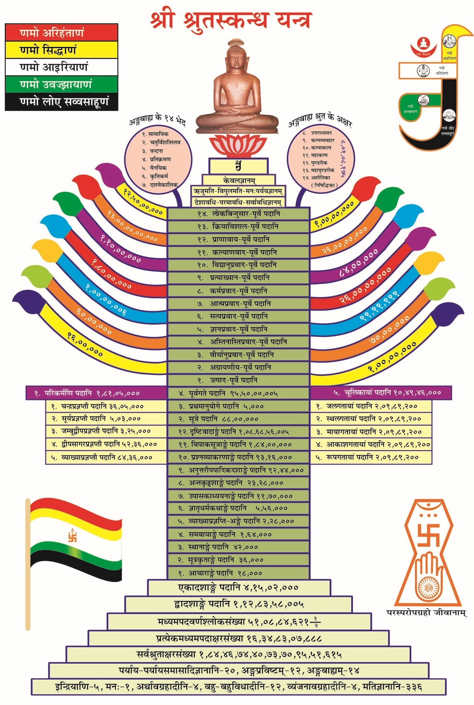

nikkyjain@gmail.com
Date : 27-Jun-2022
Index
अधिकार
Index

!! श्रीसर्वज्ञवीतरागाय नम: !!
श्रीमद्-भगवत्कुन्दकुन्दाचार्यदेव-प्रणीत
श्री
पंचास्तिकाय
मूल प्राकृत गाथा, श्री अमृतचंद्राचार्य विरचित 'समय-व्याख्या' नामक संस्कृत टीका का हिंदी अनुवाद, श्री जयसेनाचार्य विरचित 'तात्पर्य-वृत्ति' नामक संस्कृत टीका का हिंदी अनुवाद सहित
आभार : पं जयचंदजी छाबडा, पं हुकमचंद भारिल्ल
🏠
!! नम: श्रीसर्वज्ञवीतरागाय !!
ओंकारं बिन्दुसंयुक्तं नित्यं ध्यायन्ति योगिनः
कामदं मोक्षदं चैव ॐकाराय नमो नम: ॥1॥
अविरलशब्दघनौघप्रक्षालितसकलभूतलकलंका
मुनिभिरूपासिततीर्था सरस्वती हरतु नो दुरितान् ॥2॥
अज्ञानतिमिरान्धानां ज्ञानाञ्जनशलाकया
चक्षुरुन्मीलितं येन तस्मै श्रीगुरवे नम: ॥3॥
॥ श्रीपरमगुरुवे नम:, परम्पराचार्यगुरुवे नम: ॥
सकलकलुषविध्वंसकं, श्रेयसां परिवर्धकं, धर्मसम्बन्धकं, भव्यजीवमन: प्रतिबोधकारकं, पुण्यप्रकाशकं, पापप्रणाशकमिदं शास्त्रं श्री-पंचास्तिकाय नामधेयं, अस्य मूल-ग्रन्थकर्तार: श्री-सर्वज्ञ-देवास्तदुत्तर-ग्रन्थ-कर्तार: श्री-गणधर-देवा: प्रति-गणधर-देवास्तेषां वचनानुसार-मासाद्य आचार्य श्री-कुन्द-कुन्दाचार्य-देव विरचितं ॥
॥ श्रोतार: सावधानतया शृणवन्तु ॥
मंगलं भगवान् वीरो मंगलं गौतमो गणी
मंगलं कुन्दकुन्दार्यो जैनधर्मोऽस्तु मंगलम् ॥
सर्वमंगलमांगल्यं सर्वकल्याणकारकं
प्रधानं सर्वधर्माणां जैनं जयतु शासनम् ॥
।
सुध्यान में लवलीन हो जब, घातिया चारों हने ।
सर्वज्ञ बोध विरागता को, पा लिया तब आपने ॥
उपदेश दे हितकर अनेकों, भव्य निज सम कर लिये ।
रविज्ञान किरण प्रकाश डालो, वीर! मेरे भी हिये ॥
।
स्याद्वाद, नय, षट् द्रव्य, गुण, पर्याय और प्रमाण का ।
जड़कर्म चेतन बंध का, अरु कर्म के अवसान का ॥
कहकर स्वरूप यथार्थ जग का, जो किया उपकार है ।
उसके लिये जिनवाणी माँ को, वंदना शत बार है ॥
।
नि:संग हैं जो वायुसम, निर्लेप हैं आकाश से ।
निज आत्म में ही विहरते, जीवन न पर की आस से ॥
जिनके निकट सिंहादि पशु भी, भूल जाते क्रूरता ।
उन दिव्य गुरुओं की अहो! कैसी अलौकिक शूरता ॥
🏠
कलश
स्वसंवेदनसिद्धाय जिनाय परमात्मने
शुद्धजीवास्तिकायाय नित्यानंदचिदे नम: ॥1-ज.आ.॥
सहजानन्द चैतन्य-प्रकाशाय महीयसे
नमोsनेकान्त-विश्रान्त-महिम्ने परमात्मने ॥1॥
दुर्निवार-नयानीक-विरोध-ध्वंस-नौषधि:
स्यात्कार-जीविता जीयाज्जैनी सिद्धान्त-पद्धति: ॥2॥
सम्यग्ज्ञाना-मल-ज्योतिर्जननी द्वि-नयाश्रया
अथात: समय-व्याख्या संक्षेपेणाsभिधियते ॥3॥
पन्चास्तिकाय-षड्-द्रव्य-प्रकारेण प्रारूपणम्
पूर्वं मूल-पदार्थानामिह सुत्रकृता कृतम् ॥4॥
जीवाजीवद्विपर्यायरुपाणां चित्रवत्-र्मनाम्
ततोनवपदार्थानां व्यवस्था प्रतिपादिता ॥5॥
ततस्तत्त्व-परिज्ञान-पूर्वेण त्रितयात्मना
प्रोक्ता मार्गेण कल्याणी मोक्ष-प्राप्तिर-पश्चिमा ॥6-अ.आ.॥
अन्वयार्थ :
अमृतचंद्राचार्य :
स्वसंवेदन से सिद्ध, शुद्ध जीवास्तिकायमय, सतत चिदानंद सम्पन्न जिनेन्द्र परमात्मा को नमस्कार हो ॥१-ज.आ.॥
सहज आनन्द एवं सहज चैतन्य प्रकाशमय होनेसे जो अति महान है तथा अनेकान्त में स्थित जिसकी महिमा है, उस परमात्मा को नमस्कार हो ॥१-अ.आ.॥
स्यात्कार जिसका जीवन है ऐसी जैनी (जिनभगवान की) सिद्धांतपद्धति, जो कि दुर्निवार नयसमूह के विरोध का नाश करनेवाली औषधि है वह, जयवंत हो ॥२-अ.आ.॥
अब यहाँ से, जो सम्यग्ज्ञानरूपी निर्मल ज्योति की जननी है ऐसी द्विनयाश्रित (दो नयों का आश्रय करनेवाली) समयव्याख्या (पंचास्तिकायसंग्रह नामक शास्त्र की समयव्याख्या नामक टीका) संक्षेप से कही जाती है ॥३-अ.आ.॥
यहाँ प्रथम सुत्रकर्ता ने मूल पदार्थों का पंचास्तिकाय एवं षड्द्रव्य के प्रकार से प्ररूपण किया है (इस शास्त्र के प्रथम अधिकार में श्रीमद्भगवत्कुन्दकुन्दाचार्यदेव ने विश्व के मूल पदार्थों का पाँच अस्तिकाय और छह द्रव्य की पद्धति से निरूपण किया है) ॥४-अ.आ.॥
पश्चात् (दूसरे अधिकार में), जीव और अजीव -- इन दो की पर्यायोंरूप नव-पदार्थों की, कि जिनके मार्ग अर्थात् कार्य भिन्न-भिन्न प्रकार के हैं उनकी, व्यवस्था प्रतिपादित की है ॥५-अ.आ.॥
पश्चात् (दूसरे अधिकार के अन्त में) , तत्त्व के परिज्ञान पूर्वक (पंचास्तिकाय, षड्द्रव्य तथा नव पदार्थों के यथार्थ ज्ञानपूर्वक) त्रयात्मक मार्ग से (सम्यग्दर्शन ज्ञानचारित्रात्मक मार्ग से) कल्याणस्वरूप उत्तम मोक्ष-प्राप्ति कही है ॥६-अ.आ.॥
जयसेनाचार्य :
प्रसिद्ध कथा न्याय से (पूर्व प्रचलित कथानुसार) पूर्व विदेह जाकर वीतराग सर्वज्ञ श्री सीमंधर स्वामी तीर्थंकर परमदेव को देखकर, उनके मुखकमल से निकली दिव्य वाणी को सुनकर, अवधारित पदार्थ से शुद्धात्मतत्त्वादि के सार को ग्रहणकर, पुन: यहाँ आकर, कुमारनंदि सिद्धान्तदेव के शिष्य पद्मनंदि आदि अपर नामों वाले श्री कुंदकुंद आचार्यदेव द्वारा गौण-मुख्य पद्धति से अन्तस्तत्त्व-बहिस्तत्त्व की जानकारी के लिए अथवा शिवकुमार महाराज आदि संक्षिप्त रुचिवाले शिष्यों को समझाने के लिए पंचास्तिकाय प्राभृत शास्त्र रचा गया है। उसका यथाक्रम से अधिकार-शुद्धि पूर्वक तात्पर्यरूप व्याख्यान कहा जाता है / किया जाता है ।
(उपोद्घात) वह इसप्रकार- सर्वप्रथम [इंदसयवंदियाणं] इत्यादि पाठक्रम से एक सौ ग्यारह गाथाओं द्वारा पंचास्तिकाय-षट्द्रव्य प्रतिपादनरूप से प्रथम महाधिकार है अथवा वह हिन्दी अनुवादिकाकृत मंगलाचरण - ही आचार्य अमृतचंद्रकृत टीका के अभिप्राय से एक सौ चार गाथाओं पर्यन्त है। इसके बाद [अभिवंदिऊणसिरसा] इत्यादि पचास गाथाओं द्वारा सात तत्त्व, नौ पदार्थ के व्याख्यानरूप से दूसरा महाधिकार है; वह ही आचार्य अमृतचंद्रीय टीका के अभिप्राय से उनन्चास गाथा पर्यन्त है। तदुपरान्त [जीव सहाओ] इत्यादि बीस गाथाओं द्वारा मोक्षमार्ग, मोक्षस्वरूप-कथन की मुख्यता से तीसरा महाधिकार है। - इसप्रकार समूहरूप से एक सौ इक्यासी (१८१) गाथाओं द्वारा तीन महाधिकार जानना चाहिए। उनमें से प्रथम महाधिकार में पाठक्रम से अन्तराधिकार कहते हैं। वह इसप्रकार- एक सौ ग्यारह गाथाओं में इंदसय... इत्यादि गाथा से प्रारम्भकर सात गाथायें समय शब्दार्थ पीठिका के व्याख्यान की मुख्यता से, तत्पश्चात् द्रव्यपीठिका-व्याख्यानरूप से चौदह गाथायें, तदनन्तर कालद्रव्य की मुख्यता से पाँच गाथायें, तदुपरांत जीवास्तिकाय-कथनरूप से त्रेपन गाथायें, इसके बाद पुद्गलास्तिकाय की मुख्यता से दश गाथायें, तत्पश्चात् धर्माधर्मास्तिकाय के व्याख्यानरूप से सात गाथायें, तत्पश्चात् आकाशास्तिकाय के कथन की मुख्यता से सात गाथायें, तदनन्तर चूलिका-उपसंहार-व्याख्यान की मुख्यता से आठ गाथायें इसप्रकार कहे गए आठ अन्तराधिकारों द्वारा पंचास्तिकाय-षट्द्रव्य प्ररूपक प्रथम महाधिकार में समुदाय पातनिका पूर्ण हुई।
| प्रस्तुत कथन की सारणी
|
| क्रम
| अधिकारसंख्या
| आ. जयसेनकृत अधिकार नाम
| गाथा कहाँ से कहाँ पर्यन्त
| कुल गाथायें
| आ. अमृतचंद्रकृत अधिकार नाम
| गाथा कहाँ से कहाँ पर्यन्त
| कुल गाथायें
|
| १
| प्रथममहाधिकार
| षट्द्रव्य पंचास्तिकाय प्रतिपादक अधिकार
| १ से १११
| १११
| पंचास्तिकाय षट्द्रव्य संज्ञक प्रथम श्रुत स्कन्ध
| १ से १०४
| १०४
|
| २
| द्वितीयमहाधिकार
| सात तत्त्व-नव पदार्थ संज्ञक
| ११२ से १६१
| ५०
| नव पदार्थ पूर्वक मोक्षमार्ग प्रपंच संज्ञक द्वितीय श्रुत स्कन्ध
| १०५ से १५३
| ४९
|
| ३
| तृतीयमहाधिकार
| मोक्षमार्ग-मोक्ष-स्वरूपप्रतिपादक
| १६२ से १८१
| २०
| मोक्षमार्ग प्रपंच चूलिका
| १५४ से १७३
| २०
|
|
| कुल तीन महाधिकार
|
|
| कुल १८१
|
|
| कुल १७३
|
प्रथम महाधिकार की सारणी-कुल १११ गाथायें
| अंतराधिकार क्रम
| अंतराधिकार नाम
| कहाँ से कहाँ पर्यंत गाथायें
| कुल गाथायें
|
| १
| समय शब्दार्थ पीठिका
| १ से ७
| ७
|
| २
| द्रव्य पीठिका
| ८ से २१
| १४
|
| ३
| काल व्याख्यान
| २२ से २६
| ५
|
| ४
| जीवास्तिकाय
| २७ से ७९
| ५३
|
| ५
| पुद्गलास्तिकाय वर्णन
| ८० से ८९
| १०
|
| ६
| धर्माधर्मास्तिकाय व्याख्यान
| ९० से ९६
| ७
|
| ७
| आकाशास्तिकाय व्याख्यान
| ९७ से १०३
| ७
|
| ८
| चूलिका उपसंहार व्याख्यान
| १०४ से १११
| ८
|
|
| कुल आठ अन्तराधिकार
|
| कुल १११ गाथायें
|
वहाँ आठ अन्तराधिकारों में से सर्वप्रथम सात गाथाओं द्वारा समय शब्दार्थ पीठिका कही जाती है। उन सात गाथाओं में से दो गाथाओं द्वारा मंगल के लिए इष्ट, अधिकृत, अभिमत देवता को नमस्कार किया गया है। इसके बाद तीन गाथाओं द्वारा पंचास्तिकाय का संक्षिप्त व्याख्यान, तदनन्तर एक गाथा द्वारा काल सहित पंचास्तिकायों की द्रव्यसंज्ञा, तदुपरांत एक गाथा द्वारा संकर-व्यतिकर दोषों का निराकरण-इसप्रकार समय शब्दार्थ पीठिका में तीन स्थलों (मंगलाचरण सहित चार स्थल) द्वारा समुदाय-पातनिका पूर्ण हुई ।
| प्रथम अंतराधिकार की सारणी
|
| स्थल क्रम | स्थल विषय | गाथा कहाँ से कहाँ पर्यन्त | कुल गाथायें |
| १ | मंगलाचरण | १-२ | २
|
| २ | संक्षिप्त पंचास्तिकाय व्याख्यान | ३ से ५ | ३
|
| ३ | द्रव्य संज्ञा | ६ वीं | १
|
| ४ | दोष परिहार | ७ वीं | १
|
| कुल चार स्थल | | कुल सात गाथायें
|
अथ प्रथमत इन्द्रशतवन्दितेभ्य इत्यादि जिनभावनमस्काररूपमसाधारणं शास्त्रस्यादौ मंगलं कथयामीत्यभिप्रायं मनसि धृत्वा सूत्रमिदं प्रतिपादयति-
🏠
मंगलाचरण
इंदसदवंदियाणं तिहुवणहिदमधुरविसदवक्काणं ।
अंतातीदगुणाणं णमो जिणाणं जिदभवाणं ॥1॥
इन्द्रशतवन्दितेम्यस्त्रिभुवनहितमधुरविशदवाक्येभ्य: ।
अन्तातीतगुणभ्यो नमो जिनेभ्यो जितभवेभ्य: ॥१॥
शतइन्द्र वन्दित त्रिजगहित निर्मल मधुर जिनके वचन
अनन्त गुणमय भवजयी जिननाथ को शत-शत नमन ॥१॥
अन्वयार्थ : सौ इन्द्रों से पूजित, तीनों लोकों को हितकर, मधुर और विशद वचनों युक्त, अनन्त गुणों से सम्पन्न, जितभवी जिनेन्द्र भगवान को नमस्कार हो ।
अमृतचंद्राचार्य :
अब (श्रीमद्भगवत्कुन्दकुन्दाचार्यदेव विरचित) गाथा-सूत्र का अवतरण किया जाता है :-
यहाँ (इस गाथा में) 'जिनों को नमस्कार हो' ऐसा कहकर शास्त्र के आदि में जिन को भाव-नमसकार-रूप असाधारण मंगल कहा । 'जो अनादी प्रवाह से ही प्रवर्तमान (चले आ रहे) *सौ सौ इन्द्रों से वन्दित है' ऐसा कहकर सदैव देवाधिदेवपने के कारण वे ही (जिनदेव ही) असाधारण नमस्कार के योग्य हैं -- ऐसा कहा ।
'जिनकी वाणी
(दिव्य-ध्वनि) - तीन लोक को, ऊर्ध्व-अधो-मध्य लोकवर्ती समस्त जीव-समूह को निर्बाध विशुद्ध आत्म-तत्त्व की उपलब्धि का उपाय कहनेवाली होने से हितकर है,
- परमार्थ-रसिक जनों के मन को हरनेवाली होने से मधुर है और समस्त शंकादि-दोषों के स्थान दूर कर देने से विषद (निर्मल, स्पष्ट) है' -- ऐसा कहकर
- (जिनदेव) समस्त वस्तु के यथार्थ स्वरूप के उपदेशक होने से विचारवंत बुद्धिमान पुरुषों के बहुमान के योग्य हैं (अर्थात् जिनका उपदेश विचारवंत बुद्धिमान पुरुषों को बहुमान-पूर्वक विचारना चाहिए -- ऐसे हैं) ऐसा कहा ।
- 'अनन्त-क्षेत्र से अन्त रहित और काल से अन्त रहित -- परम-चैतन्य-शक्ति के विलास-स्वरूप गुण जिनका वर्तता है' ऐसा कहकर
- (जिनों को) परम अद्भुत ज्ञानातिशय प्रगट होने के कारण ज्ञानातिशय को प्राप्त योगिन्द्रों से भी वन्ध्य हैं -- ऐसा कहा ।
- 'भव (संसार) पर जिन्होनें विजय प्राप्त की है' ऐसा कहकर कृतकृत्यपना प्रगट हो जाने से वे ही (जिन ही) अन्य अकृतकृत्य जीवों को शरण-भूत हैं
-- ऐसा उपदेश दिया -- ऐसा सर्व पदों का तात्पर्य है ॥१॥
*भवनवासी देवों के ४० इन्द्र, व्यंतर देवों के ३२, कल्पवासी देवों के २४, ज्योतिष्क देवों के २, मनुष्यों का १ और तिर्यन्चों का १ -- इसप्रकार कुल १०० इन्द्र अनादी प्र्वाहरूप से चले आ रहे हैं
जयसेनाचार्य :
अब सर्वप्रथम शास्त्र के प्रारंभ में [इंद्रशतवंदितेभ्य:] आदि द्वारा जिनेन्द्र भगवान को भाव नमस्काररूप असाधारण मंगल कहता / करता हूँ। - इस अभिप्राय को मन में धारणकर यह गाथा-सूत्र प्रतिपादित करते हैं --
[णमो जिणाणं..] इत्यादि पदों का पद-खण्डनरूप से व्याख्यान (एक-एक पद का पृथक्-पृथक् विशेष स्पष्टीकरण) किया जाता है ।
[णमो] नमस्कार हो । किन्हें नमस्कार हो ? [जिणाणं] जिन (जिनेन्द्र भगवान) को नमस्कार हो। वे कैसे हैं ? [इंदसदवंदियाणं] सौ इन्द्रों से वंदित हैं । वे और कैसे हैं? [तिहुवणहिदमधुरविसदवक्काणं] तीनों लोकों को हितकर, मधुर और विशद वाक्यों से सहित हैं। वे और किन विशेषताओं से सहित हैं? [अंतातीदगुणाणं] वे अनन्त गुण सम्पन्न हैं तथा [जिदभवाणं] उन्होंने भव को जीत लिया है उन जिनेन्द्र भगवान को नमस्कार हो । -- इसप्रकार क्रियाकारक सम्बन्ध जानना। इसकी संस्कृत छाया इसप्रकार है --
इंद्रशतवंदितेभ्य: त्रिभुवनहितमधुरविशदवाक्येभ्य:
अन्तातीतगुणेभ्यो नमो जिनेभ्यो जितभवेभ्य:॥१॥
[पदयोर्विवक्षित: सुबिनसमासान्तरयो:] सुबन्त और समास के अलावा विवक्षित पदों के बीच सन्धि होती है इस परिभाषा-सूत्र के बल से यहाँ सन्धि होना सुनिश्चित होने पर भी प्राथमिक शिष्य को सुखपूर्वक (सरलता से) ज्ञान कराने के लिए इस ग्रंथ में सन्धि का नियम नहीं है ऐसा सर्वत्र जान लेना चाहिए । इसप्रकार चार विशेषणों से युक्त 'जिन' को नमस्कार हो । इसके द्वारा मंगल के लिए अनन्त ज्ञानादि के स्मरण-रूप भाव नमस्कार हो । -- ऐसा यह संग्रह (संक्षिप्त) वाक्य है ।
अब इसे ही विस्तार से कहते हैं -- वे सौ इन्द्रों से पूजित हैं - इसके द्वारा उनके प्रति पूजातिशयता का प्रतिपादन करने के लिए (यह विशेषण दिया गया है) । इससे क्या कहा गया है ? वे ही सौ इन्द्रों द्वारा नमस्कार करने-योग्य हैं, अन्य नहीं । अन्य नमस्कार करने-योग्य क्यों नहीं हैं ? उन देव, असुर आदि के युद्ध दिखाई देने से वे नमस्कार-योग्य नहीं हैं ।
- तीनों लोकों के जीवों हेतु शुद्धात्म-स्वरूप की प्राप्ति के उपाय की प्रतिपादक होने से वाणी हितकारी है ।
- वीतराग निर्विकल्प समाधि से उत्पन्न, सहज अपूर्व परमानन्द-रूप पारमार्थिक सुखरस के आस्वाद से, परम समरसी भाव के रसिक-जनों का मन मोहित करनेवाली होने से, मधुर है ।
- चंचल ज्ञानरूप संशय, गमन करते समय हुए तृणस्पर्श (के सम्बन्ध में विशेष जिज्ञासा से रहित) के समान विमोह और सीप में चाँदी के ज्ञान के समान विभ्रम से रहित होने के कारण शुद्ध जीवास्तिकाय आदि सात तत्त्व, नव पदार्थ, छह द्रव्य, पाँच अस्तिकाय की प्रतिपादक होने से; अथवा
- पूर्वापर (आगे-पीछे परस्पर में) विरोधादि दोषों से रहित होने के कारण; अथवा
- कर्णाट, मागध, मालव, लाट, गोड, गुर्जर -- इनमें से प्रत्येक की तीन-तीन -- इसप्रकार अठारह महाभाषाओं और सात सौ लघु भाषाओं तथा उनके भी अंतर्भेदगत बहु भाषारूप से एक साथ सभी जीवों को अपनी-अपनी भाषा द्वारा स्पष्ट अर्थ की प्रतिपादक होने से, ज्ञान करानेवाली होने से,
- सभी जीवों को समझाने वाली होने से
विशद, स्पष्ट, व्यक्त वाक्यरूप है दिव्यध्वनि जिनकी,
वे त्रिभुवन हित-मधुर-विशद-वाक्य हैं, उन्हें नमस्कार हो ।
वैसा ही कहा भी है 'जो (दिव्यध्वनि) सभी आत्माओं को हितकर है, वर्णरहित निरक्षरी है, जिसमें दोनों ओठों का कंपन नहीं है, इच्छा सहित नहीं है (बिना इच्छा के प्रगट होती है), दोषों से मलिन नहीं है, श्वासोच्छ्वास रुकने से होनेवाला क्रम जिसमें नहीं है, क्रोधरूपी विष जिनका शान्त हो गया है ऐसे पशुगण भी एक साथ जिसे कानों से सुनते हैं ऐसे सभी विप्रतिपत्तिओं--विसम्वादों से रहित वे सर्वज्ञ भगवान के अपूर्व वचन हमारी रक्षा करें।'
इसप्रकार वचनों की अतिशयता प्रतिपादित होने से वे वचन ही प्रमाण हैं; एकान्त से अपौरुषेय वचन और अनेक कथाओं युक्त कल्पित पुराण वचन प्रमाण नहीं हैं इससे यह कहा गया है ।
अन्तरहित अनन्त द्रव्य, क्षेत्र, काल, भाव को जाननेवाला होने से केवलज्ञान गुण अन्तरहित अनन्त है । वह जिनके है वे अनन्त गुण सम्पन्न हैं, उन्हें नमस्कार हो । इसके द्वारा ज्ञान की अतिशयता प्रतिपादित होने से, बुद्धि आदि सात ऋद्धि और मतिज्ञानादि चार प्रकार के ज्ञानों से सम्पन्न गणधर देवादि योगीन्द्रों से भी वे पूज्य हैं यह कहा गया है ।
(द्रव्य आदि पंच परावर्तनरूप) पाँच प्रकार का संसार आजवंजव (आवागमन) जिनने जीत लिया है, उन्हें नमस्कार हो । इसके द्वारा घातिकर्मों के नाश से अतिशय का प्रतिपादन होने से कृतकृत्यता प्रगट हो जाने के कारण अन्य अकृतकृत्यों के लिए वे ही शरण हैं, अन्य नहीं -- यह प्रतिपादित है ।
इसप्रकार के चार विशेषणों से सहित 'जिन' को नमस्कार हो । इसके द्वारा मंगल के लिए अनन्त ज्ञानादि गुणों के स्मरणरूप भाव नमस्कार किया है । अनेक भव-रूपी वन और विषय-रूपी दु:खों को प्राप्त कराने में कारणभूत कर्मरूपी शत्रुओं को जो जीतते हैं, वे 'जिन' हैं; व्युत्पत्ति पक्ष में सफेद शंख के समान स्वरूप का कथन करने के लिए तथा अव्युत्पत्तिपक्ष में नाम निक्षेपरूप 'जिन' का निराकरण करने के लिए उन 'जिन' के ये चार विशेषण हैं। इसप्रकार विशेष्य-विशेषण सम्बन्ध-रूप से शब्दार्थ कहा ।
अनन्त ज्ञानादि गुणों के स्मरणरूप भाव नमस्कार अशुद्ध निश्चयनय से, 'जिन को नमस्कार हो' -- इसप्रकार वचनात्मक द्रव्य नमस्कार भी असद्भूत व्यवहारनय से तथा शुद्ध निश्चयनय से अपने में ही आराध्य-आराधक भाव है इसप्रकार नयार्थ भी कहा गया ।
वे ही नमस्कार करने-योग्य हैं; अन्य नहीं -- इत्यादि रूप से मतार्थ भी कहा गया है ।
सौ इन्द्रों से पूजित हैं ऐसा आगमार्थ प्रसिद्ध ही है ।
अनंत ज्ञानादि गुण युक्त शुद्ध जीवास्तिकाय ही उपादेय है यह भावार्थ है । इसप्रकार (इस गाथा का) शब्दार्थ, नयार्थ, मतार्थ, आगमार्थ और भावार्थ है ।
इसीप्रकार शब्दार्थ, नयार्थ, मतार्थ, आगमार्थ, भावार्थ व्याख्यानकाल में सर्वत्र लगा लेना चाहिए ।
इसप्रकार संक्षेप में मंगल के लिए इष्ट देवता को नमस्कार किया । यहाँ मंगल उपलक्षण (संकेत मात्र) है; अत: निमित्त, हेतु, परिमाण, नाम और कर्तारूप पाँच अधिकार यथा-संभव कह देना चाहिए ।
अब विस्तार रुचिवाले शिष्यों को व्यवहारनय का आश्रय लेकर यथाक्रम से मंगल आदि छह अधिकारों का इयत्ता, परिमित, विशेषणरूप से व्याख्यान किया जाता है
'मंगल, निमित्त, हेतु, परिमाण, नाम और कर्ता इन छह का व्याख्यान करने के बाद ही आचार्य शास्त्र का व्याख्यान करें। (धवला पुस्तक १, गाथा १)
[वक्खाणऊ] व्याख्यान करें । कर्तारूप कौन व्याख्यान करें ? [आइरिओ] आचार्य व्याख्यान करें । किसका कब व्याख्यान करें ? [सत्थं पच्छा] शास्त्र का बाद में व्याख्यान करें । पहले क्या करके बाद में करें ? [वागरिय] व्याख्या करके फिर करें । किनकी व्याख्या करके करें ? [छप्पि मंगलनिमित्तहेऊ परिमाणा णाम तह य कत्तारं] मंगल, निमित्त, हेतु, परिमाण, नाम, कर्तृत्व इन छह अधिकारों की व्याख्याकर बाद में करें। वह इसप्रकार --
मं=पाप को, गल=गलाता है, नष्ट करता है, वह मंगल है; अथवा मंग=पुण्य या सुख को, ल=लाता है, देता है, ग्रहण कराता है, वह मंगल है।
चार फल के इच्छुक ग्रन्थकार मंगल के लिए शास्त्र के प्रारंभ में तीन प्रकार के देवताओं को तीन प्रकार से नमस्कार करते हैं -- नास्तिकता के निराकरणार्थ, शिष्टाचार का प्रपालन करने-हेतु, पुण्य-प्राप्ति और निर्विघ्न-समाप्ति के लिए आचार्य शास्त्र के प्रारंभ में स्तुति करते हैं ।
देवता तीन प्रकार के कहे गए हैं । कौन कौन से तीन प्रकार के हैं ? इष्टदेवता, अधिकृतदेवता और अभिमत देवता के भेद से वे तीन प्रकार के हैं । आशीर्वादात्मक, वस्तु-कथन-रूप और नमस्कार के भेद से नमस्कार तीन प्रकार के हैं ।
मुख्य और अमुख्य के भेद से वह मंगल भी दो प्रकार का है। उसमें से मुख्य मंगल कहते हैं --
'निर्विघ्नता की प्रकृष्ट-सिद्धि के लिए जिनेन्द्र भगवान के गुण-स्तोत्ररूप मंगल बुद्धिमानों द्वारा (शास्त्र के) आदि, मध्य और अंत में करने-हेतु कहा गया है।' (धवला पु. १, श्लोक २२)
वैसा ही कहा है 'जिनेन्द्र भगवान का गुणगान करने से विघ्न नष्ट हो जाते हैं, किंचित् भी भय नहीं रहते, क्षुद्र देव उल्लंघन नहीं करते, यथेष्ट अर्थों को प्राप्त करते हैं।' (वही, श्लोक २१)
'प्रारम्भ में मंगल करने से शिष्य शीघ्रता से (विद्या के) पारगामी होते हैं। मध्य में मंगल करने से विद्या की व्युच्छित्ति नहीं होती, निर्विघ्न रहती है। अंत में मंगल करने से विद्या का फल प्राप्त होता है।' (वही, गाथा २०)
अमुख्य (औपचारिक) मंगल कहते हैं-- 'सिद्धार्थ, पूर्णकुम्भ, वंदनमाला, श्वेतछत्र, श्वेत वर्ण, आदर्श (दर्पण), नाथ (राजा), कन्या, उत्तम जाति का घोड़ा।' (वही, गाथा १३)
'व्रत, नियम, संयम गुणों के द्वारा जिनवरों ने परमार्थ का साधन किया है तथा जिनकी सिद्ध संज्ञा है ; इसलिए वे सिद्धार्थ (सफेद सरसों) मंगल हैं।' (वही, १४)
'जो मनोरथों से पूर्ण हैं, केवलज्ञान से भी पूर्ण हैं ऐसे अरहंत इस लोक में पूर्णकुंभरूप सुमंगल हैं।' (वही, १५)
'निकलते हुए या प्रवेश करते हुए वे चौबीसों तीर्थंकर वंदनीय हैं; अत: भरत ने वंदनमाला की थी, वह वंदनमाला भी मंगल है।' (वही, १६)
'सभी जीवों के लिए मोक्ष का मार्ग बतानेवाले अरहंत भगवान जगत को छत्र समान हैं, सिद्ध भी छत्राकार हैं, इससे वह छत्र भी मंगल है।' (वही, १७)
'शेष रहे अघाति कर्मों से सहित अरहंत भगवान के श्वेत वर्ण के समान ध्यान और लेश्या अर्थात् शुक्लध्यान और शुक्ललेश्या है, इसलिए लोक में श्वेत वर्ण भी सुमंगल है।' (वही, १८)
'जैसे जिनेन्द्र के केवलज्ञान में लोकालोक दिखाई देता है; उसीप्रकार दर्पण में भी बिम्ब दिखता है; अत: उसे भी मंगल माना गया है।' (वही, १९)
'जैसे वीतराग सर्वज्ञ जिनवर लोक में मंगल हैं; उसीप्रकार घोड़ा, राजा और बालकन्या को भी मंगल जानो।' (वही, २०)
'जैसे जिनवर कर्म-शत्रुओं को जीतकर मोक्ष प्राप्त करते हैं; उसीप्रकार चतुरंगिणी शत्रुसेना को घोड़ा के माध्यम से जीता जाता है; अत: उसे भी मंगल कहा गया है।' (वही, २१)
अथवा निबद्ध और अनिबद्ध के भेद से मंगल दो प्रकार का है। उन्हीं ग्रंथकार द्वारा किया गया मंगल निबद्ध मंगल है। जैसे [मोक्षमार्गस्य नेतारं..] इत्यादि। दूसरे ग्रंथ से लाया गया नमस्कार अनिबद्ध मंगल है। जैसे [जगत्त्रयनाथाय..] इत्यादि।
इस प्रसंग में शिष्य पूर्वपक्ष ( प्रश्न ) करता है शास्त्र के प्रारम्भ में शास्त्रकार मंगल के लिए परमेष्ठी गुणों का स्तोत्र किसलिये करते हैं, जो शास्त्र प्रारम्भ किया है उसे ही कहना चाहिए, मंगल की आवश्यकता नहीं है; तथा (आपको) ऐसा भी नहीं कहना चाहिए कि मंगल नमस्कार से पुण्य होता है और पुण्य से (कार्य) निर्विघ्न हो जाता है। ऐसा क्यों नहीं कहना चाहिए? यदि आपका ऐसा प्रश्न हो तो (मेरा कहना यह है कि इसमें) व्यभिचार (दोष) होने के कारण ऐसा नहीं कहना चाहिए । वह इसप्रकार -- कभी / कहीं पर नमस्कार, दान, पूजा आदि करने पर भी विघ्न दिखाई देते हैं और कभी / कहीं पर दान, पूजा, नमस्कार का अभाव होने पर भी निर्विघ्न दिखाई देता है ।
आचार्य परिहार करते हैं -- यह तुम्हारा कथन उचित नहीं है । पूर्वाचार्य इष्ट देवता को नमस्कार करके ही कार्य करते हैं। और जो आपने कहा कि नमस्कार करने से पुण्य होता है, पुण्य से निर्विघ्न होता है ऐसा नहीं कहना चाहिए; वह भी उचित नहीं है। वह उचित क्यों नहीं है? देवता को नमस्कार करने से पुण्य होता है, उससे निर्विघ्न होता है ऐसा तर्कादि शास्त्रों में सम्यक् प्रकार से स्थापित / सिद्ध किया गया होने से वह उचित नहीं है । और जो तुमने कहा तथा व्यभिचार (दोष) दिखाया, वह भी उचित नहीं है। वह उचित क्यों नहीं है? जहाँ देवता नमस्कार, दान, पूजादि धर्म करने पर भी विघ्न होता है; वहाँ यह जानना चाहिए कि पूर्वकृत पाप का फल है, धर्म का दोष नहीं है;
तथा जहाँ देवता नमस्कार, दान, पूजादि धर्म का अभाव होने पर भी निर्विघ्न दिखाई देता है, वहाँ यह जानना चाहिए कि वह पूर्वकृत धर्म का फल है, पाप का नहीं ।
पुन: शिष्य कहता है कि शास्त्र मंगल हैं या अमंगल? यदि मंगल हैं तो मंगल को मंगल का क्या प्रयोजन रहा? और यदि अमंगल हैं तो उस शास्त्र से क्या प्रयोजन रहा ?
आचार्य परिहार करते हैं कि -- भक्ति के कारण मंगल का भी मंगल किया जाता है । वैसा कहा भी है
'जैसे दीपक से सूर्य की, जल से महासागर की, वाणी से वाणीश्वरी (जिनवाणी) की पूजा करते हो, उसीप्रकार मंगल से मंगल भी करो ।' ॥१॥
दूसरी बात यह है कि इष्ट देवता को नमस्कार करने से, हमारे प्रति किए गए उनके उपकारों की स्वीकृति होती है । वैसा ही कहा है -- परमेष्ठियों के प्रसाद से श्रेयोमार्ग की सम्यक् सिद्धि होती है, इसलिए शास्त्र के प्रारंभ में उनके गुणों का स्तोत्र (स्तवन) मुनिपुंगव / मुनिश्रेष्ठ आचार्यादि करते हैं ॥आप्तपरीक्षा-२॥
इष्ट-फल की सिद्धि का उपाय सम्यग्ज्ञान है, वह सुशास्त्र से होता है, उसकी उत्पत्ति आप्त से होती है इसलिए उनके द्वारा प्रबुद्ध हुए जीवों द्वारा वे पूज्य हो जाते हैं; क्योंकि सज्जन किए गए उपकार को विस्मृत नहीं होते / भूलते नहीं हैं ॥त.श्लोकवार्तिक-११॥
इसप्रकार संक्षेप में मंगल का व्याख्यान किया ।
निमित्त का कथन करते हैं -- निमित्त अर्थात् कारण। वीतराग-सर्वज्ञ की दिव्यध्वनि रूपी शास्त्र-प्रवृत्ति में कारण क्या है? भव्य जीवों के पुण्य की प्रेरणा से उनकी प्रवृत्ति होती है । वैसा ही कहा है -- भव्य जीव श्रुतज्ञानरूपी सूर्य के दिव्य तेज द्वारा छह द्रव्य, नव पदार्थों को देखें, एतदर्थ श्रुतरूपी सूर्य का उदय होता है ॥ध.पु. १, गाथा ३५॥
इस प्रस्तुत ग्रन्थ में शिवकुमार महाराज निमित्त हैं, अन्यत्र द्रव्यसंग्रह आदि में सोमाश्रेष्ठी आदि जानना चाहिये। इसप्रकार संक्षेप में निमित्त का कथन किया।
अब हेतु का व्याख्यान करते हैं -- हेतु अर्थात् फल। हेतु शब्द से फल कैसे कहा जाता है? यदि ऐसा प्रश्न हो तो कहते हैं -- फल का कारण होने से उसे उपचार से फल कहते हैं। वह फल प्रत्यक्ष और परोक्ष के भेद से दो प्रकार का है । प्रत्यक्ष फल भी साक्षात् और परम्परा के भेद से दो प्रकार का है । साक्षात् प्रत्यक्ष फल क्या है ? अज्ञान का निराकरण, सम्यग्ज्ञान की उत्पत्ति, असंख्यात गुणश्रेणी कर्म-निर्जरा इत्यादि साक्षात् प्रत्यक्ष फल हैं । परम्परा प्रत्यक्षफल क्या है? शिष्य-प्रतिशिष्य से पूजा-प्रशंसा प्राप्त होना, शिष्यों की निष्पत्ति, प्राप्ति आदि परम्परा प्रत्यक्ष फल है। इसप्रकार संक्षेप में प्रत्यक्षफल कहा ।
अब परोक्षफल कहते हैं वह भी अभ्युदय और नि:श्रेयस सुख के भेद से दो प्रकार का है। अभ्युदय सुख का वर्णन करते हैं -- राजा, अधिराजा, महाराजा, अर्धमंडलीक, मंडलीक, महामंडलीक, अर्धचक्रवर्ती, सकलचक्रवर्ती, इन्द्र, गणधरदेव, तीन कल्याण पर्यंत तीर्थंकर परमदेव (पदों की प्राप्तिरूप ) अभ्युदय सुख है। राजा आदि का लक्षण कहते हैं एक करोड प्राकारि (कोट) अठारह श्रेणियों का स्वामी ही मुकुटधर कहलाता है, पाँच सौ मुकुट बद्ध राजाओं का अधिपति अधिराजा है, उससे दूने-दूने क्रम से सकल चक्रवर्ती पर्यंत होना अभ्युदय सुख है ।
नि:श्रेयस (मोक्ष) सुख का वर्णन करते हैं -- अर्हंत पद को कहते हैं घन रूप घाति कर्मों से रहित, चौंतीस अतिशयों, पाँच-कल्याणों और आठ महा-प्रातिहार्यों से सम्पन्न अरहंत मेरा मंगल करें ।
सिद्धपद का कथन करते हैं -- मूलोत्तर कर्मप्रकृतियों के बंध-उदय-सत्त्व से रहित, आठ गुण सहित, संसार से अतीत / रहित सिद्ध भगवान मंगलभूत हैं ।
इसप्रकार संक्षेप से अभ्युदय और नि:श्रेयस का वर्णन किया। यहाँ तात्पर्य यह है कि जो कोई भी वीतराग-सर्वज्ञ प्रणीत पंचास्तिकाय संग्रह आदि शास्त्र को पढ़ता है, उनकी श्रद्धा करता है, भावना करता है; वह इसप्रकार के सुख को प्राप्त होता है ऐसा अर्थ है ।
अब परिमाण का प्रतिपादन करते हैं -- वह भी ग्रन्थ और अर्थ के भेद से दो प्रकार का है । यथासम्भव ग्रन्थ की शब्द संख्या आदि ग्रन्थ परिमाण है। अर्थपरिमाण अनन्त है । इसप्रकार संक्षेप में परिमाण कहा ।
नाम का वर्णन करते हैं -- अन्वयार्थ (सार्थक), यदृच्छ (ऐच्छिक) के भेद से नाम दो प्रकार का है । अन्वर्थ नाम क्या है? जैसा नाम वैसा ही अर्थ, जैसे जो तपता है वह तपन / सूर्य ऐसा अर्थ है; अथवा पंचास्तिकायों का वर्णन जिस शास्त्र में है वह पंचास्तिकाय, द्रव्यों का संग्रह द्रव्यसंग्रह इत्यादि। यदृच्छ नाम-काष्ठाभार से ईश्वर (काष्ठ का भार / ढोने वाले को ईश्वर कहना) इत्यादि ।
कर्ता का वर्णन करते हैं -- मूल तंत्रकर्ता, उत्तर तन्त्रकर्ता, उत्तरोत्तर तंत्रकर्ता के भेद से वह तीन प्रकार का है। काल की अपेक्षा (वर्तमान काल सम्बंधी) मूल तंत्रकर्ता अठारह दोषों से रहित अनंत चतुष्टय सम्पन्न श्री वर्धमान-स्वामी हैं, उत्तर तंत्रकर्ता चार-ज्ञान-धारी और सात ऋद्धि से सम्पन्न श्री गौतम-स्वामी गणधर-देव हैं, उत्तरोत्तर तंत्रकर्ता यथा संभव अनेकों होते हैं ।
कर्ता का उल्लेख किसलिये किया जाता है? कर्ता की प्रमाणता से वचनों में प्रामाणिकता का ज्ञान कराने के लिए कर्ता का उल्लेख किया जाता है ।
इसप्रकार संक्षेप में मंगल आदि छह अधिकारों का प्रतिपादन व्याख्यान किया गया ॥१॥
इसप्रकार मंगल के लिए इष्टदेवता नमस्कार परक गाथा पूर्ण हुई ॥
🏠
द्रव्य-सामान्य
समणमुहुग्गदमट्ठं चदुगदिविणिवारणं सणिव्वाणं ।
एसो पणमिय सिरसा समयमिणं सुणह वोच्छामि ॥2॥
श्रमणमुखोद्गतार्थं चर्तुगतिनिवारणं सनिर्वाणम् ।
एष: प्रणम्य शिरसा समयमिमं शृणुत वक्ष्यामि ॥२॥
सर्वज्ञ भाषित भवनिवारक मुक्ति के जो हेतु हैं
उन जिनवचन को नमन कर मैं कहूँ तुम उनको सुनो ॥२॥
अन्वयार्थ : श्रमण के मुख से निकले हुए अर्थमय, चतुर्गति का निवारण करनेवाले, निर्वाण सहित इस समय को सिरसा प्रणाम कर मैं इसे कहूँगा, तुम सुनो! ।
अमृतचंद्राचार्य :
समय अर्थात आगम; उसे प्रणाम करके स्वयं उसका कथन करेंगे ऐसी यहाँ (श्रीमद-भगवत्कुंद-कुन्दाचार्य-देव ने) प्रतिज्ञा की है । वह (समय) प्रणाम करने एवं कथन करने योग्य है, क्योंकि वह आप्त द्वारा उपदिष्ट होने से सफल है । वहाँ, उसका आप्त द्वारा उपदिष्ट-पना इसलिए है कि जिससे वह 'श्रमण के मुख से निकला हुआ अर्थमय' है । 'श्रमण' अर्थात् महा-श्रमण--सर्वज्ञ-वीतराग-देव; और 'अर्थ' अर्थात अनेक शब्दों के सम्बन्ध से कहा जानेवाला, वस्तु-रूप से एक ऐसा पदार्थ । पुनश्च उसकी (समय की) सफलता इसलिए है की जिससे वह समय (१) 'नारकत्व, तिर्यन्चत्व, मनुषत्व तथा देवत्व-स्वरूप चार गतियों का निवारण' करने के कारण और (२) शुद्धात्म-तत्त्व की उपलब्धि-रूप 'निर्वाण का परम्परा से कारण' होने के कारण (१) परतन्त्रता-निवृत्ति जिसका लक्षण है और (२) स्वतंत्रता-प्राप्ति जिसका लक्षण है -- ऐसे फल सहित है ॥२॥
जयसेनाचार्य :
अब, द्रव्यागम-रूप शब्द समय को नमस्कार कर पंचास्तिकाय रूप अर्थ समय कहूँगा, ऐसी प्रतिज्ञा पूर्वक अधिकृत, अभिमत देवता को नमस्कार करने से सम्बन्ध, अभिधेय, प्रयोजन की सूचना देता हूँ, ऐसा अभिप्राय मन में धारण कर इस सूत्र (गाथा) का निरूपण करते हैं --
[पणमिय] प्रणाम करके । कर्तारूप कौन प्रणाम करके? [एसो] यह मैं प्रणाम करके। किससे प्रणाम करके? [सिरसा] उत्तमांगरूप सिर से / सिर झुकाकर प्रणाम करके। किसे प्रणाम करके? [समयमियं] इस प्रत्यक्ष विद्यमान समय को प्रणाम करके। किस विशेषता वाले उसे प्रणाम कर ? [समणमुहुग्गदं] सर्वज्ञ-वीतराग महाश्रमण के मुख से निकले हुये को प्रणाम कर। और वह किस विशेषता वाला है? [अट्ठं] जीवादि पदार्थमय है। और उसका क्या रूप है? [चतुग्गदि णिवारणं] नरकादि चारों गतियों का निवारण करनेवाला है। और वह कैसा है? [सणिव्वाणं] सम्पूर्ण कर्मों से विशेष रूप से छूटने लक्षण-रूप निर्वाण-सहित है। इसप्रकार का शब्दसमय कैसा है? जो गम्भीर है, मधुर है, मनोहरतर है, दोषरहित, हितकर है, पवन के रुकने से प्रगट नहीं होने वाला स्पष्ट, उन-उन अभीष्ट वस्तुओं को कहने वाला है, सर्वभाषात्मक है, दूर व निकटवर्ती को समान है, समतामय तथा उपमारहित है, ऐसे जिनेन्द्र के वचन हमारी रक्षा करें।
वैसा ही कहा भी है --
'जिसके द्वारा अज्ञान रूपी अंधकार का विस्तार नष्ट हो जाता है तथा जिससे ज्ञेय के प्रति उपेक्षा, हित में आदान और अहित के परिहार / त्याग भाव प्राणियों को प्रगट होता है, जिससे सम्यग्दर्शन प्रगट होता है, सदैव मिथ्या श्रद्धा-मिथ्या चारित्र नष्ट होते हैं ऐसा वह ज्ञानरूपी श्रेष्ठ सूर्य मेरे मन-कमल को विकसित करने हेतु उदित होओ।'
इत्यादि गुणविशिष्ट वचनों को नमस्कार कर क्या करता हूँ। [वोच्छामि] कहूँगा। किसे कहेंगे? अर्थ समय को कहूँगा। [सुणुह] हे भव्यों! तुम सभी सुनो -- इस प्रकार क्रिया-कारक सम्बंध है ।
अथवा दूसरा व्याख्यान [समणमुहुग्गदमट्ठं] श्रमण के मुख से निर्गत पंचास्तिकाय लक्षण अर्थ-समय का प्रतिपादक होने से अर्थ है, [चद्रुग्गदिनिवारणं सनिव्वाणं] परम्परा से चारों गतियों की निवारणता होने से ही निर्वाण-सहित है। [एसो] यह मैं ग्रन्थ करने के लिए उद्यमशील मनवाला कुंदकुंदाचार्य [प्रणम्य] नमस्कार करके। कैसे नमस्कार करके? [सिरसा] मस्तक / उत्तमांग से / सिर झुकाकर नमस्कार करके। किसे नमस्कार कर? [समयमिणं] पूर्वोक्त समय को, [श्रमणमुखोद्गत] आदि चार विशेषणों से सहित उस प्रत्यक्षीभूत शब्दरूप द्रव्यागम शब्द समय को प्रणाम कर। इसके बाद क्या करता हूँ? [वक्ष्यामि] कहता हूँ, प्रतिपादित करता हूँ, [श्रुणुत] हे भव्य! तुम सुनो! किसे कहता हूँ? उसी शब्द समय से वाच्य अर्थसमय को शब्दसमय को नमस्कार कर, बाद में ज्ञानसमय की प्रसिद्धि के लिए अर्थसमय को कहता हूँ।
वीतराग-सर्वज्ञ महा श्रमण मुखोद्गत शब्दसमय को कोई आसन्न भव्य पुरुष सुनता है; पश्चात् शब्दसमय के वाच्यभूत पंचास्तिकाय लक्षण अर्थसमय को जानता है उसके अन्तर्गत शुद्ध जीवास्तिकाय लक्षण अर्थ में वीतराग निर्विकल्प समाधि द्वारा स्थिर होकर चारों गतियों का निवारण करता है, चतुर्गति के निवारण से ही निर्वाण प्राप्त होता है और जीव निर्वाण फलभूत स्वात्मोत्थ अनाकुलता लक्षण अनंत सुख प्राप्त करता है; इसकारण यह द्रव्यागमरूप शब्द समय नमस्कार करने और व्याख्यान करने योग्य है।
इसप्रकार इस व्याख्यान क्रम से सम्बंध, अभिधेय, प्रयोजन सूचित होते हैं। वे इससे किस प्रकार सूचित होते हैं?
विवरणरूप आचार्य के वचन व्याख्यान हैं, गाथासूत्र व्याख्येय है -- इसप्रकार व्याख्यान-व्याख्येय सम्बंध है; द्रव्यागमरूप शब्दसमय अभिधान/वाचक है, उस शब्द समय द्वारा वाच्य पंचास्तिकाय लक्षण अर्थ-समय अभिधेय है इसप्रकार अभिधान-अभिधेय लक्षण सम्बंध है। अज्ञान के नाश से लेकर निर्वाण सुख पर्यंत फल और प्रयोजन है इसप्रकार सम्बंध, अभिधेय और प्रयोजन ज्ञान के योग्य हैं -- यह भावार्थ है। ॥२॥
इसप्रकार इष्ट अभिमत देवता को नमस्कार की मुख्यता से दो गाथाओं द्वारा प्रथम स्थल पूर्ण हुआ ।
🏠
समवाओ पंचण्हं समयमिणं जिणवरेहिं पण्णत्तं ।
सो चेव हवदि लोगो तत्तो अमओ अलोयक्खं ॥3॥
समवाद: समवायो वा पंचानां समय इति जिनोत्तमै: प्रज्ञप्तम् ।
स च एव भवति लोकस्ततोऽमितोऽलोक: खम् ॥३॥
पन्चास्तिकाय समूह को ही समय जिनवर ने कहा
यह समय जिसमें वर्तता वह लोक शेष अलोक है ॥३॥
अन्वयार्थ : पाँच अस्तिकायों का समवायरूप समय जिनेन्द्र भगवान द्वारा कहा गया है, वही लोक है तथा उससे आगे असीम अलोक नामक आकाश है।
अमृतचंद्राचार्य :
यहाँ (इस गाथा में शब्द-रूप से, ज्ञान-रूप से और अर्थ रूप से, शब्द-समय, ज्ञान-समय और अर्थ-समय) -- ऐसे तीन प्रकार से 'समय' शब्द का अर्थ कहा है तथा लोक-अलोकरूप विभाग कहा है ।
वहाँ,
- 'सम' अर्थात मध्यस्थ यानी जो राग-द्वेष से विकृत नहीं हुआ; 'वाद' अर्थात वर्ण (अक्षर), पद (शब्द) और वाक्य के समुह्वाला पाठ । पाँच अस्तिकाय का 'समवाद' अर्थात मध्यस्थ (राग-द्वेष से विकृत नहीं हुआ) पाठ (मौखिक या शास्त्रारूढ़ निरूपण) वह शब्द-समय है, अर्थात शब्दागम वह शब्द-समय है ।
- मिथ्यादर्शन के उदय का नाश होने पर, उस पंचास्तिकाय का ही सम्यक अवाय अर्थात सम्यक-ज्ञान वह ज्ञान-समय है, अर्थात ज्ञानागम वह ज्ञान-समय है ।
- कथन के निमित्त से ज्ञात हुए उस पंचास्तिकाय का ही वस्तुरूप से समवाय अर्थात समूह वह अर्थ-समय है, अर्थात सर्व-पदार्थ-समूह वह अर्थ-समय है ।
उसमें यहाँ ज्ञान-समय की प्रसिद्धि के हेतु शब्द-समय के सम्बन्ध से अर्थ-समय का कथन
(श्रीमद-भगवत्कुंद-कुन्दाचार्य-देव) करना चाहते हैं ।
अब, उसी अर्थ-समय का, लोक और अलोक के भेद के कारण द्विविध-पना है । वहीँ पंचास्तिकाय-समूह जितना है, उतना लोक है । उससे आगे अमाप अर्थात अनंत अलोक है । वह अलोक आभाव-मात्र नहीं है किन्तु पंचास्तिकाय-समूह जितना क्षेत्र छोड़ कर शेष अनन्त क्षेत्र-वाला आकाश है (अर्थात् अलोक शून्य-रूप नहीं है किन्तु शुद्ध आकाश-द्रव्य-रूप है) ॥३॥
जयसेनाचार्य :
अब पूर्वार्ध गाथा से समय शब्द के शब्द-ज्ञान और अर्थ-रूपता से तीन भेदों का कथन तथा उत्तरार्ध से लोकालोक का विभाग प्रतिपादित करता हैं -- ऐसा अभिप्राय मन में धारण कर यह गाथा कहते हैं; इसीप्रकार आगे भी कही जानेवाली विवक्षित-अविवक्षित गाथाओं के लिए मन में धारण कर अथवा इस गाथा के आगे यह ही गाथा उचित है, ऐसा निश्चय कर यह गाथा प्रतिपादित करते हैं; इसप्रकार इस क्रम से पातनिका का लक्षण यथा सम्भव सर्वत्र जानना चाहिए--
[समवाओ पंचण्हं] जीवादि पाँच अर्थों / पदार्थों का समूह [समयमिणं] यह समय है ऐसा [जिणवरेहिं पण्णत्तं] जिनवर ने कहा है। [सो चेव हवदि] और वहाँ पाँचों का समूह है । वह क्या है? [लोगो] वह लोक है। [तत्तो] उन पाँचों जीवादि अर्थों के समवाय से बहिर्भूत [अमिओ] अमित / अप्रमाण / असीम अथवा [अमओ] अकृत्रिम / किसी के द्वारा नहीं बनाया गया और न मात्र लोक अपितु [अलोयक्खं] अलोक है नाम जिसका वह अलोकाकाश है। [अलोय खं] (पाठन्तर भी मिलता है) ऐसे भिन्न पदपाठान्तर में अलोकाकाश है। अलोकखु इस शब्द का क्या अर्थ है? ख अर्थात् शुद्ध / मात्र; मात्र आकाश अलोकख शब्द का अर्थ है, यह संग्रह वाक्य है। वह इसप्रकार --
पूर्वोक्त समय शब्द का ही शब्द, ज्ञान और अर्थ के भेद से तीन प्रकार का व्याख्यान करते हैं । जीवादि पाँच अस्तिकायों का प्रतिपादक वर्ण-पद-वाक्य रूप वाद / पाठ शब्दसमय है, उसे ही द्रव्य आगम कहते हैं। मिथ्यात्व के उदय का अभाव होने पर उन्हीं पाँचों का संशय, विमोह, विभ्रम से रहित सम्यक् अवाय, बोध, निर्णय, निश्चय होना ज्ञानसमय है; इसे ही पदार्थों की जानकारी-मय भाव-श्रुतरूप भावागम कहते हैं। उस द्रव्यागम-रूप शब्द-समय से वाच्य / कहने योग्य, भावश्रुत रूपज्ञान समय से परिच्छेद्य / जानने योग्य पाँच अस्तिकायों का समूह अर्थ-समय कहलाता है। उनमें से शब्द-समय के माध्यम से ज्ञान-मय की प्रसिद्धि के लिए यहाँ अर्थ-समय का व्याख्यान प्रारंभ किया जा रहा है।
वह अर्थसमय भी लोक कहलाता है। वह लोक कैसे / क्यों कहलाता है? जो कुछ भी पाँचों इन्द्रियों के विषय-योग्य दिखाई देता है वह पुद्गलास्तिकाय है। जो कुछ भी चेतनारूप है वह जीवास्तिकाय है। उन जीव और पुद्गलों की गति में निमित्त बनने के लक्षणवाला धर्म; स्थिति में निमित्त बनने के लक्षणवाला अधर्म; अवगाहन लक्षणवाला आकाश और वर्तना लक्षणवाला काल, जितने क्षेत्र में है वह लोक है। वैसा ही कहा भी है 'जहाँ जीवादि पदार्थ देखे जाते हैं / दिखाई देते हैं, वह लोक है। उससे बहिर्भूत अनन्त मात्र आकाश अलोक है' -- यह इस गाथा का अर्थ है ॥३॥
🏠
जीवा पोग्गलकाया धम्माधम्मं तहेव आयासं । ।
अत्थित्तम्हि य णियदा अणण्णमइया अणुमहंता ॥4॥
जीवा: पुद्गलकाया धर्माधर्मौ तथैव आकाशम् ।
अस्तित्वे च नियता अनन्यमया अणुमहान्त: ॥४॥
आकाश पुद्गल जीव धर्मअधर्म ये सब काय हैं
ये हैं नियत अस्तित्वमय अरु अणुमहान अनन्य हैं ॥४॥
अन्वयार्थ : जीव, पुद्गलकाय, धर्म, अधर्म और आकाश अस्तित्व में नियत, अनन्यमय और अणुमहान है।
अमृतचंद्राचार्य :
यहाँ (इस गाथा में) पाँच अस्तिकायों की विशेष-संज्ञा, सामान्य-विशेष अस्तित्व तथा कायत्य कहा है ।
वहाँ जीव, पुद्गल, धर्म, अधर्म और आकाश -- यह उनकी विशेष-संज्ञाएं *अन्वर्थ जानना ।
वे उत्पाद-व्यय-धौव्य-मयी सामान्य-विशेष सत्ता में नियत - व्यवस्थित (निहित विद्यमान) होने से उनके सामान्य-विशेष अस्तित्व भी है ऐसा निश्चित करना चाहिये । वे अस्तित्व में नियत होने पर भी (जिस प्रकार बर्तन में रहने वाला घी बर्तन से अनन्य है उसीप्रकार) अस्तित्व से अनन्य नहीं है; क्योंकि ये सदैव अपने से निष्पन्न (अर्थात अपने से सत्) होने के कारण (अस्तित्व से) अनन्य-मय है (जिस प्रकार अग्नि उष्णता से अनन्य-मय है उसी प्रकार) । 'अस्तित्व से अनन्य-मय' होने पर भी उनका 'अस्तित्व में नियतपना' नय-प्रयोग से है । भगवान ने दो नय कहे हैं - द्रव्यार्थिक और पर्यायार्थिक । वहाँ कथन एक नय के आधीन नहीं होता किन्तु उन दोनो नयों के आधीन होता है । इसलिये ये पर्यायार्थिक कथन से जो अपने से कथंचित् भिन्न भी है ऐसे अस्तित्व में व्यवस्थित (निहित, स्थित) हैं और द्रव्यार्थिक कथन से स्वयमेव सत् (विद्यमान) होने के कारण अस्तित्व से अनन्य-मय है ।
उनके कायपना भी है क्योंकि वे अणुमहान हैं । यहाँ अणु अर्थात् प्रदेश -- मूर्त और अमूर्त निर्विभाग (छोटे से छोटे) अंश; 'उनके (बहु प्रदेशों) द्वारा महान हो' वह अणुमहान; अर्थात् प्रदेश-प्रचयात्मक (प्रदेशों के समूह-मय) हो वह अणुमहान है । इस प्रकार उन्हें (उपर्युक्त पाँच द्रव्यों को) कायत्य सिद्ध हुआ । (ऊपर जो अणुमहान की व्युत्पत्ति की उसमें अणुओं के अर्थात् प्रदेशों के लिये बहुवचन का उपयोग किया है और संस्कृत भाषा के नियमानुसार बहुवचन में द्विवचन का समावेश नहीं होता इसलिये अब व्युत्पत्ति में किन्चित् भाषा का परिवर्तन करके द्वि-अणुक स्पर्धकों को भी अणुमहान बतालाकर उनका कायत्व सिद्ध किया जाता है) 'दो अणुओं (दो प्रदेशों) द्वारा महान हो' वह अणुमहान - ऐसी व्युत्पत्ति से द्वि-अणुक पुद्गल-स्कन्धों को भी (अणु-महानपना होने से) कायत्व है ।
(अब, परमाणुओं को अणु-महानपना किस प्रकार है यह बतलाकर परमाणुओं को भी कायत्व सिद्ध किया जाता है;) व्यक्ति और शक्ति-रूप से 'अणु तथा महान' होने से (अर्थात् परमाणु व्यक्ति रूप से एक प्रदेशी तथा शक्ति रूप से अनेक प्रदेशी होने के कारण) परमाणुओं को भी, उनके एक प्रदेशात्मक-पना होने पर भी (अणु-महानपना सिद्ध होने से) कायत्य सिद्ध होता है । कालाणुओं को व्यक्ति-अपेक्षा से तथा शक्ति-अपेक्षा से प्रदेश-प्रचयात्मक महानपने का अभाव होने से, यद्यपि वे अस्तित्व में नियत है तथापि, उनके अकायत्व है -- ऐसा इसी से (इस कथन से ही) सिद्ध हुआ । इसलिये, यद्यपि वे सत् (विद्यमान) हैं तथापि, उन्हें अस्तिकाय के प्रकरण में नहीं लिया है ॥४॥
*अन्वर्थ=अर्थ का अनुसरण करती हुई; अर्थानुसार । (पाँच अस्तिकायों के नाम उनके अर्थानुसार हैं)
जयसेनाचार्य :
अब पाँच अस्तिकायों के विशेष नाम, सामान्य-विशेष अस्तित्व और कायत्व का प्रतिपादन करते हैं --
[जीवा पोग्गलकाया धम्माधम्मं तहेव आयासं] जीव, पुद्गल, धर्म, अधर्म और आकाश इन पाँच अस्तिकायों के विशेष नाम अन्वर्थपरक (सार्थक) जानना चाहिए। [अस्थित्तम्हि य णियदा] वे अस्तित्व में, सामान्य-विशेष सत्ता में नियत हैं, स्थित हैं । तब फिर वे कुंडे में वेर के समान सत्ता से भिन्न होंगे? (ऐसा प्रश्न होने पर उत्तर देते हैं) ऐसा नहीं है, [अणण्णमइया] वे अनन्यमय, अपृथग्भूत हैं; जैसे घड़े में रूपादि, शरीर में हाथ आदि, स्तम्भ में सार । इस प्रकार का व्याख्यान होने से आधार-आधेयभाव होने पर भी उनका अस्तित्व अबिनाभूत, अभिन्न कहा गया है । इसीप्रकार अणु महान का विश्लेषण उन्होंने अणुओं से महान, दो अणुओं से महान तथा अणु और महान, अणु महान -- इसप्रकार तीन रूपों में किया है । अब कायत्व कहते हैं -- [अणुमहंता] अणु द्वारा ज्ञात होने से यहाँ अणु शब्द से प्रदेश लेना चाहिए, अणु अर्थात् प्रदेशों से महान; द्वयणुक, स्कन्ध की अपेक्षा दो अणुओं से महान है । इसप्रकार कायत्व कहा गया। एकप्रदेशी अणु के कायत्व कैसे है? यदि ऐसा प्रश्न हो तो कहते हैं - स्कन्धों की कारण-भूत स्निग्ध-रूक्षत्व शक्ति का सद्भाव होने के कारण उपचार से उसे कायत्व है । कालाणुओं के बंध कारण-भूत स्निग्ध-रूक्षत्व शक्ति का अभाव होने के कारण उपचार से भी कायत्व नहीं हैं ।
प्रश्न – उनमें इस शक्ति का भी अभाव किस कारण है ?
उत्तर – अर्मूर्तत्त्व होने के कारण उनमें उस शक्ति का अभाव हैं। पाँच अस्तिकायों के विशेष नाम अस्तित्व और कायत्व कहे गये । यहाँ गाथा-सूत्र में अनन्त ज्ञानादि रूप शुद्ध जीवास्तिकाय ही उपादेय है -- यह भावार्थ है ॥४॥
🏠
जेसिं अत्थिसहाओ गुणेहिं सह पज्जएहिं विविएहिं ।
ते होंति अत्थिकाया णिप्पण्णं जेहिं तेलोक्कं ॥5॥
येषामस्ति स्वभाव: गुणै: सह पर्ययैर्विविधै: ।
ते भवन्त्यस्तिकाया: निष्पन्नं यैस्त्रैलोक्यम् ॥५॥
अनन्यपन धारण करें जो विविध गुणपर्याय से
उन अस्तिकायों से अरे त्रैलोक यह निष्पन्न है ॥५॥
अन्वयार्थ : जिनका विविध गुणों और पर्यायों के साथ अस्तिस्वभाव है, वे अस्तिकाय हैं। उनसे तीन लोक निष्पन्न है।
अमृतचंद्राचार्य :
यहाँ, पाँच अस्तिकायों को अस्तित्व किस प्रकार है और कायत्व किस प्रकार है वह कहा है ।
वास्तव में अस्तिकायों को विविध गुणों और पर्यायों के साथ स्वपना (अपनापन / अनन्यपना) है । वस्तु के १व्यतिरेकी विशेष पर्यायें हैं और २अन्वयी विशेष गुण हैं । इसलिये एक पर्याय से प्रलय को प्राप्त होनेवाली, अन्य पर्याय से उत्पन्न होनेवाली और अन्वयी गुण से ध्रुव रहनेवाली एक ही वस्तु को ३व्यय-उत्पाद-धौव्यलक्षण अस्तित्व घटित होता ही है । और यदि गुणों तथा पर्यायों के साथ (वस्तु को) सर्वथा अन्यत्व हो तब तो अन्य कोई विनाश को प्राप्त होगा, अन्य कोई प्रादुर्भाव को (उत्पाद को) प्राप्त होगा और अन्य कोई ध्रुव रहेगा -- इसप्रकार सब ४विप्लव प्राप्त हो जायेगा । इसलिये (पाँच अस्तिकायों को) अस्तित्व किस प्रकार है तत्सम्बन्धी यह (उपर्युक्त) कथन सत्य-योग्य-न्याययुक्त है ।
अब, (उन्हें) कायत्व किस प्रकार है उसका उपदेश किया जाता है :- जीव, पुद्गल, धर्म, अधर्म, और आकाश यह पदार्थ ५अवयवी हैं । प्रदेश नाम के उनके जो अवयव हैं वे भी परस्पर व्यतिरेकवाले होने से ६पर्यायें कहलाती हैं । उनके साथ उन (पाँच) पदार्थों का अनन्यपना होने से कायत्व-सिद्धि घटित होती है । परमाणु (व्यक्ति-अपेक्षा से) ७निरवयव होनेपर भी उनको सावयवपने की शक्ति का सद्भाव होने से कायत्व-सिद्धि ८निरपवाद है । वहाँ ऐसी आशंका करना योग्य नहीं है कि पुद्गल के अतिरिक्त अन्य पदार्थ अमूर्तपने के कारण अविभाज्य होने से उनके सावयवपने की कल्पना न्याय विरुद्ध (अनुचित) है । आकाश ९अविभाज्य होनेपर भी उसमें 'यह घटाकाश है, यह अघटाकाश (पटाकाश) है' ऐसी विभाग-कल्पना दृष्टिगोचर होती ही है । यदि वहाँ (कथंचित्) विभाग की कल्पना न की जाये तो जो घटाकाश है वही (सर्वथा) अघटाकाश हो जायेगा; और वह तो इष्ट (मान्य / साध्य) नहीं है । इसलिये कालाणुओं के अतिरिक्त अन्य सर्व में कायत्व नाम का सावयवपना निश्चित करना चाहिये ।
उनकी जो तीन लोकरुप निष्पन्नता (रचना) कही वह भी उनका अस्ति-कायपना सिद्ध करने के साधन रूप से कही है । वह इस प्रकार है --
- ऊर्ध्व-अधो-मध्य तीन लोक के उत्पाद-व्यय-ध्रौव्य वाले भाव, कि जो तीन लोक के विशेष-स्वरूप हैं, भवते हुए (परिणामित होते हुए) अपने मूल-पदार्थों का गुण-पर्याय युक्त अस्तित्व सिद्ध करते हैं । (तीन लोक के भाव सदैव कथन्चित सदृश रहते हैं और कथंचित बदलते रहते हैं वे ऐसा सिद्ध करते हैं की तीन-लोक के मूल-पदार्थ कथंचित सदृश रहते है और कथंचित परिवर्तित होते रहते हैं अर्थात उन मूल पदार्थों का उत्पाद-व्यय-ध्रौव्य वाला अथवा गुण-पर्याय वाला अस्तित्व है)
- पुनश्च,
- धर्म, अधर्म और आकाश यह प्रत्येक पदार्थ ऊर्ध्व-अधो-मध्य ऐसे लोक के (तीन) विभागरूप से परिणमित होने से उनके कायत्व नाम का सावयव-पना है ऐसा अनुमान किया जा सकता है ।
- प्रत्येक जीव के भी ऊर्ध्व-अधो-मध्य ऐसे तीन लोक के विभाग-रूप से परिणमित लोकपूरण अवस्था-रूप व्यक्ति की शक्ति का सदैव सद्भाव होने से जीवों को भी कायत्व नाम का सावयव-पना है ऐसा अनुमान किया ही जा सकता है ।
- पुद्गल भी ऊर्ध्व-अधो-मध्य ऐसे लोक के (तीन) विभागरूप से परिणत महास्कंधपने की प्राप्ति की व्यक्तिवाले अथवा शक्तिवाले होने से उन्हें भी वैसी (कायत्व नाम की) सावयव-पाने की सिद्धि है ही ॥५॥
१व्यतिरेक : भेद; एक का दुसरेरूप नहीं होना; 'यह वह नहीं है' ऐसे ज्ञान के निमित्तभूत भिन्नरूपता ।
२अन्वय : एकरूपता; सदृशता; 'यह वही है' ऐसे ज्ञान के कारणभूत एकरूपता ।
३अस्तित्व का लक्षण अथवा स्वरूप व्यय-उत्पाद-ध्रौव्य है ।
४विप्लव : अंधाधन्धी: उथलपुथल: गड़बड़ी: विरोध।
५अवयवी : अवयववाला; अंशवाला; अंशी; जिनके अवयव (एक से अधिक प्रदेश हों ऐसे)।
६पर्याय का लक्षण परस्पर व्यतिरेक है। वह लक्षण प्रदेशों में भी व्याप्त है, क्योंकि एक प्रदेश दूसरे प्रदेशरूप न होने से प्रदेशों में परस्पर व्यतिरेक है; इसलिये प्रदेश भी पर्याय कहलाती है।
७निरवयव : अवयव रहित; अंश रहित ; निरंश; एक से अधिक प्रदेश रहित।
८निरपवाद : अपवाद रहित। (पाँच अस्तिकायों को कायपना होने में एक भी अपवाद नहीं है, क्योंकि उपचार से परमाणु को भी शक्ति-अपेक्षा से अवयव / प्रदेश हैं।)
९अविभाज्य : जिनके विभाग न किये जा सकें ऐसे।
जयसेनाचार्य :
अब पूर्वोक्त अस्तित्व और कायत्व किसप्रकार से सम्भव इसका प्रकृष्ट रूप में ज्ञान कराते हैं --
[जेसिं अत्थिसहाओ गुणेहिं सह पज्जएहिं विविएहिं ते होंति अत्थि] जिन पंचास्तिकायों के अस्तित्व है, वह कौन है ? स्वभाव, सत्ता, अस्तित्व, तन्मयत्व, स्वरूप है। यह किनके साथ है? यह गुण-पर्यायों के साथ है। वे कैसे हैं? विभिन्न /अनेक प्रकार के हैं, इसके द्वारा पाँचों का अस्तित्व कहा गया । वार्तिक में भी वैसा ही कहा है । गुण अन्वयी और पर्यायें व्यतिरेकी होती हैं, अथवा गुण सहभू/सहभावी/सहवर्ती और पर्यायें क्रमवर्ती होती हैं । वे द्रव्य से संज्ञा, लक्षण, प्रयोजन आदि भेद की अपेक्षा भिन्न हैं तथा प्रदेश रूप या सत्ता रूप से अभिन्न हैं । वे और कैसे हैं ? विचित्र/अनेक प्रकार के हैं । किस रूप में अनेक प्रकार के हैं? अपने स्वभाव-विभाव रूप से या अर्थ-व्यंजन पर्याय रूप से अनेक प्रकार के हैं ।
जीव सम्बंधी ये सब कहते हैं -- केवल-ज्ञानादि स्वभाव-गुण, मति-ज्ञानादि विभाव-गुण हैं; सिद्धरूप स्वभाव-पर्याय हैं, नर-नारकादि रूप विभाव-पर्यायें हैं । ये ही पुद्गल सम्बंधी कहते हैं -- शुद्ध परमाणु के वर्णादि स्वभाव-गुण हैं, द्वयणुकादि स्कन्धों के वर्णादि विभाव-गुण हैं; शुद्ध परमाणु रूप से अवस्थान स्वभाव द्रव्य-पर्याय है, वर्णादि से अन्य वर्णादि रूप परिणमन स्वभाव गुण पर्याय है। द्वयणुकादि स्कंध रूप से परिणमन विभाव द्रव्य-पर्यायें हैं, उन द्वयणुकादि स्कन्धों में ही अन्य वर्णादि रूप परिणमन विभाव गुण-पर्यायें हैं । ये जीव-पुद्गल के विशेष गुण कहे। अस्तित्व, वस्तुत्व, प्रमेयत्व, अगुरुलघुत्व आदि सामान्यगुण सभी द्रव्यों में साधारण हैं। धर्मादि के विशेष गुण-पर्याय आगे यथा-स्थान कहे गए है । इस-प्रकार के गुण-पर्यायों के साथ जिन पाँच अस्तिकायों का अस्तित्व है, वे 'अस्ति' हैं ।
अब कायत्व कहते हैं -- [काय] काय के समान काय, बहुप्रदेशों का प्रचय (समूह) होने के कारण शरीर के समान। उन पंचास्तिकायों से क्या किया गया है? [णिप्पण्णं जेहिं] उन पंचास्तिकायों से निष्पन्न उत्पन्न है । उनसे क्या निष्पन्न है ? [तेलोक्कं] तीन लोक निष्पन्न है ।
गाथा के इस चतुर्थ पाद के द्वारा ही अस्तित्व और कायत्व कहे गये हैं। इसके द्वारा वे कैसें कहे गए हैं? यदि ऐसा प्रश्न हो (तो कहते हैं) -तीन लोक में जो कोई उत्पाद-व्यय-ध्रौव्यवान पदार्थ हैं; वे उत्पाद, व्यय, ध्रौव्य रूप अस्तित्व कहलाते हैं। वे अस्तित्व कैसे कहलाते हैं? यदि ऐसा प्रश्न हो (तो कहते हैं)- `उत्पाद-व्यय-ध्रौव्य युक्त सत है'-ऐसा वचन होने से (तत्त्वार्थसूत्र, पंचमअध्याय, सूत्र) ऊर्ध्व-अधो-मध्य भाग रूप से तीन लोक के आकार परिणत जीव, पुद्गल आदि के सावयवता, सांशकता, सप्रदेशता होने से कालद्रव्य को छोडकर (शेष सभी के ) कायत्व है। इसप्रकार मात्र पूर्वोक्त प्रकार से ही नहीं; इसप्रकार से भी अस्तित्व-कायत्व जानना चाहिए। उनमें से शुद्ध जीवास्तिकाय की जो अनन्त ज्ञानादि गुण रूप सत्ता और सिद्ध पर्याय रूप सत्ता है तथा शुद्ध असंख्यात प्रदेश रूप कायत्व है वह ही उपादेय है -- यह भावार्थ है ॥५॥
इसप्रकार दूसरे स्थल में पंचास्तिकाय का संक्षेप व्याख्यान परक तीन गाथाओं पर्यन्त प्रकरण पूर्ण हुआ ।
🏠
ते चेव अत्थिकाया तिक्कालियभावपरिणदा णिच्चा ।
गच्छंति दवियभावं परियट्टणलिंगसंजुत्ता ॥6॥
ते चैवास्तिकाया: त्रैकालिकभावपरिणता नित्या ।
गच्छन्ति द्रव्यभावं परिवर्तनलिङ्गसंयुक्ता: ॥६॥
त्रिकालभावी परिणमित होते हुए भी नित्य जो
वे पंच अस्तिकाय वर्तनलिंग सह षट् द्रव्य हैं ॥६॥
अन्वयार्थ : त्रिकालवर्ती भावों से परिणमित, नित्य वे ही अस्तिकाय, परिवर्तन लिंग सहित द्रव्य भाव को प्राप्त होते हैं।
अमृतचंद्राचार्य :
यहाँ पाँच अस्तिकायों को तथा काल को द्रव्य-पना कहा है ।
द्रव्य वास्तव में सहभावी गुणों को तथा क्रमभावी पर्यायों को अनन्य-रूप से आधार-भूत है । इसलिए जो वर्त चुके हैं, वर्त रहे हैं और भविष्य में वर्तेंगे उन भावों-पर्यायों-रूप परिणमित होने के कारण (पाँच) अस्तिकाय और परिवर्तन-लिंग काल (वे छहों) द्रव्य हैं । भूत, वर्तमान और भावी भाव-स्वरूप परिणमित होने से वे कहीं अनित्य नहीं है, क्योंकि भूत, वर्तमान और भावी भावरूप अवस्थाओं में भी प्रतिनियत (अपने-अपने निश्चित) स्वरूप को नहीं छोड़ते, इसलिए वे नित्य ही हैं ।
यहाँ काल, पुद्गलादि के परिवर्तन का हेतु होने से तथा पुद्गलादि के परिवर्तन से पर्याय गम्य (ज्ञात) होती है इसलिए उसका अस्तिकायों में समावेश करने के हेतु उसे *परिवर्तन-लिंग कहा है । (पुद्गलादि अस्तिकायों का वर्णन करते हुए उनके परिवर्तन / परिणमन का वर्णन करना चाहिए । और उनके परिवर्तन का वर्णन करते हुए उन परिवर्तन में निमित्त-भूत पदार्थ का, काल का, अथवा उस परिवर्तन द्वारा जिनकी पर्यायें व्यक्त होती है उस पदार्थ का, काल का, वर्णन करना अनुचित नहीं कहा जा सकता । इस प्रकार पन्चास्तिकाय के वर्णन में काल के वर्णन का समावेश करना उचित नहीं है ऐसा दर्शाने के हेतु इस गाथा-सूत्र में काल के लिए 'परिवर्तन-लिंग' शब्द का उपयोग किया है ) ॥६॥
*परिवर्तन-लिंग=पुद्गलादि का परिवर्तन जिसका लिंग है, वह पुद्गलादि के परिणमन द्वारा जो ज्ञात होता है वह
जयसेनाचार्य :
अब पंचास्तिकायों की और काल की द्रव्य संज्ञा कहते हैं --
[ते चेव अत्थिकाया तिक्कालियभावपरिणदा णिच्चा] वे ही पूर्वोक्त पंचास्तिकाय यद्यपि पर्यायार्थिक-नय से त्रैकालिक भाव परिणत / त्रिकालवर्ती पर्यायों रूप से परिणमित होते हुए क्षणिक, अनित्य, विनश्वर हैं; तथापि द्रव्यार्थिकनय से नित्य ही हैं । इसप्रकार द्रव्यार्थिक-पर्यायार्थिकनय की अपेक्षा नित्यानित्यात्मक होते हुए [गच्छंति दवियभावं] द्रव्यभाव को जाते हैं द्रव्य नाम प्राप्त करते हैं । और कैसे होते हुए वे द्रव्य नाम पाते हैं? [परियट्टणलिंगसंजुत्ता] अग्नि का धुऐ के समान जीव, पुद्गलादि का परिणमन ही है कार्यभूत लिंग, चिंह, गमक, ज्ञापक, सूचक जिसका वह है परिवर्तन लिंग कालाणु, द्रव्य काल; उससे सहित होते हुए द्रव्य नाम प्राप्त करते हैं ।
प्रश्न – काल द्रव्य से संयुक्त - ऐसा कहना चाहिए; परिवर्तन लिंग से सहित-ऐसा अव्यक्त वचन किसलिए कहा गया?
उत्तर – ऐसा नहीं है। पंचास्तिकाय के प्रकरण में काल की मुख्यता नहीं है; क्योंकि वह पदार्थों की नवीन-पुरानी परिणतिरूप कार्यलिंग द्वारा ज्ञात होता है, उस कारण से ही परिवर्तन लिंग -- ऐसा कहा गया है।
इन छह द्रव्यों के बीच में शुद्ध निश्चय से दृष्ट, श्रुत, अनुभूत, आहार-भय-मैथुन-परिग्रहादि संज्ञादि समस्त पर-द्रव्य के आलम्बन से उत्पन्न संकल्प-विकल्प से शून्य श्रद्धान-ज्ञान-अनुष्ठान-रूप अभेद रत्नत्रय लक्षण निर्विकल्प समाधि से उत्पन्न वीतराग सहज अपूर्व परमानंदमय स्वसंवेदन ज्ञान द्वारा गम्य, प्राप्त, भरितावस्थ अपने देह में विद्यमान शुद्ध जीवास्तिकाय नामक जीव-द्रव्य ही उपादेय है -- यह भावार्थ है ॥६॥
इसप्रकार कालसहित पंचास्तिकायों की संज्ञा के कथनरूप से गाथा पूर्ण हुई।
🏠
अण्णोण्णं पविसंता देंता ओगासमण्णमण्णस्स ।
मेलंता वि य णिच्चं सगसब्भावं ण विजहंति ॥7॥
अन्योऽन्यं प्रविशन्ति ददन्त्यवकाशमन्योऽन्यस्य ।
मिलन्त्यपि च नित्यं स्वकं स्वभावं न विजहन्ति ॥७॥
परस्पर मिलते रहें अरु परस्पर अवकाश दें
जल-दूध वत् मिलते हुए छोड़ें न स्व-स्व भाव को ॥७॥
अन्वयार्थ : वे परस्पर एक दूसरे में प्रवेश करते हैं, एक दूसरे को अवकाश देते हैं, परस्पर में मिलते भी हैं; तथापि सदैव अपने स्वभाव को नहीं छाे़डते हैं।
अमृतचंद्राचार्य :
यहाँ छह द्रव्यों को परस्पर अत्यन्त *संकर होने पर भी वे प्रतिनियत (अपने अपने निश्चित) स्वरूप से च्युत नहीं होते -- ऐसा कहा है । इसलिए (अपने अपने स्वभाव से च्युत नहीं होते इसलिए), परिणाम वाले होने पर भी वे नित्य हैं -- ऐसा पहले (छठवीं गाथा) में कहा था, और इसलिए वे एकत्व को प्राप्त नहीं होते, और यदद्यपि जीव तथा कर्म को व्यवहार-नय के कथन से एकत्व (कहा जाता) है तथापि वे (जीव तथा कर्म) एक दुसरे के स्वरूप को ग्रहण नहीं करते ॥७॥
*संकर=मिलन, मिलाप, अन्योन्य-अवगाहरूप, मिश्रीतपना
जयसेनाचार्य :
अब छहों द्रव्यों के परस्पर अत्यन्त संकर होने पर भी अपने-अपने स्वरूप से अच्यवन का / नहीं छूटने का उपदेश देते हैं --
[अण्णोण्णं पविसंता] परस्पर सम्बन्ध के लिए अन्य क्षेत्र से अन्य क्षेत्र के प्रति आते हुए को [देंता ओगासमण्णमण्णस्स] परस्पर अवकाश-दान देते हुए [मेलंतावि य णिच्चं] अवकाश-दान के बाद परस्पर मिलाप से अपने अवस्थान-काल पर्यन्त युगपत्-प्राप्तिरूप संकर, परस्पर विषय-गमनरूप व्यतिकर-इन दोनों के बिना नित्य / हमेशा रहते हुए भी [सगसब्भावं ण विजहंति] अपने स्वरूप को नहीं छोडते हैं; अथवा सक्रियवान जीव-पुद्गल की अपेक्षा परस्पर प्रवेश करते हुए; सक्रिय-निष्क्रिय द्रव्यों के मिलाप की अपेक्षा आए हुए को अवकाश देते हुए; धर्म, अधर्म, आकाश, कालरूप निष्क्रिय द्रव्यों की अपेक्षा हमेशा मिलाप पूर्वक रहते हुए भी अपने स्वभाव को नहीं छोडते हैं ।
इस प्रकार छह द्रव्यों में से ख्याति, पूजा, लाभ, दृष्ट, श्रुत, अनुभूत, कृष्ण, नील, कापोतरूप अशुभ लेश्या आदि समस्त पर-द्रव्यों के आलम्बन से उत्पन्न संकल्प-विकल्परूपी कल्लोलमाला से रहित वीतराग निर्विकल्प समाधि से समुत्पन्न परमानन्द-रूप सुख रसास्वादमय परम समरसीभाव स्वभाव-रूप स्व-संवेदन-ज्ञान द्वारा जानने योग्य, प्राप्त होने योग्य, स्वावलम्ब, आधार, भरितावस्थ (परिपूर्ण) शुद्ध पारिणामिक परमभाव ग्राहक शुद्ध द्रव्यार्थिक नय से या निश्चयनय से अपने देह में विद्यमान शुद्ध जीवास्तिकाय नामक जीवद्रव्य ही उपादेय है -- ऐसा भावार्थ है; और जो राग, द्वेष, मोह सहित अन्य एकान्तवादिओं के वायु-धारणादि सर्व शून्य ध्यान व्याख्यान अथवा आकाशध्यान हैं; वे सभी निरर्थक हैं। संकल्प-विकल्प का भेद कहते हैं -- चेतन-अचेतन-मिश्र बाह्य द्रव्य में 'यह मेरा है' -ऐसा परिणाम संकल्प है; अंतरंग में 'मैं सुखी हूँ, मैं दुखी हूँ' इत्यादि प्रकार का हर्ष-विषाद-रूप परिणाम विकल्प है -- इसप्रकार संकल्प-विकल्प का लक्षण जानना चाहिए । वीतराग निर्विकल्प समाधि का वीतराग विशेषण व्यर्थ है, ऐसा कहने पर (उसका) निराकरण करते हैं -- विषय-कषाय निमित्तक आर्त-रौद्ररूप अशुभ-ध्यान के निषेधार्थ होने से, हेतु-हेतुमद्भाव का व्याख्यान होने से, कर्मधारय समास होने से, भावना-ग्रन्थ में पुनरुक्ति दोष का अभाव होने से, स्वरूप का विशेषण होने से अथवा दृ़ढ करने के लिए होने से निर्विकल्प समाधि का भी वीतराग विशेषण दिया जाता है । वीतराग निर्विकल्प समाधि के व्याख्यान-काल में इसप्रकार सर्वत्र जानना चाहिए । वीतराग, सर्वज्ञ, निर्दोष, परमात्मा इत्यादि शब्दों में भी इसीप्रकार से पूर्वपक्ष प्रस्तुत कर यथा-संभव परिहार करना चाहिए। जिसकारण वीतराग हैं, उसीकारण निर्विकल्प समाधि है इसप्रकार हेतु-हेतुमद्भाव शब्द का अर्थ है ॥७॥
इसप्रकार संकर-व्यतिकर दोष के निराकरण द्वारा गाथा पूर्ण हुई । इसप्रकार दो स्वतंत्र गाथाओं द्वारा तीसरा स्थल पूर्ण हुआ । इसप्रकार प्रथम महाधिकार में सात गाथाओं द्वारा तीन स्थल से समय शब्दार्थ पीठिका नामक प्रथम अन्तराधिकार पूर्ण हुआ। अब
[सत्तासव्वपदत्था...] इस गाथा से प्रारंभकर पाठक्रम से चौदह गाथाओं द्वारा जीव-पुद्गल आदि द्रव्यों की विवक्षा से रहित होने के कारण सामान्य द्रव्य पीठिका
(नामक दूसरा अन्तराधिकार ) कहते हैं। वहाँ चौदह गाथाओं में से
- सामान्य-विशेष सत्ता लक्षण कथनरूप से [सत्तासव्वपदत्था...] इत्यादि प्रथम स्थल में एक गाथासूत्र,
- उसके बाद सत्ता और द्रव्य का अभेद तथा द्रव्य शब्द के व्युत्पत्ति-कथन की मुख्यता से [दवियदि...] इत्यादि दूसरे स्थल में एक गाथा,
- तत्पश्चात् द्रव्य के तीन लक्षणों की सूचनारूप से
- [दव्वं सल्लक्खणियं...] इत्यादि तीसरे स्थल में एक गाथा,
- तदनन्तर दो लक्षणों के प्रतिपादनरूप से [उप्पत्ती व विणासो...] इत्यादि एक गाथा तथा
- तीसरे लक्षण के कथनरूप में [पज्जयरहियं...] इत्यादि दो गाथायें,
इस प्रकार सामूहिक तीन गाथाओं द्वारा, परस्पर सापेक्ष द्रव्यार्थिक और पर्यायार्थिक दोनों नयों के समर्थन की मुख्यता से चतुर्थ स्थल है। - इसके बाद पाँचवे स्थल में सभी एकान्त मतों के निराकरण के लिए प्रमाण सप्तभंगी के व्याख्यान की मुख्यता से [सिय अत्थि...] इत्यादि एक गाथा है।
-- इसप्रकार चौदह गाथाओं में से पाँच स्थलों के समुदाय द्वारा प्रथम सप्तक पूर्ण हुआ ।
अब द्वितीय सप्तक में से
- प्रथम स्थल में बौद्धमत के एकान्त का निराकरण करने के लिए द्रव्य के स्थापन की मुख्यता से [भावस्स णत्थि णासो...] इत्यादि एक गाथा सूत्र है, उसके विवरण के लिए चार गाथायें हैं। उन चार गाथाओं में
- उसी अधिकार सूत्र का द्रव्य-गुण-पर्याय के व्याख्यान की मुख्यता से [भावा जीवादीया इत्यादि] एक गाथा,
- मनुष्यादि पर्याय की विनाश-उत्पादकता में भी ध्रुवरूप से विनाश नहीं होता है -इस कथनरूप से [मणुअत्तणेण] इत्यादि एक गाथा,
- इसके बाद उसे ही दृ़ढ करने के लिए [सो चेव] इत्यादि एक गाथा;
- उसीप्रकार द्रव्यार्थिकनय से सत का विनाश, असत का उत्पाद नहीं है, पर्यायार्थिकनय से वे दोनों होते हैं। -इसप्रकार दो नयों सम्बन्धी व्याख्यान के उपसंहाररूप से [एवं सदो विणासो...] इत्यादि एक उपसंहार गाथा सूत्र
इसप्रकार दूसरे स्थल में समूहरूप से चार गाथायें हैं। - तत्पश्चात् तीसरे स्थल में सिद्ध के पर्यायार्थिक-नय की अपेक्षा असद उत्पाद की मुख्यता से [णाणावरणादीया...] इत्यादि एक गाथा है।
- इसीप्रकार चौथे स्थल में द्रव्यरूप से नित्यता होने पर भी पर्यायार्थिकनय से संसारी जीव के देवत्व आदि (पर्यायों) के उत्पाद-व्यय सम्बन्धी कर्तृत्व के व्याख्यान के उपसंहार की मुख्यता से अथवा द्रव्यपीठिका समाप्ति के लिए [एवं भावं...] इत्यादि एक गाथासूत्र है --
इसप्रकार समूहरूप में चार स्थलों द्वारा द्वितीय सप्तक पूर्ण हुआ ।
इसप्रकार चौदह गाथाओं वाले नौ अन्तर-स्थलों द्वारा द्रव्य-पीठिका की समुदाय पातनिका है ।
|
प्रथम महाधिकार के द्वितीय अंतराधिकार की सारिणी |
| स्थल-क्रम |
विषय |
गाथा |
गाथा संख्या |
| प्रथम-सप्तक |
1 |
सत्ता-लक्षण परक |
८ वीं |
१ |
| 2 |
द्रव्य शब्द व्युत्पत्ति परक |
९ वीं |
१ |
| 3 |
द्रव्य के तीन लक्षण परक |
१० वीं |
१ |
| 4 |
वस्तु-व्यवस्था परक दो नय की विवक्षा |
११ से १३ वीं |
३ |
| 5 |
प्रमाण सप्त-भंगी |
१४ वीं |
१ |
| द्वितीय सप्तक |
1 |
बौद्ध निराकरण परक |
१५ वीं |
१ |
| 2 |
बौद्धमत निषेध -- स्पष्टीकरणार्थ |
१६ से १९ |
४ |
| 3 |
अभूतपूर्व सिद्धदशा परक |
२० |
१ |
| 4 |
उपसंहार |
२१ |
१ |
|
कुल |
१४ |
🏠
सत्ता सव्वपदत्था सविस्सरूवा अणंतपज्जाया ।
भंगुप्पादधुवत्ता सप्पडिवक्खा हवदि एक्का ॥8॥
सत्ता सर्वपदार्था सविश्वरूपा अनंतपर्याया ।
भङ्गोत्पादध्रौव्यात्मिका सप्रतिपक्षा भवत्येका ॥८॥
सत्ता जनम-लय-ध्रौव्यमय अर एक सप्रतिपक्ष है
सर्वार्थ थित सविश्वरूप-रु अनन्त पर्ययवंत है ॥८॥
अन्वयार्थ : सत्ता सर्व पदार्थों में स्थित, सविश्वरूप, अनन्त पर्यायमय, भंग-उत्पाद-ध्रौव्य स्वरूप, सप्रतिपक्ष और एक है ।
अमृतचंद्राचार्य :
यहाँ अस्तित्व का स्वरूप कहा है ।
अस्तित्व अर्थात सत्ता नामक सत् का भाव अर्थात सत्त्व ।
- विद्यमान-मात्र वस्तु न तो सर्वथा नित्य-रूप होती है और न सर्वथा क्षणिक-रूप होती है । सर्वथा नित्य वस्तु को वास्तव में क्रमभावी भावों का अभाव होने से विकार (परिवर्तन, परिणाम) कहाँ से होगा ? और सर्वथा क्षणिक वस्तु में प्रत्यभिज्ञान का अभाव होने से एक-प्रवाहपना कहाँ से रहेगा ? इसलिए प्रत्यभिज्ञान के हेतुभूत किसी स्वरूप से ध्रुव रहती हुई और किन्ही दो क्रमवर्ती स्वरूपों से नष्ट होती हुई तथा उत्पन्न होती हुई -- इसप्रकार परमार्थत: एक ही काल में तिगुनी (तीन अंशवाली) अवस्था को धारण करती हुई वस्तु सत् जानना । इसलिए सत्ता भी उत्पाद-व्यय-ध्रौव्यात्मक (त्रिलक्षण) जानना; क्योंकि *भाव और भाव-वान का कथंचित एक स्वरूप होता है ।
- और वह (सत्ता) एक है, क्योंकि वह त्रिलक्षण-वाले समस्त वस्तु-विस्तार का सादृश्य सूचित करती है ।
- और वह (सत्ता) सर्व-पदार्थ-स्थित है; क्योंकि उसके कारण ही (सत्ता के कारण ही) सर्व पदार्थों में त्रिलक्षण की (उत्पाद-व्यय-ध्रौव्य की), 'सत' ऐसे कथन की तथा 'सत' एसी प्रतीति की उपलब्धि होती है ।
- और वह (सत्ता) सविश्वरूप है, क्योंकि वह विश्व के रूपों सहित (समस्त वस्तु-विस्तार के त्रिलक्षण वाले स्वभावों सहित) वर्तती है ।
- और वह (सत्ता) अनन्त-पर्यायमय है क्योंकि वह त्रिलक्षण वाली अनन्त द्रव्य-पर्याय-रूप व्यक्तियों से व्याप्त है ।
(इसप्रकार सामान्य-विशेषात्मक सत्ता का उसके सामान्य पक्ष की अपेक्षा से अर्थात महासत्ता-रूप पक्ष की अपेक्षा से वर्णन हुआ)
ऐसी होने पर भी वह वास्तव में निरंकुश नहीं है किन्तु सप्रतिपक्ष है ।
- सत्ता को असत्ता प्रतिपक्ष है;
- त्रिलक्षणा को अत्रिलक्षणपना प्रतिपक्ष है;
- एक को अनेकपना प्रतिपक्ष है;
- सर्व-पदार्थ-स्थित को एक-पदार्थ-स्थित प्रतिपक्ष है;
- सविश्व-रूप को एक-रूप-पना प्रतिपक्ष है;
- अनन्त-पर्याय-मय को एक-पर्याय-मयपना प्रतिपक्ष है;
(उपर्युक्त सप्रतिपक्षपना स्पष्ट समझाया जाता है)
सत्ता द्विविध है :महासत्ता और अवान्तर-सत्ता । उसमें सर्व पदार्थ-समूह में व्याप्त होने वाली, सादृश्य-अस्तित्व को सूचित करने वाली महासत्ता
(सामान्य-सत्ता) तो कही जा चुकी है । दूसरी, प्रतिनिश्चित
(एक-एक निश्चित) वस्तु में रहने-वाली, स्वरूप-अस्तित्व को सूचित करने-वाली अवान्तर-सत्ता
(विशेष-सत्ता) है ।
- वहाँ महा-सत्ता अवांतर-सत्ता रूप से असत्ता है इसलिए सत्ता को असत्ता है (अर्थात जो सामान्य-विशेषात्मक सत्ता महासत्ता-रूप होने से 'सत्ता' है वही अवांतर-सत्ता-रूप भी होने से 'असत्ता' भी है)
- जिस स्वरूप से उत्पाद है उसका (उस स्वरूप का) उस-प्रकार से उत्पाद एक ही लक्षण है, जिस स्वरूप से व्यय है उसका (उस स्वरूप का) उस-प्रकार से व्यय एक ही लक्षण है और जिस स्वरूप से ध्रौव्य है उसका (उस स्वरूप का) उस-प्रकार से ध्रौव्य एक ही लक्षण है इसलिए वस्तु के उत्पन्न होनेवाले, नष्ट होनेवाले और ध्रुव रहने वाले स्वरूपों से त्रिलक्षण का अभाव होने से त्रिलक्षणा (सत्ता) को अत्रिलक्षणपना है । (अर्थात जो सामान्य-विशेषात्मक सत्ता महा-सत्ता-रूप होने से 'त्रिलक्षणा' है वही यहाँ कही हुई अवान्तर-सत्ता-रूप भी होने से 'अत्रिलक्षणा' भी है)
- एक वस्तु की स्वरूप-सत्ता अन्य वस्तु की स्वरूप-सत्ता नहीं है इसलिए एक (सत्ता) को अनेकापना है । (अर्थात जो सामान्य-विशेषात्मक सत्ता महा-सत्ता-रूप होने से 'एक' है वही यहाँ कही हुई अवान्तर-सत्तारूप भी होने से 'अनेक' भी है)
- प्रतिनिश्चित (व्यक्तिगत निश्चित) पदार्थ में स्थित सत्ताओं द्वारा ही पदार्थों का प्रतिनिश्चितपना (भिन्न-भिन्न निश्चित व्यक्तित्व) होता है इसलिए सर्व-पदार्थ-स्थित (सत्ता) को एक-पदार्थ-स्थितपना है । (अर्थात जो सामान्य-विशेषात्मक सत्ता महा-सत्ता-रूप होने से 'सर्व-पदार्थ-स्थित' है वही यहाँ कही हुई अवान्तर-सत्तारूप भी होने से 'एक-पदार्थ-स्थित' भी है)
- प्रतिनिश्चित (एक-एक रूप-वाली) सत्ताओं द्वारा ही वस्तुओं का प्रतिनिश्चित एक-एकरूप होता है इसलिए सविश्वरूप (सत्ता) को एक-रूपपना है (अर्थात जो सामान्य-विशेषात्मक सत्ता महा-सत्ता-रूप होने से 'सविश्वरूप' है वही यहाँ कही हुई अवान्तर-सत्ता-रूप भी होने से 'एक-रूप' भी है)
- प्रत्येक पर्याय में स्थित (व्यक्तिगत भिन्न भिन्न) सत्ताओं द्वाराही प्रतिनिश्चित एक-एक पर्यायों का अनंत-पना होता है इसलिए अनन्त-पर्यायमय (सता) को एक-पर्यायमयपना भी है (अर्थात जो सामान्य-विशेषात्मक सत्ता महा-सत्ता-रूप होने से 'अनन्त-पर्याय-मय' है वही यहाँ कही हुई अवान्तर-सत्ता-रूप भी होने से 'एक-पर्याय-मय' भी है)
इसप्रकार सब निर्वद्य है (अर्थात ऊपर कहा हुआ सर्व स्वरूप निर्दोष है, निर्बाध है, किंचित विरोध-वाला नहीं है) क्योंकि उसका (सता स्वरूप का) कथन सामान्य और विशेष के प्रारूपण की ओर ढलते हुए दो नयों के अधीन है ॥८॥
*सत्ता भाव है और वस्तु भाव-वान है
जयसेनाचार्य :
वह इसप्रकार- अब अस्तित्व के स्वरूप का निरूपण करते हैं; अथवा द्रव्य सत्तामूलक सत्ता से सत्तामय है; अत: सर्वप्रथम सत्ता का स्वरूप कहकर, बाद में द्रव्य का व्याख्यान करता हूँ ऐसा अभिप्राय मन में धारणकर भगवान (आचार्य-कुन्दकुन्द-देव) इस सूत्र (गाथा) का प्रतिपादन करते हैं --
[हवदि] है। कर्ता कौन है? [सत्ता] सत्ता है। वह कैसी है? [सव्वपदत्था] सर्वपदार्थमय है। और वह कैसी है ? [सविस्सरूवा] सविश्वरूप / अनेकरूप है । वह और किस विशेषतावाली है? [अणंतपज्जाया] अनंत पर्याययुक्त है। वह और कैसी है? [भंगुप्पादधुवत्ता] भंग / व्यय, उत्पाद, ध्रौव्यात्मक है। वह और किस विशेषतावाली है? [एक्का] महा-सत्तारूप से एक है । इन पाँच विशेषणों से विशिष्ट सत्ता क्या निरंकुश, नि:प्रतिपक्ष है? ऐसा नहीं है, वह [सप्पडिवक्खा] सप्रतिपक्ष ही है -- ऐसा वार्तिक है ।
वह इसप्रकार -- स्व-द्रव्यादि चतुष्टय-रूप से सत्ता की, पर-द्रव्यादि चतुष्टय-रूप से असत्ता प्रतिपक्ष है। सभी पदार्थों में स्थित सत्ता की, एक पदार्थ में स्थित सत्ता प्रतिपक्ष है । मिट्टी का घड़ा, सुवर्ण का घड़ा, ताम्र का घड़ा इत्यादि रूप से सविश्वरूप / नानारूप सत्ता की, एक घटरूप सत्ता प्रतिपक्ष है; अथवा विवक्षित एक घड़े में वर्ण, आकार आदि रूप से विश्वरूप की, विवक्षित एक गंधादि रूप सत्ता प्रतिपक्ष है। तीनों कालों की अपेक्षा अनन्त पर्याय-युक्त सत्ता की, विवक्षित एक पर्याय-रूप सत्ता प्रतिपक्ष है ।
उत्पाद-व्यय-ध्रौव्यरूप से त्रिलक्षणा सत्ता की, विवक्षित एक उत्पाद-व्यय-ध्रौव्यरूप सत्ता प्रतिपक्ष है । एक महासत्ता की, अवान्तर-सत्ता प्रतिपक्ष है । इसप्रकार शुद्ध संग्रह-नय की विवक्षा में एक महा-सत्ता, अशुद्ध संग्रह-नय की विवक्षा में, व्यवहार-नय की विवक्षा में सर्व-पदार्थ-मयी, सविश्वरूप आदि अवान्तर-सत्ता है । यह सभी सप्रतिपक्ष व्याख्यान नैगम-नय की अपेक्षा जानना चाहिए । इसप्रकार नैगम, संग्रह, व्यवहार -- इन तीन नयों से सत्ता का व्याख्यान घटित करना चाहिए; अथवा शुद्ध संग्रहनय से एक महासत्ता है, व्यवहारनय से सर्वपदार्थ स्थित आदि अवान्तर-सत्ता है । -- इसप्रकार दो नयों से व्याख्यान करना चाहिए। यहाँ शुद्ध जीवास्तिकाय नामक शुद्ध जीव-द्रव्य की जो सत्ता है वह ही उपादेय है -- यह भावार्थ है ॥८॥
इस प्रकार प्रथम स्थल में सत्ता लक्षण की मुख्यता परक व्याख्यान द्वारा गाथा पूर्ण हुई ।
🏠
दवियदि गच्छदि ताइं ताइं सब्भावपज्जयाइं जं ।
दवियं तं भण्णंति हि अणण्णभूदं तु सत्तादो ॥9॥
द्रवति गच्छति तांस्तान् सद्भावपर्यायान् यत् ।
द्रव्यं तत् भणन्ति अनन्यभूतं तु सत्तात: ॥९॥
जो द्रवित हो अर प्राप्त हो सद्भाव पर्ययरूप में
अनन्य सत्ता से सदा ही वस्तुत: वह द्रव्य है ॥९॥
अन्वयार्थ : उन-उन सद्भाव पर्यायों को जो द्रवित होता है, प्राप्त होता है, उसे द्रव्य कहते हैं; जो कि सत्ता से अनन्यभूत है।
अमृतचंद्राचार्य :
यहाँ सत्ता को और द्रव्य को अर्थान्तरपना (भिन्न-पदार्थ-पना) होने का खण्डन किया है ।
'उन-उन क्रमभावी और सहभावी सद्भाव-पर्यायों को अर्थात स्वभाव-विशेषों को जो द्रवित होता है, प्राप्त होता है, सामान्य-रूप स्वरूप से व्याप्त होता है, वह द्रव्य है' -- इसप्रकार अनुगत अर्थवाली निरुक्ति से द्रव्य की व्याख्या की गई । और यद्यपि लक्ष्य-लक्षण-भावादिक द्वारा द्रव्य को सत्ता से कथंचित भेद है तथापि वस्तुत: (परमार्थत:) द्रव्य सत्ता से अपृथक ही है ऐसा मानना । इसलिए पहले (८वीं गाथा में) सत्ता को जो सत्पना, असत्पना, त्रिलक्षणपना, अत्रिलक्षणपना, अनेकापना, सर्व-पदार्थ-स्थितपना, एक-पदार्थ-स्थितपना, विश्व-रूपपना, एक-रूपपना, अनन्त-पर्याय-मयपना, एक-पर्याय-मयपना, कहा गया वह सर्व सत्ता से अनर्थांतरभूत (अभिन्न-पदार्थ-भूत, अनन्य-पदार्थ-भूत) द्रव्य ही देखना (सत्पना, असत्पना, त्रिलक्षणपना, अत्रिलक्षणपना आदि समस्त सत्ता के विशेष द्रव्य के ही हैं ऐसा मानना) । इसलिए उनमें (उन सता विशेषों में) कोई सत्ता-विशेष शेष नहीं रहता जो की सत्ता को वस्तुत: (परमार्थत:) द्रव्य से पृथक स्थापित करे ॥९॥
जयसेनाचार्य :
अब सत्ता और द्रव्य में अभिन्नता की प्रसिद्धि करते हैं --
[दवियदि] द्रवता है। द्रवता है का क्या अर्थ है? [गच्छदि] उसका जाता है, प्राप्त होता है, ऐसा अर्थ है। कहाँ प्राप्त होता है? वर्तमान काल में प्राप्त होता है, भविष्यकाल में प्राप्त करेगा और भूतकाल में प्राप्त करता था। किन्हें प्राप्त करता है? [ताइं ताइं सब्भावपज्जयाइं जं] उन-उन सद्भाव-स्वरूप अपनी पर्यायों को कर्ता-रूप जो प्राप्त करता है [दवियं ते भण्णंति हि] उसे स्पष्टतया सर्वज्ञ, द्रव्य कहते हैं। अथवा जो स्वभाव पर्यायों को द्रवता है, विभाव पर्यायों को प्राप्त करता है वह द्रव्य है । इसप्रकार का द्रव्य क्या सत्ता से भिन्न होगा? (इसके उत्तर में आचार्य कहते हैं) -- ऐसा नहीं है । [अणण्णभूदं तु सत्तादो] अनन्यभूत, अभिन्न है। किससे अभिन्न है? निश्चयनय से सत्ता से अभिन्न है; क्योंकि सत्ता, लक्षण, प्रयोजन आदि का भेद होने पर भी निश्चयनय से सत्ता से द्रव्य अभिन्न है; इसीलिए पूर्व गाथा में जो सर्व पदार्थ स्थितत्व, एक पदार्थ स्थितत्व; विश्वरूपत्व, एकरूपत्व; अनन्त पर्यायत्व, एक पर्यायत्व; त्रिलक्षणत्व, अत्रिलक्षणत्व और एकरूपत्व, अनेक रूपत्व सत्ता के लक्षण कहे थे; वे सभी लक्षण सत्ता से अभिन्न होने के कारण द्रव्य के ही जानना चाहिए -- यह सूत्रार्थ है ॥९॥
इसप्रकार दूसरे स्थल में सत्ता-द्रव्य में अभेद के और द्रव्य शब्द की व्युत्पत्ति के कथन-रूप से गाथा पूर्ण हुई ।
🏠
दव्वं सल्लक्खणियं उप्पादव्वयधुवत्तसंजुत्तं ।
गुणपज्जयासयं वा जं तं भण्णंति सव्वण्हू ॥10॥
द्रव्यं सल्लक्षणकं उत्पादव्ययध्रुवत्वसंयुक्तम् ।
गुणपर्यायाश्रयं वा यत्तद᳭भणन्ति सर्वज्ञा: ॥१०॥
सद् द्रव्य का लक्षण कहा उत्पाद व्यय ध्रुव रूप वह
आश्रय कहा है वही जिनने गुणों अर पर्याय का ॥१०॥
अन्वयार्थ : जो सत लक्षणवाला है, उत्पाद-व्यय-ध्रौव्य संयुक्त है अथवा गुण-पर्यायों का आश्रय है, उसे सर्वज्ञ भगवान द्रव्य कहते हैं।
अमृतचंद्राचार्य :
यहाँ तीन प्रकार से द्रव्य का लक्षण कहा है ।
'सत्' द्रव्य का लक्षण है । पूर्वोक्त लक्षण-वाली सत्ता से द्रव्य अभिन्न होने के कारण 'सत्' स्वरूप ही द्रव्य का लक्षण है । और अनेकान्तामक द्रव्य का लक्षण है । और अनेकान्तामक द्रव्य का सत्-मात्र ही स्वरूप नहीं है की जिससे लक्ष्य-लक्षण के विभाग का अभाव हो । (सत्ता से द्रव्य अभिन्न है इसलिए द्रव्य का जो सत्ता-रूप स्वरूप वही द्रव्य का लक्षण है ।
प्रश्न – यदि सत्ता और द्रव्य अभिन्न है -- सत्ता द्रव्य का स्वरूप ही है, तो 'सत्ता लक्षण है और द्रव्य लक्ष्य है' -- ऐसा विभाग किस-प्रकार घटित होता है ?
उत्तर – अनेकान्तात्मक द्रव्य के अनन्त स्वरूप हैं, उनमें से सत्ता भी उसका एक स्वरूप है; इसलिए अनन्त-स्वरूप वाला द्रव्य लक्ष्य है और उसका सत्ता नाम का स्वरूप लक्षण है -- ऐसा लक्ष्य-लक्षण-विभाग अवश्य घटित होता है । इस प्रकार अबाधित रूप से सत् द्रव्य का लक्षण है ।)
अथवा, उत्पाद-व्यय-ध्रौव्य द्रव्य का लक्षण है । एक जाति का अविरोधक ऐसा जो क्रमभावी भावों का प्रवाह उसमें पूर्व भाव का विनाश सो व्यय है, उत्तर भाव का प्रादुर्भाव (बाद के भाव की अर्थात वर्तमान भाव की उत्पत्ति) सो उत्पाद है और पूर्व--उत्तर भावों के व्यय-उत्पाद होने पर भी स्व-जाति का अत्याग सो ध्रौव्य है । वे उत्पाद-व्यय-ध्रौव्य, जो की सामान्य आदेश से अभिन्न हैं (अर्थात सामान्य कथन से द्रव्य से अभिन्न हैं), विशेष आदेश से (द्रव्य से ) भिन्न हैं, युगपद वर्तते हैं और स्वभाव-भूत हैं वे -- द्रव्य का लक्षण हैं ।
अथवा, गुण-पर्यायें द्रव्य का लक्षण हैं । अनेकान्तात्मक वस्तु के अन्वयी विशेष वे गुण हैं और व्यतिरेकी विशेष वे पर्यायें हैं । वे गुण-पर्यायें, जो की द्रव्य में एक ही साथ तथा क्रमश: प्रवर्तते हैं, (द्रव्य से) कथंचित भिन्न और कथंचित अभिन्न हैं तथा स्वभाव-भूत हैं वे -- द्रव्य का लक्षण हैं ।
द्रव्य के इस तीन लक्षणों में से (सत्, उत्पाद-व्यय-ध्रौव्य और गुण-पर्यायें इन तीन लक्षणों में से) एक का कथन करने पर शेष दोनों (बिना कथन किये) अर्थ से ही आ जाते हैं । यदि द्रव्य सत् हो, तो वह (१) उत्पाद-व्यय-ध्रौव्य युक्त वाला और (२) गुण-पर्याय वाला होगा; यदि उत्पाद-व्यय-ध्रौव्य वाला हो, तो वह (१) सत् और (२) गुण-पर्याय वाला होगा; गुण-पर्याय वाला हो, तो वह (१) सत् और (२) उत्पाद-व्यय-ध्रौव्य वाला होगा । वह इसप्रकार --
सत् नित्यानित्यात्मक स्वभाव-वाला होने से (१) ध्रौव्य को और उत्पाद-व्ययात्मक्ता को प्रकट करता है तथा (२) ध्रौव्यात्मक गुणों और उत्पाद-व्ययात्मक पर्यायों के साथ एकत्व को दर्शाता है । उत्पाद-व्यय-ध्रौव्य (१) नित्यानित्य-स्वरूप पारमार्थिक सत् को बतलाते हैं तथा (२) अपने स्वरूप की प्राप्ति के कारण-भूत गुण-पर्यायों को प्रकट करते हैं, गुण-पर्यायें अन्वय और व्यतिरेक-वाली होने से (१) ध्रौव्य को और उत्पाद-व्यय को सूचित करते हैं तथा (२) नित्यानित्य स्वभाव-वाले पारमार्थिक सत् को बतलाते हैं ॥१०॥
जयसेनाचार्य :
अब तीन प्रकार के द्रव्य-लक्षण का उपदेश करते हैं --
[दव्वं सल्लक्खणयं] द्रव्य द्रव्यार्थिकनय से सत्ता लक्षणवाला है, यह बौद्ध के प्रति कहा है । (बौद्धों को लक्षितकर द्रव्य का लक्षण कहा गया है)। [उप्पादव्ययधुवत्तसंजुत्तं] पर्यायार्थिक-नय की अपेक्षा उत्पाद-व्यय-ध्रौव्य से संयुक्त है । [गुणपज्जयासयं वा] अथवा गुण-पर्यायों का आधार-भूत है; यह सांख्य और नैयायिक के प्रति कहा गया है। [जं तं भण्णंति सव्वण्हू] जो इन तीन लक्षणों से सहित है वह द्रव्य है, ऐसा सर्वज्ञ भगवान कहते हैं -- यह वार्तिक है।
वह इसप्रकार -- सत्ता-लक्षण, ऐसा कहने पर उत्पाद-व्यय-ध्रौव्य लक्षण और गुण-पर्यायत्व लक्षण नियम से प्राप्त होता है। उत्पाद-व्यय-ध्रौव्य युक्त, ऐसा कहने पर सत्ता लक्षण और गुण-पर्यायत्व लक्षण नियम से प्राप्त होता है । गुण-पर्यायवाला है, ऐसा कहने पर उत्पाद-व्यय-ध्रौव्य लक्षणत्व और सत्ता-लक्षण नियम से प्राप्त हो जाते हैं । एक लक्षण कहने पर अन्य दो लक्षण कैसे प्राप्त हो जाते हैं? यदि ऐसा प्रश्न हो तो कहते हैं -- तीनों लक्षणों के परस्पर अविनाभावित्व होने के कारण वे प्राप्त हो जाते हैं ।
यहाँ मिथ्यात्व-रागादि से रहित होने के कारण शुद्ध सत्ता लक्षण, अगुरुलघुत्व की षड्गुणी हानि वृद्धिरूप से शुद्ध उत्पाद-व्यय-ध्रौव्य लक्षण, अकृत ज्ञानादि अनंत गुण लक्षण और सहज शुद्ध सिद्ध पर्याय लक्षण शुद्ध जीवास्तिकाय नामक शुद्ध जीवद्रव्य उपादेय है -- ऐसा भावार्थ है। मतान्तरों के व्याख्यान काल में क्षणिक एकान्तरूप बौद्ध मत, नित्य एकान्तरूप सांख्यमत, उभय एकान्तरूप नैयायिक और मीमांसक मत को सर्वत्र जान लेना चाहिए ।
प्रश्न – क्षणिक एकान्त में क्या दोष है?
उत्तर – जिसने घटादि क्रिया प्रारंभ की, वह उसी क्षण नष्ट हो गया -- इसप्रकार क्रिया की निष्पत्ति / उत्पत्ति नहीं बनती इत्यादि दोष हैं । नित्य एकान्त में जो वह है, वह वही है; सुखी सुखी ही है, दुखी दुखी ही है इत्यादि टंकोत्कीर्ण नित्यतारूप में पर्यायान्तर घटित नहीं होता परस्पर निरपेक्ष द्रव्य पर्याय उभय के एकान्त में भी पूर्वोक्त दोनों ही दूषण प्राप्त होते हैं । जैन मत में परस्पर सापेक्ष द्रव्य-पर्यायत्व होने के कारण दोष नहीं है ॥१०॥
इसप्रकार तीसरे स्थल में द्रव्य के सत्ता आदि तीन लक्षणों सम्बन्धी सूचना की मुख्यता से गाथा पूर्ण हुई ।
🏠
उप्पत्ती य विणासो दव्वस्स य णत्थि अत्थि सब्भावो ।
वयमुप्पादधुवत्तं करेंति तस्सेव पज्जाया ॥11॥
उत्पत्तिर्वा विनाशो द्रव्यस्य च नास्त्यस्ति सद्भाव: ।
विगमोत्पादध्रुवत्वं कुर्वन्ति तस्यैव पर्याया: ॥११॥
उत्पाद-व्यय से रहित केवल सत् स्वभावी द्रव्य है
द्रव्य की पर्याय ही उत्पाद-व्यय-ध्रुवता धरे ॥११॥
अन्वयार्थ : द्रव्य का उत्पाद-विनाश नहीं है, सद्भाव है। विनाश, उत्पाद और ध्रुवता को उसकी ही पर्यायें करती हैं।
अमृतचंद्राचार्य :
यहाँ दोनों नयों द्वारा द्रव्य का लक्षण विभक्त किया है (अर्थात दो नयों की अपेक्षा से द्रव्य के लक्षण के विभाग किये गए हैं) ।
सहवर्ती गुणों और क्रमवर्ती पर्यायों के सद्भाव-रूप, त्रिकाल-अवस्थायी (त्रिकाल-स्थित रहनेवाला), अनादि-अनन्त द्रव्य के विनाश और उत्पाद उचित नहीं है । परन्तु उसी की पर्यायों के, सहवर्ती कतिपय (पर्यायों) का ध्रौव्य होने पर भी अन्य क्रमवर्ती (पर्यायों) के, विनाश और उत्पाद होना घटित होते हैं । इसलिए द्रव्य, द्रव्यार्थिक आदेश से (कथन से) उत्पाद रहित, विनाश रहित, सत्-स्वभाव-वाला ही जानना चाहिए और वही (द्रव्य) पर्यायार्थिक आदेश से उत्पाद-वाला और विनाश-वाला जानना चाहिए ।
यहाँ सब निरवद्य (निर्दोष, निर्बाध, अविरुद्ध) है, क्योंकि द्रव्य और पर्यायों का अभेद (अभिन्नपना) है ॥११॥
जयसेनाचार्य :
अब गाथा पूर्वार्ध द्वारा द्रव्यार्थिक-नय से द्रव्य का लक्षण और उत्तरार्ध द्वारा पर्यायार्थिक-नय से पर्याय का लक्षण प्रतिपादित करते हैं --
[उप्पत्ती य विणासो दव्वस्स य णत्थि] अनादि-निधन द्रव्य के द्रव्यार्थिक-नय से उत्पत्ति या विनाश नहीं है। तो क्या है? [अत्थि सब्भावो] हैं । वह क्या है? सद्भाव, सत्ता, अस्तित्व है । इसप्रकार इसके द्वारा पूर्व गाथा में कहा गया ही स्पष्ट किया गया है तथा क्षणिक एकांत मत का निराकरण किया गया है। [विगमुप्पादधुवत्तं करेंति तस्सेव पज्जाया] उसी द्रव्य की उत्पाद-व्यय-ध्रुवता को करती हैं । कर्तारूप वे कौन करती हैं? पर्यायें करती हैं ।
इससे क्या कहा गया है? द्रव्यार्थिकनय से द्रव्य के ही उत्पाद-व्यय-ध्रौव्य नहीं होते हैं; किन्तु पर्यायार्थिक-नय से होते हैं। किस दृष्टांत से यह सिद्ध होता है ? सुवर्ण, गोरस, मृत्तिका, बाल-बृद्ध-कुमारादि परिणत पुरुषों में तीनों भंगरूप से यह स्पष्ट होता है । इसप्रकार इससे पूर्व गाथा में कहे गए नित्य एकान्त मत के निराकरण को ही दृ़ढ किया गया है ।
इस गाथा में शुद्ध द्रव्यार्थिक-नय की अपेक्षा नर-नारकादि विभाव परिणामों की उत्पत्ति-विनाश से रहित तथा पर्यायार्थिक-नय की अपेक्षा वीतराग निर्विकल्प समाधि से उत्पन्न सहज परमानन्द सुख रस के आस्वादमय स्वसंवेदन ज्ञान पर्याय से परिणत, सहित शुद्ध जीवास्तिकाय नामक शुद्ध जीवद्रव्य ही उपादेय है यह सूत्र / गाथा का तात्पर्य है ॥११॥
इसप्रकार द्रव्यार्थिक-पर्यायार्थिक दो नयों की अपेक्षा (द्रव्य के) लक्षण के व्याख्यान द्वारा गाथा पूर्ण हुई ।
🏠
पज्जयविजुदं दव्वं दव्वविमुत्ता य पज्जया णत्थि । ।
दोण्हं अणण्णभूदं भावं समणा परूवेंति ॥12॥
पर्ययवियुतं द्रव्यं द्रव्यवियुक्ताश्च पर्याया न सन्ति ।
द्वयोरनन्यभूतं भावं श्रमणा: प्ररूपयन्ति ॥१२॥
पर्याय विरहित द्रव्य नहीं नहि द्रव्य बिन पर्याय है
श्रमणजन यह कहें कि दोनों अनन्य-अभिन्न हैं ॥१२॥
अन्वयार्थ : पर्याय रहित द्रव्य और द्रव्य रहित पर्यायें नहीं होती हैं। दोनों का अनन्यभूत भाव / अभिन्नपना श्रमण प्ररूपित करते हैं।
अमृतचंद्राचार्य :
यहाँ द्रव्य और पर्यायों का अभेद दर्शाया है ।
जिस प्रकार दूध, दही, मक्खन, घी इत्यादि से रहित गोरस नहीं होता उसी प्रकार पर्यायों से रहित द्रव्य नहीं होता; जिस प्रकार गोरस से रहित दूध, दही, मक्खन, घी इत्यादि नहीं होते उसी प्रकार द्रव्य से रहित पर्यायें नहीं होतीं । इसलिए यद्दपि द्रव्य और पर्यायों का आदेशवशात् (कथन के वश) कथंचित भेद है तथापि, वे एक अस्तित्व में नियत (दृढ़-रूप से स्थित) होने के कारण अन्योन्य-वृत्ति नहीं छोड़ते -- इसलिए वस्तु-रूप से उनमें अभेद है ॥१२॥
जयसेनाचार्य :
अब निश्चय से द्रव्य-पर्यायों का अभेद दिखाते हैं --
[पज्जयविजुदं दव्वं] दही, दुग्ध आदि पर्यायों से रहित गोरस के समान पर्याय से रहित द्रव्य नहीं है । [दव्वविमुत्ताय पज्जया णत्थि] गोरस रहित दही, दुग्ध आदि पर्यायों के समान द्रव्य से विमुक्त / द्रव्य से रहित पर्यायें नहीं हैं। [दोण्हं अणण्णभूदं भावं समणा परूवेंति] क्योंकि अभिन्न प्रदेशों द्वारा निष्पन्न होने से अभिन्न क्षेत्रत्व होने के कारण, अभेदनय से द्रव्य और पर्याय में भेद नहीं है; इसीकारण द्रव्य-पर्याय - दोनों का अनन्यभूत अभिन्नभाव, सत्ता, अस्तित्व स्वरूप प्ररूपित करते हैं । ऐसा प्ररूपित कौन करते हैं? श्रमण, महा-श्रमण, सर्वज्ञ-भगवान ऐसा प्ररूपित करते हैं । अथवा द्वितीय व्याख्यान-द्रव्य और पर्याय दोनों का अनन्यभूत अभिन्नभाव पदार्थ, दोनों की अभिन्न वस्तु श्रमण प्ररूपित करते हैं । भाव शब्द से पदार्थ कैसे कहते हैं? (यदि ऐसा प्रश्न हो तो कहते हैं) - भाव, पदार्थ या वस्तु द्रव्य-पर्यायात्मक है, ऐसे वचन से भाव का अर्थ पदार्थ किया ।
यहाँ सिद्धरूप शुद्ध गुणों से अभिन्न, शुद्ध पर्यायों से अभिन्न शुद्ध जीवास्तिकाय नामक शुद्ध जीवद्रव्य शुद्ध निश्चयनय से उपादेय है -- यह भावार्थ है ।
क्रिया-कारक में से किसी एक का उल्लेख होने पर अन्य का अध्याहार (ऊपर से ग्रहण) कर लेने के समान अथवा स्यात् शब्द के अध्याहार के समान जिस वाक्य में नय शब्द का उच्चारण नहीं हो, वहाँ दोनों नयों का शब्द व्यवहार कर लेना चाहिए ॥१२॥
🏠
दव्वेण विणा ण गुणा गुणेहिं दव्वं विणा ण संभवदि ।
अव्वदिरित्तो भावो दव्वगुणाणं हवदि तम्हा ॥13॥
द्रव्येण विना न गुणा गुणैर्द्रव्यं विना न सम्भवति ।
अव्यतिरिक्तो भावो द्रव्यगुणानां भवति तस्मात् ॥१३॥
द्रव्य बिन गुण नहीं एवं द्रव्य भी गुण बिन नहीं
वे सदा अव्यतिरिक्त हैं यह बात जिनवर ने कही ॥१३॥
अन्वयार्थ : द्रव्य के बिना गुण नहीं हैं, गुणों के बिना द्रव्य संभव नहीं है; इसलिये द्रव्य और गुणों के अव्यतिरिक्त / अभिन्न भाव है।
अमृतचंद्राचार्य :
यहाँ द्रव्य और गुणों का अभेद दर्शाया है ।
जिस प्रकार पुद्गल से पृथक स्पर्श-रस-गंध-वर्ण नहीं होते उसी प्रकार द्रव्य के बिना गुण नहीं होते; जिस प्रकार स्पर्श-रस-गंध-वर्ण से पृथक पुद्गल नहीं होता उसी प्रकार गुणों के बिना द्रव्य नहीं होता । इसलिए, द्रव्य और गुणों का आदेशवशात् (कथन के वश) कथंचित भेद है तथापि, वे एक अस्तित्व में नियत (दृढ़-रूप से स्थित) होने के कारण अन्योन्य-वृत्ति नहीं छोड़ते -- इसलिए वस्तु-रूप से उनमें अभेद है (अर्थात द्रव्य और पर्यायों की भाँति द्रव्य और गुणों का भी वस्तुरूप से अभेद है) ॥१३॥
जयसेनाचार्य :
अब निश्चय से द्रव्य और गुणों के अभेद का समर्थन करते हैं --
[दव्वेण विणा ण गुणा] पुद्गल से रहित वर्णादि के समान द्रव्य के बिना गुण नहीं हैं । [गुणेहिं बिणा दव्वं ण संभवदि] वर्णादि गुणों से रहित पुद्गल द्रव्य के समान गुणों के बिना द्रव्य संभव नहीं है । [अव्वदिरित्तो भावो दव्वगुणाणं हवदि तम्हा] द्रव्य और गुण के अभिन्न सत्ता द्वारा निष्पन्न होने से अभिन्न द्रव्यत्व होने के कारण, अभिन्न प्रदेशों द्वारा निष्पन्न होने से अभिन्न-क्षेत्रत्व होने के कारण, उत्पाद-व्यय का अविनाभावी एक काल होने से अभिन्न कालत्व होने के कारण, एक स्वरूपत्व होने से अभिन्न भावत्व होने के कारण, क्योंकि द्रव्य-क्षेत्र-काल-भाव से अभेद है, इसलिये अव्यतिरिक्त है, अभिन्न है । वह क्या अभिन्न है? भाव, सत्ता, अस्तित्व अभिन्न है । किनकी सत्ता अभिन्न है? द्रव्य-गुणों की सत्ता अभिन्न है ।
अथवा द्वितीय व्याख्यान-अव्यतिरिक्त है, अभिन्न है। वह कौन अभिन्न है? भाव, पदार्थ, वस्तु अभिन्न है । किनके होने से वह अभिन्न है? द्रव्य-गुणों के होने से वह अभिन्न है; इसप्रकार इसके द्वारा पदार्थ द्रव्य-गुणात्मक है ऐसा कहा गया है ।
निर्विकल्प समाधि के बल से जात / उत्पन्न, वीतराग सहज परमानन्द सुख की सम्वित्ति, उपलब्धि प्रतीत, अनुभूति रूप जो स्वसंवेदन ज्ञान है, उससे ही परिच्छेद्य / जाननेयोग्य / प्राप्त करने योग्य, रागादि विभावरूप विकल्पजालों से शून्य / रहित, केवल (मात्र) ज्ञानादि गुणों के समूह से भरितावस्थ (परिपूर्ण) जो शुद्ध जीवास्तिकाय नामक शुद्धात्मद्रव्य है, वही मन द्वारा ध्यान करने योग्य है, वही वचन द्वारा कहने योग्य है तथा काय द्वारा उसके ही अनुकूल अनुष्ठान करने योग्य है -- यह गाथा का तात्पर्यार्थ है ॥१३॥
इसप्रकार गुण-पर्याय रूप तीन लक्षणों के प्रतिपादन रूप से दो गाथायें पूर्ण हुईं । इसप्रकार पूर्व गाथा (१०वीं) के साथ तीन गाथाओं के समूह द्वारा चौथा स्थल पूर्ण हुआ ।
🏠
सिय अत्थि णत्थि उहयं अव्वत्तव्वं पुणो य तत्तिदयं ।
दव्वं खु सत्त्भंगं आदेसवसेण संभवदि ॥14॥
स्यादस्ति नास्त्युभयमवक्तव्यं पुनश्च तत्त्रितयम् ।
द्रव्यं खलु सप्तभंगमादेशवशेन सम्भवति ॥१४॥
स्यात् अस्ति-नास्ति-उभय अर अवक्तव्य वस्तु धर्म हैं
अस्ति-अवक्तव्यादि त्रय सापेक्ष सातों भंग हैं ॥१४॥
अन्वयार्थ : द्रव्य वास्तव में आदेश / कथन के वश से स्यात् अस्ति, स्यात् नास्ति, उभय / स्यात अस्ति-नास्ति, स्यात् अवक्तव्य तथा पुन: उन तीनों रूप अर्थात् स्यात् अस्ति अवक्तव्य, स्यात् नास्ति अवक्तव्य और स्यात् अस्ति-नास्ति अवक्तव्य -- इसप्रकार सात भंगरूप है।
अमृतचंद्राचार्य :
यहाँ द्रव्य के आदेश के वश सप्त-भंगी कही है ।
- द्रव्य 'स्यात् अस्ति' है;
- द्रव्य 'स्यात् नास्ति' है;
- द्रव्य 'स्यात् अस्ति और नास्ति' है;
- द्रव्य 'स्यात् अवक्तव्य' है;
- द्रव्य 'स्यात् अस्ति और अवक्तव्य' है;
- द्रव्य 'स्यात् नास्ति और अवक्तव्य' है;
- द्रव्य 'स्यात् अस्ति, नास्ति और अवक्तव्य' है
यहाँ
(सप्त-भंगी में) सर्वथापने का निषेधक, अनेकान्त का द्योतक 'स्यात्' शब्द 'कथंचित' ऐसे अर्थ में अव्यय-रूप से प्रयुक्त हुआ है । वहाँ --
- द्रव्य स्व-द्रव्य-क्षेत्र-काल-भाव से कथन किया जाने पर 'अस्ति' है;
- द्रव्य पर-द्रव्य-क्षेत्र-काल-भाव से कथन किया जाने पर 'नास्ति' है;
- द्रव्य स्व-द्रव्य-क्षेत्र-काल-भाव से और पर-द्रव्य-क्षेत्र-काल-भाव से क्रमश: कथन किया जाने पर कथन किया जाने पर 'अस्ति और नास्ति' है;
- द्रव्य स्व-द्रव्य-क्षेत्र-काल-भाव से कथन किया जाने पर और पर-द्रव्य-क्षेत्र-काल-भाव से युगपत् कथन किया जाने पर 'अवक्तव्य' है;
- द्रव्य स्व-द्रव्य-क्षेत्र-काल-भाव से और युगपद स्व-पर-द्रव्य-क्षेत्र-काल-भाव से कथन किया जाने पर 'अस्ति और अवक्तव्य' है;
- द्रव्य पर-द्रव्य-क्षेत्र-काल-भाव से और युगपत् स्व-पर-द्रव्य-क्षेत्र-काल-भाव से कथन किया जाने पर 'नास्ति और अवक्तव्य' है;
- द्रव्य स्व-द्रव्य-क्षेत्र-काल-भाव से, पर-द्रव्य-क्षेत्र-काल-भाव से और युगपत् स्व-पर-द्रव्य-क्षेत्र-काल-भाव से कथन किया जाने पर 'अस्ति, नास्ति और अवक्तव्य' है ।
यह
(उपर्युक्त बात) अयोग्य नहीं है, क्योंकि सर्व वस्तु
- स्वरुपादि से 'अशून्य' है,
- पररुपादि से 'शून्य' है,
- दोनों से (स्वरुपादि से और पररुपादि से) 'अशून्य और शून्य' है,
- दोनों से (स्वरुपादि से और पररुपादि से) एक ही साथ 'अवाच्य' है, भंगों के संयोग कथन करने पर
- 'अशून्य और अवाच्य' है,
- 'शून्य और अवाच्य' है,
- 'अशून्य, शून्य और अवाच्य' है ।
॥१४॥
जयसेनाचार्य :
अब सभी विप्रतिपत्तियों / विसंवादों / शंका-आशंकाओं के निराकरण के लिये प्रमाण सप्तभंगी कहते हैं --
प्रमाण और नय वाक्यों द्वारा एक ही वस्तु में अविरोध रूप से जो सत् आदि की कल्पना होती है उसे सप्तभंगी माना
(कहा गया) है।
- [सिय अत्थि] स्यात् अस्ति है; स्यात् (किसी अपेक्षा से), विवक्षित प्रकार से, स्वद्रव्यादि चतुष्टय की अपेक्षा है, ऐसा अर्थ है।
- [सियणत्थि] स्यात् नास्ति है; स्यात्, (किसी अपेक्षा से) विवक्षित प्रकार से, परद्रव्यादि चतुष्टय की अपेक्षा नहीं है, ऐसा अर्थ है ।
- [उहमसियअत्थिणत्थि] स्यात् अस्तिनास्ति है; स्यात् (कथंचित्), विवक्षित प्रकार से, क्रम से स्व-पर द्रव्यादि चतुष्टय की अपेक्षा अस्तिनास्ति है, ऐसा अर्थ है।
- [सिय अव्वत्तव्वं] स्यात अवक्तव्य है; स्यात् (कथंचित्), विवक्षित प्रकार से युगपत कहना अशक्य होने से वाणी की प्रवृत्ति क्रम से होती है ऐसा वचन होने से युगपत् स्व-पर द्रव्यादि चतुष्टय की अपेक्षा अवक्तव्य है, ऐसा अर्थ है।
- [पुणो वि तत्तिदयं] और भी वे तीन अर्थात् [सिय अत्थि अवत्तव्वं] स्यात् अस्ति अवक्तव्य है, स्यात्, (कथंचित्) विवक्षित प्रकार से, स्व-द्रव्यादि चतुष्टय की अपेक्षा और युगपत् स्व-पर द्रव्यादि चतुष्टय की अपेक्षा अवक्तव्य है, ऐसा अर्थ है।
- [सिय णत्थि अवक्तव्यं] स्यात्-नास्ति अवक्तव्य है, स्यात् कथंचित्, विवक्षित प्रकार से, पर-द्रव्यादि चतुष्टय की अपेक्षा और युगपत् स्व-पर द्रव्यादि चतुष्टय की अपेक्षा नास्ति अवक्तव्य है, ऐसा अर्थ है।
- [सिय अत्थिणत्थि अवत्तव्वं] स्यात् अस्ति-नास्ति अवक्तव्य है, स्यात्, कथंचित्, विवक्षित प्रकार से, क्रम से स्व-पर द्रव्यादि चतुष्टय की अपेक्षा और युगपत् स्व-पर द्रव्यादि चतुष्टय की अपेक्षा अस्ति-नास्ति अवक्तव्य है, ऐसा अर्थ है।
[संभवदि] सम्यक् रूप में होता है। कर्ता रूप कौन होता है?
[दव्वेसु] वास्तव में द्रव्य होता है। द्रव्य कैसा होता है?
[सत्तभंगं] वह सप्तभंग रूप होता है। वह उस रूप कैसे होता है?
[आदेसवसेण] प्रश्नोत्तर के वश वह वैसा होता है।
वह इसप्रकार -- अस्ति इत्यादि सात प्रश्न किए जाने पर स्यात् अस्ति इत्यादि सात प्रकार के परिहार के वश से सात भंग हो जाते हैं -- ऐसा अर्थ है। यह प्रमाण सप्तभंगी है। एक ही द्रव्य सप्तभंगात्मक कैसे होता है? ऐसा प्रश्न होने पर परिहार करते हैं जैसे एक ही देवदत्त गौण-मुख्य विवक्षा से अनेक प्रकार का है ।
प्रश्न – वह अनेक प्रकार का कैसे है?
उत्तर – पुत्र की अपेक्षा पिता कहलाता है, वही अपने पिता की अपेक्षा पुत्र कहा जाता है, मामा की अपेक्षा भानजा कहलाता है, वही भानजे की अपेक्षा मामा कहा जाता है, पत्नी की अपेक्षा पति कहलाता है, बहिन की अपेक्षा भाई कहलाता है, विपक्ष की अपेक्षा शत्रु और इष्ट की अपेक्षा मित्र भी कहा जाता है इत्यादि; उसीप्रकार एक ही द्रव्य गौण-मुख्य विवक्षा वश सप्तभंगात्मक होता है, इसमें दोष नहीं है । यह सामान्य व्याख्यान है । सूक्ष्म व्याख्यान की विवक्षा में सत्, एक, नित्य आदि धर्मों में से एक-एक धर्म को लेकर सप्तभंग कहना चाहिए ।
प्रश्न – वह कैसे?
उत्तर – स्यात् अस्ति, स्यात् नास्ति, स्यात् अस्ति-नास्ति, स्यात् अवक्तव्य इत्यादि। स्यात् एक स्यात् अनेक, स्यात् एकानेक, स्यात् अवक्तव्य इत्यादि। स्यात् नित्य, स्यात् अनित्य, स्यात नित्यानित्य, स्यात् अवक्तव्य इत्यादि ।
प्रश्न – वह किस दृष्टान्त से कही जाती है?
उत्तर – जैसे कोई एक ही देवदत्त स्यात् पुत्र, स्यात् अपुत्र, स्यात् पुत्रापुत्र, स्यात् अवक्तव्य, स्यात् पुत्र अवक्तव्य, स्यात् अपुत्र अवक्तव्य, स्यात् पुत्रापुत्र अवक्तव्य है -- इसप्रकार सूक्ष्म व्याख्यान की विवक्षा में, सप्तभंगी व्याख्यान की विवक्षा में सप्तभंगी व्याख्यान जानना चाहिए । स्यात् अस्तिद्रव्य-ऐसा पढ़ने, कहने से प्रमाण-सप्तभंगी ज्ञात होती है ।
प्रश्न – वह कैसे?
उत्तर – 'स्यात् अस्ति द्रव्य' यह सम्पूर्ण वस्तु को ग्रहण करनेवाला होने से प्रमाण-वाक्य है, 'स्यात् अस्ति एव द्रव्यं' यह वस्तु के एकदेश को ग्रहण करने वाला होने से नय-वाक्य है। वैसा ही कहा भी है -- सकल / सम्पूर्ण का कथन प्रमाण के अधीन है; विकल, एकदेश का कथन नय के अधीन है। अस्ति द्रव्य, यह दुष्प्रमाण / प्रमाणाभास / मिथ्या प्रमाण का वाक्य है, 'अस्ति एव द्रव्यं' यह दुर्नय / नयाभास / मिथ्यानय का वाक्य है। इसप्रकार प्रमाणादि चार वाक्यों का व्याख्यान जानना चाहिए ।
इन सप्त-भंगात्मक छह द्रव्यों में से शुद्ध जीवास्तिकाय नामक शुद्धात्म-द्रव्य उपादेय है यह भावार्थ है ॥१४॥
इसप्रकार एक गाथा द्वारा सप्तभंगी का व्याख्यान हुआ ।
इस प्रकार पाँच स्थलों द्वारा चौदह गाथाओं में से प्रथम सप्तक पूर्ण हुआ । अब धर्मी के होने पर ही धर्मों का विचार किया जाता है, द्रव्य नहीं है तो सात भंग किसके होंगे ? ऐसा बौद्ध मतानुसारी शिष्य द्वारा पूर्वपक्ष (प्रश्न) किये जाने पर परिहार रूप से गाथा की उत्थानिका करते है ।
🏠
भावस्स णत्थि णासो णत्थि अभावस्स चेव उप्पादो ।
गुणपज्जएसु भावा उप्पादवये पकुव्वंति ॥15॥
भावस्स नास्ति नाशो नास्ति अभावस्स चैव उत्पाद: ।
गुणपर्यायेषु भावा उत्पादव्ययान् प्रकुर्वन्ति ॥१५॥
सत्द्रव्य का नहिं नाश हो अरु असत् का उत्पाद ना
उत्पाद-व्यय होते सतत सब द्रव्य-गुण-पर्याय में ॥१५॥
अन्वयार्थ : भाव का नाश नहीं है, अभाव का उत्पाद नहीं है, भाव गुण पर्यायों में उत्पाद व्यय करते हैं।
अमृतचंद्राचार्य :
यहाँ उत्पाद में असत् का प्रादुर्भाव का और व्यय में सत् के विनाश का निषेध किया है (अर्थात उत्पाद होने से कहीं असत् की उत्पत्ति नहीं होती और व्यय होने से कहीं सत् का विनाश नहीं होता --ऐसा इस गाथा में कहा है ) ।
भाव का (सत् द्रव्य का) द्रव्य-रूप से विनाश नहीं है, अभाव का (असत् अन्य-द्रव्य का) द्रव्य-रूप से उत्पाद नहीं है; परन्तु भाव (सत् द्रव्य), सत् के विनाश और असत् के उत्पाद बिना ही, गुण-पर्यायों में विनाश और उत्पाद करते हैं । जिस प्रकार घी की उत्पत्ति में गोरस का (सत् का) विनाश नहीं है तथा गोरस से भिन्न पदार्थान्तर का (असत् का) उत्पाद नहीं है, किन्तु गोरस को ही, सत् का विनाश और असत् का उत्पाद किये बिना ही, पूर्व अवस्था से विनाश प्राप्त होने वाले और उत्तर अवस्था से उत्पन्न होने वाले स्पर्श-सर-गंध-वर्णादिक परिणामी गुणों में मक्खन पर्याय विनाश को प्राप्त होती है तथा घी पर्याय उत्पन्न होती है; उसी प्रकार सर्व भावों का भी वैसा ही है (अर्थात समस्त द्रव्यों को नवीन पर्याय की उत्पत्ति में सत् का विनाश नहीं है और असत् का उत्पाद नहीं है, किन्तु सत् का विनाश और असत् का उत्पाद बिना ही, पहले की--पुरानी अवस्था से विनाश को प्राप्त होने वाले और बाद की--नवीन अवस्था से उत्पन्न होनेवाले परिणामी गुणों में पहले की पर्याय का विनाश और बाद की पर्याय की उत्पत्ति होती है )॥१५॥
जयसेनाचार्य :
द्रव्यार्थिक-नय से सत् पदार्थ का विनाश नहीं है, असत् का उत्पाद नहीं है -- इसप्रकार के वचन द्वारा क्षणिक एकांत बौद्ध मत का निषेध करते हैं --
[भावस्स णत्थि णासो णत्थि अभावस्स चैव उप्पादो] जैसे गोरस का गोरस द्रव्य रूप से उत्पाद नहीं है, विनाश भी नहीं है, [गुणपज्जएसु भावा उप्पादवये पकुव्वंति] तथापि परिणामी में वर्ण, रस, गंध, स्पर्शरूप गुणों में अन्य वर्ण, रस, गंधादि रूप में नवनीत (मक्खन) पर्याय नष्ट होती है और घृत (घी) पर्याय उत्पन्न होती है; उसीप्रकार सत् / विद्यमान भाव / पदार्थ रूप जीवादि द्रव्य का द्रव्यार्थिक-नय की अपेक्षा द्रव्यत्व-रूप से विनाश नहीं है, असत् / अविद्यमान भाव / पदार्थ-रूप जीवादि द्रव्य का द्रव्यार्थिक-नय की अपेक्षा उत्पाद नहीं है; तथापि भाव पदार्थमयी जीवादि छह द्रव्यरूप कर्ता अधिकरणभूत गुण-पर्यायों में पर्यायार्थिक-नय की अपेक्षा विवक्षित मनुष्य, नारक आदि; द्वयणुक आदि, गति-स्थिति-अवगाहन-वर्तनादि रूप से यथासंभव उत्पाद-व्यय करते हैं ।
यहाँ छह द्रव्यों में से शुद्ध पारिणामिक परमभाव ग्राहक शुद्ध द्रव्यार्थिक-नय अथवा निश्चय-नय की अपेक्षा क्रोध, मान, माया, लोभ, दृष्ट, श्रुत, अनुभूत, भोगाकांक्षा रूप निदान बंधादि परभावों से शून्य होने पर भी उत्पाद-व्यय से रहित, आदि-अंत से रहित चिदानंद एक स्वभाव से भरितावस्थ (परिपूर्ण) जीवास्तिकाय नामक शुद्धात्म-द्रव्य ध्यान करने योग्य है, ऐसा अभिप्राय है ॥१५॥
इसप्रकार द्वितीय सप्तक में से प्रथम स्थल में बौद्ध के प्रति द्रव्य की स्थापना करने के लिए गाथा पूर्ण हुई ।
🏠
भावा जीवादीया जीवगुणा चेदणा य उवओगा ।
सुरणरणारयतिरिया जीवस्स य पज्जया बहुगा ॥16॥
भावा जीवाद्या जीवगुणाश्चेतना चोपयोग: ।
सुरनरनारकतिर्यञ्चो जीवस्य च पर्याया: बहव: ॥१६॥
जीवादि ये सब भाव हैं जिय चेतना उपयोगमय
देव-नारक-मनुज-तिर्यक् जीव की पर्याय हैं ॥१६॥
अन्वयार्थ : जीवादि भाव हैं। चेतना और उपयोग जीव के गुण हैं तथा देव, मनुष्य, नारकी, तिर्यंच आदि अनेक जीव की पर्यायें हैं।
अमृतचंद्राचार्य :
यहाँ भावों, गुणों और पर्यायें बतलाते हैं ।
जीवादि छह पदार्थ वे 'भाव' हैं । उनके गुण और पर्यायें हैं, तथापि आगे (अगली गाथा में) जो उदाहरण देना है उसकी प्रसिद्धि के हेतु जीव के गुणों और पर्यायों का कथन किया जाता है --
जीव के गुणों, ज्ञानानुभूति-स्वरूप शुद्ध-चेतना तथा कार्यानुभूति-स्वरूप और कर्म-फलानुभूति-स्वरूप अशुद्ध-चेतना है और *चैतन्यानुविधायी--परिणाम-स्वरूप, सविकल्प-निर्विकल्प-रूप, शुद्धता-अशुद्धता के कारण सकलता-विकलता को धारण करने वाला, दो प्रकार का उपयोग है (अर्थात् जीव के गुणों शुद्ध-अशुद्ध चेतना तथा दो प्रकार के उपयोग हैं) ।
जीव की पर्यायें इसप्रकार है -- अगुरुलघु-गुण की हानि-वृद्धि से उत्पन्न पर्यायें शुद्ध पर्यायें हैं और सूत्र में (इस गाथा में) कही हुई, देव-नारक-तिर्यंच-मनुष्य रूप पर्यायें पर-द्रव्य के सम्बन्ध से उत्पन्न होती है, इसलिए अशुद्ध पर्यायें हैं ॥१६॥
*चैतन्य-अनुविधायी परिणाम अर्थात् चैतन्य का अनुसरण करने वाला परिणाम, वह उपयोग है । सविकल्प उपयोग को ज्ञान और निर्विकल्प उपयोग को दर्शन कहा जाता है । ज्ञानोपयोग के भेदों में से मात्र केवलज्ञान ही शुद्ध होने से सकल / अखंड / परिपूर्ण है और अन्य सब अशुद्ध होने से विकल / खंडित / अपूर्ण हैं; दर्शानोपयोग के भेदों में से मात्र केवलदर्शन ही शुद्ध होने से सकल है और अन्य सब अशुद्ध होने से विकल हैं ।
जयसेनाचार्य :
अब पूर्व गाथा में कहे गए गुण-पर्याय भावों का प्रकृष्ट-रूप में ज्ञान कराते हैं--
[भावा जीवादीया] भाव पदार्थ हैं । वे कौन हैं? जीवादि छह द्रव्य; धर्मादि चार द्रव्यों के गुण-पर्यायों को आगे यथा-स्थान विशेष-रूप से कहें । यहाँ तो जीव के गुण कहते हैं । [जीव गुणा चेदणा य उवओगा] जीव के गुण हैं । वे कौन हैं? वे शुद्धाशुद्ध रूप से दो प्रकार की चेतना और ज्ञान दर्शन उपयोग हैं -- इसप्रकार यह संग्रह वाक्य, वार्तिक, समुदाय-कथन, तात्पर्यार्थ-कथन, सपिण्डितार्थ कथन है। (अब इसका विस्तार करते हैं।) वह इसप्रकार --
ज्ञान चेतना शुद्ध चेतना कहलाती है, कर्मचेतना और कर्मफल चेतना अशुद्ध कहलाती है । उस तीन प्रकार की चेतना का आगे चेतनाधिकार में विस्तार से व्याख्यान करते हैं। अब उपयोग को कहते हैं -- सविकल्प ज्ञानोपयोग, निर्विकल्प दर्शनोपयोग है । ज्ञानोपयोग आठ प्रकार का है । मति, श्रुत, अवधि, मन:पर्यय, केवलज्ञान - ये पाँच सम्यज्ञान और कुमति, कुश्रुत, विभंगरूप से तीन अज्ञान - इसप्रकार ज्ञानोपयोग आठ प्रकार का है। वहाँ केवलज्ञान निरावरण / आवरणरहित होने से क्षायिक शुद्ध है । मतिज्ञान आदि शेष सात ज्ञान सावरण / आवरण सहित होने से क्षायोपशमिक अशुद्ध हैं । चक्षु, अचक्षु, अवधि, केवल-दर्शन रूप से दर्शनोपयोग चार प्रकार का है । उनमें से केवल-दर्शन निरावरण होने से क्षायिक शुद्ध है। चक्षु आदि तीन दर्शन सावरण होने से क्षायोपशमिक अशुद्ध हैं । अब जीव की पर्यायें कहते हैं - [सुरणरणारयतिरिया जीवस्स य पज्जया बहुगा] जीव की देव, मनुष्य, नारक, तिर्यंच रूप विभाव द्रव्य पर्यायें अनेक हैं । विशेष यह है कि पर्यायें दो प्रकार की हैं - द्रव्य-पर्यायें और गुण-पर्यायें ।
द्रव्यपर्याय का लक्षण कहते हैं - अनेक द्रव्य स्वरूपों में एक यान के समान अनेक द्रव्य स्वरूप की एकता के ज्ञान में निबन्धन / कारणभूत पर्याय द्रव्य-पर्याय है । वह द्रव्य-पर्याय भी दो प्रकार की है समान-जातीय और असमान-जातीय।
समान-जातीय (का स्वरूप) कहते हैं दो तीन या चार इत्यादि परमाणु पुद्गल-द्रव्य मिलकर स्कन्ध होते हैं, इसप्रकार अचेतन में दूसरे अचेतन के साथ सम्बन्ध होने से समान-जातीय कहलाती है ।
असमानजातीय का स्वरूप कहते हैं - दूसरे भव में जाने वाले जीव की शरीर नोकर्म रूप पुद्गल के साथ मनुष्य-देवादि पर्याय में उत्पत्ति, चेतन जीव का अचेतन पुद्गल द्रव्य के साथ सम्बन्ध होने से असमान-जातीय द्रव्य-पर्याय कहलाती है। अनेक द्रव्य स्वरूपों में एक रूप ये समान-जातीय और असमान-जातीय द्रव्य-पर्यायें जीव-पुद्गल में ही होती हैं तथा अशुद्ध ही हैं । ये अशुद्ध क्यों हैं? अनेक द्रव्यों का परस्पर संश्लेष रूप से संबन्ध होने के कारण ये अशुद्ध हैं । धर्मादि अन्य / शेष द्रव्यों के परस्पर संश्लेष सम्बन्ध से पर्याय नहीं होती है; अत: उनकी परद्रव्य सम्बंध से अशुद्ध पर्याय भी घटित नहीं होती ।
अब गुण-पर्यायें कही जाती हैं। वे भी स्वभाव-विभाव के भेद से दो प्रकार की हैं। गुणों की अपेक्षा अन्वयरूप से एकत्व की प्रतिपत्ति / जानकारी में निबंधन / कारणभूत गुण-पर्यायें हैं। आम्रफल में हरे-पीले आदि रंगों के समान वे एक द्रव्य-गत ही होती हैं। हरे-पीले आदि रंगों रूप गुण-पर्यायें किसकी हैं? मतिज्ञानादि रूप से अन्य ज्ञान रूप परिणमन करने वाली जीव की पर्यायों के समान ये पुद्गल की हैं। इसप्रकार जीव-पुद्गल की विभाव गुण रूप पर्यायें जानना चाहिये। अगुरुलघु गुण की षट्हानि-वृद्धिरूप स्वभाव गुण-पर्यायें सभी द्रव्यों की साधारण / समान हैं। इसप्रकार स्वभाव-विभाव गुण-पर्यायें जानना चाहिए ।
अथवा दूसरे प्रकार द्वारा (दूसरी पद्धति से) अर्थ-व्यंजन पर्याय रूप से पर्यायें दो प्रकार की हैं। वहाँ सूक्ष्म, क्षणक्षयी (प्रति समय नष्ट होने वाली), वचन अगोचर, अविषय (छद्मस्थज्ञान की विषय न बनने वाली) अर्थ पर्यायें हैं । तथा स्थूल (परम्परापेक्षा) चिरकाल-स्थाई (दीर्घकाल पर्यन्त वैसी ही रहने वाली), वचन-गोचर, छद्मस्थ के दृष्टि-गोचर (ज्ञान की विषय बनने वाली) व्यंजन पर्यायें हैं। ये विभावरूप व्यंजन-पर्यायें जीव की नर-नारकादि रूप हैं। जीव की स्वभाव व्यजंन पर्याय सिद्धरूप है । जीव की अशुद्ध अर्थ पर्यायें कषायों की षट्स्थानगत (षट्गुणी) हानि-वृद्धि रूप, विशुद्धि-संक्लेश रूप, शुभाशुभ लेश्या स्थानों के रूप में जानना चाहिये ।
पुद्गल की विभाव अर्थ पर्यायें द्वयणुकादि स्कन्धों में वर्णान्तरादि (एक वर्ण से अन्य वर्ण रूप होना इत्यादि) रूप होती हैं तथा पुद्गल की विभाव व्यंजन पर्यायें द्वयणुकादि स्कन्धों में ही चिरकाल स्थायी रूप में जानना चाहिए ।
शुद्ध अर्थ पर्यायें तो अगुरुलघु गुण की षट् हानि-वृद्धि रूप से पहले ही स्वभाव गुण-पर्यायों के व्याख्यान काल में सभी द्रव्यों की कही गई हैं ।
पहले [जेसिं अत्थि सहाओ] इत्यादि (५वीं) गाथा में जो जीव पुद्गल की स्वभाव-विभाव द्रव्य पर्यायें और स्वभाव-विभाव गुणपर्यायें कही गई हैं; ये अर्थ-व्यजंन पर्यायें उनमें से ही हैं । इस गाथा में जो द्रव्य-पर्यायें और गुण-पर्यायें कहीं हैं वे उस ५वीं गाथा में से ही हैं, तो यहाँ पृथक् से उन्हें किसलिये कहा गया? यदि ऐसा प्रश्न हो तो (उत्तर) एक समयवर्ती अर्थ पर्यायें कहलाती हैं और चिरकाल स्थायी व्यंजन पर्यायें कहलाती हैं -- इसप्रकार कालकृत भेद का ज्ञान कराने के लिए यहाँ उन्हें पुन: कहा है। यहाँ सिद्धरूप शुद्ध पर्याय परिणत शुद्ध जीवास्तिकाय नामक शुद्धात्मद्रव्य उपादेय है, -- यह भावार्थ है ॥१६॥
🏠
मणुसत्तणेण णट्ठो देही देवो व होदि इदरो वा । ।
उभयत्थ जीवभावो ण णस्सदि ण जायदे अण्णो ॥17॥
मनुष्यत्वेन नष्टो देही देवो भवतीतरो वा ।
उभयत्र जीवभावो न नश्यति न जायतेऽन्य: ॥१७॥
मनुज मर सुरलोक में देवादि पद धारण करें
पर जीव दोनों दशा में ना नशे ना उत्पन्न हो ॥१७॥
अन्वयार्थ : मनुष्यत्व से नष्ट हुआ देही देव या अन्य रूप में उत्पन्न होता है; इन दोनों में जीव भाव नष्ट नहीं हुआ है और अन्य उत्पन्न नहीं हुआ है।
अमृतचंद्राचार्य :
'भाव का नाश नहीं होता और अभाव का उत्पाद नहीं होता' उसका यह उदाहरण है ।
प्रति-समय होने वाली अगुरुलघु-गुण की हानि-वृद्धि से उत्पन्न होने वाली स्वभाव-पर्यायों की सन्तति का विच्छेद न करनेवाली एक सोपाधिक मनुषत्व-रूप पर्याय से जीव विनाश को प्राप्त होता है और तथाविध (स्वभाव-पर्यायों के प्रवाह को न तोड़ने वाली सोपाधिक) देवत्व-रूप, नारकत्व-रूप, या तिर्यंचत्व-रूप अन्य पर्याय से उत्पन्न होता है । वहाँ ऐसा नहीं है की मनुष्यत्व से विनष्ट होने पर जीवत्व से भी नष्ट होता है और देवत्व से आदि से उत्पाद होने पर जीवत्व भी उत्पन्न होता है, किन्तु सत् के उच्छेद और असत् के उत्पाद बिना ही तदनुसार विवर्तन (परिणमन, परिवर्तन) करता है ॥१७॥
जयसेनाचार्य :
अब पर्यायार्थिक-नय से उत्पाद-विनाश होने पर भी द्रव्यार्थिकनय से उत्पाद-विनाश नहीं होते हैं; इसका समर्थन करते हैं--
[मणुसत्तणेण णट्ठो देही देवो हवेदि इदरो वा] देही / संसारी जीव मनुष्य से / मनुष्यपर्याय से नष्ट होता है, विनष्ट होता है, मरता है; पुण्य के वश से देव होता है अथवा अपने कर्मवश उससे भिन्न नारक, तिर्यंच या मनुष्य होता है। [उभयत्त जीवभावो ण णस्सदि ण जायदे अण्णो] यहाँ उभयत्र का क्या अर्थ है? मनुष्य-भव में अथवा देव-भव में, पर्यायार्थिक-नय से मनुष्य-भव नष्ट हो जाने पर द्रव्यार्थिक-नय से कुछ नष्ट नहीं होता; उसीप्रकार पर्यायार्थिक-नय से देव पर्याय उत्पन्न होने पर भी द्रव्यार्थिक-नय से कुछ दूसरा अपूर्व उत्पन्न नहीं होता; किन्तु वही रहता है। वह कौन है? वह जीव भाव / जीव पदार्थ है। इसप्रकार पर्यायार्थिक-नय से उत्पाद-व्ययत्व होने पर भी द्रव्यार्थिक-नय से उत्पाद-व्ययत्व नहीं है, यह सिद्ध है ।
इस व्याख्यान द्वारा क्षणिक एकान्त मत और नित्य एकान्त मत का निषेध किया गया है -- यह सूत्रार्थ है ॥१७॥
🏠
सो चेव जादि मरणं जादि ण णट्ठो ण चेव उप्पण्णो । ।
उप्पण्णो य विणट्ठो देवो मणुसोत्ति पज्जाओ ॥18॥
स च एव याति मरणं याति न नष्टो न चैवोत्पन्न: ।
उत्पन्नश्च विनष्टो देवो मनुष्य इति पर्याय: ॥१८॥
जन्मे-मरे नित द्रव्य ही पर नाश-उद्भव न लहे
सुर-मनुज पर्यय की अपेक्षा नाश-उद्भव हैं कहे ॥१८॥
अन्वयार्थ : वही उत्पन्न होता है, वही मरण को प्राप्त होता है; तथापि न वह नष्ट होता है और न उत्पन्न होता है; देव-मनुष्य आदि पर्यायें ही उत्पन्न होती हैं, नष्ट होती हैं।
अमृतचंद्राचार्य :
यहाँ, द्रव्य कथंचित व्यय और उत्पाद वाला होने पर भी उसका सदा अविनष्ट-पना और अनुत्पन्न-पना कहा है ।
जो द्रव्य पूर्व पर्याय के वियोग से और उत्तर पर्याय के संयोग से होनेवाली उभय अवस्था को आत्मसात (अपने-रूप) करता हुआ विनष्ट होता और उपजता दिखाई देता है, वही (द्रव्य) वैसी उभय अवस्था में व्याप्त होनेवाला जो प्रतिनियत एक वस्तु के कारणभूत स्वभाव, उसके द्वारा (उस स्वभाव की अपेक्षा से) अविनष्ट एवं अनुत्पन्न ज्ञात होता है; उसकी पर्यायें पूर्व-पूर्व परिणाम के नाश-रूप और उत्तर-उत्तर परिणाम के उत्पाद-रुप होने से विनाश-उत्पाद धर्म वाली (विनाश एवं उत्पाद-रूप धर्म वाली) कही जाती है, और वे (पर्यायें) वस्तु-रूप से द्रव्य से अपृथग्भूत ही कही गई है । इसलिए, पर्यायों के साथ एक-वस्तुपने के कारण जन्मता और मरता होने पर भी जीव-द्रव्य सर्वदा अनुत्पन्न एवं अविनष्ट ही देखना (श्रद्धा करना); देव मनुष्य पर्यायें उपजती हैं और विनष्ट होती हैं क्योंकि वे क्रमवर्ती होने से उनका स्व-समय उपस्थित होता है और बीत जाता है ॥१८॥
जयसेनाचार्य :
अब उसी अर्थ को दो नयों द्वारा और भी दृ़ढ करते हैं--
[सो चेव जादि मरणं] वही जीव पदार्थ पर्यायार्थिक-नय की अपेक्षा देव पर्याय रूप से उत्पन्न होता है और वही मरण को प्राप्त होता है। [ण णट्ठो ण चेव उप्पण्णो] तथापि द्रव्यार्थिक-नय से वह न नष्ट होता है और न उत्पन्न होता है । तब फिर वह कौन नष्ट होता है? कौन उत्पन्न होता है? [उप्पण्णो य विणट्ठो देवो मणुसोत्ति पज्जाओ] पर्यायार्थिकनय से देव पर्याय उत्पन्न होती है, मनुष्य पर्याय नष्ट होती है ।
यदि उसमें उत्पाद-विनाश होता है तो उसी पदार्थ के नित्यता कैसे है? और यदि नित्यता है तो उसके ही उत्पाद-व्यय दोनों कैसे हैं? शीत-उष्ण के समान यह परस्पर विरुद्ध है ऐसा पूर्वपक्ष (प्रश्न) होने पर परिहार करते हैं -- जिनके मत में सर्वथा एकान्त से वस्तु नित्य है या क्षणिक है, उनके मत में यह दोष है । वह कैसे है? जिस रूप से नित्यता है, उसी रूप से अनित्यता घटित नहीं होती है । जिस रूप से अनित्यता है , उससे ही नित्यता घटित नहीं होती । यह किस कारण घटित नहीं होती है? उनके मत में वस्तु का एक स्वभावत्व होने से यह घटित नहीं होती है। जैन मत में वस्तु अनेक स्वभाव रूप है, उस कारण द्रव्यार्थिक-नय की अपेक्षा द्रव्य रूप से नित्यता घटित होती है और पर्यायार्थिक-नय की अपेक्षा पर्याय रूप से अनित्यता घटित होती है। वे द्रव्य और पर्याय परस्पर सापेक्ष हैं और वह सापेक्षता 'पर्याय से रहित द्रव्य और द्रव्य से रहित पर्याय नहीं है' इत्यादि रूप से पहले (१२वीं गाथा में ) व्याख्यात हो गई होने के कारण द्रव्यार्थिक-पर्यायार्थिक नय का परस्पर गौण-मुख्य भाव से व्याख्यान होने के कारण एक देवदत्त के जन्य जनक / पुत्र-पिता आदि भाव के समान एक ही द्रव्य के नित्यता-अनित्यता घटित होती है, उसमें विरोध नहीं है -- यह सूत्रार्थ है ॥१८॥
🏠
एवं सदो विणासो असदो भावस्स णत्थि उप्पादो । ।
तावदिओ जीवाणं देवो मणुसोत्ति गदिणामो ॥19॥
एवं सतो विनाशोऽसतो जीवस्य नास्त्युत्पाद: ।
तावज्जीवानां देवो मनुष्य इति गतिनाम ॥१९॥
इस भांति सत् का व्यय नहिं अर असत् का उत्पाद नहिं
गति नाम नामक कर्म से सुर-नर-नरक - ये नाम हैं ॥१९॥
अन्वयार्थ : [एवं] इसप्रकार [जीवस्य] जीव को [सतः विनाशः] सत् का विनाश और[असतः उत्पादः] असत् का उत्पाद [न अस्ति] नहीं है; [जीवानाम्] जीवों की [देवः मनुष्यः] देव, मनुष्य [इति गतिनाम] ऐसा गति नामकर्म [तावत्] उतने ही काल का होता है ।
अमृतचंद्राचार्य :
यहाँ, सत् का अविनाश और असत् का अनुत्पाद ध्रुवता के पक्ष से कहा है (अर्थात ध्रुवता की अपेक्षा से सत् का विनाश और असत् का उत्पाद नहीं होता -- ऐसा इस गाथा में कहा है) ।
यदि वास्तव में जो जीव मरता है वही जन्मता है, जो जीव जन्मता है वही मरता है, तो इस प्रकार सत् का विनाश और असत् का उत्पाद नहीं है ऐसा निश्चित होता है । और 'देव जन्मता है और मनुष्य मरता है' ऐसा जो कहा जाता है वह (भी) अविरुद्ध है क्योंकि मर्यादित काल की देवत्व-पर्याय और मनुष्यत्व-पर्याय को रचाने वाले देव-गति-नाम-कर्म और मनुष्य-गति-नाम-कर्म मात्र उतने काल जितने होते हैं । जिस प्रकार एक बड़े बांस के क्रमवर्ती अनेक *पर्व अपने-अपने माप में मर्यादित होने से अन्य पर्व में न जाते हुए अपने-अपने स्थानों में भाव-वाले (विद्यमान) हैं और पर स्थानों में अभाव-वाले (अविद्यमान) हैं तथा बाँस तो समस्त पर्व-स्थानों में भाव-वाला होने पर भी अन्य पर्व के सम्बन्ध द्वारा अन्य पर्व के सम्बन्ध का अभाव होने से अभाव-वाला (भी) है; उसी प्रकार निरवधि त्रिकाल स्थित रहनेवाले एक जीव-द्रव्य की क्रमवर्ती अनेक मनुष्यत्वादि पर्याय अपने-अपने माप में मर्यादित होने से अन्य पर्याय में न जाती हुई अपने-अपने स्थानों में भाव-वाली है और पर स्थानों में अभाव-वाली है तथा जीव-द्रव्य तो सर्व-पर्याय-स्थानों में भाव-वाला होने पर भी अन्य पर्याय के सम्बन्ध द्वारा अन्य पर्याय के सम्बन्ध का अभाव होने से अभाव-वाला (भी) है ॥१९॥
*पर्व = एक गाँठ से दूसरी गाँठ तक का भाग; पोर
जयसेनाचार्य :
अब इस प्रकार यह सिद्ध हुआ कि द्रव्यार्थिक-नय से सत का विनाश नहीं है और असत का उत्पाद नहीं है, इसे निश्चित करते हैं--
[एवं सदो विणासो असदो भावस्स णत्थि उप्पादो] इसप्रकार पूर्वोक्त तीन गाथाओं में किए पर्यायार्थिक-नय के व्याख्यान द्वारा मनुष्य नारकादि रूप से उत्पाद-विनाशत्व घटित होता है; तथापि द्रव्यार्थिक-नय से सत / विद्यमान का विनाश और असत / अविद्यमान का उत्पाद नहीं है । यह किसका नहीं है? जीव पदार्थ का नहीं है ।
प्रश्न – यदि उत्पाद-व्यय नहीं होगा तो भोगभूमि में तीन पल्य प्रमाण रहकर बाद में मरता है; देवलोक-नरकलोक में तेंतीस सागरोपम रहता है, बाद में मरता है इत्यादि व्याख्यान कैसे घटित होता है?
उत्तर – [तावादिओ जीवाणं देवो मणुसोत्ति गदिणामो] जीवों का जो तीन पल्य आदि रूप परिमाण और देव-मनुष्य इत्यादि कहा जाता है, वह तो वेणुदण्ड के समान जो गति नाम-कर्म के उदय से उत्पन्न पर्याय है, उसका परिमाण है, जीव-द्रव्य का नहीं; अत: विरोध नहीं है । वह इसप्रकार-- जैसे एक विशाल वेणुदण्ड (बाँस) के अनेक पर्व (पोरें / दो गाँठों के बीच का भाग) अपने स्थान पर होने की योग्यता रूप में विद्यमान है, अन्य पर्व स्थानों पर नहीं होने की योग्यता रूप में विद्यमान नहीं है । वंश दण्ड (बाँस) तो सभी पर्व स्थानों में अन्वय रूप से विद्यमान होने पर भी प्रथम पर्व रूप से द्वितीय पर्व में नहीं; अत: वहाँ अविद्यमान भी कहलाता है; उसीप्रकार वेणुदण्ड स्थानीय जीव में पर्व-स्थानीय मनुष्य, नारक आदि रूप अनेक पर्यायें अपने आयु-कर्म के उदयकाल में विद्यमान हैं, दूसरी पर्याय के काल में विद्यमान नहीं हैं और जीव तो अन्वय रूप से सर्व पर्व स्थानीय सभी पर्यायों में विद्यमान होने पर भी, मनुष्यादि पर्याय रूप से देवादि पर्यायों में नहीं है; अत: अविद्यमान भी कहलाता है।
(एक में ही) वही नित्य, वही अनित्य कैसे घटित होता है? यदि ऐसा प्रश्न हो तो कहते हैं -- जैसे एक देवदत्त के पुत्र विवक्षा काल में पिता की विवक्षा गौण है, पिता की विवक्षा के समय पुत्र विवक्षा गौण है; उसीप्रकार एक जीव या जीव द्रव्य के द्रव्यार्थिक-नय से नित्यत्व की विवक्षा के समय पर्यायरूप से अनित्यता गौण है । पर्यायरूप से अनित्यता की विवक्षा के समय द्रव्यरूप से नित्यता गौण है । ऐसा कैसे होता है? 'विवक्षित (जिसे हम कहना चाहते हैं वह) मुख्य होता है' -ऐसा वचन होने से यह बन जाता है ।
यहाँ पर्यायरूप से अनित्यता होने पर भी शुद्ध द्रव्यार्थिक-नय से अविनश्वर, अनन्त ज्ञानादि रूप शुद्ध जीवास्तिकाय नामक शुद्धात्म-द्रव्य रागादि के त्यागमय उपादेय-रूप से भावना करने योग्य है ऐसा भावार्थ है ॥१९॥
इस प्रकार प्रथम स्थल में बौद्ध मत के निराकरणार्थ एक सूत्र-गाथा पहले कही थी, उसके विवरण हेतु द्वितीय स्थल में चार गाथायें पूर्ण हुईं ।
🏠
णाणावरणादीया भावा जीवेण सुट्ठु अणुबद्धा । ।
तेसिमभावं किच्चा अभूदपुव्वो हवदि सिद्धो ॥20॥
ज्ञानावरणाद्या भावा जीवेन सुष्ठु अनुबद्धा: ।
तेषामभावं कृत्वाऽभूतपूर्वो भवति सिद्ध: ॥२०॥
जीव से अनुबद्ध ज्ञानावरण आदिक भाव जो
उनका अशेष अभाव करके जीव होते सिद्ध हैं ॥२०॥
अन्वयार्थ : [ज्ञानावरणाद्याः भावाः] ज्ञानावरणादि भाव [जीवेन] जीव के साथ [सुष्ठु] भलीभाँति [अनुबद्धाः] अनुबद्ध है; [तेषाम् अभावं कृत्वा] उनका अभाव करके वह [अभूतपूर्वः सिद्धः] अभूतपूर्व सिद्ध [भवति] होता है ।
अमृतचंद्राचार्य :
यहाँ, सिद्ध को अत्यन्त असत्-उत्पाद का निषेध किया है । (अर्थात सिद्धत्व होने से सर्वथा असत् का उत्पाद नहीं होता -- ऐसा कहा है) ।
जिस प्रकार कुछ समय तक अन्वय-रूप से (साथ-साथ) रहने वाली, नाम-कर्म-विशेष के उदय से उत्पन्न होनेवाली ज देवादि-पर्यायें उनमें से जीव को एक पर्याय स्व-कारण की निवृत्ति होने पर निवृत्त हो तथा अन्य कोई अभूत-पूर्व पर्याय ही उत्पन्न हो, वहाँ असत् की उत्पत्ति नहीं है; उसी प्रकार दीर्घ-काल तक अन्वय-रूप से रहने वाली ज्ञानावरणादि कर्म-सामान्य के उदय से उत्पन्न होनेवाली सन्सारित्व-पर्याय भव्य को स्व-कारण की निवृत्ति होने पर निवृत्त हो और अभूत-पूर्व (पूर्व-काल में नहीं हुई ऐसी) सिद्धत्व-पर्याय उत्पन्न हो, वहाँ असत् की उत्पत्ति नहीं है ।
पुनश्च (विशेष समझाया जाता है ।) :
जिस प्रकार जिसका विचित्र चित्रों से चित्र-विचित्र नीचे का अर्ध-भाग कुछ ढँका हुआ और कुछ बिन ढँका हो तथा सुविशुद्ध (अचित्रित) ऊपर का अर्ध भाग मात्र ढँका हुआ ही हो ऐसे बहुत लंबे बाँस पर दृष्टी डालने से वह दृष्टी सर्वत्र विचित्र चित्रों से हुए चित्र-विचित्र-पने की व्याप्ति का निर्णय करती हुई 'वह बाँस सर्वथा अविशुद्ध है (अर्थात सम्पूर्ण रंग-बिरंगा है)' ऐसा अनुमान करती है; उसीप्रकार जिसका ज्ञानावरणादि कर्मों से हुआ चित्र-विचित्रता-युक्त (विविध विभाव-पर्याय-वाला) बहुत बड़ा नीचे का भाग कुछ ढँका हुआ और कुछ बिन ढँका है तथा सुविशुद्ध (सिद्ध-पर्याय-वाला) बहुत बड़ा ऊपर का भाग मात्र ढँका हुआ ही है ऐसे किसी जीव-द्रव्य में बुद्धि लगाने से वह बुद्धि सर्वत्र ज्ञानावरणादि कर्म से हुए विचित्र-पने की व्याप्ति का निर्णय करती हुई 'वह जीव सर्वत्र अविशुद्ध है (अर्थात सम्पूर्ण संसार-पर्याय वाला है)' ऐसा अनुमान करती है । पुनश्च जिस प्रकार उस बाँस में व्याप्ति-ज्ञानाभास का कारण (नीचे के खुले भाग में) विचित्र चित्रों से हुए चित्र-विचित्र-पने का अन्वय (सन्तति / प्रवाह) है, उसी प्रकार उस जीव-द्रव्य में व्याप्ति-ज्ञानाभास का कारण (नीचे के खुले भाग में) ज्ञानावरणादि कर्म से हुए चित्र-विचित्र-पने का अन्वय है । और जिस प्रकार बाँस में (ऊपर के भाग में) सुविशुद्ध-पना है क्योंकि (वहाँ) विचित्र चित्रों से हुए चित्र-विचित्र-पने के अन्वय का अभाव है, उसी प्रकार उस जीव-द्रव्य में (ऊपर के भाग में) सिद्ध-पना है क्योंकि (वहाँ) ज्ञानावरणादि कर्म से हुए चित्र-विचित्र-पने के अन्वय का अभाव है -- की जो अभाव आप्त-आगम के ज्ञान से सम्यक अनुमान-ज्ञान से और अतीन्द्रिय ज्ञान से ज्ञात होता है ॥२०॥
*पर्व = एक गाँठ से दूसरी गाँठ तक का भाग; पोर
जयसेनाचार्य :
अब यद्यपि शुद्ध द्रव्यार्थिक-नय से शुद्धरूप सर्वदा ही है; तथापि पर्यायार्थिक-नय से सिद्ध का सतत उत्पाद होता है ऐसा आवेदन करते हैं (मर्यादा-पूर्वक ज्ञान कराते हैं); अथवा जो मनुष्य पर्याय-रूप से नष्ट हुआ था, देव पर्याय-रूप से उत्पन्न हुआ था, वही जीव उसी-प्रकार मिथ्यात्व-रागादि परिणामों का अभाव होने से संसार-पर्याय के नष्ट हो जाने पर तथा सिद्ध-पर्याय-रूप से उत्पन्न होने पर भी जीवत्व रूप से नष्ट नहीं हुआ है, दोनों दशाओं में वही जीव है, ऐसा दिखाते हैं; अथवा परस्पर सापेक्ष द्रव्यार्थिक-पर्यायार्थिक दो नयों द्वारा पूर्वोक्त प्रकार से अनेकान्तात्मक तत्त्व का प्रतिपादन करके, बाद में संसार अवस्था में ज्ञानावरणादि रूप बंध के कारण-भूत मिथ्यात्व-रागादि परिणाम को छोडकर शुद्ध भावरूप परिणमन से मोक्ष होता है, ऐसा कहते हैं; इसप्रकार तीन पातनिका मन में धारण कर यह गाथा-सूत्र प्रतिपादित करते हैं --
वे भाव ज्ञानावरण आदि, जीव से अनुबद्ध हैं ।
ये नाश कर उनका अभूतपूर्व, सिद्ध पद को प्राप्त हैं ॥
[णाणावरणादीया भावा जीवेण सुट्ठु अणुबद्धा] ज्ञानावरणादि भाव-द्रव्य-कर्म रूप पर्यायें संसारी जीव के साथ सुष्ठु, संश्लेष रूप से अनादि परम्परा से बद्ध हैं । [तेसिमभावं किच्चा अभूदपुव्वो हवदि सिद्धो] जब कालादि लब्धि के माध्यम से भेदाभेद रत्नत्रयात्मक व्यवहार-निश्चय मोक्षमार्ग को प्राप्त करता है, तब उन ज्ञानावरणादि भावों का, द्रव्य-भाव कर्म रूप पर्यायों का अभाव / विनाश कर पर्यायार्थिक-नय से अभूतपूर्व सिद्ध होता है, द्रव्यार्थिक-नय से पहले से ही सिद्ध रूप है -- ऐसा वार्तिक है ।
वह इसप्रकार -- जैसे एक महान वेणुदण्ड (बाँस) पूर्वार्ध भाग में विचित्र चित्र से खचित / शवलित / मिश्रित है (उसके पूर्वार्ध में अनेक चित्र बने हुए हैं) उससे ऊपर आधे भाग में विचित्र चित्रों का अभाव होने से शुद्ध ही है । वहाँ जब कोई देवदत्त दृष्टि से अवलोकन करता है तो भ्रांति-ज्ञान-वश विचित्र चित्रों के कारण अशुद्ध जानकर उससे ऊपर के आधे भाग में भी अशुद्धता मान लेता है । उसीप्रकार यह जीव व्यवहार से संसार अवस्था में मिथ्यात्व-रागादि विभाव परिणामों के कारण अशुद्ध है, शुद्ध द्रव्यार्थिक-नय द्वारा अन्तरंग में केवल ज्ञानादि स्वरूप से शुद्ध ही है । जब रागादि परिणामों से आविष्ट होता हुआ (रागादि को ही अपना मानता हुआ) सविकल्प-रूप इन्द्रिय-ज्ञान से विचार करता है; तब जैसे बहिर्भाग में (वर्तमान पर्याय में) रागादि से आविष्ट आत्मा को अशुद्ध देखता है; उसीप्रकार अभ्यन्तर में (त्रैकालिक ध्रुवस्वभाव में) भी केवल ज्ञानादि स्वरूप में भी भ्रांति ज्ञान से अशुद्धता मान लेता है। जैसे वेणुदण्ड में भ्रांतिज्ञान का कारण विचित्र चित्रों की मिश्रितता है; उसीप्रकार यहाँ जीव के भ्रांतिज्ञान का कारण मिथ्यात्व-रागादि रूप परिणमन है। जैसे विचित्र चित्रों के प्रक्षालन कर देने पर वेणुदण्ड शुद्ध हो जाता है; उसीप्रकार जब यह जीव भी गुरुओं के निकट शुद्धात्म-स्वरूप के प्रकाशक परमागम को जानता है ।.........?
प्रश्न – उसे कैसा जानता है?
उत्तर – 'मैं एक, निर्मम, शुद्ध, ज्ञानी और योगीन्द्र-गोचर हूँ । इसके अतिरिक्त सभी बाह्य संयोगज भाव मेरे से सदैव भिन्न हैं' इत्यादि रूप से उसे जानता है । उसीप्रकार जल और अग्नि के समान भिन्न लक्षण से लक्षित होने के कारण शरीर और आत्मा का अत्यन्त भेद अनुमान-ज्ञान से जानता है; और उसीप्रकार वीतराग निर्विकल्प स्वसंवेदन ज्ञान से जानता है । वह इसप्रकार आगम, अनुमान, स्वसंवेदन प्रत्यक्ष ज्ञान से शुद्ध होता है । यहाँ अभूतपूर्व सिद्ध-स्वरूप शुद्ध जीवास्तिकाय नामक शुद्धात्म-द्रव्य उपादेय है -- यह तात्पर्यार्थ है ॥२०॥
इसप्रकार तीसरे स्थल में पर्यायार्थिक-नय से सिद्ध के अभूत-पूर्व उत्पाद के व्याख्यान की मुख्यता से गाथा पूर्ण हुई ।
🏠
एवं भावाभावं भावाभावं अभावभावं च । ।
गुणपज्जयेहिं सहिदो संसरमाणो कुणदि जीवो ॥21॥
एवं भावमभावं भावाभावमभावभावं च ।
गुणपर्ययै: सहित: संसरन् करोति जीव: ॥२१॥
भाव और अभाव भावाभाव अभावभाव में
यह जीव गुणपर्यय सहित संसरण करता इसतरह ॥२१॥
अन्वयार्थ : [एवम्] इसप्रकार [गुणपर्ययैः सहित] गुण-पर्याय सहित [जीवः] जीव [संसरन्] संसरण करता हुआ [भावम्] भाव, [अभावम्] अभाव, [भावाभावम्] भावाभाव [च] और [अभावभावम्] अभावभाव को [करोति] करता है ।
अमृतचंद्राचार्य :
यह, जीव उत्पाद, व्यय, सत्-विनाश और असत्-उत्पाद का कर्तत्व होने की सिद्धि-रूप उपसंहार है ।
द्रव्य वास्तव में सर्वदा अविनष्ट और अनुत्पन्न आगम में कहा है; इसलिए जीव-द्रव्य को द्रव्य-रूप से नित्य-पना कहा गया ।
- देवादि पर्याय रूप से उत्पन्न होता है इसलिए उसी को (जीव-द्रव्य को ही) भाव (उत्पाद) का कर्तत्व कहा गया है;
- मनुष्यादि पर्याय-रूप से नाश को प्राप्त होता है इसलिए उसी को अभाव (व्यय) का कर्तत्व कहा है;
- सत् (विद्यमान) देवादि-पर्याय का नाश करता है इसलिए उसी को भावाभाव का (सत् के विनाश का) कर्तत्व कहा गया है; और
- फिर से असत् (अविद्यमान) मनुष्यादि पर्याय का उत्पाद करता है इसलिए उसी को आभाव-भाव का (असत् के उत्पाद का) कर्तत्व कहा गया है
यह सब निरवद्य
(निर्दोष / निर्बाध / अविरुद्ध) है, क्योंकि द्रव्य और पर्याय में से एक की गौणता से और अन्य की मुख्यता से कथन किया जाता है । वह इस प्रकार है --
जब जीव, पर्याय की गौणता से और द्रव्य की मुख्यता से विवक्षित होता है तब वह
- उत्पन्न नहीं होता,
- विनष्ट नहीं होता,
- क्रम-वृत्ति से वर्तन नहीं करता इसलिए सत् (विद्यमान) पर्याय-समूह को विनष्ट नहीं करता और
- असत् को (अविद्यमान पर्याय-समूह को) उत्पन्न नहीं करता;
और जब जीव द्रव्य की गौणता से और पर्याय की मुख्यता से विवक्षित होता है तब वह
- उपजता है,
- विनष्ट होता है,
- जिसका स्व-काल बीत गया ऐसे सत् (विद्यमान) पर्याय-समूह को विनष्ट करता है और
- जिसका स्व-काल उपस्थित हुआ है ऐसे असत् को (अविद्यमान को) उत्पन्न करता है ।
वह प्रसाद वास्तव में अनेकान्त-वाद का है की ऐसा विरोध भी (वास्तव में) विरोध नहीं है ॥२१॥
इस प्रकार षड्-द्रव्य की सामान्य प्रारूपणा समाप्त हुई ।
जयसेनाचार्य :
अब जीव के उत्पाद-व्यय सम्बंधी सदुच्छेद (सत के विनाश), असदुत्पाद (असत के उत्पाद) के कर्तृत्व के उपसंहार परक व्याख्यान को उद्योतित / प्रकाशित करते हैं--
[एवं भावाभावं] इसप्रकार पूर्वोक्त प्रकार से द्रव्यार्थिक-नय की अपेक्षा नित्यता होने पर भी पर्यायार्थिक-नय की अपेक्षा पहले मनुष्य पर्याय का अभाव / व्यय कर पश्चात् देवोत्पत्ति के समय देव पर्याय का भाव / उत्पाद [कुणदि] करता है । [भावाभावं] और फिर देव पर्याय से च्युत होने के समय विद्यमान देव भाव रूप पर्याय का अभाव करता है । [अभाव भावं च] पश्चात् मनुष्य पर्याय की उत्पत्ति के समय अभाव का / अविद्यमान मनुष्य सम्बन्धी पर्याय का भाव / उत्पाद करता है । इन सबका कर्ता वह कौन है ? [जीवो] इनका कर्ता जीव है । वह जीव कैसा है ? [गुणपज्जयेहिं सहिदो] कुमति ज्ञानादि विभावगुण, मनुष्य-नारक आदि विभाव पर्याय से सहित है । केवल ज्ञानादि स्वभावगुण और सिद्धरूप शुद्ध पर्याय से सहित नहीं है । इनसे सहित क्यों नहीं है? उस केवलज्ञानादि अवस्था में मनुष्य, नारक आदि विभाव-पर्यायों के असम्भव होने से वह उनसे सहित नहीं है । अगुरुलघुत्वगुण सम्बंधी षट्गुणी हानि-वृद्धिमय स्वभाव पर्यायरूप से तो वहाँ भी भावाभावादि को करता है, इसमें विरोध नहीं है । क्या करता हुआ मनुष्य-भावादि करता है? [संसरमाणो] संसरण / परिभ्रमण करता हुआ इन्हें करता है । कहाँ परिभ्रमण करता हुआ इन्हें करता है? द्रव्य, क्षेत्र, काल, भव, भाव स्वरूप पाँच प्रकार के संसार में परिभ्रमण करता हुआ इन्हें करता है ।
इस सूत्र / गाथा में विशुद्ध ज्ञान-दर्शन स्वभावी, साक्षात् उपादेय-भूत शुद्ध जीवास्तिकाय में जो सम्यक् श्रद्धान-ज्ञान-अनुचरण है उस रूप निश्चय-रत्नत्रयात्मक परम सामायिक को प्राप्त नहीं करता हुआ जिस कारण जीव दृष्ट, श्रुत, अनुभूत, आहार, भय, मैथुन, परिग्रह संज्ञा आदि समस्त पर-भावरूप परिणामों में मूर्छित, मोहित, आसक्त होता हुआ, मनुष्य-नारक आदि विभाव पर्यायरूप से भाव / उत्पाद करता है, और उसी-प्रकार से अभाव / व्यय करता है; उस कारण उस शुद्धात्म-द्रव्य में ही सम्यक श्रद्धान-ज्ञान और उसी रूप अनुचरण निरन्तर सर्व तात्पर्य से कर्तव्य है ऐसा भावार्थ है ॥२१॥
इसप्रकार द्रव्यार्थिक-नय से नित्यता होने पर भी संसारी जीव के पर्यायार्थिक-नय से देव, मनुष्य आदि के उत्पाद-व्यय के कर्तृत्व सम्बन्धी व्याख्यान के उपसंहार की मुख्यता से चतुर्थ स्थल में गाथा पूर्ण हुई ।
इसप्रकार चार स्थल द्वारा द्वितीय सप्तक पूर्ण हुआ । इसप्रकार प्रथम सात गाथाओं के जो पाँच स्थल कहे थे उन सहित नौ अन्तर-स्थलों युक्त चौदह गाथाओं द्वारा प्रथम महाधिकार में द्रव्य पीठिका नामक द्वितीय अन्तराधिकार समाप्त हुआ । अब (तृतीय अन्तराधिकार में) काल-द्रव्य के प्रतिपादन की मुख्यता से पाँच गाथायें कहते हैं । उन पाँच गाथाओं में से छह द्रव्यों के मध्य में जीवादि पाँच अस्तिकाय की सूचना के लिए [जीवा पुग्गलकाया...] इत्यादि एक गाथा है । तत्पश्चात् निश्चयकाल के कथन रूप से [सब्भावसहावाणं...] इत्यादि दो गाथायें हैं। टीका (समय-व्याख्या) के अभिप्राय से यहाँ एक है । तदनन्तर समय आदि व्यवहार-काल की मुख्यता से [समओणिमिसो] इत्यादि दो गाथायें हैं। इसप्रकार तीन स्थल से तृतीय अन्तराधिकार में सामूहिक उत्थानिका हुई ।
🏠
जीवा पोग्गलकाया आयासं अत्थिकाइया सेसा ।
अमया अत्थित्तमया कारणभूदा दु लोगस्स ॥22॥
जीवा: पुद्गलकाया आकाशमस्तिकायौ शेषौ ।
अमया अस्तित्वमया: कारणभूता हि लोकस्य ॥२२॥
जीव-पुद्गल धरम-अधरम गगन अस्तिकाय सब
अस्तित्वमय हैं अकृत कारणभूत हैं इस लोक के ॥२२॥
अन्वयार्थ : [जीवाः] जीव, [पुद्गलकायाः] पुद्गलकाय, [आकाशम्] आकाश और [शेषौअस्तिकायौ] शेष दो अस्तिकाय [अमयाः] अकृत हैं, [अस्तित्वमयाः] अस्तित्वमय हैं और [हि]
वास्तव में [लोकस्य कारणभूताः] लोक के कारणभूत हैं ।
अमृतचंद्राचार्य :
यहाँ, (इस गाथा में), सामान्यत: जिनका स्वरूप (पहले) कहा गया है ऐसे छह द्रव्यों में से पाँच को अस्तिकायपना स्थापित किया गया है ।
अकृत होने से, अस्तित्व-मय होने से और अनेक प्रकार की अपनी परिणति-रूप लोक के कारण होने से जो स्वीकार (सम्मत) किये गए हैं ऐसे छह द्रव्यों में जीव, पुद्गल, आकाश, धर्म और अधर्म प्रदेश-प्रचयात्मक (प्रदेशों के समूह-मय) होने से वे पाँच अस्तिकाय हैं । काल को प्रदेश-प्रचयात्मकपने का अभाव होने से वास्तव में अस्तिकाय नहीं है ऐसा (बिना कथन किये भी) सामर्थ्य से निश्चित होता है ॥२२॥
जयसेनाचार्य :
अब सामान्य से कहे गए लक्षणवाले छह द्रव्यों के यथोक्त स्मरण के लिए अथवा आगे विशेष व्याख्यान के लिए पाँचों के अस्तिकायत्व की व्यवस्था बताते हैं--
[जीवा पोग्गलकाया आयासं अत्थिकाइया सेसा] जीव, पुद्गलकाय, आकाश और शेष धर्म-अधर्म अस्तिकाय-ये पाँच हैं। ये कैसे हैं? [अमया] अकृत्रिम हैं, किसी पुरुष विशेष द्वारा बनाए गए नहीं हैं । तब फिर इनकी रचना कैसे हुई? [अत्थित्तमया] वे अस्तित्वमय हैं; अपने अस्तित्व, अपनी सत्ता से रचित हैं, निष्पन्न हैं, उत्पन्न हुए हैं, इसप्रकार इसके द्वारा पाँच का अस्तित्व निरूपित किया गया । वे और कैसे हैं? [कारणभूदा दु लोगस्स] कारणभूत हैं। वे किसके कारणभूत हैं? 'जीवादि छहद्रव्यों का समवाय, मिलाप, समूह लोक है' - ऐसा वचन होने से वे लोक के कारणभूत हैं । 'उत्पाद-व्यय-ध्रौव्य युक्त सत है' - (तत्त्वार्थसूत्र, पंचमोध्याय, सूत्र ३०)। ऐसा वचन होने से वह लोक उत्पाद-व्यय-ध्रौव्यवान है; उसके द्वारा अस्तित्व देखा जाता है । लोक और कैसा है? ऊर्ध्व, अधो और मध्य भाग द्वारा सांश / अवयव सहित है. उससे कायत्व का कथन होता है -- ऐसा सूत्रार्थ / गाथार्थ है ॥२२॥
इसप्रकार छहद्रव्यों में से जीवादि पाँच के अस्तिकायत्व की सूचना-रूप से गाथा पूर्ण हुई ।
🏠
सब्भाव सभावाणं जीवाणं तह य पोग्गलाणं च ।
परियट्टणसंभूदो कालो णियमेण पण्णत्तो ॥23॥
सद्भावस्वभावानां जीवानां तथैव पुद्गलानां च ।
परिवर्तनसम्भूत: कालो नियमेन प्रज्ञप्त: ॥२३॥
सत्तास्वभावी जीव पुद्गल द्रव्य के परिणमन से
है सिद्धि जिसकी काल वह कहा जिनवरदेव ने ॥२३॥
अन्वयार्थ : [सद्भावस्वभावानाम्] सत्ता स्वभाववाले [जीवानाम् तथा एव पुद्गलानाम् च] जीव और पुद्गलों के [परिवर्तनसम्भूतः] परिवर्तन से सिद्ध होने वाला [कालः] ऐसा काल [नियमेन प्रज्ञप्तः] नियम से उपदेश दिया गया है ।
अमृतचंद्राचार्य :
काल अस्तिकाय-रूप से अनुक्त (नहीं कहा गया) होने पर भी उसे अर्थपना (पदार्थपना) सिद्ध होता है ऐसा यहाँ दर्शाया है ।
इस जगत में वास्तव में जीवों को और पुद्गलों को सत्ता-स्वभाव के कारण प्रतिक्षण उत्पाद-व्यय-ध्रौव्य की एक-वृत्ति रूप परिणाम वर्तता है । वह (परिणाम) वास्तव में सहकारी कारण के सद्भाव में दिखाई देता है, गति-स्थिति-अवगाह परिणाम की भाँती । (जिस प्रकार गति, स्थिति और अवगाह-रूप परिणाम धर्म, अधर्म और आकाशरूप सहकारी कारणों के सद्भाव में होते हैं, उसी प्रकार उत्पाद-व्यय-ध्रौव्य की एकता रूप परनाम सहकारी कारण के सद्भाव में होते हैं ।) यह जो सहकारी कारण सो काल है । जीव-पुद्गल के परिणाम की अन्यथा अनुपपत्ति द्वारा ज्ञात होता है इसलिए, निश्चय-काल (अस्तिकाय-रूप से) अनुक्त होने पर भी (द्रव्य-रूप से) विद्यमान है ऐसा निश्चित होता है । और जो निश्चय काल की पर्याय-रूप व्यवहार-काल वह, जीव-पुद्गलों के परिणाम से व्यक्त (गम्य) होता है इसलिए अवश्य तदाश्रित ही (जीव तथा पुद्गल के परिणाम के आश्रित ही) गिना जाता है ॥२३॥
जयसेनाचार्य :
अब यहाँ पंचास्तिकाय के प्रकरण में अस्ति-काय-रूप से अनुक्त होने पर भी सामर्थ्य से प्राप्त काल का प्रतिपादन करते हैं--
[सब्भाव सहावाणं जीवाणं तहय पोग्गलाणं च] सद्भाव अर्थात् सत्ता, वही है स्वभाव या स्वरूप जिनका वे सद्भाव स्वभाव; उन सद्भाव स्वभावी जीव-पुद्गलों के अथवा सद्भाव इसके द्वारा धर्म, अधर्म, आकाश का ग्रहण होता है । [परियट्टणसंभूदो] परिवर्तनसंभूत- परिवर्तन अर्थात् नवीन-पुरानी दशा रूप से परिणमन् वह परिवर्तन जिससे होता है, वह परिवर्तन संभूत काल कालाणुरूप द्रव्यकाल [णियमेण] नियम से [पण्णत्तो] कहा गया है। किनके द्वारा कहा गया है? सर्वज्ञों द्वारा कहा गया है। तब फिर पातनिका से पंचास्तिकाय का व्याख्यान किये जाने पर नहीं कहे जाने वाले परमार्थ काल का भी अर्थापन्नत्व (सामर्थ्य से ग्रहण करना) कहा है, वह कैसे घटित होता है? प्रश्न का उत्तर देते हैं -- पंचास्तिकाय परिणामी हैं, परिणाम कार्य है तथा कार्य कारण की अपेक्षा रखता है और वह कारण द्रव्यों की परिणत्ति में निमित्तभूत कालाणुरूप द्रव्यकाल है। -इस युक्ति से / सामर्थ्य से अर्थापन्नत्व द्योतित किया / बताया है ।
विशेष यह है कि पुद्गल परमाणु द्वारा उत्पन्न / व्यक्त होनेवाला वह समयरूप सूक्ष्म काल ही निश्चय-काल कहलाता है। घटिका / घड़ी आदि रूप स्थूल काल व्यवहारकाल कहलाता है और वह घटिका आदि के निमित्तभूत पानी के बर्तन, वस्त्र, काष्ठ, पुरुष के हस्त-व्यापार रूप क्रिया आदि विशेष से उत्पन्न होता है, द्रव्य-काल से नहीं-ऐसा पूर्वपक्ष (प्रश्न) होने पर परिहार करते हैं -- यद्यपि समयरूप सूक्ष्म व्यवहार काल निमित्तभूत पुद्गल परमाणु द्वारा व्यक्त होता है, प्रगट किया जाता है; ज्ञात होता है, घड़ी आदि रूप स्थूल व्यवहारकाल घड़ी आदि के निमित्त भूत पानी पात्र, वस्त्र आदि द्रव्य विशेष द्वारा ज्ञात होता है; तथापि उस घड़ी आदि पर्यायरूप व्यवहारकाल का कालाणुरूप द्रव्य काल ही उपादान कारण है ।
प्रश्न – वही उपादान कारण कैसे है?
उत्तर – 'उपादान कारण के समान कार्य होता है' - ऐसा वचन होने से कालाणुरूप द्रव्य काल ही उसका उपादान कारण है । यह किसके समान है ? यदि ऐसा प्रश्न हो तो कहते हैं --
- कुंभकार, चक्र, चीवर आदि बहिरंग निमित्त से उत्पन्न घटकार्य का मिट्टी पिण्ड रूप उपादान कारण के समान होने से;
- कुविंद (जुलाहा), तुरी, वेम, सलाका आदि बहिरंग निमित्त से उत्पन्न वस्त्ररूप कार्य का तन्तु-समूह-रूप उपादान कारण के समान होने से;
- इंर्धन, अग्नि आदि बहिरंग निमित्त से उत्पन्न शालि आदि सम्बन्धी भात-कार्य का शालि आदि चावलरूप उपादान कारण के समान होने से;
- कर्मोदय निमित्त से उत्पन्न मनुष्य, नारक आदि पर्यायरूप कार्य का जीवरूप उपादान कारण के समान होने से
इत्यादि द्वारा यह स्पष्ट है कि कालाणु-रूप द्रव्य काल ही समय आदि पर्यायों का उपादान कारण है ॥२३॥
🏠
ववगद पणवण्णरसो ववगददोअट्ठगंधफासो य ।
अगुरुलहुगो अमुत्तो वट्टणलक्खो य कालोत्ति ॥24॥
व्यपगतपंचवर्णरसो व्यपगतद्विगन्धाष्टस्पर्शश्च ।
अगुरुलघुको अमूर्तो वर्तनलक्षणश्च काल इति ॥२४॥
रस-वर्ण पंचरु फरस अठ अर गंध दो से रहित है ।
अगुरुलघुक अमूर्त युत अरु काल वर्तन हेतु है ॥२४॥
अन्वयार्थ : [कालः इति] काल [व्यपगतपञ्चवर्णरसः] पाँच वर्ण और पाँच रस रहित, [व्यपगतद्विगन्धाष्टस्पर्शः च] दो गंध और आठ स्पर्श रहित, [अगुरुलघुकः ] अगुरुलघु, [अमूर्तः] अमूर्त [च] और [वर्तनलक्षणः] वर्तना लक्षणवाला है ।
जयसेनाचार्य :
अब पुन: निश्चय-काल का स्वरूप कहते हैं -
[ववगद पणवण्णरसो ववगददोगंधअट्ठफासो य] पाँच वर्ण, पाँच रस, दो गंध आठ स्पर्श से रहित है, और वह कैसा है? [अगुरुलहुगो] षट्गुणी हानि वृद्धि रूप अगुरुलघुक गुण से सहित है । और वह किस विशेषता वाला है ? [अमुत्तो] क्योंकि वह वर्णादि से रहित है इसलिये ही अमूर्त है, और इसीलिये सूक्ष्म अतीन्द्रिय ज्ञान द्वारा जानने योग्य है । और वह किस स्वरूप वाला है ? [वट्टणलक्खो य कालोत्ति] शीतकाल में स्वयं ही अध्ययन क्रिया करते हुए पुरुष को अग्नि की सहकारिता के समान, स्वयं ही भ्रमण क्रिया करते हुए कुभंकार-चक्र का अधस्तन (नीचे की) शिला की सहकारिता के समान, निश्चय से स्वयं ही परिणाम को प्राप्त होते हुए सभी द्रव्यों के प्रति बहिरंग निमित्तता होने से वर्तनालक्षण कालाणुरूप निश्चयकाल है ।
लोकाकाश से बाह्य भाग में काल द्रव्य नहीं है, तब आकाश का परिणमन कैसे होता है? ऐसा प्रश्न होने पर उसके प्रति उत्तर देते हैं -- जैसे एक प्रदेश का स्पर्श होने पर फैले हुए महावस्त्र में या विशाल वेणुदण्ड (बाँस) में या कुंभकार-चक्र में सर्वत्र चलन / कंपन होता है; और जैसे कामरूप स्पर्शनेन्द्रिय द्वारा विषय का एकदेश स्पर्श किए जाने पर अथवा रसना इन्द्रिय के विषय में (प्रवृत्ति होने पर) सर्वांग से सुखानुभव होता है; और जैसे एक स्थान पर सर्प के काटने पर या व्रणादिक (घाव / फ़ोडा आदि) होने पर सर्वांग से दु:ख वेदना होती है; उसीप्रकार लोक में ही स्थित कालद्रव्य से सर्वत्र अलोकाकाश में भी परिणमन हो जाता है ।
प्रश्न – यह कैसे हो जाता है?
उत्तर – अखण्ड एक द्रव्य होने से यह हो जाता है।
प्रश्न – कालद्रव्य अन्य द्रव्यों की परिणति में सहकारी कारण है, काल की परिणति में सहकारी कारण कौन है?
उत्तर –आकाश का आकाश ही आधार के समान; ज्ञान, सूर्य, रत्न, प्रदीपों के स्व-पर प्रकाशक के समान; कालद्रव्य की परिणति में काल ही सहकारी कारण है।
प्रश्न –अब यह मत है कि जैसे कालद्रव्य अपने परिणमन का स्वयं ही सहकारी है; उसीप्रकार शेष द्रव्य भी अपने परिणमन के स्वयं ही सहकारी कारण हो जायें; कालद्रव्य से क्या प्रयोजन है?
उत्तर – सभी द्रव्यों के परिणमन में साधारण सहकारीत्व काल का ही गुण है। वह कैसे? यदि ऐसा प्रश्न हो तो कहते हैं -- आकाश का सभी को साधारण अवकाशदान के समान, धर्मद्रव्य का साधारण गति हेतुत्व के समान, अधर्म का स्थिति हेतुत्व के समान, काल का परिणमनहेतुत्व है। वह भी कैसे? यदि यह प्रश्न हो तो उत्तर देते हैं -- संकर-व्यतिकर दोषों की प्राप्ति होने से अन्य द्रव्य का गुण अन्य द्रव्य के गुण रूप नहीं किया जा सकता है ।
दूसरी बात यह है कि यदि सभी द्रव्य अपने-अपने परिणमन में उपादान कारण के समान यदि सहकारी कारण भी होते हैं तो गति, स्थिति, अवगाहनरूप परिणमन के विषय में सहकारी कारणभूत धर्म, अधर्म, आकाश द्रव्यों से भी क्या प्रयोजन है? गति, स्थिति, अवगाहन भी स्वयं ही हो जाएगा।
प्रश्न – वैसा होने पर क्या दोष है?
उत्तर – (ऐसा होने पर जीव-पुद्गल नामक दो ही द्रव्य होंगे और यह तो आगम से विरुद्ध है।)
यहाँ विशुद्ध दर्शन-ज्ञान स्वभावी शुद्ध जीवास्तिकाय की प्राप्ति न होने के कारण अतीत अनन्तकाल से यह जीव संसार-चक्र में घूम रहा है, उस कारण से वीतराग निर्विकल्प समाधि में स्थिर होकर, समस्त रागादिरूप संकल्प-विकल्पमयी कल्लोलों की माला (तरंगसमूहों) के परिहार के बल यही जीव निरन्तर ध्यान करने योग्य है ऐसा भावार्थ है ॥२४॥
इसप्रकार निश्चय-काल-व्याख्यान की मुख्यता से दो गाथायें पूर्ण हुईं ।
🏠
समओ णिमिसो कट्ठा कलाय णाली तदो दिवारत्ती ।
मासोडु अयण संवच्छरोत्ति कालो परायत्तो ॥25॥
समयो निमिष: काष्ठा कला च नाली ततो दिवारात्र: ।
मासर्त्वयनसंवत्सरमिति काल: परायत्त: ॥२४॥
समय-निमिष-कला-घड़ी दिनरात-मास-ऋतु-अयन ।
वर्षादि का व्यवहार जो वह पराश्रित जिनवर कहा ॥२४॥
अन्वयार्थ : [समयः] समय, [निमिषः] निमेष, [काष्ठा] काष्ठा, [कला च] कला, [नाली] घड़ी, [ततः दिवारात्रः] अहोरात्र, , [मासर्त्वयनसंवत्सरम्] मास, ऋतु, अयन और वर्ष - [इति कालः] ऐसा जो काल [परायत्तः] वह पराश्रित है ।
अमृतचंद्राचार्य :
यहाँ व्यवहार-काल का कथंचित पराश्रितपना दर्शाया है ।
परमाणु के गमन के आश्रित समय है; आँख के मिचने से आश्रित निमेष है; उसकी (निमेष की) अमुक संख्या काष्ठा, कला और घडी होती है; सूर्य के गमन के आश्रित अहोरात्र होता है, और उसकी (अहोरात्र की) अमुक संख्या से मास, ऋतु, अयन और वर्ष होते हैं । ऐसा व्यवहार-काल केवल काल की पर्याय-मात्र-रूप से अवधारणा अशक्य होने से (पर की अपेक्षा बिना -- परमाणु, आँख, सूर्य आदि पर पदार्थों की अपेक्षा बिना -- व्यवहार-काल का माप निश्चित करना अशक्य होने से) उसे 'पराश्रित' ऐसी उपमा दी जाती है ॥२४॥
जयसेनाचार्य :
अब निश्चय से परमार्थ-काल की पर्याय होने पर भी समय आदि व्यवहार-काल के, जीव-पुद्गल की नवीन-पुरानी आदि परिणति से व्यक्त होने के कारण, कथंचित् परायत्तता / पराधीनता को प्रकाशित करते हैं--
- [समओ] निमित्तभूत, मंदगति से परिणत पुद्गल परमाणु द्वारा व्यक्त होने वाला समय है ।
- [णिमिसो] नेत्र की पलकों के खुलने से व्यक्त होने वाला संख्यातीत / असंख्यात समय निमिष है।
- [कट्ठा] पन्द्रह निमिषों से एक काष्ठा होती है ।
- [कला य] तीस काष्ठाओं से एक कला,
- [णाली] अर्थात् घड़ी -- कुछ अधिक बीस कलाओं से एक घड़ी, दो घड़ी का एक मुहूर्त
- [तदो दिवारत्ती] तीस मुहूर्तों से एक दिन-रात,
- [मासो] तीस दिनों से एक मास / माह,
- [उदु] दो माहों की एक ऋतु,
- [अयणं] तीन ऋतुओं का एक अयन,
- [संवच्छरोत्ति] दो आयनों का एक वर्ष होता है ।
- ['इति'] शब्द से पल्योपम, सागरोपम आदि रूप व्यवहार काल जानना चाहिए ।
और वह मंदगति से परिणत पुद्गल परमाणु द्वारा व्यक्त होनेवाला समय, जलभाजन आदि बहिरंग निमित्तभूत पुद्गलों से प्रगट होनेवाली घड़ी, सूर्यबिम्ब की गमनादि क्रिया-विशेष से व्यक्त होनेवाला दिवस आदि व्यवहार-काल हैं। ये व्यवहार-काल किस कारण हैं?
[परायत्तो] कुम्भकारादि बहिरंग निमित्त से उत्पन्न और मिट्टी पिण्डरूप उपादान कारण से उत्पन्न घड़े के समान, निश्चय से द्रव्यकाल जनित होने पर भी व्यवहार से परायत्त / पराधीन कहलाते हैं ।
प्रश्न – जो सूर्य की गति आदि क्रिया-विशेषरूप अन्य द्वारा ज्ञात होता है अथवा जो जातक / उत्पन्न होनेवाले अन्य के ज्ञान का कारण है, वही काल है, इससे भिन्न कोई द्रव्य-काल नहीं है ?
उत्तर – ऐसा नहीं है। जो सूर्य की गति आदि द्वारा व्यक्त होता है, वह पूर्वोक्त समय आदि पर्याय रूप व्यवहारकाल है और जो सूर्य के गति आदि परिणमन में सहकारी कारणभूत है, वह द्रव्यरूप निश्चय काल है ।
प्रश्न – सूर्य के गति आदि परिणमन में धर्मद्रव्य सहकारी कारण है; (तब फिर) काल से क्या प्रयोजन है?
उत्तर – ऐसा नहीं है । गतिरूप परिणमन में धर्मद्रव्य भी सहकारी कारण है और कालद्रव्य भी; क्योंकि सहकारी कारण अनेक भी होते हैं । घट की उत्पत्ति में कुम्भकार, चक्र, चीवर आदि के समान; मछलियों को जलादि के समान, मनुष्यों को गाड़ी आदि के समान; विद्याधरों को विद्या, मंत्र, औषधि आदि के समान; देवों को विमान के समान, इत्यादि के समान कालद्रव्य गति में कारण है । यह कहाँ कहा गया है? यदि ऐसा प्रश्न हो तो कहते हैं '[पोग्गल...] जीव पुद्गल-करण से और स्कन्ध काल-करण से क्रियावान हैं' ऐसा आगे पंचास्तिकाय सं. गाथा ९८, उत्तरार्ध में कहा गया है ।
प्रश्न – पुद्गल परमाणु जितने काल में एक प्रदेश का अतिक्रमण करता है, उतने प्रमाण का समयरूप से व्याख्यान किया गया; तो क्या उस एक समय में पुद्गल द्वारा चौदह राजू प्रमाण गमन के काल में जितने प्रदेश हैं, उतने समय होते हैं ?
उत्तर – ऐसा नहीं है । एक प्रदेश के अतिक्रमण द्वारा जो समय की उत्पत्ति कही गई, वह मंदगति से गमन द्वारा कही है; तथा जो एक समय में चौदह राजू गमन कहा है, वह अक्रम से शीघ्र गति की अपेक्षा कहा गया है, इसप्रकार इसमें दोष नहीं है । यहाँ दृष्टांत कहते हैं -- जैसे कोई देवदत्त सौ दिन में सौ योजन जाता है, वही विद्या के प्रभाव से उतना ही एक दिन में चला जाता है; तो क्या वहाँ सौ दिन हैं? नहीं, एक ही है, उसीप्रकार शीघ्रगति से गमन होने पर चौदह राजू गमन में भी एक समय ही है -- इसप्रकार दोष नहीं है ॥२५॥
🏠
णत्थि चिरं वा खिप्पं मत्तारहियं तु सा वि खलु मत्ता ।
पोग्गलदव्वेण विणा तम्हा कालो पडुच्चभवो ॥26॥
नास्ति चिरं वा क्षिप्रं मात्रारहितं तु सापि खलु मात्रा ।
पुद्गलद्रव्येण विना तस्मात्काल: प्रतीत्यभव: ॥२५॥
विलम्ब अथवा शीघ्रता का ज्ञान होता माप से ।
माप होता पुद्गलाश्रित काल अन्याश्रित कहा ॥२५॥
अन्वयार्थ : [चिरं वा क्षिप्रं] 'चिर' अथवा 'क्षिप्र' ऐसा ज्ञान [मात्रारहितं तु] परिमाण बिना [न अस्ति] नहीं होता;
[सा मात्रा अपि] और वह परिमाण [खलु] वास्तव में [पुद्गलद्रव्येण विना] पुद्गलद्रव्य के बिना नहीं होता; [तस्मात्] इसलिये [कालः प्रतीत्यभवः] काल आश्रितरूप से उपजनेवाला है ।
अमृतचंद्राचार्य :
यहाँ व्यवहार-काल के कथंचित पराश्रितपने के विषय में सत्य युक्ति कही गई है ।
प्रथम तो, निमेष-समयादी व्यवहार-काल में 'चिर' और 'क्षिप्र' ऐसा ज्ञान (अधिक काल और अल्प काल ऐसा ज्ञान) होता है । वह ज्ञान वास्तव में अधिक और अल्प काल साथ सम्बन्ध रखनेवाले प्रमाण (काल-परिमाण) बिना संभवित नहीं होता, और वह प्रमाण पुद्गल-द्रव्य के परिणाम बिना निश्चित नहीं होता । इसलिए, व्यवहार-काल पर के परिणाम द्वारा ज्ञात होने के कारण -- यद्यपि निश्चय से वह अन्य के आश्रित नहीं है तथापि -- आश्रित-रूप से उत्पन्न होने वाला (पर के अवलंबन से उपजने वाला) कहा जाता है ।
इसलिए यद्यपि काल को अस्तिकायपने के आभाव के कारण यहाँ अस्तिकाय की सामान्य प्ररूपणा में उसका साक्षात कथन नहीं है तथापि, जीव-पुद्गल के परिणाम की अन्यथा अनुपपत्ति द्वारा सिद्ध होने वाला निश्चय-रूप काल और उनके परिणाम के आश्रित निश्चित होने वाला व्यवहार-काल पन्चास्तिकाय की भाँती लोक-रूप से परिणत है - ऐसा, अत्यंत तीक्ष्ण दृष्टी से जाना जा सकता है ॥२५॥
जयसेनाचार्य :
अब पहली गाथा में व्यवहारकाल की जो कथंचित् पराधीनता कही है, वह किसरूप से सम्भव है; ऐसा पूछने पर युक्ति दिखाते हैं--
[णत्थि] नहीं है। क्या नहीं है? [चिरं वा खिप्पं] चिर / बहुत काल-स्वरूप / दीर्घकाल और शीघ्र नहीं हैं । ये कैसे नहीं हैं ? [मत्तारहियं तु] मात्रा रहित / परिमाण रहित / मान / माप विशेष रहित नहीं है; उस शब्द से वाच्य चिरकाल का परिमाण घड़ी प्रहर आदि है, और क्षिप्र / सूक्ष्म काल का मात्रा शब्द से वाच्य परिमाण है । वह क्या है ? वह समय, आवली आदि है । [सावि खलु मत्ता पोग्गलदव्वेण विणा] सूक्ष्म काल की जो समय आदि मात्रा है, वह मंदगति से परिणत पुद्गल परमाणु के बिना, नेत्र पलकों के खुलने आदि पुद्गल द्रव्य के बिना ज्ञात नहीं होती; तथा चिरकाल, घड़ी आदि रूप मात्रा घड़ी के निमित्त-भूत जल-भाजन आदि द्रव्य के बिना ज्ञात नहीं होती है । [तम्हा कालो पडुच्चभवो] उस कारण समय, घटिका आदि सूक्ष्म-स्थूल रूप व्यवहारकाल यद्यपि निश्चय से द्रव्यकाल की पर्याय है; तथापि व्यवहार से परमाणु, जल आदि पुद्गल द्रव्य को प्रतीत्य / उसका आश्रय कर / उसे निमित्त कर उत्पन्न होता है -- ऐसा कहा जाता है । ऐसा किस उदाहरण से ज्ञात होता है ? जैसे निश्चय से पुद्गल-पिण्ड रूप उपादान कारण से उत्पन्न होने पर भी व्यवहार से कुम्भकार के निमित्त से उत्पन्न होने के कारण, 'घड़ा कुम्भकार ने बनाया' -- ऐसा कहा जाता है; उसीप्रकार समय आदि व्यवहारकाल यद्यपि निश्चय से परमार्थ कालरूप उपादान कारण से समुत्पन्न है; तथापि निमित्तभूत परमाणु द्वारा समय और निमित्त-भूत जलादि पुद्गल द्रव्य द्वारा घड़ी के व्यक्त होने से, प्रगट किए जाने से, वह पुद्गल से उत्पन्न है ऐसा कहा जाता है । इस पर से कोई कहता है --समयरूप ही परमार्थ काल है, इससे भिन्न कोई द्रव्य-रूप कालाणु नहीं है?
उसका परिहार करते हैं -- जो सूक्ष्म-काल रूप प्रसिद्ध समय है, वह पर्याय ही है, द्रव्य नहीं । उसके पर्यायत्व कैसे है ? यदि ऐसा प्रश्न हो तो कहते हैं -- पर्याय के उत्पन्न-प्रध्वंसी होने से; 'समय उत्पन्न-प्रध्वंसी है' ऐसा वचन होने से (प्रवचनसार गाथा १३९) समय पर्याय है । पर्याय द्रव्य के बिना नहीं होती तथा द्रव्य निश्चय से अविनश्वर है और वह काल-पर्याय का उपादान कारणभूत कालाणु-रूप काल-द्रव्य ही है; पुद्गल आदि नहीं है । वह भी कैसे है ? मिट्टी-पिण्डरूप उपादान कारण से समुत्पन्न घट कार्य समान, 'कार्य उपादान कारण के समान होने से' समय रूप पर्याय काल-द्रव्य की है ।
दूसरी बात यह है कि परमार्थ काल-वाचक-भूत 'काल' शब्द ही अपने वाच्य परमार्थ काल के स्वरूप को व्यवस्थापित करता है, साधता है । वह किसके समान साधता है ? 'सिंह' शब्द सिंह पदार्थ के समान, 'सर्वज्ञ' शब्द सर्वज्ञ पदार्थ के समान, 'इन्द्र' शब्द इन्द्र पदार्थ के समान इत्यादि के समान 'काल' शब्द काल पदार्थ को साधता है ।
अब और भी उपसंहार-रूप से निश्चय-व्यवहार काल-स्वरूप को कहते हैं । वह इसप्रकार -- समय आदि रूप सूक्ष्म व्यवहार काल का और घड़ी आदि रूप स्थूल व्यवहार-काल का यद्यपि उपादान कारण-भूत काल है; तथापि जो समय, घड़ी रूप से विवक्षित व्यवहार काल की भेद कल्पना है, उससे रहित त्रिकाल स्थायी होने से अनाद्यनिधन, लोकाकाश प्रदेश प्रमाण कालाणु रूप द्रव्य ही परमार्थ काल है; और जो निश्चयकाल रूप उपादान कारण से उत्पन्न होने पर भी, पुद्गल परमाणु-जलभाजन आदि से व्यक्त होने के कारण समय, घड़ी, दिवस आदि रूप से विवक्षित व्यवहार कल्पना-रूप है, वह व्यवहार-काल है ।
इस व्याख्यान में अतीत अनन्त काल में दुर्लभ जो वह शुद्ध जीवास्तिकाय है, उस चिदानन्द एक काल स्वभाव में ही सम्यक् श्रद्धान, रागादि से भिन्न-रूप में भेद-ज्ञान और रागादि विभाव-रूप समस्त संकल्प-विकल्प जाल के त्याग से उसमें ही चित्त स्थिर करना चाहिए -- यह तात्पर्यार्थ है ॥२६॥
इसप्रकार काल के व्याख्यान की मुख्यता से दो गाथायें पूर्ण हुईं ।
यहाँ पंचास्तिकाय, षट्द्रव्य के प्ररूपण में प्रवण आठ अंतराधिकार सहित प्रथम महाधिकार में तीन स्थल रूप पाँच गाथाओं द्वारा निश्चय-व्यवहार काल-प्ररूपण नामक तीसरा अंतराधिकार पूर्ण हुआ ।
इसप्रकार समय शब्दार्थ पीठिका द्रव्य पीठिका और निश्चय-व्यवहार काल के व्याख्यान की मुख्यता वाले तीन अन्तराधिकार युक्त छब्बीस गाथाओं द्वारा पंचास्तिकाय पीठिका समाप्त हुई ।
अब पूर्वोक्त छ्ह द्रव्यों का चूलिकारूप से विस्तृत व्याख्यान कराते हैं । वह इस प्रकार --
परिणाम जीव प्रदेश कर्ता, नित्य सक्रिय सर्वगत ।
प्रविष्ट कारण क्षेत्र रूपी, एक ये विपरीत युत ॥मू.चा.-५४७,व.श्रा.-२३
- [परिणाम] स्वभाव-विभाव रूप से परिणमन करने के कारण जीव-पुद्गल परिणाम स्वभावी / परिणामी हैं। शेष चार द्रव्यों में विभाव व्यंजन पर्याय का अभाव होने से, इसकी मुख्यता की अपेक्षा अपरिणामी हैं ।
- [जीव] शुद्ध निश्चयनय से विशुद्ध ज्ञान-दर्शन स्वभावी शुद्ध चैतन्य को प्राण शब्द से कहा जाता है, उससे जो जीता है वह जीव है; तथा व्यवहारनय से कर्म के उदय से उत्पन्न द्रव्य-भाव रूप चार प्राणों से जो जीता है, जिएगा अथवा पहले जीता था, वह जीव है । पुद्गल आदि पाँच द्रव्य अजीव रूप हैं ।
- [मुत्तं] अमूर्त शुद्धात्मा से विलक्षण स्पर्श, रस, गंध, वर्ण वाली मूर्ति कहलाती है; उसके सद्भाव से पुद्गल मूर्त है, जीवद्रव्य भी अनुपचरित असद्भूत व्यवहारनय से मूर्त है, शुद्ध निश्चयनय से अमूर्त है; तथा धर्म, अधर्म, आकाश और काल अमूर्त हैं ।
- [सपदेसं] लोक मात्र प्रमित असंख्येय प्रदेश लक्षण जीवद्रव्य से प्रारंभ कर पंचास्तिकाय नामक पाँच द्रव्य सप्रदेश हैं, तथा बहु प्रदेश लक्षण कायत्व का अभाव होने से कालद्रव्य अप्रदेश है ।
- [एक] द्रव्यार्थिकनय से धर्म, अधर्म, आकाश द्रव्य एक-एक हैं; तथा जीव, पुद्गल, काल-द्रव्य अनेक हैं ।
- [खेत्त] सभी द्रव्यों को अवकाश / स्थान देने की सामर्थ्य होने से एक आकाश क्षेत्र है, शेष पाँच द्रव्य अक्षेत्र हैं ।
- [किरिया य] क्षेत्र से क्षेत्रान्तर गमनरूप, परिस्पन्दात्मक, हलन-चलन युक्त क्रिया है, वह जिनके है वे जीव और पुद्गल दो क्रियावान हैं; धर्म, अधर्म, आकाश, काल द्रव्य निष्क्रिय हैं ।
- [णिच्चं] धर्म, अधर्म, आकाश, कालद्रव्य यद्यपि अर्थ-पर्याय रूप से अनित्य हैं; तथापि मुख्यरूप से विभाव व्यंजन पर्याय का अभाव होने से द्रव्यार्थिकनय की अपेक्षा नित्य हैं । जीव, पुद्गल द्रव्य भी यद्यपि द्रव्यार्थिकनय की अपेक्षा नित्य हैं; तथापि अगुरुलघु परिणति रूप स्वभाव पर्याय की अपेक्षा और विभाव व्यंजन पर्याय की अपेक्षा अनित्य हैं ।
- [कारण] पुद्गल, धर्म, अधर्म, आकाश, काल द्रव्य व्यवहारनय से जीव को शरीर, वचन, मन, प्राणापान / श्वासोच्छ्वास आदि तथा गति, स्थिति, अवगाह, वर्तना रूप कार्य करने में निमित्त कारण होते हैं; अत: कारण हैं । जीवद्रव्य भी यद्यपि गुरु-शिष्यादि रूप से परस्पर में निमित्त होता है; तथापि पुद्गलादि पाँच द्रव्यों को किसी भी प्रकार निमित्त नहीं होता; अत: अकारण हैं ।
- [कत्ता] शुद्ध पारिणामिक परमभाव ग्राहक शुद्ध द्रव्यार्थिकनय से यद्यपि बंध, मोक्ष, द्रव्य-भावरूप पुण्य-पाप, घट-पट आदि का जीव अकर्ता है; तथापि अशुद्ध निश्चय से शुभ-अशुभ उपयोग रूप परिणमित होता हुआ, पुण्य-पाप के बंध का कर्ता है और उसके फल का भोक्ता है । विशुद्ध ज्ञान-दर्शन स्वभावी निज शुद्धात्म-द्रव्य के सम्यक् श्रद्धान-ज्ञान-अनुष्ठानरूप शुद्धोपयोग से परिणत होता हुआ मोक्ष का भी कर्ता है और उसके फल का भोक्ता है । शुभ, अशुभ, शुद्ध परिणामों का परिणमन ही कर्तृत्व है ऐसा सर्वत्र जानना चाहिए। पुद्गलादि पाँच द्रव्यों का अपने-अपने परिणामरूप से परिणमन ही कर्तृत्व है, वस्तु की अपेक्षा पुण्य-पाप आदि रूप से अकर्तृत्व ही है ।
- [सव्वगदं] लोक-अलोक में व्याप्त होने की अपेक्षा आकाश सर्वगत कहलाता है, लोक में व्याप्त होने की अपेक्षा धर्म और अधर्म द्रव्य सर्वगत हैं; जीवद्रव्य भी एक जीव की अपेक्षा, लोकपूरण अवस्था को छोडकर असर्वगत है, अनेक जीवों की अपेक्षा सर्वगत ही है; पुद्गल-द्रव्य भी लोक रूप महा-स्कन्ध की अपेक्षा सर्वगत है, शेष पुद्गलों की अपेक्षा सर्वगत नहीं है; काल-द्रव्य भी एक कालाणु द्रव्य की अपेक्षा सर्वगत नहीं है, लोकाकाश के प्रदेश प्रमाण अनेक कालाणुओं की विवक्षा से लोक में सर्वगत है।
- [इदरंहि यप्पवेसो] यद्यपि सभी द्रव्य व्यवहार से एक क्षेत्रावगाही की अपेक्षा अन्योन्य अनुप्रविष्ट हैं; तथापि निश्चय से चेतन-अचेतन आदि अपने-अपने स्वरूप को नहीं छोडते ।
यहाँ छह द्रव्यों में से वीतराग, चिदानंद, एक आदि गुण स्वभावी, शुभ-अशुभ सम्बन्धी मन-वचन-काय के व्यापार से रहित निज शुद्धात्मद्रव्य ही उपादेय है -- यह भावार्थ है ॥२७॥
इससे आगे
[जीवा पोग्गल काया] इत्यादि गाथा में पहले जो पंचास्तिकाय सूचित किए थे, उनका ही विशेष व्याख्यान करते हैं। वहाँ पाठक्रम से त्रेपन गाथाओं वाले नौ अन्तराधिकारों द्वारा जीवास्तिकाय का व्याख्यान प्रारंभ करते हैं। उन त्रेपन गाथाओं में से सर्वप्रथम चार्वाक-मतानुसारी शिष्य के प्रति
- जीव-सिद्धि-पूर्वक नौ अधिकारों के क्रम की सूचना के लिए [जीवोत्ति हवदि चेदा...] इत्यादि एक अधिकार सूत्रगाथा है। वहाँ सर्वप्रथम प्रभुता, फिर जीवत्व, देहमात्रता और अमूर्तत्व, उसी क्रम से चैतन्य, उपयोग तथा कर्तृता, भोक्तृता और कर्मो से पृथक्ता-ये तीन युगपत् और यत्र-तत्रानुपूर्वी से कहते हैं । इन दो श्लोकों द्वारा भट्ट-मतानुसारी शिष्य के प्रति सर्वज्ञ-सिद्धि-पूर्वक क्रमश: अधिकार का व्याख्यान सूचित किया है । वहाँ
- सर्वप्रथम प्रभुत्व व्याख्यान की मुख्यता से भट्ट-चार्वाक-मतानुसारी शिष्य के प्रति सर्वज्ञ-सिद्धि हेतु [कम्ममल...] इत्यादि दो गाथायें हैं।
- तत्पश्चात् चार्वाक-मतानुसारी शिष्य के प्रति जीव-सिद्धि के लिए जीवत्व व्याख्यान रूप से [पाणेहिं चदुहिं...] इत्यादि तीन गाथायें हैं ।
- तदनन्तर नैयायिक, मीमांसक, सांख्य-मताश्रित शिष्य के प्रति जीव को स्वदेह मात्र स्थापन-हेतु [जह पउम] इत्यादि दो गाथायें हैं ।
- तदुपरान्त भट्ट-चार्वाक मतानुकूल शिष्य के प्रति जीव के अमूर्तत्व का ज्ञान कराने के लिये [जेसिं जीव सहावो] इत्यादि तीन गाथायें हैं ।
- उसके बाद अनादि चैतन्य समर्थन परक व्याख्यान द्वारा पुन: चार्वाक मत के निराकरण-हेतु [कम्माणं फल] इत्यादि दो गाथायें हैं ।
-- इसप्रकार अधिकार गाथा से प्रारंभ कर पाँच अन्तराधिकारों के समूह द्वारा तेरह गाथायें पूर्ण हुईं ।
अब नैयायिक मतानुसारी शिष्य के सम्बोधन-हेतु [उवओगो खलु दुविहो] इत्यादि उन्नीस गाथा पर्यन्त उपयोगाधिकार कहते हैं । वहाँ उन्नीस गाथाओं में से - सर्वप्रथम ज्ञान-दर्शन दो उपयोगों की सूचना के लिए [उवओगो खलु] इत्यादि एक गाथा है ।
- उसके बाद आठ प्रकार के ज्ञानोपयोग का नाम कहने के लिये [आभिणि] तदनन्तर मति आदि पाँच सम्यग्ज्ञानों के विवरण हेतु [मदिणाणं] इत्यादि पाठक्रम से पाँच गाथायें हैं ।
- तत्पश्चात् तीन अज्ञान के कथन रूप से [मिच्छत्ता अण्णाणं] इत्यादि एक गाथा -- इसप्रकार ज्ञानोपयोग सम्बन्धी आठ गाथायें हैं ।
- तदुपरान्त चक्षु आदि चार दर्शन के प्रतिपादन की मुख्यता से [दंसणमवि] इत्यादि एक गाथा है ।
इसप्रकार ज्ञान-दर्शन उपयोग अधिकार संबंधी गाथा से प्रारंभ कर पाँच अन्तर-स्थलों के समूह द्वारा नौ गाथा ये पूर्ण हुईं ।
अब दश गाथाओं पर्यंत व्यवहार से जीव और ज्ञान में संज्ञा, लक्षण, प्रयोजन आदि का भेद होने पर भी निश्चय से प्रदेशों के अस्तित्व द्वारा नैयायिक के प्रति अग्नि उष्णता के अभेद समान अभेदस्थापन किया है । जीव और ज्ञान में संज्ञा, लक्षण, प्रयोजन का स्वरूप कहते हैं -- जीवद्रव्य की 'जीव' यह संज्ञा (नाम) है, ज्ञान गुण की 'ज्ञान' यह संज्ञा है । चार प्राणों से जो जीता है, जिएगा, अथवा पहले जीता था, वह जीव है -- यह जीव द्रव्य का लक्षण है; जिसके द्वारा पदार्थ ज्ञात होते हैं (वह ज्ञान है) -- वह ज्ञान का गुण लक्षण है । बंध-मोक्षादि पर्यायों से परिणमित होने पर भी अविनष्ट रूप से रहना / नष्ट नहीं होना, जीव-द्रव्य का प्रयोजन है तथा ज्ञान-गुण का परिच्छित्ति मात्र ही प्रयोजन है । -- इसप्रकार संक्षेप से संज्ञा, लक्षण, प्रयोजन जानना चाहिए । वहाँ दश गाथाओं में से - जीव और ज्ञान में संक्षेप से अभेद स्थापनहेतु [ण वियप्पदि] इत्यादि तीन गाथायें हैं ।
- तत्पश्चात् द्रव्य-गुणों में व्यपदेश आदि भेद होने पर भी कथंचित् अभेद भी घटित होता है इत्यादि समर्थन रूप से [ववदेसा] इत्यादि तीन गाथायें हैं ।
- तदनन्तर प्रदेश-भेद होने पर भी एक-क्षेत्रावगाही होने से, नैयायिक मत में अयुतसिद्ध, अभेदसिद्ध, आधार-आधेयभूत पदार्थों के 'इस आत्मा में ज्ञान', 'इन तन्तुओं में वस्त्र' इत्यादि रूप से [इहेदं प्रत्यय] (यहाँ यह-ऐसा ज्ञान करानेवाला) सम्बन्ध समवाय कहा गया है, उसके निषेध के लिए [ण हि सो समवायहिं] इत्यादि दो गाथायें हैं ।
- तदुपरान्त गुण-गुणी के कथंचित् अभेद विषय में दृष्टांत-दार्ष्टान्त के व्याख्यान हेतु [वण्णरस] इत्यादि दो गाथायें हैं ।
दृष्टांत का लक्षण कहते हैं -- कर्तारूप वादी-प्रतिवादियों द्वारा धूम अग्नि के समान जिस वस्तु में साध्य-साधक के अन्त / धर्म / स्वभाव देखे जाते है, वह दृष्टान्त है । अथवा संक्षेप में / यथा जैसे / जिसप्रकार यह दृष्टान्त का लक्षण है और तथा / वैसे ही / उसीप्रकार -- यह दाष्टान्त का लक्षण है । इसप्रकार पूर्वोक्त नौ गाथाओं में पाँच स्थल और यहाँ दश गाथाओं में चार स्थल -- इसप्रकार नौ अन्तर-स्थलों वाली उन्नीस गाथाओं द्वारा समुदाय-रूप से उपयोगाधिकार की पातनिका है ।इसके बाद वीतराग परमानन्द सुधारसरूप परम समरसी भावमय परिणति स्वरूप शुद्ध जीवास्तिकाय से भिन्न उन कर्मों के कर्तृत्व, भोक्तृत्व, कर्मसंयुक्तत्व-तीनों के स्वरूप के सद-असत् प्रतिपादन-हेतु यत्रतत्रानुपूर्वी से व्याख्यान करते हैं । वहाँ अठारह गाथाओं में से - प्रथम स्थल में [जीवा अणाइणिहणा...] इत्यादि तीन गाथाओं द्वारा समुदाय कथन है ।
- तदनन्तर द्वितीय स्थल में [उदयेण...] इत्यादि एक गाथा में औदयिक आदि पाँच भावों का व्याख्यान है ।
- उसके बाद तृतीय स्थल में [कम्मं वेदयमाणो...] इत्यादि छह गाथाओं द्वारा कर्तृत्व की मुख्यता से व्याख्यान है ।
- तत्पश्चात् चतुर्थ स्थल में [कम्मं कुव्वदि...] इत्यादि एक गाथा पूर्व-पक्ष रूप में है और तदनन्तर पंचम स्थल में सात परिहार गाथायें हैं । उन सात गाथाओं में से प्रथम [ओगाढगाढ...] इत्यादि तीन गाथाओं द्वारा निश्चय-नय से जीव द्रव्य-कर्मों का कर्ता नहीं है -- ऐसा कहते हैं । तदुपरान्त निश्चय-नय से जीव के द्रव्य-कर्मों का अकर्तृत्व होने पर भी [जीवा पोग्गल काया...] इत्यादि एक गाथा द्वारा कर्मफल का भोक्तृत्व बताया है । उसके बाद [तम्हा कम्मं कत्ता] इत्यादि एक गाथा द्वारा कर्तृत्व-भोक्तृत्व का उपसंहार किया है । तदनन्तर [एवं कत्ता] इत्यादि क्रम से दो गाथाओं द्वारा कर्म-संयुक्तता और कर्म-रहितता कहते हैं । -- इसप्रकार परिहार की मुख्यता से सात गाथायें पूर्ण हुईं ।
इसप्रकार, पाठक्रम से अठारह गाथाओं द्वारा पाँच स्थलों से एकान्त मत के निराकरणार्थ और उसी प्रकार अनेकान्त मत के स्थापनार्थ सांख्य-मतानुसारी शिष्य के सम्बोधन-हेतु कर्तृत्व, बौद्ध-मतानुयायी शिष्य को समझाने के लिए भोक्तृत्व सदाशिव-मत का आश्रय लेने वाले शिष्य के संदेह को नष्ट करने हेतु कर्मसंयुक्तत्व --- इसप्रकार कर्तृत्व, भोक्तृत्व, कर्मसंयुक्तत्व -- ये तीन अधिकार जानना चाहिए ।इससे आगे जीवास्तिकाय सम्बन्धी नौ अधिकारों के व्याख्यान के बाद [एक्को जेम महप्पा...] इत्यादि तीन गाथाओं द्वारा जीवास्तिकाय की चूलिका है ।
| ५३ गाथावाले चतुर्थ अन्तराधिकार का विभाजन |
| स्थलक्रम |
विषय |
कहाँ से कहाँ पर्यंत |
कुल गाथाएँ |
| 1 |
पाँच अधिकारों का समुदाय |
२८-४० वीं |
१३ |
| 2 |
उपयोग अधिकार |
४१-५९ वीं |
१९ |
| 3 |
कर्म कर्तृत्व-भोक्तृत्व-संयुक्तत्व |
६०-७७ वीं |
१८ |
| 4 |
जीवास्तिकाय चूलिका |
७८-८० वीं |
३ |
| प्रथम अवान्तराधिकारगत पाँच अधिकारों के समुदायपरक १३ गाथाओं की सारणी |
| स्थलक्रम
| विषय |
कहाँ से कहाँ पर्यंत |
कुल गाथाएँ |
| 1 |
अधिकार सूत्रगाथा |
२८ वीं |
1 |
| 2 |
सर्वज्ञ सिद्धि परक |
२९-३० वीं |
2 |
| 3 |
जीव सिद्धि परक |
३१-३३ वीं |
3 |
| 4 |
जीव की स्वदेह मात्र स्थिति |
३४-३५ वीं |
2 |
| 5 |
जीव का अमूर्तत्व ज्ञापनार्थ |
३६-३८ वीं |
3 |
| 6 |
चार्वाक मत निराकरणार्थ |
३९-४० वीं |
2 |
| द्वितीय अवान्तराधिकारगत उपयोगाधिकारपरक १९ गाथाओं की सारणी |
| गाथा-नवक |
स्थलक्रम |
विषय |
कहाँ से कहाँ पर्यंत |
कुल गाथाएँ |
| 1 |
दो उपयोग सूचक |
४१वीं |
1 |
| 2 |
आठ ज्ञानोपयोगसंज्ञक |
४२वीं |
1 |
| 3 |
मत्यादि संज्ञान पञ्चक विवरण |
४३-४७वीं |
5 |
| 4 |
अज्ञानत्रय कथन परक |
४८ वीं |
1 |
| 5 |
चक्षु आदि चार दर्शन प्रतिपादक |
४९वीं |
1 |
| गाथा-दशक |
स्थलक्रम |
विषय |
कहाँ से कहाँ पर्यंत |
कुल गाथाएँ |
| 1 |
जीव-ज्ञान में अभेद स्थापनार्थ |
५०-५२ वीं |
3 |
| 2 |
द्रव्य-गुण में कथंचित् अभेद के समर्थनार्थ |
५३-५५ वीं |
3 |
| 3 |
समवाय सम्बन्ध निराकरणार्थ |
५६-५७ वीं |
2 |
| 4 |
गुण-गुणी अभेद विषय में दृष्टान्त-दार्ष्टान्त व्याख्यान |
५८-५९ वीं |
2 |
| कर्म कर्तृत्व-भोक्तृत्व-संयुक्तत्वपरक तृतीय अवान्तराधिकारगत १८ गाथाओं की सारणी |
| स्थलक्रम |
विषय |
कहाँ से कहाँ पर्यंत |
कुल गाथाएँ |
| 1 |
समुदाय कथन |
६०-६२ वीं |
3 |
| 2 |
औदयिकादि पज्चभाव व्याख्यान |
६३वीं |
1 |
| 3 |
कर्तृत्व मुख्यतया |
६४-६९ वीं |
6 |
| 4 |
पूर्वपक्ष गाथा |
७०वीं |
1 |
| 5 |
परिहार गाथा |
७१-७७ वीं |
7 |
(जिनागम में किसी भी विषय के प्रतिपादन की तीन शैलियाँ प्रसिद्ध हैं -- पूर्वानुपूर्वी, पश्चादानुपूर्वी और यत्रतत्रानुपूर्वी । इन्हें हम इसप्रकार समझ सकते हैं -- स्पर्श, रस, गंध, वर्ण के कथन क्रम में स्पर्श से विषय का विस्तार करने वाली शैली को पूर्वानुपूर्वी शैली कहते हैं। वर्ण से प्रारंभ कर विषय का विस्तार करनेवाली शैली को पश्चादानुपूर्वी शैली कहते हैं; तथा क्रम की मुख्यता न कर कहीं से भी विषय का विस्तार करने वाली शैली को यत्रतत्रानुपूर्वी शैली कहते हैं ।)
इसप्रकार पंचास्तिकाय, षट्द्रव्य प्रतिपादक प्रथम महाधिकार सम्बन्धी छह अंतराधिकारों में से त्रेपन गाथाओं वाले चतुर्थ अन्तराधिकार में समुदाय पातनिका हुई ।
🏠
जीवास्तिकाय
जीवो त्ति हवदि चेदा उवओगविसेसिदो पहू कत्ता ।
भोत्ता सदेहमत्तो ण हि मुत्तो कम्मसंजुत्तो ॥27॥
जीव इति भवति चेतायितोपयोगविशेषित: प्रभु: कर्त्ता ।
भोक्ता च देहमात्रो न हि मूर्त: कर्मसंयुक्त: ॥२६॥
आत्मा है जीव-देह प्रमाण चित्-उपयोगमय ।
अमूर्त कर्त्ता-भोक्ता प्रभु कर्म से संयुक्त है ॥२६॥
अन्वयार्थ : [जीवः] जीव [चेतयिता] चेतयिता [चेतनेवाला] है, [उपयोगविशेषितः] उपयोगलक्षित है, [प्रभुः] प्रभु है, [कर्ता] कर्ता है, [भोक्ता] भोक्ता है, [देहमात्रः] देहप्रमाण है, [न हि मूर्तः] अमूर्त है [च] और [कर्मसंयुक्तः] कर्मसंयुक्त [इति भवति] ऐसा होता है ।
अमृतचंद्राचार्य :
यहाँ (इस गाथा में) संसार-दशा वाले आत्मा का सोपाधि और निरुपाधि स्वरूप कहा है ।
आत्मा
- निश्चय से भाव-प्राण को धारण करता है इसलिए जीव है, व्यवहार से (असदभुत व्यवहार-नय से) द्रव्य-प्राण को धारण करता है इसलिए 'जीव' है;
- निश्चय से चित-स्वरूप होने के कारण चेतायिता (चेतने-वाला) है, व्यवहार से (सद्भुत व्यवहार-नय से) चित-शक्ति-युक्त होने से 'चेतायिता' है;
- निश्चय से अपृथग्भूत ऐसे चैतन्य-परिणाम-स्वरूप उपयोग द्वारा लक्षित होने से उपयोग-लक्षित है, व्यवहार से (सद्भुत व्यवहार-नय से) पृथग्भूत ऐसे चैतन्य-परिणाम-स्वरूप उपयोग द्वारा लक्षित होने से 'उपयोग-लक्षित' है;
- निश्चय से भाव-कर्मों के आस्रव, बंध, संवर, निर्जरा और मोक्ष करने में स्वयं ईश (समर्थ) होने से पभु है, व्यवहार से (असद्भुत व्यवहार-नय से) द्रव्य-कर्मों के आस्रव, बंध, संवर, निर्जरा और मोक्ष करने में स्वयं ईश होने से 'पभु' है;
- निश्चय से पौदगलिक-कर्म जिनका निमित्त है ऐसे आत्म-परिणामों का कर्तत्व होने से कर्ता है, व्यवहार से (असद्भुत व्यवहार-नय से) आत्म-परिणाम जिनका निमित्त है ऐसे पौदगलिक कर्मों का कर्तत्व होने से 'कर्ता' है;
- निश्चय से शुभाशुभ कर्म जिनका निमित्त है ऐसे सुख-दुःख-परिणामों का भोक्तृत्व होने से भोक्ता है, व्यवहार से (असद्भुत व्यवहार-नय से) शुभाशुभ कर्मों से संपादित (प्राप्त) इश्टानिष्ट विषयों का भोक्तृत्व होने से 'भोक्ता' है;
- निश्चय से लोक-प्रमाण होने पर भी, विशिष्ट अवगाह-परिणाम की शक्ति-वाला होने से नाम-कर्म से रचित छोटे-बड़े शरीर में रहता हुआ व्यवहार से (सद्भुत व्यवहार-नय से) 'देह-प्रमाण' है;
- व्यवहार से (असद्भुत व्यवहार-नय से) कर्मों के साथ एकत्व-परिणाम के कारण मूर्त होने पर भी, निश्चय से अरुपी-स्वभाव-वाला होने के कारण अमूर्त है;
- निश्चय से पुद्गल-परिणाम को अनुरूप चैतन्य-परिणामात्मक कर्मों के साथ संयुक्त होने से कर्म-संयुक्त है, व्यवहार से (असद्भुत व्यवहार-नय से) चैतन्य-परिणाम को अनुरूप पुद्गल-परिणामात्मक कर्मों के साथ संयुक्त होने से 'कर्म-संयुक्त' है ॥२६॥
१सोपाधि = उपाधि सहित; जिसमें पर की अपेक्षा आती हो ऐसा ।
२निश्चय से चित-शक्ति को आत्मा के साथ अभेद है और व्यवहार से भेद है; इसलिए निश्चय से आत्मा चित-शक्ति-स्वरूप है और व्यवहार से चित-शक्ति-वान है ।
जयसेनाचार्य :
[जीवोत्ति] आत्मा
- [हवदि] शुद्ध निश्चय से सत्ता, चैतन्य, बोधादि शुद्ध प्राणों से जीता है तथा अशुद्ध निश्चय से क्षायोपशमिक, औदयिक भाव प्राणों से जीता है; उसीप्रकार अनुपचरित असद्भूत व्यवहार से यथासंभव द्रव्य प्राणों से जीता है, जिएगा और पहले जीता था वह जीव है ।
- [चेदा] शुद्ध निश्चय से शुद्ध ज्ञानचेतना से उसीप्रकार अशुद्धनिश्चय से कर्म, कर्म फल रूप अशुद्ध चेतना से युक्त होने के कारण चेतयिता है।
- [उपयोग विसेसिदो] निश्चय से केवलज्ञान-दर्शनरूप शुद्धोपयोग से और उसीप्रकार अशुद्ध निश्चय से कर्म, कर्मफल रूप अशुद्ध चेतना से मति-ज्ञानादि क्षायोपशमिक अशुद्ध उपयोग से युक्त होने के कारण उपयोग विशेषित है ।
- [पहू] निश्चय से मोक्ष, मोक्ष के कारणरूप शुद्ध परिणाम से परिणमन की सामर्थ्य होने से और उसीप्रकार अशुद्ध-नय से संसार, संसार के कारण रूप अशुद्ध परिणाम से परिणमन की सामर्थ्य होने से प्रभू है ।
- [कत्ता] शुद्ध निश्चयनय से शुद्ध भावरूप परिणामों का और उसीप्रकार अशुद्ध निश्चय से भावकर्म रूप रागादि भावों का तथा अनुपचरित असद्भूत व्यवहार से द्रव्यकर्म, नोकर्म आदि का कर्तृत्व होने से कर्ता है ।
- [भोक्ता] शुद्ध निश्चय से शुद्धात्मा के आश्रय से उत्पन्न वीतराग परमानन्दरूप सुख का, उसीप्रकार अशुद्ध निश्चय से इन्द्रियजनित सुख-दु:खों का, वैसे ही अनुपचरित असद्भूत व्यवहार से सुख-दु:ख के साधक इष्ट-अनिष्ट भोजन-पान आदि बहिरंग विषयों का भोक्तृत्व होने से भोक्ता है ।
- [सदेहमत्तो] निश्चय से लोकाकाश प्रमाण असंख्येय प्रदेश प्रमित होने पर भी व्यवहार से शरीर नाम-कर्मोदय से उत्पन्न छोटे-बड़े शरीर प्रमाण होने से स्वदेहमात्र है।
- [ण हि मुत्तो कम्मसंजुत्तो] मूर्तिरहित है और असद्भूत व्यवहार से अनादि कर्म बंध सहित होने के कारण कर्म-संयुक्त है ।
इसप्रकार शब्दार्थ, नयार्थ कहा । अब मतार्थ कहते हैं । जीवत्व के व्याख्यान में 'वत्स (पुत्र), अक्षर, भव (जन्म), सादृश्य, स्वर्ग, नरक, पितर, चूल्हे पर चड़ाई गई हाँडी और मृतक इन नौ दृष्टान्तों से (जीव को ) जानो' ।
(यहाँ जो आत्मा को नित्य तथा पुनर्जन्म को नहीं मानते हैं, ऐसे चार्वाक मतानुसारी शिष्य को समझाने के लिए नौ उदाहरण देकर समझाया है -- - [बालक - ] जन्मते ही बालक माता का स्तनपान करने लगता है । यह कार्य पूर्व संस्कार के बिना होना अशक्य है । इससे आत्मा के पुनर्जन्म की सिद्धि होती है ।
- [अक्षर - ] मनुष्य अक्षरों का उच्चारण अपने प्रयोजन के अनुसार ज्ञान पूर्वक करता है । पंचभूतों से बने जीव में यह ज्ञान-रूप कार्य होना संभव नहीं है ।
- [भव -] जब तक आत्मा को नित्य नहीं माना जाएगा, तब तक देह को धारण कर नया जन्म लेना सिद्ध नहीं होगा ।
- [सादृश्यता -] आहार, भय, मैथुन और परिग्रह ये चार संज्ञाएँ सभी जीवों में सामान-रूप से पाई जाती हैं । इन्द्रियों के द्वारा कार्य करना भी सामान-रूप ही है । बिना जीव की नित्यता माने इस सादृश्यता का होना नहीं बन सकता है ।
- [स्वर्ग और नरक -] यदि आत्मा को नित्य नहीं मानते तो पुण्य के फल से स्वर्ग में और पाप के फल से नरक में कौन जाएगा ?
- [पितर -] यदि आत्मा को नित्य नहीं मानते तो भूत, प्रेत, व्यंतर आदि की भी सिद्धि नहीं हो सकेगी ।
- [चुल्हा -] यदि पंच-भूतों से जीव बनता है तो चूल्हे पर रखी हांडी में भी जीव उत्पन्न हो जाना चाहिए क्योंकि उसमें पृथ्वी, जल, अग्नि, वायु और आकाश ये पाँचों तत्त्व हैं, किन्तु उसमें ज्ञान और इच्छा होते दिखाई नहीं देते ।
- [मृतक -] मुर्दे में पृथ्वी, जल, अग्नि, वायु और आकाश तत्त्व हैं, किन्तु उसमें ज्ञान और इच्छा नहीं होते हैं । इससे सिद्ध होता है कि ज्ञान और इच्छा करने वाला नित्य जीव है ।)
इसप्रकार दोहक सूत्र में कहे गये नौ दृष्टान्तों द्वारा चार्वाक मतानुसारी शिष्य की अपेक्षा जीव की सिद्धि के लिए (जीव का) और उसके लिए ही अनादि चेतना गुण का व्याख्यान किया है; अथवा सामान्य चेतना का व्याख्यान सभी मतों के प्रति साधारण जानना चाहिए और अभिन्न ज्ञान-दर्शन उपयोग का व्याख्यान नैयायिक मतानुसारी शिष्य को समझाने के लिए किया है ।
मोक्ष के उपदेशक और मोक्ष के साधक प्रभुत्व का व्याख्यान, वीतराग सर्वज्ञ प्रणीत वचन प्रमाण है, तथा - 'रत्न, दीप, सूर्य, चन्द्रमा, घी, सुवर्ण, चाँदी, स्फटिकमणि, अग्नि-नौ दृष्टान्तों से जानो' ॥योगसार, दोहा ५७॥
(भट्ट और चार्वाक मतानुसारी शिष्य को समझाने के लिए ९ उदाहरण देकर सर्वज्ञ की सिद्धि निम्न प्रकार से की है -- - [रत्न की प्रभा -] यह कभी कम दिखती है, कभी अधिक तेज दिखती है । इसी प्रकार जगत के जीवों में से किसी में कम ज्ञान और किसी में अधिक ज्ञान दिखलाई देता है । अत: किसी जीव में ज्ञान की पूर्णता भी हो सकती है । जिसमें ज्ञान की पूर्णता होती है वही सर्वज्ञ है ।)
- इसप्रकार दोहक सूत्र में कहे नौ दृष्टान्तों द्वारा भट्ट-चार्वाक मताश्रित शिष्य की अपेक्षा सर्वज्ञ-सिद्धि के लिए किया है ।
- शुद्धाशुद्ध परिणामों के कर्तृत्व का व्याख्यान नित्य अकर्तृत्व का एकान्त मानने वाले सांख्य मतानुयायी शिष्य के संबोधन-हेतु है ।
- भोक्तृत्व व्याख्यान, 'कर्ता कर्मफल को नहीं भोगता' -- ऐसी मान्यता वाले बौद्ध मतानुसारी शिष्य के प्रति सम्बोधन-हेतु है ।
- स्व-देह प्रमाण का व्याख्यान नैयायिक, मीमांसक, कपिल मतानुसारी शिष्य के संदेह को नष्ट करते हेतु है ।
- अमूर्तत्व का व्याख्यान भट्ट-चार्वाक मतानुसारी शिष्य के सम्बोधनार्थ है; तथा
- द्रव्य-भाव कर्म-संयुक्तत्व का व्याख्यान सदामुक्त के निराकरणार्थ है।
--इसप्रकार मतार्थ जानना चाहिए। चेतना आदि धर्मों का जीवत्व से सम्बन्ध होने के कारण आगमार्थ का व्याख्यान तो परमागम में प्रसिद्ध ही है ।
कर्मोपाधि जनित मिथ्यात्व-रागादि रूप समस्त विभाव परिणामों को छोडकर निरूपाधि केवल-ज्ञानादि गुणयुक्त शुद्ध जीवास्तिकाय ही निश्चयनय की अपेक्षा उपादेयरूप से भावनीय है -- ऐसा भावार्थ है ।
इसप्रकार व्याख्यान के समय यथा-सम्भव सर्वत्र शब्दार्थ, नयार्थ, मतार्थ, आगमार्थ, भावार्थ जानना चाहिए ।
पहले (२७वीं गाथा-टीका) जीवास्तिकाय की समुदाय पातनिका में चार्वाक आदि मतों का व्याख्यान किया था, यहाँ पुन: किसलिए किया है? शिष्य द्वारा ऐसा पूर्वपक्ष (प्रश्न ) किए जाने पर परिहार करते हैं वहाँ तो वीतराग-सर्वज्ञ रूप से सिद्ध होने पर (वीतराग-सर्वज्ञ हो जाने पर ही) व्याख्यान प्रमाणता को प्राप्त होता है, इसप्रकार व्याख्यान का क्रम बताने के लिए, प्रभुता अधिकार की मुख्यता से नौ अधिकार सूचित किए थे । वैसा ही कहा भी है 'वक्ता की प्रमाणता से वचन की प्रमाणता होती है ।' और यहाँ 'धर्मी होने पर ही धर्मों का विचार किया जाता है ।' -- ऐसा वचन होने से चेतन गुणादि विशेषण रूप धर्मों के आधार-भूत विशेष्य लक्षणमय जीवरूप धर्मी के सिद्ध होने पर, उनके चेतन गुण आदि विशेषण रूप धर्मों का व्याख्यान घटित होता है ऐसा बताने के लिए जीवसिद्धि के माध्यम से मतान्तरों के निराकरण सहित नौ अधिकारों का उपदेश दिया गया है -- इसप्रकार दोष नहीं है ॥२७॥
इसप्रकार अधिकार गाथा पूर्ण हुई ।
🏠
कम्ममलविप्पमुक्को उड्ढं लोगस्स अंतमधिगंता ।
सो सव्वणाणदरिसी लहइ सुहमणिंदियमणंतं ॥28॥
कर्ममलविप्रमुक्त ऊर्ध्वं लोकस्यान्तमधिगम्य ।
स सर्वज्ञानदर्शी लभते सुखमनिन्द्रियमनंतम् ॥२७॥
कर्म मल से मुक्त आतम मुक्ति कन्या को वरे ।
सर्वज्ञता सर्वदर्शिता सह अनन्त-सुख अनुभव करे ॥२७॥
अन्वयार्थ : कर्ममल से विप्रमुक्त, ऊर्ध्व-लोक के अन्त को प्राप्त वे सर्वज्ञ-सर्वदर्शी आत्मा अनन्त अतीन्द्रिय सुख का अनुभव करते हैं ।
अमृतचंद्राचार्य :
यहाँ मुक्तावस्था वाले आत्मा का निरुपाधि स्वरूप कहा है ।
आत्मा
(कर्म-रज के) पर-द्रव्यपने के कारण कर्म-रज से सम्पूर्ण-रूप से जिस क्षण छूटता है
(मुक्त होता है), उसी क्षण
(अपने) उर्ध्व-गमन-स्वभाव के कारण लोक के अंत को पाकर आगे गति-हेतु का अभाव होने से
(वहाँ) स्थिर रहता हुआ, केवल-ज्ञान और केवल-दर्शन
(निज) स्वरूप-भूत होने के कारण उनसे न छूटता हुआ अनन्त अनिन्द्रिय सुख का अनुभव करता है । उस मुक्त आत्मा को,
- भाव-प्राण-धारण जिसका लक्षण (स्वरूप) है ऐसा जीवत्व होता है;
- चिद्रूप जिसका लक्षण है ऐसा चेतयितृत्व होता है;
- चित्परिणाम जिसका लक्षण है ऐसा उपयोग होता है;
- प्राप्त किये हुए समस्त (आत्मिक) अधिकारों की शक्तिमात्र-रूप प्रभुत्व होता है;
- समस्त वस्तुओं से असाधारण ऐसे स्वरूप की निष्पत्ति-मात्र-रूप (निज-स्वरूप को रचने-रूप) कर्तत्व होता है;
- स्वरूप-भूत स्वातन्त्र्य जिसका लक्षण है ऐसे सुख की उप्लाब्धि-रूप भोक्तृत्व होता है;
- अतीत अनन्तर (अन्तिम) शरीर-प्रमाण अवगाह-परिणाम-रूप देहप्रमाण-पना होता है; और
- उपाधि के सम्बन्ध से विविक्त ऐसा आत्यन्तिक (सवर्था) अमूर्त-पना होता है ।
(मुक्त-आत्मा को) - कर्म-संयुक्त-पना तो होता ही नहीं, क्योंकि द्रव्य-कर्मों और भाव-कर्मों से विमुक्ति हुई है । द्रव्य-कर्म वे पुद्गल-स्कन्ध है और भाव-कर्म वे चिद-विवर्त हैं ।
- चित्शक्ति अनादि ज्ञानावरणादि-कर्मों के सम्पर्क से (सम्बन्ध से) संकुचित व्यापार-वाली होने के कारण ज्ञेय-भूत विश्व के (समस्त पदार्थों के) एक-एक देश में क्रमश: व्यापार करती हुई विवर्तन को प्राप्त होती है । किन्तु जब ज्ञानावरणादि-कर्मों का सम्पर्क विनष्ट होता है, तब वह ज्ञेय-भूत विश्व के सर्व देशों में युगपद व्यापार करती हुई कथंचित कूटस्थ होकर, अन्य विषय को प्राप्त न होती हुई विवर्तन नहीं करती । वह यह (चित्शक्ति के विवर्तन का अभाव), वास्तव में निश्चित (नियत, अचल) सर्वज्ञ-पने की सर्वदर्शी-पने की उपलब्धि है ।
- यही, द्रव्य-कर्मों के निमित्तभूत भाव-कर्मों के कर्तत्व का विनाश है;
- यही, विकार-पूर्वक अनुभव के अभाव के कारण औपाधिक सुख-दुःख-परिणामों के भोक्तृत्व का विनाश है;
- और यही, अनादि विवर्तन के खेद के विनाश से जिसका अनन्त चैतन्य सुस्थित हुआ है ऐसे आत्मा को स्वतन्त्र-स्वरूपानुभूति-लक्षण सुख का (स्वतंत्र स्वरूप की अनुभूति जिसका लक्षण है ऐसे सुख का) भोक्तृत्व है ॥२७॥
जयसेनाचार्य :
अब मोक्ष साधकत्व सम्बन्धी प्रभुता गुण के माध्यम से सर्वज्ञ की सिद्धि के लिए, मुक्त अवस्था को प्राप्त आत्मा के केवल-ज्ञानादि रूप निरुपाधि-स्वरूप को दिखाते हैं--
[कम्ममलविप्पमुक्को] द्रव्यकर्म, भावकर्म से विप्रमुक्त होते हुए। [उड्ढं लोगस्स अंतमधिगंता] ऊर्ध्व-गति स्वभाव होने से लोक के अंत को प्राप्त कर, आगे धर्मास्तिकाय का अभाव होने से वहाँ लोकाग्र में ही स्थित रहते हुए [सो सव्वणाणदरसी] सभी विषय सम्बन्धी ज्ञान-दर्शन, वह सब ज्ञान दर्शन; वे दोनों जिनके विद्यमान हैं, वे सर्व-ज्ञानदर्शी हैं। ऐसे होते हुए वे क्या करते हैं? [लहइ सुहमणिंदियमणंतं] प्राप्त करते हैं / अनुभव करते हैं । किसका अनुभव करते हैं ? सुख का अनुभव करते हैं । वह सुख कैसा है ? अतीन्द्रिय है । और भी वह कैसा है ? अनन्त है । विशेष यह है कि पहले गाथा (२८वीं में) कहे गए जीव तत्त्व आदि नौ अधिकारों में से कर्म-संयुक्तता को छोडकर शुद्ध जीवत्व, शुद्ध-चेतना, शुद्धोपयोग आदि आठ अधिकारों को, आगम के अविरोध पूर्वक यथासम्भव मुक्तावस्था में भी लगा लेना चाहिए -- यह सूत्र का अभिप्राय है ॥२८॥
🏠
जादो सयं स चेदा सव्वण्हू सव्वलोगदरिसी य ।
पावदि इंदियरहिदं अव्वाबाहं सगममुत्तं ॥29॥
जात: स्वयं स चेतयिता सर्वज्ञ: सर्वलोकदर्शी च ।
प्राप्नोति सुखमनंतमव्याबाधं स्वकममूर्तम् ॥२८॥
आतम स्वयं सर्वज्ञ-सर्वदर्शित्व की प्राप्ति करे ।
अर स्वयं अव्याबाध एवं अतीन्द्रिय सुख अनुभवे ॥२८॥
अन्वयार्थ : वह चेतयिता स्वयं सर्वज्ञ और सर्व-लोक-दर्शी होता हुआ, अपने अतीन्द्रिय, अव्याबाध, अमूर्त सुख को प्राप्त करता है ।
अमृतचंद्राचार्य :
यह, सिद्ध के निरुपाधि ज्ञान, दर्शन और सुख का समर्थन है ।
वास्तव में, ज्ञान, दर्शन और सुख जिसका स्वभाव है ऐसा आत्मा संसार-दशा में, अनादि कर्म-क्लेश द्वारा आत्म-शक्ति संकुचित की गई होने से, पर-द्रव्य के संपर्क द्वारा (इन्द्रियादि के सम्बन्ध द्वारा) क्रमश: कुछ-कुछ जानता है और देखता है तथा पराश्रित, मूर्त (इन्द्रियादि) के साथ सम्बन्ध-वाला, सव्याबाध (बाधा-सहित) और सान्त सुख का अनुभव करता है;
किन्तु जब उसके कर्म-क्लेश समस्त-रूप से विनाश को प्राप्त होते हैं तब, आत्म-शक्ति अनर्गल (निरंकुश) और असंकुचित होने से, वह असहाय-रूप से (किसी की सहायता बिना) स्वयमेव युगपद् सब (सर्व द्रव्य-क्षेत्र-काल-भाव) जानता है और देखता है तथा स्वाश्रित, मूर्त (इन्द्रियादि) के साथ सम्बन्ध रहित, अव्याबाध और अनंत सुख का अनुभव करता है ।
इसलिए सब स्वयमेव जानने और देखनेवाले तथा स्वकीय सुख का अनुभवन करनेवाले सिद्ध को (कुछ भी) प्रयोजन नहीं है ॥२८॥
जयसेनाचार्य :
अब, जो पूर्वोक्त निरुपाधि ज्ञान-दर्शन-सुख स्वरूप है, उसका ही जादोसयं.. इसप्रकार के वचन द्वारा पुन: समर्थन करते हैं--
[जादो सयं स चेदा सव्वण्हू सव्वलोगदरसी य] वास्तव में तो आत्मा निश्चय-नय से केवल-ज्ञान-दर्शन-सुख स्वभाव-मय है। ऐसा होने पर भी संसार अवस्था में कर्म से आवृत (घिरा) हुआ, क्रम-करण-व्यवधान से उत्पन्न क्षायोपशमिक ज्ञान द्वारा कुछ-कुछ जानता है; उसप्रकार के दर्शन से कुछ-कुछ देखता है / सामान्य अवलोकन करता है; तथा इन्द्रिय-जनित, बाधासहित, पराधीन, मूर्त सुख का अनुभव करता है । वही चेतयिता आत्मा निश्चयनय से स्वयं ही कालादि लब्धि के वश से सर्वज्ञ होता है, सर्वदर्शी होता है । ऐसा होता हुआ वह क्या करता है ? [पावदि इंदियरहिदं अव्वाबाहं सगममुत्तं] प्राप्त करता है। क्या प्राप्त करता है? सुख प्राप्त करता है। यहाँ सुख शब्द अध्याहार है (पूर्व गाथा से लिया गया है) । वह सुख कैसा है ? इन्द्रिय-रहित है । वह और किस विशेषता वाला है? स्वयं / आत्मा से उत्पन्न है । और किस रूप है ? मूर्त इन्द्रियों से निरपेक्ष होने के कारण अमूर्त है । यहाँ 'स्वयं से उत्पन्न है' -- इस वचन द्वारा पूर्वोक्त निरुपाधित्व का ही समर्थन किया है । उसी प्रकार निश्चय-नय से स्वयं ही सर्वज्ञ-सर्वदर्शी हुए -- इससे भी पूर्वोक्त सर्वज्ञत्व और सर्व-दर्शित्व का ही समर्थन किया गया है ।
यहाँ कोई भट्ट-चार्वाक मतानुसारी कहता है -- गधे के सींग के समान, उपलब्ध न होने के कारण सर्वज्ञ नहीं हैं ?
उसके प्रति उत्तर देते हैं -- सर्वज्ञ कहाँ नहीं हैं ? इस देश और इस काल में नहीं हैं कि तीन लोक और तीन काल में नहीं हैं ? यदि इस देश-काल में नहीं हैं ऐसा कहते हो तो हमें स्वीकृत ही है; और यदि तीन लोक में नहीं हैं (ऐसा कहते हो तो) आपने वह कैसे जाना ? यदि आपने तीन लोक और तीन काल को सर्वज्ञ रहित जान लिया तो आप ही सर्वज्ञ हैं । ऐसा जानने से हम सर्वज्ञ कैसे हो गए ? यदि आपका ऐसा प्रश्न हो तो कहते हैं जो तीन लोक को जानता है, वह ही सर्वज्ञ है; (अत: आप ही सर्वज्ञ हो गए) और यदि सर्वज्ञ से रहित तीन लोक, तीन काल, आपके द्वारा ज्ञात नहीं हुआ तब फिर तीन लोक, तीन काल में भी सर्वज्ञ नहीं हैं ऐसा निषेध आप कैसे करते हैं ? एतदर्थ यहाँ कोई उदाहरण देते हैं -- जैसे कोई देवदत्त घट रहित भूतल / जमीन को आँखों से देखकर, बाद में कहता है कि भूतल पर घट नहीं है ऐसा उचित ही है । कोई दूसरा अंधा यदि इसी-प्रकार कुछ बोले कि इस भूतल पर घट नहीं है; तो यह तो उचित नहीं है; उसीप्रकार जो तीन-लोक, तीन-काल को सर्वज्ञ से रहित प्रत्यक्ष जानता है, वह ही सर्वज्ञ का निषेध करने में समर्थ है; अन्धे के समान कोई दूसरा नहीं है । जो तीन-लोक, तीन-काल को जानता है वह सर्वज्ञ का निषेध किसी भी रूप में नहीं करता । वह निषेध क्यों नहीं करता है ? तीन-लोक, तीन-काल के परिज्ञान से सहित हो जाने के कारण स्वयं ही सर्वज्ञ हो जाने से, वह उसका निषेध नहीं करता है । दूसरी बात यह है कि 'अनुपलब्ध होने से' यह (जो) हेतु का वचन है, वह भी अयुक्त / अनुचित है । वह अनुचित कैसे है ? क्या आपको सर्वज्ञ की अनुपलब्धि है अथवा तीन-लोक, तीन-कालवर्ती पुरुषों को अनुपलब्धि है । यदि आपको अनुपलब्धि है; तो इतने मात्र से सर्वज्ञ का अभाव नहीं हो जाता । इतने मात्र से कैसे नहीं हो जाता ? परमाणु आदि सूक्ष्म-पदार्थ और दूसरे की मनोगत-वृत्तियों को यदि आप नहीं जानते हैं, तो क्या वे नहीं हैं ?
यदि तीन-लोक, तीन-कालवर्ती पुरुषों को सर्वज्ञ की अनुपलब्धि होने से वह नहीं हैं ऐसा कहते हैं तो वह आपको कैसे ज्ञात हुआ ? इसपर विचार पहले ही कर लिया गया है । इसप्रकार अनुपलब्धि-रूप हेतु दूषित है; तथा जो आपने 'खरविषाणु के समान' -- ऐसा दृष्टान्त वचन कहा, वह भी उचित नहीं है ।
प्रश्न – वह उचित कैसे नहीं है?
उत्तर – खर (गधा) के शिर पर विषाण (सींग) नहीं हैं; परन्तु सर्वत्र विषाण नहीं हैं ऐसा तो नहीं है । गाय आदि के सिर पर प्रत्यक्ष दिखाई देते हैं; उसीप्रकार सर्वज्ञ भी विवक्षित देश-काल में नहीं हैं, परन्तु सर्वत्र नहीं हैं, ऐसा तो नहीं है, इसप्रकार संक्षेप से हेतु-दूषण और दृष्टान्त-दूषण जानना चाहिए ।
अब यदि आपका यह कहना हो कि सर्वज्ञ के अभाव में तो आपने दूषण दे दिए, तब फिर सर्वज्ञ के सद्भाव में प्रमाण क्या है ? वहाँ प्रमाण कहते हैं -- अपने अनुभव-गम्य सुख-दु:खादि के समान पूर्वोक्त प्रकार से बाधक प्रमाण का अभाव होने के कारण सर्वज्ञ हैं; अथवा दूसरा अनुमान-प्रमाण कहते हैं; वह इसप्रकार -- सूक्ष्म, अव्यवहित, देशांतरित, कालांतरित, स्वभावांतरित पदार्थ किसी पुरुष विशेष-रूप धर्मी के प्रत्यक्ष हैं । यहाँ 'प्रत्यक्ष हैं' -- यह साध्य या धर्म है । ये किस कारण प्रत्यक्ष हैं ? अनुमान के विषय होने से ये प्रत्यक्ष हैं । जो-जो अनुमान का विषय होता है; वह-वह किसी को प्रत्यक्ष भी दिखाई देता है । जैसे अग्नि आदि अनुमान के विषय हैं, इसकारण ये किसी के प्रत्यक्ष भी होते हैं । -- इसप्रकार संक्षेप से सर्वज्ञ के सद्भाव में प्रमाण जानना चाहिए । विस्तार से असिद्ध, विरुद्ध, अनैकान्तिक, अकिंचित्कर हेत्वाभासों का निषेध और सही हेतु के समर्थन से अन्यत्र (प्रमेय- कमल-मार्तण्ड आदि ग्रन्थों में) सर्वज्ञ-सिद्धि के प्रकरण में कहा ही है; यहाँ यह अध्यात्म ग्रन्थ होने से उसे नहीं कहा है ।
यह ही वीतराग-सर्वज्ञ स्वरूप समस्त रागादि विभावों के त्याग पूर्वक निरन्तर उपादेय रूप से भावनीय है -- ऐसा भावार्थ है ॥३०॥
इस प्रकार प्रभुत्व व्याख्यान की मुख्यता से दो गाथायें पूर्ण हुईं ।
🏠
पाणेहिं चदुहिं जीवदि जीविस्सदि जो हु जीविदो पुव्वं ।
सो जीवो पाणा पुण बल मिंदियमाउ उस्सासो ॥30॥
प्राणैश्चतुर्भिर्जीवति जीविष्यति य: खलु जीवित: पूर्वम् ।
स जीव: प्राणा: पूनर्बलमिन्द्रियमायुरुच्छ᳭वास: ॥२९॥
श्वास आयु इन्द्रिबलमय प्राण से जीवित रहे ।
त्रय लोक में जो जीव वे ही जीव संसारी कहे ॥२९॥
अन्वयार्थ : जो चार प्राणों से जीता है, जिएगा और पहले जीता था, वह जीव है; तथा प्राण बल, इन्द्रिय, आयु और श्वासोच्छ्वास हैं ।
अमृतचंद्राचार्य :
यह, जीवत्व-गुण की व्याख्या है ।
प्राण इन्द्रिय, बल, आयु और उच्छ्वास-स्वरूप है । उनमें (प्राणों में), चित्सामान्य-रूप अन्वय वाले वे भाव-प्राण है और पुद्गल-सामान्य-रूप अन्वय वाले वे द्रव्य-प्राण हैं । उन दोनों प्राणों को त्रिकाल अच्छिन्न-सन्तान-रूप से (अटूट धारा से) धारण करता है इसलिए संसारी को जीवत्व है । मुक्त को (सिद्ध को) तो केवल भाव-प्राण ही धारण होने से जीवत्व है ऐसा समझना ॥२९॥
जयसेनाचार्य :
अब जीवत्व गुण का व्याख्यान करते हैं--
[पाणेहिं] इत्यादि पदखण्डना रूप से व्याख्यान करते हैं -- [पाणेहिं चदुहिं जीवदि] यद्यपि शुद्ध निश्चय से शुद्ध चैतन्य आदि प्राणों से जीता है; तथापि अनुपचरित असद्भूत व्यवहार से द्रव्यरूप तथा अशुद्ध निश्चयनय से भावरूप चार प्राणों द्वारा संसार अवस्था में वर्तमान काल में जीता है; [जीविस्सदि] भविष्यकाल में जिएगा। [जो हु] जो स्पष्ट रूप से [जीविदो पुव्वं] पूर्वकाल में जीता था, [सो जीवो] वह तीनों काल में भी चार प्राण से सहित जीव है। [पाणा पुण बल मिंदियमाउ उस्सासो] वे पूर्वोक्त द्रव्य-भाव प्राण भी अभेद से बल, इन्द्रिय, आयु और उच्छ्वास लक्षण रूप हैं । इस सूत्र में मन, वचन, काय के निरोधपूर्वक पंचेन्द्रिय विषयों से व्यावर्तन के बल द्वारा शुद्ध चैतन्यादि शुद्ध प्राण सहित शुद्ध जीवास्तिकाय ही उपादेय रूप से ध्यान करने योग्य है -- यह भावार्थ है ॥३०॥
🏠
अगुरुलहुगाणंता तेहिं अणंतेहिं परिणदा सव्वे ।
देसेहिं असंखादा सियलोगं सव्वमावण्णा ॥31॥
केचिच्च अणावण्णा मिच्छादंसणकसायजोग जुदा ।
विजुदा य तेहिं बहुगा सिद्धा संसारिणो जीवा ॥32॥
अगुरुलघुका अनंतास्तैरनंतै: परिणता: सर्वे ।
देशैरसंख्याता: स्याल्लोकं सर्वमापन्ना: ॥३०॥
केचित्तु अनापन्ना मिथ्यादर्शनकषाययोगयुता: ।
वियुताश्च तैर्बहव: सिद्धा: संसारिणो जीवा: ॥३१॥
अगुरुलघुक स्वभाव से जिय अनन्त गुण मय परिणमें ।
जिय के प्रदेश असंख्य पर जिय लोकव्यापी एक है ॥३०॥
बन्धादि विरहित सिद्ध आस्रव आदि युत संसारि सब ।
संसारि भी होते कभी कुछ व्याप्त पूरे लोक में ॥३१॥
अन्वयार्थ : अगुरुलघुक अनंत हैं, उन अनन्तों द्वारा सभी परिणमित हैं, वे प्रदेशों की अपेक्षा असंख्यात हैं । उनमें से कुछ तो कथंचित् सम्पूर्ण लोक को प्राप्त हैं और कुछ अप्राप्त हैं । अनेक जीव मिथ्यादर्शन, कषाय से सहित संसारी हैं तथा अनेक उनसे रहित सिद्ध हैं ।
अमृतचंद्राचार्य :
यहाँ जीवों का स्वाभाविक प्रमाण तथा उनका मुक्त और अमुक्त ऐसा विभाग कहा है ।
जीव वास्तव में अविभागी--एक-द्रव्य-पने के कारण लोक-प्रमाण--एक-प्रदेश-वाले हैं । उनके (जीवों के) अगुरुलघु-गुण--अगुरुलघुत्व नाम का जो स्वरूप-प्रतिष्ठित्व के कारण-भूत स्वभाव उसका अविभाग परिच्छेद--प्रतिसमय होने वाली षट्-स्थान-पतित वृद्धि-हानि वाले अनंत हैं; और (उनके अर्थात जीवों के) प्रदेश-- जो कि अविभाग परमाणु जितने माप-वाले सूक्ष्म अंश-रूप हैं वे--असंख्य हैं । ऐसे उन जीवों में कतिपय (कुछ) कथंचित (केवल-समुद्घात के कारण) लोक-पूरण-अवस्था के प्रकार द्वारा समस्त लोक में व्याप्त होते हैं और कतिपय (कुछ) समस्त लोक में अव्याप्त होते हैं । और उन जीवों में जो अनादी प्रवाह-रूप से प्रवर्तमान मिथ्यादर्शन-कषाय-योग सहित हैं वे संसारी हैं, जो उनसे विमुक्त हैं (मिथ्यादर्शन-कषाय-योग से रहित हैं) वे सिद्ध हैं; और वे हर प्रकार के जीव बहुत हैं (संसारी तथा सिद्ध जीवों में से हर एक प्रकार के जीव अनंत हैं) ॥३०-३१॥
जयसेनाचार्य :
अब अगुरुलघुत्व, असंख्यात प्रदेशत्व, व्यापकत्व, अव्यापकत्व, मुक्त और अमुक्तत्व का प्रतिपादन करते हैं--
[अगुरुलहुगा अणंता] प्रत्येक षट्स्थान-पतित हानि-वृद्धि रूप अनंत अविभाग प्रतिच्छेदों से सहित अगुरुलघु गुण अनंत हैं। [तेहिं अणंतेहिं परिणदा सव्वे] उन पूर्वोक्त अनन्तगुणों द्वारा सभी परिणमित हैं। सभी कौन हैं? सभी से, वे सभी जीव इसप्रकार सम्बन्ध है। [देसेहिं असंखादा] लोकाकाशप्रमाण अखण्ड प्रदेशों से सहित होने के कारण वे असंख्येय प्रदेश युक्त हैं । [सियलोगं सव्वमावण्णा] स्यात् / कथंचित्, लोकपूरण अवस्था की अपेक्षा लोकव्यापक है; अथवा सूक्ष्म एकेन्द्रिय जीवों की अपेक्षा लोक व्यापक है; वैसा ही कहा भी है 'सूक्ष्म जीवों से लोक निरंतर भरा है ।' वे जीव और कैसे हैं ? [केचितु अणावण्णा] तथा लोक पूरण अवस्था से रहित अथवा बादर एकेन्द्रिय, विकलेन्द्रिय आदि कुछ अव्यापक है । वे जीव और किस विशेषता वाले हैं? [मिच्छादंसाणकसाय जोग जुदा] ऱागादि रहित परमानन्द एक स्वभावी शुद्ध जीवास्तिकाय से विलक्षण मिथ्यादर्शन, कषाय, योग से यथा-सम्भव युक्त हैं । मात्र युक्त ही नहीं है अपितु कुछ [विजुदायतेहिं] उन्हीं मिथ्यादर्शन, कषाय, योग से रहित हैं । दोनों ही कितनी संख्या वाले हैं? [बहुगा] बहुत, अनन्त संख्या वाले हैं । वे और कैसे हैं ? [सिद्धा संसारिणो] जो मिथ्यादर्शन, कषाय, योग से विमुक्त / रहित हैं, वे सिद्ध हैं; और जो उनसे सहित हैं वे संसारी हैं ।
यहाँ जीवित (जीवन की) आशा रूप रागादि विकल्पों के त्याग द्वारा सिद्ध जीवों के समान परम आह्लाद रूप सुख-रसास्वाद से परिणत / तन्मय निज शुद्ध जीवास्तिकाय ही उपादेय है -- यह भावार्थ है ॥३१-३२॥
इसप्रकार पूर्वोक्त [वच्छरक्खं] नौ दृष्टान्तों द्वारा चार्वाक मतानुसारी शिष्य के सम्बोधन-हेतु जीव-सिद्धि की मुख्यता से तीन गाथायें पूर्ण हुईं ।
🏠
जह पउमरायरयणं खित्तं खीरे पहासयदि खीरं ।
तह देही देहत्थो सदेहमेत्तं पभासयदि ॥33॥
यथा पद्मरागरत्नं क्षिप्तं क्षीरे प्रभासयति क्षीरम् ।
तथा देही देहस्थ: स्वदेहमात्रं प्रभासयति ॥३२॥
अलप या बहु क्षीर में ज्यों पद्ममणि आकृति गहे ।
त्यों लघु-गुरु इस देह में ये जीव आकृतियाँ धरें ॥३२॥
अन्वयार्थ : जैसे दूध में पड़ा हुआ पद्म-राग-रत्न दूध को प्रकाशित करता है; उसी प्रकार देह में स्थित देही / संसारी जीव स्वदेह-मात्र प्रकाशित होता है ।
अमृतचंद्राचार्य :
यह देह-प्रमाणपने के दृष्टान्त का कथन है (यहाँ जीव का देह-प्रमाणपना समझाने के लिए दृष्टान्त कहा है) ।
जिस प्रकार पद्मराग-रत्न दूध में डाला जाने पर अपने से अव्यतिरिक्त (अभिन्न) प्रभा-समूह द्वारा उस दूध में व्याप्त होता है, उसी प्रकार जीव अनादि-काल से कषाय द्वारा मलिनता होने के कारण शरीर में रहता हुआ स्व-प्रदेशों द्वारा उस शरीर में व्याप्त होता है । और जिस प्रकार अग्नि के संयोग से उस दूध में उफान आने पर उस पद्मराग-रत्न के प्रभा-समूह में उफान आता है (वह विस्तार से व्याप्त होता है) और दूध फिर बैठ जाने पर प्रभा-समूह भी बैठ जाता है, उसी प्रकार विशिष्ट आहारादि के वश उस शरीर में वृद्धि होने पर उस जीव के प्रदेश विस्तृत होते हैं और शरीर फिर सूख जाने पर प्रदेश भी संकुचित हो जाते हैं । पुनश्च, जिस प्रकार वह पद्मराग-रत्न दूसरे अधिक दूध में डाला जाने पर स्व-प्रभा-समूह के विस्तार द्वारा उस अधिक दूध में व्याप्त होता है, उसी प्रकार जीव दूसरे बड़े शरीर में स्थिति को प्राप्त होने पर स्व-प्रदेशों के विस्तार द्वारा उस बड़े शरीर में व्याप्त होता है । और जिस प्रकार वह पद्म-राग-रत्न दूसरे कम दूध में डालने पर स्व-प्रभा-समूह के संकोच द्वारा उस थोड़े दूध में व्याप्त होता है, उसी प्रकार जीव अन्य छोटे शरीर में स्थिति को प्राप्त होने पर स्व-प्रदेशों के संकोच द्वारा उस छोटे शरीर में व्याप्त होता है ॥३२॥
जयसेनाचार्य :
अब देह मात्र (परिमाणत्व) के विषय में दृष्टान्त कहता हूँ; इस अभिप्राय को मन में धारणकर यह गाथा प्रतिपादित करते हैं । इसीप्रकार आगे भी विवक्षित सूत्र के अर्थ / प्रयोजन को मन में धारणकर अथवा इस सूत्र के आगे यही सूत्र उचित है; ऐसा निश्चयकर यह गाथा निरूपित करते हैं -- इसप्रकार पातनिका का लक्षण यथासंभव सर्वत्र जानना चाहिए --
[जहपउमरायरयणं] जैसे कर्तारूप पद्म-राग रत्न । वह कैसा है ? [खित्तं] पड़ा है । कहाँ पड़ा है ? [खीरे] क्षीर / दूध में पड़ा है । दूध में पड़ा वह क्या करता है ? [पभासयदि खीरं] उस दूध को प्रकाशित करता है । [तह देही देहत्थो] उसी प्रकार देही -- संसारी जीव देहस्थ होता हुआ [सदेहमेत्तं पभासयदि] अपने देहमात्र प्रकाशित होता है ।
वह इसप्रकार -- यहाँ 'पद्मराग' शब्द से पद्म-राग रत्न की प्रभा ग्रहण करना; मात्र पद्मराग रत्न नहीं । जैसे दूध में पड़ा हुआ पद्मराग-प्रभा का समूह उस दूध को अपनी प्रभा से व्याप्त करता है; उसीप्रकार स्व-देह में स्थित जीव भी वर्तमान काल में उस देह को व्याप्त करता है । अथवा जैसे विशिष्ट अग्नि के संयोग वश दूध बढ़ने पर (दूध में उफान आने पर) पद्मराग-प्रभा का समूह भी बढ़ जाता है तथा कम होने पर कम हो जाता है; उसीप्रकार विशिष्ट आहार के माध्यम से शरीर बढ़ने पर जीव-प्रदेश भी विस्तृत हो जाते हैं तथा कम होने पर वे भी संकुचित हो जाते हैं । अथवा दूसरे अधिक दूध में पड़ा वही प्रभा-समूह बहुत दूध को व्याप्त करता है, कम में पड़ा हुआ कम को व्याप्त करता है; उसीप्रकार जीव भी तीन लोक, तीन काल सम्बन्धी समस्त द्रव्य-गुण-पर्यायों को एक समय में प्रकाशित करने में समर्थ विशुद्ध ज्ञान-दर्शन स्वभावी चैतन्य-चमत्कार-मात्र शुद्ध जीवास्तिकाय से विलक्षण, मिथ्यात्व-रागादि विकल्पों से उपार्जित जो शरीर नामकर्म; उसके उदय से उत्पन्न विस्तार-उपसंहार / संकोच के अधीन होने से सर्वोत्कृष्ट अवगाहरूप से परिणमित होता हुआ, हजार योजन प्रमाण महामत्स्य के शरीर को व्याप्त करता है; जघन्य अवगाहना से परिणमित होता हुआ उत्सेध-घनांगुल के असंख्येयभाग प्रमाण लब्ध्यपर्याप्तक सूक्ष्म-निगोद शरीर को व्याप्त करता है तथा मध्यम अवगाहना से मध्यम शरीरों को व्याप्त करता है -- यह भावार्थ है । यहाँ मिथ्यात्व शब्द से दर्शन-मोह, रागादि शब्द से चारित्र-मोह ग्रहण करना तथा सर्वत्र ऐसा ही जानना चाहिए ॥३३॥
🏠
सव्वत्थ अत्थि जीवो ण य एक्को एक्कगो य एक्कट्ठो ।
अज्झवसाणविसिट्ठो चिट्ठदि मलिणो रजमलेहिं ॥34॥
सर्वत्रास्ति जीवो न चैक एककाये ऐक्यस्थ: ।
अध्यवसानविशिष्टश्चेष्टते मनिलो रजोमलै: ॥३३॥
दूध-जल वत एक जिय-तन कभी भी ना एक हों ।
अध्यवसान विभाव से जिय मलिन हो जग में भ्रमें ॥३३॥
अन्वयार्थ : जीव सर्वत्र है तथा एक शरीर में एक रूप में रहता है; तथापि उसके साथ एकमेक नहीं है। अध्यवसान विशिष्ट वर्तता हुआ, रजमल द्वारा मलिन होने से वह भ्रमण करता है ।
अमृतचंद्राचार्य :
यहाँ जीव का देह से देहान्तर में (एक शरीर से अन्य शरीर में) अस्तित्व, देह से पृथक्त्व तथा देहान्तर में गमन का कारण कहा है ।
आत्मा संसार-अवस्था में क्रमवर्ती अच्छिन्न (अटूट) शरीर-प्रवाह में जिस प्रकार एक शरीर में वर्तता है उसी प्रकार क्रम से अन्य शरीरों में भी वर्तता है; इस प्रकार उसे सर्वत्र (सर्व शरीरों में) अस्तित्व है। और किसी एक शरीर में, पानी में दूध की भाँति एकरूप से रहने पर भी, भिन्न स्वभाव के कारण उसके साथ एक (तद्रूप) नहीं है; इस प्रकार उसे देह से पृथक्पना है। अनादि बंधनरूप उपाधि से विवर्तन (परिवर्तन) पानेवाले विविध अध्यवसायों से विशिष्ट होने के कारण (अनेक प्रकार के अध्यवसायवाला होने के कारण) तथा वे अध्यवसाय जिसका निमित्त हैं ऐसे कर्म-समूह से मलिन होने के कारण, भ्रमण करते हुए आत्मा को तथाविध अध्यवसायों तथा कर्मों से रचे जाने वाले (उस प्रकार के मिथ्यात्वरागादिरूप भावकर्मों तथा द्रव्यकर्मों से रचे जाने वाले) अन्य शरीर में प्रवेश होता है; इस प्रकार उसे (जीव को) देहान्तर में गमन होने का कारण कहा गया ॥३३॥
जयसेनाचार्य :
अब वर्तमान शरीर के समान पूर्वापर शरीर की परम्परा होने पर भी उसी जीव का अस्तित्व, देह से पृथक्त्व और भवान्तर (दूसरे भव में) गमन का कारण कहते हैं --
[सव्वत्थ अत्थि जीवो] सर्वत्र पूर्वा-पर भवों की शरीर संतति में तथा वर्तमान शरीर में जो जीव है वह वही है, चार्वाक मत के समान दूसरा कोई नया उत्पन्न नहीं होता है । [ण य एक्को] निश्चय-नय से शरीर के साथ एकमेक, तन्मय नहीं है; [एक्कगो य] तथापि अनुपचरित असद्भूत व्यवहारनय से एकमेक भी है । इस नय से वह एक कैसे है ? [एक्कट्ठो] दूध-पानी के समान एक अभिन्न पदार्थ रूप दिखाई देने से; अथवा देह में सर्वत्र जीव है, एकदेश में नहीं है; अथवा सूक्ष्म एकेन्द्रिय की अपेक्षा लोक में सर्वत्र जीव-समूह है; और वह यद्यपि केवल ज्ञानादि गुणों की समानता होने से एकत्व को प्राप्त है; तथापि विविध वर्णों के वस्त्रों से वेष्टित सोलह वर्णिका सुवर्ण-राशि के समान अपने-अपने लोकमात्र असंख्येय प्रदेशों से भिन्न है ।
दूसरे भव में गमन का कारण कहते हैं -- [अज्झवसाणविसिट्ठो चिट्ठदि मलिणो रजमलेहिं] अध्यवसान से विशिष्ट / युक्त होता हुआ रजमल से मलिन होने के कारण चेष्टा करता है । वह इसप्रकार -- यद्यपि जीव शुद्ध निश्चय से केवल ज्ञान-दर्शन स्वभावी है; तथापि अनादि कर्मबंध के वश मिथ्यात्व-रागादि अध्यवसान-रूप भाव कर्मों से और उन्हें उत्पन्न करनेवाले द्रव्य-कर्म-मल से घिरा हुआ शरीर ग्रहण करने के लिए चेष्टा करता है ।
यहाँ जो शरीर से भिन्न अनन्त ज्ञानादि गुणमय शुद्धात्मा कहा गया है, वह ही शुभाशुभ संकल्प-विकल्प के परिहार काल में सर्वप्रकार से उपादेय है -- यह अभिप्राय है ॥३४॥
इसप्रकार मीमांसक, नैयायिक, सांख्य-मतानुसारी शिष्य के संशय को नष्ट करने हेतु 'वेदना, कषाय, वैक्रियिक, मारणांतिक, तैजस, छठवाँ आहारक और सातवाँ केवली समुद्घात है ।'
(जीवकाण्ड गाथा) इसप्रकार गाथा में कहे सात समुद्घातों को छोडकर अपने देह प्रमाण आत्मा के व्याख्यान की मुख्यता से दो गाथायें पूर्ण हुईं ।
🏠
जेसिं जीवसहाओ णत्थि अभावो य सव्वहा तस्स ।
ते होंति भिण्णदेहा सिद्धा वचिगोयरमदीदा ॥35॥
येषां जीवस्वभावो नास्त्यभावश्च सर्वथा तस्य ।
ते भवन्ति भिन्नदेहा: सिद्धा वाग्गोचरमतीता: ॥३४॥
जीवित नहीं जड़ प्राण से पर चेतना से जीव हैं ।
जो वचन गोचर हैं नहीं वे देह विरहित सिद्ध हैं ॥३४॥
अन्वयार्थ : जिनके विभाव-प्राण धारण करने-रूप जीव-स्वभाव नहीं है, और उसका सर्वथा अभाव भी नहीं है; वे शरीर से भिन्न, वचनगोचर अतीत / वचनातीत सिद्ध हैं ।
अमृतचंद्राचार्य :
यह सिद्धों के जीवत्व और देह-प्रमाणत्व की व्यवस्था है ।
सिद्धों को वास्तव में द्रव्यप्राण के धारण-स्वरूप जीव-स्वभाव मुख्यरूप से नहीं है; (उन्हें) जीव-स्वभाव का सर्वथा अभाव भी नहीं है, क्योंकि भाव-प्राण के धारण-स्वरूप जीव-स्वभाव का मुख्यरूप से सद्भाव है। और उन्हें शरीर के साथ, नीर-क्षीर की भाँति, एकरूप वृत्ति (वर्तन / अस्तित्व) नहीं है; क्योंकि शरीर संयोग से हेतुभूत कषाय और योग का वियोग हुआ है इसलिये वे अतीत अनन्तर शरीर (चरम-शरीर।) प्रमाण अवगाहरूप परिणत होने पर भी अत्यंत देह-रहित हैं। और वचनगोचरातीत (वचन-अगोचर) उनकी महिमा है; क्योंकि लौकिक प्राण के धारण बिना और शरीर के सम्बन्ध बिना, संपूर्णरूप से प्राप्त किये हुए निरुपाधि स्वरूप द्वारा वे सतत प्रतपते हैं (प्रतापवन्त वर्तते हैं) ॥३४॥
जयसेनाचार्य :
अब सिद्धों को अतीत शरीर प्रमाण आकाश में व्यापक होने से शुद्ध जीवत्व तथा व्यवहार की अपेक्षा भूतपूर्व न्याय से (भूतपूर्व प्रज्ञापन नैगमनय से) कुछ कम अन्तिम शरीर प्रमाण स्थापित करते हैं--
[जेसिं जीवसहाओ णत्थि] जिनके कर्मजनित द्रव्य प्राण-भाव-प्राण-रूप जीव-स्वभाव नहीं है, [ते होंति सिद्धा] वे सिद्ध हैं, इसप्रकार सम्बन्ध है । यदि वहाँ द्रव्य-भाव-प्राण नहीं हैं तो बौद्ध-मत के समान जीव का सर्वथा अभाव होगा -- ऐसी आशंका कर उत्तर देते हैं -- [अभावो य सव्वहा तत्थ णत्थि] शुद्ध सत्ता, चैतन्य, ज्ञानादि-रूप शुद्ध भाव-प्राण सहित होने से उस सिद्ध-अवस्था में जीव का सर्वथा अभाव भी नहीं है । वे सिद्ध कैसे हैं ? [भिण्णदेहा] अशरीरी शुद्धात्मा से विपरीत शरीर की उत्पत्ति के कारणभूत मन-वचन-काययोग और क्रोधादि कषायें नहीं हैं -- इसप्रकार भिन्न देह / अशरीर जानना चाहिए । वे और कैसे हैं ? [वचिगोयरमतीदा] सांसारिक द्रव्य-प्राण-भाव-प्राण से रहित होने पर भी विजयवान हैं, प्रतापवान हैं, इस हेतु से उनकी महिमा स्वभाव वचनगोचरता से रहित / वचनातीत है; अथवा वे सम्यक्त्व आदि आठ गुणों से या उसके अन्तर्गत अनन्त गुणों से सहित हैं, उस कारण वचनगोचरातीत हैं ।
अब यहाँ जैसे सौगत / बौद्ध पर्याय रूप से पदार्थों की क्षणिकता देखकर अतिव्याप्तिकर (सर्वथा उसे ही मानकर) द्रव्य-रूप से भी क्षणिकता मान लेते हैं; उसीप्रकार इन्द्रिय आदि दश प्राण सहित अशुद्ध-जीव का अभाव देखकर मोक्ष अवस्था में केवल-ज्ञानादि अनन्त-गुण सहित शुद्ध जीव का भी अभाव मान लेते हैं -- यह भावार्थ हैं ॥३५॥
🏠
ण कदाचिवि उप्पण्णो जम्हा कज्जं ण तेण सो सिद्धो ।
उप्पादेदि ण किंचिवि कारणमिह तेण ण स होहि ॥36॥
न कुतश्चिदप्युत्पन्नो यस्मात् कार्य न तेन स: सिद्धा: ।
उत्पादयति न किंचिदपि कारणमपि तेन न स भवति ॥३५॥
अन्य से उत्पाद नहिं इसलिए सिद्ध न कार्य हैं ।
होते नहीं हैं कार्य उनसे अत: कारण भी नहीं ॥३५॥
अन्वयार्थ : वे सिद्ध किसी से भी उत्पन्न नहीं हुए हैं, अत: कार्य नहीं हैं; तथा किसी को भी उत्पन्न नहीं करते, अत: वे कारण भी नहीं हैं ।
अमृतचंद्राचार्य :
यह, सिद्ध को कार्य-कारण-भाव होने का निरास है (सिद्ध-भगवान को कार्यपना और कारणपना होने का निराकरण / खण्डन है) ।
जिस प्रकार संसारी जीव कारण-भूत ऐसी भाव-कर्म-रूप आत्म-परिणाम-सन्तति और द्रव्य-कर्म-रूप पुद्गल-परिणाम-सन्तति द्वारा उन-उन देव-मनुष्य-तिर्यंच-नारक के रूप में कार्य-भूत-रूप से उत्पन्न होता है, उसी प्रकार सिद्ध-रूप से भी उत्पन्न होता है -- ऐसा नहीं है; (और) सिद्ध वास्तव में, दोनों कर्मों का क्षय होने पर, स्वयं (सिद्ध-रूप से) उत्पन्न होते हुए अन्य किसी कारण से (भाव-कर्म से या द्रव्य-कर्म से) उत्पन्न नहीं होते ।
पुनश्च, जिस प्रकार वही संसारी (जीव) कारण-भूत होकर कार्य-भूत ऐसी भाव-कर्म-रूप आत्म-परिणाम-सन्तति और द्रव्य-कर्म-रूप पुद्गल-परिणाम-सन्तति रचता हुआ कार्य-भूत ऐसे वे-वे देव-मनुष्य-तिर्यंच-नारक के रूप में अपने में उत्पन्न करता है, उसी प्रकार सिद्ध का रूप भी (अपने में) उत्पन्न करता है -- ऐसा नहीं है; (और) सिद्ध वास्तव में, दोनों कर्मों का क्षय होने पर, स्वयं अपने को (सिद्ध-रूप से) उत्पन्न करते हुए अन्य कुछ भी (भाव-द्रव-कर्म-स्वरूप अथवा देवादि-स्वरूप कार्य) उत्पन्न नहीं करते ॥३५॥
जयसेनाचार्य :
अब सिद्ध के कर्म-नोकर्म की अपेक्षा कार्य-कारण-भाव साधते हैं --
[कदाचिवि उप्पण्णो] संसारी जीव के समान नर-नारकादि रूप से किसी भी समय उत्पन्न नहीं होते हैं, [जम्हा] जिसकारण; [कज्जं ण तेण सो सिद्धो] उस कारण से कर्म नोकर्म की अपेक्षा वे सिद्ध कार्य नहीं हैं । [उप्पादेदि ण किंचिवि] स्वयं कर्म-नोकर्म-रूप कुछ भी उत्पन्न नहीं करते हैं; [कारणमिह तेण ण स होहि] उस कारण वे सिद्ध इस जगत में कर्म-नोकर्म की अपेक्षा कारण भी नहीं हैं ।
इस गाथा-सूत्र में जो शुद्ध निश्चय से कर्म-नोकर्म की अपेक्षा कार्य और कारण नहीं हैं; कर्मोदय से उत्पन्न नवीन कर्मों को ग्रहण करने में कारणभूत मन-वचन-काय व्यापार से निवृत्ति के समय, अनन्त-ज्ञानादि सहित वे सिद्ध ही साक्षात उपादेय हैं -- ऐसा तात्पर्य है ॥३६॥
🏠
सस्सदमधमुच्छेदं भव्वमभव्वं च सुण्णमिदरं च ।
विण्णाणमविण्णाणं ण वि जुज्जदि असदि सब्भावे ॥37॥
शाश्वतमथोच्छेदो भव्यमभव्यं च शून्यमितरच्च ।
विज्ञानमविज्ञानं नापि युज्यते असति सद्भावे ॥३६॥
सद्भाव हो न मुक्ति में तो ध्रुव-अध्रुवता ना घटे ।
विज्ञान का सद्भाव अर अज्ञान असत कैसे बनें? ॥३६॥
अन्वयार्थ : सद्भाव न होने पर शाश्वत / नाशवान, भव्य / अभव्य , शून्य / अशून्य, विज्ञान और अविज्ञान घटित नहीं होते हैं ।
अमृतचंद्राचार्य :
यहाँ, 'जीव का अभाव से मुक्ति है' इस बात का खण्डन किया है ।
- द्रव्य, द्रव्य-रूप से शाश्वत है; नित्य द्रव्य में पर्यायों का प्रति-समय नाश होता है,
- द्रव्य, सर्वदा अभूत पर्याय-रूप से भावी (होने योग्य, परिणामित होने योग्य) है; द्रव्य, सर्वदा भूत पर्याय-रूप से अभावी (न होने योग्य) है,
- द्रव्य, अन्य द्रव्यों से सदा शून्य है; द्रव्य, स्व-द्रव्य से सदा अशून्य है,
- किसी जीव-द्रव्य में अनंत ज्ञान और किसी में सान्त ज्ञान है; किसी जीव-द्रव्य में अनन्त अज्ञान और किसी में सान्त अज्ञान है
-- यह सब, अन्यथा घटित न होता हुआ, मोक्ष में जीव के सद्भाव को प्रगट करता है ॥३६॥
जयसेनाचार्य :
अब 'जीव का अभाव मुक्ति है' इसप्रकार के सौगतमत का विशेषरूप से निराकरण करते हैं --
[सस्सदमधमुच्छेद] सिद्ध अवस्था में
- टंकोत्कीर्ण ज्ञायक एक रूप द्रव्य की अपेक्षा अविनश्वर होने से शाश्वत स्वरूप है तथा [अध] अहो! पर्यायरूप से अगुरुलघुगुण की षट्स्थानगत हानि-वृद्धि की अपेक्षा उच्छेद है ।
- [भव्वमभव्वं च] निर्विकार चिदानन्द एक स्वभावमय परिणाम से होना, परिणमना भव्यत्व है; अतीत (नष्ट हो गए) मिथ्यात्व-रागादि विभाव-परिणाम से नहीं होना, नहीं परिणमना अभव्यत्व है ।
- [सुण्णमिदरं च] स्व-शुद्धात्म-द्रव्य से विलक्षण पर-द्रव्य-क्षेत्र-काल-भाव चतुष्टय से नास्तित्व (शून्यता) है; निज परमात्मा सम्बन्धी स्व द्रव्य-क्षेत्र-काल-भाव रूप से इतर अर्थात् अशून्यता है ।
- [विण्णाणमविण्णाणं] समस्त द्रव्य-गुण-पर्यायों को एक समय में प्रकाशित करने में समर्थ सकल-विमल केवल-ज्ञान-गुण से विज्ञान है; नष्ट हुए मति ज्ञानादि छद्मस्थ ज्ञान द्वारा परिज्ञान (रहित) हो जाने के कारण अविज्ञान हैं ।
[णवि जुज्जदि असदि सब्भावे] मोक्ष में जीव का सद्भाव विद्यमान न होने पर नित्यत्व आदि आठ गुण-स्वभाव घटित नहीं हो सकते; अत: उनके अस्तित्व से ही मोक्ष में जीव का सद्भाव जाना जाता है । यहाँ वह ही उपादेय है -- यह भावार्थ है ॥३८॥
इसप्रकार भट्ट और चार्वाक मतानुसारी शिष्य के संदेह का नाश करने के लिए जीव के अमूर्तत्व व्याख्यान रूप से तीन गाथायें पूर्ण हुईं ।
🏠
कम्माणं फलमेक्को एक्को कज्जं तु णाणमथमेक्को ।
वेदयदि जीवरासी चेदगभावेण तिविहेण ॥38॥
कर्मणां फलमेक: एक: कार्यं तु ज्ञानमथैक: ।
चेतयति जीवराशिश्चेतकभावेन त्रिविधेन ॥३७॥
कोई वेदे कर्म फल को, कोई वेदे करम को ।
कोई वेदे ज्ञान को निज त्रिविध चेतक-भाव से ॥३७॥
अन्वयार्थ : तीन प्रकार के चेतक-भाव द्वारा एक जीव-राशि कर्मों के फल को, एक जीव-राशि कार्य को और एक जीव-राशि ज्ञान को चेतती है / वेदती है ।
अमृतचंद्राचार्य :
यह, १चेतयितृत्व-गुण की व्याख्या है ।
कोई चेतयिता अर्थात् आत्मा तो, जो अति-प्रकृष्ट मोह से मलिन है और जिसका प्रभाव (शक्ति) अति-प्रकृष्ट ज्ञानावरण से मुंद गया है, ऐसे चेतक-स्वभाव द्वारा सुख-दुःख-रूप कर्म-फल को ही प्रधानत: चेतते हैं, क्योंकि उनका अति-प्रकृष्ट वीर्यान्तराय से कार्य करने का (कर्म-चेतना-रूप परिणामित होने का) सामर्थ्य नष्ट हो गया है ।
दुसरे चेतयिता (आत्मा), जो अति-प्रकृष्ट मोह से मलिन है और जिसका प्रभाव २प्रकृष्ट ज्ञानावरण से मुंद गया है, ऐसे चेतक-स्वभाव द्वारा -- भले ही सुख-दुःख-रूप कर्म-फल के अनुभव से मिश्रित-रूप से -- कार्यको ही प्रधानत: चेतते हैं, क्योंकि उन्होंने अल्प वीर्यान्ताराय के क्षयोपशम से ३कार्य करने का सामर्थ्य प्राप्त किया है ।
और दुसरे चेतयिता अर्थात् आत्मा, जिसमें से सकल मोह-कलंक धुल गया है तथा समस्त ज्ञानावरण के विनाश के कारण जिसका समस्त प्रभाव अत्यन्त विकसित हो गया है, ऐसे चेतक-स्वभाव द्वारा ज्ञान को ही -- कि जो ज्ञान अपने से ४अव्यतिरिक्त स्वाभाविक सुख-वाला है उसी को -- चेतते हैं, क्योंकि उन्होंने समस्त वीर्यान्ताराय के क्षय से अनन्त-वीर्य को प्राप्त किया है इसलिए उनको (विकारी सुख-दुःख-रूप) कर्म-फल निर्जरित हो गया है और अत्यन्त कृत-कृत्य-पना हुआ है (कुछ भी करना लेश-मात्र भी नहीं रहा है) ॥३७॥
१चेतयितृत्व = चेतयितापना, चेतना-वाला-पना, चेतकपना
२कर्म-चेतना-वाले जीव को ज्ञानावरण 'प्रकृष्ट होता है और कर्म-फल-चेतना-वाले को 'अति प्रकृष्ट' होता है
३कार्य = (जीव द्वारा) किया जाता हो वह; इच्छा-पूर्वक इष्टानिष्ट विकल्प-रूप कर्म
४अव्यतिरिक्त = अभिन्न
जयसेनाचार्य :
अब तीन प्रकार की चेतना के व्याख्यान का प्रतिपादन करते हैं --
[कम्माणं फलमेक्को चेदगभावेण वेदयदि जीवरासी] निर्मल शुद्धात्मानुभूति के अभाव से उपार्जित प्रकृष्टतर मोह से मलीमस चेतक-भाव द्वारा प्रच्छादित सामर्थ्य-वाली होती हुई, स्व सामर्थ्य को प्रगट नहीं करती हुई, एक जीवराशि कर्मफल का वेदन करती है; [एक्को कज्जं तु] एक उसी चेतन भाव से सामर्थ्य प्रगट हो जाने के कारण इच्छापूर्वक इष्ट-अनिष्ट विकल्परूप कर्म / कार्य का वेदन करती है / अनुभव करती है; [णाणमथमेक्को] तथा एक जीवराशि उसी चेतक भाव से विशुद्ध शुद्धात्मानुभूति की भावना (तद्रूप परिणमन) द्वारा कर्मकलंक को नष्ट कर देने के कारण केवलज्ञान का अनुभव करती है । कितनी संख्या से सहित उस पूर्वोक्त चेतकभाव द्वारा अनुभव करती है ? [तिविहेण] कर्मफल, कर्म / कार्य और ज्ञानरूप से तीनप्रकार के चेतकभाव द्वारा अनुभव करती है ॥३८॥
🏠
सव्वे खलु कम्मफलं थावरकाया तसा हि कज्जजुदं ।
पाणित्तमदिक्कंता णाणं विंदंति ते जीवा ॥39॥
सर्वे खलु कर्मफलं स्थावरकायास्त्रसा हि कार्यंयुतम् ।
प्राणित्वमतिक्रांता: ज्ञानं विंदन्ति ते जीवा: ॥३८॥
थावर करम फल भोगते, त्रस कर्मफल युत अनुभवें
प्राणित्व से अतिक्रान्त जिनवर वेदते हैं ज्ञान को ॥३९॥
अन्वयार्थ : सभी स्थावर जीवसमूह कर्मफल का, त्रस कर्म सहित कर्मफल का वेदन करते हैं तथा प्राणित्व का अतिक्रमण कर गए वे जीव ज्ञान का वेदन करते हैं।
अमृतचंद्राचार्य :
यहाँ, कौन क्या चेतता है (अर्थात् किस जीव को कौनसी चेतना होती है) वह कहा है ।
चेतता है, अनुभव करता है, उपलब्ध करता है और वेदता है -- ये एकार्थ हैं (अर्थात् यह सब शब्द एक अर्थ-वाले हैं), क्योंकि चेतना, अनुभूति, उपलब्धि और वेदना का एक अर्थ है । वहाँ, स्थावर कर्म-फल को चेतते हैं, त्रस कार्य को चेतते हैं, केवल-ज्ञानी ज्ञान को चेतते हैं ॥३८॥
जयसेनाचार्य :
अब यहाँ कौन क्या चेतता है ? इसका निरूपण करते हैं । प्रश्न – निरूपण करते हैं इसका क्या अर्थ है? उत्तर – तत्सम्बन्धी प्रश्न होने पर उसका उत्तर देते हैं यह उसका अर्थ है। इसप्रकार प्रश्नोत्तररूप पातनिका के प्रस्ताव में सर्वत्र 'इति' शब्द का अर्थ जानना चाहिए --
[सव्वे खलु कम्मफलं थावर काया विंदन्ति] वे सभी प्रसिद्ध पाँच प्रकार के स्थावर-काय जीव अव्यक्त सुख-दु:ख अनुभव-रूप शुभाशुभ कर्म-फल का वेदन करते हैं, अनुभव करते हैं; [तहा हि कज्जजुदं] दो इन्द्रिय आदि त्रस जीव निर्विकार परमानंद-रूप एक स्वभाव-मय आत्म-सुख को प्राप्त नहीं करते हुए विशेष राग-द्वेष रूप जो कार्य चेतना है, उससे सहित उसी कर्म-फल का अनुभव करते हैं । [पाणित्तमदिक्कंता णाणं विंदंति ते जीवा] तथा जो विशिष्ट शुद्धात्मानुभूति भावना से समुत्पन्न परमानन्द एक सुखामृत-रूप समरसी भाव के बल से दस प्रकार के प्राणों से रहित सिद्ध जीव हैं, वे केवल ज्ञान का अनुभव करते हैं । इसप्रकार इन दोनों गाथाओं में केवल ज्ञान चेतना साक्षात् उपादेय-भूत जानना चाहिए -- ऐसा तात्पर्य है ॥३९॥
इसप्रकार त्रिविध चेतना के व्याख्यान की मुख्यता से दो गाथायें पूर्ण हुईं । (इसप्रकार पाँच अधिकारों के समूहरूप से तेरह गाथायें पूर्ण हुईं ।)
🏠
उवओगो खलु दुविहो णाणेण य दंसणेण संजुत्तो ।
जीवस्स सव्वकालं अणण्णभूदं वियाणीहि ॥40॥
उपयोग: खलु द्विविधो ज्ञानेन च दर्शनेन संयुक्त: ।
जीवस्य सर्वकालमनन्यभूतं विजानीहि ॥३९॥
ज्ञान-दर्शन सहित चिन्मय द्विविध है उपयोग यह
ना भिन्न चेतनतत्व से है चेतना निष्पन्न यह ॥३९॥
अन्वयार्थ : वास्तव में जीव के सर्वकाल, अनन्यरूप से रहनेवाला, ज्ञान और दर्शन से संयुक्त दो प्रकार का उपयोग जानो ।
अमृतचंद्राचार्य :
आत्मा का चैतन्य-अनुविधायी (अर्थात् चैतन्य का अनुसरण करनेवाला) परिणाम सो उपयोग है । वह भी दो प्रकार का है -- ज्ञानोपयोग और दर्शनोपयोग । वहां, विशेष को ग्रहण करनेवाला ज्ञान है और सामान्य को ग्रहण करनेवाला दर्शन है (अर्थात् विशेष जिसमें प्रतिभासित हो वह ज्ञान है और सामान्य जिसमें प्रतिभासित हो वह दर्शन है) । और उपयोग सर्वदा जीव से अपृथग्भूत (अभिन्न) ही है, क्योंकि एक अस्तित्व से रचित है ॥३९॥
जयसेनाचार्य :
इससे आगे उन्नीस गाथाओं पर्यंत उपयोग अधिकार प्रारंभ होता है। वह इसप्रकार- अब आत्मा के दो प्रकार का उपयोग दिखाते हैं --
[उवओगो] आत्मा का चैतन्यानुविधायी परिणाम उपयोग है; जो चैतन्य के साथ रहता है, अन्वय रूप से परिणमित होता है, अथवा पदार्थों की जानकारी के समय 'यह पट है' इत्यादि पदार्थों को जानने रूप से व्यापार करता है, वह चैतन्यानुविधायी है । [खलु] वास्तव में [दुविहो] वह दो प्रकार का है ।
प्रश्न – वह दो प्रकार का कैसे है?
उत्तर – [णाणेण य दंसणेण संजुत्तो] सविकल्प रूप ज्ञान है, निर्विकल्परूप दर्शन है, उन दोनों से संयुक्त है । [जीवस्स सव्वकालं अणण्णभूदं वियाणाहि] संज्ञा, लक्षण, प्रयोजन आदि की अपेक्षा भेद होने पर भी वह उपयोग जीव का सम्बंधी होने से (जीव के साथ उसका नित्य-तादात्म्य सम्बन्ध या गुण-गुणी सम्बन्ध होने से), सर्व-काल उसे प्रदेशों की अपेक्षा अभिन्न जानो ॥४०॥
इसप्रकार ज्ञान-दर्शन दो उपयोग की सूचना रूप से एक गाथा पूर्ण हुई ।
🏠
आभिणिसुदोधिमणकेवलाणि णाणाणि पंचभेयाणि ।
कुमदिसूदविभंगाणि य तिण्णि वि णाणेहिं संजुत्ते ॥41॥
आभिनिबोधिकश्रुतावधिमनःपर्ययकेवलानि ज्ञानानि पञ्चभेदानि ।
कुमतिश्रुतविभङ्गानि च त्रीण्यपि ज्ञानैः संयुक्तानि ॥४०॥
मतिश्रुतावधि अर मन: केवल ज्ञान पाँच प्रकार हैं ।
कुमति कुश्रुत विभंग युत अज्ञान तीन प्रकार हैं ॥४०॥
अन्वयार्थ : आभिनिबोधिक , श्रुतज्ञान, अवधिज्ञान, मन:पर्ययज्ञान और केवलज्ञान-ये ज्ञान के पाँच भेद हैं; तथा कुमति, कुश्रुत, विभंग-ये तीन भी ज्ञान के साथ संयुक्त हैं ।
अमृतचंद्राचार्य :
यह, ज्ञानोपयोग के भेदों के नाम और स्वरूप का कथन है ।
वहां,
- आभिनिबोधिक-ज्ञान,
- श्रुत-ज्ञान,
- अवधि-ज्ञान,
- मन:पर्यय-ज्ञान,
- केवलज्ञान,
- कुमति-ज्ञान,
- कुश्रुत-ज्ञान और
- विभंग-ज्ञान
--इस प्रकार
(ज्ञानोपयोग के भेदों के) नाम का कथन है ।
(अब उनके स्वरूप का कथन किया जाता है :-) आत्मा वास्तव में अनंत, सर्व आत्म-प्रदेशों में व्यापक, विशुद्ध ज्ञान-सामान्य-स्वरूप है । वह
(आत्मा) वास्तव में अनादि ज्ञानावरण-कर्म से आच्छादित प्रदेशवाला वर्तता हुआ,
- उस प्रकार के (अर्थात् मतिज्ञान के) आवरण के क्षयोपशम से और इन्द्रिय-मन के अवलम्बन से मूर्त-अमूर्त द्रव्य का विकल-रूप से विशेषत: अवबोधन करता है वह आभिनिबोधिक है,
- उस प्रकार (श्रुत-ज्ञान) के आवरण के क्षयोपशम से और मन के अवलम्बन से मूर्त-अमूर्त द्रव्य का विकल-रूप से विशेषत: अवबोधन करता है वह श्रुत-ज्ञान है,
- उस प्रकार के आवरण के क्षयोपशम से ही मूर्त-द्रव्य का विकल-रूप से विशेषत: अवबोधन करता है वह अवधिज्ञान है,
- उस प्रकार के आवरण के क्षयोपशम से ही पर-मनोगत (दूसरों के मन के साथ सम्बन्ध-वाले) मूर्त-द्रव्य का विकल-रूप से विशेषत: अवबोधन करता है वह मन:पर्यय-ज्ञान है,
- समस्त आवरण के अत्यन्त क्षय से, केवल ही (आत्मा अकेला ही), मूर्त-अमूर्त द्रव्य का सकल-रूप से विशेषत: अवबोधन करता है वह स्वाभाविक केवलज्ञान है,
- मिथ्यादर्शन के उदय के साथ का आभिनिबोधिक-ज्ञान ही कुमति-ज्ञान है,
- मिथ्यादर्शन के उदय के साथ का श्रुत-ज्ञान ही कुश्रुत-ज्ञान है,
- मिथ्यादर्शन के उदय के साथ का अवधि-ज्ञान ही विभंग-ज्ञान है
-- इस प्रकार
(ज्ञानोपयोग के भेदों के) स्वरूप का कथन है ।
इस प्रकार मतिज्ञानादि आठ ज्ञानोपयोगों का व्याख्यान किया गया ॥४०॥
जयसेनाचार्य :
अब ज्ञानोपयोग के भेदों के नाम प्रतिपादित करते हैं --
आभिनिबोधिक (मति-ज्ञान), श्रुत-ज्ञान, अवधि-ज्ञान, मन:पर्यय-ज्ञान और केवल-ज्ञान -- ये ज्ञान के पाँच भेद हैं तथा कुमति-ज्ञान, कुश्रुत-ज्ञान, विभंग-ज्ञान -- ये तीन मिथ्याज्ञान हैं । यहाँ यह भावार्थ है जैसे एक ही सूर्य मेघ के आवरणवश अपनी प्रभा की अपेक्षा अनेक प्रकार के भेदों को प्राप्त हो जाता है; उसीप्रकार निश्चय-नय से अखण्ड एक प्रतिभास स्वरूपी आत्मा भी व्यवहार-नय से कर्म समूह से वेष्टित होता हुआ मतिज्ञान आदि भेदों द्वारा अनेक प्रकार के भेदों को प्राप्त हो जाता है ॥४१॥
🏠
मदिणाणं पुण तिविहं उबलद्धी भावणं च उवओगो ।
तह एव चदुवियप्यं दंसणपुव्वं हवदि णाणं ॥42॥
उपलब्धि है अरु भावना, उपयोग से है वह त्रिविध ।
होता है दर्शनपूर्वक, मतिज्ञान वह ही चतुर्विध ॥४२॥
अन्वयार्थ : उपलब्धि, भावना और उपयोग के भेद से मतिज्ञान तीनप्रकार का है; उसीप्रकार वह चार प्रकार का है; तथा वह ज्ञान दर्शनपूर्वक होता है ।
जयसेनाचार्य :
अब मति आदि पाँच ज्ञानों का क्रम से पाँच गाथाओं द्वारा व्याख्यान करते हैं। वह इसप्रकार --
[मदिणाणं] वास्तव में निश्चय से अखण्ड, एक, विशुद्ध ज्ञान-मय यह आत्मा व्यवहार-नय से संसार अवस्था में कर्मों से घिरा हुआ, मति-ज्ञानावरण का क्षयोपशम होने पर पाँच-इन्द्रिय और मन द्वारा मूर्त-अमूर्त वस्तु को विकल्प रूप से जिसके द्वारा जानता है, वह मतिज्ञान है । [पुण तिविहं] और वह तीन प्रकार का है; [उबलद्धी भावणं च उवओगो] उपलब्धि, भावना और उस रूप उपयोग । मतिज्ञानावरणीय क्षयोपशम से उत्पन्न पदार्थों को जानने की शक्ति उपलब्धि है; उससे जाने गए पदार्थ के सम्बन्ध में पुन:-पुन: चिंतन भावना है; यह नीला, यह पीला इत्यादि रूप से पदार्थ को जानने में व्यापार करना उपयोग है । [तह एव चदुवियप्यं] उसीप्रकार अवग्रह, ईहा, अवाय और धारणा के भेद से चार प्रकार का अथवा वर / उत्कृष्ट कोष्ठ-बुद्धि, बीज-बुद्धि, पदानुसारी-बुद्धि, संभिन्नश्रोतृता-बुद्धि के भेद से चार प्रकार का है । [दंसणपुव्वं हवदि णाणं] और वह मति-ज्ञान सत्तावलोकन रूप दर्शन-पूर्वक होता है ।
यहाँ निर्विकार शुद्धात्मानुभूति के सम्मुख जो मतिज्ञान है वह ही उपादेयभूत अनन्त-सुख का साधक होने से निश्चय से उपादेय है, उसका साधक बहिरंग तो व्यवहार से उपादेय है -- ऐसा तात्पर्य है ॥४३॥
🏠
सुदणाणं पुण णाणी भणंति लद्धी य भावणा चेव ।
उवओगणयवियप्पम णाणेण य वत्थु अत्थस्स ॥43॥
जो लब्धि भावनारूप ज्ञाता की अपेक्षा वस्तु से ।
व अंश से उपयोग नय मय श्रुतज्ञान कहें उसे ॥४३॥
अन्वयार्थ : लब्धि और भावना रूप जानने की अपेक्षा सम्पूर्ण वस्तु को जानने वाले उपयोग या प्रमाणरूप और वस्तु के एकदेश को जानने वाले नय विकल्परूप ज्ञान को ज्ञानी श्रुतज्ञान कहते हैं ।
जयसेनाचार्य :
[सुदणाणं पुण णाणी भणंति] वही पूर्वोक्त आत्मा श्रुत-ज्ञानावरणीय का क्षयोपशम होने पर जिस ज्ञान से मूर्त-अमूर्त वस्तु को परोक्ष रूप में जानता है; ज्ञानी उसे श्रुत-ज्ञान कहते हैं । वह कैसा है? [लद्धी या भावणा चेव] वह लब्धिरूप और भावनारूप ही है । वह और किस विशेषता वाला है ? [उवओगणयवियप्पम] वह उपयोग विकल्प और नय विकल्परूप है । यहाँ उपयोग शब्द से (सम्पूर्ण) वस्तु को जानने वाला प्रमाण कहा गया है तथा नय शब्द से वस्तु के एकदेश को जाननेवाला ज्ञाता का अभिप्राय रूप विकल्प कहा गया है । वैसा ही कहा भी है 'ज्ञाता का अभिप्राय नय है'
किस अपेक्षा (सम्पूर्ण) वस्तु को जानने वाला प्रमाण और वस्तु के एकदेश को जानने वाला नय है ? [णाणेण य] जानने वाले की अपेक्षा, परिच्छेदक की अपेक्षा, ग्राहक की अपेक्षा वह प्रमाण-नय है । [वत्थु अत्थस्स] सम्पूर्ण वस्तु को जानने वाला होने से प्रमाण कहलाता है और अर्थ / वस्तु के एकदेश को जानने वाला होने से नय कहलाता है । कैसे अर्थ को जानने से नय है ? गुण-पर्याय रूप अर्थ को जानने से नय है ।
यहाँ विशुद्ध ज्ञान-दर्शन स्वभावी शुद्धात्म-तत्त्व का सम्यक् श्रद्धान, ज्ञान, अनुचरण रूप अभेद रत्नत्रयात्मक जो भावश्रुत है, वही उपादेयभूत परमात्मतत्त्व का साधक होने के कारण निश्चय से उपादेय है; उसके साधक बहिरंग साधन व्यवहार से उपादेय हैं -- यह तात्पर्य है ॥४३॥
🏠
ओहिं तहेव घेप्पदु देसं परमं च ओहिसव्वं च ।
तिण्णिवि गुणेण णियमा भवेण देसं तहा णियदं ॥44॥
सीमा सहित प्रत्यक्ष जाने, अवधि देश परम सकल ।
ये तीन गुणप्रत्यय नियम से, भवनियत स्व देशमय ॥४४॥
अन्वयार्थ : अवधिज्ञान उसी प्रकार अर्थात् प्रत्यक्ष रूप में मूर्त वस्तु को जानता है, देशावधि, परमावधि और सर्वावधि ये तीनों नियम से गुण प्रत्यय होते हैं तथा भव प्रत्यय नियत देश में होता है ।
जयसेनाचार्य :
[ओहिं तहेव घेप्पदु] यह आत्मा अवधि-ज्ञानावरण का क्षयोपशम होने पर जिस प्रत्यक्ष ज्ञान से मूर्त वस्तु को जानता है, वह अवधिज्ञान है । जैसे पहले उपलब्धि, भावना और उपयोग से श्रुत-ज्ञान के तीन भेदों का व्याख्यान किया था; उसीप्रकार यह अवधि-ज्ञान भी भावना को छोडकर शेष उपलब्धि और उपयोग दो रूप तथा ज्ञेय की अपेक्षा तीन भेद रूप आपको जानना चाहिए । [देसं परमं च ओहि सव्वं च] अथवा देशावधि, परमावधि और सर्वावधि के भेद से अवधि-ज्ञान तीन प्रकार का है; परन्तु परमावधि और सर्वावधि ये दो अवधि-ज्ञान चिदुच्छलन निर्भर (उछलते हुए नित्य उद्योतमय चैतन्य से परिपूर्ण) आनन्द-रूप परम सुखामृत-मय रसास्वाद से समरसी भाव रूप परिणत चरम-शरीरी तपोधनों के होते हैं । वैसा ही कहा है -- परमावधि, सर्वावधि चरमशरीरी विरत के होते हैं ।
[तिण्णिवि गुणेण णियमा] ये तीनों ही अवधिज्ञान निश्चय से विशिष्ट सम्यक्त्वादि गुण से होते हैं । [भवेण देसं तहा णियदं] देव और नारकियों का जो भव प्रत्यय रूप अवधिज्ञान है, वह नियम से देशावधि है -- ऐसा अभिप्राय है ॥४४॥
🏠
विउलमदी पुण णाणं अज्जवणाणं च दुविह मण्णाणं ।
एदे संजमलद्धी उवओगे अप्पमत्तस्स ॥45॥
है मनःपर्यय द्विविध ऋजुमति, व विपुलमति ज्ञान से ।
होता सदा उपयोग, संयमलब्धियुत अप्रमत्त के ॥४५॥
अन्वयार्थ : मन:-पर्यय ज्ञान, ऋजुमति और विपुल-मति के भेद से दो प्रकार का है; तथा संयम-लब्धि युक्त अप्रमत्त जीव के विशुद्ध परिणाम में होता है ।
जयसेनाचार्य :
[मण्णाणं] यह आत्मा मन: पर्ययज्ञानावरण का क्षयोपशम होने पर परकीय मनोगत मूर्त वस्तु को जिस प्रत्यक्ष से जानता है, वह मन: पर्ययज्ञान है । वह कितने प्रकार का है ? [विउलमदी पुण णाणं अज्जवणाणं च दुविह मण्णाणं] ऋजुमति और विपुलमति के भेद से मन: पर्यय ज्ञान दो प्रकार का है; वहाँ विपुलमति ज्ञान परकीय मन-वचन-काय सम्बन्धी वक्रावक्र (वक्र और सीधे) पदार्थ को जानता है और ऋजुमति प्राञ्जल (सीधे) को ही जानता है। विपुलमति निर्विकार आत्मोपलब्धि भावना से सहित चरम शरीरी मुनियों के होता है । [एदे संजमलद्धी] दोनों मन: पर्ययज्ञान संयम-लब्धि-रूप उपेक्षा संयम के होने पर होते हैं; वे दोनों संयम लब्धि हैं जिनके, वे संयम लब्धिवान हैं उन्हें मन: पर्ययज्ञान होते हैं । वे दोनों किस समय उत्पन्न होते हैं ? [उवओगे] उपयोग में, विशुद्ध परिणाम में उत्पन्न होते हैं । वे किसे होते हैं ? [अप्पमत्तस्स] वीतरागी आत्म-तत्त्व की सम्यक् श्रद्धान-ज्ञान-अनुष्ठान रूप भावना से सहित तथा 'विकथा, कषाय...' इत्यादि गाथा में कहे गए पंद्रह प्रमादों से रहित अप्रमत्त मुनि के होते हैं । यहाँ उत्पत्ति के समय ही अप्रमत्त का नियम है, बाद में प्रमत्त के भी रहता है -- ऐसा भावार्थ है ॥४५॥
🏠
णाणं णेयणिमित्तिं केवलणाणं ण होदि सुदणाणं ।
णेयं केवलणाणं णाणाणाणं च णत्थि केवलिणो ॥46॥
है ज्ञेब से निरपेक्ष केवलज्ञान, श्रुतमय है नहीं ।
वह जानता सकलार्थ, ज्ञानाज्ञान केवलि के नहीं ॥४६॥
अन्वयार्थ : केवलज्ञान ज्ञेय निमित्तक ज्ञान नहीं है, वह श्रुतज्ञान भी नहीं है, सम्पूर्ण ज्ञेयों को जानने वाला केवलज्ञान है, केवली के ज्ञानाज्ञान नहीं है ।
जयसेनाचार्य :
[केवलणाणं णाणं णेयणिमित्तिं ण होदि] केवलज्ञान रूप जो ज्ञान है, वह घट-पट आदि ज्ञेय पदार्थ का आश्रय लेकर उत्पन्न नहीं होता है । तब फिर वह श्रुतज्ञान स्वरूप होगा ? [ण होदि सुदणाणं] जैसे केवलज्ञान ज्ञेय निमित्तक नहीं है; उसीप्रकार श्रुतज्ञान स्वरूप भी नहीं है । [णेयं केवल णाणं] इसप्रकार पूर्वोक्त प्रकार से केवलज्ञान जानना चाहिए । यहाँ अर्थ यह है -- यद्यपि दिव्यध्वनि के समय उसके आधार से गणधरदेवादि के श्रुत-ज्ञान परिणमित होता है; तथापि वह श्रुत-ज्ञान गणधरदेव के ही है, केवली के तो केवल-ज्ञान ही है । [णाणाणाणं च णत्थि केवलिणो] केवली के मात्र श्रुत-ज्ञान ही नहीं है, इतना ही नहीं; अपितु उनके ज्ञानाज्ञान भी नहीं है; किसी विषय सम्बन्धी ज्ञान और किसी विषय सम्बन्धी अज्ञान हो, ऐसा उनके नहीं है; अपितु सर्वत्र ज्ञान ही है / वे सकलज्ञ हैं; अथवा मति-ज्ञानादि के भेद से अनेक भेद वाला ज्ञान उनके नहीं है । मात्र एक केवल-ज्ञान ही है । यहाँ मतिज्ञानादि भेद से जो पाँचप्रकार के ज्ञानों का व्याख्यान किया, वे व्यवहार से हैं; निश्चय से मेघावरण रहित सूर्य के समान, आत्मा अखण्ड, एक ज्ञान प्रतिभासमय है -- यह भावार्थ है ॥४६॥
इस प्रकार मति-ज्ञानादि पाँच ज्ञान के व्याख्यान-रूप से पाँच गाथायें पूर्ण हुईं ।
🏠
मिच्छत्ता अण्णाणं अविरदिभावो य भावावरणा ।
णेयं पडुच्च काले तह दुण्णय दुप्पमाणं च ॥47॥
अज्ञान अविरति भाव भी मिथ्यात्व भावावरण से ।
मिथ्या सभी सब ज्ञान दुर्नय दुष्प्रमाण कहे गए ॥४७॥
अन्वयार्थ : मिथ्यात्व के कारण भाव आवरण से ज्ञान और विरतिभाव मिथ्यात्वरूप हो जाते हैं; ज्ञेयों को जानते समय दुर्नय तथा दुष्प्रमाण कहलाते हैं ।
जयसेनाचार्य :
अब तीन अज्ञानों को कहते हैं --
[मिच्छत्ता अण्णाणं] द्रव्य मिथ्यात्व के उदय से होता है इसप्रकार यहाँ यह क्रिया अध्याहार है (ऊपर से लगा लेना)। उससे क्या हो जाता है ? [अण्णाणं अविरदिभावो य] ज्ञान भी अज्ञान हो जाता है । यहाँ अज्ञान शब्द से कुमति आदि तीन ग्रहण करना चाहिए । मात्र अज्ञान ही नहीं होता है; अपितु अविरतिभाव अव्रत परिणामी हो जाता है । कैसे मिथ्यात्व के उदय से अज्ञान और अविरतिभाव होते हैं ? [भावावरणा] तत्त्वार्थ श्रद्धान लक्षणरूप भाव अर्थात् भाव सम्यक्त्व उसका आवरण झंपन भावावरण है, उस भावावरण से भाव मिथ्यात्व से सहित मिथ्यात्व-कर्म के उदय से अज्ञान और अविरति-भाव होते हैं ऐसा अर्थ है । उस मिथ्यात्व से और क्या होता है ? [तह दुण्णय दुप्पमाणं च] जिसप्रकार अज्ञान और अविरतिभाव होता है; उसीप्रकार सुनय दुर्नय हो जाते हैं तथा प्रमाण दुष्प्रमाण हो जाते हैं । ये ऐसे कब हो जाते हैं ? [काले] तत्त्वविचार के समय हो जाते हैं । क्या कर हो जाते हैं ? [पडुच्च] आश्रय लेकर हो जाते हैं । किसका आश्रय लेकर हो जाते हैं ? [णेयं] ज्ञेयभूत जीवादि वस्तुओं का आश्रय कर हो जाते हैं ।
यहाँ मिथ्यात्व से विपरीत तत्त्वार्थ श्रद्धान-रूप निश्चय-सम्यक्त्व का कारणभूत व्यवहार-सम्यक्त्व और उसका फल-भूत निर्विकार शुद्धात्मानुभूति लक्षण निश्चय-सम्यक्त्व ही उपादेय है -- यह भावार्थ है ॥४७॥
🏠
दंसणमवि चक्खुजुदं अचक्खुजुदमवि य ओहिणा सहियं ।
अणिधणमणन्तविसयं केवलियं चावि पण्णत्तं ॥48॥
दर्शनमपि चक्षुर्युतमचक्षुर्युमपि चावधिना सहितम् ।
अनिधनमनिंतविषयं कैवल्यं चापि प्रश्रप्तम् ॥४१॥
चक्षु-अचक्षु अवधि केवल दर्श चार प्रकार हैं ।
निराकार दरश उपयोग में सामान्य का प्रतिभास है ॥४१॥
अन्वयार्थ : दर्शन भी चक्षु-दर्शन, अचक्षु-दर्शन, अवधि-दर्शन और अनिधन / अविनाशी अनंत विषय वाले केवलदर्शन के भेद से चार प्रकार का कहा गया है ।
अमृतचंद्राचार्य :
यह, दर्शनोपयोग के भेदों के नाम और स्वरूप का कथन है ।
- चक्षु-दर्शन,
- अचक्षु-दर्शन,
- अवधि-दर्शन,
- केवलदर्शन
--इस प्रकार
(दर्शनोपयोग के भेदों के) नाम का कथन है ।
(अब उनके स्वरूप का कथन किया जाता है :- ) आत्मा वास्तव में अनंत, सर्व आत्म-प्रदेशों में व्यापक, विशुद्ध दर्शन-सामान्य-स्वरूप है । वह
(आत्मा) वास्तव में अनादि दर्शनावरण-कर्म से आच्छादित प्रदेशोंवाला वर्तता हुआ,
- उस प्रकार (चक्षु-दर्शन) के आवरण के क्षयोपशम से और चक्षु-इन्द्रिय के अवलम्बन से मूर्त द्रव्य का विकल-रूप से सामान्यत: अवबोधन करता है वह चक्षु-दर्शन है,
- उस प्रकार के आवरण के क्षयोपशम से तथा चक्षु के अतिरिक्त शेष चार इन्द्रियों और मन के अवलम्बन से मूर्त-अमूर्त द्रव्य को विकल-रूप से सामान्यत: अवबोधन करता है वह अचक्षु-दर्शन है,
- उस प्रकार के आवरण के क्षयोपशम से ही मूर्त-द्रव्य को विकल-रूप से सामान्यत: अवबोधन करता है, वह अवधि-दर्शन है,
- समस्त आवरण के अत्यन्त क्षय से, केवल ही (आत्मा अकेला ही), मूर्त-अमूर्त द्रव्य को सकल-रूप से सामान्यत: अवबोधन करता है वह स्वाभाविक केवल-दर्शन है
-- इस प्रकार
(दर्शनोपयोग के भेदों के) स्वरूप का कथन है ॥४१॥
जयसेनाचार्य :
अब दर्शनोपयोग के भेदों का नाम और स्वरूप प्रतिपादित करते हैं--
चक्षुदर्शन, अचक्षुदर्शन, अवधिदर्शन, केवलदर्शन -- ये दर्शनोपयोग के भेदों के नाम हैं ।
- यह आत्मा निश्चय नय से अनंत अखण्ड एक दर्शन-स्वभावी होने पर भी व्यवहार-नय से संसार अवस्था में निर्मल शुद्धात्मानुभूति के अभाव में उपार्जित कर्म द्वारा झंपित होता हुआ चक्षु-दर्शनावरण का क्षयोपशम होने पर और बहिरंग चक्षुरूप द्रव्य-इन्द्रिय का अवलम्बन होने पर जो मूर्त वस्तु को निर्विकल्प सत्तावलोकन रूप से देखता है, वह चक्षु-दर्शन है ।
- शेष इन्द्रियों और नो इन्द्रिय आवरण का क्षयोपशम होने पर तथा बहिरंग द्रव्य-इन्द्रिय और द्रव्य-मन का अवलम्बन होने पर जो मूर्त और अमूर्त वस्तु को निर्विकल्प सत्तावलोकन रूप से यथा-सम्भव देखता है, वह अचक्षु-दर्शन है ।
- वही आत्मा अवधि-दर्शनावरण का क्षयोपशम होने पर जो मूर्त वस्तु को निर्विकल्प सत्तावलोकन रूप से प्रत्यक्ष देखता है वह अवधि-दर्शन है ।
- रागादि दोषरहित चिदानन्द एक स्वभावी निज शुद्धात्मानुभूति लक्षण निर्विकल्प ध्यान द्वारा निरवशेष सम्पूर्ण केवल-दर्शनावरण का क्षय होने पर तीन-लोक, तीन-कालवर्ती वस्तुओं सम्बन्धी सामान्य-सत्ता को एक समय में देखता है, वह अनिधन / अविनाशी, अनन्त विषयवान स्वाभाविक केवल-दर्शन है ।
यहाँ केवलदर्शन के अविनाभावी अनन्त गुणों का आधारभूत शुद्ध जीवास्तिकाय ही उपादेय है -- ऐसा अभिप्राय है ॥४८॥
इसप्रकार दर्शनोपयोग के व्याख्यान की मुख्यता से गाथा पूर्ण हुई ।
🏠
ण वियप्पदि णाणादो णाणी णाणाणि होंति णेगाणि ।
तम्हा दु विस्सरूवं भणियं दवियत्ति णाणीहिं ॥49॥
न विकल्प्यते ज्ञानात् ज्ञानी ज्ञानानि भवंत्यनेकानि ।
तस्मात्तु विश्वरूपं भणितं द्रव्यमिति ज्ञानिभि: ॥४३॥
ज्ञान से नहिं भिन्न ज्ञानी तदपि ज्ञान अनेक हैं ।
ज्ञान की ही अनेकता से जीव विश्व स्वरूप है ॥४२॥
अन्वयार्थ : ज्ञानी को ज्ञान से पृथक् नहीं किया जा सकता है । ज्ञान अनेक हैं, इसलिये ज्ञानियों ने द्रव्य को विश्वरूप / अनेक रूप कहा है ।
अमृतचंद्राचार्य :
एक आत्मा अनेक ज्ञानात्मक होने का समर्थन है ।
प्रथम तो ज्ञानी
(आत्मा) ज्ञान से पृथक नहीं है; क्योंकि
- दोनों एक अस्तित्व से रचित होने से दोनों को एक-द्रव्यपना है,
- दोनों के अभिन्न प्रदेश होने से दोनों को एक-क्षेत्रपना है,
- दोनों एक समय में रचे जाते होने से दोनों को एक-कालपना है,
- दोनों का एक स्वभाव होने से दोनों को एक-भावपना है ।
किन्तु ऐसा कहा जाने पर भी, एक आत्मा में आभिनिबोधिक
(मति) आदि अनेक ज्ञान विरोध नहीं पाते, क्योंकि द्रव्य विश्व-रूप है । द्रव्य वास्तव में सहवर्ती और क्रमवर्ती ऐसे अनंत गुणों तथा पर्यायों का आधार होने के कारण अनन्त-रूप-वाला होने से, एक होने पर भी, विश्व-रूप
(अनेक-रूप) कहा जाता है ॥४२॥
जयसेनाचार्य :
अब आत्मा के ज्ञानादिगुणों के साथ संज्ञा, लक्षण, प्रयोजन आदि की अपेक्षा भेद होने पर भी निश्चय से प्रदेशों की अभिन्नता और मति आदि अनेक ज्ञानता को तीन गाथाओं द्वारा व्यवस्थापित करते हैं--
[ण वियप्पदि] विकल्पित नहीं होता, भेद से पृथक् नहीं किया जा सकता । वह कौन पृथक् नहीं किया जा सकता ? [णाणी] ज्ञानी पृथक् नहीं किया जा सकता । किससे नहीं किया जा सकता ? [णाणादो] ज्ञानगुण से पृथक नहीं किया जा सकता ।
प्रश्न – तब तो फिर ज्ञान भी एक होगा ?
उत्तर – ऐसा नहीं है । [णाणाणि होंति णेगाणि] मति आदि ज्ञान अनेक हैं, जिस कारण ज्ञान अनेक होते हैं; [तम्हा दु विस्सरूवं भणियं] उस कारण अनेक ज्ञानगुण की अपेक्षा विश्वरूप, अनेक रूप कहा गया है । कौन कहा गया है ? [दवियत्ति] जीवद्रव्य कहा गया है । किनके द्वारा कहा गया है ? [णाणीहिं] हेयोपादेय विचारक ज्ञानियों द्वारा कहा गया है ।
वह इसप्रकार --
- एक अस्तित्व से रचित होने के कारण एक द्रव्यत्व होने से,
- एक प्रदेश से रचित होने के कारण एक क्षेत्रत्व होने से,
- एक समय से रचित होने के कारण एक कालत्व होने से,
- मूर्त एक जड़ स्वरूप होने के कारण एक स्वभावत्व होने से
जैसे परमाणु का वर्णादि गुणों के साथ भेद नहीं है; उसीप्रकार
- एक अस्तित्व से रचित होने के कारण एक द्रव्यत्व होने से,
- लोकाकाश प्रमाण असंख्येय अखण्ड एक प्रदेश होने के कारण एक क्षेत्रत्व होने से,
- एक समय से रचित होने के कारण एक कालत्व होने से,
- एक चैतन्य से रचित होने के कारण एक स्वभावत्व होने से
जीवद्रव्य का भी ज्ञानादि गुणों के साथ भेद नहीं है ।
अथवा शुद्धजीव की अपेक्षा
- शुद्ध एक अस्तित्व से रचित होने के कारण एक द्रव्यत्व होने से,
- लोकाकाश प्रमाण असंख्येय अखण्ड एक शुद्ध प्रदेशत्व होने के कारण एक क्षेत्रत्व होने से,
- निर्विकार चित् चमत्कार मात्र परिणति रूप वर्तमान एक समय से रचित होने के कारण एक कालत्व होने से और
- निर्मल एक चित् ज्योति स्वरूप होने के कारण एक स्वभावत्व होने से
सकल विमल केवल ज्ञानादि अनन्त गुणों के साथ शुद्ध जीव का भी भेद नहीं है -- ऐसा भावार्थ है ॥४९॥
🏠
जदि हवदि दव्वदमण्णं गुणदो हि गुणा य दव्वदो अण्णे ।
दव्वाणंतियमहवा दव्वाभावं पकुव्वंति ॥50॥
यदि भवति द्रव्यमन्यद᳭गुणतश्च गुणाश्च द्रव्यतोऽन्ये ।
द्रव्यानंत्यमथवा द्रव्याभावं प्रकुर्वन्ति ॥४३॥
द्रव्य गुण से अन्य या गुण अन्य माने द्रव्य से ।
तो द्रव्य होंय अनन्त या फिर नाश ठहरे द्रव्य का ॥४३॥
अन्वयार्थ : यदि द्रव्य गुण से अन्य हो तथा गुण द्रव्य से अन्य हों तो द्रव्य की अनन्तता होगी या द्रव्य का अभाव हो जाएगा ।
अमृतचंद्राचार्य :
द्रव्य का गुणों से भिन्नत्व हो और गुणों का द्रव्य से भिन्नत्व हो तो दोष आता है उसका यह कथन है ।
गुण वास्तव में किसी के आश्रय से होते हैं; (वे) जिसके आश्रित हों वह द्रव्य होता है । वह (द्रव्य) यदि गुणों से अन्य (भिन्न) हो तो--फिर भी, गुण किसी के आश्रित होंगे; (वे) जिसके आश्रित हों वह द्रव्य होता है । वह यदि गुणों से अन्य हो तो-- फिर भी गुण किसी के आश्रित होंगे; (वे) जिसके आश्रित हों वह द्रव्य होता है । वह भी गुणों से अन्य ही हो । -- इस प्रकार, यदि द्रव्य का गुणों से भिन्नत्व हो तो, द्रव्य की अनन्तता हो ।
वास्तव में द्रव्य अर्थात् गुणों का समुदाय । गुण यदि समुदाय से अन्य हो तो समुदाय कैसा ? (अर्थात् यदि गुणों को समुदाय से भिन्न माना जाय तो समुदाय कहाँ से घटित होगा ? अर्थात् द्रव्य ही कहाँ से घटित होगा ?) इस प्रकार, यदि गुणों का द्रव्य से भिन्नत्व हो तो, द्रव्य का अभाव हो ॥४३॥
जयसेनाचार्य :
अब द्रव्य का गुणों से सर्वथा प्रदेशास्तित्व रूप भेद होने पर तथा गुणों का द्रव्य से भेद होने पर दोष दिखाते हैं--
[जदि हवदि दव्वदमण्णं] यदि द्रव्य अन्य है। किससे अन्य है? [गुणदो] गुणों से अन्य है । [गुणा य दव्वदो अण्णे] और यदि गुण द्रव्य से अन्य, भिन्न हैं; तब क्या दोष होगा? [दव्वाणंतियं] गुणों से द्रव्य का भेद होने पर एक द्रव्य के ही अनन्तता प्राप्त होती है; [अहवा दव्वाभावं पकुव्वंति] अथवा यदि द्रव्य से गुण भिन्न होते हैं तो द्रव्य का अभाव हो जाता है ।
वह इसप्रकार -- गुण आश्रय सहित हैं या आश्रय रहित हैं । आश्रय सहित के पक्ष में दोष देते हैं -- अनन्त ज्ञानादि गुण किसी शुद्धात्म-द्रव्य में समाश्रित हैं । जिस आत्मद्रव्य में वे समाश्रित हैं, वह यदि गुणों से भिन्न हो गया तो वे और किसी दूसरे जीव द्रव्य में समाश्रित होंगे; वह भी यदि गुणों से भिन्न हो गया तो पुनरपि वे किसी अन्य आत्म-द्रव्य में समाश्रित होंगे इसप्रकार शुद्धात्म-द्रव्य में अनंत ज्ञानादि गुणों का भेद होने पर (एक ही) शुद्धात्म-द्रव्य के अनन्तता आ जाएगी ।
जिस प्रकार उपादेय-भूत परमात्म-द्रव्य में गुण-गुणी का भेद होने पर द्रव्य की अनन्तता का व्याख्यान किया; उसी प्रकार हेयभूत अशुद्ध जीव-द्रव्य में भी तथा पुद्गलादि में भी लगा लेना चाहिए । अथवा गुण-गुणी भेद का एकान्त होने पर, विवक्षित-अविवक्षित एक-एक गुण का विवक्षित-अविवक्षित एक-एक द्रव्य आधार होने पर द्रव्य के अनन्तता होती है ।
अब, द्रव्य के आश्रय से रहित भिन्न गुणों के भेद में द्रव्य का अभाव कहते हैं -- गुणों का समुदाय द्रव्य कहलाता है । गुण समुदाय रूप द्रव्य से गुणों का एकान्त (सर्वथा) भेद होने पर गुण-समुदाय-रूप द्रव्य कहाँ रहा ? कहीं भी नहीं -- यह भावार्थ है ॥५०॥
🏠
अविभक्तमणण्णत्तं दव्वगुणाणं विभत्तमण्णत्तं ।
णेच्छन्ति णिच्चयण्हू तव्विवरीदं हि वा तेसिं ॥51॥
अविभक्तमनन्यत्वं द्रव्यगुणानां विभक्तमन्यत्वम् ।
नेच्छन्ति निश्चयज्ञास्तद्विपरीतं हि वा तेषाम् ॥४४॥
द्रव्य अर गुण वस्तुत: अविभक्तपने अनन्य हैं ।
विभक्तपन से अन्यता या अनन्यता नहिं मान्य है ॥४४॥
अन्वयार्थ : द्रव्य और गुणों के अविभक्तरूप अनन्यता है । निश्चय के ज्ञाता उनके विभक्तरूप अन्यता या उससे विपरीत विभक्तरूप अनन्यता स्वीकार नहीं करते हैं ।
अमृतचंद्राचार्य :
यह, द्रव्य और गुणों के स्वोचित अनन्य-पने का कथन है (अर्थात् द्रव्य और गुणों को कैसा अनन्य-पना घटित होता है, वह यहाँ कहा है )।
द्रव्य और गुणों को १अविभक्त-प्रदेशत्व-स्वरूप अनन्य-पना स्वीकार किया जाता है; परन्तु विभक्त-प्रदेशत्व-स्वरूप अन्य-पना तथा (विभक्त-प्रदेशत्व-स्वरूप) अनन्य-पना स्वीकार नहीं किया जाता । वह स्पष्ट समझाया जाता है :- जिस प्रकार एक परमाणु को एक स्व-प्रदेश के साथ अविभक्त-पना होने से अनन्य-पना है, उसी प्रकार एक परमाणु को तथा उसमें रहने-वाले स्पर्श-रस-गंध-वर्ण आदि गुणों को अविभक्त प्रदेश होने से (अविभक्त-प्रदेशत्व-स्वरूप) अनन्य-पना है; परन्तु जिस प्रकार अत्यन्त दूर ऐसे २सह्य और विंध्य को विभक्त-प्रदेशत्व-स्वरूप अन्य-पना है तथा अत्यन्त निकट ऐसे मिश्रित ३क्षीर-नीर को विभक्त-प्रदेशत्व-स्वरूप अनन्य-पना है, उसी प्रकार द्रव्य और गुणों को विभक्त-प्रदेश न होने से (विभक्त-प्रदेशत्व-स्वरूप) अन्य-पना तथा (विभक्त-प्रदेशत्व-स्वरूप) अनन्य-पना नहीं है ॥४४॥
१अविभक्त = अभिन्न (द्रव्य और गुणों के प्रदेश अभिन्न है इसलिए द्रव्य और गुणों को अभिन्न-प्रदेशत्व-स्वरूप अनन्य-पना है) ।
२अत्यन्त दूर स्थित सह्य और विंध्य नाम के पर्वतों को भिन्न-प्रदेश्त्व-स्वरूप अनन्य-पना है ।
३अत्यन्त निकट स्थित मिषित दूध-जल को भिन्न-प्रदेशत्व-स्वरूप अनन्य-पना है । द्रव्य और गुणों को ऐसा अनन्य-पना नहीं है, किन्तु अभिन्न-प्रदेशत्व-स्वरूप अनन्य-पना है ।
जयसेनाचार्य :
अब, द्रव्य-गुणों के यथोचित (कथंचित्) अभिन्न प्रदेश रूप अनन्यता प्रदर्शित करते हैं --
[अविभक्तमणण्णत्तं] अविभक्त-रूप अनन्यता मानते हैं इसप्रकार क्रिया अध्याहार है (ऊपर से ले लेना) । किनकी मानते हैं ? [दव्वगुणाणं] द्रव्य-गुणों की मानते हैं ।
वह इसप्रकार -- जैसे परमाणु का वर्णादि गुणों के साथ अनन्यत्व, अभिन्नत्व है । वह अभिन्नत्व कैसा है ? वह अविभक्त-रूप अभिन्न प्रदेशत्व है; उसी प्रकार शुद्ध जीव-द्रव्य में केवल-ज्ञानादि की व्यक्ति / प्रगटता-रूप स्वभाव गुणों का और अशुद्ध जीव में मति-ज्ञानादि की व्यक्ति-रूप विभाव-गुणों का तथा और शेष द्रव्यों-गुणों का यथा-सम्भव अभिन्न प्रदेश लक्षण अनन्यत्व जानना चाहिए ।
[विभत्तमण्णत्तं णेच्छन्ति] विभक्त-रूप अन्यत्व नहीं मानते हैं । वह इसप्रकार -- अन्यत्व, भिन्नत्व नहीं मानते हैं । वह कैसा नहीं मानते हैं ? सह्य-और विन्ध्य के समान विभक्त-रूप भिन्न प्रदेश नहीं मानते हैं । कौन नहीं मानते हैं ? [णिच्चयण्हू] निश्चय को जानने वाले जैन नहीं मानते हैं । वे मात्र भिन्न प्रदेश-रूप अन्यत्व नहीं मानते, इतना ही नहीं; अपितु [तव्विवरीदं हि वा] उससे विपरीत भी [तेसिं] उन द्रव्य गुणों का नहीं मानते हैं; उससे अन्य होने के कारण विपरीत, तद्विपरीत, इसका अनन्यत्व ऐसा अर्थ है । वह किस विशेषता-वाला होने पर भी नहीं मानते हैं ? भिन्न (स्वभावी) दूध-पानी के समान, एक क्षेत्रावगाह होने पर भी भिन्न प्रदेश नहीं मानते हैं । वे ऐसा क्यों नहीं मानते हैं ? यदि ऐसा प्रश्न हो तो कहते हैं -- सह्य-विन्ध्य के समान, दूध-पानी के समान, उन द्रव्य-गुणों के भिन्न प्रदेशों का अभाव होने से, वे ऐसा नहीं मानते हैं ।
अथवा द्रव्य-गुणों का सर्वथा अनन्यत्व, अभिन्नत्व नहीं मानते हैं । किस-रूप में नहीं मानते हैं ? जैसे वे प्रदेशों की अपेक्षा अभिन्न हैं; उसी प्रकार संज्ञा आदि की अपेक्षा भी अभिन्न हैं -- ऐसा एकान्त / सर्वथा अविभक्त नहीं मानते हैं । मात्र इस प्रकार का अनन्यत्व नहीं मानते, इतना ही नहीं; अपितु अन्यत्व, भिन्नत्व भी नहीं मानते हैं । वह किस-रूप में नहीं मानते हैं? जैसे संज्ञादि की अपेक्षा भिन्न है; उसी प्रकार प्रदेशों की अपेक्षा भी भिन्न हैं इसप्रकार एकान्त / सर्वथा विभक्त नहीं मानते हैं । मात्र सर्वथा अनन्यत्व-अन्यत्व नहीं मानते हैं, इतना ही नहीं; अपितु [तेव्विवरीदे हि वा तेसिं] इसप्रकार पाठांतर होने से, उन दोनों से विपरीत अथवा परस्पर सापेक्ष अनन्यत्व-अन्यत्व से विपरीत, निरपेक्ष नहीं मानते हैं; उन दोनों से विपरीत तद्विपरीत (तृतीया तत्पुरुष) अथवा उन दोनों विपरीतों से -- ऐसा विश्लेषण कर, उन द्रव्य-गुणों का सर्वथा अनन्यत्व-अन्यत्व नहीं मानते हैं; किन्तु परस्पर सापेक्षरूप से स्वीकार करते हैं -- ऐसा अर्थ है ।
यहाँ इस गाथा-सूत्र में विशुद्ध ज्ञान-दर्शन-स्वभावी आत्म-तत्त्व से अन्यत्व-रूप जो विषय-कषाय हैं उनसे रहित; तथा उसी परम चैतन्य-रूप परमात्म-तत्त्व से जो अनन्यत्व-स्वरूप निर्विकल्प, परमाह्लाद, एकरूप सुखामृत-रसमय आस्वाद अनुभवन, उससे सहित पुरुषों को जो लोकाकाश प्रमाण असंख्येय शुद्ध प्रदेशों के साथ केवलज्ञानादि गुणों का अनन्यत्व है, वह ही उपादेय है -- ऐसा भावार्थ है ॥५२॥
इस प्रकार संक्षेप में गुण-गुणी के भेदाभेद व्याख्यान की मुख्यता से तीन गाथायें पूर्ण हुईं ।
🏠
ववदेसा संठाणा संखा विसया य होंति ते बहुगा ।
ते तेसिमणण्णत्ते अण्णत्ते चावि विज्जन्ते ॥52॥
व्यपदेशा: संस्थानानि संख्या विषयाश्च भवंति ते बहुका: ।
ते तेषामनन्यत्वे अन्यत्वे चापि विद्यंते ॥४५॥
संस्थान संख्या विषय बहुविध द्रव्य के व्यपदेश जो ।
वे अन्यता की भाँति ही, अनन्यपन में भी घटे ॥४५॥
अन्वयार्थ : वे व्यपदेश, संस्थान, संख्या और विषय अनेक हैं; तथापि वे उनके अनन्यत्व-अन्यत्व में भी विद्यमान रहते हैं ।
अमृतचंद्राचार्य :
यहाँ व्यपदेश आदि एकान्त से द्रव्य-गुणों के अन्यपने का कारण होने का खण्डन किया है ।
- जिस प्रकार 'देवदत्त की गाय' इस प्रकार अन्यपने में षष्ठी-व्यपदेश (छठवीं विभक्ति का कथन) होता है, उसी प्रकार 'वृक्ष की शाखा', 'द्रव्य के गुण' ऐसे अनन्यपने में भी (षष्ठी-व्यपदेश) होता है ।
- जिस प्रकार 'देवदत्त फल को अंकुश द्वारा धनदत्त के लिए वृक्ष पर से बगीचे में तोड़ता है' ऐसे अन्यपने में कारक-व्यपदेश होता है, उसी प्रकार 'मिट्टी स्वयं घाट-भाव को (घडा-रूप परिणाम को) अपने द्वारा अपने लिए अपने में से अपने में करती है', 'आत्मा आत्म को आत्मा द्वारा आत्मा के लिए आत्मा में से आत्मा में जानता है' ऐसे अनन्यपने में भी (कारक-व्यपदेश) होता है ।
- जिस प्रकार 'ऊँचे देवदत्त की ऊँची गाय' ऐसा अन्यपने में संस्थान होता है, उसी प्रकार 'विशाल वृक्ष का विशाल शाखा-समुदाय', 'मूर्त द्रव्य के मूर्त गुण' ऐसे अनन्यपने में भी (संस्थान) होता है ।
- जिस प्रकार 'एक देवदत्त की दस गायें', ऐसे अन्यपने में संख्या होती है, उसी प्रकार 'एक वृक्ष की दस शाखाएं', 'एक द्रव्य के अनन्त गुण' ऐसे अनन्यपने में भी (संख्या) होती है ।
- जिस प्रकार 'बाड़े में गायें' ऐसे अन्यपने में विषय (आधार) होता है, उसी प्रकार 'वृक्ष में शाखायें', 'द्रव्य में गुण' एसे अनन्यपने में भी (विषय) होता है ।
इसलिए
(ऐसा समझना चाहिए कि) व्यपदेश आदि, द्रव्य-गुणों में वस्तुरूप से भेद सिद्ध नहीं करते ॥४५॥
जयसेनाचार्य :
अब द्रव्य-गुणों के व्यपदेश (नाम) आदि भी (उनमें) एकान्त (सर्वथा) भिन्नत्व सिद्ध नहीं करते हैं; इसका समर्थन करते हैं --
[ववदेसा संठाणा संखा विसयाय] व्यपदेश (नाम), संस्थान (आकार), संख्या और विषय वाले [होंति] हैं, [ते] वे पूर्वोक्त व्यपदेश आदि । वे कितनी संख्या सहित हैं ? [बहुगा] प्रत्येक अनेक संख्या सहित हैं । [ते तेसिमणण्णत्ते विज्जन्ते] उन द्रव्य-गुणों के वे व्यपदेश आदि कथंचित् अनन्यत्व हैं, मात्र अनन्यत्व ही नहीं हैं; अपितु [अण्णत्ते चावि] कथंचित् अन्यत्व भी हैं ।
नैयायिक कहते हैं कि यदि द्रव्यगुणों के एकान्त / सर्वथा भेद नहीं है तो व्यपदेशादि घटित नहीं होते हैं ? उनके प्रति उत्तर देते हैं -- द्रव्य-गुणों के कथंचित् भेद और उसीप्रकार कथंचित् अभेद में भी व्यपदेशादि घटित होते हैं । वह इसप्रकार --
षट्कारक के भेद से संज्ञा (नाम) दो प्रकार की है । देवदत्त की गाय -- इसप्रकार अन्यत्व में भी व्यपदेश (नाम) होता है; और उसीप्रकार वृक्ष की शाखा, जीव के अनन्त ज्ञानादि गुण -- इसप्रकार अनन्यत्व में भी व्यपदेश होता है । यहाँ भिन्न कारक संज्ञा कहते हैं -- कर्तारूप देवदत्त, कर्मता को प्राप्त फल को, करणभूत अंकुश द्वारा, (सम्प्रदान) निमित्तरूप धनदत्त के लिए, अपादानरूप वृक्ष से, अधिकरणभूत वाटिका में से तोडता है -- इसप्रकार भिन्नता में कारक संज्ञा है; उसीप्रकार कर्तारूप आत्मा, कर्मता को प्राप्त आत्मा को, करणभूत आत्मा द्वारा, (सम्प्रदान) निमित्तरूप आत्मा के लिए, अपादानरूप आत्मा से, अधिकरणभूत आत्मा में ध्याता है -- इसप्रकार अनन्यत्व में भी कारक संज्ञा है ।
[संस्थान] -- दीर्घ (बड़े आकारवाले) देवदत्त की दीर्घ गाय है -- यह अन्यत्व में संस्थान है । दीर्घ वृक्ष का दीर्घ शाखाभार, मूर्त द्रव्य के मूर्त गुण-यह अभेद में संस्थान है ।
[संख्या] -- देवदत्त के दश गाय हैं -- इसप्रकार अन्यत्व में संख्या है; उसीप्रकार वृक्ष की दश शाखा हैं, द्रव्य के अनन्त गुण हैं -- इसप्रकार अभेद में भी संख्या है ।
[विषय] -- गोष्ठ (गोशाला) में गायें हैं -- इसप्रकार भेद में विषय हैं; उसीप्रकार द्रव्य में गुण हैं -- इसप्रकार अभेद में भी विषय हैं ।
इसप्रकार व्यपदेश आदि भेदाभेद दोनों में घटित होते हैं; उस कारण द्रव्य-गुणों के एकान्त / सर्वथा भेद सिद्ध नहीं करते हैं ।
यहाँ गाथा में नामकर्मोदय-जनित मनुष्य-नारक आदि रूप व्यपदेश का अभाव होने पर भी, शुद्ध जीवास्तिकाय शब्द से व्यपदेश्य / वाच्य / कहने योग्य; निश्चय-नय से समचतुरस्त्र आदि छह संस्थानों से रहित होने पर भी, भूतपूर्व प्रज्ञापन न्याय रूप व्यवहार से कुछ कम अंतिम शरीराकार से संस्थान वाला; केवल-ज्ञानादि अनंत-गुण रूप से अनन्त संख्या-वाला होने पर भी, लोकाकाश प्रमाण शुद्ध / मात्र असंख्येय प्रदेश रूप से असंख्यात संख्या वाला; पंचेन्द्रिय विषय-सुख-रूप रसास्वाद में लीन जीवों का अविषय होने पर भी पंचेन्द्रिय विषयातीत शुद्धात्म-भावना से उत्पन्न वीतराग सदानन्द एक सुखरूप सर्वात्मप्रदेश परम समरसी-भाव-मय परिणत ध्यान का विषयभूत जो शुद्ध जीवास्ति-काय का स्वरूप है, वह ही उपादेय है ऐसा तात्पर्य है ॥५२॥
🏠
णाणं धणं च कुव्वदि धणिणं जह णाणिणं च दुविधेहिं ।
भण्णंति तह पुधत्तं एयत्तं चावि तच्चण्हू ॥53॥
ज्ञानं धनं च करोति धनिनं यथा ज्ञानिनं च द्विविधाभ्याम् ।
भणंति तथा पृथक्त्वमेकत्वं चापि तत्त्वज्ञा: ॥४६॥
धन से धनी अरु ज्ञान से ज्ञानी द्विविध व्यपदेश है ।
इस भाँति ही पृथकत्व अर एकत्व का व्यपदेश है ॥४६॥
अन्वयार्थ : जिस प्रकार ज्ञान और धन ज्ञानी और धनी -- दो प्रकार से करते हैं; उसीप्रकार तत्त्वज्ञ पृथक्त्व और एकत्व कहते हैं ।
अमृतचंद्राचार्य :
यह, वस्तु-रूप से भेद और (वस्तु-रूप से) अभेद का उदाहरण है ।
जिस प्रकार
- भिन्न अस्तित्व से रचित,
- भिन्न संस्थान वाला,
- भिन्न संख्या-वाला और
- भिन्न विषय में स्थित
ऐसा धन
- भिन्न अस्तित्व से रचित,
- भिन्न संस्थान वाला,
- भिन्न संख्या-वाले और
- भिन्न विषय में स्थित
ऐसे पुरुष को 'धनी' ऐसा व्यपदेश पृथक्त्व प्रकार से करता है, तथा जिस प्रकार
- अभिन्न अस्तित्व से रचित,
- अभिन्न संस्थान वाला,
- अभिन्न संख्या-वाला और
- अभिन्न विषय में स्थित
ऐसा ज्ञान
- अभिन्न अस्तित्व से रचित,
- अभिन्न संस्थान वाला,
- अभिन्न संख्या-वाले और
- अभिन्न विषय में स्थित
ऐसे पुरुष को 'ज्ञानी' ऐसा व्यपदेश एकत्व प्रकार से करता है, उसी प्रकार अन्यत्र भी समझना चाहिए । जहां द्रव्य के भेद से व्यपदेश आदि हों वहाँ पृथक्त्व है, जहाँ
(द्रव्य के) अभेद से
(व्यपदेश आदि) हों वहाँ एकत्व है ॥४६॥
जयसेनाचार्य :
अब, निश्चय से भेदाभेद का उदाहरण कहा जाता है --
[णाणं धणं च कुव्वदि] ज्ञान और धन रूप कर्ता करते हैं । क्या करते हैं ? [धणिणं णा णिणांच] धनी और ज्ञानी [दुविधेहिं] व्यवहार और निश्चय दो नयों से करते हैं, [जह] जैसे । [भणन्ति] कहते हैं; तह उसीप्रकार क्या कहते हैं ? [पुधत्तं एयत्तं चावि] पृथक्त्व और एकत्व को भी कहते हैं । कौन कहते हैं ? [तच्चण्हू] तत्त्वज्ञ कहते हैं ।
वह इसप्रकार -- जैसे भिन्न अस्तित्व से रचित पुरुष को, भिन्न अस्तित्व से रचित; भिन्न व्यपदेश वाले को, भिन्न व्यपदेश वाला; भिन्न संस्थान वाले को, भिन्न संस्थान वाला; भिन्न संख्या वाले को, भिन्न संख्या वाला; भिन्न विषयलब्धवृत्तिक को, भिन्न विषयलब्धवृत्तिक कर्तारूप धन पृथक्त्व प्रकार से 'धनी' -- ऐसा नाम करता है; उसीप्रकार अभिन्न अस्तित्व से रचित ज्ञान, अभिन्न अस्तित्व से रचित पुरुष को; अभिन्न नाम वाला, अभिन्न नाम वाले को; अभिन्न आकार वाला, अभिन्न आकार वाले को; अभिन्न संख्या वाला, अभिन्न संख्या वाले को; अभिन्न विषयलब्धवृत्तिक पुरुष को, अभिन्न विषयलब्धवृत्तिक कर्तारूप ज्ञान, अपृथक्त्व प्रकार से 'ज्ञानी' ऐसा नाम करता है । दृष्टान्त व्याख्यान पूर्ण हुआ । उसीप्रकार अन्यत्र दार्ष्टान्त पक्ष में भी जहाँ विवक्षित द्रव्य के भेद से व्यपदेश आदि होते हैं, वहाँ देवदत्त की गाय इत्यादि पूर्व गाथा में कहे गये क्रम से निश्चय से (वास्तव में) भेद जानना चाहिए; और जहाँ अभेद से व्यपदेश आदि होते हैं, वहाँ वृक्ष की शाखा या जीव के अनन्त ज्ञानादि गुण-इत्यादि के समान, निश्चय से अभेद जानना चाहिए ।
इस गाथा में जो जीव के साथ अभिन्न व्यपदेश, अभिन्न संस्थान, अभिन्न संख्या और अभिन्न विषयलब्धवृत्तिक वाला ज्ञान है, वही जीव को ज्ञानी करता है । जिसकी प्राप्ति न होने से यह जीव अनादि काल से नर-नारकादि गति में भ्रमण कर रहा है; जो मोक्षरूपी वृक्ष का बीजभूत है, जिसकी ही भावना के बल से उसका ही फलभूत समस्त द्रव्य, क्षेत्र, काल, भाव के समूह को युगपत जानने वाला सकल विमल केवलज्ञान उत्पन्न होता है; वही निर्विकार स्वसंवेदनज्ञान ज्ञानियों द्वारा भावना करने योग्य है -- ऐसा अभिप्राय है ॥५३॥
🏠
णाणी णाणं च तहा अत्थंतरि दो दु अण्णमण्णस्स ।
दोण्हं अचेदणत्तं पसजदि सम्मं जिणावमदं ॥54॥
ज्ञानी ज्ञानं च सदार्थांतरिते त्वन्योऽन्यस्य ।
द्वयोरचेतनत्वं प्रसजति सम्यग् जिनावमतम् ॥४७॥
यदि होय अर्थान्तरपना, अन्योन्य ज्ञानी-ज्ञान में ।
दोनों अचेतनता लहें, संभव नहीं अत एव यह ॥४७॥
अन्वयार्थ : यदि ज्ञानी और ज्ञान सदा परस्पर अर्थान्तरभूत / पूर्ण भिन्न हों तो दोनों को अचेतनता का प्रसंग आएगा; जो सम्यक् प्रकार से जिनों को सम्मत नहीं है ।
अमृतचंद्राचार्य :
द्रव्य और गुणों को अर्थान्तर-पना हो तो यह दोष आयेगा ।
यदि ज्ञानी (आत्मा) ज्ञान से अर्थान्तर-भूत हो तो (आत्मा) अपने करण-अंश बिना, कुल्हाड़ी रहित देवदत्त की भांति, करण का व्यापार करने में असमर्थ होने से नहीं चेतता (जानता) हुआ अचेतन ही होगा । और यदि ज्ञान ज्ञानी से (आत्मा से) अर्थान्तर-भूत हो तो ज्ञान अपने कर्तृ-अंश के बिना, देवदत्त रहित कुल्हाड़ी की भांति, अपने कर्ता का व्यापार करने में असमर्थ होने से नहीं चेतता (जानता) हुआ अचेतन ही होगा । पुनश्च, युतसिद्ध ऐसे ज्ञान और ज्ञानी (आत्मा) को संयोग से चेतन-पना हो ऐसा भी नहीं है, क्योंकि निर्विशेष द्रव्य और निराश्रय गुण शून्य होते हैं ॥४७॥
जयसेनाचार्य :
अब ज्ञान और ज्ञानी के अत्यन्त भेद में दोष दिखाते हैं --
[णाणी] ज्ञानी जीव, [णाणं च तहा] उसीप्रकार ज्ञान गुण भी [अत्थंतरि दो दु] यदि अर्थांतरित, भिन्न हैं । वे कैसे भिन्न हैं ? [अण्णमण्णस्स] परस्पर सम्बन्ध से पूर्णतया भिन्न हैं । तब क्या दोष है ? [दोण्हं अचेदणत्तं] तो ज्ञान और ज्ञानी दोनों के अचेतनता / जड़ता का प्रसंग प्राप्त होता है । और वह जड़त्व कैसा है ? [सम्मं जिणावमदं] सम्यक् प्रकार से जिनों को सम्मत नहीं है ।
वह इसप्रकार -- जैसे अग्निरूप गुणी से अत्यन्त भिन्न होता हुआ उष्णता लक्षण-रूप गुण दहन क्रिया के प्रति (जलाने में) असमर्थ होता हुआ निश्चय से शीतल होता है; उसीप्रकार ज्ञानगुण से अत्यन्त भिन्न होता हुआ जीवरूपी गुणी पदार्थों को जानने के प्रति असमर्थ होता हुआ जड़ होता है । यहाँ कोई कहता है कि जैसे भिन्न दात्र (हसिया) रूप उपकरण से देवदत्त लावक (काटने वाला) हो जाता है; उसीप्रकार भिन्न ज्ञान से जीव ज्ञानी हो जाता है ? (आचार्य कहते हैं कि) ऐसा नहीं कहना चाहिए। छेदन-क्रिया के प्रति दात्र बाह्य उपकरण है; वहाँ वीर्यान्तराय-कर्म के क्षयोपशम से उत्पन्न पुरुष की शक्ति विशेष अभ्यंतर उपकरण है, उस शक्ति के अभाव में दात्र-उपकरण और हस्त-व्यापार होने पर भी छेदन क्रिया नहीं होती है; उसीप्रकार प्रकाश, उपाध्याय आदि बहिरंग सहकारी कारणों का सद्भाव होने पर भी, अभ्यन्तर ज्ञानरूप उपकरण के अभाव में पुरुष के पदार्थों की जानकारी रूप क्रिया नहीं होती है । यहाँ जिस ज्ञान का अभाव होने से जीव जड़ होता हुआ, वीतराग सहज सुन्दर आनन्द के प्रवाहमय पारमार्थिक-सुख को उपादेय नहीं जानता हुआ संसार में परिभ्रमण करता है; वही रागादि-विकल्प-रहित निज शुद्धत्मानुभूति-सम्पन्न ज्ञान उपादेय है -- ऐसा भावार्थ है ॥५४॥
🏠
ण हि सो समवायादो अत्थंतरिदो दु णाणी ।
अण्णाणित्ति य वयणं एयत्तपसाधगं होदि ॥55॥
न हि स: समवायादार्थंतरितस्तु ज्ञानतो ज्ञानी ।
अज्ञानीति च वचनमेकत्वप्रसाधकं भवति ॥४८॥
प्रथक् चेतन ज्ञान से समवाय से ज्ञानी बने ।
यह मान्यता नैयायिकी जो युक्तिसंगत है नहीं ॥४८॥
अन्वयार्थ : ज्ञान से अर्थान्तरभूत वह समवाय से भी ज्ञानी नहीं हो सकता । 'अज्ञानी' ऐसा वचन ही उनके एकत्व को सिद्ध करता है ।
अमृतचंद्राचार्य :
यह, ज्ञान और ज्ञानी को समवाय सम्बन्ध होने का निराकरण (खण्डन) है ।
ज्ञान से अर्थान्तर-भूत आत्मा ज्ञान के समवाय से ज्ञानी होता है ऐसा मानना वास्तव में योग्य नहीं है । (आत्मा को ज्ञान के समवाय से ज्ञानी होना माना जाये तो हम पूछते हैं कि) वह (आत्मा) ज्ञान का समवाय होने से पहले वास्तव में ज्ञानी है कि अज्ञानी ? यदि ज्ञानी है (ऐसा कहा जाए) तो ज्ञान का समवाय निष्फल है । अब यदि अज्ञानी है (ऐसा कहा जाए) तो (पूछते हैं कि) अज्ञान के समवाय से अज्ञानी है कि अज्ञान के साथ एकत्व से अज्ञानी है ? प्रथम, अज्ञान के समवाय से अज्ञानी हो नहीं सकता; क्योंकि अज्ञानी को अज्ञान का समवाय निष्फल है और ज्ञानी-पना तो ज्ञान के समवाय का अभाव होने से है ही नहीं । इसलिए 'अज्ञानी' ऐसा वचन अज्ञान के साथ एकत्व को अवश्य सिद्ध करता ही है । और इस प्रकार अज्ञान के साथ एकत्व सिद्ध होने से ज्ञान के साथ भी एकत्व अवश्य सिद्ध होता है ॥४८॥
जयसेनाचार्य :
अब ज्ञान और ज्ञानी के अत्यन्त भेद होने पर समवाय सम्बन्ध से भी एकत्व करना शक्य नहीं है, ऐसा प्रतिपादन करते हैं -- इसप्रकार व्यापदेशादि व्याख्यान की मुख्यता से तीन गाथायें पूर्ण हुईं --
[सो] जीव रूप कर्ता, [णहि णाणी] वास्तव में ज्ञानी नहीं होता है । वह किससे ज्ञानी नहीं होता है ? [समवायादो] समवाय सम्बन्ध से ज्ञानी नहीं होता है । कैसा होता हुआ उससे ज्ञानी नहीं होता है ? [अत्थंतरिदो दु] अर्थान्तरित, एकान्त से / सर्वथा भिन्न होता हुआ ज्ञानी नहीं होता है । किससे भिन्न होता हुआ ज्ञानी नहीं होता है ? [णाणादो] ज्ञान से भिन्न होता हुआ ज्ञानी नहीं होता है । [अण्णाणित्तियवयणं एयत्तपसाधगं होदि] और 'अज्ञानी' ऐसा वचन गुण-गुणी के एकत्व का प्रसाधक होता है ।
वह इसप्रकार -- ज्ञान के समवाय से पूर्व जीव ज्ञानी है कि अज्ञानी ? इसप्रकार दो विकल्प अवतरित होते हैं । वहाँ यदि ज्ञानी है तो ज्ञान का समवाय व्यर्थ है; क्योंकि उस समवाय से पूर्व ही ज्ञानीत्व है । अथवा यदि अज्ञानी है, तो वहाँ भी दो विकल्प हैं -- अज्ञान गुण के समवाय से अज्ञानी है कि स्वभाव से अज्ञानी है । अज्ञान गुण के समवाय से तो अज्ञानी हो नहीं सकता; अत: अज्ञानी जीव के अज्ञान गुण का समवाय व्यर्थ है; क्योंकि अज्ञानीत्व तो पहले से ही विद्यमान है; और यदि स्वभाव से अज्ञानीत्व है, तो उसीप्रकार गुण होने के कारण स्वभाव से ही ज्ञानीत्व भी है ।
यहाँ जैसे मेघ-पटल से आच्छादित सूर्य में प्रकाश पहले से ही विद्यमान है, बाद में पटल-विघटन के अनुसार प्रगट होता है; उसीप्रकार जीव में निश्चय-नय से क्रम-करण व्यवधान से रहित, तीनलोक रूपी उदर-विवर (पेट) में स्थित समस्त वस्तुगत अनन्त धर्मों का प्रकाशक अखण्ड प्रतिभास-मय केवल ज्ञान पहले से ही स्थित है, परंतु व्यवहार-नय से अनादि कर्मों से आवृत होता हुआ ज्ञात नहीं होता है; बाद में कर्म-पटल के विघटनानुसार प्रगट होता है । जीव से बहिर्भूत दूसरा ज्ञान कुछ भी है ही नहीं; अत: बाद में समवाय सम्बन्ध के बल से जीव में सम्बद्ध भी नहीं होता -- ऐसा भावार्थ है ॥५५॥
🏠
समवत्ती समवाओ अपुधब्भूदो य अजुदसिद्धो य ।
तम्हा दव्वगुणाणं अजुदा सिद्धित्ति णिदिट्ठा ॥56॥
समवर्तित्वं समवाय: अपृथग्भूतत्वमयुतसिद्धत्वं च
तस्माद᳭द्रव्यगुणानां अयुता सिद्धिरिति निर्दिष्टा ॥४९॥
समवर्तिता या अयुतता अप्रथकत्व या समवाय है ।
सब एक ही है - सिद्ध इससे अयुतता गुण-द्रव्य में ॥४९॥
अन्वयार्थ : समवर्तित्व, समवाय, अपृथग्भूतत्व और अयुतसिद्धत्व - ये एकार्थवाची हैं; इसलिए द्रव्य-गुणों के अयुतसिद्धि है -- ऐसा कहा है ।
अमृतचंद्राचार्य :
यह, समवाय में पदार्थांतर-पना होने का निराकरण (खण्डन) है ।
द्रव्य और गुण एक अस्तित्व से रचित हैं उनकी जो अनादि-अनन्त सहवृत्ति (एक साथ रहना) वह वास्तव में समवर्ती-पना है; वाही जैनों के मत में समवाय है; वही, संज्ञादि भेद होने पर भी (द्रव्य और गुणों को संज्ञा-लक्षण-प्रयोजन आदि से भेद होने पर भी) वस्तु-रूप से अभेद होने से अपृथक्पना है; वही, युत-सिद्ध के कारण-भूत १अस्तित्वान्तर का अभाव होने से अयुत-सिद्ध-पना है । इसलिए २समवर्तित्व-स्वरूप समवाय-वाले द्रव्य और गुणों को अयुत-सिद्ध ही है, पृथक्-पना नहीं है ॥४९॥
१अस्तित्वान्तर = भिन्न अस्तित्व (युत-सिद्धि का कारण भिन्न-भिन्न अस्तित्व है । लकड़ी और लकड़ी-वाले की भाँति गुण और द्रव्य के अस्तित्व कभी भिन्न ण होने से उन्हें युत्सिद्ध-पना नहीं हो सकता )
२समवाय स्वरूप समवर्ती-पना अर्थात् अनादि-अनन्त सहवृत्ति है । द्रव्य और गुणों को ऐसा समवाय (अनादि-अनन्त तादात्म्य सहवृत्ति) होने से उन्हें अयुत-सिद्धता है, कभी भी पृथक-पना नहीं है ।
जयसेनाचार्य :
अब गुण-गुणी के कथंचित् एकत्व को छोड़कर अन्य कोई भी समवाय नहीं है, ऐसा समर्थन करते हैं --
[समवत्ती] समवृत्ति, सहवृत्ति, गुण-गुणी के कथंचित् एकत्व होने से अनादि तादात्म्य सम्बन्ध है -- ऐसा अर्थ है । [समवाओ] जैनमत में वह ही समवाय है, दूसरा कोई भी परिकल्पित समवाय नहीं है । [अपुधब्भूदो य] गुण-गुणी के संज्ञा, लक्षण, प्रयोजन आदि का भेद होने पर भी प्रदेश-भेद का अभाव होने से वह ही अपृथग्भूतत्व कहलाता है । [अजुदसिद्धा य] दण्ड-दण्डी के समान भिन्न प्रदेश लक्षण युतसिद्धत्व का अभाव होने से वह ही अयुतसिद्धत्व कहलाता है । [तम्हा] उस कारण [दव्वगुणाणं] द्रव्य-गुणों के [अजुदासिद्धित्ति] अयुतसिद्धि है, कथंचित् अभिन्नत्व सिद्धि है -- ऐसा [णिदिदट्ठं] निर्दिष्ट है, कहा गया है ।
इस व्याख्यान में जैसे ज्ञान गुण के साथ अनादि तादात्म्य सम्बन्ध प्रतिपादित किया है, उसे उसीप्रकार जीव के साथ देख लेना चाहिए; तथा जो अव्याबाधरूप, असीम, अविनश्वर, स्वाभाविक, रागादि दोषों से रहित, परमानन्द एक स्वभाव-मय पारमार्थिक सुख है; तत्प्रभृति केवलज्ञान में अन्तर्भूत जो अनन्तगुण हैं, उनके साथ अनादि तादात्म्य सम्बन्ध का श्रद्धान करना चाहिए, ज्ञान करना चाहिए और उसीप्रकार समस्त रागादि विकल्पों के त्यागपूर्वक उसका ध्यान करना चाहिए-ऐसा अभिप्राय है ॥५६॥
इस प्रकार समवाय के निराकरण की मुख्यता से दो गाथायें पूर्ण हुईं ।
🏠
वण्णरसगंधफासा परमाणुपरूविदा विसेसेहिं ।
दव्वादो य अणण्णा अण्णत्तपयासगा होंति ॥57॥
दंसणणाणाणि तहा जीवणिबद्धाणि णण्णभूदाणि ।
ववदेसदो पुधत्तं कुव्वन्ति हि णो सहावादो ॥58॥
वर्णरसगंधस्पर्शा: परमाणुरूपिता विशेषै: ।
द्रव्याच्च अनन्या: अन्यत्वप्रकाशका भवन्ति ॥५०॥
दर्शनज्ञाने तथा जीवनिबद्धे अनन्यभूते ।
व्यपदेशत: पृथक्त्वं कुरुत: हि नो स्वभावात् ॥५१॥
ज्यों वर्ण आदिक बीस गुण परमाणु से अप्रथक हैं ।
विशेष के व्यपदेश से वे अन्यत्व को द्योतित करें ॥५०॥
त्यों जीव से संबद्ध दर्शन-ज्ञान जीव अनन्य हैं ।
विशेष के व्यपदेश से वे अन्यत्व को घोषित करें ॥५१॥
अन्वयार्थ : जैसे परमाणु में प्ररूपित; द्रव्य से अनन्य वर्ण, रस, गंध, स्पर्श विशेषों द्वारा अन्यत्व के प्रकाशक होते हैं; उसीप्रकार जीव में निबद्ध; अनन्यभूत दर्शन, ज्ञान व्यपदेश से पृथक्त्व करते हैं; स्वभाव से नहीं।
अमृतचंद्राचार्य :
१दृष्टान्त-रूप और दार्ष्टान्त-रूप पदार्थ-पूर्वक, द्रव्य तथा गुणों के अभिन्न-पदार्थ-पने के व्याख्यान का यह उपसंहार है ।
वर्ण-रस-गन्ध-स्पर्श वास्तव में परमाणु में प्रारूपित किये जाते हैं; वे परमाणु से अभिन्न प्रदेश-वाले होने के कारण अनन्य होने पर भी, संज्ञादि व्यपदेश के कारण-भूत विशेषों द्वारा अन्यत्व को प्रकाशित करते हैं । इस प्रकार आत्मा में सम्बद्ध ज्ञान-दर्शन भी आत्म-द्रव्य से अभिन्न प्रदेश-वाले होने के कारण अनन्य होने पर भी, संज्ञादि व्यपदेश के कारण-भूत विशेषों द्वारा पृथक-पने को प्राप्त होते हैं, परन्तु स्वभाव से सदैव अपृथक-पने को ही धारण करते हैं ॥५०-५१॥
इस प्रकार उपयोग गुण का व्याख्यान समाप्त हुआ ।
१दार्ष्टान्त = दृष्टान्त द्वारा समझानी हो वह बात ; उपमेय (यहाँ परमाणु और वर्णादिक दृष्टान्त-रूप पदार्थ हैं तथा जीव और ज्ञानादिक दार्ष्टान्त-रूप पदार्थ हैं)
जयसेनाचार्य :
अब दृष्टान्त और दार्ष्टान्त रूप से द्रव्य-गुणों के कथंचित् अभेद परक व्याख्यान का उपसंहार करते हैं --
[वण्णरसगंधफासा] वर्ण, रस, गंध, स्पर्श [परमाणुपरूविदा] परमाणु-द्रव्य के प्ररूपित हैं, कहे गए हैं । किस रूप में कहे गए हैं ? [विसेसेहिं] विशेषों से; संज्ञा, लक्षण, प्रयोजन आदि की अपेक्षा भेद होने से अथवा [विससोहि] ऐसा पाठांतर है, (जिसका अर्थ है) विशेष अर्थात् विशेष गुण-धर्म-स्वभाव [हि] वास्तव में । वे कैसे हैं ? [दव्वादो य] परमाणु द्रव्य से [अणण्णा] निश्चय-नय की अपेक्षा अभिन्न हैं; [अण्णत्त पयासगा होंति] बाद में व्यवहार-नय की अपेक्षा जैसे संज्ञादि भेद से अन्यत्व के प्रकाशक हैं -- इसप्रकार दृष्टांत गाथा पूर्ण हुई ।
[दंसणणाणाणि तहा] उसी प्रकार दर्शन-ज्ञान दोनों । वे कैसे हैं ? [जीवणिबद्धा] वे दोनों जीव से निबद्ध हैं । वे और कैसे हैं ? [अणण्णभूदाणि] निश्चय-नय की अपेक्षा प्रदेश-रूप से अनन्य-भूत हैं । इस प्रकार के वे दोनों क्या करते हैं ? [ववदेसदा पुधत्तं] व्यपदेश से, संज्ञादि भेद से पृथक्त्व, नानात्व [कुव्वन्ति] करते हैं, [हि] वास्तव में । [णो सहावादो] परन्तु स्वभाव की अपेक्षा निश्चय-नय से नहीं करते हैं ।
इस अधिकार में यद्यपि आठ प्रकार के ज्ञानोपयोग, चार प्रकार के दर्शनोपयोग के व्याख्यान-काल में शुद्धाशुद्ध विवक्षा नहीं की है; तथापि निश्चय-नय से आदि-मध्य-अंत से रहित परमानन्द सम्पन्न, परम-चैतन्य से सुशोभित भगवान आत्मा में जो अनाकुलता लक्षण पारमार्थिक सुख है, उस उपादेय-भूत पारमार्थिक-सुख के उपादान कारण-भूत जो दो केवल-ज्ञान और केवल-दर्शन हैं, वे ही उपादेय हैं -- ऐसा श्रद्धान करना चाहिए, जानना चाहिए और उसीप्रकार आर्त-रौद्र आदि समस्त विकल्प-समूह के त्याग-पूर्वक ध्येय है -- ऐसा भावार्थ है ॥५७-५८॥
इस प्रकार दृष्टान्त-दार्ष्टान्त रूप में दो गाथायें पूर्ण हुईं ।
यहाँ प्रथम [उवओगो दुवियप्पो] इत्यादि पूर्वोक्त पाठक्रम से दर्शन-ज्ञान कथन-रूप पाँच अन्तर स्थलों द्वारा नौ गाथायें हैं । उसके बाद [ण वियप्पदि णाणादो] इत्यादि पाठक्रम से नैयायिक के लिए गुण-गुणी भेद के निराकरण-रूप से चार अन्तर स्थलों द्वारा दश गाथायें -- इसप्रकार समूहरूप से १९ गाथाओं द्वारा जीवाधिकार के व्याख्यान-रूप नौ अधिकारों में से छठवाँ उपयोगाधिकार समाप्त हुआ ।
तत्पश्चात् वीतराग परमानन्द सुधारस समरसी भाव परिणत स्वरूप-वाले शुद्ध जीवास्तिकाय से भिन्न जो कर्म कर्तृत्व, भोक्तृत्व, संयुक्तत्व -- इन तीन स्वरूप, उनसे संबंधित होने से पहले अठारह गाथाओं की समुदाय-पातनिका रूप से जो सूचित किया था, जिसका व्याख्यान किया था; उसका इस समय [जीवा अणाइणिहणा] इत्यादि पाठक्रम से पाँच अन्तर-स्थलों द्वारा विवरण करते हैं । वह इसप्रकार-
🏠
जीवा अणाइणिहणा संता णंता य जीवभावादो ।
सब्भावदो अणंता पंचग्गगुणप्पहाणा य ॥59॥
जीवा अनादिनिधना: सांता अनंताश्च जीवभावात्
सद्भावतोऽनंता:पञ्चाग्रगुणप्रधाना: च ॥५२॥
है अनादि-अनन्त आतम पारिणामिक भाव से ।
सादि-सान्त के भेद पड़ते उदय मिश्र विभाव से ॥५२॥
अन्वयार्थ : जीव जीव-भाव की अपेक्षा अनादि, अनन्त, सांत और अनंत हैं । सद्भाव की अपेक्षा अनन्त और पाँच मुख्य गुणों की प्रधानता युक्त हैं ।
अमृतचंद्राचार्य :
निश्चय से पर-भावों का कर्तृत्व न होने से जीव स्वभावों के कर्ता होते हैं; और उन्हें करते हुए, क्या वे अनादि-अनन्त हैं ? क्या सादि-सांत हैं ? क्या सादि-अनन्त हैं ? क्या तदाकार-रूप (उस-रूप) परिणत है ? क्या (तदाकार-रूप) अपरिणत हैं ? -- ऐसी आशंका करके यह कहा गया है (उन आशंकाओं के समाधान-रूप से यह गाथा कही गई है) --
जीव वास्तव में १सहज-चैतन्य-लक्षण पारिणामिक भाव से अनादि-अनन्त है । वे ही औदयिक, क्षायोपशमिक और औपशमिक भावों से सादि-सांत हैं । वे ही क्षायिक भाव से सादि-अनन्त हैं ।
'क्षायिक भाव सादि होने से सांत होगा' ऐसी आशंका करना योग्य नहीं है । (कारण इस प्रकार है:-) वह वास्तव में उपाधि की निवृत्ति होने पर प्रवर्तता हुआ, सिद्ध-भाव की भाँति, जीव का सद्भाव ही है (कर्मोपाधि के क्षय में प्रवर्तता है इसलिए क्षायिक-भाव में जीव का सद्भाव ही है); और सद्भाव से तो जीव अनन्त ही स्वीकार किये जाते हैं । (इसलिए क्षायिक भाव से जीव अनन्त ही अर्थात् विनाश-रहित ही है ।)
पुनश्च, 'अनादि-अनन्त सहज-चैतन्य-लक्षण एक भाव-वाले उन्हें सादि-सांत और सादि-अनन्त भावान्तर घटित नहीं होते (जीवों को एक पारिणामिक भाव के अतिरिक्त अन्य भाव घटित नहीं होते)' ऐसा कहना योग्य नहीं है; (क्योंकि) वे वास्तव में अनादि कर्म से मलिन वर्तते हुए कादव से २सम्पृत्त जल की भाँति तदाकार-रूप परिणत होने के कारण, पाँच प्रधान ३गुणों से प्रधानता-वाले ही अनुभव में आते हैं ॥५२॥
१जीव के पारिणामिक भाव का लक्षण अर्थात् स्वरूप सहज-चैतन्य है । यह पारिणामिक भाव आनादि अनन्त होने से इस भाव की अपेक्षा से जीव अनादि अनन्त है ।
२कादव से सम्पृत्त = कादव का संपर्क प्राप्त; कादव के संसर्ग-वाला । (यद्यपि जीव द्रव्य-स्वभाव से शुद्ध है तथापि व्यवहार से अनादि कर्म-बन्धन के वश, कादव-वाले जल की भांति, औदायिक आदि भाव-रूप परिणत हैं ।
३औदायिक, औपशमिक, क्षायोपशामिक, क्षायिक और पारिणामिक इन पाँच भावों को जीव के प्रधान गुण कहा गया है ।
जयसेनाचार्य :
आगे जिन जीवों के कर्म का कर्तृत्व, भोक्तृत्व, संयुक्तत्व -- ये तीन कहे जायेंगे; पहले उनके स्वरूप और संख्या का प्रतिपादन करते हैं --
[जीवा अणाइणिहणा] जीव वास्तव में शुद्ध-पारिणामिक-परमभाव-ग्राहक शुद्ध-द्रव्यार्थिक-नय की अपेक्षा शुद्ध चैतन्यरूप से अनादि-अनिधन हैं । वे और कैसे हैं ? [संता] औदयिक, क्षायोपशमिक, औपशमिक -- इन तीन भावों की अपेक्षा सादि-सनिधन हैं । और वे किस विशेषता वाले हैं ? [अणंता य] सादि-अनन्त हैं । इन रूप वे किस अपेक्षा से हैं । [जीवभावादो] जीव के भाव की अपेक्षा वे इस रूप हैं । क्षायिकभाव की अपेक्षा सादिपना होने से उनका अन्त भी होगा ? -- ऐसी आशंका नहीं करना चाहिए; क्योंकि कर्म का क्षय होने पर केवलज्ञानादि-रूप से उत्पन्न होने वाला वह क्षायिक भाव, सिद्धभाव के समान, जीव का सद्भाव / स्वभावरूप ही है और स्वभाव का कभी विनाश नहीं होता है ।
अनादि-अनन्त सहज शुद्ध पारिणामिक एक-भावमय जीवों के सादि-सांत रूप औदयिक आदि अन्य भाव कैसे सम्भव हैं? यदि ऐसा प्रश्न हो तो उत्तर देते हैं -- [पंचग्गगुणप्पहाणा य] यद्यपि वे स्वभाव से ही शुद्ध हैं; तथापि व्यवहार से अनादि कर्म-बंध के वश कीचड़-युक्त जल के समान औदयिक आदि भाव-रूप परिणत देखे जाते हैं -- इसप्रकार स्वरूप का व्याख्यान हुआ ।
अब संख्या कहते हैं -- [सब्भावदो अणंता] द्रव्य-स्वभाव गणना की अपेक्षा वे अनन्त हैं । सांत और अनंत शब्द का दूसरा व्याख्यान करते हैं -- अन्त के साथ अर्थात् संसार के विनाश से सहित हैं, वे सांत अर्थात् भव्य हैं; तथा जिनके अन्त अर्थात् संसार का विनाश नहीं है वे अनन्त अर्थात् अभव्य हैं । वे अभव्य भी अनन्त की संख्या में हैं, उनसे भी अनंतगुणी संख्यावाले भव्य हैं; उनसे भी अनंत गुणे अभव्य समान भव्य हैं ।
इस गाथा में अनादि-अनन्त ज्ञानादि गुणों का आधारभूत शुद्ध जीव ही सादि-सनिधन मिथ्यात्व-रागादि दोषों के परिहार-रूप से परिणत भव्यों को उपादेय है -- ऐसा तात्पर्यार्थ है ॥५९॥
🏠
एवं सदो विणासो असदो जीवस्स हवदि उप्पादो ।
इदि जिणवरेहिं भणियं अण्णोण्णविरुद्धमविरुद्धं ॥60॥
एवं सतो विनाशोऽसतो जीवस्य भवत्युत्पाद: ।
इति जिनवरैर्भणितमन्योऽन्यविरुद्धमविरुद्धम् ॥५३॥
इस भाँति सत-व्यय अर असत उत्पाद होता जीव के ।
लगता विरोधाभास सा पर वस्तुत: अविरुद्ध है ॥५३॥
अन्वयार्थ : इसप्रकार जीव के सत का विनाश और असत का उत्पाद होता है; ऐसा परस्पर विरुद्ध होने पर भी अविरुद्ध स्वरूप जिनवरों ने कहा है ।
अमृतचंद्राचार्य :
यह, जीव को भाव-वशात् (औदयिक आदि भावों के कारण) सादि-सांतपना और अनादि-अनन्तपना होने में विरोध का परिहार है ।
इस प्रकार वास्तव में पाँच भावरूप से स्वयं परिणमित होनेवाले इस जीव को कदाचित् औदायिक ऐसे एक मनुष्यत्वादि-स्वरूप भाव की अपेक्षा से सत् का विनाश और औदयिक ही ऐसे दूसरे देवत्वादि-स्वरूप भाव की अपेक्षा से असत् का उत्पाद होता ही है । और यह (कथन) 'सत् का विनाश नहीं है तथा असत् का उत्पाद नहीं है' ऐसे पुर्वोक्त सूत्र के (१९वीं गाथा के) साथ विरोधवाला होने पर भी (वास्तव में) विरोधवाला नहीं है; क्योंकि जीव को द्रव्यार्थिक-नय के कथन से सत् का नाश नहीं है और असत् का उत्पाद नहीं है तथा उसी को पर्यायार्थिक-नय के कथन से सत् का नाश है और असत् का उत्पाद है । और यह १अनुपपन्न नहीं है, क्योंकि नित्य ऐसे जल में कल्लोलों का अनित्य-पना दिखाई देता है ॥५३॥
१अनुपपन्न = अयुक्त; असंगत; अघटित; न हो सके ऐसा
जयसेनाचार्य :
अब यद्यपि पर्यायार्थिक नय से विनाश-उत्पाद होते हैं, तथापि द्रव्यार्थिक नय से नहीं होते हैं; ऐसा होने पर भी पूर्वापर विरोध नहीं है, ऐसा कहते हैं --
[एवं सदो विणासो] इस प्रकार पूर्व-गाथा में कही गई पद्धति से औदयिक भाव द्वारा आयु के उच्छेद के वश मनुष्य-पर्याय रूप से सत, विद्यमान का विनाश है; [असदो जीवस्स हवदि उप्पादो] असत अविद्यमान देवादि जीव-पर्याय का गति नाम-कर्म के उदय से उत्पाद होता है । [इदि जिणवरेहिं भणियं] ऐसा जिनवर वीतराग-सर्वज्ञ द्वारा कहा गया है । यह व्याख्यात (किया गया कथन) किस प्रकार है ? [अण्णोण्णविरुद्धमविरुद्धं] परस्पर में विरुद्ध होने पर भी अविरुद्ध है । यह कैसे हैं ? यदि ऐसा प्रश्न हो तो कहते हैं -- द्रव्य-पीठिका में सत जीव का विनाश नहीं होता तथा असत का उत्पाद नहीं होता -- ऐसा कहा गया था और यहाँ सत जीव का विनाश होता है और असत का उत्पाद होता है -- ऐसा कहा गया है, उस कारण विरोध है; परन्तु वास्तव में यह विरोध नहीं है; वहाँ द्रव्य-पीठिका में द्रव्यार्थिक-नय से उत्पाद-व्यय का निषेध किया गया था और यहाँ पर्यायार्थिक-नय से उत्पाद-व्यय होते हैं, इसका प्रतिपादन है; -- इस प्रकार विरोध नहीं है । वह भी कैसे नहीं है ? यदि ऐसा प्रश्न हो तो कहते हैं -- द्रव्यार्थिक और पर्यायार्थिक नय में परस्पर सापेक्षता होने से यह विरोध नहीं है । यहाँ यद्यपि पर्यायार्थिक-नय से सनिधन जीव-द्रव्य का व्याख्यान किया है; तथापि शुद्ध-निश्चय से जो अनादि-अनिधन टंकोत्कीर्ण ज्ञायक एक स्वभाव-मय और निर्विकार सदानन्द एक स्वभावी है, वह ही उपादेय है ऐसा अभिप्राय है ॥६०॥
🏠
णेरइयतिरियमणुआ देवा इदि णामसंजुदा पयडी ।
कुव्वंति सदो णासं असदो भावस्स उप्पत्ती ॥61॥
नारकतिर्यङ᳭मनुष्या देवा इति नामसंयुता: प्रकृतय: ।
कुर्वन्ति सतो नाशमसतो भावस्योत्पादम् ॥५४॥
तिर्यंच नारक देव मानुष नाम की जो प्रकृति हैं ।
सद्भाव का कर नाश वे ही असत् का उद्भव करें ॥५४॥
अन्वयार्थ : नारक, तिर्यंच, मनुष्य, देव-इन नामों से संयुक्त प्रकृतियाँ सत भाव का नाश और असत भाव का उत्पाद करती हैं।
अमृतचंद्राचार्य :
जीव को सत् भाव के उच्छेद और असत् भाव के उत्पाद में निमित्त-भूत उपाधि का यह प्रतिपादन है ।
जिस प्रकार समुद्र-रूप से असत् के उत्पाद और सत् के उच्छेद का अनुभव न करने-वाले ऐसे समुद्र को चारों दिशाओं में से क्रमश: बहती हुई हवाएं कल्लोलों-सम्बन्धी असत् का उत्पाद और सत् का उच्छेद करती है (अविद्यमान तरंग के उत्पाद में और विद्यमान तरंग के नाश में निमित्त बनती है), उसी प्रकार जीव-रूप से सत् के उच्छेद और असत् के उत्पाद अनुभव न करने-वाले ऐसे जीव को क्रमश: उदय को प्राप्त होने वाली नारक-तिर्यंच-मनुष्य-देव नाम की (नाम-कर्म की) प्रकृतियाँ (भावों-सम्बन्धी, पर्यायों-सम्बन्धी) सत् का उच्छेद तथा असत् का उत्पाद करती हैं (विद्यमान पर्याय के नाश में और अविद्यमान पर्याय के उत्पाद में निमित्त बनती हैं) ॥५४॥
जयसेनाचार्य :
[णेरइयतिरियमणुआदेवा इदि णाम संजुदा] नारक, तिर्यंच, मनुष्य, देव-इन नाम से संयुक्त [पयडी] नाम-कर्म की प्रकृतियाँ रूपी कर्ता [कुव्वंति] करती हैं । वे क्या करती हैं ? [सदोणासं] विद्यमान भाव रूप पर्याय का नाश [असदो भावस्स उप्पादं] असत भाव रूप पर्याय का उत्पाद करती हैं ।
वह इसप्रकार -- जैसे समुद्र रूप से अविनश्वर / स्थायी समुद्र में भी लहरें उत्पाद-व्यय दोनों करती हैं; उसीप्रकार सहजानन्द, एक, टंकोत्कीर्ण ज्ञायक-स्वभाव से नित्य होने पर भी व्यवहार से अनादि कर्मोदय के वश निर्विकार शुद्धात्मोपलब्धि से च्युत जीव के नरक गति आदि कर्म प्रकृतियाँ उत्पाद और व्यय करती हैं । वैसा ही कहा भी है 'जल में जलकल्लोलो के समान, अनादि-निधन द्रव्य में अपनी पर्यायें प्रति समय उत्पन्न होती हैं, नष्ट होती हैं ।' आलाप पद्धति, पद्य ॥१॥
यहाँ शुद्ध निश्चय-नय से मूलोत्तर प्रकृति रहित, वीतराग, परमाह्लाद एकरूप चैतन्य प्रकाश सहित जो शुद्ध जीवास्ति-काय का स्वरूप है, वह ही उपादेय है -- ऐसा भावार्थ है ॥६१॥
इसप्रकार कर्म-कर्तृत्व आदि तीन पीठिका के व्याख्यानरूप से तीन गाथा द्वारा प्रथम अन्तर-स्थल पूर्ण हुआ ।
🏠
उदयेण उवसमेण य खयेण दुहिं मिस्सिदेण परिणामे ।
जुत्ता ते जीवगुणा बहुसुदसत्थेसु वित्थिण्णा ॥62॥
उदयेनोपशमेन च क्षयेण द्वाभ्यां मिश्रिताभ्यां परिणामेन ।
युक्तास्ते जीवगुणा बहुषु चार्थेषु विस्तीर्णा: ॥५५॥
उदय उपशम क्षय क्षयोपशम पारिणामिक भाव जो ।
संक्षेप में ये पाँच हैं विस्तार से बहुविध कहे ॥५५॥
अन्वयार्थ : उदय, उपशम, क्षय, इन दोनों के मिश्र / क्षयोपशम और परिणाम से सहित वे जीव के गुण अनेक शास्त्रों में विस्तार से वर्णित हैं ।
अमृतचंद्राचार्य :
जीव को भावों के उदय का (पाँच भावों की प्रगटता का) यह वर्णन है ।
कर्मों का १फल-दान-समर्थ-रूप से उद्भव सो 'उदय' है, अनुद्भव सो 'उपशम' है, उद्भव तथा अनुद्भव सो 'क्षयोपशम' है, २अत्यन्त विश्लेश सो 'क्षय' है, द्रव्य का ३आत्म-लाभ (अस्तित्व) जिसका हेतु है वह 'परिणाम' है । वहाँ, उदय से युक्त वह 'औदयिक' है, उपशम से युक्त वह 'औपशमिक' है, क्षयोपशम से युक्त वह 'क्षायोपशमिक' है, क्षय से युक्त वह 'क्षायिक' है, परिणाम से युक्त वह 'पारिणामिक' है । -- ऐसे यह पाँच जीव-गुण हैं । उनमें (इन पाँच गुणों में) उपाधि का चतुर्विधपना जिनका कारण (निमित्त) है ऐसे चार हैं, स्वभाव जिसका कारण है, ऐसा एक है । उपाधि के भेद से और स्वरूप के भेद से भेद करने पर, उनके अनेक प्रकारों में विस्तृत किया जाता है ॥५५॥
१फल-दान-समर्थ = फल देनें में समर्थ ।
२अत्यन्त विश्लेश = अत्यन्त वियोग; आत्यन्तिक निवृत्ति ।
३आत्म-लाभ = स्वरूप-प्राप्ति; स्वरूप को धारण कर रखना; अपने को धारण कर रखना; अस्तित्व । (द्रव्य अपने को धारण कर रखता है अर्थात् स्वयं बना रहता है इसलिए उसे 'परिणाम' है) ।
जयसेनाचार्य :
[जुत्ता] युक्त हैं । कौन युक्त हैं । [ते जीव गुण] परमागम में प्रसिद्ध वे जीव के गुण, जीव के भाव, परिणाम युक्त / सहित हैं । किन-किन से सहित हैं ? [उदयेण] कर्म के उदय से, [उवसमेण] कर्म के उपशम से, [खयेण] कर्म के क्षय से, इन दोनों के मिश्र-रूप क्षयोपशम से और परिणाम से; यहाँ [परिणामे] अर्थात् इसमें प्राकृत व्याकरण के बल से सप्तमी विभक्ति का प्रयोग होने पर भी तृतीया में व्याख्यान हुआ है, अत: करण-भूत परिणाम से सहित हैं; -- इसप्रकार व्युत्पत्ति रूप से औदयिक, औपशमिक, क्षायिक, क्षायोपशमिक, पारिणामिक -- इसप्रकार पाँच भाव जानना चाहिए । वे कैसे हैं ? [बहुसुदसत्थेसु वित्थिण्ण] बहुश्रुत शास्त्रों में, तत्त्वार्थसूत्र आदि में विस्तृत विवेचन वाले हैं । औदयिक, औपशमिक, क्षायोपशमिक -- ये तीन भाव कर्म-जनित हैं तथा केवल-ज्ञानादि रूप क्षायिक-भाव यद्यपि वस्तु-वृत्ति से शुद्ध-बुद्ध एक जीव स्व-भाव है; तथापि कर्म-क्षय से उत्पन्न होने के कारण उपचार से कर्म-जनित ही है और शुद्ध पारिणामिक साक्षात् कर्म-निरपेक्ष ही है ।
यहाँ व्याख्यान से मिश्र, औपशमिक, क्षायिक मोक्ष के कारण हैं; मोह के उदय से सहित औदयिक बंध का कारण है; परंतु शुद्ध पारिणामिक बंध-मोक्ष का अकारण है -- ऐसा भावार्थ है । वैसा ही कहा भी है --
'मिश्र, औपशमिक और क्षायिक नामक भाव मोक्ष करते हैं
औदयिकभाव बंध करते हैं और पारिणामिक भाव निष्क्रिय हैं'
इसप्रकार द्वितीय अन्तर स्थल में पाँच भावों के कथन की मुख्यता से एक गाथा-सूत्र पूर्ण हुआ ।
(अब) तृतीय स्थल कहते हैं, वहाँ पहली गाथा में निश्चय से जीव को रागादि भावों का कर्तृत्व कहते हैं । दूसरी गाथा में उन (रागादि) सम्बन्धी उदयागत द्रव्य-कर्मों का व्यवहार से कर्ता है, यह कहा है -- इसप्रकार रागादि भावों के कर्तृत्व प्रतिपादन रूप दो स्वतंत्र गाथायें हैं । इसके बाद प्रथम गाथा में, यदि एकान्त से उदयागत द्रव्य-कर्म जीव के रागादि विभावों के कर्ता हैं तो जीव को सर्वप्रकार से अकर्तृत्व प्राप्त होता है -- ऐसा कहते हैं । दूसरी गाथा में पूर्वोक्त दूषण का परिहार कहते हैं । -- इसप्रकार पूर्व-पक्ष के परिहार की मुख्यता से दो गाथायें पूर्ण हुईं । तत्पश्चात् प्रथम गाथा में जीव पुद्गल-कर्मों का निश्चय से कर्ता नहीं है, ऐसा आगम-संवाद दिखाते हैं तथा दूसरी में कर्म और जीव के अभेद षट्कारक कहते हैं -- इसप्रकार दो स्वतंत्र गाथायें हैं ।
इसप्रकार तृतीय अन्तरस्थल में कर्तृत्व की मुख्यता से समुदाय द्वारा छह गाथायें कहते हैं । वह इसप्रकार --
🏠
कम्मं वेदयमाणो जीवो भावं करेदि जारिसयं ।
सो तस्स तेण कत्ता हवदित्ति य सासणे पढिदं ॥63॥
कर्म वेदयमानो जीवो भावं करोति यादृशकम् ।
स तस्य तेन कर्ता भवतीति च शासने पठितम् ॥५६॥
पुद्गल करम को वेदते, आतम करे जिस भाव को ।
उस भाव का वह जीव कर्ता, कहा जिनवर देव ने ॥५६॥
अन्वयार्थ : कर्म का वेदन करता हुआ जीव जैसा भाव करता है, वह उस रूप से उसका कर्ता है ऐसा शासन में कहा है ।
अमृतचंद्राचार्य :
यह, जीव के औदयिकादि भावों के कर्तृत्व-प्रकार का कथन है ।
जीव द्वारा द्रव्यकर्म व्यवयहारनय से अनुभवमें आता है; और वह अनुभव में आता हुआ जीवभावों का निमित्तमात्र कहलाता है । वह (द्रव्यकर्म) निमित्तमात्र होने से , जीव द्वारा कर्तरूप से अपना कर्मरूप (कार्यरूप) भाव किया जाता है । इसलिये जो भाव जिस प्रकार से जीव द्वारा किया जाता है, उस भाव का उस प्रकार से वह जीव कर्ता है ॥५६॥
जयसेनाचार्य :
[कम्मं वेदयमाणो] कर्म का वेदन करता हुआ, नीराग निर्भर आनन्द लक्षण प्रचंड अखंड ज्ञान-काण्ड-रूप से परिणत आत्म-भावना से रहित और मन-वचन-काय के व्यापार-रूप कर्म-काण्ड से परिणत होने के कारण पहले उपार्जित जो ज्ञानावरणादि द्रव्य-कर्म, उनके उदयागत का व्यवहार से वेदन करता हुआ; वह कौन वेदन करता हुआ ? [जीवो] जीव-रूप कर्ता वेदन करता हुआ; [भावं करेदि जारिसयं] जैसे परिणाम को करता है । [सो तस्स तेण कत्ता] वह उसका उस रूप में कर्ता है । वह जीव कर्मता को प्राप्त उस रागादि परिणाम का, अशुद्ध निश्चय की अपेक्षा करणभूत उस ही भाव से कर्ता [हवदित्ति य सासणे पढिदं] होता है, ऐसा शासन में, परमागम में पढ़ा गया है, कहा गया है -- ऐसा अभिप्राय है ॥६३॥
स्व-शुद्धात्मा की भावना से च्युत होता हुआ जीव निश्चय से कर्म-जनित रागादि विभावों का कर्ता-भोक्ता होता है -- ऐसे व्याख्यान की मुख्यता से गाथा पूर्ण हुई ।
🏠
कम्मेण विणा उदयं जीवस्स ण विज्जदे उवसमं वा ।
खइयं खओवसमियं तम्हा भावं तु कम्मकदं ॥64॥
कर्मणा विनोदयो जीवस्य न विद्यत उपशमो वा ।
क्षायिक: क्षायोपशमिकस्तस्माद्भावस्तु कर्मकृत: ॥५७॥
पुद्गल करम बिन जीव के उदयादि भाव होते नहीं ।
इससे करम कृत कहा उनको वे जीव के निजभाव हैं ॥५७॥
अन्वयार्थ : कर्म के उदय, उपशम, क्षय, क्षयोपशम बिना जीव के नहीं होते हैं; अत: वे भाव कर्म-कृत हैं ।
अमृतचंद्राचार्य :
यहाँ, (औदयिकादी भावों के) निमित्त-मात्र रूप से द्रव्य-कर्मों को औदयिकादि भावों का कर्तापना कहा है ।
(एक प्रकार से व्याख्या करने पर --) कर्म के बिना जीव को उदय-उपशम तथा क्षय-क्षयोपशम नहीं होते (द्रव्य-कर्म के बिना जीव को औदयिकादि चार भाव नहीं होते ); इसलिए क्षायिक, क्षायोपशमिक, औदायिक या औपशमिक भाव कर्म-कृत सम्मत करना । पारिणामिक भाव तो अनादि-अनन्त, निरुपाधि, स्वाभाविक ही है । (औदयिक और क्षायोपशमिक भाव कर्म के बिना नहीं होते इसलिए कर्म-कृत कहे जा सकते हैं -- यह बात तो स्पष्ट समझ में आ सकती है; क्षायिक और औपशामिक भावों के सम्बन्ध में निम्नोक्तानुसार स्पष्टता की जाती है;) क्षायिक भाव, यद्यपि स्वभाव की व्यक्ति-रूप (प्रकटता-रूप) होने से अनन्त (अंत-रहित) है तथापि, कर्म-क्षय द्वारा उत्पन्न होने के कारण सादि है इसलिए कर्म-कृत ही कहा गया है । औपशमिक भाव कर्म के उपशम से उत्पन्न होने के कारण और अनुपशम से नष्ट होने के कारण कर्म-कृत ही है । (इस प्रकार औदयिकादि चार भावों को कर्म-कृत सम्मत करना ।)
अथवा (दूसरे प्रकार से व्याख्या करने पर) -- उदय, उपशम, क्षय, क्षयोपशम स्वरूप चार (अवस्थाएं) द्रव्य-कर्म की अवस्थाएं हैं, परिणाम-स्वरूप एक अवस्था-वाले जीव की नहीं है (अर्थात् उदय आदि अवस्थाएं द्रव्य-कर्म की हैं, 'परिणाम' जिसका स्वरूप है ऐसी एक अवस्था-रूप से अवस्थित जीव की, पारिणामिक भाव-रूप जीव की, वे चार अवस्थाएं नहीं हैं); इसलिए उदयादि द्वारा उत्पन्न होने-वाले आत्मा के भावों को निमित्त-मात्र-भूत ऐसे उस प्रकार की अवस्थाओं-रूप (द्रव्य-कर्म) स्वयं परिणमित होने के कारण द्रव्य-कर्म भी व्यवहार-नय से आत्मा के भावों के कर्तृत्व को प्राप्त होता है ॥५७॥
१निरुपाधि = उपाधि-रहित; औपाधिक न हो ऐसा । (जीव का पारिणामिक भाव सर्व कर्मोपाधि से निरपेक्ष होने के कारण निरुपाधि है)
जयसेनाचार्य :
[कम्मेण विणा] कर्म के बिना; भावकर्म, द्रव्यकर्म, नोकर्म से विलक्षण शुद्ध ज्ञान-दर्शन लक्षण-मयी परमात्मा से विपरीत जो उदयागत द्रव्य-कर्म हैं; उनके बिना [उदयं जीवस्स ण विज्जदे] रागादि परिणाम-रूप औदयिक भाव जीव के नहीं होता है । मात्र औदयिक भाव ही नहीं होता है; ऐसा नहीं है; अपितु [उवसमो वा] औपशमिक भाव भी उसी द्रव्य-कर्म के उपशम बिना नहीं होता है । [खज्ञयं खओवसमियं] क्षायिक-भाव, क्षायोपशमिक-भाव उसी द्रव्य-कर्म के क्षय, क्षयोपशम के बिना नहीं होते हैं; [तम्हा भावं तु कम्मकदं] इसलिए भाव कर्म-कृत हैं; जिस कारण शुद्ध पारिणामिक भाव को छोडकर पूर्वोक्त औदयिक, औपशमिक, क्षायिक, क्षायोपशमिक -- ये चार भाव द्रव्य-कर्म के बिना नहीं होते हैं, उससे ही ज्ञात होता है कि जीव के औदयिक आदि चार भाव अनुपचरित असद्भूत व्यवहार से द्रव्य-कर्म-कृत हैं ।
इस सूत्र में सामान्य से केवल-ज्ञानादि क्षायिक नव-लब्धि रूप और विशेष से केवल-ज्ञान में अन्तर्भूत जो अनाकुलत्व लक्षण निश्चय-सुख, तत्प्रभृति जो अनन्त-गुण, उनका आधार-भूत जो वह क्षायिक-भाव है, वह ही सर्वप्रकार से उपादेय-भूत है -- ऐसा मन से श्रद्धान करना चाहिए, जानना चाहिए और मिथ्यात्व-रागादि विकल्प-जाल के त्याग-रूप से (उसका ही) निरन्तर ध्यान करना चाहिए -- ऐसा भावार्थ है ॥६४॥
इसप्रकार अनुपचरित असद्भूत व्यवहार से उन्हीं भावों का कर्म कर्ता है, इस व्याख्यान की मुख्यता से गाथा पूर्ण हुई ।
इस प्रकार पूर्व गाथा में निश्चय से रागादि भावों का कर्ता जीव को कहा गया था और यहाँ व्यवहार से कर्म को कर्ता कहा गया है इसप्रकार दो स्वतंत्र गाथायें पूर्ण हुईं ।
🏠
भावों जदि कम्मकदो आदा कम्मस्स होदि किह कत्ता ।
ण कुणदि अत्ता किंचिवि मुत्ता अण्णं सगं भावं ॥65॥
भावो यदि कर्मकृत आत्मा कर्मणो भवति कथं कर्ता ।
न करोत्यात्मा किंचिदपि तुक्त्वान्यत् स्वयं भावम् ॥५८॥
यदि कर्मकृत हैं जीव भाव तो कर्म ठहरे जीव कृत ।
पर जीव तो कर्त्ता नहीं निज छोड किसी पर भाव का ॥५८॥
अन्वयार्थ : यदि भाव कर्मकृत हों, तो आत्मा कर्म का कर्ता होना चाहिए; परन्तु वह कैसे हो सकता है? क्योंकि आत्मा अपने भाव को छोडकर अन्य कुछ भी नहीं करता है ।
अमृतचंद्राचार्य :
कर्म की जीव-भाव का कर्तृत्व होने के सम्बन्ध में यह १पूर्व-पक्ष है ।
यदि औदयिकादि जीव का भाव, कर्म द्वारा किया जाता हो, तो जीव उसका (औदयिकादि जीव-भाव का) कर्ता नहीं है ऐसा सिद्ध होता है । और जीव का अकर्तृत्व तो इष्ट (मान्य) नहीं है । इसलिये, शेष यह रहा कि जीव द्रव्य-कर्म का कर्ता होना चाहिये । लेकिन वह तो कैसे हो सकता है ? क्योंकि, निश्चय-नय से आत्मा अपने भाव को छोड़कर अन्य कुछ भी नहीं करता (इस प्रकार पूर्व-पक्ष उपस्थित किया गया) ॥५८॥
१पूर्व-पक्ष = चर्चा या निर्णय के लिए किसी शास्त्रीय विषय के सम्बन्ध में उपस्थित किया हुआ पक्ष वा प्रश्न ।
जयसेनाचार्य :
[भावों जदि कम्मकदो] भाव यदि कर्म-कृत हैं, यदि एकान्त से (सर्वथा) रागादि-भाव कर्मकृत हैं; [आदा कम्मस्स होदि किह कत्ता] तो आत्मा द्रव्य-कर्मों का कर्ता कैसे होता है (हो सकता है)? जिस कारण रागादि परिणाम का अभाव होने पर द्रव्य-कर्म उत्पन्न नहीं होता है । वह भी कैसे ? यदि ऐसा प्रश्न हो तो कहते हैं -- [ण कुणदि अत्ता किंचिवि] आत्मा कुछ भी नहीं करता है ? वह क्या करके कुछ भी नहीं करता है ? [मुत्ता अण्णं सगं भावं] अपने चैतन्यभाव को छोडकर अन्य द्रव्य-कर्मादि का कुछ भी नहीं करता है । -- इसप्रकार आत्मा के सर्वथा अकर्तृत्व में दूषण की अपेक्षा पूर्व-पक्ष में और आगे द्वितीय गाथा में परिहार (इसप्रकार गाथा पूर्ण हुई) । -- ऐसा एक व्याख्यान है ।
तथा द्वितीय व्याख्यान में पुन: यहाँ ही पूर्वपक्ष और यहाँ ही परिहार है -- द्वितीय गाथा में तो स्थित पक्ष (सुनिश्चित हुआ तथ्य) ही दिखाया है । यह कैसे ? यदि ऐसा प्रश्न हो तो कहते हैं -- 'पूर्वोक्त प्रकार से आत्मा कर्मों का कर्ता नहीं है' इसमें दोष दिए जाने पर सांख्यमतानुसारी शिष्य कहता है 'कपिल शासन (सांख्यमत) में जीव अकर्ता, निर्गुण शुद्ध, नित्य, सर्वगत, अक्रिय, अमूर्त, चेतन, भोक्ता है ।' ऐसा वचन होने से हमारे मत में आत्मा को कर्मों का अकर्तृत्व भूषण ही है, दूषण नहीं है । यहाँ (उसका) परिहार करते हैं --
जैसे शुद्ध निश्चय से आत्मा के रागादि का अकर्तृत्व है, उसीप्रकार अशुद्ध निश्चय से भी यदि अकर्तृत्व होता तो द्रव्य-कर्म के बंध का अभाव हो जाता, उसके अभाव में संसार का अभाव हो जाता, संसार के अभाव में सर्वदा ही मुक्त का प्रसंग आ जाता; परन्तु वह प्रत्यक्ष का विरोध है -- ऐसा अभिप्राय है ॥६५॥
इसप्रकार प्रथम व्याख्यान में पूर्व-पक्ष की अपेक्षा और द्वितीय व्याख्यान में पूर्व-पक्ष के परिहार की अपेक्षा गाथा पूर्ण हुई ।
🏠
भावो कम्मणिमित्तो कम्मं पुण भावकरणं हवदि ।
ण दु तेसिं खलु कत्ता ण विणा भूदा दु कत्तारं ॥66॥
भाव: कर्मनिमित्त: कर्म पुनर्भावकारणं भवति ।
न तु तेषां खलु कर्ता न विना भूतास्तु कर्तारम् ॥५९॥
कर्म-निमित्तिक भाव होते अर कर्म भाव-निमित्त से ।
अन्योन्य नहि कर्ता तदपि, कर्ता बिना नहिं कर्म है ॥५९॥
अन्वयार्थ : भाव कर्मनिमित्तक हैं, कर्म भावनिमित्तक हैं; परन्तु वास्तव में उनके कर्तापना नहीं है; तथा वे कर्ता के बिना भी नहीं होते हैं।
अमृतचंद्राचार्य :
यह, पूर्व-सूत्र में (५९वीं गाथा में) कहे हुए पूर्व-पक्ष के समाधान-रूप सिद्धान्त है ।
व्यवहार से निमित्त-मात्र-पने के कारण जीव-भाव का कर्म कर्ता है (औदयिकादि जीव-भाव का कर्ता द्रव्य-कर्म है), कर्म का भी जीव-भाव कर्ता है; निश्चय से तो जीव-भावों का न तो कर्म कर्ता है और न कर्म का जीव-भाव कर्ता है । वे (जीव-भाव और द्रव्य-कर्म) कर्ता के बिना होते हैं ऐसा भी नहीं है; क्योंकि निश्चय से जीव-परिणामों का जीव कर्ता है और कर्म-परिणामों का कर्म (पुद्गल) कर्ता है ॥५९॥
जयसेनाचार्य :
[भावो] निर्मल चैतन्य ज्योति स्वभावरूप शुद्ध जीवास्तिकाय से प्रतिपक्षभूत भाव, मिथ्यात्व-रागादि परिणाम । वह किस विशेषता वाला है ? [कम्मणिमित्तो] कर्मोदय से रहित चैतन्य चमत्कार मात्र परमात्म-स्वभाव से प्रतिपक्ष-भूत जो उदयागत कर्म, वह है निमित्त जिसका, वह कर्म निमित्त है । [कम्मं पुण] ज्ञानावरणादि कर्म से रहित, शुद्धात्म-तत्त्व से विलक्षण जो भावि (नवीन बंध के योग्य) द्रव्य-कर्म है । वह कैसा है ? [भावकरणं हवदि] निर्विकार शुद्धात्मोपलब्धि-रूप भाव से प्रतिपक्ष-भूत जो वह रागादि-भाव है, वह है कारण जिसका, वह भाव-कारण, भाव-निमित्तक है। [ण दु] परन्तु नहीं है, [तेसिं] उन जीव-गत रागादि-भाव और द्रव्य-कर्मों के । उनके क्या नहीं है ? परस्पर उपादान कर्तापना नहीं है; खलु वास्तव में । [ण विणा] तथापि बिना नहीं [भूदा] वे द्रव्य-कर्म, भाव-कर्म दोनों उत्पन्न होते हैं । किनके बिना वे उत्पन्न नहीं होते ? [कत्तारं] उपादान कर्ता के बिना वे उत्पन्न नहीं होते । अपितु जीव-गत रागादि भावों का जीव ही उपादान कर्ता है तथा द्रव्य-कर्मों का कर्म-वर्गणा योग्य पुद्गल ही कर्ता है ।
द्वितीय व्याख्यान में यद्यपि जीव का शुद्ध-नय से अकर्तृत्व है; तथापि विचार्यमाण (जिस पर अभी विचार किया जा रहा है उस) अशुद्ध-नय से कर्तृत्व स्थित हुआ -- ऐसा भावार्थ है ॥६६॥
इसप्रकार प्रथम व्याख्यान के पक्ष में वहाँ पूर्व गाथा में पूर्व-पक्ष और यहाँ पुन: उत्तर, इसप्रकार दो गाथायें पूर्ण हुईं ।
🏠
कुव्वं सगं सहावं अत्ता कत्ता सगस्स भावस्स ।
ण हि पोग्गलकम्माणं इदि जिणवयणं मुणेयव्वं ॥67॥
कुर्वन् स्वकं स्वभावं आत्मा कर्ता स्वकस्य भावस्य ।
न हि पुद᳭गलकर्मणामिति जिनवचनं ज्ञातव्यम् ॥६०॥
निजभाव परिणत आत्मा कर्ता स्वयं के भाव का ।
कर्ता न पुद्गल कर्म का यह कथन है जिनदेव का ॥६०॥
अन्वयार्थ : अपने भाव को कर्ता हुआ आत्मा वास्तव में अपने भाव का ही कर्ता है, पुद्गल कर्मों का नहीं- ऐसा जिनवचन जानना चाहिए।
अमृतचंद्राचार्य :
निश्चय से जीव को अपने भावों का कर्तृत्व है और पुद्गल-कर्मों का अकर्तृत्व है ऐसा यहाँ आगम द्वारा दर्शाया गया है ॥६०॥
जयसेनाचार्य :
[कुव्वं] करता हुआ । किसे करता हुआ ? [सगं सहावं] चिद्रूप-स्वभाव को करता हुआ । यहाँ यद्यपि शुद्ध निश्वयनय से केवलज्ञानादि शुद्धभाव स्वभाव कहलाते हैं; तथापि कर्म के कर्तृत्व का प्रस्ताव (प्रकरण) होने से अशुद्ध निश्चय की अपेक्षा रागादि भी स्वभाव कहलाते हैं; उनको करता हुआ; [अत्ता कत्ता सगस्स भावस्स] आत्मा अपने भाव का कर्ता है, [णवि पोग्गल-कम्माणं] वास्तव में निश्चयनय से पुद्गल-कर्मो का कर्ता नहीं है । [गदि जिणवयणं मुणेदव्वं] ऐसा जिनवचन जानना चाहिए ।
यहाँ यद्यपि अशुद्ध-भावों का कर्तृत्व स्थापित किया है, तथापि वे हेय हैं; उससे विपरीत अनन्त सुखादि शुद्धभाव उपादेय हैं -- ऐसा भावार्थ है ॥६७॥
इस प्रकार आगम-संवादरूप से गाथा पूर्ण हुई ।
🏠
कम्मं पि सयं कुव्वदि सगेण भावेण सम्ममप्पाणं ।
जीवो वि य तारिसओ कम्मसहावेण भावेण ॥68॥
कर्मापि स्वयं करोति स्वेन स्वभावेन सम्यगात्मानम् ।
जीवोऽपि च तादृशक: कर्मस्वभावेन भावेन ॥६१॥
कार्मण अणु निज कारकों से करम पर्यय परिणमें ।
जीव भी निज कारकों से विभाव पर्यय परिणमें ॥६१॥
अन्वयार्थ : कर्म अपने स्वभाव से सम्यक् रूप में स्वयं को करता है; उसी प्रकार जीव भी कर्मस्वभाव भाव से सम्यक् रूप में स्वयं को करता है।
अमृतचंद्राचार्य :
निश्चय-नय से अभिन्न कारक होने से कर्म और जीव स्वयं स्वरूप के (अपने-अपने रूप के) कर्ता हैं ऐसा यहाँ कहा है ।
कर्म वास्तव में
- कर्म-रूप से प्रवर्तमान पुद्गल-स्कन्ध-रूप से कर्तृत्व को धारण करता हुआ,
- कर्मपना प्राप्त करने की शक्तिरूप करणपने को अंगीकृत करता हुआ,
- प्राप्य ऐसे कर्मत्व-परिणाम-रूप से कर्मपने का अनुभव करता हुआ,
- पूर्व भाव का नाश हो जाने पर भी ध्रुवत्व को अवलम्बन करने से जिसने अपादानपने को प्राप्त किया है ऐसा,
- उत्पन्न होने वाले परिणाम-रूप कर्म द्वारा समाश्रित होने से (अर्थात् उत्पन्न होने वाले परिणाम-रूप कार्य अपने को दिया जाने से) सम्प्रदान को प्राप्त और
- धारण किये हुए परिणाम का आधार होने से जिसने अधिकरण-पने को ग्रहण किया है ऐसा
--स्वयमेव षटकारक-रूप से वर्तता हुआ अन्य कारक की अपेक्षा नहीं रखता ।
इस प्रकार जीव भी
- भाव-पर्याय-रूप से प्रवर्तमान आत्म-द्रव्य-रूप से कर्तृत्व को धारण करता हुआ,
- भाव-पर्याय प्राप्त करने की शक्ति-रूप करण-पने को अंगीकृत करता हुआ,
- प्राप्य ऐसी भाव-पर्याय-रूप से कर्म-पने का अनुभव करता हुआ,
- पूर्व भाव-पर्याय का नाश होने पर भी ध्रुवत्व का अवलम्बन करने से जिसने अपादान-पने को प्राप्त किया है ऐसा,
- उत्पन्न होने वाले भाव-पर्याय-रूप कर्म द्वारा समाश्रित होने से (अर्थात् उत्पन्न होने वाला भाव-पर्याय-रूप कार्य अपने को दिया जाने से) सम्प्रदान-पने को प्राप्त और
- धारण की हुई भाव-पर्याय का आधार होने से जिसने अधिकरण-पने को ग्रहण किया है ऐसा
--स्वयमेव षटकारक-रूप से वर्तता हुआ अन्य कारक की अपेक्षा नहीं रखता ।
इसलिए निश्चय से कर्मा-रूप कर्ता को जीव कर्ता नहीं है और जीव-रूप कर्ता को कर्म कर्ता नहीं है । (जहां कर्म कर्ता है वहाँ जीव कर्ता नहीं है और जहां जीव कर्ता है वहाँ कर्म कर्ता नहीं है) ॥६१॥
जयसेनाचार्य :
अब निश्चयनय की अपेक्षा अभेद षट्कारकी रूप से कर्म पुद्गल स्वकीय स्वरूप को करता है; उसीप्रकार जीव भी ( अपने स्वरूप को ही करता है), ऐसा प्रतिपादन करते हैं --
[कम्मंपि सयं] कर्म रूप कर्ता स्वयं भी स्वयं ही
[कुव्वदि] करता है । क्या करता है ?
[सम्ममप्पाणं] सम्यक् जैसा है वैसे अपने द्रव्य-कर्म स्वभाव को करता है । किस कारण उसे करता है ?
[सगेण भावेण] अपने स्वभाव के कारण अभेद षट्कारकी रूप से उसे करता है ।
[जीवो वि य तारिसओ] तथा जीव भी उसके समान ही करता है । वह किस कारण उसे करता है ?
[कम्मसहावेण भावेण] कर्म-स्वभाव रूप अशुद्ध-भाव से, रागादि परिणाम के कारण उसे करता है । वह इसप्रकार --
- कर्ता-रूप कर्म-पुद्गल,
- कर्मता को प्राप्त कर्म पुद्गल को,
- करण-भूत कर्म-पुद्गल द्वारा,
- निमित्त (सम्प्रदान) रूप कर्म पुद्गल के लिए,
- अपादान-रूप कर्म-पुद्गल से,
- अधिकरण-भूत कर्म-पुद्गल में
करता है -- इस प्रकार अभेद-षट्कारकी रूप से परिणमन करता हुआ कारकांतर की अपेक्षा नहीं करता है; उसी प्रकार
- जीवमय कर्ता-रूप आत्मा भी,
- कर्मता को प्राप्त आत्मा को,
- करण-भूत आत्मा द्वारा,
- निमित्त (सम्प्रदान) रूप आत्मा के लिए,
- अपादान-रूप आत्मा से,
- अधिकरण-भूत आत्मा में करता है
इसप्रकार अभेद षट्कारकी रूप से अवस्थित रहता हुआ कारकांतर की अपेक्षा नहीं करता है ।
यहाँ यह भावार्थ है -- जैसे अशुद्ध षट्कारकी रूप से परिणमन करता हुआ अशुद्ध आत्मा को करता है, उसीप्रकार शुद्धात्म-तत्त्व के सम्यक् श्रद्धान, ज्ञान, अनुष्ठान रूप अभेद षट्कारकी स्वभाव से परिणमन करता हुआ शुद्ध आत्मा को करता है ॥६८॥
इसप्रकार आगम संवाद रूप से और अभेद षट्कारकी रूप से दो स्वतंत्र गाथायें पूर्ण हुईं ।
इसप्रकार सामूहिक छह गाथाओं द्वारा तृतीय अंतरस्थल समाप्त हुआ ।
🏠
कम्मं कम्मं कुव्वदि जदि सो अप्पा करेदि अप्पाणं ।
किह तस्स फलं भुंजदि अप्पा कम्मं च देदि फलं ॥69॥
कर्म कर्म करोति यदि स आत्मा यदि स आत्मा करोत्यात्मानम् ।
कथं तस्य फलं भुङ᳭क्ते आत्मा कर्म च ददाति फलम् ॥६२॥
यदि करम करते करम को आतम करे निज आत्म को ।
क्यों करम फल दे जीवको क्यों जीव भोगे करम फल ॥६२॥
अन्वयार्थ : यदि कर्म कर्म को करता है और वह आत्मा आत्मा को करता है तो आत्मा उसका फल क्यों भोगता है? और कर्म उसे फल क्यों देता है?
अमृतचंद्राचार्य :
यदि कर्म और जीव को अन्योन्य अकर्ता-पना हो, तो 'अन्य का दिया हुआ फल अन्य भोगे' ऐसा प्रसंग आएगा; -- ऐसा दोष बतलाकर यहाँ पूर्व-पक्ष उपस्थित किया गया है ॥६२॥
जयसेनाचार्य :
[कम्मं] कर्म रूपी कर्ता, [कम्मं कुव्वदि] यदि एकान्त से जीव परिणामों से निरपेक्ष रहता हुआ द्रव्य-कर्म करता है, [जदि सो अप्पा करेदि अप्पाणं] और यदि वह आत्मा आत्मा को ही करता है, द्रव्य-कर्म को नहीं करता है, [किह तस्स फलं भुंजदि] (तो) इन बिना किए कर्मों का फल कैसे भोगता है ? वह कौन भोगता है ? [अप्पा] आत्मा रूप कर्ता, [कम्मं च देदि फलं] तथा जीव द्वारा नहीं किया गया कर्म-रूप कर्ता, आत्मा को फल कैसे देता है ? ॥६९॥
इस प्रकार चतुर्थ स्थल में पूर्वपक्ष की अपेक्षा गाथा पूर्ण हुई । अब, परिहार की मुख्यता से सात गाथायें कहते हैं । उन सात गाथाओं में से पुद्गल के स्वयं उपादान कर्तृत्व की मुख्यता से [ओगाढगाढ] इत्यादि पाठ-क्रम से तीन गाथायें हैं, उसके बाद कर्तृत्व और भोक्तृत्व व्याख्यान के उपसंहार की मुख्यता से [जीवा पोग्गलकाया] इत्यादि दो गाथायें हैं; तत्पश्चात् बंध में प्रभुता और मोक्ष में प्रभुता रूप से एवं [कत्ता भोक्ता] इत्यादि दो गाथायें हैं । -- इसप्रकार समूह-रूप से सात परिहार गाथा-सूत्र हैं ।
🏠
ओगाढगाढणिचिदो पोग्गलकायेंहिं सव्वदो लोगो ।
सुहुमेहिं बादरेहिं य णंताणंतेहिं विविहेहिं ॥70॥
अपगाढगाढनिचित: पुद्गलकायै: सर्वतो लोक: ।
सूक्ष्मैर्बादरैश्चानंतानंतैर्विविधै: ॥६३॥
करम पुद्गल वर्गणायें अनन्त विविध प्रकार कीं ।
अवगाढ-गाढ़-प्रगाढ़ हैं सर्वत्र व्यापक लोक में ॥६३॥
अन्वयार्थ : लोक सर्व प्रदेशों में विविध प्रकार के अनन्तानंत सूक्ष्म-बादरपुद्गलकायों द्वारा अवगाहित होकर गाढ़ भरा हुआ है।
अमृतचंद्राचार्य :
यहाँ ऐसा कहा है कि -- कर्म-योग्य पुद्गल (कार्माण-वर्गणा-रूप पुद्गल-स्कन्ध) अंजन-चूर्ण (अंजन के बारीक चूर्ण से) भरी हुई डिब्बी के न्याय से समस्त लोक में व्याप्त है; इसलिये जहां आत्मा है वहाँ, बिना लाए ही (कहीं से लाए बिना ही), वे स्थित हैं ॥६३॥
जयसेनाचार्य :
[ओगाढगाढणिचिदो] अवगाढ गाढ भरा हुआ है । जैसे अंजन (काजल) की डिब्बी अंजन के चूर्ण से पूर्ण भरी हुई है, इसी न्याय से पृथ्वी-कायिक आदि पाँच प्रकार के सूक्ष्म स्थावरों से निरन्तर अवगाढ़ रूप से भरा हुआ है । वह कौन भरा है ? [लोगो] लोक भरा है । [पोग्गलकायेंहिं] और उसी प्रकार पुद्गल-कायों से भी भरा हुआ है । वह कैसा भरा हुआ है ? [सव्वदो] सभी प्रदेशों में भरा हुआ है । किस प्रकार के पुद्गल-कायों से भरा हुआ है ? [सुहुमेहिं वादरेहिं य] दृष्टि के अगोचर सूक्ष्म और दृष्टि के विषय बादर कायों से भरा है । कितनी संख्या सहित काय से भरा है ? [अणंताणंतेहिं] अनंतानंत कायों से भरा किन विशेषतावालों से भरा है ? [विविहेहिं] अनेक प्रकार के अन्तर-भेद से बहु-भेद-वाले कायों से भरा है ।
यहाँ, जहाँ आत्मा विद्यमान है, वहाँ कर्म-वर्गणा योग्य पुद्गल बिना लाए पहले से ही रह रहे हैं; बंध के समय बाद में भी आ जायेंगे; यद्यपि वे वहाँ आत्मा में क्षीर-नीर न्याय से अवगाहित होकर गाढ़ (ठसाठस) भरे हुए हैं; तथापि वे हेय हैं; उनसे भिन्न जो शुद्ध-बुद्ध एक स्वभाव परमात्मा है, वह ही उपादेय है ऐसा भावार्थ है ॥७०॥
🏠
अत्ता कुणदि सहावं तत्थ गया पोग्गला सहावेहिं ।
गच्छन्ति कम्मभावं अण्णोण्णागाहमवगाढा ॥71॥
आत्मा करोति स्वभावं तत्र गताः पुद्गलाः स्वभावैः ।
गच्छन्ति कर्मभावमन्योन्यावगाहावगाढाः ॥६४॥
आतम करे क्रोधादि तब पुद्गल अणु निजभाव से ।
करमत्व परिणत होय अर अन्योन्य अवगाहन करें ॥६४॥
अन्वयार्थ : आत्मा अपने भाव को करता है; अन्योन्य अवगाहरूप से प्रविष्ट वहाँ स्थित पुद्गल, अपने भावों से कर्मभाव को प्राप्त होते हैं।
अमृतचंद्राचार्य :
अन्य द्वारा किये गए बिना कर्म की उत्पत्ति किस प्रकार होती है, उसका यह कथन है ।
आत्मा वास्तव में संसार-अवस्था में परिणामिक चैतन्य-स्वभाव को छोड़े बिना ही अनादि बंधन द्वारा बद्ध होने से अनादि मोह-राग-द्वेष द्वारा १स्निग्ध ऐसे अविशुद्ध भावों-रूप से ही विवर्तन को प्राप्त होता है (परिणमित होता है) । वह (सन्सारस्थ आत्मा) वास्तव में जहां और जब मोह-रूप, राग-रूप या द्वेष-रूप ऐसे अपने भाव को करता है, वहां और उसी समय उसी भाव को निमित्त बनाकर पुद्गल अपने भावों से ही जीव के प्रदेशों में (विशिष्टता-पूर्वक) परस्पर अवगाह-रूप से प्रविष्ट हुए कर्म-भाव को प्राप्त होते हैं ॥६४॥
१स्निग्ध = चिकने; चिकनाई-वाले । (मोह-राग-द्वेष कर्म-बन्ध में निमित्त-भूत होने के कारण उन्हें स्निग्धता की उपमा दी जाती है । इसलिए, यहाँ अविशुद्ध भावों को 'मोह-राग-द्वेष द्वारा स्निग्ध' कहा है ।)
जयसेनाचार्य :
[अत्ता] आत्मा, [कुणदि] करता है । क्या करता है ? [सहावं] स्वभाव, राग-द्वेष-मोह सहित परिणाम करता है ।
प्रश्न – राग-द्वेष-मोह रहित और निर्मल चैतन्य-ज्योति सहित वीतराग आनन्द-रूप परिणमन स्वभाव कहलाता है; (आप) रागादि विभाव परिणाम को स्वभाव शब्द से कैसे कहते हैं ? इसका परिहार करते हैं -
उत्तर – बंध का प्रकरण होने से अशुद्ध निश्चय की अपेक्षा रागादि भाव परिणाम भी स्वभाव कहा जाता है -- इसप्रकार दोष नहीं है ।
[तत्थगया] उस आत्म-शरीर से अवगाहित क्षेत्र में गत, स्थित हैं । वे कौन स्थित हैं ? [पोग्गला] कर्म-वर्गणा योग्य पुद्गल स्कन्ध स्थित हैं । [गच्छन्ति कम्मभावं] वे कर्मभाव, द्रव्य-कर्म-रूप पर्याय को प्राप्त होते हैं, कर्म-रूप परिणमित होते हैं । करण-भूत किससे परिणमित होते हैं ? [सहावेहिं] निश्चय की अपेक्षा अपने उपादान कारण से उस रूप परिणमित होते हैं । कैसे परिणमित होते हैं ? जैसा अन्योन्य-अवगाह सम्बन्ध है, वैसे ही परिणमित होते हैं । कैसे होते हुए परिणमित होते हैं ? [अवगाढा] क्षीर-नीर न्याय से संश्लिष्ट होते हुए परिणमित होते हैं -- ऐसा अभिप्राय है ॥७१॥
🏠
जह पोग्गलदव्वाणं बहुप्पयारेहिं खंधणिव्वत्ती ।
अकदा परेहिं दिट्ठा तह कम्माणं वियाणाहि ॥72॥
यथा पुद्गलद्रव्याणां बहुप्रकारैः स्कन्धनिर्वृत्तिः ।
अकृता परैद्रर्ष्टा तथा कर्मणां विजानीहि ॥६५॥
ज्यों स्कन्ध रचना पुद्गलों की अन्य से होती नहीं ।
त्यों करम की भी विविधता परकृत कभी होती नहीं ॥६५॥
अन्वयार्थ : जैसे पुद्गल-द्रव्यों सम्बन्धी अनेक प्रकार की स्कन्ध-रचना पर से अकृत दिखाई देती है; उसी प्रकार कर्मों का जानना चाहिए।
अमृतचंद्राचार्य :
कर्मों की विचित्रता (बहु-प्रकारता) अन्य द्वारा नहीं की जाती ऐसा यहाँ कहा है ।
जिस प्रकार अपने को योग्य चन्द्र-सूर्य के प्रकाश की उपलब्धि होने पर, संध्या, बादल, इन्द्र-धनुष, प्रभा-मण्डल इत्यादि अनेक प्रकार से पुद्गल-स्कन्ध-भेद अन्य करता की अपेक्षा बिना ही होते हैं, उसी प्रकार अपने को योग्य जीव-परिणाम की उपलब्धि होने पर, ज्ञानावरणादि अनेक प्रकार के कर्म भी अन्य करता की अपेक्षा के बिना ही उत्पन्न होते हैं ॥६५॥
जयसेनाचार्य :
[जह पोग्गलदव्वाणं बहुप्पयारेहिं खंध णिप्पत्ती अकदापरेहिं दिट्ठा] जैसे पुद्गल द्रव्य की अनेक प्रकार से स्कन्ध रूप निष्पत्ति, उत्पत्ति पर से बिना किए ही दिखाई देती है; [तह कम्माणं वियाणाहि] उसी प्रकार कर्मों की भी जानो, हे शिष्य तुम !
वह इसप्रकार -- जैसे लोक में दूसरों द्वारा नहीं किए जाने पर भी चन्द्र-सूर्य की प्रभा उपलब्ध होने पर बादल, संध्या की लालिमा, इन्द्र-धनुष, परिवेष (मण्डल) आदि अनेक प्रकार से पुद्गल स्वयं ही परिणमित होते हैं; उसी प्रकार विशुद्ध ज्ञान-दर्शन स्वभावी आत्म-तत्त्व के सम्यक् श्रद्धान, ज्ञान, अनुचरण-मय भावना-रूप अभेद रत्न-त्रयात्मक कारण-समयसार से रहित जीवों के मिथ्यात्व-रागादि परिणाम होने पर, कर्म-वर्गणा योग्य पुद्गल, उपादान कारण-भूत जीव द्वारा नहीं किए जाने पर भी, अपने उपादान कारण से ही ज्ञानावरणादि मूलोत्तर प्रकृति-रूप अनेक भेदों से परिणमित होते हैं -- ऐसा भावार्थ है ॥७२॥
इस प्रकार पुद्गल के स्वयं उपादान कर्तृत्व के व्याख्यान की मुख्यता से तीन गाथायें पूर्ण हुईं ।
🏠
जीवा पोग्गल काया अण्णोण्णागाढगहणपडिबद्धा ।
काले विजुज्जमाणा सुहदुक्खं दिंति भुंजंति ॥73॥
जीवाः पुद्गलकायाः अन्योन्यावगाढग्रहणप्रतिबद्धाः ।
काले वियुज्यमानाः सुखदुःखं ददति भुञ्जन्ति ॥६६॥
पर, जीव अर पुद्गल-करम पय-नीरवत प्रतिबद्ध हैं ।
करम फल देते उदय में जीव सुख-दुख भोगते ॥६६॥
अन्वयार्थ : जीव और पुद्गल अन्योन्य अवगाह के ग्रहण द्वारा प्रतिबद्ध हैं। अपने समय पर वे सुख-दु:ख देते हैं भोगते हैं।
अमृतचंद्राचार्य :
निश्चय से जीव और कर्म को एक का (निज-निज रूप का ही) कर्तृत्व होने पर भी, व्यवहार से जीव को कर्म के द्वारा दिए गए फल का उपभोग विरोध को प्राप्त नहीं होता (अर्थात् 'कर्म जीव को फल देता है और जीव उसे भोगता है' यह बात भी व्यवहार से घटित होती है) ऐसा यहाँ कहा है ।
जीव मोह-राग-द्वेष से स्निग्ध होने के कारण तथा पुद्गल-स्कन्ध स्वभाव से स्निग्ध होने के कारण, (वे) बन्ध अवस्था में, १परमाणु-द्वंदों की भाँति, (विशिष्ट प्रकार से) अन्योन्य-अवगाह के ग्रहण द्वारा बद्ध-रूप से रहते हैं । जब वे परस्पर पृथक होते हैं तब (पुद्गल-स्कन्ध निम्नानुसार फल देते हैं और जीव उसे भोगते हैं), उदय पाकर खिर जाने वाले पुद्गल-काय सुख-दुःख-रूप आत्म-परिणामों के निमित्त-मात्र होनेकी अपेक्षा से २निश्चय से, और इष्टानिष्ट विषयों के निमित्त-मात्र होने की अपेक्षा से २व्यवहार से सुख-दुःख-रूप फल देते हैं; तथा जीव निमित्त-मात्र-भूत द्रव्य-कर्म से निष्पन्न होने वाले सुख-दुःख-रूप आत्म-परिणामों को भोक्ता होने की अपेक्षा से निश्चय से, और (निमित्त-मात्र-भूत) द्रव्य-कर्म के उदय से संपादित इष्टानिष्ट विषयों के भोक्ता होने की अपेक्षा से व्यवहार से, उस प्रकार का (सुख-दुःख-रूप) फल भोगते हैं (अर्थात् निश्चय से सुख-दुःख-परिणाम-रूप और व्यवहार से इष्टानिष्ट विषयरूप फल भोगते हैं) ।
इससे (इस कथन से) जीव के भोक्तृत्व-गुण का भी व्याख्यान हुआ ॥६६॥
१परमाणु-द्वंद्व = दो परमाणुओं का जोड़ा; दो परमाणुओं से निर्मित स्कन्ध; द्वि-अणुक स्कन्ध
२सुख-दुःख के दो अर्थ होते हैं; १. सुख-दुःख परिणाम, और २. इष्टानिष्ट विषय । जहां 'निश्चय' से कहा है वहाँ 'सुख-दुःख परिणाम' ऐसा अर्थ समझना चाहिए और जहां 'व्यवहार' से कहा है वहाँ 'इष्टानिष्ट विषय' ऐसा अर्थ लेना चाहिए ।
जयसेनाचार्य :
[जीवा पोग्गल काया] जीव और पुद्गलकाय । वे कैसे हैं ? [अण्णोण्णागाढगहणपडिबद्धा] अन्योन्य अवगाढ ग्रहण प्रतिबद्ध हैं; अपने-अपने रागादि और स्निग्ध-रूक्षादि परिणाम के कारण पहले से ही अन्योन्य अवगाह द्वारा संश्लिष्ट-रूप से प्रतिबद्ध होते हुए तब तक रह रहे हैं । [काले विजुज्जमाणा] उदय के समय अपना फल देकर पृथक् होते हुए, निर्जरा को प्राप्त होते हुए (वे) क्या करते हैं? [दिंति] निर्विकार चिदानन्द एक स्वभावी जीव का मिथ्यात्व-रागादि के साथ एकत्व रुचि-रूप मिथ्यात्व, उनके ही साथ एकत्व प्रतिपत्ति-रूप मिथ्या-ज्ञान, उसमें ही एकत्व परिणति-रूप मिथ्याचारित्र-इसप्रकार मिथ्यात्वादि तीन-रूप परिणत जीवों को पुद्गल-रूप कर्ता देते हैं । क्या देते हैं ? [सुहदुक्खं] अनाकुलत्व लक्षण पारमार्थिक सुख से विपरीत, निश्चय से अंतरंग में परम आकुलता को उत्पन्न करने वाले हर्ष-विषाद-रूप तथा व्यवहार से बाह्य विषय में अनेक प्रकार के इष्ट-अनिष्ट इन्द्रिय-विषयों की प्राप्तिरूप कटुक विष-रूपी रस के आस्वाद-मय स्वभाव-वाले सांसारिक सुख-दु:ख को देते हैं । [भुंजंति] वीतराग परम आह्लाद-मय एक रूप सुखामृत रस के आस्वाद-मय भोजन से रहित जीव निश्चय से भाव-रूप और व्यवहार से द्रव्य-रूप (उन कर्मों को) भोगते हैं -- ऐसा अभिप्राय है ॥७३॥
इस प्रकार भोक्तृत्व के व्याख्यान की मुख्यता से गाथा पूर्ण हुई ।
🏠
तम्हा कम्मं कत्ता भावेण हि संजुदोध जीवस्स ।
भोत्ता दु हवदि जीवो चिदगभावेण कम्मफलं ॥74॥
तस्मात्कर्म कर्तृ भावेन हि संयुतमथ जीवस्य ।
भोक्ता तु भवति जीवश्चेतकभावेन कर्मफलम् ॥६७॥
इसलिए कर्ता कहा, चिद्भाव संयुत कर्म को ।
व भाव चेतक से करम, फल भोगता है जीव तो ॥७४॥
अन्वयार्थ : इसलिए जीव के भाव से संयुक्त कर्म कर्ता है तथा जीव चेतकभाव द्वारा कर्मफल का भोक्ता है।
अमृतचंद्राचार्य :
यह, कर्तृत्व और भोक्तृत्व की व्याख्या का उपसंहार है ।
इसलिए (पूर्वोक्त कथन से) ऐसा निश्चित हुआ कि -- कर्म निश्चय से अपना कर्ता है, व्यवहार से जीव-भाव का कर्ता है; जीव भी निश्चय से अपने भाव का कर्ता है, व्यवहार से कर्म का कर्ता है ।
जिस प्रकार यहाँ नयों से कर्म कर्ता है, उसी प्रकार एक भी नय से वह भोक्ता नहीं है । किसलिए ? क्योंकि, उसे *चैतन्य-पूर्वक अनुभूति का सद्भाव नहीं है । इसलिए चेतना-पने के कारण मात्र जीव ही कर्म-फल का -- कथंचित आत्मा के सुख-दुःख-परिणामों का और कथंचित इष्टानिष्ट विषयों का, भोक्ता प्रसिद्ध है ॥६७॥
*जो अनुभूति चैतन्य-पूर्वक हो उसी को यहाँ भोक्तृत्व कहा है, उसके अतिरिक्त अन्य अनुभूति को नहीं ।
जयसेनाचार्य :
[तम्हा] जिस कारण पूर्वोक्त नय-विभाग से जीव और कर्मों के परस्पर उपादान कर्तृत्व नहीं है, उस कारण [कम्मं कत्ता] कर्म कर्ता है । वह किनका कर्ता है ? निश्चय से अपने भावों का, व्यवहार से रागादि जीव भावों का कर्ता है; जीव भी व्यवहार से द्रव्य-कर्म-भावों का और निश्चय से अपने चेतक-भावों का कर्ता है । कैसा होता हुआ कर्म अपने भावों का कर्ता है ? [संजुदा] संयुक्त होता हुआ कर्ता है । [अधो] अब । किससे संयुक्त होता हुआ करता है ? [भावेण] मिथ्यात्व-रागादि भाव से, परिणाम से [जीवस्स] जीव के भाव से संयुक्त होता हुआ अपने भावों का कर्ता है । जीव भी कर्म-भाव से संयुक्त होता हुआ कर्ता है । [भोत्तादु] और भोक्ता भी, [हवदि] है । वह कौन है ? [जीवो] निर्विकार चिदानन्द एक अनुभूति से रहित जीव भोक्ता है । वह किसके द्वारा भोक्ता है ? [चिदगभावेण] परम चैतन्य-प्रकाश से विपरीत अशुद्ध चेतक-भाव द्वारा वह भोगता है । वह किसे भोगता है ? [कम्मफलं] शुद्ध-बुद्ध एक-स्वभावी परमात्म-तत्त्व की भावना से उत्पन्न जो सहज शुद्ध परम-सुख का अनुभवन-रूप फल है, उससे विपरीत सांसारिक सुख-दु:ख के अनुभवन-रूप शुभाशुभ कर्म-फल को भोगता है -- ऐसा भावार्थ है ॥७४॥
इस प्रकार पूर्व गाथा कर्मों के भोक्तृत्व की मुख्यता से और यह गाथा कर्म-सम्बन्धी कर्तृत्व-भोक्तृत्व के उपसंहार की मुख्यता से इस प्रकार दो गाथायें पूर्ण हुईं ।
🏠
एवं कत्ता भोक्ता होज्जं अप्पा सगेहिं कम्मेहिं ।
हिंडदि पारमपारं संसारं मोहसंच्छण्णो ॥75॥
एवं कर्ता भोक्ता भवन्नात्मा स्वकैः कर्मभिः ।
हिंडते पारमपारं संसारं मोहसंछन्नः ॥६८॥
इस तरह कर्मों की अपेक्षा जीव को कर्ता कहा ।
पर, जीव मोहाच्छन्न हो भमता फिरै संसार में ॥६८॥
अन्वयार्थ : इसप्रकार अपने कर्मों से कर्ता-भोक्ता होता हुआ, मोह से आच्छादित आत्मा पार और अपार संसार में घूमता है।
अमृतचंद्राचार्य :
यह, कर्म-संयुक्तपने की मुख्यता से प्रभुत्व का व्याख्यान है ।
इस प्रकार प्रगट प्रभुत्व-शक्ति के कारण जिसने अपने कर्मों द्वारा (निश्चय से भाव-कर्मों और व्यवहार से द्रव्य-कर्मों द्वारा) कर्तृत्व और भोक्तृत्व का अधिकार ग्रहण किया है ऐसे इस आत्मा को, अनादि मोहाच्छादितपने के कारण विपरीत *अभिनिवेश की उत्पत्ति होने से सम्यग्ज्ञान-ज्योति अस्त हो गई है, इसलिए वह सांत अथवा अनन्त संसार में परिभ्रमण करता है ।
(इस प्रकार जीव के कर्म-सहित-पने की मुख्यता-पूर्वक प्रभुत्व का व्याख्यान किया गया ।) ॥६८॥
*अभिनिवेश = अभिप्राय, आग्रह
जयसेनाचार्य :
[एवं कत्ता भोक्ता होज्जं] निश्चय की अपेक्षा कर्मों के कर्तृत्व-भोक्तृत्व से रहित होने पर भी व्यवहार से पूर्वोक्त नय-विभाग की अपेक्षा कर्ता और भोक्ता होकर । इस रूप वह कौन होकर ? [अप्पा] आत्मा ऐसा होकर । वह किस कारण इस रूप होता है ? [सगेहिं कम्मेहिं] अपने शुभाशुभ द्रव्य-भाव-कर्मों के कारण इस रूप होता है । ऐसा होता हुआ वह क्या करता है ? [हिंडदि] घूमता है । वह कहाँ घूमता है ? [संसारं] निश्चय-नय की अपेक्षा अनन्त संसार की व्याप्ति से रहित होने के कारण अनन्त ज्ञानादि गुणों के आधारभूत परमात्मा से विपरीत चतुर्गति संसार में घूमता है । वह संसार किस विशेषता वाला है ? [पारमपारं] वह भव्य की अपेक्षा सपार / सान्त है; परन्तु अभव्य की अपेक्षा अपार / अनंत है । वह आत्मा और कैसा है? [मोहसंच्छण्णो] विपरीत अभिनिवेश को उत्पन्न करने वाले मोह से रहित होने के कारण निश्चय-नय से अनन्त सद्दर्शन आदि शुद्ध गुण-मय होने पर भी वह आत्मा व्यवहार से दर्शन-मोह, चारित्र-मोह से संच्छन्न है, प्रच्छादित है -- ऐसा अभिप्राय है ॥७५॥
इस प्रकार कर्म-संयुक्तत्व की मुख्यता से गाथा पूर्ण हुईं ।
🏠
उवसंतखीणमोहो मग्गं जिणभासिदेय समुवगदो ।
णाणाणुमग्गचारी णिव्वाणपुरं वजदि धीरो ॥76॥
उपशान्तक्षीणमोहो मार्गं जिनभाषितेन समुपगतः ।
ज्ञानानुमार्गचारी निर्वाणपुरं व्रजति धीरः ॥६९॥
जिन वचन से पथ प्राप्त कर उपशान्त मोही जो बने ।
शिवमार्ग का अनुसरण कर वे धीर शिवपुर को लहें ॥६९॥
अन्वयार्थ : जिनवचन द्वारा मार्ग को प्राप्तकर, उपशान्त-क्षीणमोह होता हुआ ज्ञानानुमार्गचारी धीर निर्वाणपुर को प्राप्त होता है।
अमृतचंद्राचार्य :
यह, कर्म-वियुक्त-पने की मुख्यता से प्रभुत्व का व्याख्यान है ।
जब यही आत्मा जिनाज्ञा द्वारा मार्ग को प्राप्त करके, उपशांत-क्षीण-मोह-पने के कारण (दर्शन-मोह के उपशम, क्षय अथवा क्षयोपशम के कारण) जिसे विपरीत अभिनिवेश नष्ट हो जाने से समग्ज्ञान-ज्योति प्रगट हुई है, ऐसा वर्तता हुआ, कर्तृत्व और भोक्तृत्व के अधिकार को समाप्त करके सम्यक-रूप से प्रगट प्रभुत्व-शक्ति-वान होता हुआ ज्ञान का ही अनुसरण करनेवाले मार्ग में विचरता है (प्रवर्तता है, परिणामित होता है, आचरण करता है), तब वह विशुद्ध आत्म-तत्त्व की उपलब्धि-रूप अपवर्ग-नगर को (मोक्ष-पुर को) प्राप्त करता है ।
(इस प्रकार जीव के कर्म-रहित-पने की मुख्यता-पूर्वक प्रभुत्व का व्याख्यान किया गया ।) ॥६९॥
जयसेनाचार्य :
[उवसंतखीणमोहो] उपशान्त-क्षीणमोह, यहाँ उपशम शब्द से औपशमिक सम्यक्त्व, क्षीण शब्द से क्षायिक सम्यक्त्व और दोनों से क्षायोपशमिक सम्यक्त्व ग्रहण करना चाहिए । [मग्गं] भेदाभेद-रत्नत्रयात्मक निश्चय-व्यवहार मोक्ष-मार्ग को [समुवगदो] समुपगत, प्राप्त करता है । किसके द्वारा उसे प्राप्त करता है ? [जिणभासिदेय] वीतराग सर्वज्ञ के कथन से उसे प्राप्त करता है । [णाणं] निर्विकार स्व-संवेदन ज्ञान का अथवा अभेद अपेक्षा से उसके आधार-भूत शुद्धात्मा का [अणु] अनुलक्षणी कर, समाश्रय कर, उस ज्ञान-गुण या आत्मा का आश्रय कर [मग्गचारी] पूर्वोक्त निश्चय-व्यवहार मोक्ष-मार्गचारी होता है । इन गुणों से विशिष्ट भव्य-वर पुण्डरीक (भव्यों में सर्वोत्कृष्ट) [वज्जदि] जाता है । कहाँ जाता है ? [णिव्वाणपुरं] अव्याबाध-सुख आदि अनन्त गुणों के स्थान-भूत, शुद्धात्मा की उपलब्धि है लक्षण जिसका ऐसे निर्वाण-नगर को जाता है / प्राप्त होता है । वह भव्य और किस विशेषता वाला है ? [धीरो] धीर है, घोर उपसर्ग-परिषह के समय भी पाण्डव आदि के समान निश्चय रत्न-त्रय लक्षण समाधि से च्युत नहीं होता है -- ऐसा भावार्थ है ॥७६॥
इस प्रकार कर्म-रहितत्व के व्याख्यान द्वारा द्वितीय गाथा पूर्ण हुई ।
इस प्रकार [ओगाढगाढ...] इत्यादि पूर्वोक्त पाठ-क्रम से परिहार-परक सात गाथायें पूर्ण हुईं ।
इस प्रकार जीवास्तिकाय के व्याख्यान-रूप प्रभुत्व आदि नौ अधिकारों में से पाँच अन्तर-स्थलों द्वारा समुदाय-रूप से [जीवा अणाइणिहणा...] इत्यादि अठारह गाथाओं द्वारा कर्तृत्व, भोक्तृत्व और कर्म-संयुक्तत्व -- इन तीन का यौगपद्य व्याख्यान पूर्ण हुआ ।
🏠
एक्को चेव महप्पा सो दुवियप्पो तिलक्खणों हवदि ।
चदुसंकमणो य भणिदो पंचग्गगुणप्पहाणो य ॥77॥
उछक्कावक्कमजुत्तो वजुत्तो सत्तभंगसव्भावों ।
अट्ठासवो णवत्थो जीवो दह ठाणिओ भणिओ ॥78॥
एक एव महात्मा स द्विविकल्पस्त्रिलक्षणो भवति ।
चतुश्चङ्क्रमणो भणितः पञ्चाग्रगुणप्रधानश्च ॥७०॥
षटकापक्रमयुक्त : उपयुक्त : सप्तभङ्गसद्भावः ।
अष्टाश्रयो नवार्थो जीवो दशस्थानगो भणितः ॥७१॥
आतम कहा चैतन्य से इक, ज्ञान-दर्शन से द्विविध
उत्पाद-व्यय-ध्रुव से त्रिविध, अर चेतना से भी त्रिविध ॥७०॥
चतुपंच षट् व सप्त आदिक भेद दसविध जो कहे
वे सभी कर्मों की अपेक्षा जिय के भेद जिनवर ने कहे ॥७१॥
अन्वयार्थ : वह महात्मा एक ही है, दो भेदवाला है, तीनलक्षणमय है, चार चंक्रमण युक्त और पाँच मुख्य गुणों से प्रधान कहा गया है। वह उपयोग स्वभावी जीव छह अपक्रम युक्त, सात भंगों से सद्भाव वाला है, आठ का आश्रयभूत, नौपदार्थ रूप और दशस्थानगत कहा गया है।
अमृतचंद्राचार्य :
वह जीव महात्मा
- वास्तव में नित्य-चैतन्य, उपयोगी होने से एक ही है;
- ज्ञान और दर्शन ऐसे भेदों के कारण दो भेद-वाला है;
- कर्म-फल-चेतना, कार्य-चेतना और ज्ञान-चेतना ऐसे भेदों द्वारा अथवा ध्रौव्य, उत्पाद और विनाश ऐसे भेदों द्वारा लक्षित होने से त्रिलक्षण (तीन लक्षण-वाला) है;
- चार गतियों में भ्रमण करता है इसलिए चतुर्विध भ्रमण-वाला है;
- पारिणामिक, औदयिक इत्यादि पाँच मुख्य गुणों द्वारा प्रधानता होने से पाँच मुख्य गुणों से प्रधानता-वाला है;
- चार दिशाओं में, ऊपर और नीचे इस प्रकार षड्विध भावान्तर-गमन-रूप अपक्रम से युक्त होने के कारण (अर्थात् अन्य भव में जाते हुए उपरोक्त छह दिशाओं में गमन होता है इसलिए) छह अपक्रम सहित है;
- अस्ति, नास्ति आदि सात भंगों द्वारा जिसका सद्भाव है, ऐसा होने से सात भंग-पूर्वक सद्भाव-वान है;
- (ज्ञानावरणादि) आठ कर्मों के अथवा (सम्यक्त्वादि) आठ गुणों के आश्रय-भूत होने से आठ के आश्रय-रूप है;
- नव पदार्थ-रूप से वर्तता है इसलिए नव-अर्थ-रूप है;
- पृथ्वी, जल, अग्नि, वायु, साधारण वनस्पति, द्विन्द्रिय, त्रीन्द्रिय, चतुरिन्द्रिय और पन्चेंद्रिय दश स्थानों में प्राप्त होने से दश-स्थान-गत है ॥७०-७१॥
जयसेनाचार्य :
- [एक्को चेव महप्पा] सभी सुवर्ण में साधारण सोलह वर्णी गुण से जैसे सुवर्ण राशि एक है; उसी प्रकार संग्रह-नय की अपेक्षा सभी जीवों में साधारण केवल ज्ञान आदि अनन्त गुण-समूह-मय शुद्ध जीव जाति रूप से वह महात्मा एक ही है । अथवा [उवजुत्तो] सभी जीवों के साधारण लक्षण-रूप केवल ज्ञान-दर्शन उपयोग से उपयुक्त होने के कारण, परिणत होने के कारण एक है । कोई कहता है कि, जैसे एक ही चन्द्रमा अनेक जल-घड़ों में भिन्न-भिन्न रूप दिखाई देता है; उसीप्रकार एक ही जीव अनेक शरीरों में भिन्न-भिन्न रूप से देखा जाता है । इसका परिहार करते हैं -- चन्द्र-किरणों की उपाधि के वश से अनेक जल-घड़ों में स्थित जल-पुद्गल ही चन्द्राकार-रूप से परिणमित होते हैं, आकाश में स्थित चन्द्रमा वहाँ नहीं है । यहाँ दृष्टान्त कहते हैं -- जैसे देवदत्त के मुख की उपाधि के वश से अनेक दर्पणों के पुद्गल ही अनेक मुखा-कार रूप से परिणमित होते हैं; देवदत्त का मुख अनेक रूप परिणमित नहीं होता है । यदि वह परिणमित होता तो दर्पण में स्थित मुख प्रतिबिम्ब को चेतनता प्राप्त होती; परन्तु वैसा तो नहीं है; उसी प्रकार एक चन्द्रमा भी अनेक रूप से परिणमित नहीं होता है । दूसरी बात यह है कि प्रत्यक्ष में ब्रम्ह नामक कोई एक दिखाई भी नहीं देता, जो चन्द्रमा के समान अनेक-रूप से होगा -- ऐसा अभिप्राय है ।
- [सो दुवियप्पो] दर्शन-ज्ञान रूप दो भेद से, संसारी मुक्त दो या भव्य-अभव्य दो भेद से वह दो प्रकार का है ।
- [तिलक्खणों हवदि] ज्ञान, कर्म और कर्म-फल चेतना की अपेक्षा तीन, उत्पाद-व्यय-ध्रौव्य की अपेक्षा तीन, ज्ञान-दर्शन-चारित्र की अपेक्षा तीन, द्रव्य-गुण-पर्याय की अपेक्षा तीन -- इसप्रकार तीन लक्षण वाला है ।
- [चंदुसंकमो य भणिदो] यद्यपि शुद्ध निश्चय से निर्विकार, चिदानन्द, एक लक्षण सिद्ध-गति स्वभावी है; तथापि व्यवहार से मिथ्यात्व-रागादि रूप परिणमित होता हुआ नरकादि चतुर्गति में संक्रमण / परिभ्रमण करता है -- ऐसा कहा है ।
- [पंचग्गगुणप्पहाणो य] यद्यपि निश्चय से क्षायिक और शुद्ध पारिणामिक-भाव, इन दो लक्षणों वाला है; तथापि सामान्य से औदयिक आदि पाँच मुख्य गुणों से प्रधान है ।
- [छक्कावक्कमजुत्तो] छह अपक्रम से युक्त है । इस वाक्य का अर्थ कहते हैं । अपगत / नष्ट हो गया है विरुद्ध-क्रम / प्रांजलपना जहाँ, वह अपक्रम है अर्थात् वक्रगति । मरण के अन्त में ऊर्ध्व-अधो और चार महा-दिशाओं में गमन-रूप छह प्रकार के अपक्रम से सहित है, ऐसा अर्थ है; वह ही अनुश्रेणि गति है ।
- [सत्तभंगसव्भावों] स्यात् अस्ति इत्यादि सप्त-भंगी से सद्भाव है ।
- [अट्ठासवो] यद्यपि निश्चय से वीतराग लक्षण निश्चय सम्यक्त्व आदि आठ गुणों का आश्रय है; तथापि व्यवहार से ज्ञानावरण आदि आठ कर्मों का आस्रव होता है ।
- यद्यपि निश्चय से निर्विकल्प समाधि में स्थित जीवों को सभी जीवों में साधारण होने से अखण्ड एक ज्ञान रूप ज्ञात होता है; तथापि व्यवहार से नाना वर्णिकाओं में व्याप्त सुवर्ण के समान नव पदार्थ रूप है ।
- [दह ठाणिओ भणिओ] यद्यपि निश्चय से शुद्ध-बुद्ध एक लक्षण-मय है; तथापि व्यवहार से पृथ्वी, जल, अग्नि, वायु, प्रत्येक-साधारण वनस्पति, दो-इन्द्रिय, तीन-इन्द्रिय, चार-इन्द्रिय, पंचेन्द्रिय रूप दश स्थान-गत है ।
इस सब रूप वह कौन है ?
[जीवो] जीव पदार्थ इस प्रकार दशभेद रूप है ।
अथवा द्वितीय व्याख्यान द्वारा ये दश स्थान पृथक् हैं, उपर्युक्त पद का पृथक् व्याख्यान किए जाने पर वे भी दश-स्थान होते हैं, दोनों को मिलाने से बीस भेद हो जाते हैं -- ऐसा भावार्थ है ॥७७-७८॥
🏠
पयडिट्ठिदिअणुभागप्पदेसबंधेहिं सव्वदो मुक्को ।
उड्ढं गच्छदि सेसा विदिसावज्जं गदिं जंति ॥79॥
प्रकृतिस्थित्यनुभागप्रदेशबन्धैः सर्वतो मुक्त : ।
ऊर्ध्वं गच्छति शेषा विदिग्वर्जां गतिं यान्ति ॥७२॥
प्रकृति थिति अनुभाग बन्ध प्रदेश से जो मुक्त हैं ।
वे उर्द्धममन स्वभाव से हैं प्राप्त करते सिद्धपद ॥॥७२॥
अन्वयार्थ : प्रकृति, स्थिति, अनुभाग, प्रदेश बंधों से सर्वत: मुक्त जीव ऊर्ध्वगमन करते हैं; शेष जीव विदिशाओं को छाे़डकर गति करते हैं।
अमृतचंद्राचार्य :
बद्ध जीव को कर्म-निमित्तक षड्विध गमन (अर्थात् कर्म जिसमें निमित्त-भूत हैं ऐसा छह दिशाओं में गमन) होता है; मुक्त जीव को भी स्वाभाविक ऐसा एक ऊर्ध्व-गमन होता है -- ऐसा यहाँ कहा है ॥७२॥
इस प्रकार जीव-द्रव्यास्तिकाय का व्याख्यान समाप्त हुआ ।
अब पुद्गल-द्रव्यास्तिकाय का व्याख्यान है ।
जयसेनाचार्य :
[पयडिट्ठिदिअणुभागप्पदेसबंधेहिं सव्वदोमुक्को] समस्त रागादि विभाव से रहित शुद्धात्मानुभूति लक्षण ध्यान के बल से प्रकृति, स्थिति, अनुभाग, प्रदेश बंध-मय विभाव-रूप से सर्वत: मुक्त भी [उड्ढं गच्छदि] स्वाभाविक अनन्त ज्ञानादि गुणों से युक्त होते हुए एक समय लक्षण वाली अविग्रह गति से ऊपर जाते हैं । [सेसा] शेष संसारी जीव [विदिसावज्जं गदिं जंति] मरण के बाद विदिशाओं को छोडकर पूर्वोक्त छह अपक्रम लक्षण अनुश्रेणी नामक गति से जाते हैं । यहाँ गाथा-सूत्र में 'सदाशिव, सांख्य, मांडलिक, बुद्ध, नैयायिक और वैशेषिक, ईश्वर, मस्करि पूरण के मतों का खंडन करने के लिए ये आठ किए गए हैं ।' -- इसप्रकार गाथा में कहे गए आठ मतांतरों के निषेध के लिए- 'आठ प्रकार के कर्मों से रहित, शीतिभूत (सुखमय), निरंजन, नित्य, आठ गुणमय, कृतकृत्य, लोकाग्र निवासी और सिद्ध हैं।' -- इसप्रकार दूसरी गाथा में कहे गए लक्षण वाले सिद्धों का स्वरूप कहा गया है, ऐसा अभिप्राय है ॥७९॥
इसप्रकार जीवास्तिकाय के सम्बन्ध में नौ अधिकारों के चूलिका व्याख्यान रूप से तीन गाथायें जानना चाहिए ।
इस प्रकार पूर्वोक्त प्रकार से
- [जीवोत्ति हवदि चेदा] इत्यादि नौ अधिकारों की सूचना के लिए एक गाथा,
- प्रभुत्व की मुख्यता से दो गाथायें,
- जीवत्व के कथन की अपेक्षा तीन गाथायें,
- स्वदेह प्रमिति रूप से दो गाथायें,
- अमूर्त गुण ज्ञापन के लिए तीन गाथायें,
- तीन प्रकार के चैतन्य कथन की अपेक्षा दो गाथायें;
- उसके पश्चात् ज्ञान-दर्शन दो उपयोग के ज्ञापनार्थ उन्नीस गाथायें,
- कर्तृत्व, भोक्तृत्व, कर्म-संयुक्तत्व -- इन तीन के व्याख्यान की मुख्यता से अठारह गाथायें
- चूलिका रूप से तीन गाथायें
इसप्रकार सर्व समुदाय-रूप से त्रेपन गाथाओं द्वारा पंचास्तिकाय षट्द्रव्य प्रतिपादक प्रथम महाधिकार में जीवास्तिकाय नामक चतुर्थ अन्तराधिकार समाप्त हुआ ।
अब, इसके बाद चिदानन्द एक स्वभावी शुद्ध-जीवास्तिकाय से भिन्न हेयरूप पुद्गलास्तिकाय अधिकार में दश गाथायें हैं । वह इसप्रकार --
- पुद्गल स्कन्ध के व्याख्यान की मुख्यता से [खंदा य खंददेसा...] इत्यादि पाठक्रम से चार गाथायें हैं,
- तत्पश्चात् परमाणु व्याख्यान की मुख्यता से द्वितीय स्थल में पाँच गाथायें हैं, वहाँ पाँच गाथाओं में से
- परमाणु स्वरूप के कथन की अपेक्षा [सव्वेसिं खंदाणं...] इत्यादि एक गाथा-सूत्र,
- इसके बाद परमाणुओं के पृथ्वी आदि जाति भेद के निराकरण के लिए [आदेसमत्त...] इत्यादि एक गाथा,
- तदुपरान्त शब्द को पुद्गल-द्रव्य की पर्यायता-स्थापन की मुख्यता से [सद्दो खंधप्पभवो] इत्यादि एक गाथा,
- तदनन्तर परमाणु द्रव्य-प्रदेश के आधार से समयादि व्यवहार-काल की मुख्यता से एकत्व आदि संख्या-कथन की अपेक्षा [णिच्चो णाणवगासो...] इत्यादि एक गाथा,
- इसके बाद परमाणु-द्रव्य में रस-वर्णादि-व्याख्यान की मुख्यता से [एयरसवण्ण...] इत्यादि एक गाथा-सूत्र
इसप्रकार परमाणु-द्रव्य की प्ररूपणा करने वाले द्वितीय स्थल में समुदाय रूप से पाँच गाथायें पूर्ण हुईं । - तत्पश्चात् पुद्गलास्तिकाय के उपसंहार रूप [उवभोज्ज] इत्यादि एक गाथा है ।
इसप्रकार दश गाथा पर्यन्त तीन स्थल द्वारा पुद्गलाधिकार में सामूहिक उत्थानिका है ।
🏠
पुदगलास्तिकाय
खंदा य खंददेसा खंदपदेसा य होंति परमाणू ।
इदि ते चदुव्वियप्पा पोग्गलकाया मुणेदव्वा ॥80॥
स्कन्धाश्च स्कन्धदेशाः स्कन्धप्रदेशाश्च भवन्ति परमाणवः ।
इति ते चतुर्विकल्पाः पुद्गलकाया ज्ञातव्याः ॥७३॥
स्कन्ध उनके देश अर परदेश परमाणु कहे ।
पुद्गलकाय के ये भेद चतु यह कहा जिनवर देव ने ॥७३॥
अन्वयार्थ : स्कंध, स्कंधदेश, स्कंधप्रदेश और परमाणु ये चार भेद वाले पुद्गलकाय हैंऐसा जानना चाहिए।
अमृतचंद्राचार्य :
यह, पुद्गल-द्रव्य के भेदों का कथन है ।
पुद्गल-द्रव्य कथंचित स्कन्ध-पर्याय से, कदाचित् स्कन्ध-देश-रूप पर्याय से, कदाचित् स्कन्ध-प्रदेश-रूप पर्याय से और कदाचित् परमाणु-रूप से यहाँ (लोक में) होते हैं; अन्य कोई गति नहीं है । इस प्रकार उनके चार भेद हैं ॥७४॥
जयसेनाचार्य :
[खंदा य खंददेसा खंदपदेसा य होंति] स्कंध, स्कंध-देश और स्कंध-प्रदेश -- ये तीन स्कन्ध होते हैं; [परमाणु] और परमाणु हैं [इदि ते चदुव्वियप्पा पोग्गलकाया मुणेदव्वा] इसप्रकार तीन स्कन्ध और परमाणु के भेद से पुद्गल-काय चार भेद वाले हैं, ऐसा जानना चाहिए ।
यहाँ उपादेय-भूत अनंत-सुख-रूप शुद्ध जीवास्तिकाय से विलक्षण होने के कारण यह हेय तत्त्व है, ऐसा भावार्थ है ॥८०॥
🏠
खंदं सयलसमत्थं तस्स दु अद्धं भणंति देसोत्ति ।
अद्धद्धं च पदेसो परमाणू चेव अविभागी ॥81॥
स्कन्धः सकलसमस्तस्तस्य त्वर्धं भणन्ति देश इति ।
अर्धार्धं च प्रदेशः परमाणुश्चैवाविभागी ॥७४॥
स्कन्ध पुद्गल पिण्ड है अर अर्द्ध उसका देश है ।
अर्धार्द्ध को कहते प्रदेश अविभागी अणु परमाणु है ॥७४॥
अन्वयार्थ : सकलसमस्त स्कन्ध है, उसके आधे को देश कहते हैं। आधे का आधा प्रदेश है और परमाणु ही अविभागी है।
अमृतचंद्राचार्य :
यह, पुद्गल भेदों का वर्णन है ।
अननतानन्त परमाणुओं से निर्मित होने पर भी जो एक हो वह स्कन्ध नाम की पर्याय है; इसकी आधी स्कन्ध-देश नामक पर्याय है; आधी की आधी स्कन्ध-प्रदेश नाम की पर्याय है । इस प्रकार भेद के कारण (पृथक होने के कारण) द्विअणुक स्कन्ध-पर्यन्त अनन्त स्कन्ध-प्रदेश-रूप पर्यायें होती हैं । निर्विभाग / एक-प्रदेश-वाला, स्कन्ध का अंतिम अंश, वह एक परमाणु है । (इस प्रकार भेद से होने-वाले पुद्गल-विकल्पों का वर्णन हुआ ।)
पुनश्च, दो परमाणुओं के संघात से (मिलने से) एक द्विअणुक-स्कन्ध-रूप पर्याय होती है । इस प्रकार संघात के कारण (द्विअणुक-स्कन्ध की भाँति त्रिअणुक-स्कन्ध, चतुरणुक-स्कन्ध इत्यादि) अनन्त स्कन्ध-रूप पर्यायें होती है । (इस प्रकार भेद-संघात से होने-वाले पुद्गल-विकल्प का वर्णन हुआ) ॥७४॥
जयसेनाचार्य :
[खंदं सयलसमत्थं तस्स दु अद्धं भणंति देसोत्ति अद्धद्धं च पदेसो] सकल समस्त पुद्गल पिण्ड स्कन्ध का लक्षण है, उससे आधा देश का लक्षण है, आधे का आधा प्रदेश का लक्षण है । वह इस प्रकार -- सभी विवक्षित घड़े-कपड़े आदि अखंड रूप सकल कहलाते हैं । उस अनन्त परमाणु-पिण्ड की स्कंध संज्ञा है ।
वहाँ दृष्टान्त कहते हैं -- सोलह परमाणु वाले पिण्ड के स्कन्ध की कल्पना की । उसमें एक-एक परमाणु को कम करने से नव परमाणु पिण्ड स्थित रहने पर्यन्त जो पूर्व विकल्प गए, वे सभी स्कन्ध कहलाते हैं । आठ परमाणु का पिण्ड रहने पर देश होता है । वहाँ भी एक-एक कम करने से पाँच परमाणुओं के पिण्ड पर्यन्त जो विकल्प गए, उनकी भी देश संज्ञा है । चार परमाणुओं का पिण्ड रहने पर प्रदेश संज्ञा कहलाती है । और भी एक-एक कम करने से द्वयणुक-स्कन्ध रहने पर्यन्त जो विकल्प गए, उनकी भी प्रदेश संज्ञा है । [परमाणू चेव अविभागी] परमाणु ही अविभागी है ।
अभी पहले (उपर्युक्त) भेद से स्कन्ध कहे हैं; अब संघात से कहते हैं -- दो परमाणुओं के संघात (मिलने से) द्व्यणुक स्कन्ध होता है, तीन के संघात से त्र्यणुक इत्यादि अनन्त पर्यन्त जानना चाहिए । इसीप्रकार भेद-संघात से भी अनन्त होते हैं । यहाँ उपादेय-भूत परमात्म-तत्त्व से पुद्गलों का जो भिन्नता रूप से परिज्ञान है, वह ही फल है -- ऐसा तात्पर्य है ॥८१॥
🏠
बादरसुहुमगदाणं खंदाणं पोग्गलोत्ति ववहारो ।
ते होंति छप्पयारा तेलोक्कं जेहिं णिप्पण्णं ॥82॥
बादरसौक्ष्म्यगतानां स्कन्धानां पुद्गलः इति व्यवहारः ।
ते भवन्ति षट्प्रकारास्त्रैलोक्यं यैः निष्पन्नम् ॥७५॥
सूक्ष्म-बादर परिणमित स्कन्ध को पुद्गल कहा ।
स्कन्ध के षटभेद से त्रैलोक्य यह निष्पन्न है ॥७५॥
अन्वयार्थ : बादर और सूक्ष्म से परिणत स्कन्धों में पुद्गल ऐसा व्यवहार है। वे छह प्रकार के हैं, जिनसे तीन लोक निष्पन्न है।
अमृतचंद्राचार्य :
स्कन्धों में 'पुद्गल' ऐसा जो व्यवहार है, उसका यह समर्थन है ।
- जिनमें षट्-स्थान-पतित (छह स्थानों में समावेश पानेवाली) वृद्धि-हानि होती है ऐसे स्पर्श-रस-गन्ध-वर्ण-रूप गुण-विशेषों के कारण (परमाणु) 'पूरण-गलन' धर्म-वाले होने से
- स्कन्ध-व्यक्ति के (स्कन्ध-पर्याय के) आविर्भाव और तिरोभाव की अपेक्षा से भी (परमाणुओं में) 'पूरण-गलन' घटित होने से परमाणु निश्चय से 'पुद्गल' है । स्कन्ध तो अनेक-पुद्गल-मय एक-पर्याय-पने के कारण पुद्गलों से अनन्य होने से व्यवहार से 'पुद्गल' है;
तथा
(वे) बादरत्व और सुक्ष्मत्व-रूप परिणामों के भेदों द्वारा छह प्रकारों को प्राप्त करके तीन-लोक-रूप होकर रहे हैं । वे छह प्रकार के स्कन्ध इस प्रकार हैं -
- बादर-बादर
- बादर
- बादर-सूक्षम
- सूक्ष्म-बादर
- सूक्ष्म
- सूक्ष्म-सूक्ष्म
वहाँ,
- काष्ठ-पाषाणादिक (स्कन्ध) जो कि छेदन होने पर स्वयं नहीं जुड़ सकते वे (घन पदार्थ) बादर-बादर हैं;
- दूध, घी, तेल, जल, रस, आदि (स्कन्ध) जो कि छेदन होने पर स्वयं जुड़ जाते हैं वे (प्रवाहि पदार्थ) बादर हैं;
- छाया, धुप, अन्धकार, चांदनी आदि (स्कन्ध) जो कि स्थूल ज्ञात होने पर भी जिनका छेदन, भेदन अथवा (हस्तादी द्वारा) ग्रहण नहीं किया जा सकता, वे बादर-सूक्ष्म हैं
- स्पर्श-रस-गन्ध-शब्द जो कि सूक्ष्म होने पर भी स्थूल ज्ञात होते हैं (अर्थात् चक्षु को छोड़कर चार इन्द्रियों के विषय-भूत स्कन्ध जो कि आँख से दिखाई न देने पर भी स्पर्शनेन्द्रिय द्वारा स्पर्श किया जा सकता है) जीभ द्वारा जिनका स्वाद लिया जा सकता है, नाक से सूंघा जा सकता है वे सूक्ष्म-बादर हैं;
- कर्म-वर्गणादि (स्कन्ध) की जिन्हें सूक्ष्म-पना है तथा जो इन्द्रियों से ज्ञात न हों ऐसे वे सूक्ष्म हैं;
- कर्म-वर्गणा से नीचे के (कर्म-वर्गणातीत द्वि-अणुक-स्कन्ध तक के स्कन्ध) जो की अत्यन्त सूक्ष्म हैं वे सूक्ष्म-सूक्ष्म हैं ॥७५॥
जयसेनाचार्य :
[बादर सुहुमगदाणं खंदाणं पोग्गलोत्ति ववहारो] बादर-सूक्ष्म-गत स्कन्धों में 'पुद्गल', ऐसा व्यवहार है । वह इसप्रकार -- जैसे शुद्ध निश्चय से सत्ता, चैतन्य, बोधादि शुद्ध प्राणों द्वारा जो जीते हैं, वे सिद्ध रूप जीव, हैं; तथापि व्यवहार से आयु आदि अशुद्ध प्राणों से जो जीता है, गुणस्थान-मार्गणा-स्थान आदि भेद से भिन्न / पृथक्-पृथक् है, वह भी जीव है । उसी प्रकार - 'स्कन्ध के समान जो वर्ण-गंध-रस-स्पर्श द्वारा पूरण-गलन करते हैं, इस कारण परमाणु पुद्गल हैं' ।
इस प्रकार श्लोक सें कहे गए लक्षण वाले परमाणु वास्तव में निश्चय से पुद्गल कहलाते हैं, तथा व्यवहार से द्वयणुक आदि अनंत परमाणु पिण्ड-रूप बादर-सूक्ष्म-गत स्कन्ध भी पुद्गल हैं, ऐसा व्यवहार होता है । [ते होंति छप्पयारा] वे छह प्रकार के होते हैं । जिनके द्वारा क्या किया गया है ? [णिप्पन्नंजेहिंतेलोक्कं] जिनके द्वारा तीन-लोक निष्पन्न है ।
यहाँ तात्पर्य यह है -- 'जीवादि पदार्थ जहाँ देखे जाते हैं, वह लोक है' -- ऐसा वचन होने से पुद्गलादि छह द्रव्यों से निष्पन्न यह लोक किसी अन्य पुरुष-विशेष द्वारा न किया जा रहा है, न नष्ट किया जा रहा है और न धारण किया जा रहा है ॥८२॥
🏠
पुढवी जलं च छाया चउरिंदियविसयकम्मपाओग्गा ।
कम्मातीदा एवं छ्ब्भेया पोग्गला होंती ॥83॥
भू जल व छाया चार इन्द्रिय विषय कर्म प्रायोग्य हैं ।
वा कहे कर्म अयोग्य यों छह रूप पुद्गल स्कन्ध हैं ॥८३॥
अन्वयार्थ : पृथ्वी,जल, छाया, चार इन्द्रिय के विषय, कर्म प्रायोग्य और कर्मातीत-इसप्रकार पुद्गल के छह भेद हैं।
जयसेनाचार्य :
पृथ्वी, जल और छाया, चक्षु इन्द्रिय के विषय को छोडकर चार इन्द्रिय के विषय, कर्म प्रायोग्य और कर्मातीत -- इसप्रकार पुद्गल छह प्रकार के होते हैं । वे किस प्रकार से हैं ? वे स्थूल-स्थूल, स्थूल, स्थूल-सूक्ष्म, सूक्ष्म-स्थूल, सूक्ष्म, सूक्ष्म-सूक्ष्म हैं ।
वह इसप्रकार --
- भूमि, पर्वत आदि जो छिन्न / विभक्त होने पर स्वयं ही मिलने में असमर्थ हैं, वे स्थूल-स्थूल हैं ।
- घी, तेल, पानी आदि जो छिन्न / विभक्त होने पर भी उसी क्षण मिलने में स्वयं ही समर्थ हैं, वे स्थूल हैं ।
- छाया, आतप / धूप आदि जो हाथ से ग्रहण कर दूसरे स्थान पर ले जाने अशक्य हैं, वे स्थूल-सूक्ष्म हैं ।
- चार इन्द्रिय के विषय जो नेत्र के विषय नहीं हैं, वे सूक्ष्म-स्थूल हैं ।
- इन्द्रिय ज्ञान के विषय नहीं बनने वाले जो ज्ञानावरणादि कर्म वर्गणा के योग्य हैं, वे सूक्ष्म हैं;
- और कर्म-वर्गणा के अयोग्य अत्यन्त सूक्ष्म द्वयणुक-स्कन्ध पर्यन्त जो अत्यन्त सूक्ष्म होने से कर्म-वर्गणा से अतीत हैं, वे सूक्ष्म-सूक्ष्म हैं,
ऐसा तात्पर्य है ॥८३॥
इसप्रकार प्रथम स्थल में स्कन्ध व्याख्यान की मुख्यता से चार गाथायें पूर्ण हुईं ।
तत्पश्चात् परमाणु व्याख्यान की मुख्यता से द्वितीय स्थल में पाँच गाथायें कहते हैं, वे इसप्रकार --
🏠
सव्वेसिं खंदाणं जो अंतो तं वियाण परमाणू ।
सो सस्सदो असद्दो एक्को अविभागि मुत्तिभवो ॥84॥
सर्वेषां स्कन्धानां योऽन्त्यस्तं विजानीहि परमाणुम् ।
स शाश्वतोऽशब्दः एकोऽविभागी मूर्तिभवः ॥७६॥
स्कन्ध का वह निर्विभागी अंश परमाणु कहा ।
वह एक शाश्वत मूर्तिभव अर अविभागी अशब्द है ॥७६॥
अन्वयार्थ : सभी स्कन्धों का जो अंतिम भाग है, उसे परमाणु जानो। वह शाश्वत, अशब्द, एक अविभागी और मूर्तिभव जानना चाहिए।
अमृतचंद्राचार्य :
यह, परमाणु की व्याख्या है ।
पूर्वोक्त स्कन्ध-रूप पर्यायों का जो अंतिम भेद (छोटे-से-छोटा अंश) वह परमाणु है । और वह तो, विभाग के अभाव के कारण अविभागी है; निर्विभाग / एक-प्रदेशी होने से एक है । मूर्त-द्रव्य-रूप से सदैव अविनाशी होने से नित्य है । अनादि-अनन्त रुपादि के परिणाम से उत्पन्न होने के कारण *मूर्ति-प्रभव है । और रुपादि के परिणाम से उत्पन्न होने पर भी अशब्द है ऐसा निश्चित है, क्योंकि शब्द परमाणु का गुण नहीं है तथा उसका (शब्द का) अब (७९ वीं गाथा में) पुद्गल-स्कन्ध-पर्याय-रूप से कथन है ॥७६॥
*मूर्ति-प्रभव = मूर्त-पने-रूप से उत्पन्न होने वाला, अर्थात् रूप-गन्ध-रस-स्पर्श के परिणाम-रूप से जिसका उत्पाद होता है ऐसा । मूर्ति=मूर्त-पना
जयसेनाचार्य :
[सव्वेसिं खंदाणं जो अंतो तं वियाण परमाणु] जैसे जो कर्म-स्कन्धों का अन्त / विनाश है, उसी शुद्धात्मा को जानो; उसी-प्रकार जो छह-प्रकार के स्कन्धों का अन्त, अवसान, भेद है, उसे परमाणु जानो । [सो] और वह । वह कैसा है ? [सस्सदो] जैसे परमात्मा द्रव्यार्थिक-नय की अपेक्षा टंकोत्कीर्ण ज्ञायक एक-स्वभाव से अविनश्वर होने के कारण शाश्वत हैं; उसीप्रकार पुद्गलपने से अविनश्वर होने के कारण परमाणु भी नित्य है । [असद्दो] जैसे शुद्ध जीवास्तिकाय निश्चय से स्व-संवेदन ज्ञान का विषय होने पर भी, शब्द का विषय या शब्द-रूप नहीं है, अत: अशब्द है; उसीप्रकार परमाणु भी शक्ति-रूप से शब्द का कारण-भूत होने पर भी व्यक्ति-रूप से शब्द पर्याय-रूप नहीं है; अत: अशब्द है । [एक्को] जैसे शुद्धात्म-द्रव्य निश्चय से पर की उपाधि से रहित होने के कारण केवल, असहाय (सहायता की आवश्यकता से रहित), एक कहलाता है; उसी प्रकार परमाणु द्रव्य भी द्व्यणुक आदि पर की उपाधि से रहित होने के कारण अथवा एक प्रदेशी होने के कारण केवल, असहाय, एक है ।
[अविभागी] जैसे परमात्म-द्रव्य निश्चय से लोकाकाश प्रमाण असंख्येय प्रदेशी होने पर भी विवक्षित अखण्ड एक द्रव्य होने के कारण भाग / भेद का अभाव होने से अविभागी है; उसीप्रकार परमाणु द्रव्य भी निरंश होने के कारण भाग / भेद का अभाव होने से अविभागी है । और वह परमाणु कैसा है ? [मुत्तिभवो] अमूर्त परमात्म-द्रव्य से विलक्षण जो स्पर्श, रस, गंध, वर्ण युक्त मूर्ति है, उससे उत्पन्न होने के कारण मूर्ति-भव है -- ऐसा सूत्र का अभिप्राय है ॥८४॥
इस प्रकार परमाणु के स्वरूप-कथन की अपेक्षा द्वितीय स्थल में प्रथम गाथा पूर्ण हुई ।
🏠
आदेसमत्तमुत्तो धाउचउक्कस्स कारणं जो दु ।
सो णेओ परमाणू परिणामगुणो सयमसद्दो ॥85॥
आदेशमात्रमूर्तः धातुचतुष्कस्य कारणं यस्तु ।
स ज्ञेयः परमाणुः परिणामगुणः स्वयमशब्दः ॥७७॥
कथनमात्र से मूर्त है अर धातु चार का हेतु है ।
परिणामी तथा अशब्द जो परमाणु है उसको कहा ॥७७॥
अन्वयार्थ : जो आदेश मात्र से मूर्त है, चार धातुओं का कारण है, परिणाम गुण वाला और स्वयं अशब्द है, उसे परमाणु जानो।
अमृतचंद्राचार्य :
परमाणु भिन्न-भिन्न जाति के होने का खण्डन है ।
मुर्तत्व के कारण-भूत स्पर्श-रस-गन्ध-वर्ण का, परमाणु से आदेश-मात्र द्वारा ही भेद किया जाता है । वस्तुत: तो जिस प्रकार परमाणु का वही प्रदेश आदि है, वही मध्य है और वही अंत है, उसी प्रकार द्रव्य और गुण के अभिन्न प्रदेश होने से, जो परमाणु का प्रदेश है, वही स्पर्श का है, वही रस का है, वही गन्ध का है, वही रूप का है । इसलिए किसी परमाणु में गन्ध-गुण कम हो, किसी परमाणु में गन्ध-गुण और रस-गुण कम हो, किसी परमाणु में गन्ध-गुण, रश-गुण और रूप-गुण कम हो, तो उस गुण से अभिन्न प्रदेशी परमाणु ही विनष्ट हो जाएगा । इसलिए उस गुण की न्यूनता युक्त (उचित) नहीं है । (किसी भी परमाणु में एक भी गुण कम हो तो उस गुण के साथ अभिन्न प्रदेशी परमाणु ही नष्ट हो जाएगा, इसलिए समस्त परमाणु सामान गुण वाले ही हैं, अर्थात् वे भिन्न-भिन्न जाति के नहीं हैं ।) इसलिए पृथ्वी, जल, अग्नि और वायु-रूप चार धातुओं का, परिणाम के कारण, एक ही परमाणु कारण है (अर्थात् परमाणु एक ही जाति के होने पर भी वे परिणाम के कारण चार धातुओं के कारण बनते हैं), क्योंकि विचित्र ऐसा परमाणु का परिणाम-गुण कहीं किसी गुण की १व्यक्ताव्यक्तता द्वारा विचित्र परिणति को धारण करता है ।
और जिस प्रकार परमाणु को परिणाम के कारण २अव्यक्त गान्धादि गुण हैं ऐसा ज्ञात होता है उसी प्रकार शब्द भी अव्यक्त है ऐसा नहीं जाना जा सकता, क्योंकि एक-प्रदेशी परमाणु को अनेक-प्रदेशात्मक शब्द के साथ एकत्व होने में विरोध है ॥७७॥
१व्यक्ताव्यक्तता = व्यक्तता अथवा अव्यक्तता । प्रगटता अथवा अप्रगटता । (पृथ्वी में स्पर्श, रस, गन्ध और वर्ण यह चारों गुण व्यक्त अर्थात् व्यक्त-रूप से परिणत, होते हैं; पानी में स्पर्श, रस और वर्ण व्यक्त होते हैं और गन्ध अव्यक्त होता है; अग्नि में स्पर्श और वर्ण व्यक्त होते हैं और शेष दो अव्यक्त होते हैं; वायु में स्पर्श व्यक्त होता है और शेष तीन अव्यक्त होते हैं ।)
२जिस प्रकार परमाणु में गंधादि गुण भले ही अव्यक्त-रूप से भी होते तो अवश्य हैं, उसी प्रकार परमाणु में शब्द भी अव्यक्त-रूप से रहता होगा ऐसा नहीं है, शब्द तो परमाणु में व्यक्त-रूप से या अव्यक्त-रूप से बिल्कुल होता ही नहीं है ।
जयसेनाचार्य :
[आदेसमत्तमुत्तो] आदेश मात्र मूर्त है; आदेश मात्र से संज्ञादि भेद से ही परमाणु के मूर्तत्व को निबन्धन-भूत / कारण-भूत वर्णादि गुण भेदित होते हैं, पृथक् किये जाते हैं; सत्ता और प्रदेश भेद की अपेक्षा पृथक् नहीं किए जाते हैं । वास्तव में तो जो परमाणु का आदि-मध्य-अंत-भूत प्रदेश है, वही रुपादि गुणों का भी है । अथवा 'मूर्त ' ऐसा कहा जाता है, परन्तु दृष्टि से दिखाई नहीं देता, उसकारण आदेशमात्र से मूर्त है । [धाउचउक्कस्स कारणं जो दु] निश्चय से शुद्ध-बुद्ध एक स्वभावी होने पर भी पृथ्वी आदि जीवों द्वारा व्यवहार से अनादि कर्मोदय वश से जो पृथ्वी, जल, अग्नि, वायु-रूप धातु चतुष्क नामक शरीर ग्रहण किए जाते हैं, वे उनमें रहते हैं, उनके और अन्य के तथा जीव के द्वारा नहीं ग्रहण किए गए शरीरों के भी हेतु होने से, निमित्त होने के कारण धातु चतुष्क का कारण है जो, [सो णेओ परमाणु] जो पूर्वकथित एक ही परमाणु कालान्तर में पृथ्वी आदि धातु चतुष्क-रूप से परिणमित होता है, वह परमाणु है -- ऐसा जानो । [परिणामगुणो] औदयिक आदि चार भाव से रहित होने के कारण पारिणामिक गुणवाला है । और किस विशेषता वाला है ? [सयमसद्दो] एक प्रदेशी होने के कारण, अनन्त परमाणुओं का पिण्ड कर व्यक्त होने-वाले लक्षण-रूप शब्द पर्याय के साथ विलक्षण होने से स्वयं व्यक्ति-रूप से अशब्द है -- ऐसा सूत्रार्थ है ॥८५॥
इस प्रकार परमाणु के पृथ्वी आदि जाति-भेद के निराकरण-कथन की अपेक्षा दूसरी गाथा पूर्ण हुई ।
🏠
सद्दो खंदप्पभवो खंदो परमाणुसंगसंघादो ।
पुट्ठेसु तेसु जायादि सद्दो उप्पादगो णियदो ॥86॥
शब्दः स्कन्धप्रभवः स्कन्धः परमाणुसङ्गसङ्घातः ।
स्पृष्टेषु तेषु जायते शब्द उत्पादिको नियतः ॥७८॥
स्कन्धों के टकराव से शब्द उपजें नियम से ।
शब्द स्कन्धोत्पन्न है अर स्कन्ध अणु संघात है ॥७८॥
अन्वयार्थ : शब्द स्कन्ध-जन्य हैं । स्कन्ध परमाणुओं के समूह के संघात / मिलाप से बनता है । उन स्कन्धों के परस्पर स्पर्षित होने / टकराने पर शब्द उत्पन्न होते हैं; इस प्रकार वे नियम से उत्पन्न होने योग्य हैं ।
अमृतचंद्राचार्य :
शब्द पुद्गल-स्कन्ध-पर्याय है ।
इस लोक में, बाह्य श्रवणेन्द्रिय द्वारा अवलंबित भावेंद्रिय द्वारा जानने-योग्य ऐसी जो ध्वनी वह शब्द है । वह (शब्द) वास्तव में स्वरूप से अनन्त परमाणुओं के एक-स्कन्ध-रूप पर्याय है । बहिरंग साधन-भूत (बाह्य कारण-भूत) महा-स्कन्धों द्वारा तथाविध परिणाम-रूप (शब्द-परिणाम-रूप) उत्पन्न होने से वह स्कन्ध-जानी है, क्योंकि महा-स्कन्ध परस्पर टकराने से शब्द उत्पन्न होता है । पुनश्च, यह बात विशेष समझाई जाती है -- एक दुसरे में प्रविष्ट होकर सर्वत्र व्याप्त होकर स्थित ऐसी जो स्वभाव-निष्पन्न ही (अपने स्वभाव से ही निर्मित), अनन्त-परमाणु-मयी शब्द-योग्य वर्गणाओं से समस्त लोक भरपूर होने पर भी जहां-जहां बहिरंग-कारण सामग्री उदित होती है वहां-वहाँ वे वर्गणाएं शब्द-रूप से स्वयं परिणमित होती हैं । इस प्रकार शब्द नित्य-रूप से (अवश्य) १उत्पाद्य है, इसलिए वह स्कन्ध-जन्य है ॥७८॥
१उत्पाद्य = उत्पन्न कराने योग्य; जिसकी उत्पत्ति में अन्य कोई निमित्त होता है ऐसा
जयसेनाचार्य :
[सद्दो] श्रवणेन्द्रिय के अवलम्बन से, भावेन्द्रिय द्वारा जानने योग्य ध्वनि-विशेष शब्द है । वह किस विशेषता वाला है ? [खंदप्पभवो] स्कन्ध से प्रभव, उत्पन्न होता है, इसलिये स्कन्ध-प्रभव है । स्कन्ध का लक्षण कहते हैं -- [खंदो परमाणुसंगसंघादो] स्कन्ध है । वह कैसा है ? परमाणु-संग-संघातमय है, अनन्त परमाणु-संगों के, समूहों के भी संघात-मय है । अब स्कन्धों से शब्द के प्रभवत्व, उत्पत्ति को कहते हैं -- [पुट्ठेसु तेसु] उनके स्पृष्ट होने पर, पूर्वोक्त स्कन्धों के स्पृष्ट होने पर, लग्न / संलग्न / मिलने पर, संघटि्टत होने / टकराने पर, [जायदि] उत्पन्न होता है । कर्ता रूप वह कौन उत्पन्न होता है ? [सद्दो] पूर्वोक्त शब्द उत्पन्न होता है । यहाँ अभिप्राय यह है -- स्कन्ध दो प्रकार के हैं । भाषा-वर्गणा के योग्य जो वे अंतरंग में कारणभूत सूक्ष्म हैं, और वे निरन्तर लोक में रहते हैं; और जो वे बहिरंग कारणभूत तालू, ओष्ठपुट-व्यापार (ओंठ की हलन-चलन रूप क्रिया), घंटा का अभिघात, मेघादि स्थूल हैं; वे कभी, कहीं रहते हैं, सर्वत्र नहीं रहते हैं । जहाँ ये दोनों सामग्री एकत्रित हो जाती हैं, वहाँ भाषा-वर्गणा शब्द रूप से परिणमित होती है, सर्वत्र नहीं होती है । और वह शब्द किस विशेषता वाला है ? [उप्पादगो णियदो] भाषा वर्गणा-रूप स्कन्ध से उत्पन्न होता है, अत: उत्पन्न होने वाला नियत, निश्चित है; आकाश द्रव्य-रूप नहीं है अथवा उसका गुण नहीं है । यदि आकाश का गुण होता तो श्रवणेन्द्रिय का विषय नहीं होता । आकाश का गुण होने पर श्रवणेन्द्रिय का विषय क्यों नहीं होता ? आकाश गुण के अमूर्त होने से वह श्रवणेन्द्रिय का विषय नहीं हो सकता । अथवा [उप्पादिगो] प्रायोगिक है, पुरुष आदि के प्रयोग से उत्पन्न होता है । [णियदो] नियत है, वैश्रसिक / स्वाभाविक है, मेघादि से उत्पन्न है । अथवा भाषात्मक और भाषारहित है । भाषात्मक दो प्रकार का है -- अक्षरात्मक और अनक्षरात्मक । संस्कृत-प्राकृत आदि रूप से आर्यम्लेच्छ भाषा के हेतुभूत अक्षरात्मक हैं । दो इन्द्रिय आदि के शब्द रूप और दिव्य-ध्वनि रूप अनक्षरात्मक हैं ।
अब अभाषात्मक कहते हैं -- वह भी दो प्रकार का है -प्रायोगिक और वैश्रसिक । तत, वितत, घन, सुषिर आदि प्रायोगिक हैं । वैसा ही कहा भी है 'वीणादि को तत जानना चाहिए, पटहादि को वितत, काँसे-ताल आदि को घन और वंशादि को सुषिर रूप जानो ।' पूर्वोक्त मेघादि से उत्पन्न ही वैश्रसिक हैं ।
ये सभी हेय तत्त्व हैं, इनसे भिन्न शुद्धात्म-तत्त्व उपादेय है -- ऐसा भावार्थ है ॥८६॥
इस प्रकार शब्द पुद्गल द्रव्य की पर्याय है, इसकी स्थापना की मुख्यता से तीसरी गाथा पूर्ण हुई ।
🏠
णिच्चो णाणवगासो ण सावगासो पदेसदो भेत्ता ।
खंदाणं वि य कत्ता पविभत्ता कालसंखाणं ॥87॥
नित्यो नानवकाशो न सावकाशः प्रदेशतो भेत्ता ।
स्कन्धानामपि च कर्ता प्रविभक्ता कालसंख्यायाः ॥७९॥
अवकाश नहिं सावकाश नहिं अणु अप्रदेशी नित्य है ।
भेदक-संघातक स्कन्ध का अर विभाग कर्ता काल का ॥७९॥
अन्वयार्थ : प्रदेश की अपेक्षा परमाणु नित्य है, न वह अनवकाश है और न सावकाश है, स्कन्धों का भेत्ता / भेदन करने वाला है, कर्ता है, काल और संख्या का प्रविभाग करनेवाला है।
अमृतचंद्राचार्य :
यह, परमाणु के एक-प्रदेशी-पने का कथन है ।
जो परमाणु है, वह वास्तव में एक प्रदेश द्वारा, जो कि रुपादि-गुण-सामान्य-वाला है, उसके द्वारा सदैव अविनाशी होने से नित्य है । वह वास्तव में एक प्रदेश द्वारा उससे
(प्रदेश से) अभिन्न अस्तित्व-वाले स्पर्शादि-गुणों को अवकाश देता है इसलिए
अनवकाश नहीं है । वह वास्तव में एक प्रदेश द्वारा
(उसमें) द्वि-आदि प्रदेशों का अभाव होने से, स्वयं ही आदि, स्वयं ही मध्य और स्वयं ही अन्त होने के कारण
(अर्थात् निरंश होने के कारण),
सावकाश नहीं है । वह वास्तव में एक प्रदेश द्वारा स्कन्धों के भेद का निमित्त होने से
(अर्थात् स्कन्ध के बिखरने-टूटने का निमित्त होने से) स्कन्धों का भेदन करने-वाला है । वह वास्तव में एक प्रदेश द्वारा स्कन्ध के संघात का निमित्त होने से
(अर्थात् स्कन्ध के मिलने का / रचना का निमित्त होने से) स्कन्धों का कर्ता है । वास्तव में एक प्रदेश द्वारा, जो कि आकाश-प्रदेश का अतिक्रमण करने-वाला
(लांघने-वाले) अपने गति-परिणाम को प्राप्त होता है उसके द्वारा 'समय' नामक काल का विभाग करता है इसलिए
काल का १विभाजक है । वह वास्तव में एक प्रदेश द्वारा
संख्या का भी विभाजक है क्योंकि
- वह एक प्रदेश द्वारा उसके रचे जाने-वाले दो आदि भेदों से लेकर (तीन अणु, चार अणु, असंख्य अणु इत्यादि) द्रव्य-संख्या के विभाग स्कन्धों में करता है
- वह एक प्रदेश द्वारा उसकी जितनी मर्यादा-वाले एक आकाश-प्रदेश से लेकर (दो, तीन, असंख्य आकाश-प्रदेश इत्यादि) क्षेत्र-संख्या के विभाग करता है
- वह एक प्रदेश द्वारा, एक आकाश-प्रदेश का अतिक्रम करने-वाले उसके गति-परिणाम जितनी मर्यादा-वाले 'समय' से लिकर (दो, तीन, असंख्य समय इत्यादि) काल-संख्या के विभाग करता है, और
- वह एक प्रदेश द्वारा उसमें विवर्तन पाने-वाले (परिवर्तित, परिणमित) जघन्य वर्णादि-भाव को जानने-वाले ज्ञान से लेकर भाव-संख्या के विभाग करता है ॥७९॥
१विभाजक = विभाग करनेवाला; मापने-वाला । (स्कन्धों में द्रव्य-संख्या का माप, अर्थात् वे कितने अणुओं-परमाणुओं से बने हैं ऐसा माप, करने में अणुओं की / परमाणुओं की अपेक्षा आती है, अर्थात् वैसा माप परमाणु द्वारा होता है । क्षेत्र का माप का एकाकी 'आकाश-प्रदेश' है और आकाश-प्रदेश की व्याख्या में परमाणु की अपेक्षा आती है,इसलिए क्षेत्र का माप भी परमाणु द्वारा होता है । काल के माप की एकाकी 'समय' है और समय की व्याख्या में परमाणु की अपेक्षा आती है । इसलिए काल का माप भी परमाणु द्वारा होता है । ज्ञान-भाव के / ज्ञान-पर्याय के माप की एकाकी 'परमाणु में परिणमित जघन्य वर्णादि-भाव को जाने उतना ज्ञान है' और उसमें परमाणु की अपेक्षा आती है; इसलिए भाव का / ज्ञान-भाव का माप भी परमाणु द्वारा होता है । इस प्रकार परमाणु द्रव्य, क्षेत्र, काल और भाव माप करने के लिए गज सामान है)
जयसेनाचार्य :
[णिच्चो] नित्य है । किस अपेक्षा नित्य है ? [पदेसदो] प्रदेश की अपेक्षा नित्य है । वास्तव में परमाणु का एक प्रदेश होने से सर्वदा ही अविनश्वर होने के कारण नित्य है । [णाणवगासो] अनवकाश नहीं है, किन्तु एक-प्रदेश होने से अपने वर्णादि गुणों को अवकाश देने के कारण सावकाश है । [ण सावगासो] सावकाश नहीं है, किन्तु एक प्रदेश होने से द्वितीय आदि प्रदेश का अभाव होने के कारण निरवकाश है । [भेत्ताखंदाणं] स्कन्धों का भेत्ता / भेदन करने वाला है । [कत्ता अवि य] और जीव के समान स्कन्धों का कर्ता भी है ।
वह इसप्रकार -- जैसे यह जीव प्रदेश-गत रागादि विकल्पों रूप स्नेह से रहित हो परिणमित होता हुआ कर्म-स्कन्धों का भेत्ता, विनाशक है; उसीप्रकार परमाणु भी एक प्रदेश-गत स्नेह-भाव से रहित हो परिणमित होता हुआ स्कन्धों के विघटन काल में भेत्ता, भेदक होता है । जैसे वह ही जीव स्नेह से रहित परमात्म-तत्त्व से विपरीत होने के कारण स्व-प्रदेश-गत मिथ्यात्व-रागादि स्निग्ध भाव से परिणमित होता हुआ नवीन ज्ञानावरणादि कर्म-स्कन्धों का कर्ता होता है; उसीप्रकार वह ही परमाणु एक प्रदेश-गत स्निग्ध भाव से परिणत होता हुआ द्वयणुक आदि स्कन्धों का कर्ता होता है । यहाँ जो वह स्कन्धों का भेदक कहा है, वह कार्य परमाणु कहलाता है और जो उन्हें करने वाला है, वह कारण परमाणु है; इसप्रकार कार्य-कारण के भेद से परमाणु दो प्रकार का है । वैसा ही कहा भी है 'स्कन्ध के भेद से पहला अर्थात् कार्य परमाणु और स्कन्धों का जनक दूसरा अर्थात् कारण परमाणु है ।'
अथवा भेद विषय में दूसरा व्याख्यान किया जाता है यह परमाणु है, यह परमाणु क्यों है ? एक प्रदेशी होने के कारण, बहु-प्रदेशी स्कन्धों से भिन्न होने की अपेक्षा यह परमाणु है । यह स्कन्ध है । यह स्कन्ध क्यों है ? बहु-प्रदेशी होने के कारण, एक प्रदेशी परमाणु से भिन्न होने की अपेक्षा स्कन्ध है । [पविभत्ता कालसंखाणं] जीव के समान ही काल और संख्या का प्रविभागी है । जैसे एक प्रदेश में स्थित एक समय-वर्ती केवल-ज्ञान अंश द्वारा भगवान केवली समय-रूप व्यवहार काल के और संख्या के प्रविभक्त, परिच्छेदक, ज्ञायक हैं; उसीप्रकार परमाणु भी मंदगति से अणु से दूसरे अणु का व्यतिक्रमण / उल्लंघन लक्षण एक प्रदेश द्वारा समय-रूप व्यवहार काल का और संख्या का प्रविभक्त, भेदक होता है ।
संख्या कहते हैं द्रव्य, क्षेत्र, काल, भाव रूप से संख्या चार प्रकार की है; और वह भी प्रत्येक जघन्य और उत्कृष्ट के भेद से दो-दो प्रकार की है ।
- एक परमाणुरूप जघन्य द्रव्य-संख्या है, अनन्त परमाणुओं के समूह रूप उत्कृष्ट द्रव्य संख्या है ।
- एक प्रदेश रूप जघन्य क्षेत्र संख्या है, अनन्त-प्रदेश रूप उत्कृष्ट क्षेत्र संख्या है ।
- एक समय रूप जघन्य व्यवहार-काल संख्या है; अनन्त समय रूप उत्कृष्ट व्यवहार काल संख्या है ।
- परमाणु द्रव्य में वर्णादि की जो सर्व जघन्य शक्ति है, वह जघन्य भाव संख्या है; उसी परमाणु द्रव्य में जो सर्वोत्कृष्ट वर्णादि शक्ति है, वह उत्कृष्ट भाव संख्या है ।
इस प्रकार परमाणु द्रव्य के प्रदेश को आधार कर समय आदि व्यवहार काल के कथन की मुख्यता से और एकत्व आदि संख्या-कथन की अपेक्षा द्वितीय स्थल में चौथी गाथा पूर्ण हुई ॥८७॥
🏠
एयरसवण्णगंधं दो फासं सद्दकारणमसद्दं ।
खंदंतरिदं दव्वं परमाणु तं वियाणाहि ॥88॥
एकरसवर्णगन्धं द्विस्पर्शं शब्दकारणमशब्दम् ।
स्कन्धान्तरितं द्रव्यं परमाणुं तं विजानीहि ॥८०॥
एक वरण-रस गंध युत अर दो स्पर्श युत परमाणु है ।
वह शब्द हेतु अशब्द है, स्कन्ध में भी द्रव्याणु है ॥८०॥
अन्वयार्थ : जो एक रस, एक वर्ण, एक गंध, दो स्पर्श वाला है, शब्द का कारण और अशब्द है, स्कन्धों के अन्दर है, उसे परमाणु द्रव्य जानो।
अमृतचंद्राचार्य :
यह, परमाणु द्रव्य में गुण-पर्याय वर्तने का (गुण और पर्याय होने का) कथन है।
सर्वत्र परमाणु में रस-वर्ण-गंध-स्पर्श सहभावी गुण होते हैं; और वे गुण उसमें क्रमवर्ती निज पर्यायों सहित वर्तते हैं। वह इस प्रकार :- पाँच रस पर्यायों में से एक समय कोई एक (रस पर्याय) सहित रस वर्तता है, पाँच वर्ण पर्यायों में से एक समय किसी एक (वर्ण पर्याय) सहित वर्ण वर्तता है, दो गंध पर्यायों में से एक समय किसी एक (गंध पर्याय) सहित गंध वर्तता है, शीत-स्निग्ध, शीत-रुक्ष, उष्ण-स्निग्ध और उष्ण-रुक्ष इन चार स्पर्श पर्यायों के युगल में से एक समय किसी एक युगल सहित स्पर्श वर्तता है। इस प्रकार जिसमें गुणों का वर्तन (-अस्तित्त्व) कहा गया है ऐसा यह परमाणु शब्द-स्कंध रूप से परिणमित होने की शक्ति रूप स्वभाव वाला होने से शब्द का कारण है, एक प्रदेशी होने के कारण शब्द पर्याय रूप परिणति नहीं वर्तती होने से अशब्द है, और २स्निग्ध-रुक्षत्व के कारण बन्ध होने से अनेक परमाणुओं की एकत्व परिणति रूप स्कंध के भीतर रहा हो तथापि स्वभाव को नहीं छोडता हुआ, संख्या को प्राप्त होने से (अर्थात परिपूर्ण एक के रूप में पृथक गिनती में आने से) १अकेला ही द्रव्य है ॥८०॥
२स्निग्ध-रुक्षत्व= चिकनाई और रूक्षता
१यहाँ ऐसा बतलाया है कि स्कंध में भी प्रत्येक परमाणु स्वयं परिपूर्ण है, स्वतंत्र है, पर की सहायता से रहित, और अपने से ही अपने गुण पर्याय में स्थित है।
जयसेनाचार्य :
[एयरसवण्णगंधं दोफासं] एक रस-वर्ण-गंध, दो स्पर्श हैं । वह इसप्रकार -- वहाँ परमाणु में
- तिक्त आदि पाँच रस पर्यायों में से एक समय में कोई एक रस रहता है ।
- शुक्ल आदि पाँच वर्ण पर्यायों में से एक समय में कोई एक वर्ण रहता है ।
- सुरभि-दुरभि रूप दो गंध पर्यायों में से एक समय में कोई एक गंध रहती है ।
- शीत-स्निग्ध, शीत-रूक्ष, उष्ण-स्निग्ध, उष्ण-रूक्ष, इन चार स्पर्श पर्याय के युगलों में से एक समय में कोई एक युगल स्पर्श रहता है ।
[सद्दकारणमसद्दं] शब्द का कारण होने पर भी आत्मा के समान अशब्द है । जैसे आत्मा व्यवहार से तालु, औष्ठपुट-व्यापार से
(दोनों ओठों के हलन-चलन रूप व्यापार से) शब्द का कारण-भूत होने पर भी निश्चय से अतीन्द्रिय ज्ञान का विषय होने के कारण शब्द-ज्ञान का विषय नहीं है; अथवा शब्द आदि पुद्गल पर्याय रूप नहीं होता है, उस कारण अशब्द है; उसीप्रकार परमाणु भी शक्ति रूप से शब्द का कारण-भूत होने पर भी एक प्रदेशी होने के कारण शब्द की व्यक्ति / प्रगटता का अभाव होने से अशब्द है ।
[खंदंतरिदं दव्वं परमाणु तं वियाणाहि] परमात्मा के समान कहे गए वर्णादि गुण शब्दादि पर्याय की वृत्ति से विशिष्ट जो स्कन्ध के अन्दर स्कन्ध में द्रव्यरूप परमाणु को जानो । वह इसप्रकार -- जैसे परमात्मा व्यवहार से द्रव्य-भाव रूप कर्म-स्कन्धों के अंतर्गत होने पर भी निश्चय-नय से शुद्ध-बुद्ध एक स्वभावी हैं; उसी प्रकार परमाणु भी व्यवहार से स्कंध के अन्तर्गत होने पर भी निश्चय नय की अपेक्षा स्कंध से बहिर्भूत / भिन्न शुद्ध द्रव्यरूप ही है ।
अथवा [स्कंदांतरित] इसका क्या अर्थ है ? स्कन्ध से पहले ही वह उससे भिन्न है -- ऐसा अभिप्राय है ॥८८॥
इस प्रकार परमाणु द्रव्य के वर्णादि गुणों का स्वरूप और शब्द आदि पर्याय के स्वरूप-कथन की अपेक्षा पाँचवीं गाथा पूर्ण हुई ।
इस प्रकार परमाणु द्रव्य-रूप से दूसरे स्थल में समुदाय की अपेक्षा पाँच गाथायें पूर्ण हुईं ।
🏠
उवभोज्जमिंदिएहिं य इन्दियकाया मणो य कम्माणि ।
जं हवदि मुत्तिमण्णं तं सव्वं पोग्गलं जाणे ॥89॥
उपभोग्यमिन्द्रियैश्चेन्द्रियकाया मनश्च कर्माणि ।
यद्भवति मूर्तमन्यत् तत्सर्वं पुद्गलं जानीयात् ॥८१॥
जो इन्द्रियों से भोग्य हैं अर काय-मन के कर्म जो ।
अर अन्य जो कुछ मूर्त हैं वे सभी पुद्गल द्रव्य हैं ॥८१॥
अन्वयार्थ : इन्द्रियों द्वारा उपभोग्य विषय, इन्द्रियाँ, शरीर, मन, कर्म और अन्य जो कुछ मूर्त है, वह सब पुद्गल जानो।
अमृतचंद्राचार्य :
यह, सर्व पुद्गल भेदों का उपसंहार है ।
स्पर्श, रस, गंध, वर्ण और शब्द रूप (पाँच) इंद्रिय-विषय, स्पर्शन, रसन, घ्राण, चक्षु और श्रोत्र रूप (पाँच) द्रव्येन्द्रियाँ, औदारिक, वैक्रियिक, आहारक, तैजस और कार्माण रूप (पाँच) काया, द्रव्य-मन, द्रव्य-कर्म, नोकर्म, विचित्र पर्यायों की उत्पत्ति के हेतुभूत (अर्थात अनेक प्रकार की पर्यायें उत्पन्न होने के कारण-भूत) १अनन्त अनन्ताणुक वर्गणाएँ, अनन्त असंख्याताणुक वर्गणाएँ और द्वि-अणुक स्कंध तक की अनन्त संख्याताणुक वर्गणाएँ तथा परमाणु, तथा अन्य भी जो कुछ मूर्त हो वह सब पुद्गल के भेद रूप से समेटना ।
इस प्रकार पुद्गल द्रव्यास्तिकाय का व्याख्यान समाप्त हुआ ॥८१॥
अब धर्मास्तिकाय और अधर्मास्तिकाय का व्याख्यान है ।
१लोक में अनन्त परमाणुओं की बनी हुई वर्गणाएँ अनन्त हैं, असंख्यात परमाणुओं की बनी हुई वर्गणाएँ भी अनन्त हैं और (द्वि-अणुक स्कंध, त्रि- अणुक स्कंध इत्यादि) संख्यात परमाणुओं की बनी हुई वर्गणाएँ भी अनन्त हैं । (अविभागी परमाणु भी अनंत है) ।
जयसेनाचार्य :
[उवभोज्जमिंदिएहिं] वीतराग अतीन्द्रिय-सुख के आस्वाद से रहित जीवों के जो
- उपभोग्य पंचेन्द्रिय विषय स्वरूप, [इन्दियकाया] अतीन्द्रिय आत्म-स्वरूप से विपरीत इन्द्रिय;
- अशरीर आत्म-पदार्थ से प्रतिपक्ष-भूत औदारिक, वैक्रियिक, आहारक, तैजस, कार्मण शरीर नामक पाँच शरीर,
- [मणो य] और मनोगत विकल्प-जाल से रहित शुद्ध जीवास्ति-काय से विपरीत मन;
- [कम्माणि] कर्म-रहित आत्म-द्रव्य से प्रतिकूल ज्ञानावरणादि आठ कर्म;
- [जं हवदि मुत्तिमण्णं] अमूर्त आत्म-स्वभाव से प्रतिपक्ष-भूत अन्य भी जो मूर्त प्रत्येक अनन्त की संख्या वाले संख्येय, असंख्येय, अनन्त अणु-स्कन्ध रूप अनन्त अविभागी परमाणु राशि रूप [तं सव्वं पोग्गलं जाणे]
वे सभी और अन्य नोकर्मादि भी पुद्गल जानो, इस प्रकार पुद्गल-द्रव्य के कथन का उपसंहार हुआ ॥८९॥
इस प्रकार पुद्गलास्तिकाय के उपसंहार-रूप से तृतीय स्थल में एक गाथा पूर्ण हुई ।
इस प्रकार पंचास्तिकाय षड्द्रव्य प्रतिपादक प्रथम महाधिकार में दश गाथा पर्यंत तीन स्थल द्वारा पुद्गलास्ति-काय नामक पाँचवाँ अन्तराधिकार पूर्ण हुआ । अब इसके बाद अनन्त केवल-ज्ञानादि रूप से उपादेय-भूत शुद्ध जीवास्ति-काय से भिन्न हेय-रूप धर्म-अधर्मास्तिकाय अधिकार में सात गाथायें हैं । उन सात गाथाओं में से
- धर्मास्ति-काय के स्वरूप-कथन की मुख्यता से [धम्मत्थिकायमरसं] इत्यादि पाठ-क्रम से तीन गाथायें हैं ।
- तत्पश्चात् अधर्मास्तिकाय-स्वरूप के निरूपण की मुख्यता से [जह हवदि] इत्यादि एक गाथा सूत्र है ।
- तदनन्तर धर्म-अधर्म दोनों के समर्थन की मुख्यता से और दोनों के अस्तित्व के अभाव में दूषण की मुख्यता से [जादो अलोग] इत्यादि पाठ-क्रम से तीन गाथायें हैं ।
इस प्रकार सात गाथाओं द्वारा तीन स्थलों के माध्यम से धर्माधर्मास्तिकाय व्याख्यान में सामूहिक उत्थानिका पूर्ण हुई ।
🏠
धर्म-अधर्म-अस्तिकाय
धम्मत्थिकायमसं अवण्णगंधं असद्दमप्फासं ।
लोगागाढं पुट्ठं पिहुलमसंखादियपदेसं ॥90॥
धर्मास्तिकायोऽरसोऽवर्णगन्धोऽशब्दोऽस्पर्शः ।
लोकावगाढः स्पृष्टः पृथुलोऽसंख्यातप्रदेशः ॥८२॥
धर्मास्तिकाय अवर्ण अरस अगंध अशब्द अस्पर्श है ।
लोकव्यापक पृथुल अर अखण्ड असंख्य प्रदेश है ॥८२॥
अन्वयार्थ : धर्मास्तिकाय अरस, अवर्ण, अगन्ध, अशब्द, अस्पर्श स्वभावी है; लोकव्यापक है, अखण्ड, विशाल और असंख्यातप्रदेशी है।
अमृतचंद्राचार्य :
यह, धर्म के (धर्मास्तिकाय के) स्वरूप का कथन है ।
स्पर्श, रस, गंध और वर्ण का अत्यंत अभाव होने से धर्म (धर्मास्तिकाय) वास्तव में अमूर्त-स्वभाव वाला है, और इसीलिये अशब्द है, समस्त लोका-काश में व्याप्त होकर रहने से लोक-व्यापक है, १अयुतसिद्ध प्रदेश-वाला होने से अखंड है, स्वभाव से ही सर्वतः विस्तृत होने से विशाल है, निश्चय नय से '२एक प्रदेशी' होने पर भी व्यवहार-नय से असंख्यात-प्रदेशी है ॥८२॥
१युतसिद्ध= जुडे हुए, संयोगसिद्ध । (धर्मास्तिकाय में भिन्न-भिन्न प्रदेशों का संयोग हुआ है ऐसा नहीं है, इसलिये उसमें बीच में व्यवधान-अंतर-अवकाश नहीं है, इसलिये धर्मास्तिकाय अखंड है)
२एकप्रदेशी= अविभाज्य-एकक्षेत्रवाला । (निश्चय-नय से धर्मास्तिकाय अविभाज्य-एकपदार्थ होने से अविभाज्य-एकक्षेत्रवाला है।)
जयसेनाचार्य :
[धम्मत्थिकायं] धर्मास्तिकाय है । [अरसमवण्णमगंधमसद्दमप्फासं] रस, वर्ण, गंध, शब्द, स्पर्श से रहित हैं । [लोगागाढ] लोक-व्यापक है । [पुट्ठ] निर्विकार स्व-संवेदन ज्ञान परिणत जीव-प्रदेशों में परम आनन्द एक लक्षण सुख-रस के आस्वाद-मय समरसी भाव के समान, सिद्ध-क्षेत्र में सिद्ध-समूह के समान, पूर्ण घट में भरे जल के समान या तिल में तेल के समान स्पृष्ट है; परस्पर प्रदेशों में व्यवधान / अन्तर से रहित होने के कारण निरन्तर है; निर्जन-प्रदेश में आत्मा को भाते हुए (आत्मा में लीन) मुनि-समूह के समान या नगर में स्थित जन-समूह के समान सांतर / अंतर-सहित नहीं है; [बहुलं] अभव्य जीव के प्रदेशों में स्थित मिथ्यात्व-रागादि के समान या लोक में स्थित नभ / आकाश के समान विशाल है; स्वभावत: ही अनादि-अनन्त रूप से विस्तृत है; केवली समुद्घात में जीव-प्रदेशों के समान अथवा लोक में वस्त्रादि-प्रदेशों के विस्तार के समान यह विस्तृत नहीं है । वह और किस विशेषता वाला है? [असंखादियपदेसं] निश्चय से अखण्ड एक प्रदेशी होने पर भी सद्भूत व्यवहार से लोकाकाश प्रमाण असंख्यात-प्रदेशी है, ऐसा सूत्रार्थ है ॥९०॥
🏠
अगुरुगलघुगेहिं सया तेहिं अणंतेहिं परिणदं णिच्चं ।
गतिकिरियाजुत्ताणं कारणभूदं सयमकज्जं ॥91॥
अगुरुकलघुकैः सदा तैः अनन्तैः परिणतः नित्यः ।
गतिक्रियायुक्तानां कारणभूतः स्वयमकार्यः ॥८३॥
अगुरुलघु अंशों से परिणत उत्पाद-व्यय-ध्रुव नित्य है ।
क्रिया गति में हेतु है वह पर स्वयं ही अकार्य है ॥८३॥
अन्वयार्थ : वह उन अनन्त अगुरुलघुकों द्वारा नित्य परिणमित है, गतिक्रिया-युक्तों को कारणभूत और स्वयं अकार्य है।
अमृतचंद्राचार्य :
यह, धर्म के ही शेष स्वरूप का कथन है ।
पुनश्च, धर्म (धर्मास्तिकाय) अगुरुलघु १गुणों रूप से अर्थात अगुरुलघुत्व नाम का जो स्वरूप-प्रतिष्ठत्व के कारण-भूत स्वभाव उसके अविभाग-प्रतिच्छेदों रूप से, जो कि प्रतिसमय होने वाली २षट्स्थान-पतित वृद्धि हानि वाले अनन्त हैं उनके रूप से - सदा परिणमित होने से उत्पाद-व्यय वाला है, तथापि स्वरूप से च्युत नहीं होता इसलिये नित्य है, गति-क्रिया परिणत को (गति-क्रिया-रूप से परिणमित होने में जीव पुद्गलों को) ३उदासीन ४अविनाभावी सहायमात्र होने से (गति-क्रिया-परिणत को) कारण-भूत हैं, अपने अस्तित्त्व-मात्र से निष्पन्न होने के कारण स्वयं अकार्य है (अर्थात स्वयंसिद्ध होने के कारण किसी अन्य से उत्पन्न नहीं हुआ है इसलिये किसी अन्य कारण के कार्यरूप नहीं है) ॥८३॥
१गुण = अंश, अविभाग प्रतिच्छेद (सर्व द्रव्यों की भांति धर्मास्तिकाय में अगुरुलघुत्व नाम का स्वभाव है । वह स्वभाव धर्मास्ति-काय को स्वरूप प्रतिष्ठत्व के (अर्थात स्वरूप में रहने के) कारणभूत है। उसके अविभाग परिच्छेदों को यहाँ अगुरुलघु गुण / अंश कहे हैं)।
२षट्स्थान पतित वृद्धि हानि = छह स्थान में समावेश पाने वाली वृद्धि हानि, षट्गुण वृद्धि हानि। (अगुरुलघुत्व स्वभाव के अनन्त अंशों में स्वभाव से ही प्रति-समय षट्गुण वृद्धि-हानि होती रहती है।)
३उदासीन= जिस प्रकार सिद्ध भगवान, उदासीन होने पर भी, सिद्ध-गुणों के अनुराग रूप से परिणमत भव्य जीवों को सिद्ध-गति के सहकारी कारण-भूत है, उसी प्रकार धर्म भी, उदासीन होने पर भी, अपने अपने भावों से ही गति-रूप परिणमित जीव-पुद्गलों को गति का सहकारी कारण है ।
४अविनाभावी= यदि कोई एक, किसी दूसरे के बिना न हो, तो पहले को दूसरे का अविनाभावी कहा जाता है । यहाँ धर्मद्रव्य को 'गति-क्रिया-परिणत का अविनाभावी सहाय-मात्र' कहा है। उसका अर्थ है कि - गति-क्रिया-परिणत जीव-पुद्गल न हो तो वहाँ धर्म द्रव्य उन्हें सहाय मात्र रूप भी नहीं है, जीव-पुद्गल स्वयं गति-क्रिया-रूप से परिणमित होते हों तभी धर्म-द्रव्य उन्हें उदासीन सहाय-मात्र रूप (निमित्त-मात्र रूप) है, अन्यथा नहीं ।
जयसेनाचार्य :
[अगुरुगलघुगेहिं सदा तेहिं अणंतेहिं परिणदं] सदा उन अनन्त अगुरुलघुकों द्वारा परिणमित है; प्रति-समय होने वाली षट्स्थान पतित हानि-वृद्धि रूप अनन्त अविभाग परिच्छेद से परिणमित जो अगुरुलघुक गुण हैं, उनसे स्वरूप-प्रतिष्ठत्व का निबंधन / कारण-भूत है । पर्यायार्थिक-नय से उत्पाद-व्यय-रूप परिणमित होने पर भी द्रव्यार्थिक-नय से [णिच्चं] नित्य है। [गतिकिरियाजुत्ताणं कारणभूदं] गतिक्रिया-युक्तों को कारण-भूत है । जैसे सिद्ध भगवान उदासीन होने पर भी सिद्ध गुणों के प्रति अनुराग-रूप से परिणमित भव्यों के लिए वे सिद्ध-गति में सहकारी कारण हैं; उसी प्रकार धर्म भी उदासीन होने पर भी स्वभाव से ही गति-रूप परिणत जीव-पुद्गलों को गति में सहकारी कारण होता है । [सयमकज्जं] स्वयं अकार्य है । जैसे सिद्ध अपने शुद्ध अस्तित्व से निष्पन्न होने के कारण अन्य किसी के द्वारा कृत नहीं हैं, अत: अकार्य हैं; उसी प्रकार धर्म भी अपने अस्तित्व से निष्पन्न होने के कारण अकार्य है, ऐसा अभिप्राय है ॥९१॥
🏠
उदयं जह मच्छाणं गमणाणुग्गहयरं हवदि लोए ।
तह जीवपुग्गलाणं धम्मं दव्वं वियाणीहि ॥92॥
उदकं यथा मत्स्यानां गमनानुग्रहकरं भवति लोके ।
तथा जीवपुद्गलानां धर्मद्रव्यं विजानीहि ॥८४॥
गमन हेतु भूत है ज्यों जगत में जल मीन को ।
त्यों धर्म द्रव्य है गमन हेतु जीव पुद्गल द्रव्य को ॥८४॥
अन्वयार्थ : जैसे लोक में जल मछलियों के गमन में अनुग्रह करता है; उसीप्रकार धर्मद्रव्य जीव-पुद्गलों के गमन में अनुग्रह करता है ऐसा जानो।
अमृतचंद्राचार्य :
यह, धर्म के गति-हेतुत्त्व का दृष्टांत है।
जिस प्रकार पानी स्वयं गमन न करता हुआ और (पर को) गमन न कराता हुआ, स्वयमेव गमन करती हुई मछलियों को उदासीन अविनाभावी सहाय-रूप कारण-मात्र रूप से गमन में १अनुग्रह करता है, उसी प्रकार धर्म (धर्मास्तिकाय) भी स्वयं गमन न करता हुआ और (पर को) गमन न कराता हुआ, स्वयमेव गमन करते हुए जीव-पुद्गलों को उदासीन अविनाभावी सहाय-रूप कारण-मात्र रूप से गमन में अनुग्रह करता है ॥८४॥
१अनुग्रह = गमन में अनुग्रह करना अर्थात गमन में उदासीन अविनाभावी सहाय-रूप (निमित्त-रूप) कारण-मात्र होना ।
जयसेनाचार्य :
जैसे जगत में जल मछलियों के गमन में अनुग्रह-वाला है; उसी प्रकार हे शिष्य ! जीव-पुद्गलों के प्रति धर्म-द्रव्य को जानो ।
वह इसप्रकार- जैसे जल स्वयं गमन नहीं करती हुई मछलियों को प्रेरित नहीं करता हुआ भी स्वयं गमन करते हुए उनके गमन में सहकारी कारण होता है; उसी प्रकार धर्म भी स्वयं गमन नहीं करते हुए, दूसरों को प्रेरित नहीं करता हुआ भी, स्वयं ही गति-परिणत जीव-पुद्गलों की गति में सहकारी कारण होता है ।
अथवा भव्यों को सिद्धगति में पुण्य के समान । वह इसप्रकार -- जैसे रागादि दोष रहित, शुद्धात्मानुभूति से सहित निश्चय-धर्म यद्यपि भव्यों की सिद्ध-गति का उपादान कारण है तथा निदान रहित परिणाम से उपार्जित तीर्थंकर प्रकृति, उत्तम संहनन आदि विशिष्ट पुण्य-रूप धर्म भी सहकारी कारण है; उसी प्रकार यद्यपि जीव-पुद्गलों की गति-परिणति में अपना ही उपादान कारण है; तथापि धर्मास्तिकाय भी सहकारी कारण है । अथवा जैसे भव्यों या अभव्यों को चतुर्गति गमन के समय यद्यपि अंतरंग शुभाशुभ परिणाम उपादान कारण हैं; तथापि द्रव्य-लिंगादि या दान-पूजादि और बहिरंग शुभ अनुष्ठान बहिरंग सहकारी कारण हैं; उसी प्रकार यद्यपि जीव-पुद्गलों की स्वयं ही निश्चय से अभ्यन्तर में अन्तरंग सामर्थ्य है; तथापि व्यवहार से धर्मास्तिकाय भी गति में कारण है, ऐसा भावार्थ है ॥९२॥
इस प्रकार प्रथम स्थल में धर्मास्तिकाय के व्याख्यान की मुख्यता से तीन गाथायें पूर्ण हुईं ।
🏠
जह हवदि धम्मदव्वं तह जाणेह दव्वमधमक्खं ।
ठिदिकिरियाजुत्ताणं कारणभूदं तु पुढवीव ॥93॥
यथा भवति धर्मद्रव्यं तथा तज्जानीहि द्रव्यमधर्माख्यम् ।
स्थितिक्रियायुक्तानां कारणभूतं तु पृथिवीव ॥८५॥
धरम नामक द्रव्यवत ही अधर्म नामक द्रव्य है ।
स्थिति क्रिया से युक्त को यह स्थितिकरण में निमित्त है ॥८५॥
अन्वयार्थ : जैसे धर्म द्रव्य है, उसीप्रकार अधर्म नामक द्रव्य भी जानो; परन्तु वह स्थिति-क्रिया-युक्त को पृथ्वी के समान कारणभूत है।
अमृतचंद्राचार्य :
यह, अधर्म के स्वरूप का कथन है ।
जिस प्रकार धर्म का प्रज्ञापन किया गया, उसी प्रकार अधर्म का भी प्रज्ञापन करने योग्य है । परन्तु यह (निम्नोक्तानुसार) अन्तर है : वह (धर्मास्तिकाय) गति-क्रिया-युक्त को पानी की भाँति कारण-भूत है और यह (अधर्मास्तिकाय) स्थिति-क्रिया-युक्त को पृथ्वी की भाँति कारण-भूत है । जिस प्रकार पृथ्वी स्वयं पहले से ही स्थिति-रूप (स्थिर) वर्तती हुई तथा पर को स्थिति (स्थिरता) नहीं कराती हुई, स्वयमेव स्थिति रूप से परिणमित होते हुए अश्वादिक को उदासीन अविनाभावी सहाय-रूप कारण-मात्र के रूप में स्थिति में अनुग्रह करती है, उसी प्रकार अधर्म (अधर्मास्तिकाय) भी स्वयं पहले से ही स्थिति रूप से वर्तता हुआ और पर को स्थिति नहीं कराता हुआ, स्वयमेव स्थिति रूप परिणमित हुए जीव-पुद्गलों को उदासीन अविनाभावी सहाय-रूप कारण-मात्र के रूप में स्थिति में अनुग्रह करता है ॥८६॥
जयसेनाचार्य :
जैसा धर्म द्रव्य है; उसी प्रकार के प्रयोजन को करने के लिए हे शिष्य ! अधर्म नामक द्रव्य को जानो । वह और कैसा है ? पृथ्वी के समान स्थिति-क्रिया-युक्तों को कारण-भूत है ।
वह इस प्रकार -- जैसे पहले अरस आदि विशेषण विशिष्ट धर्म-द्रव्य का व्याख्यान किया था, उसी-रूप अधर्म-द्रव्य भी जानो; परंतु यह विशेष है कि वह मछलियों को जल के समान जीव-पुद्गलों की गति का बहिरंग सहकारी कारण है और यह जैसे पहले से ही स्थित पृथ्वी दूसरे ठहरते हुए तुरंग / घोडे आदि को स्थिति में / ठहरने में बहिरंग सहकारी कारण होती है उसी प्रकार; अथवा पथिकों को छाया के समान; स्वयं पहले से स्थित रहता हुआ, जीव पुद्गलों को स्थित होने में / ठहरने में उनका कारण है ।
अथवा जो शुद्धात्म-स्वरूप में स्थिति है, उसका निश्चय से वीतराग निर्विकल्प स्व-संवेदन कारण है तथा जैसे व्यवहार से अरहंत, सिद्ध आदि परमेष्ठियों के गुणों का स्मरण कारण है; उसी प्रकार निश्चय से जीव-पुद्गलों को अपना स्वरूप ही स्थिति का उपादान कारण है तथा व्यवहार से अधर्म-द्रव्य है -- ऐसा सूत्रार्थ है ॥९३॥
इस प्रकार अधर्म-द्रव्य के व्याख्यान-रूप से दूसरे स्थल में एक गाथा-सूत्र पूर्ण हुआ ।
🏠
जादो अलोगलोगो जेसिं सब्भावदो य गमणठिदी ।
दो वि य मया विभत्ता अविभत्ता लोयमेत्ता य ॥94॥
जातमलोकलोकं ययोः सद्भावतश्च गमनस्थिती ।
द्वावपि च मतौ विभक्तावविभक्तौ लोकमात्रौ च ॥८६॥
धरम अर अधरम से ही लोका-लोक गति-स्थिति बने ।
वे उभय भिन्न-अभिन्न भी अर सकल लोक प्रमाण है ॥८६॥
अन्वयार्थ : जिनके सद्भाव से लोक-अलोक का विभाग है, गति-स्थिति है, वे दोनों विभक्त और अविभक्त स्वरूप तथा लोकप्रमाण माने गए हैं।
अमृतचंद्राचार्य :
यह, धर्म और अधर्म के सद्भाव की सिद्धि के लिये हेतु दर्शाया गया है ।
धर्म और अधर्म विद्यमान है, क्योंकि लोक और अलोक का विभाग अन्यथा नहीं बन सकता । जीवादि सर्व पदार्थों के एकत्र-अस्तित्व-रूप लोक है, शुद्ध एक आकाश के अस्तित्व-रूप अलोक है । वहाँ जीव और पुद्गल स्व-रस से ही (स्वभाव से ही) गति-परिणाम को तथा गति-पूर्वक स्थिति-परिणाम को प्राप्त होते हैं । यदि गति-परिणाम अथवा गति-पूर्वक स्थिति-परिणाम का स्वयं अनुभव करने वाले उन जीव-पुद्गल को बहिरंग हेतु धर्म और अधर्म न हो, तो जीव-पुद्गल के १निरर्गल गति-परिणाम और स्थिति-परिणाम होने से अलोक में भी उनका (जीव-पुद्गल का) होना किससे निवारा जा सकता है ? (किसी से नहीं निवारा जा सकता) । इसलिये लोक और अलोक का विभाग सिद्ध नहीं होता । परन्तु यदि जीव-पुद्गल की गति के और गति-पूर्वक स्थिति के बहिरंग हेतुओं के रूप में धर्म और अधर्म का सद्भाव स्वीकार किया जाये तो लोक और अलोक का विभाग (सिद्ध) होता है । (इसलिये धर्म और अधर्म विद्यमान है) और (उनके सम्बन्ध में विशेष विवरण यह है कि), धर्म और अधर्म दोनों परस्पर पृथग्भूत अस्तित्व से निष्पन्न होने से विभक्त (भिन्न) हैं, एक-क्षेत्रावगाही होने से अविभक्त (अभिन्न) हैं, समस्त लोक में विद्यमान जीव-पुद्गलों को गति स्थिति में निष्क्रिय-रूप से अनुग्रह करते हैं इसलिये (निमित्त-रूप होते हैं इसलिये) लोक-प्रमाण हैं ॥८६॥
१निरर्गल= निरंकुश, अमर्यादित ।
जयसेनाचार्य :
[जादो] उत्पन्न हैं । कर्ता रूप कौन उत्पन्न हैं ? [अलोगलोगो] लोकालोक दोनों उत्पन्न हैं । वे किससे उत्पन्न हैं ? [जेसिं सब्भावदो य] जिन धर्म-अधर्म से और स्वभाव से उत्पन्न हैं । मात्र लोकालोक दोनों ही उत्पन्न नहीं है; अपितु [गमणठिदी] गति और स्थिति ये दोनों भी हैं । ये दोनों कैसे हैं ? [दोवि मया] उन दोनों धर्म और अधर्म की सम्मति से, स्वीकृति से हैं । अथवा [अभया] पाठान्तर भी है, जिसका अर्थ है ये दोनों किसी ने भी बनाए नहीं हैं, अकृत हैं । [विभत्ता] विभक्त / भिन्न हैं; [अविभत्ता] अविभक्त / अभिन्न हैं, [लोयमेत्ता य] और लोकमात्र हैं ।
वह इसप्रकार -- लोक-अलोक का सद्भाव होने से धर्म-अधर्म हैं; षट्द्रव्यों के समूहात्मक लोक है, उससे बहिर्भूत शुद्ध / मात्र आकाश अलोक है । वहाँ लोक में गति और उस पूर्वक स्थिति को प्राप्त हुए, स्वीकार किए जीव-पुद्गलों के यदि बहिरंग हेतु-भूत धर्म-अधर्म न हों तो लोक से बहिर्भूत बाह्य भाग में भी गति किसके द्वारा रोकी जा सकती है ? किसी के द्वारा भी रोकी नहीं जा सकती है; इस लोक-अलोक के विभाग से ही धर्म-अधर्म की विद्यमानता ज्ञात होती है । वे दोनों किस विशेषता-वाले हैं ? भिन्न अस्तित्व से निष्पन्न होने के कारण निश्चय-नय से पृथक् भूत हैं, एक-क्षेत्रावगाही होने से असद्भूत व्यवहार-नय की अपेक्षा सिद्ध-समूह के समान अभिन्न हैं; सर्वदा ही नि:क्रिय होने से, लोक व्यापक होने से लोक-मात्र हैं, ऐसा सूत्रार्थ है ॥९४॥
🏠
ण य गच्छदि धम्मत्थी गमणं ण करेदि अण्णदवियस्स ।
हवदि गदी स्स प्पसरो जीवाणं पोग्गलाणं च ॥95॥
न च गच्छति धर्मास्तिको गमनं न करोत्यन्यद्रव्यस्य ।
भवति गतेः सः प्रसरो जीवानां पुद्गलानां च ॥८७॥
होती गति जिस द्रव्य की स्थिति भी हो उसी की ।
वे सभी निज परिणाम से ठहरें या गति क्रिया करें ॥८७॥
अन्वयार्थ : धर्मास्तिकाय गमन नहीं करता है, अन्य द्रव्य को गमन नहीं कराता है, जीव और पुद्गलों की गति का प्रसर / उदासीन निमित्त मात्र होता है।
अमृतचंद्राचार्य :
धर्म और अधर्म गति और स्थिति के हेतु होने पर भी वे अत्यंत उदासीन हैं ऐसा यहाँ कथन है ।
जिस प्रकार गति परिणत पवन ध्वजाओं के गति परिणाम का हेतु-कर्ता दिखाई देता है, उसी प्रकार धर्म (जीव-पुद्गलों के गति परिणाम का हेतु-कर्ता) नहीं है । वह (धर्म) वास्तव में निष्क्रिय होने से कभी गति परिणाम को ही प्राप्त नहीं होता, तो फ़िर उसे (पर के) सहकारी के रूप में पर के गति परिणाम का हेतु कर्तत्व कहाँ से होगा ? (नहीं हो सकता) किन्तु जिस प्रकार पानी मछलियों का (गति परिणाम में) मात्र आश्रय रूप कारण के रूप में गति का उदासीन ही प्रसारक है, उसी प्रकार धर्म जीव-पुद्गलों की (गति परिणाम में) मात्र आश्रय रूप कारण के रूप में गति का उदासीन ही प्रसारक (अर्थात गति प्रसार का उदासीन ही निमित्त) है।
और (अधर्मास्तिकाय के सम्बन्ध में भी ऐसा है कि) - जिस प्रकार गति-पूर्वक स्थिति-परिणत अश्व सवार के (गति-पूर्वक) स्थिति-परिणाम का हेतु-कर्ता दिखाई देता है, उसी प्रकार अधर्म (जीव-पुद्गलों के गति-पूर्वक स्थिति-परिणाम का हेतु-कर्ता) नहीं है । वह (अधर्म) वास्तव में निष्क्रिय होने से कभी गति-पूर्वक स्थिति-परिणाम को ही प्राप्त नहीं होता, तो फ़िर उसे (पर के) सह-स्थायी के रूप में गति-पूर्वक स्थिति-परिणाम का हेतु-कर्तत्व कहाँ से होगा ? (नहीं हो सकता)। किन्तु जिस प्रकार पृथ्वी अश्व को (गति-पूर्वक स्थिति-परिणाम में) मात्र आश्रय-रूप कारण के रूप में गति-पूर्वक स्थिति की उदासीन ही प्रसारक है, उसी प्रकार अधर्म जीव-पुद्गलों को (गति-पूर्वक स्थिति-परिणाम में) मात्र आश्रय-रूप कारण के रूप में गति-पूर्वक स्थिति का उदासीन ही प्रसारक (अर्थात गति-पूर्वक स्थिति प्रसार का उदासीन ही निमित्त) है ॥८७॥
जयसेनाचार्य :
धर्मास्ति करता गमन न, परद्रव्य को न कराता
निरपेक्ष हेतु मात्र ही है जीव पुद्गल गति का ॥९५॥
[ण य गच्छदि] नहीं जाता है । वह कौन नहीं जाता है ? [धम्मत्थी] धर्मास्तिकाय नहीं जाता है । [गमणं ण करेदि अण्णदवियस्स] अन्य द्रव्य का गमन नहीं करता है; [हवदि] तथापि होती है । वह क्या होती है ? [पसरो] प्रसर, प्रवृत्ति होती है । किसकी प्रवृत्ति होती है ? [गदिस्स य] गति की प्रवृत्ति होती है । किनकी गति की प्रवृत्ति होती है ? [जीवाणं पोग्गलाणं च] जीवों और पुद्गलों की गति की प्रवृत्ति होती है ।
वह इसप्रकार -- जैसे स्वयं चलता हुआ घोडा अपने आरोहक / अश्वारोही के गमन का कारण होता है, उस प्रकार धर्मास्ति-काय नहीं है । धर्मास्ति-काय ऐसा क्यों नहीं है ? निष्क्रिय होने से वह ऐसा नहीं है; अपितु जैसे स्वयं स्थायी रहता हुआ जल उदासीन-रूप से चलती हुई मछलियों की गति का निमित्त होता है; उसी प्रकार स्वयं स्थिर रहता हुआ धर्मास्ति-काय भी अपने उपादान कारण से चलते हुए जीव-पुद्गलों की गति का अप्रेरक / उदासीन रूप से बहिरंग निमित्त होता है । यद्यपि जीव-पुद्गल की गति के विषय में धर्मास्ति-काय उदासीन है; तथापि मछलियों को जल के समान, अपने उपादान बल से होती हुई जीव-पुद्गलों की गति का वह कारण है । अधर्म भी स्वयं स्थिर रहता हुआ ठहरते हुए घोडों को पृथ्वी के समान, पथिकों को छाया के समान, अपने उपादान कारण से ठहरते हुए जीव-पुद्गलों की स्थिति का बहिरंग कारण है ऐसा 'श्री भगवान कुंदकुंदाचार्यदेव' का अभिप्राय है ॥९५॥
🏠
विज्जदि जेसिं गमणं ठाणं पुण तेसिमेव संभवदि ।
ते सगपरिणामेहिं दु गमणं ठाणं च कुव्वंति ॥96॥
विद्यते येषां गमनं स्थानं पुनस्तेषामेव सम्भवति ।
ते स्वकपरिणामैस्तु गमनं स्थानं च कुर्वन्ति ॥८८॥
जिनका होता गमन है होता उन्हीं का ठहरना ।
तो सिद्ध होता है कि द्रव्य चलते -ठहरते स्वयं से ॥८८॥
अन्वयार्थ : जिनके गमन होता है, उनके ही स्थिति सम्भव है; वे अपने परिणामों से ही गति और स्थिति करते हैं।
अमृतचंद्राचार्य :
यह, धर्म और अधर्म की उदासीनता के सम्बन्ध में हेतु कहा गया है ।
वास्तव में (निश्चय से) धर्म जीव-पुद्गलों को कभी गति हेतु नहीं होता, अधर्म कभी स्थिति हेतु नहीं होता, क्योंकि वे पर को गति-स्थिति के यदि मुख्य हेतु (निश्चय हेतु) हों, तो जिन्हें गति हो उन्हें गति ही रहना चाहिए, स्थिति नहीं होना चाहिए, और जिन्हें स्थिति हो उन्हें स्थिति ही रहना चाहिए, गति नहीं होना चाहिए । किन्तु एक को ही (उसी एक पदार्थ को) गति और स्थिति देखने में आती है, इसलिए अनुमान हो सकता है की वे (धर्म-अधर्म) गति-स्थिति के मुख्य हेतु नहीं हैं, किन्तु व्यवहार-नय स्थापित (व्यवहारनय द्वारा स्थापित - कथित) उदासीन हेतु हैं ।
प्रश्न – ऐसा हो तो गति-स्थिति-मान पदार्थों को गति-स्थिति किस प्रकार होती है ?
उत्तर – वास्तव में समस्त गति-स्थिति-मान पदार्थ अपने परिणामों से ही निश्चय से गति-स्थिति करते हैं ॥८८॥
इस प्रकार धर्मास्तिकाय और अधर्मास्तिकाय का व्याख्यान समाप्त हुआ ।
अब आकाश द्रव्यास्तिकाय का व्याख्यान है ।
जयसेनाचार्य :
जिनके गमन / गति विद्यमान है, उनके ही स्थान / स्थिति होती है । वे जीव पुद्गल अपने परिणामों से ही गति और स्थिति करते है ।
वह इसप्रकार -- धर्म-द्रव्य किसी भी समय गति-हेतुत्व नहीं छोडता है, और अधर्म-द्रव्य स्थिति-हेतुत्व भी नहीं छोडता है । यदि गति और स्थिति के वे दोनों ही मुख्य कारण हों, तो गति और स्थिति के समय परस्पर मत्सर होता । मत्सर कैसे होता ? यदि ऐसा प्रश्न हो तो कहते हैं जिनकी गति होती है, उनकी हमेशा गति रहती है, स्थिति नहीं हो पाती और जिनकी स्थिति होती, उनकी सर्वदा ही स्थिति रहती, गति नहीं हो पाती; परन्तु ऐसा तो दिखाई नहीं देता है; अपितु जो गति करते हैं, वे ही बाद में स्थिति करते हैं; और जो स्थिति करते हैं, वे ही बाद में गति करते हैं । इससे ज्ञात होता है कि वे धर्म-अधर्म गति-स्थिति के मुख्य कारण नहीं है । यदि वे मुख्य कारण नहीं है तो गति-स्थितिमान जीव-पुद्गलों के गति-स्थिति कैसे होती है ? वे निश्चय से अपने परिणामों द्वारा ही गति और स्थिति करते हैं । यहाँ सूत्र में उपादेय-भूत निर्विकार चिदानन्द एक स्वभावी शुद्धात्म-तत्त्व से भिन्न होने के कारण ये हेय तत्त्व हैं, ऐसा अभिप्राय है ॥९६॥
इस प्रकार धर्म-अधर्म दोनों को व्यवस्थापित करने की मुख्यता से तीसरे स्थल में तीन गाथायें पूर्ण हुईं । इस प्रकार सात गाथा पर्यंत तीन स्थल द्वारा 'पंचास्तिकाय-षड्द्रव्य प्रतिपादक प्रथम महाधिकार' में 'धर्म-अधर्म व्याख्यान रूप से छठवाँ अन्तराधिकार' समाप्त हुआ । अब इसके बाद शुद्ध-बुद्ध एक स्वभावी निश्चय-मोक्ष के कारण-भूत सर्व-प्रकार से उपादेय-रूप शुद्ध जीवास्ति-काय से भिन्न आकाशास्ति-काय का सात गाथा पर्यन्त कथन करते हैं । उन सात गाथाओं में से
- सर्वप्रथम लोकाकाश-अलोकाकाश, दोनों के स्वरूप-कथन की मुख्यता से [सव्वेसिं जीवाणं] इत्यादि दो गाथायें हैं ।
- तत्पश्चात् गति-स्थिति दोनों को आकाश ही कर लेगा, धर्म-अधर्म से क्या प्रयोजन है ? ऐसे पूर्वपक्ष (प्रश्न) के निराकरण की मुख्यता से [आगासं अवगासं] इत्यादि पाठक्रम द्वारा चार गाथायें हैं ।
- तदनन्तर धर्म-अधर्म-लोकाकाश के एक क्षेत्रावगाही होने से और समान परिमाणत्व होने से असद्भूत व्यवहार की अपेक्षा एकत्व है तथा भिन्न लक्षणत्व होने से निश्चय की अपेक्षा पृथक्त्व है ऐसे प्रतिपादन की मुख्यता से [धम्माधम्मागासा] इत्यादि एक गाथा;
-- इसप्रकार सात गाथाओं द्वारा तीन स्थल से आकाशास्तिकाय व्याख्यान में सामूहिक उत्थानिका है ।
🏠
आकाश-अस्तिकाय
सव्वेसिं जीवाणं सेसाणं तह य पोग्गलाणं च ।
जं देदि विवरमखिलं तं लोए हवदि आगासं ॥97॥
सर्वेषां जीवानां शेषाणां तथैव पुद्गलानां च ।
यद्ददाति विवरमखिलं तल्लोके भवत्याकाशम् ॥८९॥
जीव पुद्गल धरम आदिक लोक में जो द्रव्य हैं ।
अवकाश देता इन्हें जो आकाश नामक द्रव्य वह ॥८९॥
अन्वयार्थ : लोक में जीवों, पुद्गलों और उसीप्रकार शेष सभी द्रव्यों को जो सम्पूर्ण अवकाश देता है, वह आकाश है।
अमृतचंद्राचार्य :
यह, आकाश के स्वरूप का कथन है ।
षट्द्रव्यात्मक लोक में १शेष सभी द्रव्यों को जो परिपूर्ण अवकाश का निमित्त है, वह आकाश है, जो कि (आकाश) विशुद्ध-क्षेत्र-रूप है ॥८९॥
१निश्चय-नय से नित्य निरंजन-ज्ञानमय परमानन्द जिनका एक लक्षण है ऐसे अनन्तानन्त जीव, उनसे अनन्त-गुणे पुद्गल, असंख्य कालाणु और असंख्य-प्रदेशी धर्म तथा अधर्म, यह सभी द्रव्य विशिष्ट अवगाह गुण द्वारा लोकाकाश में, यद्यपि वह लोकाकाश मात्र असंख्यप्रदेशी ही है तथापि, अवकाश प्राप्त करते हैं ।
जयसेनाचार्य :
[सव्वेसिं जीवाणं] सभी जीवों को । [सेसाणं तह य] और उसी प्रकार शेष धर्म, अधर्म, काल को, [पोग्गलाणं च] और पुद्गलों को, [जं देदि] कर्ता रूप जो देता है । क्या देता है ? [विवर] विवर, छिद्र, अवकाश, अवगाह देता है, [अखिलं] समस्त, [तं] उस पूर्वोक्त, [लोगे] लोक विषय में, [हवदि आगासं] आकाश है । यहाँ शिवकुमार नामक महाराज कहते हैं -- हे भगवन् ! लोक तो मात्र असंख्यात प्रदेशी है, उस लोक में निश्चय-नय से नित्य, निरंजन, ज्ञानमय, परमानन्द एक लक्षण वाले अनन्तानन्त जीव; उनसे भी अनन्तगुणे पुद्गल, लोकाकाश के बराबर प्रदेश प्रमाण कालाणु, धर्म और अधर्म ये सभी अवकाश / स्थान कैसे प्राप्त करते हैं?
भगवान कहते हैं -- एक अपवरक / कमरे में अनेक प्रदीपों के प्रकाश समान, एक गूढ नाग रस गद्याणक में बहुत सुवर्ण के समान, उष्ट्री (ऊँटनी) के दूध से भरे एक घट में मधुघट के समान, एक भूमिगृह में जय-घंटा आदि शब्दों के समान विशिष्ट अवगाह-गुण के कारण असंख्य-प्रदेश होने पर भी लोक में अनन्त संख्या वाले जीवादि भी अवकाश / स्थान प्राप्त करते हैं, ऐसा अभिप्राय है ॥९७॥
🏠
जीवा पुग्गलकाया धम्माधम्मा य लोगदोणण्णा ।
तत्तो अणण्णमण्णं आयासं अंतवदिरित्तं ॥98॥
जीवाः पुद्गलकायाः धर्माधर्मौ च लोकतोऽनन्ये ।
ततोऽनन्यदन्यदाकाशमन्तव्यतिरिक्तम् ॥९०॥
जीव पुद्गल काय धर्म अधर्म लोक अनन्य हैं ।
अन्त रहित आकाश इनसे अनन्य भी अर अन्य भी ॥९०॥
अन्वयार्थ : जीव, पुद्गलकाय, धर्म और अधर्म लोक अनन्य है, उस से अनन्य और अन्य, अन्त रहित आकाश है।
अमृतचंद्राचार्य :
यह, लोक के बाहर (भी) आकाश होने की सूचना है ।
जीवादि शेष द्रव्य (आकाश के अतिरिक्त द्रव्य) मर्यादित परिमाण वाले होने के कारण लोक से १अनन्य ही हैं, आकाश तो अनन्त होने के कारण लोक से अनन्य तथा अन्य है ॥९०॥
१अनन्य = यहाँ यद्यपि सामान्य-रूप से पदार्थों का लोक से अनन्य-पना कहा है । तथापि निश्चय से अमूर्त-पना, केवल-ज्ञान-पना, सहज-परमानन्द-पना, नित्य-निरंजन-पना इत्यादि लक्षणों द्वारा जीवों को इतर द्रव्यों से अन्यपना है और अपने अपने लक्षणों द्वारा इतर द्रव्यों का जीवों से भिन्नपना है ऐसा समझना ।
जयसेनाचार्य :
[जीवा पुग्गलकाया धम्मा धम्मा य] जीव, पुद्गलकाय, धर्म-अधर्म दोनों और चकार से काल । ये सब कैसे हैं ? [लोगदो अणण्ण] ये सभी लोक से अनन्य हैं । [तत्तो] उस लोकाकाश से, [अणण्णमण्णं आकासं] आकाश (लोकाकाश से) अनन्य भी है और अन्य भी है; परन्तु अलोकाकाश अन्य ही है । वह कितना है ? [अंतवदिरित्तं] अन्त से रहित, अनन्त है । यहाँ सूत्र में यद्यपि सामान्य की अपेक्षा पदार्थों का लोक से अनन्यत्व कहा; तथापि निश्चय की अपेक्षा मूर्ति-रहितत्व / अमूर्तत्व, केवल-ज्ञानत्व, सहज-परमानन्दत्व, नित्यत्व, निरंजनत्व आदि लक्षण द्वारा शेष द्रव्यों से जीव का अन्यत्व / भिन्नत्व है; और अपने-अपने लक्षण द्वारा शेष द्रव्यों का जीवों से भिन्नत्व है । उस कारण ज्ञात होता है कि संकर-व्यतिकर दोष नहीं हैं, ऐसा भाव है ॥९८॥
इस प्रकार लोकाकाश-अलोकाकाश दोनों के स्वरूप-समर्थन रूप से प्रथम स्थल में दो गाथायें पूर्ण हुईं ।
🏠
आयासं अवगासं गमणठिदिकारणेहिं देदि जदि ।
उड्ढंगदिप्पधाणा सिद्धा चिट्ठन्ति किध तत्थ ॥99॥
आकाशमवकाशं गमनस्थितिकारणाभ्यां ददाति यदि ।
ऊर्ध्वंगतिप्रधानाः सिद्धाः तिष्ठन्ति कथं तत्र ॥९१॥
अवकाश हेतु नभ यदि गति-थिति कारण भी बने ।
तो ऊर्ध्वगामी आत्मा लोकान्त में जा क्यों रुके ॥९१॥
अन्वयार्थ : यदि गति-स्थिति के कारण सहित आकाश अवकाश / स्थान देता है तो ऊर्ध्वगति में प्रधान सिद्ध वहाँ ही कैसे ठहरते हैं? ।
अमृतचंद्राचार्य :
जो मात्र अवकाश का ही हेतु है ऐसा जो आकाश उसमें गति-स्थिति-हेतुत्व (भी) होने की शंका की जाय तो दोष आता है उसका कथन है ।
यदि आकाश, जिस प्रकार १अवगाह-वालों को अवगाह हेतु है उसी प्रकार, गति-स्थिति-वालों को गति-स्थिति-हेतु भी हो, तो सर्वोत्कृष्ट स्वाभाविक ऊर्ध्व-गति से परिणत सिद्ध-भगवन्त, बहिरंग-अंतरंग साधन रूप सामग्री होने पर भी क्यों (किस कारण) उसमें, आकाश में, स्थिर हों ? ॥९१॥
१अवगाह= लीन होना, मज्जित होना, अवकाश पाना ।
जयसेनाचार्य :
[आयासं] आकाश-रूप कर्ता, [देदि जदि] यदि देता है तो । क्या देता है ? [अवगासं] अवकाश / अवगाह / स्थान देता है । स्थान कैसे या किनके साथ देता है ? [गमणठिदिकारणेहिं] गमन-स्थिति में कारण होने के साथ देता है । यदि वह ऐसा करता है तो क्या दोष आएगा ? [उड्ढं गदिप्पधाणा] निर्विकार विशिष्ट चैतन्य-प्रकाश-मात्र कारण-समय-सार की भावना के बल से नारक, तिर्यंच, मनुष्य, देव गति का विनाश कर, पश्चात् स्वाभाविक ऊर्ध्व-गति स्वभाव-वान होते हुए । इस रूप वे कौन हैं ? [सिद्धा] स्वभाव की उपलब्धि, सिद्धि रूप सिद्ध भगवान हैं । [चिट्ठन्ति किह] इस रूप वे कैसे ठहरते ? कहाँ ठहरते ? [तत्थ] वहाँ लोकाग्र में ही वे कैसे ठहरते ?
इस सूत्र में (यह बताया जा रहा है कि) लोक से बहिर्भाग में भी आकाश है, वे वहाँ क्यों नहीं जाते हैं ? -- यह भावार्थ है (इससे सिद्ध हुआ कि गति-स्थिति के कारण धर्म-अधर्म द्रव्य हैं, आकाश द्रव्य नहीं है) ॥९९॥
🏠
काल-द्रव्य
जम्हा उवरिट्ठाणं सिद्धाणं जिणवरेहिं पण्णत्तं ।
तम्हा गमणट्ठाणं आयासे जाण णत्थि त्ति ॥100॥
यस्मादुपरिस्थानं सिद्धानां जिनवरैः प्रज्ञप्तम् ।
तस्माद्गमनस्थानमाकाशे जानीहि नास्तीति ॥९२॥
लोकान्त में तो रहे आत्मा अष्ट कर्म अभाव कर ।
तो सिद्ध है कि नभ गति-थिति हेतु होता है नहीं ॥९२॥
अन्वयार्थ : जिसकारण सिद्धों की लोक के ऊपर स्थिति जिनवरों ने कही है, उसकारण आकाश में गति- स्थिति नहीं है ऐसा जानो।
अमृतचंद्राचार्य :
(गतिपक्ष सम्बन्धी कथन करने के पश्चात) यह, स्थिति-पक्ष सम्बन्धी कथन है ।
जिससे सिद्ध-भगवन्त गमन करके लोक के ऊपर स्थिर होते हैं (अर्थात लोक के ऊपर गति-पूर्वक स्थिति करते हैं), उससे गति-स्थिति-हेतुत्व आकाश में नहीं है ऐसा निश्चय करना, लोक और अलोक का विभाग करने वाले धर्म तथा अधर्म को ही गति तथा स्थिति के हेतु मानना ॥९२॥
जयसेनाचार्य :
जिस कारण जिनवरों ने सिद्धों का ऊपर स्थान कहा है, उस कारण आकाश में गमन-स्थिति (हेतुता) नहीं है, ऐसा जानो ।
वह इसप्रकार -- जिस कारण पूर्व गाथा में लोकाग्र में अवस्थान कहा गया है । वहाँ अवस्थान किनका कहा गया है ? *अंजनसिद्ध, पादुकासिद्ध, गुटिकासिद्ध, दिग्विजयसिद्ध, खड्ग (तलवार) सिद्ध इत्यादि लौकिक सिद्धियों से विलक्षण, सम्यक्त्व आदि आठ गुणों में अन्तर्भूत निर्नाम, निर्गोत्र, अमूर्तत्व आदि अनन्तगुण लक्षण सिद्धों का वहाँ अवस्थान कहा गया है; इससे ही ज्ञात होता है कि आकाश में गति-स्थिति की कारणता नहीं है, अपितु धर्म-अधर्म ही गति-स्थिति के कारण हैं, ऐसा अभिप्राय है ॥१००॥
*- Khadga-siddhi - Power to be invincible in battle with a sword
- Anjana-siddhi - Power to remove ordinary lack of sight by using a magical ointment that enables the user to see Devas, Nagas, and other spirits
- Padalepa-siddhi - Power to be swift of foot by using a magical ointment that, when applied to the feet, allows the user to run with incredible swiftness
- Antardhana-siddhi - Power to become invisible
- Rasayana-siddhi - the power of rejuvenation and long life through obtaining the elixir of life by way of an alchemical process
- Khechara-siddhi - Power to levitate or to fly through the sky
- Bhuchara-siddhi - Power to move freely through the earth, mountains, and solid walls
- Patala-siddhi - Power to have command over the spirits of the underworld
🏠
जदि हवदि गमणहेदु आयासं ठाणकारणं तेसिं ।
पसयदि अलोगहाणि लोगस्सय अंतपरिवड्ढी ॥101॥
यदि भवति गमनहेतुराकाशं स्थानकारणं तेषाम् ।
प्रसजत्यलोकहानिर्लोकस्य चान्तपरिवृद्धिः ॥९३॥
नभ होय यदि गतिहेतु अर थिति हेतु पुद्गल जीव को
तो हानि होय अलोक की अर लोक अन्त नहीं बने ॥९३॥
अन्वयार्थ : यदि आकाश उनके गमन का हेतु और स्थिति का हेतु हो तो अलोक की हानि और लोक के अन्त की परिवृद्धि का प्रसंग आएगा।
अमृतचंद्राचार्य :
यहाँ, आकाश को गति-स्थिति-हेतुत्व का अभाव होने सम्बन्धी हेतु उपस्थित किया गय है ।
आकाश गति-स्थिति का हेतु नहीं है, क्योंकि लोक और अलोक की सीमा की व्यवस्था इसी प्रकार बन सकती है । यदि आकाश को ही गति-स्थिति का निमित्त माना जाय, तो आकाश का सद्भाव सर्वत्र होने के कारण जीव-पुद्गलों की गति स्थिति की कोई सीमा नहीं रहने से प्रति-क्षण अलोक की हानि होगी और पहले-पहले व्यवस्थापित हुआ लोक का अन्त उत्तरोत्तर वृद्धि पाने से लोक का अन्त ही टूट जायेगा (अर्थात पहले-पहले निश्चित हुआ लोक का अन्त फ़िर-फ़िर आगे बढते जाने से लोक का अन्त ही नहीं बन सकेगा) । इसलिये आकाश में गति-स्थिति का हेतुत्व नहीं है ॥९३॥
जयसेनाचार्य :
[जदि हवदि] यदि होता तो । वह क्या होता ? [गमणहेदु] गमन में हेतु होता तो । कौन होता तो ? [आयासं] आकाश होता तो । मात्र गमन में ही हेतु नहीं, अपितु [ठाणकारणं] स्थिति में भी कारण होता तो । किनकी गति-स्थिति में कारण होता तो ? [तेसिं] उन जीव-पुद्गलों की गति-स्थिति में कारण होता तो । तब क्या दोष होता ? [पसजदि] प्रसंग प्राप्त होता । वह कौन सा / कैसा प्रसंग प्राप्त होता ? [अलोगहाणि] अलोक की हानि का प्रसंग प्राप्त होता, मात्र अलोक की हानि का ही प्रसंग प्राप्त नहीं होता अपितु [लोगस्सय अंतपरिवड्ढी] लोक के अंत की वृद्धि का प्रसंग प्राप्त होगा ।
वह इसप्रकार -- यदि आकाश गति और स्थिति का कारण है तो, उस आकाश का लोक से बहिर्भाग में भी सद्भाव होने से, वहाँ भी जीव-पुद्गलों का गमन होता और इससे अलोक की हानि हो जाती तथा लोकान्त की वृद्धि हो जाती; परन्तु ऐसा तो होता नहीं है; उस कारण ज्ञात होता है कि आकाश स्थिति-गति में कारण नहीं है ऐसा अभिप्राय है ॥१०१॥
🏠
तम्हा धम्माधम्मा गमणट्ठिदिकारणाणि णगासं ।
इदि जिणवरेहिं भणिदं लोगसहावं सुणंताणं ॥102॥
तस्माद्धर्माधर्मौ गमनस्थितिकारणे नाकाशम् ।
इति जिनवरैः भणितं लोकस्वभावं शृण्वताम् ॥९४॥
इसलिए गति थिति निमित्त आकाश हो सकता नहीं
जगत के जिज्ञासुओं को यह कहा जिनदेव ने ॥९४॥
अन्वयार्थ : इसलिए गति-स्थिति के कारण धर्म-अधर्म हैं, आकाश नहीं है; ऐसा लोकस्वभाव के श्रोताओं से जिनवरों ने कहा है।
अमृतचंद्राचार्य :
यह, आकाश को गति-स्थिति-हेतुत्व होने के खंडन सम्बन्धी कथन का उपसंहार है ।
धर्म और अधर्म ही गति और स्थिति के कारण हैं, आकाश नहीं ॥९४॥
जयसेनाचार्य :
इसलिए गमन-स्थिति के कारण धर्म-अधर्म हैं, आकाश नहीं, ऐसा जिनवरों ने कहा है । किनके सम्बन्धित्व से / किनसे कहा है ? भव्यों से कहा है । क्या करते हुए भव्यों से कहा है ? समवसरण में लोक-स्वभाव को सुनते हुए भव्यों से कहा है -- ऐसा भावार्थ है ॥१०२॥
इस प्रकार गति-स्थिति में कारण धर्म-अधर्म हैं, आकाश नहीं; इस कथन-रूप से दूसरे स्थल में चार गाथायें पूर्ण हुईं ।
🏠
उपसंहार
धम्माधम्मागासा अपुधब्भूदा समाणपरिमाणा ।
पुधगुवलद्धविसेसा करेंति एयत्तमण्णत्तं ॥103॥
धर्माधर्माकाशान्यपृथग्भूतानि समानपरिमाणानि ।
पृथगुपलब्धिविशेषाणि कुर्वन्त्येकत्वमन्यत्वम् ॥९५॥
धर्माधर्म अर लोक का अवगाह से एकत्व है
अर पृथक् पृथक् अस्तित्व से अन्यत्व है भिन्नत्व है ॥९५॥
अन्वयार्थ : धर्म, अधर्म, आकाश अपृथग्भूत, समान परिमाणवाले और पृथक् उपलब्धि विशेषवान हैं; इसलिए एकत्व और अन्यत्व को करते हैं।
अमृतचंद्राचार्य :
यहाँ, धर्म, अधर्म और लोकाकाश का अवगाह की अपेक्षा से एकत्व होने पर भी वस्तु-रूप से अन्यत्व कहा गया है ।
धर्म, अधर्म और लोकाकाश समान परिमाण-वाले होने के कारण साथ रहने मात्र से ही (मात्र एक-क्षेत्रावगाह की अपेक्षा से ही) एकत्व-वाले हैं, वस्तुतः तो (१) व्यवहार से गति-हेतुत्व, स्थिति-हेतुत्व और अवगाह-हेतुत्व-रूप (पृथक-उपलब्ध विशेष द्वारा) तथा (२) निश्चय से १विभक्त-प्रदेशत्वरूप पृथक-उपलब्ध २विशेष द्वारा, वे अन्यत्व-वाले ही हैं ॥९५॥
१विभक्त = भिन्न (धर्म, अधर्म और आकाश को भिन्न-प्रदेश-पना है।)
२विशेष = खासियत, विशिष्टता, विशेषता। (व्यवहार से तथा निश्चय से धर्म, अधर्म और आकाश के विशेष पृथक उपलब्ध हैं अर्थात भिन्न भिन्न दिखाई देते हैं।)
जयसेनाचार्य :
[धम्माधम्मागासा] धर्म, अधर्म, लोकाकाश द्रव्य हैं । वे किस विशेषतावाले हैं ? [अपुधब्भूदा समाणपरिमाणा] व्यवहारनय से अपृथग्भूत और समान परिमाणवाले हैं । और किस रूप वाले हैं ? [पुधगुवलद्धविसेसा ] निश्चय की अपेक्षा पृथक् रूप से उपलब्ध विशेषवान हैं । ऐसे होते हुए क्या करते हैं ? [करेंति] करते हैं, [एयत्तमण्णत्तं] व्यवहार से एकत्व और निश्चय से अन्यत्व करते हैं ।
वह इसप्रकार -- जैसे यह जीव, पुद्गलादि पाँच द्रव्यों और शेष जीवान्तरों के साथ एक क्षेत्रावगाही होने के कारण व्यवहार से एकत्व करता है; परन्तु निश्चय से समस्त वस्तु-गत अनन्त धर्मों को एकसाथ प्रकाशित करनेवाले परम चैतन्य विलास लक्षण ज्ञान-गुण द्वारा भिन्नत्व करता है; उसीप्रकार धर्म, अधर्म, लोकाकाश द्रव्य एक क्षेत्रावगाह के कारण अभिन्न होने से और समान परिमाणी होने से उपचरित असद्भूत व्यवहार की अपेक्षा परस्पर एकत्व करते हैं; तथा निश्चय-नय की अपेक्षा गति, स्थिति, अवगाह रूप अपने-अपने लक्षणों द्वारा नानात्व / भिन्नत्व करते हैं, ऐसा सूत्रार्थ है ॥१०३॥
इस प्रकार 'पंचास्तिकाय षड्द्रव्य प्रतिपादक प्रथम महाधिकार' में सात गाथा पर्यंत तीन स्थल द्वारा 'आकाशास्तिकाय व्याख्यान रूप सातवाँ अन्तराधिकार' पूर्ण हुआ ।
तत्पश्चात्
(आठवें अन्तराधिकार में) आठ गाथा पर्यन्त पंचास्तिकाय, षड्द्रव्य का चूलिका व्याख्यान करते हैं वहाँ आठ गाथाओं में से
- चेतनत्व-अचेतनत्व, मूर्तत्व-अमूर्तत्व के प्रतिपादन की मुख्यता से [आयास..] इत्यादि एक गाथासूत्र है ।
- इसके बाद सक्रिय-निष्क्रियत्व की मुख्यता से [जीवा-पोग्गलकाया] इत्यादि एक सूत्र है;
- तदुपरान्त प्रकारान्तर से मूर्त-अमूर्तत्व कथन की मुख्यता से [जे खलु इन्दियगेज्जा] इत्यादि एक सूत्र है ।
- तदनन्तर नवीन-पुरानी पर्यायादि स्थिति-रूप व्यवहार-काल, जीव-पुद्गलादि की पर्यायों के परिणमन में सहकारी कारण-भूत कालाणु रूप निश्चय-काल, इसप्रकार दो कालों के व्याख्यान की मुख्यता से [कालो परिणामभवो] इत्यादि दो गाथायें हैं ।
- उसी काल के द्रव्य का लक्षण सम्भव / सम्यक् प्रकार से घटित होने के कारण द्रव्यत्व, द्वितीयादि प्रदेश का अभाव होने से अकायत्व, इस प्रतिपादन की मुख्यता से [एदे कालागासा] इत्यादि एक सूत्र है ।
- इसके बाद पंचास्तिकाय के अन्तर्गत केवल-ज्ञान-दर्शन-रूप शुद्ध जीवास्तिकाय के निश्चय मोक्ष-मार्ग-भूत वीतराग निर्विकल्प-समाधि-रूप परिणमन के समय भावना / तद्रूप परिणमन के फल प्रतिपादनरूप से [एवं पवयणसारं..] इत्यादि दो गाथायें हैं ।
इसप्रकार आठ गाथाओं वाले छह स्थलों द्वारा चूलिका में सामूहिक उत्थानिका हुई ।
🏠
चूलिका
आगासकालजीवा धम्माधम्मा य मुत्तिपरिहीणा ।
मुत्तं पुग्गलदव्वं जीवो खलु चेदणो तेसु ॥104॥
आकाशकालजीवा धर्माधर्मौ च मूर्तिपरिहीनाः ।
मूर्तं पुद्गलद्रव्यं जीवः खलु चेतनस्तेषु ॥९६॥
जीव अर आकाश धर्म अधर्म काल अमूर्त है
मूर्त पुद्गल जीव चेतन शेष द्रव्य अजीव हैं ॥९६॥
अन्वयार्थ : आकाश, काल, जीव, धर्म और अधर्म मूर्तरहित अमूर्त हैं; पुद्गलद्रव्य मूर्त है; उनमें वास्तव में जीव चेतन है।
अमृतचंद्राचार्य :
अब, १चूलिका है --
यहाँ द्रव्यों का मूर्तामूर्तपना (-मूर्तपना अथवा अमूर्तपना) और चेतनाचेतनपना (-चेतनपना अथवा अचेतनपना) कहा गया है ।
स्पर्श-रस-गंध-वर्ण का सद्भाव जिसका स्वभाव है वह मूर्त है, स्पर्श-रस-गंध-वर्ण का अभाव जिसका स्वभाव है वह अमूर्त है । चैतन्य का सद्भाव जिसका स्वभाव है वह चेतन है, चैतन्य का अभाव जिसका स्वभाव है वह अचेतन है । वहाँ आकाश अमूर्त है, काल अमूर्त है, जीव स्वरूप से अमूर्त है, पररूप में २प्रवेश द्वारा (-मूर्तद्रव्य के संयोग की अपेक्षा से) मूर्त भी है, धर्म अमूर्त है, अधर्म अमूर्त है, पुद्गल ही एक मूर्त है। आकाश अचेतन है, काल अचेतन है, धर्म अचेतन है, अधर्म अचेतन है, पुद्गल अचेतन है, जीव ही एक चेतन है ॥९६॥
१चूलिका = शास्त्र में जिसका कथन न हुआ हो उसका व्याख्यान करना अथवा जिसका कथन हो चुका हो उसका विशेष व्याख्यान करना अथवा दोनों का यथा-योग्य व्याख्यान करना ।
२प्रवेश = जीव निश्चय से अमूर्त, अखंड, एक-प्रतिभास-मय होने से अमूर्त है, रागादि-रहित सहजानन्द जिसका एक स्वभाव है ऐसे आत्म-तत्त्व की भावना रहित जीव द्वारा उपार्जित जो मूर्त कर्म उसके संसर्ग द्वारा व्यवहार से मूर्त भी है ।
जयसेनाचार्य :
स्पर्श, रस, गंध, वर्ण वाली मूर्ति से रहित होने के कारण अमूर्त हैं । अमूर्त वे कौन हैं ? आकाश, काल, जीव, धर्म और अधर्म अमूर्त हैं; किन्तु जीव यद्यपि निश्चय से अमूर्त, अखण्ड, एक प्रतिभास-मय होने के कारण अमूर्त है; तथापि रागादि रहित सहजानन्द एक स्वभावी आत्म-तत्त्व की भावना से रहित जीव द्वारा जो उपार्जित मूर्त कर्म हैं, उनके संसर्ग की अपेक्षा व्यवहार से मूर्त भी है; स्पर्श, रस, गंध, वर्ण वाला होने से पुद्गल द्रव्य मूर्त है। उनमें से संशय आदि से रहित स्व-पर परिच्छित्ति / जानकारी में समर्थ अनन्त चैतन्य-रूप से परिणत होने के कारण जीव वास्तव में चेतक है; स्व-पर प्रकाशक चैतन्य का अभाव होने से शेष अचेतन हैं, ऐसा भावार्थ है ॥१०४॥
इसप्रकार चेतन-अचेतन मूर्त-अमूर्त के प्रतिपादन की मुख्यता से गाथासूत्र पूर्ण हुआ ।
🏠
जीवा पुग्गलकाया सह सक्किरिया हवंति ण य सेसा ।
पुग्गलकरणा जीवा खंदा खलु कालकरणेहिं दु ॥105॥
जीवाः पुद्गलकायाः सह सक्रिया भवन्ति न च शेषाः ।
पुद्गलकरणा जीवाः स्कन्धाः खलु कालकरणास्तु ॥९७॥
सक्रिय करण-सह जीव-पुद्गल शेष निष्क्रिय द्रव्य हैं
काल पुद्गल का करण पुद्गल करण है जीव का ॥९७॥
अन्वयार्थ : बाह्य करण सहित जीव और पुद्गल सक्रिय हैं; शेष द्रव्य सक्रिय नहीं, निष्क्रिय हैं। जीव पुद्गल-करणवाले हैं और वास्तव में स्कन्ध काल-करणवाले हैं।
अमृतचंद्राचार्य :
यहाँ (द्रव्यों का) सक्रिय-निष्क्रियपना कहा गया है ।
प्रदेशान्तर प्राप्ति का हेतु (अन्य प्रदेश की प्राप्ति का कारण) ऐसी जो परिस्पंद-रूप पर्याय, वह क्रिया है । वहाँ, बहिरंग साधन के साथ रहने वाले जीव सक्रिय हैं, बहिरंग साधन के साथ रहने वाले पुद्गल सक्रिय हैं । आकाश निष्क्रिय है, धर्म निष्क्रिय है, अधर्म निष्क्रिय है, काल निष्क्रिय है ।
जीवों को सक्रिय-पने का बहिरंग साधन कर्म-नोकर्म के संचय रूप पुद्गल है, इसलिये जीव पुद्गल-करण वाले हैं । उसके अभाव के कारण (पुद्गल-करण के अभाव के कारण) सिद्धों को निष्क्रिय-पना है (अर्थात सिद्धों को कर्म-नोकर्म के संचय-रूप पुद्गलों का अभाव होने से वे निष्क्रिय हैं ।) पुद्गलों को सक्रियपने का बहिरंग साधन १परिणाम-निष्पादक काल है, इसलिये पुद्गल काल-करण-वाले हैं ।
कर्मादिक की भाँति (अर्थात जिस प्रकार कर्म-नोकर्मरूप पुद्गलों का अभाव होता है उस प्रकार) काल का अभाव नहीं होता, इसलिये सिद्धों की भाँति (अर्थात जिस प्रकार सिद्धों को निष्क्रियपना होता है उस प्रकार) पुद्गलों को निष्क्रियपना नहीं होता ॥९७॥
१परिणाम-निष्पादक = परिणाम को उत्पन्न करने वाला, परिणाम उत्पन्न होने में जो निमित्तभूत (बहिरंग साधनभूत) हैं ऐसा ।
जयसेनाचार्य :
[जीवा पुग्गलकाया सक्किरिया हवंति] जीव, पुद्गल-काय सक्रिय हैं । वे सक्रिय कैसे हैं ? [सह] साथ में सक्रिय हैं । 'साथ' का क्या अर्थ है ? बहिरंग सहकारी कारणों से सहित-'साथ' का अर्थ है; अर्थात् बहिरंग सहकारी कारणों से सहित वे सक्रिय हैं । [णंय सेसा] जीव-पुद्गलों से भिन्न शेष द्रव्य सक्रिय नहीं हैं । जीवों के सक्रियत्व में बहिरंग निमित्त कहते हैं [पोग्गलकरणाजीवा] निष्क्रिय, निर्विकार शुद्धात्मानुभूति भावना से च्युत तथा मन, वचन, काय के व्यापार-रूप क्रिया-परिणत जीव द्वारा जो समुपार्जित कर्म-नोकर्म रूप पुद्गल हैं; वे ही करण, कारण, निमित्त हैं जिनके; वे जीव पुद्गल करण कहलाते हैं । [खंदा] स्कन्ध हैं । यहाँ स्कन्ध शब्द से स्कन्ध और अणु के भेद से भिन्न होने के कारण दो प्रकार के पुद्गल ग्रहण करना चाहिए । वे पुद्गल कैसे हैं ? वे सक्रिय हैं । वे किनसे सक्रिय हैं ? [कालकरणेहिं] परिणामनिर्वर्तक / पर्याय की उत्पत्ति में निमित्त होनेवाले कालाणु द्रव्य से सक्रिय हैं । [खलु] वास्तव में ।
यहाँ जैसे शुद्धात्मानुभूति के बल से कर्म का क्षय हो जाने पर कर्म-नोकर्म रूप पुद्गलों का अभाव होने से सिद्धों के निष्क्रियत्व होता है, वैसा पुद्गलों के नहीं होता है ।
प्रश्न – उनके क्यों नहीं होता है ?
उत्तर – वर्ण वाली मूर्ति से रहित होने के कारण अमूर्त काल के सदा ही विद्यमान होने से उनके निष्क्रियत्व नहीं है, ऐसा भावार्थ है ॥१०५॥
इस प्रकार सक्रिय-निष्क्रियत्व की मुख्यता से गाथा पूर्ण हुई ।
🏠
जे खलु इन्दियगेज्झा विसया जीवेहिं हुन्ति ते मुत्ता ।
सेसं हवदि अमुत्तं चित्तं उभयं समादियदि ॥106॥
ये खलु इन्द्रियग्राह्या विषया जीवैर्भवन्ति ते मूर्ताः ।
शेषं भवत्यमूर्तं चित्तमुभयं समाददाति ॥९८॥
हैं जीव के जो विषय इन्द्रिय ग्राह्य वे सब मूर्त हैं
शेष सब अमूर्त हैं मन जानता है उभय को ॥९८॥
अन्वयार्थ : जीवों द्वारा जो इन्द्रियों से ग्रहण करने योग्य विषय हैं, वे वास्तव में मूर्त हैं, शेष अमूर्त हैं; चित्त इन दोनों को ग्रहण करता है / जानता है।
अमृतचंद्राचार्य :
यह, मूर्त और अमूर्त के लक्षण का कथन है ।
इस लोक में जीवों द्वारा स्पर्शनेन्द्रिय, रसनेन्द्रिय, घ्राणेन्द्रिय और चक्षुरिन्द्रिय द्वारा उनके (-उन इंद्रियों के) विषय-भूत, स्पर्श-रस-गंध-वर्ण स्वभाव-वाले पदार्थ (स्पर्श, रस, गंध और वर्ण जिनका स्वभाव है ऐसे पदार्थ) ग्रहण होते हैं (-ज्ञात होते हैं), और श्रोत्रेन्द्रिय द्वारा वही पदार्थ उसके (श्रोत्रेन्द्रिय के) १विषयहेतुभूत शब्दाकार परिणमित होते हुए ग्रहण होते हैं । वे (वे पदार्थ), कदाचित स्थूल-स्कंध-पने को प्राप्त होते हुए, कदाचित सूक्ष्मत्व को (सूक्ष्म स्कंधपने को) प्राप्त होते हुए और कदाचित परमाणुपने को प्राप्त होते हुए इन्द्रियों द्वारा ग्रहण होते हों या न होते हों, इन्द्रियों द्वारा ग्रहण होने की योग्यता का (सदैव) सद्भाव होने से 'मूर्त' कहलाते हैं ।
स्पर्श-रस-गंध-वर्ण का अभाव जिसका स्वभाव है ऐसा शेष अन्य समस्त पदार्थ समूह इन्द्रियों द्वारा ग्रहण होने की योग्यता के अभाव के कारण 'अमूर्त' कहलाता है ।
वे दोनों (-पूर्वोक्त दोनों प्रकार के पदार्थ) चित्त द्वारा ग्रहण होने की योग्यता के सद्भाव वाले हैं, चित्त- जो की २अनियत विषयवाला, ३अप्राप्यकारी और मतिश्रुतज्ञान के साधनभूत (मतिज्ञान तथा श्रुतज्ञान में निमित्तभूत) है वह मूर्त तथा अमूर्त को ग्रहण करता है (-जानता है) ॥९८॥
इस प्रकार चूलिका समाप्त हुई ।
अब काल द्रव्य का व्याख्यान है ।
१विषयहेतुभूत = उन स्पर्श-रस-गंध-वर्ण स्वभाव-वाले पदार्थों को (अर्थात पुद्गलों को) श्रोत्रेन्द्रिय के विषय होने में हेतुभूत शब्दाकार परिणाम है, इस्लिये वे पदार्थ (पुद्गल) शब्दाकार परिणमित होते हुए श्रोत्रेन्द्रिय द्वारा ग्रहण होते हैं ।
२अनियत = अनिश्चित (जिस प्रकार पाँच इंद्रियों में से प्रत्येक इंद्रिय का विषय नियत है उस प्रकार मन का विषय नियत नहीं है, अनियत है)
३अप्राप्यकारी = ज्ञेय विषयों का स्पर्श किये बिना कार्य करने वाला या जानने वाला (मन और चक्षु अप्राप्यकारी है, चक्षु के अतिरिक्त चार इंद्रियां प्राप्यकारी हैं)
जयसेनाचार्य :
[जे खलु इन्दियगेज्झा विसया] कर्मता को प्राप्त (कर्मकारक में प्रयुक्त) जो विषय वास्तव में करण-भूत इन्द्रियों से ग्राह्य हैं । कर्ता-भूत किसके द्वारा ग्राह्य हैं ? [जीवेहिं] नीराग, निर्विकल्प, निजानन्द एक लक्षण सुखामृत रस के आस्वाद से च्युत, विषय-सुख के आनन्द में रत बहिर्मुख जीवों द्वारा ग्राह्य हैं । [होंति ते मुत्ता] विषयातीत स्वाभाविक सुख-स्वभावी आत्म-तत्त्व से विपरीत वे विषय मूर्त हैं । यद्यपि उनमें से कुछ सूक्ष्म होने से वर्तमान काल में इन्द्रियों के विषय नहीं हैं; तथापि कालान्तर में होंगे इसप्रकार इन्द्रियों द्वारा ग्रहण होने की योग्यता का सद्भाव होने से वे भी इन्द्रिय-ग्रहण योग्य कहलाते हैं । [सेसं हवदि अमुत्तं] पुद्गल से भिन्न, अमूर्त, अतीन्द्रिय ज्ञान-सुखादि गुणों का आधार जो आत्म-द्रव्य, तत्प्रभृति पाँच द्रव्य रूप जो शेष हैं; वे अमूर्त हैं । [चित्तं उभयं समादियदि] चित्त दोनों को ग्रहण करता है / जानता है । चित्त वास्तव में मति-श्रुत ज्ञान का उपादान कारण-भूत और अनियत विषय वाला है; और वह श्रुत-ज्ञान स्व-सम्वेदन ज्ञान-रूप से जब आत्मा को ग्रहण करने / जानने वाले भाव श्रुत रूप होता है, वह प्रत्यक्ष है; और जो द्वादशांग, चौदह पूर्वरूप परमागम नामक श्रुत-ज्ञान है, वह मूर्त-अमूर्त दोनों की जानकारी के विषय में व्याप्ति-ज्ञान रूप से परोक्ष होने पर भी केवल-ज्ञान के समान है, ऐसा अभिप्राय है । वैसा ही कहा भी है 'श्रुत-ज्ञान और केवल-ज्ञान दोनों ही ज्ञान की अपेक्षा समान हैं; तथापि श्रुत-ज्ञान परोक्ष है और केवल-ज्ञान प्रत्यक्ष है ।' ॥१०६॥
इस प्रकार प्रकारान्तर से मूर्त-अमूर्त का स्वरूप कथन करने वाली गाथा पूर्ण हुई ।
🏠
कालो परिणामभवो परिणामो दव्वकालसंभूदो ।
दोण्हं एस सहावो कालो खणभंगुरो णियदो ॥107॥
कालः परिणामभवः परिणामो द्रव्यकालसम्भूतः ।
द्वयोरेष स्वभावः कालः क्षणभङ्गुरो नियतः ॥९९॥
क्षणिक है व्यवहार काल अरु नित्य निश्चय काल है
परिणाम से हो काल उद्भवकाल से परिणाम भी ॥९९॥
अन्वयार्थ : काल परिणाम से उत्पन्न होता है, परिणाम द्रव्य-काल से उत्पन्न होता है, यह दोनों का स्वभाव है; काल क्षणभंगुर तथा नित्य है।
अमृतचंद्राचार्य :
यह, व्यवहार तथा निश्चय-काल के स्वरूप का कथन है ।
वहाँ, 'समय' नाम की जो क्रमिक पर्याय सो व्यवहार-काल है, उसके आधार-भूत द्रव्य वह निश्चय-काल है ।
वहाँ, व्यवहार काल निश्चय-काल की पर्याय-रूप होने पर भी जीव-पुद्गलों के परिणाम से मापा जाता है- ज्ञात होता है इसलिये 'जीव-पुद्गलों के परिणाम से उत्पन्न होने वाला' कहलाता है, और जीव-पुद्गलों के परिणाम बहिरंग-निमित्तभूत द्रव्यकाल के सद्भाव में उत्पन्न होने के कारण 'द्रव्य काल से उत्पन्न होने वाले' कहलाते हैं । वहाँ तात्पर्य यह है कि -- व्यवहार-काल जीव-पुद्गलों के परिणाम द्वारा निश्चित होता है, और निश्चय-काल जीव-पुद्गलों के परिणाम की अन्यथा अनुपपत्ति द्वारा (अर्थात जीव-पुद्गलों के परिणाम अन्य प्रकार से नहीं बन सकते इसलिये) निश्चित होता है ।
वहाँ व्यवहारकाल *क्षणभंगी है, क्योंकि सूक्ष्म पर्याय मात्र उतनी ही (क्षणमात्र जितनी ही, समयमात्र जितनी ही) है, निश्चय-काल नित्य है, क्योंकि वह अपने गुण-पर्यायों के आधार-भूत द्रव्य-रूप से सदैव अविनाशी है ॥९९॥
*क्षणभंगी = प्रतिक्षण नष्ट होने वाला, प्रतिसमय जिसका ध्वंस होता है ऐसा, क्षणभंगुर, क्षणिक ।
जयसेनाचार्य :
[कालो] समय, निमिष, घटिका, दिवस आदि रूप व्यवहार-काल है । और वह कैसा है ? [परिणामभवो] मंद-गति-रूप से अणु के द्वारा दूसरे अणु का व्यतिक्रमण / उल्लंघन करने रूप, नयन-पुट-विघटन / नेत्र पलकों के खुलने रूप, जल-भाजन-हस्त-विज्ञान-रूप पुरुष की चेष्टा-मय, सूर्य-बिम्ब के आने रूप, इसप्रकार के स्वभाव-वाले पुद्गल-द्रव्य की क्रिया पर्याय रूप परिणाम हैं; उनसे व्यक्त होने के कारण, प्रगट किये जाने के कारण हेतु होने से व्यवहार की अपेक्षा पुद्गल परिणाम-भव है, ऐसा कहा जाता है । परमार्थ से कालाणु-द्रव्य-रूप निश्चय-काल की पर्याय [परिणामो दव्वकालसंभूदो] अणु के द्वारा दूसरे अणु का उल्लंघन करना इत्यादि पूर्वोक्त पुद्गल परिणाम, पाठक / पढ़ने वाले को शीतकाल में अग्नि के समान, कुम्भकार द्वारा चक्र घुमाने के विषय में नीचे स्थित शिला के समान बहिरंग सहकारी कारणभूत कालाणु रूप द्रव्यकाल से उत्पन्न होने के कारण द्रव्यकाल-संभूत है । [दोण्हं एस सहाओ] निश्चय-व्यवहार दोनों ही कालों का यह पूर्वोक्त स्वभाव है । वह व्यवहारकाल किस रूप है ? पुद्गल परिणाम से व्यक्त होने के कारण परिणाम से जन्य / उत्पन्न होने योग्य है । निश्चय-काल तो परिणाम का जनक / परिणाम को उत्पन्न करनेवाला है । [कालो खणभंगुरो] समय-रूप व्यवहार काल क्षण-भंगुर है, [णियदो] अपने गुण-पर्यायों का आधार होने से सर्वदा ही अविनश्वर होने के कारण द्रव्य-काल नित्य है ।
यहाँ यद्यपि काल-लब्धि के वश से भेदा-भेद-रत्नत्रय-लक्षण मोक्षमार्ग को प्राप्त कर जीव रागादि रहित नित्यानन्द एक स्वभाव-मय उपादेय-भूत पारमार्थिक सुख को साधते हैं; तथापि उनका उपादान कारण जीव है; काल नहीं, ऐसा अभिप्राय है । वैसा ही कहा भी है 'आत्मारूप उपादान से सिद्ध दशा प्रगट होती है' ॥१०७॥
🏠
कालो त्ति य ववदेसो सब्भावपरूवगो हवदि णिच्चो ।
उप्पण्णप्पद्धंसी अवरो दीहंतरट्ठाई ॥108॥
काल इति च व्यपदेशः सद्भावप्ररूपको भवति नित्यः ।
उत्पन्नप्रध्वंस्यपरो दीर्घान्तरस्थायी ॥१००॥
काल संज्ञा सत प्ररूपक नित्य निश्चय काल है
उत्पन्न-ध्वंसी सतत रह व्यवहार काल अनित्य है ॥१००॥
अन्वयार्थ : 'काल' ऐसा नाम सद्भाव का प्ररूपक है, अत: नित्य है। दूसरा काल उत्पन्न-ध्वंसी है; तथापि दीर्घान्तरस्थायी / दीर्घकाल तक रहनेवाला भी कहा जाता है।
अमृतचंद्राचार्य :
काल के 'नित्य' और 'क्षणिक' ऐसे दो विभागों का यह कथन है ।
'यह काल है, यह काल है' ऐसा करके जिस द्रव्य विशेष का सदैव व्यपदेश (निर्देश, कथन) किया जाता है, वह (द्रव्यविशेष अर्थात निश्चय-काल-रूप खास द्रव्य) सचमुच अपने सद्भाव को प्रगट करता हुआ नित्य है, और जो उत्पन्न होते ही नष्ट होता है, वह (व्यवहार काल) सचमुच उसी द्रव्य विशेष की 'समय' नामक पर्याय है । वह क्षण-भंगुर होने पर भी अपनी संतति को (प्रवाह को) दर्शाता है इसलिये उसे नय के बल से 'दीर्घ काल तक टिकने वाला' कहने में दोष नहीं है, इसलिये आवलिका, पल्योपम, सागरोपम इत्यादि व्यवहार का निषेध नहीं किया जाता ।
इस प्रकार यहाँ ऐसा कहा है कि - निश्चय-काल द्रव्य-रूप होने से नित्य है, व्यवहार-काल पर्याय-रूप होने से क्षणिक है ॥१००॥
जयसेनाचार्य :
[कालोत्ति य ववदेसो] 'काल' ऐसा व्यपदेश, संज्ञा, नाम । वह नाम क्या करता है ? [सब्भावपरूवगो हवदि] 'काल' ऐसे वाचक-भूत दो अक्षरों द्वारा अपने वाच्य-भूत परमार्थ-काल के सद्भाव का निरूपण होता है । किसके समान क्या निरूपित है ? 'सिंह' शब्द से 'सिंह-स्वरूप' के निरूपण-समान, 'सर्वज्ञ' शब्द से 'सर्वज्ञ-स्वरूप' के निरूपण-समान, 'काल' शब्द से काल की सत्ता निरूपित है । इस प्रकार अपने स्वरूप का निरूपण करता हुआ वह कैसा है ? [णिच्चो] यद्यपि 'काल' -- ये दो अक्षर, अक्षर रूप से नित्य नहीं हैं; तथापि काल शब्द से वाच्य जो द्रव्य-काल का स्वरूप है, उससे वह नित्य है ऐसा निश्चय-काल जानना चाहिए । [अवरो] अपर / दूसरा व्यवहार-काल है । वह किस रूप वाला है ? [उप्पण्णप्पद्धंसी] यद्यपि वर्तमान समय की अपेक्षा उत्पन्न-प्रध्वंसी है; तथापि पूर्वापर समयों की सन्तान / परम्परा अपेक्षा व्यवहार-नय से [दीहंतरट्ठाई] आवलिका, पल्योपम, सागरोपम आदि रूप से दीर्घान्तर स्थायीत्व घटित होता है इसमें दोष नहीं है । इसप्रकार नित्य-क्षणिक रूप से निश्चय-व्यवहार काल जानना चाहिए ।
अथवा प्रकारान्तर से निश्चय-व्यवहार काल का स्वरूप कहते हैं । वह इसप्रकार -- अनाद्यनिधन, समय आदि कल्पना भेद से रहित, कालाणु-द्रव्य रूप से व्यवस्थित, वर्णादि मूर्ति-रहित निश्चय-काल है; उसकी ही पर्याय-भूत, सादि-सनिधन, समय-निमिष-घड़ी आदि विवक्षित कल्पना भेद-रूप व्यवहार-काल है ॥१०८॥
इसप्रकार निर्विकार निजानन्द सुस्थित चित् चमत्कार-मात्र की भावना में रत भव्यों की बहिरंग-काल-लब्धि-भूत निश्चय-व्यवहार काल के निरूपण की मुख्यता से चतुर्थ-स्थल में दो गाथायें पूर्ण हुईं ।
🏠
एदे कालागासा धम्माधम्मा य पोग्गला जीवा ।
लब्भंति दव्वसण्णं कालस्स दु णत्थि कायत्तं ॥109॥
एते कालाकाशे धर्माधर्मौ च पुद्गला जीवाः ।
लभन्ते द्रव्यसञ्ज्ञां कालस्य तु नास्ति कायत्वम् ॥१०१॥
जीव पुद्गल धर्म-अधर्म काल अर आकाश जो
हैं 'द्रव्य' संज्ञा सर्व की कायत्व है नहिं काल को ॥१०१॥
अन्वयार्थ : ये काल, आकाश, धर्म और अधर्म, पुद्गल, जीव `द्रव्य' संज्ञा को प्राप्त करते हैं; परन्तु काल के कायत्व नहीं है।
अमृतचंद्राचार्य :
यह, काल को द्रव्य-पने के विधान का और अस्ति-काय-पने के निषेध का कथन है (अर्थात काल को द्रव्यपना है किन्तु अस्तिकायपना नहीं है ऐसा यहाँ कहा है)
जिस प्रकार वास्तव में जीव, पुद्गल, धर्म, अधर्म, और आकाश को द्रव्य के समस्त लक्षणों का सद्भाव होने से वे 'द्रव्य' संज्ञा को प्राप्त करते हैं, उसी प्रकार काल भी (उसे द्रव्य के समस्त लक्षणों का सद्भाव होने से) 'द्रव्य' संज्ञा को प्राप्त करता है । इस प्रकार छह द्रव्य हैं । किन्तु जिस प्रकार जीव, पुद्गल, धर्म, अधर्म और आकाश को १द्वि-आदि प्रदेश जिसका लक्षण है ऐसा अस्ति-काय-पना है, उस प्रकार कालाणुओं को, यद्यपि उनकी संख्या लोकाकाश के प्रदेशों जितनी (असंख्य) है तथापि, एक प्रदेशीपने के कारण अस्ति-काय-पना नहीं है । और ऐसा होने से ही (अर्थात काल अस्ति-काय न होने से ही) यहाँ पंचास्तिकाय के प्रकरण में मुख्य रूप से काल का कथन नहीं किया गया है, (परन्तु) जीव-पुद्गलों के परिणाम द्वारा जो ज्ञात होती है / मापी जाती है ऐसी उसकी पर्याय होने से तथा जीव-पुद्गलों के परिणाम की अन्यथा अनुपपत्ति द्वारा जिसका अनुमान होता है, ऐसा वह द्रव्य होने से उसे यहाँ २अन्तर्भूत किया गया है ॥१०१॥
इस प्रकार काल द्रव्य का व्याख्यान समाप्त हुआ ।
१द्वि-आदि = दो या अधिक, दो से लेकर अनन्त तक।
२अन्तर्भूत करना = भीतर समा लेना, समाविष्ट करना, समावेश करना (इस 'पंचास्तिकाय संग्रह' नामक शास्त्र में काल का मुख्य रूप से वर्णन नहीं है, पाँच अस्तिकायों का मुख्य रूप से वर्णन है । वहाँ जीवास्तिकाय और पुद्गलास्तिकाय के परिणामों का वर्णन करते हुए, उन परिणामों द्वारा जिसके परिणाम ज्ञात होते हैं- मापे जाते हैं उस पदार्थ का / काल का तथा उन परिणामों की अन्यथा अनुपपत्ति द्वारा जिसका अनुमान होता है उस पदार्थ का / काल का गौण रूप से वर्णन करना उचित है- ऐसा मानकर यहाँ पंचास्तिकाय प्रकरण में गौण रूप से काल के वर्णन का समावेश किया गया है। )
जयसेनाचार्य :
[एदे] ये प्रत्यक्षीभूत [कालागासा धम्मा धम्मा य पोग्गला जीवा] काल, आकाश, धर्म, अधर्म, पुद्गल, जीव रूप कर्ता, [लब्भंति] प्राप्त करते हैं । वे किसे प्राप्त करते हैं ? [दव्वसण्णं] वे द्रव्यसंज्ञा को प्राप्त करते हैं । वे इसे कैसे प्राप्त करते हैं ? सत्ता-लक्षण, उत्पाद-व्यय-ध्रौव्य लक्षण और गुण-पर्याय लक्षण -- इसप्रकार द्रव्य-पीठिका में कहे गए क्रम से द्रव्य के तीनों लक्षणों का योग होने से वे 'द्रव्य' संज्ञा को प्राप्त करते हैं । [कालस्स य णत्थि कायत्तं] तथा काल के कायत्व नहीं है । उसके कायत्व कैसे नहीं है ? विशुद्ध दर्शन-ज्ञान स्वभावी शुद्ध जीवास्तिकाय आदि पाँच अस्तिकायों के बहुप्रदेश-प्रचयत्व-लक्षण कायत्व जैसे विद्यमान है, उसप्रकार कालाणुओं के नहीं है;-
'रत्नों की राशि के समान असंख्य द्रव्य कालाणु लोकाकाश के एक-एक प्रदेश पर एक-एक स्थित हैं ।'
इस गाथा में कहे गए क्रम से लोकाकाश प्रमाण असंख्येय द्रव्य होने पर भी उनके कायत्व नहीं है । यहाँ केवल ज्ञानादि शुद्ध गुण, सिद्धत्व-अगुरुलघुत्व आदि शुद्ध पर्याय सहित शुद्ध जीव-द्रव्य से अन्य हेय हैं, ऐसा भाव है ॥१०९॥
इसप्रकार काल के द्रव्यास्तिकाय संज्ञा की विधि-निषेध के व्याख्यान से पाँचवें स्थल में गाथा-सूत्र पूर्ण हुआ ।
🏠
एवं पवयणसारं पंचत्थियसंगहं वियाणित्ता ।
जो मुयदि रागदोसे सो गाहदि दुक्खपरिमोक्खं ॥110॥
एवं प्रवचनसारं पञ्चास्तिकायसंग्रहं विज्ञाय ।
यो मुञ्चति रागद्वेषौ स गाहते दुःखपरिमोक्षम् ॥१०२॥
इस भांति जिनध्वनिरूप पंचास्ति प्रयोजन जानकार ।
जो जीव छोड़े राग-रुष वह छूटता भव-दु:ख से ॥१०२॥
अन्वयार्थ : इस प्रकार प्रवचन के सारभूत 'पंचास्तिकाय संग्रह' को विशेष-रूप से जानकर जो राग-द्वेष को छोडता है, वह दु:खों से परिमुक्त होता है ।
अमृतचंद्राचार्य :
यहाँ पंचास्तिकाय के अवबोध का फ़ल कहकर पंचास्तिकाय के व्याख्यान का उपसंहार किया गया है ।
वास्तव में सम्पूर्ण (द्वादशांग रूप से विस्तीर्ण) प्रवचन, काल सहित पंचास्तिकाय से अन्य कुछ भी प्रतिपादित नहीं करता, इसलिये प्रवचन का सार ही यह 'पंचास्तिकाय संग्रह' है । जो पुरुष समस्त वस्तु-तत्त्व का कथन करने वाले इस 'पंचास्तिकाय संग्रह' को १अर्थतः १अर्थीरूप से जानकर, इसी में कहे हुये जीवास्तिकाय में, २अन्तर्गत स्थित अपने को (निज आत्मा को) स्वरूप से अत्यंत विशुद्ध चैतन्य स्वभाव वाला निश्चित करके ३परस्पर कार्य-कारण-भूत ऐसे अनादि राग-द्वेष-परिणाम और कर्म-बंध की परम्परा से जिसमें ४स्वरूप-विकार ५आरोपित है ऐसा अपने को (निज आत्मा को) उस काल अनुभव में आता देखकर, उस काल विवेक-ज्योति प्रगट होने से (अर्थात अत्यन्त विशुद्ध चैतन्य स्वभाव का और विकार का भेदज्ञान उसी काल प्रगट प्रवर्तमान होने से) कर्म-बन्ध की परम्परा का प्रवर्तन करने वाली राग-द्वेष परिणति को छोडता है, वह पुरुष, वास्तव में जिसका ६स्नेह जीर्ण होता जाता है ऐसा, जघन्य ७स्नेहगुण के सन्मुख वर्तते हुए परमाणु की भाँति भावी बन्ध से परांङ्मुख वर्तता हुआ, पूर्व बंध से छूटता हुआ, अग्नि-तप्त जल की ८दुःस्थिति समान जो दुःख उससे परिमुक्त होता है ॥१०२॥
१अर्थतः = अर्थानुसार, वाच्य का लक्षण करके, वाच्यसापेक्ष, यथार्थरीति से ।
१अर्थीरूप से = गरजीरूप से, याचकरूप से, सेवकरूप से, कुछ प्राप्त करने के प्रयोजन से (अर्थात हितप्राप्ति के हेतु से) ।
२जीवास्तिकाय में स्वयं(निज आत्मा) समा जाता है, इसलिये जैसा जीवास्तिकाय के स्वरूप का वर्णन किया गया है वैसा ही अपना स्वरूप है अर्थात स्वयं भी स्वरूप से अत्यन्त विशुद्ध चैतन्य स्वभाव वाला है ।
३रागद्वेष परिणाम और कर्मबन्ध अनादिकाल से एक-दूसरे को कार्यकारणरूप हैं ।
४स्वरूप विकार = स्वरूप का विकार। (स्वरूप दो प्रकार का है (१) द्रव्यार्थिकनय के विषयभूत स्वरूप, और (२) पर्यायार्थिक नय के विषयभूत स्वरूप । जीव में जो विकार होता है वह पर्यायार्थिक नय के विषयभूत स्वरूप में होता है, द्रव्यार्थिक नय के विषयभूत स्वरूप में नहीं, वह (द्रव्यार्थिक नय के विषयभूत) स्वरूप तो सदैव अत्यन्त विशुद्ध चैतन्यात्मक है ।)
५आरोपित = (नया अर्थात औपाधिक रूप से) किया गया। (स्फ़टिक मणि में औपाधिकरूप से होने वाली रंगित दशा की भाँति जीव में औपाधिकरूप से विकारपर्याय होती हुई कदाचित अनुभव में आती है ।)
६स्नेह= रागादिरूप चिकनाहट ।
७स्नेह = स्पर्श गुण की पर्यायरूप चिकनाहट (जिस प्रकार जघन्य चिकनाहट के सन्मुख वर्तता हुआ परमाणु भावी बन्ध से परांगमुख है, उसी प्रकार जिसके रागादि जीर्ण होते जाते हैं ऐसा पुरुष भावी बन्ध से परांगमुख है ।)
८दुःस्थिति= अशांत स्थिति (अर्थात तले-ऊपर होना, खद्बद् होना), अस्थिरता, खराब-बुरी स्थिति । (जिस प्रकार अग्नितप्त जल खद्बद् होता है, तले-उपर होता रहता है, उसी प्रकार दुःख आकुलातामय है )
जयसेनाचार्य :
[एवं] पूर्वोक्त प्रकार से, [वियाणित्ता] पहले विशेष-रूप से जानकर । किसे जानकर ? [पंचत्थियसंगहं] पंचास्तिकाय-संग्रह नामक ग्रंथ को जानकर । किस विशेषतावाले ग्रन्थ को जानकर? [पवयणसारं] प्रवचन के सार-भूत, पंचास्तिकाय, षड्द्रव्य का संक्षेप से प्रतिपादक होने के कारण, अथवा मुख्य-रूप से परम-समाधिरतों को मोक्ष-मार्ग-रूप से सार-भूत शुद्ध जीवास्तिकाय का प्रतिपादक होने से, द्वादशांग-रूप से विस्तृत होने पर भी प्रवचन के सारभूत इस ग्रन्थ को जानकर । इसे जानकर क्या करता है ? [जो मुयदि] कर्ता-रूप जो छोडता है । कर्मता को प्राप्त किन्हें छोडता है ? [रायदोसे] अनंत ज्ञानादि गुण सहित वीतराग परमात्मा से विलक्षण, हर्ष-विषाद लक्षण-वाले और आगामी रागादि दोषों को उत्पन्न करने-वाले कर्मास्रव के जनक राग-द्वेष दोनों को छोडता है; सो वह पूर्वोक्त ध्याता [गाहदि] प्राप्त होता है । वह किसे प्राप्त करता है ? [दुक्खपरिमोक्खं] निर्विकार आत्मोपलब्धि-रूप भावना से उत्पन्न परम आह्लाद एक लक्षण सुखामृत से विपरीत, नानाप्रकार के शारीरिक-मानसिक रूप चतुर्गति-दु:ख के परिमोक्ष को, विनाश को प्राप्त होता है, ऐसा अभिप्राय है ॥११०॥
🏠
मुणिऊण एतदट्ठं तदणुगमणुज्जदो णिहणमोहो ।
पसमियरागद्दोसो हवदि हदपरावरो जीवो ॥111॥
ज्ञात्वैतदर्थं तदनुगमनोद्यतो निहतमोहः ।
प्रशमितरागद्वेषो भवति हतपरापरो जीवः ॥१०३॥
इस शास्त्र के सारांश रूप शुद्धात्मा को जानकर ।
उसका करे जो अनुसरण, वह शीघ्र मुक्ति वपु वरै ॥१०३॥
अन्वयार्थ : इसके अर्थ को जानकर, उसके अनुगमन को उद्यत / अनुसरण करने के लिए प्रयत्नशील, मोह से रहित हो, राग-द्वेष को प्रशमित कर जीव पूर्वापर बंध से रहित होता है ।
अमृतचंद्राचार्य :
इस, दुःख से विमुक्त होने के क्रम का कथन है।
प्रथम, कोई जीव इस शास्त्र के अर्थभूत शुद्धचैतन्यस्वभाववाले (निज) आत्मा को जानता है, अतः (फ़िर) उसी के अनुसरण का उद्यम करता है, अतः उसे दृष्टिमोह का क्षय होता है, अतः स्वरूप के परिचय के कारण ज्ञानज्योति प्रगट होती है, अतः रागद्वेष प्रशमित होते हैं- निवृत्त होते हैं, अतः उत्तर और पूर्व (-पीछे का और पहले का) बन्ध विनष्ट होता है, अतः पुनः बन्ध होने के हेतुत्व का अभाव होने से स्वरूपस्थरूप से सदैव तपता है - प्रतापवन्त वर्तता है (अर्थात वह जीव सदैव स्वरूपस्थित रहकर परमानन्द ज्ञानादिरूप परिणमित है ) ॥१०३॥
इस प्रकार (श्रीमद्भगवत्कुन्दकुन्दाचार्यदेवप्रणीत श्री पंचास्तिकायसंग्रह शास्त्र की श्रीमद्अमृतचन्द्राचार्यदेवविरचित) समयव्याख्या नामक टीका में षड्द्रव्यपंचास्तिकायवर्णन नाम का प्रथम श्रुतस्कंध समाप्त हुआ।
जयसेनाचार्य :
[मुणिदूण] मानकर, सर्वप्रथम विशिष्ट स्व-संवेदन ज्ञान द्वारा जानकर । किसे जानकर ? [एदं] इस प्रत्यक्षी-भूत नित्य आनन्द-मय एक शुद्ध जीवास्तिकाय लक्षणवाले [अत्थं] अर्थ को, विशिष्ट पदार्थ को जानकर; [तमणु] उस शुद्ध-जीवास्तिकाय लक्षण अर्थ का अनुलक्षणी कर, समाश्रय कर; [गमणुज्जदो] गमन के लिए उद्यत है, तन्मयता होने से परिणमन के लिए उद्यत है; [णिहदमोहो] शुद्धात्मा ही उपादेय है, ऐसी रुचि-रूप निश्चय-सम्यक्त्व के प्रतिबंधक दर्शन-मोह का अभाव हो जाने से, तदनन्तर निहत-मोह, नष्ट-दर्शन-मोह वाला है; [पसमिइदरागदोसो] निश्चल आत्म-परिणति-रूप निश्चय-चारित्र से प्रतिकूल चारित्र-मोह के उदय का अभाव होने से, तत्पश्चात् प्रशमित-रागद्वेष है; इसप्रकार पूर्वोक्त प्रकार से स्व-पर का भेदज्ञान होने पर शुद्धात्म-रुचि-रूप सम्यक्त्व और उसीप्रकार शुद्धात्मा में स्थिति-रूप चारित्र होने पर, पश्चात् हवदि होता है । कैसा होता है ? [हदपरावरो] हतपरापर होता है । यहाँ परमानन्द ज्ञानादि गुणों का आधार होने से 'पर' शब्द द्वारा मोक्ष कहा जाता है, पर शब्द के वाच्यभूत मोक्ष से अपर भिन्न / परापर / संसार; इसप्रकार जिसके द्वारा संसार नष्ट किया गया है, वह हतपरापर, नष्ट-संसारी होता है । वह कौन है ? [जीवो] वह भव्य-जीव है ॥१११॥
इसप्रकार पंचास्तिकाय-परिज्ञान के फल-प्रतिपादन-रूप से छठवें स्थल में दो गाथायें पूर्ण हुईं ।
इसप्रकार प्रथम महाधिकार में आठ गाथा द्वारा छह स्थलों से चूलिका नामक आठवाँ अन्तराधिकार जानना चाहिए ।
यहाँ 'पंचास्तिकाय प्राभृत' ग्रंथ में पूर्वोक्त क्रम से
- सात गाथाओं द्वारा समय-शब्द-पीठिका,
- चौदह गाथाओं द्वारा द्रव्यपीठिका,
- पाँच गाथाओं द्वारा निश्चय-व्यवहारकाल की मुख्यता,
- त्रेपन गाथाओं द्वारा जीवास्तिकाय का व्याख्यान,
- दश गाथाओं द्वारा पुद्गलास्तिकाय का व्याख्यान,
- सात गाथाओं द्वारा धर्माधर्मास्तिकाय-दोनों का विवरण,
- सात गाथाओं द्वारा आकाशास्तिकाय का व्याख्यान,
- आठ गाथाओं द्वारा चूलिका की मुख्यता
इसप्रकार एक सौ ग्यारह गाथाओं द्वारा आठ अन्तराधिकार पूर्ण हुए ।
इसप्रकार [श्रीमद्जयसेनाचार्य] कृत [तात्पर्य वृत्ति] में 'पंचास्तिकाय षड्द्रव्य प्रतिपादन' नामक 'प्रथम महाधिकार' पूर्ण हुआ ।
🏠
नव-पदार्थ
अभिवंदिऊण सिरसा अपुणब्भवकारणं महावीरं ।
तेसिं पयत्थभंगं मग्गं मोक्खस्स वोच्छामि ॥112॥
अभिवन्द्य शिरसा अपुनर्भवकारणं महावीरम् ।
तेषां पदार्थभङ्गं मार्गं मोक्षस्य वक्ष्यामि ॥१०४॥
मुक्तिपद के हेतु से शिरसा नमू महावीर को
पदार्थ के व्याख्यान से प्रस्तुत करूँ शिवमार्ग को ॥१०४॥
अन्वयार्थ : अपुनर्भव के कारण-भूत महावीर भगवान को शिर झुकाकर नमस्कार करके, उनके पदार्थ भंग को और मोक्ष के मार्ग को कहूँगा ।
अमृतचंद्राचार्य :
यहाँ (इस शास्त्र के प्रथम श्रुत-स्कंध में) द्रव्य स्वरूप के प्रतिपादन द्वारा बुद्ध पुरुषों को (बुद्धिमान जीवों को) शुद्ध तत्त्व (शुद्धात्म-तत्त्व) का उपदेश दिया गया । अब पदार्थ-भेद द्वारा उपोद्घात करके (नव पदार्थ-रूप भेद द्वारा प्रारम्भ करके) उसके मार्ग का (शुद्धात्म-तत्त्व के मार्ग का अर्थात उसके मोक्ष के मार्ग का) वर्णन किया जाता है ॥कलश-७॥
यह, आप्त की स्तुतिपूर्वक प्रतिज्ञा है।
प्रवर्तमान महाधर्मतीर्थ के मूलकर्तारूप से जो १अपुनर्भव के कारण हैं ऐसे भगवान, परम भट्टारक, महादेवाधिदेव श्री वर्धमानस्वामी की, सिद्धत्व के निमित्तभूत भावस्तुति करके, काल सहित पंचास्तिकाय का पदार्थभेद (अर्थात छह द्रव्यों का नव पदार्थरूप भेद) तथा मोक्ष का मार्ग कहने की इन गाथा सूत्र में प्रतिज्ञा की गयी है ॥१०४॥
१अपुनर्भव = मोक्ष (परमपूज्य भगवान श्री वर्धमान स्वामी, वर्तमान में प्रवर्तित जो रत्नत्रयात्मक महाधर्मतीर्थ उसके मूलप्रतिपादक होने से, मोक्षसुखरूपी सुधारस के पिपासु भव्यों को मोक्ष के निमित्तभूत हैं। )
जयसेनाचार्य :
इससे आगे [अभिवंदिऊण सिरसा] इत्यादि गाथा से प्रारंभ कर पचास गाथा पर्यंत अथवा टीका (समय-व्याख्या) के अभिप्राय से अड़तालीस गाथा पर्यंत जीवादि नव पदार्थ प्रतिपादक द्वितीय महाधिकार प्रारंभ होता है । वहाँ दश अन्तराधिकार हैं ।
उन दस अधिकारों में से सर्व-प्रथम नमस्कार गाथा से प्रारम्भकर पाठक्रम से चार गाथा पर्यन्त व्यवहार मोक्षमार्ग की मुख्यता से व्याख्यान करते हैं । इस प्रकार प्रथम अंतराधिकार में समुदाय पातनिका है । वह इस प्रकार --
अपुनर्जनम के हेतु शिरसा नमन श्रीमहावीर को
कर कहूँगा उनके पदारथ भंग, मुक्तिमार्ग को ॥११२॥
[अभिवंदिऊण] अभिवंद्य, प्रणाम कर / नमस्कार कर । कैसे नमस्कार कर ? [सिरसा] शिर से / शिर झुकाकर नमस्कार कर । किन्हें नमस्कार कर ? [अपुणब्भवकारणं महावीरं] अपुनर्भव / मोक्ष के कारण-भूत महावीर को नमस्कार कर । उन्हें नमस्कार करने के बाद क्या करता हूँ ? [वोच्छामि] उन्हें नमस्कार करने के बाद कहूँगा । किसे कहेंगे ? [तेसिं पयत्थभंगं] उन पंचास्तिकाय, षट् द्रव्यों के नवपदार्थ भेद को कहूँगा । न केवल नव पदार्थ को कहूँगा, अपितु [मग्गं मोक्खस्स] मोक्ष के मार्ग को भी कहूँगा ।
वह इसप्रकार -- मोक्ष सुख रूपी सुधारस-पान के पिपासित भव्यों को परम्परा से अनन्त ज्ञानादि गुण फल-रूप रत्नत्रयात्मक प्रवर्तमान महा धर्मतीर्थ के प्रतिपादक होने से मोक्ष के कारणभूत 'महावीर' नामक अंतिम जिनेश्वर को सर्वप्रथम नमस्कार करता हूँ । इसप्रकार गाथा-पूर्वार्ध द्वारा ग्रन्थकार मंगल के लिए इष्ट देवता को नमस्कार करते हैं । तत्पश्चात् उत्तरार्ध द्वारा शुद्धात्म-रुचि, प्रतीति, निश्चल अनुभूति रूप अभेद-रत्नत्रयात्मक निश्चय-मोक्ष-मार्ग के परंपरा कारण-भूत व्यवहार-मोक्ष-मार्ग को और उस ही व्यवहार-मोक्ष-मार्ग के अवयव-भूत दर्शन और ज्ञान के विषय-भूत होने से नव-पदार्थ को प्रतिपादित करता हूँ इसप्रकार प्रतिज्ञा करते हैं ।
यद्यपि आगे चूलिका में मोक्ष-मार्ग का विशेष व्याख्यान है; तथापि नौ पदार्थों की संक्षेप सूचना हेतु यहाँ भी उन्हें कहा गया है । उनकी संक्षेप सूचना कैसे है ? यदि ऐसा प्रश्न हो तो कहते हैं यहाँ सर्वप्रथम नव पदार्थों का व्याख्यान प्रस्तुत है (इससे स्पष्ट है कि उनका यहाँ संक्षेप सूचन है)। वे पदार्थ कैसे हैं ? वे व्यवहार मोक्ष-मार्ग में विषयभूत हैं ऐसा अभिप्राय है ॥११२॥
🏠
सम्मत्तणाणजुत्तं चारित्तं रागदोसपरिहीणं ।
मोक्खस्स हवदि मग्गो भव्वाणं लद्धबुद्धीणं ॥113॥
सम्यक्त्वज्ञानयुक्तं चारित्रं रागद्वेषपरिहीणम् ।
मोक्षस्य भवति मार्गो भव्यानां लब्धबुद्धीनाम् ॥१०५॥
सम्यक्त्व ज्ञान समेत चारित राग-द्वेष विहीन जो
मुक्ति का मारग कहा भवि जीव हित जिनदेव ने ॥१०५॥
अन्वयार्थ : सम्यग्दर्शन-ज्ञान से सहित, रागद्वेष से परिहीन चारित्र लब्ध-बुद्धी भव्यों के मोक्ष का मार्ग है ।
अमृतचंद्राचार्य :
प्रथम, मोक्षमार्ग की ही यह सूचना है ।
- सम्यक्त्व और ज्ञान से युक्त ही, न कि असम्यक्त्व और अज्ञान से युक्त,
- चारित्र ही - न कि अचारित्र,
- राग-द्वेष-रहित हो ऐसा ही (चारित्र) - न कि रागद्वेष सहित होय ऐसा,
- मोक्ष का ही- १भावतः न कि बन्ध का,
- मार्ग ही, न कि अमार्ग,
- भव्यों को ही, न कि अभव्यों को,
- २लब्धबुद्धियों को ही, न कि अलब्धबुद्धियों को,
- ३क्षीण-कषाय-पने में ही होता है, न कि कषाय-सहित-पने में होता है ।
इस प्रकार आठ प्रकार से नियम यहाँ देखना
(अर्थात इस गाथा में उपरोक्त आठ प्रकार से नियम कहा है ऐसा समझना) ॥१०५॥
१भावत = भाव अनुसार, आशय अनुसार। ('मोक्ष का' कहते ही 'बन्ध का नहीं' ऐसा भाव अर्थात आशय स्पष्ट समझ में आता है।)
२लब्धबुद्धि = जिन्होंने बुद्धि प्राप्त की हो ऐसे।
३क्षीणकषायपने में ही = क्षीणकषायपना होते ही, क्षीणकषायपना हो तभी। (सम्यक्त्वज्ञान युक्त चारित्र - जो कि राग द्वेष रहित हो वह, लब्धबुद्धि भव्यजीवों को, क्षीणकषायपना होते ही, मोक्ष का मार्ग होता है ।)
जयसेनाचार्य :
- [सम्मत्तणाणजुत्तं] सम्यक्त्व / सम्यग्दर्शन, सम्यग्ज्ञान से युक्त ही; सम्यक्त्व ज्ञान से रहित नहीं ।
- [चारित्तं] चारित्र ही; अचारित्र नहीं ।
- [रागद्वेष परिहीणं] रागद्वेष से परिहीन ही; रागद्वेष से सहित नहीं ।
- [मोक्खस्स हवदि] स्वात्मोपलब्धि-रूप मोक्ष का ही है; शुद्धात्मानुभूति के प्रच्छादक बन्ध का नहीं है ।
- [मग्गो] अनन्त ज्ञानादि गुण-रूप अनमोल रत्नों से परिपूर्ण मोक्ष-नगर का मार्ग ही है; अमार्ग नहीं है ।
- [भव्वाणं] शुद्धात्म-स्वभाव-रूप व्यक्ति (प्रगटता) की योग्यता सहित भव्यों का ही है; शुद्धात्म-रूप व्यक्ति योग्यता से रहित अभव्यों का नहीं ।
- [लद्धबुद्धीणं] निर्विकार स्व-संवेदन ज्ञान-रूप बुद्धी को प्राप्त भव्यों का ही, मिथ्यात्व-रागादि परिणति-रूप विषयानन्द-मय स्व-संवेदन-रूप कुबुद्धियों से सहित का नहीं है;
- क्षीण-कषाय दशा में शुद्धात्मा की उपलब्धि होने पर ही होता है, कषाय-सहित दशा में अशुद्धात्मा की उपलब्धि रहने पर नहीं होता है,
इसप्रकार यहाँ अन्वय-व्यतिरेक द्वारा आठ प्रकार का नियम दिखाया गया है । अन्वय-व्यतिरेक का स्वरूप कहते हैं ।
वह इसप्रकार -- होने पर होना अन्वय का लक्षण है; नहीं होने पर नहीं होना व्यतिरेक का लक्षण है । वहाँ उदाहरण देते हैं -- निश्चय-व्यवहार रूप मोक्ष का कारण होने पर मोक्ष-रूप कार्य होता है ऐसा विधि-रूप अन्वय कहलाता है; उस कारण का अभाव होने पर मोक्ष-रूप कार्य सम्भव नहीं है, ऐसा निषेध-रूप व्यतिरेक है । उसे ही दृ़ढ करते हैं जिस अग्नि आदि कारण के होने पर जो धूम आदि कार्य होता है तथा उसके अभाव में नहीं होता है -- इसप्रकार धूम आदि उसका कार्य है, उससे भिन्न अग्नि आदि कारण है । -- इसप्रकार कार्य-कारण नियम है ऐसा अभिप्राय है ॥११३॥
🏠
एवं जिणपण्णत्ते सद्दहमाणस्स भावदो भावे ।
पुरिसस्साभिणिबोधे दंसणसद्दो हवदि जुत्ते ॥114॥
अन्वयार्थ : इसप्रकार जिनेन्द्र प्रणीत पदार्थों का भाव से / रुचि-रूप परिणाम से श्रद्धान करने वाले पुरुष / आत्मा के ज्ञान में दर्शन शब्द उचित है ।
जयसेनाचार्य :
[एवं] पूर्वोक्त प्रकार से, [जिणपण्णत्ते] जिनप्रज्ञप्त, वीतराग-सर्वज्ञ प्रणीत का, [सद्दहमाणस्स] श्रद्धान करने वाले के, [भावदो] रुचिरूप परिणाम से । कर्मता को प्राप्त किनका श्रद्धान करने वाले के ? [भावे] तीन-लोक, तीन-काल-वर्ती विषय-भूत समस्त पदार्थ-गत सामान्य-विशेष स्वरूप को जानने में समर्थ केवल-दर्शन-ज्ञान लक्षण वाले आत्म-द्रव्य आदि समस्त पदार्थों का, भावों का श्रद्धान करने वाले के । श्रद्धान करने वाले किसके ? [पुरिसस्स] भव्य जीव-रूप पुरुष के । क्या होने पर किसमें ? [आभिणिबोधे] मति-ज्ञान होने पर अथवा मति-ज्ञान पूर्वक श्रुत-ज्ञान होने पर, [दंसणसद्दो] यह पुरुष दार्शनिक / दर्शन-युक्त है ऐसा शब्द [हवदि] होता है । वह कैसा है ? [जुत्ते] युक्त / उचित है ।
यहाँ सूत्र में यद्यपि कभी निर्विकल्प समाधि के समय निर्विकार शुद्धात्म-रुचि-रूप निश्चय-सम्यक्त्व को स्पर्श कर रहा है / प्राप्त हुआ है; तथापि प्रचुर रूप से बहिरंग पदार्थ रुचि-रूप जो व्यवहार सम्यक्त्व है; उसकी ही वहाँ मुख्यता है । वहाँ उसकी ही मुख्यता कैसे है ? 'विवक्षित (जो कहा जा रहा है वह) मुख्य होता है' -- ऐसा वचन होने से वहाँ उसकी ही मुख्यता है । विवक्षित ही मुख्य कैसे है ? व्यवहार-मोक्षमार्ग के व्याख्यान का प्रस्ताव / प्रकरण / प्रसंग होने से वह ही मुख्य है, ऐसा भावार्थ है ॥११४॥
इसप्रकार नव पदार्थ प्रतिपादक द्वितीय महाधिकार में व्यवहार मोक्षमार्ग के कथन की मुख्यता वाली चार गाथाओं द्वारा प्रथम अन्तराधिकार पूर्ण हुआ ।
🏠
सम्मत्तं सद्दहणं भावाणं तेसिमधिगमो णाणं ।
चारित्तं समभावो विसयेसु विरूढ़मग्गाणं ॥115॥
सम्यक्त्वं श्रद्धानं भावानां तेषामधिगमो ज्ञानम् ।
चारित्रं समभावो विषयेषु विरूढमार्गाणाम् ॥१०६॥
नव पदों के श्रद्धान को समकित कहा जिनदेव ने
वह ज्ञान सम्यग्ज्ञान अर समभाव ही चारित्र है ॥१०५॥
अन्वयार्थ : भावों का श्रद्धान सम्यग्दर्शन है, उनका अधिगम ज्ञान है, विरुढ मार्गियों का विषयों में समभाव चारित्र है ।
अमृतचंद्राचार्य :
यह, सम्यग्दर्शन-ज्ञान-चारित्र की सूचना है ।
काल सहित पंचास्तिकाय के भेद-रूप नव पदार्थ वे वास्तव में 'भाव' हैं ।
उन 'भावों' का मिथ्या-दर्शन के उदय से प्राप्त होने वाला जो अश्रद्धान उसके अभाव-स्वभाव-वाला जो १भावान्तर-श्रद्धान (अर्थात नव पदार्थों का श्रद्धान), वह सम्यग्दर्शन है- जो कि (सम्यग्दर्शन) शुद्ध चैतन्यरूप आत्मतत्त्व के २विनिश्चय का बीज है। ३नौका-गमन के संस्कार की भाँति मिथ्या-दर्शन के उदय के कारण जो स्वरूप-विपर्यय-पूर्वक अध्यवसित होते हैं (अर्थात विपरीत स्वरूप से समझ में आते हैं- भासित होते हैं) ऐसे उन 'भावों' का ही (-नव पदार्थों का ही), मिथ्या-दर्शन के उदय की निवृत्ति होने पर, जो सम्यक अध्यवसाय (सत्य समझ, यथार्थ अवभास, सच्चा अवबोध) होना, वह सम्यग्ज्ञान है -- जो कि (सम्यग्ज्ञान) कुछ अंश में ज्ञान-चेतना प्रधान आत्म-तत्त्व की उपलब्धि का (अनुभूति का) बीज है । सम्यग्दर्शन और सम्यग्ज्ञान के सद्भाव के कारण समस्त अमार्गों से छूटकर जो स्व-तत्त्व में विशेष रूप से ४रूढ मार्ग वाले हुए हैं उन्हें इंद्रिय और मन के विषय-भूत पदार्थों के प्रति राग-द्वेष-पूर्वक विकार के अभाव के कारण जो निर्विकार-ज्ञान-स्वभाव-वाला समभाव होता है, वह चारित्र है- जो कि (चारित्र) उस काल में और आगामी काल में रमणीय है और अपुनर्भव के (मोक्ष के) महा-सौख्य का एक बीज है ।
ऐसे इस त्रिलक्षण (सम्यग्दर्शन-ज्ञान-चारित्रात्मक) मोक्ष-मार्ग का आगे निश्चय और व्यवहार से व्याख्यान किया जायेगा । यहाँ तो सम्यग्दर्शन और सम्यग्ज्ञान के विषयभूत नव-पदार्थों के ५उपोद्घात के हेतुरूप से उसकी सूचना दी गई है ॥१०६॥
१भावान्तर = भावविशेष; खास भाव; दूसरा भाव; भिन्न भाव। (नव पदार्थों के अश्रद्धान का अभाव जिसका स्वभाव है ऐसा भावान्तर, नव पदार्थों के श्रद्धान-रूप भाव, वह सम्यग्दर्शन है।)
२विनिश्चय = निश्चय, दृढ निश्चय।
३जिस प्रकार नाव में बैठे हुए किसी मनुष्य को नाव की गति के संस्कारवश, पदार्थ विपरीत स्वरूप से समझ में आते हैं (अर्थात स्वयं गतिमान होने पर भी स्थिर हो ऐसा समझ में आता है और वृक्ष, पर्वत आदि स्थिर होने पर भी गतिमान समझ में आते हैं), उसी प्रकार जीव को मिथ्यादर्शन के उदयवश नवपदार्थ विपरीत स्वरूप से समझ में आते हैं।
४रूढ = पक्का, परिचय से दृढ हुआ। (सम्यग्दर्शन और सम्यग्ज्ञान के कारण जिनका स्वतत्त्वगत मार्ग विशेष रूढ हुआ है उन्हें इंद्रियगमन के विषयों के प्रति रागद्वेष के अभाव के कारण वर्तता हुआ निर्विकारज्ञानस्वभावी समभाव वह चारित्र है।)
५उपोद्घात = प्रस्तावना (सम्यग्दर्शन-ज्ञान-चारित्र मोक्षमार्ग है। मोक्षमार्ग के प्रथम दो अंग जो सम्यग्दर्शन और सम्यग्ज्ञान उनके विषय नव पदार्थ हैं, इसलिये अब अगली गाथाओं में नव पदार्थों का व्याख्यान किया जाता है। मोक्षमार्ग का विस्तृत व्याख्यान आगे किया जायेगा। यहाँ तो नव पदार्थों के व्याख्यान की प्रस्तावना के हेतुरूप से उसकी मात्र सूचना दी गई है।)
जयसेनाचार्य :
[सम्मत्तं] सम्यक्त्व है । कर्तारूप क्या सम्यक्त्व है ? [सद्दहणं] मिथ्यात्व के उदय से उत्पन्न विपरीत अभिनिवेश से रहित श्रद्धान सम्यक्त्व है । किनका श्रद्धान सम्यक्त्व है ? [भावाणं] पंचास्तिकाय, षट्द्रव्य के विकल्प-रूप जीव-अजीव दो तथा जीव-पुद्गल के संयोग-रूप परिणाम से उत्पन्न आस्रव आदि सात पदार्थ इस-प्रकार कहे गए लक्षण-वाले भावों का, जीवादि नव पदार्थों का श्रद्धान सम्यक्त्व है । नवपदार्थों का विषय-भूत यह व्यवहार-सम्यक्त्व है । यह किस विशेषता-वाला है ? छद्मस्थ अवस्था में शुद्ध जीवास्तिकाय की रुचि-रूप निश्चय सम्यक्त्व का, आत्म-विषयक स्व-संवेदन ज्ञान का परम्परा से बीज है । वह स्व-संवेदन ज्ञान भी केवल-ज्ञान का बीज है । [चारित्तं] चारित्र है । वह चारित्र क्या है ? [समभावो] समभाव चारित्र है । किनमें समभाव चारित्र है ? [विसयेसु] विषयों में, इन्द्रिय-मनोगत सुख-दु:ख की उत्पत्ति-रूप शुभाशुभ विषयों में समभाव चारित्र है । वह किनके होता है ? [विरूढ़मग्गाणं] पूर्वोक्त सम्यक्त्व-ज्ञान के बल से समस्त अन्य मार्गों से छूटकर विशेष-रूप से रूढ़-मार्गियों (मोक्षमार्ग में रूढ़ जीवों) को, परिज्ञात-मोक्ष-मार्गियों को होता है।
यह व्यवहार चारित्र बहिरंग साधक होने से वीतराग चारित्र-रूप भावना से उत्पन्न परमात्म-तृप्तिरूप निश्चय सुख का बीज है, और वह निश्चय सुख भी अक्षय-अनंत सुख का बीज है । यहाँ यद्यपि साध्य-साधक ज्ञापनार्थ / बताने के लिए निश्चय-व्यवहार दोनों का व्याख्यान किया है; तथापि नव पदार्थ विषय रूप व्यवहार-मोक्षमार्ग की ही मुख्यता है, ऐसा भावार्थ है ॥११५॥
🏠
जीव-पदार्थ
जीवाजीवा भावा पुण्णं पावं च आसवं तेसिं ।
संवरणिज्जरबंधो मोक्खो य हवन्ति ते अट्ठा ॥116॥
जीवाजीवौ भावो पुण्यं पापं चास्रवस्तयोः ।
संवरणं निर्जरणं बन्धो मोक्षश्च ते अर्थाः ॥१०७॥
फल जीव और अजीव तद्गत पुण्य एवं पाप हैं
आसरव संवर निर्जरा अर बन्ध मोक्ष पदार्थ हैं ॥१०६॥
अन्वयार्थ : जीव-अजीव भाव हैं; उनके पुण्य-पाप, आस्रव, संवर, निर्जरा, बंध और मोक्ष -- ये अर्थ / पदार्थ होते हैं ।
अमृतचंद्राचार्य :
यह, पदार्थों के नाम और स्वरूप का कथन है।
जीव, अजीव, पुण्य, पाप, आश्रव, संवर, निर्जरा, बंध, मोक्ष- इस प्रकार नव पदार्थों के नाम हैं ।
उनमें चैतन्य जिसका लक्षण है ऐसा जीवास्तिक ही (-जीवास्तिकाय ही) यहाँ जीव है । चैतन्य का अभाव जिसका लक्षण है वह अजीव है, वह (अजीव) पाँच प्रकार से पहले कहा ही है -- पुद्गलास्तिक, धर्मास्तिक, अधर्मास्तिक, आकाशास्तिक और काल द्रव्य । यह जीव और अजीव (दोनों) पृथक अस्तित्त्व द्वारा निष्पन्न होने से भिन्न जिनके स्वभाव हैं ऐसे (दो) मूल पदार्थ हैं ।
जीव और पुद्गल के संयोग परिणाम से उत्पन्न सात अन्य पदार्थ हैं । (उनका संक्षिप्त स्वरूप निम्नानुसार है:-) जीव के शुभ परिणाम (वह पुण्य हैं) तथा वे (शुभ परिणाम) जिसका निमित्त हैं ऐसे पुद्गलों के कर्मपरिणाम (शुभ-कर्म-रूप परिणाम) वह पुण्य हैं। जीव के अशुभ परिणाम (वह पाप हैं) तथा वे (अशुभ परिणाम) जिसका निमित्त हैं ऐसे पुद्गलों के कर्मपरिणाम (अशुभ-कर्म-रूप परिणाम) वह पाप हैं । जीव के मोह-राग-द्वेष-रूप परिणाम (वह आश्रव हैं) तथा वे (मोह-राग-द्वेष-रूप परिणाम) जिसका निमित्त हैं ऐसा जो योग द्वारा प्रविष्ट होने वाले पुद्गलों के कर्म-परिणाम वह आश्रव हैं । जीव के मोह-राग-द्वेष-रूप परिणाम का निरोध (वह संवर हैं) तथा वे (मोह-राग-द्वेष-रूप परिणाम का निरोध) जिसका निमित्त हैं ऐसा जो योग द्वारा प्रविष्ट होने वाले पुद्गलों के कर्म-परिणाम का निरोध वह संवर हैं । कर्म के वीर्य का (कर्म की शक्ति का) १शातन करने में समर्थ ऐसा जो बहिरंग और अंतरंग (बारह प्रकार के) तपों द्वारा वृद्धि को प्राप्त जीव का शुद्धोपयोग (वह निर्जरा है) तथा उसके प्रभाव से (वृद्धि को प्राप्त शुद्धोपयोग के निमित्त से) नीरस हुए ऐसे उपार्जित कर्म-पुद्गलों का एकदेश २संक्षय वह निर्जरा है । जीव के मोह-राग-द्वेष द्वारा स्निग्ध परिणाम (वह बन्ध है) तथा उसके (स्निग्ध परिणाम के) निमित्त से कर्म-रूप परिणत पुद्गलों का जीव के साथ अन्योन्य अवगाहन (-विशिष्ट शक्ति सहित एक-क्षेत्रावगाह सम्बन्ध) वह बन्ध है । जीव की अत्यंत शुद्ध आत्मोपलब्धि (वह मोक्ष है) तथा कर्म-पुद्गलों का जीव से अत्यन्त विश्लेष (वियोग) वह मोक्ष है ॥१०७॥
अब जीव पदार्थ का व्याख्यान विस्तार-पूर्वक किया जाता है ।
१शातन करना= पतला करना, हीन करना, क्षीण करना, नष्ट करना ।
२संक्षय = सम्यक् प्रकार से क्षय ।
जयसेनाचार्य :
जीव और अजीव ये दो भाव हैं। पुण्य-पाप ये दो पदार्थ हैं । उन पुण्य-पाप दोनों में आस्रव पदार्थ है । उन दोनों के ही संवर, निर्जरा, बंध, मोक्ष -- ये चार पदार्थ हैं । इसप्रकार वे प्रसिद्ध नौ पदार्थ हैं; ऐसा नाम निर्देश है । अब स्वरूप का कथन करते हैं । वह इसप्रकार --
- ज्ञान-दर्शन स्वभाव-वाला जीव पदार्थ है ।
- उससे विलक्षण पुद्गलादि पाँच भेद-वाला अजीव पदार्थ है;
- दान, पूजा, षडावश्यक आदि रूप जीव का शुभ परिणाम भाव-पुण्य है तथा
- भाव-पुण्य के निमित्त से उत्पन्न साता वेदनीय आदि शुभ प्रकृति-रूप पुद्गल परमाणु पिण्ड द्रव्य-पुण्य है ।
- मिथ्यात्व-रागादि रूप जीव का अशुभ परिणाम भाव-पाप है,
- उसके निमित्त से (बँधने-वाला) असाता-वेदनीय आदि अशुभ प्रकृति-रूप पुद्गल पिण्ड द्रव्य-पाप है ।
- निरास्रवी शुद्धात्म-पदार्थ से विपरीत राग-द्वेष-मोह रूप जीव का परिणाम भावास्रव है,
- भाव के निमित्त से कर्म-वर्गणा योग्य पुद्गलों का योग द्वार से आगमन द्रव्यास्रव है ।
- कर्म-निरोध में समर्थ निर्विकल्प आत्मोपलब्धि-रूप परिणाम भाव-संवर है,
- उस भाव के निमित्त से नवीन द्रव्य-कर्म के आगम (आने) का निरोध द्रव्य-संवर है ।
- कर्म की शक्ति को शातन (क्षीण) करने में समर्थ बारह प्रकार के तपों से वृद्धिंगत शुद्धोपयोग संवर पूर्वक भाव-निर्जरा है;
- उस शुद्धोपयोग से नीरस-भूत (अनुभाग / फलदान क्षमता रहित) चिरंतन (पूर्वबद्ध) कर्म का एकदेश गलन द्रव्य-निर्जरा है ।
- प्रकृति आदि बंध से रहित परमात्म-पदार्थ से प्रतिकूल मिथ्यात्व-रागादि स्निग्ध परिणाम भाव-बंध है,
- भावबंध के निमित्त से तेल-मृक्षित (लगाए गए) शरीर पर धूलि-बंध के समान जीव और कर्म-प्रदेशों का अन्योन्य / परस्पर में संश्लेष द्रव्य-बंध है;
- कर्म का निर्मूलन (जड़ मूल से नष्ट करने) में समर्थ शुद्धात्मा की उपलब्धि-रूप जीव का परिणाम भाव-मोक्ष है,
- भाव-मोक्ष के निमित्त से जीव और कर्म-प्रदेशों का निरवशेष / पूर्ण रूप से पृथग्भाव द्रव्य-मोक्ष है,
ऐसा सूत्रार्थ है ॥११६॥
इसप्रकार जीव-अजीवादि नव पदार्थों के नौ अधिकार-सूचन की मुख्यता से एक गाथा-सूत्र पूर्ण हुआ ।
इसके बाद पन्द्रह गाथाओं पर्यन्त जीवपदार्थ-अधिकार कहते हैं। उन पंद्रह गाथाओं में से
- सर्वप्रथम जीव-पदार्थाधिकार सूचन की मुख्यता से [जीवा संसारत्था] इत्यादि एक गाथा-सूत्र,
- तत्पश्चात् पृथ्वीकाय आदि पाँच स्थावर एकेन्द्रिय की मुख्यता से [पुढवीय] इत्यादि पाठ-क्रम से चार गाथायें हैं ।
- तदुपरान्त तीन विकलेन्द्रिय के व्याख्यान की मुख्यता से [संबुक्क] इत्यादि पाठक्रम से तीन गाथा हैं ।
- तदनन्तर नारकी, तिर्यंच, मनुष्य, देव-चार गति से विशिष्ट पंचेन्द्रिय कथन-रूप से [सुरणर] इत्यादि पाठक्रम से चार गाथा हैं ।
- इसके बाद भेद-भावना की मुख्यता से और हित-अहित के कर्तृत्व-भोक्तृत्व प्रतिपादन की मुख्यता से [णहि इंदियाणि] इत्यादि दो गाथा हैं ।
- तत्पश्चात् जीव-पदार्थ के उपसंहार की मुख्यता से और उसी प्रकार अजीव पदार्थ के प्रारंभ की मुख्यता से [एवमधिगम्म जीव] इत्यादि एक गाथा है ।
इस प्रकार पंद्रह गाथाओं वाले छह स्थलों द्वारा
(कुल सोलह गाथाओं वाले) द्वितीय अन्तराधिकार में सामूहिक उत्थानिका पूर्ण हुई ।
🏠
जीवा संसारत्था णिव्वादा चेदणप्पगा दुविहा ।
उवओगलक्खणा वि य देहादेहप्पवीचारा ॥117॥
जीवाः संसारस्था निर्वृत्ताः चेतनात्मका द्विविधाः ।
उपयोगलक्षणा अपि च देहादेहप्रवीचाराः ॥१०८॥
संसारी अर सिद्धात्मा उपयोग लक्षण द्विविध
जग जीव वर्ते देह में अर सिद्ध देहातीत है ॥१०७॥
अन्वयार्थ : चेतनात्मक और उपयोग लक्षण-वाले जीव दो प्रकार के हैं संसारस्थ और सिद्ध । देह में प्रवीचार सहित संसारस्थ हैं तथा देह में प्रवीचार रहित सिद्ध हैं ।
अमृतचंद्राचार्य :
यह, जीव के स्वरूप का कथन है ।
जीव दो प्रकार के हैं :- (१) संसारी अर्थात अशुद्ध, और (२) सिद्ध अर्थात शुद्ध । वे दोनों वास्तव में चेतना-स्वभाव-वाले हैं और *चेतना-परिणाम-स्वरूप उपयोग द्वारा लक्षित होने योग्य (-पहिचाने जाने योग्य) हैं। उनमें, संसारी जीव देह में वर्तने वाले अर्थात देह-सहित हैं और सिद्ध जीव देह में नहीं वर्तने वाले, अर्थात देह-रहित हैं ॥१०८॥
*चेतनापरिणाम स्वरूप = चेतना का परिणाम सो उपयोग । वह उपयोग जीव-रूपी लक्ष्य का लक्षण है ।
जयसेनाचार्य :
[जीवा] जीव हैं । वे किस विशेषता-वाले हैं? [संसारत्था णिव्वादा] वे संसारस्थ (संसारी) और निवृत्त (मुक्त) हैं । [चेदणप्पगा दुविहा] वे दोनों ही चेतनात्मक हैं; संसारी कर्म-चेतना और कर्म-फल-चेतनात्मक हैं, मुक्त शुद्ध चेतनात्मक हैं । [उवओगलक्खणा विय] वे उपयोग लक्षण-वाले भी हैं । आत्मा के चैतन्य का अनुसरण करने-वाला परिणाम उपयोग है; केवलज्ञान-दर्शन उपयोग लक्षण-वान (अरहंत-सिद्ध) मुक्त हैं, क्षायोपशमिक अशुद्धोपयोग से युक्त संसारी हैं । [देहादेहप्पवीचारा] वे देहादेह प्रवीचार वाले हैं; अदेह-आत्म-तत्त्व से विपरीत देह सहित (देह का भोग-उपयोग करनेवाले) देह प्रवीचारी हैं, (देह का भोग-उपयोग नहीं करनेवाले) अदेह प्रवीचारी सिद्ध हैं, ऐसा सूत्रार्थ है ॥११७॥
इस प्रकार जीवाधिकार की सूचना परक गाथा-रूप से प्रथम गाथा-सूत्र पूर्ण हुआ ।
🏠
पुढवी य उदगमगणी वाउवणप्फदिजीवसंसिदा काया ।
देंति खलु मोहबहुलं फासं बहुगा वि ते तेसिं ॥118॥
पृथिवी चोदकमग्निर्वायुर्वनस्पतिः जीवसंश्रिताः कायाः ।
ददति खलु मोहबहुलं स्पर्शं बहुका अपि ते तेषाम् ॥१०९॥
भू जल अनल वायु वनस्पति काय जीव सहित कहे ।
बहु संख्य पर यति मोहयुत स्पर्श ही देती रहें ॥१०८॥
अन्वयार्थ : पृथ्वी, जल, अग्नि, वायु, वनस्पति जीव से संश्रित / सहित अनेक प्रकार के वे शरीर वास्तव में उन्हें मोह से बहुल स्पर्श देते हैं ।
अमृतचंद्राचार्य :
यह, (संसारी जीवों के भेदों में से) पृथ्वीकायिक आदि पाँच भेदों का कथन है।
१पृथ्वी-काय, अप्काय, तेजः-काय, वायु-काय और वनस्पति-काय -- ऐसे यह पुद्गल परिणाम बन्धवशात् (बन्ध के कारण) जीव-सहित हैं । २अवान्तर जाति-रूप भेद करने पर वे अनेक होने पर भी वे सभी (पुद्गल-परिणाम), स्पर्शनेन्द्रियावरण के क्षयोपशम-वाले जीवों को बहिरंग स्पर्शनेन्द्रिय की रचना-भूत वर्तते हुए, कर्म-फ़ल-चेतना-प्रधान-पने के कारण अत्यन्त मोह-सहित ही ३स्पर्शोपलब्धि संप्राप्त कराते हैं ॥१०९॥
१काय = शरीर(पृथ्वीकाय आदि कायें पुद्गलपरिणाम हैं, उनका जीव के साथ बन्ध होने के कारण वे जीवसहित होती हैं)
२अवान्तर जाति = अन्तर्गत-जाति (पृथ्वीकाय, अप्काय, तेजःकाय और वायुकाय- इन चार में से प्रत्येक के सात लाख अन्तर्गत-जातिरूप भेद हैं, वनस्पतिकाय के दस लाख भेद हैं)|
३स्पर्शोपलब्धि = स्पर्श की उपलब्धि, स्पर्श का ज्ञान, स्पर्श का अनुभव | (पृथ्वीकायिक आदि जीवों को स्पर्शनेन्द्रियावरण का (-भावस्पर्शनेंद्रिय के आवरण का) क्षयोपशम होता है और वे - वे काये बाह्य स्पर्शनेन्द्रिय की रचानारूप होती हैं, इसलिए वे- वे काये उन- उन जीवों को स्पर्श की उपलब्धि में निमित्तभूत होती हैं | उन जीवों को होने वाली स्पर्शोपलब्धि प्रबल मोह सहित ही होती हैं, क्योंकि वे जीव कर्मफलचेतना प्रधान होते हैं |)
जयसेनाचार्य :
कर्मता को प्राप्त पृथ्वी, जल, अग्नि, वायु, वनस्पति जीवों से संश्रित काय / शरीर वास्तव में देते हैं । वे क्या देते हैं ? बहुक / अन्तर्भेद से बहु संख्या-वाले होने पर भी वे शरीर उन जीवों को मोह से बहुल स्पर्श-रूप विषय देते हैं ।
यहाँ स्पर्शनेन्द्रिय आदि से रहित अखंड एक ज्ञान प्रतिभास-मय जो आत्म-स्वरूप, उसकी भावना से रहित तथा अल्प-सुख के लिए स्पर्शनेन्द्रिय सम्बंन्धी विषय की लम्पटता-रूप से परिणत जीव द्वारा जो उपार्जित, स्पर्शनेन्द्रिय को उत्पन्न करनेवाला एकेन्द्रिय जाति नामकर्म, उसके उदय के समय स्पर्शनेन्द्रिय के क्षयोपशम को प्राप्तकर स्पर्श-विषय के ज्ञान-रूप से परिणमित होता है, ऐसा सूत्र का अभिप्राय है ॥११८॥
🏠
तित्थावरतणुजोगा अणिलाणलकाइया य तेसु तसा ।
मणपरिणामविरहिदा जीवा एइंदिया णेया ॥119॥
त्रयः स्थावरतनुयोगा अनिलानलकायिकाश्च तेषु त्रसाः ।
मनःपरिणामविरहिता जीवा एकेन्द्रिया ज्ञेयाः ॥११०॥
उनमें त्रय स्थावर तनु त्रस जीव अग्नि वायु युत ।
ये सभी मन से रहित हैं अर एक स्पर्शन सहित हैं ॥१०९॥
अन्वयार्थ : उनमें से तीन स्थावर शरीर के संयोग-वाले हैं । वायुकायिक और अग्निकायिक त्रस हैं । वे सभी मन परिणाम से विरहित एकेन्द्रिय जीव जानना चाहिए ।
जयसेनाचार्य :
पृथ्वी, जल, वनस्पति-ये तीन स्थावर काय के योग से, सम्बन्ध से स्थावर कहलाते हैं । उन पाँच स्थावरों में से अग्नि और वायुकायिक जीव में चलन क्रिया देखकर उन्हें व्यवहार से त्रस कहा जाता है । यदि वे त्रस हैं तो क्या मन होगा? ऐसा नहीं है; मणपरिणामविरहिदा वे मन परिणाम से विहीन हैं और उसीप्रकार उन्हें एकेन्द्रिय जानना चाहिए। वे कौन हैं? वे जीव हैं ।
वहाँ यद्यपि अग्नि-वायुकायिकों के व्यवहार से चलन है; तथापि स्थावर नाम-कर्मोदय से भिन्न अनन्त ज्ञानादि गुण-समूह से अभिन्न जो आत्म-तत्त्व है, उसकी अनुभूति से रहित जीव द्वारा जो उपार्जित स्थावर नामकर्म, उसके उदय के अधीन होने के कारण निश्चय से (वे भी) स्थावर हैं, ऐसा भावार्थ है ॥११९॥
🏠
एदे जीवणिकाया पंचविहा पुढविकाइयादीया ।
मणपरिणामविराहिदा जीवा एगेंदिया भणिया ॥120॥
एते जीवनिकायाः पञ्चविधाः पृथिवीकायिकाद्याः ।
मनःपरिणामविरहिता जीवा एकेन्द्रिया भणिताः ॥११०॥
ये पृथ्वीकायिक आदि जीव निकाय पाँच प्रकार के ।
सभी मन परिणाम विरहित जीव एकेन्द्रिय कहे ॥११०॥
अन्वयार्थ : ये पृथ्वीकायिक आदि पाँच प्रकार के जीव-निकाय मन परिणाम से विरहित एकेन्द्रिय जीव हैं ।
अमृतचंद्राचार्य :
यह, पृथ्वीकायिक आदि पाँच (-पंचविध) जीवों के एकेन्द्रियपने का नियम है ।
पृथ्वीकायिक आदि जीव, स्पर्शनेन्द्रिय के (भाव-स्पर्शनेन्द्रिय के) आवरण के क्षयोपशम के कारण तथा शेष इंद्रियों के (चार भावेन्द्रियों के) आवरण का उदय तथा मन के (भाव-मन के) आवरण का उदय होने से, मन रहित एकेन्द्रिय है ॥११०॥
जयसेनाचार्य :
ये पृथ्वीकायिक आदि पाँच प्रकार के प्रत्यक्षीभूत जीव-निकाय जीव हैं । वे कैसे हैं ? मन परिणाम से विरहित कहे गए हैं; मात्र मन-परिणाम से विरहित ही नहीं, अपितु एकेन्द्रिय भी कहे गए हैं । कैसे होने पर वे इसप्रकार कहे गये हैं ? वीर्यान्तराय और स्पर्शनेन्द्रियावरण के क्षयोपशम का लाभ होने से तथा शेष इन्द्रियावरण का उदय और नोइन्द्रियावरण का उदय होने पर वे इसप्रकार कहे गए हैं ।
यहाँ सूत्र में विश्व की अथवा अनेक प्रकार की उपाधि से विमुक्त / रहित शुद्ध सत्ता-मात्र का ज्ञान करनेवाले / कथन करने-वाले निश्चय-नय की अपेक्षा यद्यपि जीव पृथ्वी आदि पाँच भेदों से रहित है; तथापि व्यवहार-नय से अशुद्ध मनोगत रागादि अपध्यान से सहित तथा शुद्ध मनोगत स्व-सम्वेदन-ज्ञान से रहित होने के कारण जो बँधा हुआ एकेन्द्रिय जाति नाम-कर्म, उसका उदय होने से एकेन्द्रिय मन रहित ही होते हैं, ऐसा अभिप्राय है ॥१२०॥
🏠
अंडेसु पवड्ढंता गब्भत्था माणुसा य मुच्छगया ।
जारिसया तारिसया जीवा एगेंदिया णेया ॥121॥
अंडेषु प्रवर्धमाना गर्भस्था मानुषाश्च मूर्च्छां गताः ।
याद्रशास्ताद्रशा जीवा एकेन्द्रिया ज्ञेयाः ॥१११॥
अण्डस्थ अर गर्भस्थ प्राणी ज्ञान-शून्य अचेत ज्यों ।
पंचविध एकेन्द्रि प्राणी ज्ञान-शून्य अचेत त्यों ॥१११॥
अन्वयार्थ : अण्डे में प्रवर्धमान ,गर्भस्थ और मूर्छा को प्राप्त मनुष्य जैसे हैं; उसीप्रकार एकेन्द्रिय जीव जानना चाहिए ।
अमृतचंद्राचार्य :
यह, एकेन्द्रियों को चैतन्य का अस्तित्त्व होने सम्बन्धी दृष्टांत का कथन है ।
अंडे में रहे हुए, गर्भ में रहे हुए और मूर्छा पाए हुए (प्राणियों) के जीवत्व का, उन्हें बुद्धिपूर्वक व्यापार नहीं देखा जाता तथापि, जिस प्रकार निश्चय किया जाता है, उसी प्रकार एकेन्द्रियों के जीवत्व का भी निश्चय किया जाता है, क्यों कि दोनों में बुद्धिपूर्वक व्यापार का १अदर्शन समान है ॥१११॥
१अदर्शन= दृष्टिगोचर नहीं होना ।
जयसेनाचार्य :
अण्डों में बढ़ते हुए तिर्यंच, गर्भस्थ, मूर्छा को प्राप्त मनुष्य जिसप्रकार ईहा (इच्छा) पूर्वक व्यवहार से रहित होते हैं; उसीप्रकार एकेन्द्रिय जीव जानना चाहिए ।
वह इसप्रकार है -- जैसे बहिरंग व्यापार का अभाव होने पर भी अण्डज आदि के शरीर की पुष्टि को देखकर चैतन्य का अस्तित्व जान लिया जाता है तथा म्लानता को देखकर नास्तित्व भी ज्ञात हो जाता है; उसीप्रकार एकेन्द्रियों के भी जान लेना ।
यहाँ भावार्थ यह है परमार्थ से स्वाधीन अनन्त ज्ञान-सुख सहित होने पर भी जीव बाद में अज्ञान से पराधीन इन्द्रिय-सुख में आसक्त होकर जो कर्म बाँधता है, उससे अंडज आदि के समान एकेन्द्रिय से उत्पन्न दु:ख से आत्मा को दुखी करता है ॥१२१॥
🏠
संबुक्कमादुवाहा संखा सिप्पी अपादगा य किमी ।
जाणंति रसं फासं जे ते बेइंदिया जीवा ॥122॥
शम्बूकमातृवाहाः शङ्खाः शुक्त योऽपादकाः च कृमयः ।
जानन्ति रसं स्पर्शं ये ते द्वीन्द्रियाः जीवाः ॥११२॥
लट केंचुआ अर शंख शीपी आदि जिय पग रहित हैं
वे जानते रस स्पर्श को इसलिये दो इन्द्रि कहे ॥११२॥
अन्वयार्थ : जो रस और स्पर्श को जानने-वाले शंबूक, मातृवाह, शंख, सीप और पैर रहित कृमी आदि हैं, वे दोइन्द्रिय जीव हैं ।
अमृतचंद्राचार्य :
यह, द्वीइंद्रिय जीवों के प्रकार की सूचना है।
स्पर्शनेन्द्रिय और रसनेन्द्रिय के (इन दो भावेन्द्रियों के) आवरण के क्षयोपशम के कारण तथा शेष इंद्रियों के (तीन भावेन्द्रियों के) आवरण का उदय तथा मन के (भाव-मन के) आवरण का उदय होने से स्पर्श और रस को जानने वाले यह (शंबूक आदि) जीव मन-रहित द्वीइंद्रिय जीव हैं ॥११२॥
जयसेनाचार्य :
शंबूक, मातृवाह, शंख, शुक्ति (सीप) अपादग / बिना पैरों की चलने वाली कृमी -- ये जीव-रूप कर्ता क्योंकि स्पर्श और रस-दो को जानते हैं; इसलिए दो इन्द्रिय हैं ।
वह इसप्रकार -- शुद्ध-नय की अपेक्षा दो-इन्द्रिय के स्वरूप से पृथग्भूत और केवल ज्ञान-दर्शन दो से अपृथग्भूत जो शुद्ध जीवास्तिकाय का स्वरूप है, उसकी भावना से उत्पन्न सदा आनन्द एक लक्षण सुख-रस के आस्वाद से रहित और स्पर्शन, रसना इन्द्रिय आदि के विषय-सुख सम्बंधी रस के आस्वाद सहित जीवों द्वारा जो उपार्जित (बाँधा गया) दो-इन्द्रिय जाति नाम-कर्म, उसके उदय के समय वीर्यान्तराय, स्पर्शन-रसना इन्द्रियावरण के क्षयोपशम का लाभ होने से तथा शेष इन्द्रियों सम्बन्धी आवरण का उदय होने पर और नोइन्द्रियावरण का उदय होने पर दोइन्द्रिय मन रहित होते हैं, ऐसा सूत्रार्थ है ॥१२२॥
🏠
जूगागुंभीमक्कणपिपीलिया विच्छियादिया कीडा ।
जाणंति रसं फासं गंधं तेइंदिया जीवा ॥123॥
यूकाकुम्भीमत्कुणपिपीलिका वृश्चिकादयः कीटाः ।
जानन्ति रसं स्पर्शं गन्धं त्रीन्द्रियाः जीवाः ॥११३॥
चीटि-मकड़ी-लीख-खटमल बिच्छु आदिक जंतु जो
फरस रस अरु गंध जाने तीन इन्द्रिय जीव वे ॥११३॥
अन्वयार्थ : यूका , कुंभी, मत्कुण , पिपीलिका , बिच्छू आदि कीट तीन इन्द्रिय जीव स्पर्श, रस और गंध को जानते हैं ।
अमृतचंद्राचार्य :
यह, त्रीइंद्रिय जीवों के प्रकार की सूचना है।
स्पर्शनेन्द्रिय, रसनेन्द्रिय और घ्राणेन्द्रिय के आवरण के क्षयोपशम के कारण तथा शेष इंद्रियों के आवरण का उदय तथा मन के (-भावमन के) आवरण का उदय होने से स्पर्श, रस और गंध को जानने वाले यह (जू आदि) जीव मन-रहित त्रीइंद्रिय जीव हैं ॥११३॥
जयसेनाचार्य :
जूँ, खटमल, कुंभी, चींटी, पर्णबिच्छू गण कीटक आदि (आदि कीड़ों के समूह) रूप कर्ता, क्योंकि स्पर्श-रस-गंध तीन को जानते हैं; इसकारण तीन-इन्द्रिय हैं ।
वह इसप्रकार -- विशुद्ध ज्ञान-दर्शन स्वभावी आत्म-पदार्थ की संवित्ति से समुत्पन्न वीतराग परमानन्द एक-लक्षण सुखामृत रस के अनुभव से च्युत और स्पर्शन, रसना, घ्राण इन्द्रिय आदि के विषय-सुख में मूर्छित जीवों द्वारा जो बाँधा गया तीन इन्द्रिय जाति नामकर्म, उसके उदयाधीन होने के कारण; वीर्यान्तराय, स्पर्शन, रसना, घ्राण इन्द्रियावरण के क्षयोपशम का लाभ होने से तथा शेष इन्द्रियावरण का उदय और नोइन्द्रियावरण का उदय होने पर मन रहित तीन-इन्द्रिय होते हैं, ऐसा सूत्र अभिप्राय है ॥१२३॥
🏠
उद्दंमसयमक्खियमधुकरभमरा पतंगमादीया ।
रूपं रसं च गंधं फासं पुण ते वि जाणंति ॥124॥
उद्दंशमशक मक्षिकामधुकरीभ्रमराः पतङ्गाद्याः ।
रूपं रसं च गन्धं स्पर्शं पुनस्ते विजानन्ति ॥११४॥
मधुमक्सी भ्रमर पतंग आदि डांस मच्छर जीव जो
वे जानते हैं रूप को भी अत: चौइन्द्रिय कहें ॥११४॥
अन्वयार्थ : डाँस, मच्छर, मक्खी, मधुमक्खी, भँवरा, पतंगे आदि वे रूप, रस, गंध, स्पर्श को जानते हैं ।
अमृतचंद्राचार्य :
यह, चतुरिंद्रिय जीवों के प्रकार की सूचना है ।
स्पर्शनेन्द्रिय, रसनेन्द्रिय, घ्राणेन्द्रिय और चक्षुरिन्द्रिय के आवरण के क्षयोपशम के कारण तथा श्रोत्रेन्द्रिय के आवरण का उदय तथा मन के आवरण का उदय होने से स्पर्श,रस, गन्ध और वर्ण को जानने वाले यह (डाँस आदि) जीव मनरहित चतुरिंद्रिय जीव हैं ॥११४॥
जयसेनाचार्य :
डाँस, मच्छर, मक्खी, मधुमक्खी, भँवरा, पतंग आदि रूप कर्ता क्योंकि स्पर्श, रस, गंध, वर्ण को जानते हैं; उस कारण चार इन्द्रिय हैं ।
वह इसप्रकार -- निर्विकार स्वसम्वेदन-ज्ञानमयी भावना से उत्पन्न सुख-रूपी सुधारस के पान से विमुख और स्पर्शन, रसना, घ्राण, चक्षु आदि विषय-सुखानुभव के सन्मुख बहिरात्माओं द्वारा जो उपार्जित चार इन्द्रिय जाति-नामकर्म, उसके विपाक / उदय के अधीन; उसीप्रकार वीर्यान्तराय, स्पर्शन-रसना-घ्राण-चक्षु इन्द्रियावरण के क्षयोपशम का लाभ होने से तथा कर्णेन्द्रियावरण का उदय और नो इन्द्रियावरण कर्म का उदय होने पर मन-रहित चार इन्द्रिय होते हैं, ऐसा अभिप्राय है ॥१२४॥
इसप्रकार विकलेन्द्रिय-व्याख्यान की मुख्यता-वाली तीन गाथाओं द्वारा तीसरा स्थल पूर्ण हुआ ।
🏠
सुरणरणारयतिरिया वण्णरसप्फासगंधसद्दण्हू ।
जलचरथलचरखचरा वलिया पचेंदिया जीवा ॥125॥
सुरनरनारक तिर्यञ्चो वर्णरसस्पर्शगन्धशब्दज्ञाः ।
जलचरस्थलचरखचरा बलिनः पञ्चेन्द्रिया जीवाः ॥११५॥
भू-जल-गगनचर सहित जो सैनी-असैनी जीव हैं
सुर-नर-नरक तिर्यचगण ये पंच इन्द्रिय जीव हैं ॥११५॥
अन्वयार्थ : स्पर्श, रस, गंध, वर्ण, शब्द को जाननेवाले देव, मनुष्य, नारकी तथा जलचर, थलचर, नभचर रूप तिर्यंच बलवान पंचेन्द्रिय जीव हैं ।
अमृतचंद्राचार्य :
यह, पंचेन्द्रिय जीवों के प्रकार की सूचना है ।
स्पर्शनेन्द्रिय, रसनेन्द्रिय, घ्राणेन्द्रिय, चक्षुरिन्द्रिय और श्रोत्रेन्द्रिय के आवरण के क्षयोपशम के कारण, मन के आवरण का उदय होने से स्पर्श, रस, गन्ध, वर्ण और शब्द को जानने वाले जीव मन-रहित पंचेन्द्रिय-जीव हैं, कतिपय (पंचेन्द्रिय जीव) तो, उन्हें मन के आवरण का भी क्षयोपशम होने से, मनसहित (पंचेन्द्रिय जीव) होते हैं । उनमें देव, मनुष्य और नारकी मनसहित ही होते हैं, तिर्यंच दोनों जाति के (अर्थात मनरहित तथा मनसहित) होते हैं ॥११५॥
जयसेनाचार्य :
देव, मनुष्य, नारकी, तिर्यंच रूप कर्ता जिस कारण वर्ण, रस, गंध, स्पर्श, शब्द को जानते हैं; उस कारण पंचेन्द्रिय जीव हैं । उनमें से जो तिर्यंच हैं, वे कुछ जलचर हैं, कुछ थलचर हैं और कुछ नभचर हैं तथा बलशाली हैं । वे बलशाली कौन हैं ? जल-चरों में ग्राह नाम वाले, स्थल-चरों में अष्टापद नाम वाले और नभ-चरों में भेरुण्ड आदि बलशाली हैं ।
वह इसप्रकार -- निर्दोषी परमात्मा के ध्यान से उत्पन्न निर्विकार तात्त्विक आनन्द एक लक्षण सुख से विपरीत जो इन्द्रिय सुख, उसमें आसक्त बहिर्मुख जीवों द्वारा उपार्जित पंचेन्द्रिय जाति नामकर्म, उसके उदय को पाकर वीर्यान्तराय, स्पर्शन-रसना-घ्राण-चक्षु-कर्ण इन्द्रियों सम्बन्धी आवरण के क्षयोपशम का लाभ होने से तथा नोइन्द्रिय आवरण का उदय होने पर कुछ शिक्षा, आलाप, उपदेश ग्रहण की शक्ति से रहित / शून्य असंज्ञी पंचेन्द्रिय होते हैं तथा कुछ नोइन्द्रिय आवरण के भी क्षयोपशम का लाभ होने से संज्ञी होते हैं । उनमें से नारकी, मनुष्य, देव संज्ञी ही हैं; पंचेन्द्रिय तिर्यंच संज्ञी भी होते हैं और असंज्ञी भी; परन्तु एकेन्द्रिय आदि से चार इन्द्रिय पर्यंत असंज्ञी ही होते हैं ।
यहाँ कोई कहता है कि -- मन वास्तव में क्षयोपशम के विकल्प / भेदरूप कहा गया है, वह उनके भी है; अत: वे असंज्ञी कैसे हो सकते हैं? इसका उत्तर देते हैं -- जैसे चींटी के गंध विषय में जातिगत स्वभाव से ही आहारादि संज्ञा-रूप चतुरता है; परन्तु अन्यत्र कार्य-कारण व्याप्ति ज्ञान के विषय में नहीं है; उसीप्रकार अन्य भी असंज्ञियों को जानना; तथा मन तो तीन लोक, तीन काल सम्बन्धी विषय का व्याप्ति ज्ञान-रूप से और केवल-ज्ञान प्रणीत परमात्मा आदि तत्त्वों का परोक्ष जानकारी रूप से परिच्छेदक / ज्ञायक होने के कारण केवल-ज्ञान के समान है, ऐसा भावार्थ है ॥१२५॥
🏠
देवा चउण्णिकाया मणुया पुण कम्मभोगभूमीया ।
तिरिया बहुप्पयारा णेरइया पुढविभेयगदा ॥126॥
देवाश्चतुर्णिकायाः मनुजाः पुनः कर्मभोगभूमिजाः ।
तिर्यञ्चः बहुप्रकाराः नारकाः पृथिवीभेदगताः ॥११६॥
नर कर्मभूमिज भोग भूमिज, देव चार प्रकार हैं
तिर्यंच बहुविध कहे जिनवर, नरक सात प्रकार हैं ॥११६॥
अन्वयार्थ : देव चार निकाय-वाले हैं, मनुष्य कर्म-भूमिज और भोग-भूमिज हैं, तिर्यंच अनेक प्रकार के हैं और नारकी पृथ्वी-भेद-गत हैं ।
अमृतचंद्राचार्य :
यह, इंद्रियों के भेद की अपेक्षा से कहे गये जीवों का चतुर्गति सम्बन्ध दर्शाते हुए उपसंहार है (अर्थात यहाँ एकेन्द्रिय- द्वीइंद्रियादिरूप जीव भेदों का चार गति के साथ सम्बन्ध दर्शाकर जीवभेदों का उपसंहार किया गया है) ।
देव-गति-नाम और देवायु के उदय से (अर्थात देव-गति-नाम-कर्म और देवायु-कर्म के उदय के निमित्त से) देव होते हैं, वे भवन-वासी, व्यंतर, ज्योतिष्क और वैमानिक ऐसे १निकाय-भेदों के कारण चार प्रकार के हैं । मनुष्य-गति नाम और मनुष्यायु के उदय से मनुष्य होते हैं, वे कर्म-भूमिज और भोग-भूमिज ऐसे भेदों के कारण दो प्रकार के हैं । तिर्चंच-गति-नाम और तिर्यंचायु के उदय से तिर्यंच होते हैं, वे पृथ्वी, शंबूक, जूं, डाँस, उरग,पक्षी, परिसर्प, चतुष्पाद (चौपाये) इत्यादि भेदों के कारण अनेक प्रकार के हैं । नरक-गति-नाम और नरकायु के उदय से नारक होते हैं, वे २रत्न-प्रभा-भूमिज, शर्करा-प्रभा-भूमिज, बालुका-प्रभा-भूमिज, पंक-प्रभा-भूमिज, धूम-प्रभा-भूमिज, तमः-प्रभा-भूमिज और महा-तमः-प्रभा-भूमिज ऐसे भेदों के कारण सात प्रकार के हैं ।
उनमें देव, मनुष्य और नारकी पंचेन्द्रिय ही होते हैं । तिर्यंच तो कतिपय पंचेन्द्रिय होते हैं और कतिपय एकेन्द्रिय, द्वीन्द्रिय, त्रीन्द्रिय और चतुरिन्द्रिय भी होते हैं ॥११६॥
१निकाय = समूह ।
२रत्न-प्रभा-भूमिज = रत्नप्रभा नाम की भूमि में (-प्रथम नरक में) उत्पन्न ।
जयसेनाचार्य :
भवनवासी, व्यंतर, ज्योतिष्क और वैमानिक के भेद से देव चार निकाय-वाले हैं । भोग-भूमिज और कर्म-भूमिज के भेद से मनुष्य दो प्रकार के हैं। पृथ्वी आदि एकेन्द्रिय भेद से; शम्बूक, यूका, डाँस आदि विकलेन्द्रिय के भेद से; जलचर, थलचर, नभचर, द्विपद, चतुष्पद इत्यादि पंचेन्द्रिय के भेद से तिर्यंच अनेक प्रकार के हैं । रत्न-प्रभा, शर्करा-प्रभा, बालुका-प्रभा, पंक-प्रभा, धूम-प्रभा, तमो-प्रभा, महातमो-प्रभा भूमि के भेद से नारकी सात प्रकार के हैं ।
यहाँ चारों गतियों से विलक्षण स्वात्मोपलब्धि लक्षण-मय जो सिद्ध-गति है, उसकी भावना से रहित जीवों द्वारा अथवा सिद्ध समान निज शुद्धात्मा की भावना से रहित जीवों द्वारा जो उपार्जित चतुर्गति नामकर्म, उसके उदय-वश देवादि गतियों में उत्पन्न होते हैं, ऐसा सूत्रार्थ है ॥१२६॥
🏠
खीणे पुव्वणिबद्धे गदिणामे आउसे च ते वि खलु ।
पापुण्णंति य अण्णं गदिमाउस्सं सलेस्सवसा ॥127॥
क्षीणे पूर्वनिबद्धे गतिनाम्नि आयुषि च तेऽपि खलु ।
प्राप्नुवन्ति चान्यां गतिमायुष्कं स्वलेश्यावशात् ॥११७॥
गति आयु जो पूरव बंधे जब क्षीणता को प्राप्त हों
अन्य गति को प्राप्त होता जीव लेश्या वश अहो ॥११७॥
अन्वयार्थ : पूर्व-बद्ध गति नाम-कर्म और आयु-कर्म क्षीण होने पर वे ही जीव अपनी लेश्या के वश से वास्तव में अन्य गति और अन्य आयु को प्राप्त होते हैं ।
अमृतचंद्राचार्य :
यहाँ, गति-नाम-कर्म और आयु-नाम-कर्म के उदय से निष्पन्न होते हैं इसलिये देवत्वादि अनात्म-स्वभाव-भूत हैं (अर्थात् देवत्व, मनुष्यत्व, तिर्यंचत्व और नारकत्व आत्मा का स्वभाव नहीं है) ऐसा दर्शाया गया है ।
जीवों को, जिसका फ़ल प्रारम्भ हो जाता है ऐसा अमुक गति-नाम-कर्म और अमुक आयु-नाम-कर्म क्रमशः क्षय को प्राप्त होता है । ऐसा होने पर भी उन्हें १कषाय-अनुरंजित योग-प्रवृत्ति-रूप लेश्या अन्य गति और अन्य आयुष का बीज होती है (अर्थात् लेश्या अन्य गति-नाम-कर्म और अन्य आयुष-कर्म का कारण होती है), इसलिये उसके उचित ही अन्य गति तथा अन्य आयुष वे प्राप्त करते हैं । इस प्रकार २क्षीण-अक्षीणपने को प्राप्त होने पर भी पुनः-पुनः नवीन उत्पन्न होने वाले गतिनामकर्म और आयुषकर्म (प्रवाहरूप से) यद्यपि वे अनात्म-स्वभाव-भूत हैं तथापि चिरकाल (जीवों के) साथ साथ रहते हैं इसलिये, आत्मा को नहीं चेतने वाले जीव संसरण करते हैं (अर्थात् आत्मा का अनुभव नहीं करने वाले जीव संसार में परिभ्रमण करते हैं) ॥११७॥
१कषाय-अनुरंजित = कषायरंजित, कषाय से रंगी हुई (कषाय से अनुरंजित योग-प्रवृत्ति सो लेश्या है) ।
२पहले के कर्म क्षीण होते हैं और बाद के अक्षीण-रूप से वर्तते हैं ।
जयसेनाचार्य :
क्रम से फल देकर क्षीण होने पर । किनके क्षीण होने पर ? पूर्वनिबद्ध, पूर्वोपार्जित गति नाम-कर्म और आयु के क्षीण होने पर वास्तव में वे ही जीवरूप कर्ता प्राप्त करते हैं। वे किसे प्राप्त करते हैं ? भवान्तर में (दूसरे भव में) मनुष्यगति की अपेक्षा अन्य नवीन देवगति आदि गति नाम और आयु को प्राप्त करते हैं । वे कैसे होते हुए इन्हें प्राप्त करते हैं ? अपनी लेश्या वश, अपने परिणामों के अधीन हो इन्हें प्राप्त करते हैं ।
वह इसप्रकार -- 'चण्ड (तीव्र क्रोधादि सहित), वैर नहीं छोडने-वाला, कलह / युद्ध-प्रिय, धर्म-दया से रहित, दुष्ट, दूसरों के वश नहीं होनेवाला-ये कृष्ण लेश्यावाले के लक्षण हैं ।' इत्यादि रूप से कृष्ण आदि छह लेश्याओं के लक्षण `गोम्मटसार शास्त्र' आदि में विस्तार से कहे गए हैं; उन्हें यहाँ नहीं कह रहे हैं । यहाँ उन्हें क्यों नहीं कह रहे हैं ? अध्यात्म-ग्रंथ होने से उन्हें यहाँ नहीं कह रहे हैं;
तथापि संक्षेप से यहाँ कहते हैं कषाय के उदय से अनुरंजित योग प्रवृत्ति लेश्या है और वह गति नाम-कर्म का बीज, कारण है; उस कारण उसका विनाश करना चाहिए । उसका विनाश कैसे करें ? यदि ऐसा प्रश्न हो तो कहते हैं -- क्रोध, मान, माया, लोभ रूप चार कषाय के उदय से भिन्न और अनन्त ज्ञान, दर्शन, सुख, वीर्य रूप अनन्त चतुष्टय से अभिन्न परमात्मा में जब भावना की जाती है; तब कषायोदय का विनाश होता है । उस भावना / तद्रूप परिणमन के लिए ही शुभाशुभ मन-वचन-काय के व्यापार का परिहार होने पर तीनों योगों का अभाव है और कषायोदय से रंजित योग प्रवृत्ति रूप लेश्या का विनाश है। उसका अभाव होने पर गति नामकर्म, आयुकर्म का अभाव होता है; उन दोनों का अभाव होने पर अक्षय अनन्त सुख आदि गुण का, मोक्ष का लाभ होता है, ऐसा सूत्र का अभिप्राय है ॥१२७॥
🏠
एदे जीवणिकाया देहप्पविचारमस्सिदा भणिदा ।
देहविहूणा सिद्धा भव्वा संसारिणो अभव्वा य ॥128॥
एते जीवनिकाया देहप्रवीचारमाश्रिताः भणिताः ।
देहविहीनाः सिद्धाः भव्याः संसारिणोऽभव्याश्च ॥११८॥
पूर्वोक्त जीव निकाय देहाश्रित कहे जिनदेव ने
देह विरहित सिद्ध हैं संसारी भव्य-अभव्य हैं ॥११८॥
अन्वयार्थ : ये जीव-निकाय देह प्रवीचार के आश्रित / देह का भोग-उपयोग करने-वाले कहे गए हैं । देह से रहित सिद्ध हैं । संसारी भव्य और अभव्य दो भेद-वाले हैं ।
अमृतचंद्राचार्य :
यह उक्त (-पहले कहे गये) जीवविस्तार का उपसंहार है ।
जिनके प्रकार (पहले) कहे गये ऐसे समस्त संसारी देह में वर्तने वाले (अर्थात् देहसहित) हैं, देह में नहीं वर्तने वाले (अर्थात् देहरहित) ऐसे सिद्धभगवन्त हैं- जो कि शुद्ध जीव हैं। वहाँ, देह में वर्तने की अपेक्षा से संसारी जीवों का एक प्रकार होने पर भी वे भव्य और अभव्य ऐसे दो प्रकार के हैं। १'पाच्य' और २'अपाच्य' मूँग की भाँति, जिनमें शुद्ध स्वरूप की ३उपलब्धि की शक्ति का सद्भाव है उन्हें 'भव्य' और जिनमें शुद्ध स्वरूप की शक्ति का असद्भाव है उन्हें 'अभव्य' कहा जाता है ॥११८॥
१पाच्य = पकने योग्य, रंधने योग्य, सीझने योग्य, कोरा न हो ऐसा ।
२अपाच्य = नहीं पकने योग्य, रंधने-सीझने की योग्यता रहित, कोरा ।
३उपलब्धि = प्राप्ति, अनुभव
जयसेनाचार्य :
ये जीव निकाय निश्चय से शुद्धात्म-स्वरूप के आश्रित होने पर भी व्यवहार से कर्मजनित देह सम्बन्धी प्रवीचार (भोग-उपयोग) के आश्रित कहे गए हैं; देह में प्रवीचार, वर्तना, देह प्रवीचार है । निश्चय से केवल-ज्ञान देह स्वरूप होने पर भी कर्म-जनित देह-रहित होते हैं । कर्म-जनित देह से रहित वे कौन हैं ? शुद्धात्मोपलब्धि सहित सिद्ध उस देह से रहित हैं । संसारी भव्य और अभव्य रूप हैं ।
वह इसप्रकार -- केवल ज्ञानादि गुणों की व्यक्ति रूप जो शुद्धि है, उसकी शक्ति भव्यत्व कहलाती है; उसके विपरीत अभव्यत्व है ।
प्रश्न – वे किसके समान हैं ?
उत्तर – पकने योग्य और नहीं पकने योग्य मूँग के समान अथवा सुवर्ण पाषाण और अन्य अन्ध पाषाण के समान हैं । जो शुद्धि, शक्ति है वह सम्यक्त्व ग्रहण के समय व्यक्ति को प्राप्त होती है; और जो अशुद्ध शक्ति की व्यक्ति है वह अशुद्धि रूप से पहले से ही विद्यमान है, उस कारण अनादि है, ऐसा अभिप्राय है ॥१२८॥
इसप्रकार चार गाथा पर्यंत पंचेन्द्रिय-व्याख्यान की मुख्यता से चौथा स्थल पूर्ण हुआ । यहाँ 'पंचेन्द्रिय' यह शब्द उपलक्षण है, उस कारण गौण वृत्ति से 'तिर्यंच अनेक प्रकार के हैं'... इस १२६वीं गाथा के खण्ड / अंश द्वारा एकेन्द्रिय आदि का व्याख्यान भी जानना चाहिए । उपलक्षण के विषय में दृष्टान्त कहते हैं 'काकों (कौओं) से घी की रक्षा करो' -- ऐसा कहने पर बिल्ली आदि से भी उसकी रक्षा करनी है, ऐसा अर्थ है ।
🏠
ण हि इंदियाणि जीवा काया पुण छप्पयार पण्णत्ता ।
जं हवदि तेसु णाणं जीवो त्ति य तं परूवंति ॥129॥
न हीन्द्रियाणि जीवाः कायाः पुनः षट्प्रकाराः प्रज्ञप्ताः ।
यद्भवति तेषु ज्ञानं जीव इति च तत्प्ररूपयन्ति ॥११९॥
ये इन्द्रियाँ नहिं जीव हैं षट्काय भी चेतन नहीं
है मध्य इनके चेतना वह जीव निश्चय जानना ॥११९॥
अन्वयार्थ : इन्द्रियाँ जीव नहीं हैं, कहे गए छह प्रकार के काय भी जीव नहीं हैं । उनमें जो ज्ञान है वह जीव है, ऐसा प्ररूपित करते हैं ।
अमृतचंद्राचार्य :
यह, व्यवहार-जीवत्व के एकांत की १प्रतिपत्ति का खंडन है (अर्थात जिसे मात्र व्यवहार-नय से जीव कहा जाता है उसका वास्तव में जीव-रूप से स्वीकार करना उचित नहीं है ऐसा यहाँ समझाया है) ।
यह जो एकेन्द्रियादि तथा पृथ्वीकायिकादि, 'जीव' कहे जाते हैं, अनादि जीव-पुद्गल का परस्पर अवगाह देखकर व्यवहार-नय से जीव के प्राधान्य द्वारा (-जीव को मुख्यता देकर) 'जीव' कहे जाते हैं । निश्चय-नय से उनमें स्पर्शनादि इन्द्रियाँ तथा पृथ्वी आदि कायें, जीव के लक्षण-भूत चैतन्य-स्वभाव के अभाव के कारण, जीव नहीं हैं, उन्हीं में जो स्व-पर को ज्ञप्ति रूप से प्रकाशमान ज्ञान है वही, गुण-गुणी के कथंचित अभेद के कारण, जीवरूप से प्ररूपित किया जाता है ॥११९॥
१प्रतिपत्ति = स्वीकृति, मान्यता ।
जयसेनाचार्य :
इंद्रियाँ जीव नहीं हैं। मात्र इन्द्रियाँ ही जीव नहीं हैं (इतना ही नहीं); अपितु परमागम में कहे गए जो पृथ्वीकाय आदि छह प्रकार हैं, वे भी जीव नहीं हैं। तो फिर जीव कौन है? उनमें रहनेवाला जो ज्ञान है, वह जीव है ऐसा (सर्वज्ञ भगवान) प्ररूपित करते हैं ।
वह इसप्रकार -- अनुपचरित असद्भूत व्यवहार से स्पर्शनादि द्रव्येन्द्रियाँ और उसीप्रकार अशुद्ध निश्चय-नय से लब्धि-उपयोग रूप भावेन्द्रियाँ यद्यपि जीव कही जाती हैं, उसीप्रकार व्यवहार से पृथ्वी आदि छह काय जीव कहे जाते हैं; तथापि शुद्ध निश्चय से जो अतीन्द्रिय, अमूर्त केवल ज्ञान में अन्त र्गर्भित अनन्त सुखादि गुणों का समूह है, वह जीव है, ऐसा सूत्र तात्पर्य है ॥१२९॥
🏠
जाणदि पस्सदि सव्वं इच्छदि सुक्खं विभेदि दुक्खादो ।
कुव्वदि हिदमहिदं वा भुंजदि जीवो फलं तेसिं ॥130॥
जानाति पश्यति सर्वमिच्छति सौख्यं बिभेति दुःखात् ।
करोति हितमहितं वा भुंक्ते जीवः फ लं तयोः ॥१२०॥
जिय जानता अर देखता, सुख चाहता दुःख से डरे
भाव करता शुभ-अशुभ फल भोगता उनका अरे ॥१२०॥
अन्वयार्थ : जीव सब जानता है, देखता है, सुख को चाहता है, दु:ख से डरता है, हित-अहित करता है और उनके फल को भोगता है ।
अमृतचंद्राचार्य :
यह, अन्य से असाधारण ऐसे जीव कार्यों का कथन है (अर्थात अन्य द्रव्यों से असाधारण ऐसे जो जीव के कार्य वे यहाँ दर्शाये हैं)।
चैतन्य-स्वभावपने के कारण, कर्तृस्थित (कर्ता में रहने वाली) क्रिया का-ज्ञप्ति तथा दृशि का-जीव ही कर्ता है, उसके सम्बन्ध में रहा हुआ पुद्गल उसका कर्ता नहीं है, जिस प्रकार आकाशादि नहीं है उसी प्रकार । (चैतन्य-स्वभाव के कारण जानने और देखने की क्रिया का जीव ही कर्ता है, जहाँ जीव है वहाँ चार अरूपी चेतन द्रव्य भी हैं तथापि वे जिस प्रकार जानने और देखने की क्रिया के कर्ता नहीं हैं उसी प्रकार जीव के साथ सम्बन्ध में रहे हुए कर्म-नोकर्म-रूप पुद्गल भी उस क्रिया के कर्ता नहीं हैं ।) चैतन्य के विवर्तरूप (परिवर्तनरूप) संकल्प की उत्पत्ति (जीव में) होने के कारण, सुख की अभिलाषा-रूप क्रिया का, दुःख के उद्वेग-रूप क्रिया का तथा स्व-संवेदित हित-अहित की निष्पत्ति-रूप क्रिया का (अपने से संचेतन किये जाने वाले शुभ-अशुभ भावों को रचने रूप क्रिया का) जीव ही कर्ता है, अन्य नहीं है । शुभाशुभ कर्म के फ़लभूत १इष्टानिष्ट-विषयोपभोग क्रिया का, सुख-दुःख-स्वरूप स्व-परिणाम क्रिया की भाँति, जीव ही कर्ता है, अन्य नहीं ।
इससे ऐसा समझाया कि (उपरोक्त) असाधारण कार्यों द्वारा पुद्गल से भिन्न ऐसा आत्मा अनुमेय (अनुमान कर सकने योग्य) है ॥१२०॥
१इष्टानिष्ट विषय जिसमें निमित्त-भूत होते हैं ऐसे सुख-दुःख परिणामों के उपभोग-रूप क्रिया को जीव करता है इसलिये उसे इष्टानिष्ट विषयों के उपभोग-रूप क्रिया का कर्ता कहा जाता है ।
जयसेनाचार्य :
अब ज्ञातृत्व आदि कार्य जीव के सम्भव हैं / होते हैं, ऐसा निश्चय करते हैं --
जानता-देखता है । किसे जानता-देखता है ? सभी वस्तुओं को जानता-देखता है । चाहता है । किसे चाहता है ? सुख को चाहता है । डरता है । किससे डरता है ? दु:ख से डरता है । करता है । क्या करता है ? हित व अहित करता है । भोगता है । (इन सबका) कर्ता वह कौन है ? (इन सभी का कर्ता) जीव है । वह किसे भोगता है ? फल को भोगता है । वह किनके फल को भोगता है ? उन हित-अहित के फल को भोगता है ।
वह इसप्रकार -- पदार्थों की परिच्छित्ति-रूप क्रिया का, जानने-देखने का जीव ही कर्ता है; उस सम्बन्धी कर्म-नोकर्म रूप पुद्गल, उनका कर्ता नहीं है । सुख-परिणति-रूप इच्छा क्रिया का वह ही कर्ता है तथा दु:ख-परिणति-रूप भीति क्रिया का वह ही कर्ता है । हिताहित परिणति-रूप कर्तृक्रिया का वह ही कर्ता है तथा सुख-दु:ख फल के अनुभवन-रूप भोक्तृत्व क्रिया का वह ही कर्ता होता है । -- इसप्रकार के असाधारण कार्य द्वारा जीव का अस्तित्व जानना चाहिए । और वह कर्तृत्व अशुभ, शुभ, शुद्धोपयोग रूप से तीन भेदों में विभक्त होता है । अथवा अनुपचरित असद्भूत व्यवहार से द्रव्यकर्म का कर्तृत्व, उसीप्रकार अशुद्ध निश्चय से रागादि विकल्प-रूप भाव-कर्म का कर्तृत्व और शुद्ध निश्चय से केवल ज्ञानादि शुद्ध भावों के परिणमन-रूप कर्तृत्व; उसी प्रकार तीन नय से भोक्तृत्व भी जान लेना चाहिए -- ऐसा तात्पर्य है ।
वैसा ही कहा है 'आत्मा व्यवहार से पुद्गल कर्म आदि का कर्ता है, निश्चय से चेतन कर्मों का कर्ता है तथा शुद्धनय से शुद्ध भावों का कर्ता है' ॥१३०॥
इसप्रकार भेद-भावना की मुख्यता से प्रथम गाथा और जीव के असाधारण कार्य के कथनरूप से दूसरी -- इसप्रकार स्वतंत्र दो गाथाओं द्वारा पाँचवाँ स्थल पूर्ण हुआ ।
🏠
एवमभिगम्म जीवं अण्णेहिं वि पज्जएहिं बहुगेहिं ।
अभिगच्छदु अज्जीवं णाणंतरिदेहिं लिंगेहिं ॥131॥
एवमभिगम्य जीवमन्यैरपि पर्यायैर्बहुकैः ।
अभिगच्छत्वजीवं ज्ञानान्तरितैर्लिङ्गैः ॥१२१॥
यों अन्य बहुविध परिणमन से जानकार उस जीव को ।
अब ज्ञान से भिन्न चिह्न द्वारा जानकर अजीव को ॥१२१॥
अन्वयार्थ : इसप्रकार अन्य भी अनेक पर्यायों द्वारा जीव को जानकर, ज्ञान से भिन्न लिंगों द्वारा अजीव को जानो ।
अमृतचंद्राचार्य :
यह, जीव-व्याख्यान के उपसंहार की और अजीव-व्याख्यान के प्रारम्भ की सूचना है ।
इस प्रकार निर्देश के अनुसार (अर्थात ऊपर संक्षेप में समझाये अनुसार), (१) व्यवहार-नय से १कर्म-ग्रंथ-प्रतिपादित जीवस्थान-गुणस्थान-मार्गणास्थान इत्यादि द्वारा २प्रपंचित विचित्र भेद-रूप बहु पर्यायों द्वारा, तथा (२) निश्चय-नय से मोह-राग-द्वेष परिणति संप्राप्त ३विश्व-रूपता के कारण कदाचित् अशुद्ध (ऐसी) और कदाचित उसके (मोह-राग-द्वेष-परिणति के) अभाव के कारण शुद्ध ऐसी ४चैतन्य-विवर्त-ग्रन्थि-रूप बहु पर्यायों द्वारा, जीव को जानो । इस प्रकार जीव को जानकर, अचैतन्य-स्वभाव के कारण, ५ज्ञान से अर्थांतर-भूत ऐसे, यहाँ से (अबकी गाथाओं में) कहे जाने वाले लिंगों द्वारा, ६जीव-सम्बद्ध या जीव-असम्बद्ध अजीव को, अपने से भेद-बुद्धि की प्रसिद्धि के लिये जानो ॥१२१॥
इस प्रकार जीव पदार्थ का व्याख्यान समाप्त हुआ ।
अब अजीव पदार्थ का व्याख्यान है ।
१कर्म-ग्रंथ-प्रतिपादित = गोम्मट-सारादि कर्म-पद्धति के ग्रन्थों में प्ररूपित-निरूपित ।
२प्रपंचित = विस्तार-पूर्वक कही गई ।
३मोह-राग-द्वेष-परिणति के कारण जीव को विश्वरूपता अर्थात् अनेक-रूपता प्राप्त होती है ।
४ग्रन्थि = गाँठ (जीव की कदाचित अशुद्ध और कदाचित शुद्ध ऐसी पर्यायें चैतन्यविवर्त की-चैतन्य-परिणमन की ग्रन्थियाँ हैं, निश्चय-नय से उनके द्वारा जीव को जानो।)
५ज्ञान से अर्थांन्तरभूत = ज्ञान से अन्य वस्तु-भूत, ज्ञान से अन्य अर्थात जड । (अजीव का स्वभाव अचैतन्य होने के कारण ज्ञान से अन्य ऐसे जड़ चिन्हों द्वारा वह ज्ञात होता है) ।
६जीव के साथ सम्बद्ध या जीव के साथ असम्बद्ध ऐसे अजीव को जानने का प्रयोजन यह है कि समस्त अजीव अपने से (स्वजीव से) बिलकुल भिन्न हैं ऐसी बुद्धि उत्पन्न हो ।
जयसेनाचार्य :
इसप्रकार जानकर । किसे जानकर ? अन्य भी अनेक पर्यायों द्वारा जीव को जानकर, बाद में जानो । बाद में किसे जानें ? ज्ञान से भिन्न चिन्हों द्वारा बाद में अजीव को जानो ।
वह इसप्रकार -- इसप्रकार पूर्वोक्त प्रकार से जीवपदार्थ को जानकर । किनके द्वारा उसे जानकर ? पर्यायों द्वारा उसे जानकर । कैसी पर्यायों द्वारा उसे जानकर ? पूर्वोक्त पर्यायों द्वारा उसे जानकर; मात्र पूर्वोक्त पर्यायों द्वारा ही उसे जानकर नहीं; अपितु व्यवहार से गुणस्थान, मार्गणास्थान भेद सम्बन्धी नाम-कर्म के उदय आदि से उत्पन्न अपने-अपने मनुष्यादि शरीर के संस्थान, संहनन आदि बहिरंग आकारों से तथा निश्चय से अन्तरंग राग-द्वेष-मोह रूप अशुद्ध भावों से और उसीप्रकार नीराग, निर्विकल्प, चिदानन्द एक स्वभावी आत्मपदार्थ की संवित्ति से समुत्पन्न परमानन्द सुस्थित सुखामृत रस के अनुभव द्वारा समरसीभाव से परिणत मनरूप शुद्ध अन्य भावों द्वारा भी उसे जानकर । उसे जानकर बाद में क्या करें ? जानो । किसे जानें ? अजीव पदार्थ को जानो । उसे कैसे जानें ? लिंगों, चिन्हों द्वारा उसे जानो । किन विशेषतावाले चिन्हों द्वारा उसे जानें ? आगे कहे जानेवाले, ज्ञान से भिन्न होने के कारण जड़ चिन्हों द्वारा उसे जानो ऐसा सूत्र का अभिप्राय है ॥१३१॥
इसप्रकार जीव पदार्थ-व्याख्यान के उपसंहार, उसीप्रकार अजीव-व्याख्यान के प्रारम्भ परक एक सूत्र द्वारा छठवाँ स्थल पूर्ण हुआ ।
इसप्रकार पूर्वोक्त प्रकार से जीवाजीवाभावा इत्यादि नौ पदार्थों के नाम-कथन रूप से स्वतंत्र एक गाथा सूत्र, तत्पश्चात् जीवादि पदार्थ के व्याख्यान द्वारा छह स्थलों से पन्द्रह सूत्र, इसप्रकार समूह-रूप से सोलह गाथाओं द्वारा नौ पदार्थ प्रतिपादक द्वितीय महाधिकार में दूसरा अन्तराधिकार पूर्ण हुआ ।
अब भाव-कर्म, द्रव्य-कर्म, नो-कर्म, मतिज्ञानादि विभाव-गुण, मनुष्य-नारकी आदि विभाव पर्याय रहित, केवल ज्ञानादि अनन्त गुण-स्वरूप जीवादि नौ पदार्थों के अन्तर्गत भूतार्थ, परमार्थ-रूप, शुद्ध समयसार नामक उपादेय-भूत जो वह शुद्ध जीव पदार्थ, उससे विलक्षण स्वरूप-वाले अजीव पदार्थ का चार गाथा द्वारा व्याख्यान किया जाता है । वहाँ चार गाथाओं में अजीव-तत्त्व के प्रतिपादन की मुख्यता से [आगासकाल] इत्यादि पाठक्रम से तीन गाथायें हैं । तदनन्तर भेदभावना के लिए देहगत शुद्ध जीव के प्रतिपादन की मुख्यता से [अरसमरूवं] इत्यादि एक सूत्र है । -- इसप्रकार चार गाथा पर्यंत दो स्थल द्वारा अजीवाधिकार व्याख्यान में समुदाय पातनिका है ।
| अजीवाधिकार |
|---|
| स्थल-क्रम | स्थल प्रतिपादित विषय | कहाँ से कहाँ पर्यन्त | कुल गाथाएं |
|---|
| १ | अजीव-तत्त्व का प्रतिपादन | १३२-१३४ | ३ |
|---|
| २ | भेद-भावानार्थ देहगत शुद्ध जीव का प्रतिपादन | १३५ | १ |
🏠
अजीव-पदार्थ
आगासकालपुग्गलधम्माधम्मेसु णत्थि जीवगुणा ।
तेसिं अचेदणत्तं भणिदं जीवस्स चेदणदा ॥132॥
आकाशकालपुद्गलधर्माधर्मेषु न सन्ति जीवगुणाः ।
तेषामचेतनत्वं भणितं जीवस्य चेतनता ॥१२२॥
जीव के गुण हैं नहीं जड़ पुद्गलादि पदार्थ में
उनमें अचेतनता कही चेतनपना है जीव में ॥१२२॥
अन्वयार्थ : आकाश, काल, पुद्गल, धर्म, अधर्म में जीव के गुण नहीं हैं । उनके अचेतनता कही गई है तथा जीव के चेतनता है ।
अमृतचंद्राचार्य :
यह, आकाशादि का ही अजीवपना दर्शाने के लिये हेतु का कथन है ।
आकाश, काल, पुद्गल, धर्म और अधर्म में चैतन्य-विशेषों रूप जीव-गुण विद्यमान नहीं है, क्योंकि उन आकाशादि को अचेतनत्व-सामान्य है । और अचेतनत्व सामान्य आकाशादि को ही है, क्योंकि जीव को ही चेतनत्व-सामान्य है ॥१२२॥
जयसेनाचार्य :
आकाश, काल, पुद्गल, धर्म, अधर्म में अनन्त ज्ञान-दर्शन आदि जीव के गुण नहीं हैं; उस कारण उनके अचेतनता कही गई है । उनके जीवगुण किस कारण नहीं हैं ? यदि ऐसा प्रश्न हो तो कहते हैं एक साथ तीन लोक, तीन कालवर्ती समस्त पदार्थों का परिच्छेदक / ज्ञायक होने से जीव के ही चेतकता होने के कारण उनमें जीव के गुण नहीं हैं ऐसा सूत्र का अभिप्राय है ॥१३२॥
🏠
सुहदुक्खजाणणा वा हिदपरियम्मं च अहिदभीरुत्तं ।
जस्स ण विज्जदि णिच्चं तं समणा विंति अज्जीवं ॥133॥
सुखदुःखज्ञानं वा हितपरिकर्म चाहितभीरुत्वम् ।
यस्य न विद्यते नित्यं तं श्रमणा ब्रुवन्त्यजीवम् ॥१२३॥
सुख-दुःख का वेदन नही, हित-अहित में उद्यम नही
ऐसे पदार्थ अजीव है, कहते श्रमण उसको सदा ॥१२३॥
अन्वयार्थ : जिसके सदैव सुख-दु:ख का ज्ञान, हित के लिए उद्यम / प्रयास, अहित से भय नहीं है; उसे श्रमण अजीव कहते हैं ।
अमृतचंद्राचार्य :
यह पुनश्च, आकाशादि का अचेतनत्व-सामान्य निश्चित करने के लिये अनुमान है ।
आकाशादि को सुख-दुःख का ज्ञान, हित का उद्यम और अहित का भय -- इन चैतन्य-विशेषों की सदा अनुपलब्धि है (अर्थात् यह चैतन्य-विशेष आकाशादि को किसी काल नहीं देखे जाते), इसलिये (ऐसा निश्चित होता है कि) आकाशादि अजीवों को चैतन्य-सामान्य विद्यमान नहीं है ॥१२३॥
जयसेनाचार्य :
अब आकाशादि के ही अचेतनत्व सिद्ध करने में और भी कारण कहता हूँ; ऐसा अभिप्राय मन में धारण कर यह सूत्र प्रतिपादित करते हैं --
सुख-दु:ख की जानकारी अथवा हित के लिए परिकर्म / प्रयास और उसीप्रकार अहित से भीरुता जिस पदार्थ के नित्य नहीं है; उसे श्रमण अजीव कहते हैं । उसे ही कहते हैं अज्ञानियों को हितमय हार, पत्नी, चन्दन आदि और उनके कारणभूत दान-पूजादि तथा अहितमय सर्प, विष, कंटक (काँटे) आदि हैं / लगते हैं; परंतु सम्यग्ज्ञानियों को अक्षय-अनन्त सुख और उसके कारण-भूत निश्चय रत्नत्रय परिणत परमात्म-द्रव्य हित-मय तथा अहित-मय आकुलता को उत्पन्न करनेवाला दु:ख और उसका कारण-भूत मिथ्यात्व-रागादि परिणत आत्म-द्रव्य हैं; इसप्रकार हित-अहित आदि की परीक्षारूप चैतन्य के विशेषों का अभाव होने से आकाशादि पाँच अचेतन हैं, ऐसा भावार्थ है ॥१३३॥
🏠
संठाणा संघादा वण्णरसप्फासगंधसद्दा य ।
पोग्गलदव्वप्पभवा होंति गुणा पज्जया य बहू ॥134॥
अरसमरूवमगंधं अव्वत्तं चेदणागुणमसद्दं ।
जाण अलिंगग्गहणं जीवमणिद्दिट्ठसंठाणं ॥135॥
संस्थानानि संघाताः वर्णरसस्पर्शगन्धशब्दाश्च ।
पुद्गलद्रव्यप्रभवा भवन्ति गुणाः पर्यायाश्च बहवः ॥१२४॥
अरसमरूपमगन्धमव्यक्तं चेतनागुणमशब्दम् ।
जानीह्यलिङ्गग्रहणं जीवमनिर्दिष्टसंस्थानम् ॥१२५॥
संस्थान अर संघात रस -गँध-वरण शब्द स्पर्श जो ।
वे सभी पुद्गल दशा में पुद्गल दरव निष्पन्न हैं ॥१२४॥
चेतना गुण युक्त आतम अशब्द अरस अगंध है ।
है अनिर्दिष्ट अव्यक्त वह, जानो अलिंगग्रहण उसे ॥१२५॥
अन्वयार्थ : संस्थान, संघात, वर्ण, रस, स्पर्श, गंध, शब्द इत्यादि अनेक गुण और पर्यायें पुद्गल द्रव्य से उत्पन्न होती हैं ।
जीव को अरस, अरूप, अगंध, अव्यक्त, चेतनागुण सहित, अशब्द, अलिंगग्रहण और अनिर्दिष्ट संस्थान-वाला जानो ।
अमृतचंद्राचार्य :
जीव-पुद्गल के संयोग में भी, उनके भेद के कारणभूत स्वरूप का यह कथन है (अर्थात् जीव और पुद्गल के संयोग में भी, जिसके द्वारा उनका भेद जाना जा सकता है ऐसे उनके भिन्न-भिन्न स्वरूप का यह कथन है) ।
शरीर और १शरीरी के संयोग में, (१) जो वास्तव में स्पर्श-रस-गंध-वर्ण गुणवाला होने के कारण, सशब्द होने के कारण तथा संस्थान-संघातादि पर्यायोंरूप से परिणत होने के कारण इन्द्रियग्रहणयोग्य है, वह पुद्गल-द्रव्य है, और (२) जो स्पर्श-रस-गंध-वर्ण-गुण रहित होने के कारण, अशब्द होने के कारण, अनिर्दिष्ट-संस्थान होने के कारण तथा २अव्यक्त्वादि पर्यायों-रूप से परिणत होने के कारण इन्द्रियग्रहणयोग्य नहीं है, वह, चेतना-गुण-मय-पने के कारण रूपी तथा अरूपी अजीवों से ३विशिष्ट (भिन्न) ऐसा जीव-द्रव्य है ।
इस प्रकार यहाँ जीव और अजीव का वास्तविक भेद सम्यग्ज्ञानियों के मार्ग की प्रसिद्धि के हेतु प्रतिपादित किया गया ॥१२४-१२५॥
इस प्रकार अजीव-पदार्थ का व्याख्यान समाप्त हुआ ।
दो मूल पदार्थ कहे गये अब (उनके) संयोग-परिणाम से निष्पन्न होने वाले अन्य सात पदार्थों के उपोद्घात के हेतु जीव-कर्म और पुद्गल-कर्म के चक्र का वर्णन किया जाता है ।
१शरीरी = देही, शरीरवाला (अर्थात आत्मा) ।
२अव्यक्त्वादि = अव्यक्त्व आदि, अप्रकटत्व आदि ।
३विशिष्ट = भिन्न, विलक्षण, खास प्रकार का ।
जयसेनाचार्य :
समचतुरस्र आदि छह संस्थान, औदारिक आदि शरीर सम्बंधी पाँच संघात, वर्ण, रस, स्पर्श, गन्ध और शब्द- ये सभी संस्थानादि निश्चय से पुद्गल विकार से रहित; केवल-ज्ञान आदि अनन्त चतुष्टय सहित परमात्म-पदार्थ से भिन्न होने के कारण, पुद्गल द्रव्य से उत्पन्न हैं । इनमें से गुण कौन हैं ? पर्यायें कौन हैं ? ऐसा प्रश्न होने पर प्रतिउत्तर कहते हैं / देते हैं वर्ण, रस, स्पर्श, गंध गुण हैं तथा संस्थान आदि पर्यायें हैं; वे प्रत्येक / दोनों ही अनेक हैं, ऐसा सूत्र का अभिप्राय है ॥१३४॥
इसप्रकार पुद्गलादि पाँच द्रव्यों के अजीवत्व कथन की मुख्यतावाली तीन गाथाओं द्वारा प्रथम स्थल पूर्ण हुआ ।
[अरस] रस-गुण-सहित पुद्गल-द्रव्य-रूप नहीं है; अथवा रस-गुण मात्र नहीं है; रस को ग्रहण करनेवाली पौद्गलिक जिह्वा (जीभ) नामक द्रव्येन्द्रिय रूप नहीं है; उसी करण-भूत जिह्वा इन्द्रिय द्वारा रस के समान दूसरों की अथवा अपनी जानकारी करने योग्य नहीं है; निश्चय से जिस द्रव्येन्द्रिय द्वारा स्वयं रस-ग्राहक नहीं है; निश्चय से जो ग्राहक नहीं है ऐसा सम्बन्ध सर्वत्र जानना चाहिए । उसीप्रकार रस के आस्वाद को जाननेवाली क्षायोपशमिक-रूप जो भावेन्द्रिय है, उस रूप नहीं होता है; उसी करण-भूत भावेन्द्रिय द्वारा रस के समान दूसरों की अथवा अपनी जानकारी करने योग्य नहीं है, तथा उसी भावेन्द्रिय द्वारा रस का परिच्छेदक नहीं है । उसीप्रकार सभी को ग्रहण करनेवाला अखण्ड एक प्रतिभास-मय जो केवल-ज्ञान उस रूप होने के कारण पूर्वोक्त रस का आस्वाद करनेवाली जो भावेन्द्रिय उस करणभूत से उत्पन्न जो कार्यभूत रस-परिच्छित्ति-मात्र खंड-ज्ञान, उस रूप नहीं होता है; और उसी-प्रकार रस को जानता है; परन्तु रस-रूप से तन्मय नहीं होता है, इसलिए अरस है ।
इसीप्रकार से यथा-संभव रूप, गंध, शब्द के विषय में तथा 'च' का अध्याहार कर ('च=और' के माध्यम से ग्रहण कर) स्पर्श के विषय में घटित कर लेना चाहिए । [अव्वत्तं] मिथ्यात्व-रागादि परिणत मनवाले, निर्मलस्वरूप की उपलब्धि से रहित जीवों को जैसे क्रोधादि कषायों का समूह व्यक्ति को प्राप्त है / प्रगट है; उसप्रकार परमात्मा प्रगट प्राप्त नहीं है; अत: अव्यक्त है । [असंठाणं] वृत्त, चतुरस्र आदि सकल संस्थान रहित अखंड एक प्रतिभास-मय परमात्म-रूप होने के कारण पौद्गलिक कर्म के उदय से उत्पन्न समचतुरस्र आदि छह संस्थान रहित होने से असंस्थान है । [अलिंगग्गहणं] यद्यपि अशुद्धात्मा व्यवहार-नय की अपेक्षा धूम से अग्नि के समान अनुमान लक्षणमय परोक्ष ज्ञान द्वारा ज्ञात होता है; तथापि रागादि विकल्प रहित स्व-सम्वेदन ज्ञान से समुत्पन्न परमानन्दरूप अनाकुलत्व से सुस्थित वास्तविक सुखामृत-रूप जल से पूर्ण भरे कलश के समान सभी प्रदेशों में भरितावस्थ परम-योगियों को शुद्धात्मा जैसा प्रत्यक्ष है वैसा दूसरों को नहीं है; इसलिए अलिंगग्रहण है । [चेदणागुणं] 'विविध सभी चराचर द्रव्यों को, उनके सभी गुणों को भूत-भावि-वर्तमान सभी पर्यायों को भी सदा सर्वदा एकसाथ प्रतिक्षण जानने के कारण जो सर्वज्ञ कहलाते हैं, उन महान सर्वज्ञ वीर जिनेश्वर के लिए नमस्कार हो ।' -- इस पद्य में कहे गए लक्षण युक्त केवल-ज्ञान नामक शुद्ध चेतना गुण से युक्त होने के कारण जो चेतना गुण सम्पन्न है । [जाण जीवं] हे शिष्य! इसप्रकार के गुणों से विशिष्ट उसे जीवपदार्थ जानो, ऐसा भावार्थ है ॥१३५॥
इसप्रकार भेदभावना के लिए सर्वप्रकार से उपादेय शुद्ध जीव के कथनरूप एक सूत्र द्वारा द्वितीय स्थल पूर्ण हुआ ।
इसप्रकार चार गाथा पर्यन्त दो स्थल द्वारा नौपदार्थ प्रतिपादक द्वितीय महाधिकार में तीसरा अन्तराधिकार पूर्ण हुआ ।
अब द्रव्य के सर्वथा तन्मय परिणामित्व होने पर जीव-पुद्गल के संयोगमय परिणतिरूप एक ही पदार्थ सिद्ध होता है अथवा सर्वप्रकार से सर्वथा अपरिणामित्व होने पर पुण्य-पाप आदि घटित न होने से शुद्ध जीव-पुद्गल दो ही पदार्थ सिद्ध होते हैं। उससे क्या दूषण होगा? इनके घटित न होने पर बन्ध-मोक्ष का अभाव होगा। उस दूषण के निराकरणार्थ एकान्त से (सर्वथा) परिणामित्व-अपरिणामित्व का निषेध किया है । उसका निषेध होने पर कथंचित् परिणामित्व सिद्ध होता है, उससे सात पदार्थों की घटना घटित होती है ।
यहाँ शिष्य कहता है यद्यपि कथंचित् परिणामित्व होने पर पुण्यादि सात पदार्थ घटित होते हैं, तथापि उनसे सिद्ध होने वाला प्रयोजन जीव-अजीव से ही पूर्ण हो जाता है; क्योंकि वे भी उनकी ही पर्यायें हैं?
उसका परिहार कहते हैं / करते हैं भव्यों को हेय-उपादेय तत्त्व दिखाने के लिए उनका कथन किया है । उसे ही कहते हैं दु:ख हेय तत्त्व है, उसका कारण संसार है, संसार के कारण आस्रव और बंध पदार्थ हैं, उनके कारण मिथ्यादर्शन-ज्ञान-चारित्र-ये तीनों हैं। सुख उपादेय है, उसका कारण मोक्ष है, मोक्ष के कारण संवर-निर्जरा दो पदार्थ हैं, उनके कारण सम्यग्दर्शन-ज्ञान-चारित्र, ये तीन हैं ।- इसप्रकार पूर्वोक्त जीव-अजीव पदार्थ दो तथा आगे कहे जाने वाले पुण्यादि सात पदार्थ रूप सात, इसप्रकार दोनों के समुदाय से नौ पदार्थ बनते हैं ।
इसप्रकार नौ पदार्थ-स्थापन-प्रकरण पूर्ण हुआ ।
🏠
जो खलु संसारत्थो जीवो तत्तो दु होदि परिणामो ।
परिणामादो कम्मं कम्मादो होदि गदिसु गदी ॥136॥
गदिमधिगदस्स देहो देहादो इंदियाणि जायंते ।
तेहिं दु विसयग्गहणं तत्तो रागो व दोसो व ॥137॥
जायदि जीवस्सेवं भावो संसारचक्कवालम्मि ।
इदि जिणवरेहिं भणिदो अणादिणिधणो सणिधणो वा ॥138॥
यः खलु संसारस्थो जीवस्ततस्तु भवति परिणामः ।
परिणामात्कर्म कर्मणो भवति गतिषु गतिः ॥१२६॥
गतिमधिगतस्य देहो देहादिन्द्रियाणि जायन्ते ।
तैस्तु विषयग्रहणं ततो रागो वा द्वेषो वा ॥१२७॥
जायते जीवस्यैवं भावः संसारचक्रवाले ।
इति जिनवरैर्भणितोऽनादिनिधनः सनिधनो वा ॥१२८॥
संसार तिष्ठें जीव जो रागादि युत होते रहें
रागादि से हो कर्म आस्रव करम से गति-गमन हो ॥१२६॥
गति में सदा हो प्राप्त तन, तन इन्द्रियों से सहित हो
इन्द्रियों से विषय ग्रहण अर विषय से फिर राग हो ॥१२७॥
रागादि से भव चक्र में प्राणी सदा भ्रमते रहें
हैं अनादि अनन्त अथवा, सनिधन जिनवर कहे ॥१२८॥
अन्वयार्थ : वास्तव में जो संसारस्थ जीव है, उससे ही परिणाम होता है; परिणाम से कर्म, कर्मोदय के कारण गतियों में गमन होता है ।
गति प्राप्त के देह है, देह से इन्द्रियाँ उत्पन्न होती हैं, उनसे विषयों का ग्रहण होता है, उनसे राग या द्वेष होता है ।
ये भाव संसार-चक्र में जीव के अनादि-अनन्त या अनादि-सान्त होते रहते हैं ऐसा जिनवरों ने कहा है ।
अमृतचंद्राचार्य :
इस लोक में संसारी जीव से अनादि बन्धन रूप उपाधि के वश स्निग्ध परिणाम होता है, परिणाम से पुद्गल-परिणामात्मक कर्म, कर्म से नरकादि गतियों में गमन, गति की प्राप्ति से देह, देह से इन्द्रियाँ, इन्द्रियों से विषयग्रहण, विषयग्रहण से रागद्वेष, रागद्वेष से फ़िर स्निग्ध परिणाम, परिणाम से फ़िर पुद्गल-परिणामात्मक कर्म, कर्म से फ़िर नरकादि गतियों में गमन, गति की प्राप्ति से फ़िर देह, देह से फ़िर इन्द्रियाँ, इन्द्रियों से फ़िर विषय-ग्रहण, विषय-ग्रहण से फ़िर राग-द्वेष, राग-द्वेष से फ़िर पुनः स्निग्ध परिणाम । इस प्रकार यह अन्योन्य १कार्य-कारण-भूत जीव-परिणामात्मक और पुद्गल-परिणामात्मक कर्म-जाल संसार-चक्र में जीव को अनादि-अनन्त-रूप से अथवा अनादि-सान्त-रूप से चक्र की भाँति पुनः-पुनः होते रहते हैं ।
इस प्रकार यहाँ (ऐसा कहा कि), पुद्गल-परिणाम जिनका निमित्त है ऐसे जीव-परिणाम और जीव-परिणाम जिनका निमित्त है ऐसे पुद्गल-परिणाम अब आगे कहे जाने वाले (पुण्यादि सात) पदार्थों के बीज-रूप अवधारना ॥१२६-१२८॥
अब पुण्य-पाप पदार्थ का व्याख्यान है।
१कार्य अर्थात नैमित्तिक, और कारण अर्थात निमित्त। (जीव-परिणामात्मक कर्म और पुद्गल-परिणामात्मक कर्म परस्पर कार्य-कारण-भूत अर्थात नैमित्तिक-निमित्तभूत हैं। वे कर्म किसी जीव को अनादि-अनन्त और किसी जीव को अनादि-सान्त होते हैं।)
जयसेनाचार्य :
इससे आगे अब जो पहले कथंचित् परिणामित्व के बल से जीव-पुद्गल का संयोग-परिणाम स्थापित किया था वह ही आगे कहे जाने वाले पुण्यादि सात पदार्थों का कारण, बीज जानना चाहिए (इसे तीन गाथाओं द्वारा स्पष्ट करते हैं) --
जो वास्तव में संसारस्थ जीव है, उससे परिणाम होता है, परिणाम से नवीन कर्म होता है, कर्म (के उदय) के कारण गतियों में गमन होता है । -- इसप्रकार प्रथम (१३६वीं) गाथा पूर्ण हुई ।
गति-प्राप्त के देह है, देह से इन्द्रियाँ उत्पन्न होती हैं, उनसे विषय ग्रहण होता है, उनसे राग, द्वेष होते हैं । -- इसप्रकार द्वितीय (१३७वीं) गाथा पूर्ण हुई ।
इसप्रकार जीव के भ्रम-परिभ्रमण होता है । वह कहाँ होता है? वह संसार चक्रवाल में होता है । और वह किस विशेषता वाला है ? जिनवरों द्वारा कहा गया है । और वह किस विशेषता वाला है? वह अभव्य जीव की अपेक्षा अनादि-अनिधन और भव्य जीव की अपेक्षा अनादि-सनिधन है । --- इसप्रकार तृतीय (१३८वीं) गाथा पूर्ण हुई ।
वह इसप्रकार-- यद्यपि यह जीव शुद्धनय से विशुद्ध ज्ञान-दर्शन स्वभावी है; तथापि व्यवहार से अनादि कर्मबंध के वश आत्म-सम्वित्ति लक्षण (स्वानुभव-गोचर) अशुद्ध परिणाम करता है । उस परिणाम से कर्मातीत अनन्त ज्ञानादि गुणमय आत्म-स्वभाव को आच्छादित करने-वाला ज्ञानावरणादि पौद्गलिक कर्म का बन्ध होता है । कर्म के उदय से आत्मोपलब्धि लक्षण पंचम-गति के सुख से विलक्षण देव, मनुष्य, नारकी आदि चारों गतियों में गमन होता है; और उससे शरीर रहित चिदानन्द एक स्वभावी आत्मा से विपरीत देह होता है; उससे अतीन्द्रिय, अमूर्त परमात्म-स्वरूप से प्रतिपक्ष-भूत इन्द्रियाँ उत्पन्न होती हैं, उनसे भी निर्विषय शुद्धात्मा के ध्यान से उत्पन्न वीतराग परमानन्द एक स्वरूपी सुख से विपरीत, पंचेन्द्रिय विषयसुख में परिणमन होता है, उससे रागादि दोष रहित अनन्त ज्ञानादि गुणों के आश्रय-भूत आत्म-तत्त्व से विलक्षण राग-द्वेष उत्पन्न होते हैं । करण-भूत राग-द्वेष परिणाम से पहले के समान (उपर्युक्त क्रमानुसार) फिर से कार्य-भूत कर्म होता है ।
इसप्रकार रागादि परिणामों का और कर्म का जो वह परस्पर कार्य-कारण भाव है, वह ही आगे कहे जाने-वाले पुण्यादि पदार्थों का कारण है ऐसा जानकर पूर्वोक्त संसार-चक्र को नष्ट करने के लिए अव्याबाध अनन्त सुखादि गुणों के चक्रभूत, समूह-रूप निजात्म-स्वरूप में रागादि विकल्पों के त्याग पूर्वक भावना करना चाहिए ।
विशेष यह है कि कथंचित् परिणामित्व होने से अज्ञानी जीव निर्विकार स्वसंवित्ति के अभाव में पाप पदार्थ का और आस्रव-बंध पदार्थ का कर्ता होता है। कदाचित् मन्द मिथ्यात्व के उदय से दृष्ट-श्रुत-अनुभूत भोगों की आकांक्षा रूप निदान बंध से आगामी काल में पापानुबन्धी पुण्यपदार्थ का भी कर्ता होता है; परंतु जो ज्ञानी जीव है, वह निर्विकार आत्मतत्त्व के विषय में जो रुचि, उसप्रकार परिच्छित्ति / जानकारी, उसी में निश्चल अनुभूति-इसप्रकार अभेद रत्नत्रय परिणाम से संवर, निर्जरा, मोक्ष पदार्थों का कर्ता होता है; और जब वह पूर्वोक्त निश्चय रत्नत्रय में स्थित रहने के लिए असमर्थ होता है, तब निर्दोषी परमात्मस्वरूप अरहंत-सिद्धों की और उनके आराधक आचार्य-उपाध्याय-साधुओं की निर्भर असाधारण भक्ति-रूप, संसार-विच्छित्ति / विनाश के कारणभूत और परम्परा से मुक्ति के कारणभूत और अनीहित वृत्ति / नि:कांक्षित भाव से निदान रहित परिणाम द्वारा तीर्थंकर प्रकृति आदि पुण्यानुबंधी विशिष्ट पुण्यरूप पुण्य पदार्थ को करता है ।
इसप्रकार अज्ञानी जीव पापादि चार पदार्थ का कर्ता है, तथा ज्ञानी संवर आदि तीन पदार्थ का कर्ता है, ऐसा भावार्थ है ॥१३६-१३८॥
इसप्रकार नौ पदार्थ प्रतिपादक द्वितीय महाधिकार में पुण्य आदि सात पदार्थ, जीव-पुद्गल के संयोग-वियोग रूप परिणाम से रचित हैं इस कथन की मुख्यतावाली तीन गाथाओं द्वारा चतुर्थ अन्तराधिकार पूर्ण हुआ ।
अब पाँचवें पुण्य-पाप अन्तराधिकार में चार गाथायें हैं । उन चार गाथाओं में से
- सर्वप्रथम परमानन्द एक स्वभावी शुद्धात्मा से भिन्न भावपुण्य-पाप के योग्य परिणाम सम्बन्धी सूचना की मुख्यता से [मोहो व रागदोसो] इत्यादि एक गाथा-सूत्र है ।
- तत्पश्चात् शुद्ध-बुद्ध एक स्वभावी शुद्धात्मा से भिन्न हेय-स्वरूप द्रव्य-भाव पुण्य-पाप दोनों के व्याख्यान की मुख्यता से [सुहपरिणामो] इत्यादि एक सूत्र है ।
- तदुपरांत नैयायिक मत के निराकरणार्थ पुण्य-पाप दोनों के मूर्तत्व समर्थनरूप से [जम्हा कम्मस्स फलं] इत्यादि एक सूत्र है ।
- तदनन्तर चिरंतन / प्राचीन, आगंतुक / नवीन मूर्त कर्मों के स्पृष्टत्व-बद्धत्व स्थापन के लिए निश्चय से शुद्धता-मय अमूर्त-जीव के भी अनादि-बंध-परम्परा की अपेक्षा व्यवहार-नय से मूर्तत्व है; इस मूर्त जीव के साथ मूर्त कर्म का बंध-प्रतिपादनार्थ [मुत्तो पासदि] इत्यादि एक सूत्र है ।
-- इसप्रकार चार गाथाओं द्वारा पाँचवें अन्तराधिकार में समुदाय-पातनिका है ।
🏠
पुण्य-पाप-पदार्थ
मोहो रागो दोसो चित्तपसादो य जस्स भावम्मि ।
विजदि तस्स सुहो वा असुहो वा होदि परिणामो ॥139॥
मोहो रागो द्वेषश्चित्तप्रसादः वा यस्य भावे ।
विद्यते तस्य शुभो वा अशुभो वा भवति परिणामः ॥१२९॥
मोह राग अर द्वेष अथवा हर्ष जिसके चित्त में ।
इस जीव के शुभ या अशुभ परिणाम का सद्भाव है ॥१२९॥
अन्वयार्थ : जिसके भाव में मोह, राग, द्वेष या चित्त की प्रसन्नता विद्यमान है; उसके शुभ या अशुभ परिणाम होते हैं ।
अमृतचंद्राचार्य :
यह, पुण्य-पाप के योग्य भाव के स्वभाव का (स्वरूप का) कथन है।
यहाँ,
- दर्शन-मोहनीय के विपाक से जो कलुषित परिणाम वह मोह है,
- विचित्र (अनेक-प्रकार के) चारित्र-मोहनीय का विपाक जिसका आश्रय (निमित्त) है ऐसी प्रीति-अप्रीति वह राग-द्वेष है,
- उसी के (चारित्र-मोहनीय के ही) मंद उदय से होने वाले जो विशुद्ध परिणाम वह १चित्त-प्रसाद परिणाम (मन की प्रसन्नता-रूप परिणाम) है ।
इस प्रकार यह
(मोह, राग, द्वेष अथवा चित्त-प्रसाद) जिसके भाव में है, उसे अवश्य शुभ अथवा अशुभ परिणाम है । उसमें, जहाँ प्रशस्त राग अथवा चित्त-प्रसाद है वहाँ शुभ-परिणाम है और जहाँ मोह, द्वेष तथा अप्रशस्त राग है वहाँ अशुभ-परिणाम है ॥१२९॥
१प्रसाद= प्रसन्नता, विशुद्धता, उज्ज्वलता ।
जयसेनाचार्य :
मोह या राग या द्वेष और चित्त-प्रसाद / मन की प्रसन्नता जिस जीव के भाव में, मन में पाई जाती है, उसके शुभ या अशुभ परिणाम होता है ।
यहाँ विशेष कहते हैं --
- दर्शनमोह का उदय होने पर निश्चय शुद्धात्मा की रुचि से रहित अथवा व्यवहार-रत्नत्रय के विषय-भूत तत्त्वार्थ की रुचि से रहित के जो वह विपरीत अभिनिवेश रूप परिणाम है, वह दर्शन-मोह है;
- उसी आत्मा के विचित्र चारित्र-मोह का उदय होने पर निश्चय वीतराग चारित्र से रहित तथा व्यवहार व्रतादि परिणाम-रहित के इष्टानिष्ट विषय में प्रीति-अप्रीति रूप परिणाम राग-द्वेष कहलाते हैं;
- उसी मोह का मंद उदय होने पर चित्त की विशुद्धि चित्तप्रसाद कहलाती है ।
यहाँ मोह, द्वेष और विषयादि में प्रवृत्त अप्रशस्त राग अशुभ है तथा दान, पूजा, व्रत, शीलादि रूप शुभ राग और चित्त के प्रसादरूप परिणाम शुभ हैं -- ऐसा सूत्र का अभिप्राय है ॥१३९॥
इसप्रकार शुभ-अशुभ परिणाम-कथन-रूप एक सूत्र द्वारा प्रथम स्थल पूर्ण हुआ ।
🏠
सुहपरिणामो पुण्णं असुहो पावंति हवदि जीवस्स ।
दोण्हं पोग्गलमेत्तो भावो कम्पत्तणं पत्तो ॥140॥
शुभपरिणामः पुण्यमशुभः पापमिति भवति जीवस्य ।
द्वयोः पुद्गलमात्रो भावः कर्मत्वं प्राप्तः ॥१३०॥
शुभभाव जिय के पुण्य हैं अर अशुभ परिणति पाप हैं
उनके निमित से पौद्गलिक परमाणु कर्मपना धरें ॥१३०॥
अन्वयार्थ : जीव के शुभ परिणाम पुण्य और अशुभ परिणाम पाप हैं । उन दोनों के द्वारा पुद्गल मात्र भाव-कर्मत्व को प्राप्त होते हैं ।
अमृतचंद्राचार्य :
यह, पुण्य-पाप के स्वरूप का कथन है ।
- जीवरूप कर्ता के १निश्चय-कर्म-भूत शुभ-परिणाम द्रव्य-पुण्य को निमित्त-मात्र-रूप से कारण-भूत है इसलिये 'द्रव्य-पुण्यास्रव' के प्रसंग का अनुसरण करके (अनुलक्ष करके) वे शुभ-परिणाम 'भाव-पुण्य' हैं ।
- उसीप्रकार जीव-रूप कर्ता के निश्चय-कर्म-भूत अशुभ-परिणाम द्रव्य-पाप को निमित्त-मात्र-रूप से कारण-भूत हैं इसलिये 'द्रव्य-पापास्रव' के प्रसंग का अनुसरण करके (अनुलक्ष करके) वे अशुभ-परिणाम 'भाव-पाप' हैं ।
- पुद्गल-रूप कर्ता के २निश्चय-कर्म-भूत विशिष्ट-प्रकृति-रूप परिणाम (साता-वेदनीयादि खास प्रकृति-रूप परिणाम) -कि जिनमें जीव के शुभ-परिणाम निमित्त हैं, वे द्रव्य-पुण्य हैं; पुद्गल-रूप कर्ता के २निश्चय-कर्म-भूत विशिष्ट-प्रकृति-रूप परिणाम (असाता-वेदनीयादि खास प्रकृति-रूप परिणाम) -कि जिनमें जीव के अशुभ-परिणाम निमित्त हैं, वे द्रव्य-पाप हैं ।
इस प्रकार व्यवहार तथा निश्चय द्वारा आत्मा को मूर्त तथा अमूर्त कर्म दर्शाया गया ॥१३०॥
१जीव कर्ता है और शुभ परिणाम उसका (अशुद्ध-निश्चय-नय से) निश्चय कर्म है।
२पुद्गल कर्ता है और विशिष्ट-प्रकृति-रूप परिणाम उसका निश्चय-कर्म है (अर्थात निश्चय से पुद्गल-कर्ता है और साता-वेदनीयादि विशिष्ट प्रकृति-रूप परिणाम उसका कर्म है )।
जयसेनाचार्य :
[सुहपरिणामो पुण्णं असुहो पावत्ति होदि] शुभ परिणाम पुण्य, अशुभ पाप-ऐसा है । इस रूप किसका परिणाम है ? [जीवस्स] जीव का परिणाम है । [दोण्हं] दोनों से, जीव के पूर्वोक्त शुभाशुभ परिणामों के निमित्त से [भावो] भाव, ज्ञानावरणादि पर्याय है । वे किस विशेषता-वाली हैं ? [पोग्गलमेत्तो] वे पुद्गल-मात्र, कर्म-वर्गणा के योग्य पुद्गल पिण्ड-रूप हैं । [कम्मत्तणं पुत्तो] वे कर्मत्व, द्रव्य-कर्म पर्याय को प्राप्त हैं ।
वह इसप्रकार -- यद्यपि शुद्ध निश्चय से शुभाशुभ परिणाम उपादान कारण-भूत जीव से उत्पन्न हैं; तथापि अनुपचरित असद्भूत व्यवहार से क्योंकि नवीन द्रव्य पुण्य-पाप दोनों के कारणभूत हैं, उस कारण भाव पुण्य-पाप पदार्थ कहे गए हैं । तथा साता-वेदनीय, असाता-वेदनीय आदि द्रव्य प्रकृति-रूप पुद्गल पिण्ड यद्यपि निश्चय से कर्म-वर्गणा योग्य / पुद्गल पिण्ड से उत्पन्न हैं; तथापि अनुपचरित असद्भूत व्यवहार से जीव-रूप शुभाशुभ परिणाम से उत्पन्न हैं; अत: द्रव्य पुण्य-पाप पदार्थ कहे गए हैं, ऐसा सूत्रार्थ है ॥१४०॥
इसप्रकार शुद्ध-बुद्ध एक-स्वभावी शुद्धात्मा से भिन्न, हेय-रूप द्रव्य-भाव पुण्य-पाप दोनों के व्याख्यान रूप एक गाथा द्वारा दूसरा स्थल पूर्ण हुआ ।
🏠
जम्हा कम्मस्स फलं विसयं फासेहिं भुंजदे णियदं ।
जीवेण सुहं दुक्खं तम्हा कम्माणि मुत्ताणि ॥141॥
यस्मात्कर्मणः फलं विषयः स्पर्शैर्भुज्यते नियतम् ।
जीवेन सुखं दुःखं तस्मात्कर्माणि मूर्तानि ॥१३१॥
जो कर्म का फल विषय है, वह इन्द्रियों से योग्य हैं
इन्द्रिय विषय हैं मूर्त इससे करम फल भी मूर्त है ॥१३१॥
अन्वयार्थ : क्योंकि कर्म का फल विषय नियम से स्पर्शनादि इन्द्रियों द्वारा सुख-दु:ख रूप में जीव भोगता है, इसलिए कर्म मूर्त है ।
अमृतचंद्राचार्य :
यह, मूर्त कर्म का समर्थन है ।
कर्म का फ़ल जो सुख-दुःख के हेतु-भूत मूर्त विषय वे नियम से मूर्त इन्द्रियों द्वारा जीव से भोगे जाते हैं, इसलिये कर्म के मूर्त-पने का अनुमान हो सकता है । वह इस प्रकार -- जिस प्रकार १मूषक-विष मूर्त है उसी प्रकार कर्म मूर्त है, क्योंकि (मूषक-विष के फ़ल की भाँति) मूर्त के सम्बन्ध द्वारा अनुभव में आने वाला ऐसा मूर्त उसका फ़ल है ॥१३१॥
१चूहे के विष का फ़ल -- शरीर में सूजन आना, बुखार आना आदि -- मूर्त है और मूर्त शरीर के सम्बन्ध द्वारा अनुभव में आता है -- भोगा जाता है, इसलिये अनुमान हो सकता है कि चूहे का विष मूर्त है, उसी प्रकार कर्म का फ़ल / विषय मूर्त है और मूर्त इन्द्रियों के सम्बन्ध द्वारा अनुभव में आता है -- भोगा जाता है, इसलिये अनुमान हो सकता है कि कर्म मूर्त है।
जयसेनाचार्य :
[जम्हा] जिस कारण से [कम्मस्स फलं] उदय में आए कर्म का फल । वह फल कैसा है ? [विसयं] मूर्त पंचेन्द्रिय विषय-रूप है, [भुंजदे] भोगा जाता है, [णियदं] निश्चित । कर्ताभूत किसके द्वारा भोगा जाता है ? [जीवेण] विषयातीत परमात्म-भावना से उत्पन्न सुखामृत रस के आस्वाद से च्युत जीव द्वारा भोगा जाता है । उसके द्वारा किन साधनों से भोगा जाता है ? [फासेहिं] स्पर्शन इन्द्रिय आदि से रहित अमूर्त शुद्धात्म-तत्त्व से विपरीत स्पर्शन आदि मूर्त इन्द्रियों द्वारा भोगा जाता है । वह पंचेन्द्रिय विषय-रूप कर्म-फल और कैसा है ? [सुहदुक्खं] सुख-दु:ख रूप है । यद्यपि शुद्ध-निश्चय से अमूर्त है; तथापि अशुद्ध-निश्चय से पारमार्थिक अमूर्त परमाह्लादमय एक लक्षण निश्चय-सुख से विपरीत होने के कारण वह सुख-दु:ख हर्ष-विषाद रूप मूर्त है । [तम्हा मुत्ताणि कम्माणि] जिस कारण पूर्वोक्त प्रकार से स्पर्श आदि मूर्त पंचेन्द्रिय-रूप मूर्त इन्द्रियों द्वारा भोगा जाता है और स्वयं मूर्त सुख-दु:खादि रूप कर्म, कार्य देखा जाता है; इसलिए 'कारण के समान कार्य होता है;' -- ऐसा मानकर कार्य-रूप अनुमान से कर्म मूर्त हैं, ऐसा ज्ञात होता है, यह सूत्रार्थ है ॥१४१॥
इस प्रकार नैयायिक मत का आश्रय लेने-वाले शिष्य के सम्बोधनार्थ नय-विभाग से पुण्य-पाप दोनों के मूर्तत्व-समर्थन-रूप एक सूत्र द्वारा तीसरा स्थल पूर्ण हुआ ।
🏠
मुत्तो फासदि मुत्तं मुत्तो मुत्तेण बन्धमणुहवदि ।
जीवो मुत्तिविरहिदो गाहदि ते तेहिं उग्गहदि ॥142॥
मूर्तः स्पृशति मूर्तं मूर्तो मूर्तेन बन्धमनुभवति ।
जीवो मूर्तिविरहितो गाहति तानि तैरवगाह्यते ॥१३२॥
मूर्त का स्पर्श मूरत, मूर्त बँधते मूर्त से
आत्मा अमूरत करम मूरत, अन्योन्य अवगाहन लहें ॥१३२॥
अन्वयार्थ : मूर्त मूर्त को स्पर्श करता है, मूर्त मूर्त के साथ बंध का अनुभव करता है / बँधता है; मूर्ति-विरहित-जीव उन्हें अवगाहन देता है और उनके द्वारा अवगाहित होता है ।
अमृतचंद्राचार्य :
यह, मूर्त कर्म का मूर्त-कर्म के साथ जो बन्ध-प्रकार तथा अमूर्त जीव का मूर्त-कर्म के साथ जो बन्ध-प्रकार उसकी सूचना है ।
यहाँ (इस लोक में), संसारी जीव में अनादि संतति से (प्रवाह से) प्रवर्तता हुआ मूर्त-कर्म विद्यमान है । वह, स्पर्शादि-वाला होने के कारण, आगामी मूर्त-कर्म को स्पर्श करता है, इसलिये मूर्त ऐसा वह वह उसके साथ, स्निग्धत्व-गुण के वश (अपने स्निग्ध-रूक्षत्व-पर्याय के कारण), बन्ध को प्राप्त होता है । यह, मूर्त-कर्म का मूर्त-कर्म के साथ बन्ध-प्रकार है ।
पुनश्च (अमूर्त जीव का मूर्त-कर्मों के साथ बन्ध-प्रकार इस प्रकार है कि), निश्चय-नय से जो अमूर्त है ऐसा जीव, अनादि मूर्त-कर्म जिसका निमित्त है ऐसे रागादि-परिणाम द्वारा स्निग्ध वर्तता हुआ, मूर्त-कर्मों को विशिष्ट-रूप से अवगाहता है (अर्थात् एक-दूसरे को परिणाम में निमित्त मात्र हों ऐसे सम्बन्ध विशेष सहित मूर्तकर्मों के क्षेत्र में व्याप्त होता है) और उस रागादि-परिणाम के निमित्त से जो अपने (ज्ञानावरणादि) परिणाम को प्राप्त होते हैं ऐसे मूर्त-कर्म भी जीव को विशिष्ट-रूप से अवगाहते हैं (अर्थात् जीव के प्रदेशों के साथ विशिष्टता-पूर्वक एक-क्षेत्रावगाह को प्राप्त होते हैं)। यह, जीव और मूर्त-कर्म का अन्योन्य-अवगाह-स्वरूप बन्ध-प्रकार है । इस प्रकार अमूर्त ऐसे जीव का भी मूर्त पुण्य-पाप कर्म के साथ कथंचित (किसी प्रकार) बन्ध विरोध को प्राप्त नहीं होता ॥१३२॥
इस प्रकार पुण्य-पाप पदार्थ का व्याख्यान समाप्त हुआ ।
अब आश्रव-पदार्थ का व्याख्यान है ।
जयसेनाचार्य :
[मुत्तो] निर्विकार शुद्धात्म-संवित्ति का अभाव होने से उपार्जित अनादि काल से चला आया मूर्त-कर्म जीव में रहता है । वह क्या करता है ? [फासदि मुत्तं] स्वयं स्पर्शादि-वान होने के कारण मूर्त होने से स्पर्शादि-वान के संयोग मात्र से नवीन मूर्त कर्म का स्पर्श करता है । मात्र स्पर्श ही नहीं करता, अपितु [मुत्तो मुत्तेण बंधमणुहवदि] अमूर्त अतीन्द्रिय निर्मल आत्मानुभूति से विपरीत जीव के मिथ्यात्व-रागादि परिणामों का निमित्त पाकर पूर्वोक्त मूर्तकर्म नवीन मूर्त-कर्म के साथ अपनी स्निग्ध-रूक्ष परिणति रूप उपादान कारण से संश्लेष-रूप बंध का अनुभव करता है, इसप्रकार मूर्त-कर्म के बंध का प्रकार जानना चाहिए । अब फिर से मूर्त जीव और मूर्त कर्म का बंध कहते हैं -- [जीवो मुत्ति विरहिदो] शुद्ध निश्चय से जीव मूर्ति-विरहित होने पर भी व्यवहार से अनादि कर्म बंध के वश मूर्त होता हुआ । वह मूर्त होता हुआ क्या करता है ? [गाहदि ते] अमूर्त अतीन्द्रिय, निर्विकार, सदा आनन्द-मयी एक लक्षण-वाले सुख-रस के आस्वाद से विपरीत मिथ्यात्व-रागादि परिणाम से परिणत होता हुआ उन कर्म-वर्गणा योग्य पुद्गलों को ग्रहण करता है, परस्पर अनु-प्रवेश रूप से बाँधता है, [तेहिं उग्गहदि] जीव के निर्मल अनुभूति से विपरीत रागादि परिणाम द्वारा कर्मत्व-रूप परिणत कर्ता-भूत उन कर्म-वर्गणा योग्य पुद्गल-स्कन्धों से जीव भी अवगाहित होता है, बँधता है ।
यहाँ निश्चय से अमूर्त जीव के भी व्यवहार से मूर्तत्व होने पर बंध सम्भव होता है, ऐसा सूत्रार्थ है ।
वैसा ही कहा है --
बंधं पडि एयत्तं लक्सणदो होदि तस्स णाणत्तं ।
तम्हा अमुत्तिभावो णेगंतो होदि जीवस्स ॥
'बंध की अपेक्षा एकत्व होने पर भी उसके लक्षण की अपेक्षा भिन्नत्व है, इसलिए जीव का अमूर्तिक भाव एकान्त से नहीं है' ॥१४२॥
इसप्रकार एक गाथा द्वारा चौथा स्थल पूर्ण हुआ ।
इसप्रकार नौ पदार्थ-प्रतिपादक द्वितीय महाधिकार में पुण्य-पाप-व्याख्यान की मुख्यता रूप चार गाथाओं द्वारा पाँचवाँ अन्तराधिकार पूर्ण हुआ ।
अब भावकर्म, द्रव्यकर्म, नोकर्म, मतिज्ञानादि विभावगुण, मनुष्य-नारकी आदि विभाव पर्यायों से शून्य शुद्धात्मा के सम्यक् श्रद्धान-ज्ञान-अनुष्ठान रूप अभेद रत्नत्रयात्मक निर्विकल्प समाधि से समुत्पन्न, परमानन्द समरसी भाव से पूर्ण कलश के समान भरितावस्थ परमात्मा से भिन्न शुभ-अशुभ आस्रव अधिकार में छह गाथायें हैं । उन छह गाथाओं में से
- सर्वप्रथम पुण्यास्रव-कथन की मुख्यता से [रागो जस्स पसत्थो] इत्यादि पाठ-क्रम से चार गाथायें हैं ।
- तत्पश्चात् पापास्रव में [चरिया पमाद बहुला] इत्यादि दो गाथायें हैं
-- इसप्रकार पुण्य-पापास्रव व्याख्यान में सामूहिक उत्थानिका है ।
| स्थल-क्रम | स्थल प्रतिपादित विषय | कहाँ से कहाँ पर्यन्त | कुल गाथाएं
|
| १ | शुभास्रव | १४३-१४६ | ४
|
| २ | अशुभास्रव | १४७-१४८ | २
|
🏠
शुभाशुभास्रव
रागो जस्स पसत्थो अणुकंपासंसिदो य परिणामो ।
चित्ते णत्थि कलूस्सं पुण्णं जीवस्स आसवदि ॥143॥
रागो यस्य प्रशस्तोऽनुकम्पासंश्रितश्च परिणामः ।
चित्ते नास्ति कालुष्यं पुण्यं जीवस्यास्रवति ॥१३३॥
हो रागभाव प्रशस्त अर अनुकम्प हिय में है जिसे
मन में नहीं हो कलुषता नित पुण्य आस्रव हो उसे ॥१३३॥
अन्वयार्थ : जिस जीव के प्रशस्त राग है, अनुकम्पा से युक्त परिणाम है, चित्त में कलुषता नहीं है, उसे पुण्य का आस्रव होता है ।
अमृतचंद्राचार्य :
यह, पुण्यास्रव के स्वरूप का कथन है ।
प्रशस्त राग, अनुकम्पा-परिणति और चित्त की अकलुषता - यह तीन शुभ भाव द्रव्य-पुण्यास्रव को निमित्त-मात्र-रूप से कारण-भूत हैं, इसलिये 'द्रव्य-पुण्यास्रव' के प्रसंग का १अनुसरण करके (अनुलक्ष करके) वे शुभ भाव भाव-पुण्यास्रव हैं और वे (शुभ भाव) जिसका निमित्त हैं ऐसे जो योग द्वारा प्रविष्ट होने वाले पुद्गलों के शुभ-कर्म-परिणाम (शुभ-कर्म-रूप परिणाम) वे द्रव्य-पुण्यास्रव हैं ॥१३३॥
१साता-वेदनीयादि पुद्गल-परिणाम-रूप द्रव्य-पुण्यास्रव का जो प्रसंग बनता है उसमें जीव के प्रशस्त रागादि शुभ-भाव निमित्त कारण हैं इसलिये 'द्रव्य-पुण्यास्रव' प्रसंग के पीछे-पीछे उसके निमित्त-भूत शुभ-भावों को भी 'भाव-पुण्यास्रव' ऐसा नाम है ।
जयसेनाचार्य :
[रागो जस्स पसत्थो] राग जिसके प्रशस्त है, वीतराग परमात्म-द्रव्य से विलक्षण पंच-परमेष्ठी के प्रति निर्भर गुणानुराग रूप प्रशस्त धर्मानुराग, [अणुकंपा संसिदो य परिणामो] और अनुकम्पा से सहित परिणाम, दया सहित मन-वचन-काय के व्यापार-रूप शुभ परिणाम हैं, [चित्तम्हि णत्थि कलुसो] चित्त में कलुषता नहीं है, मन में क्रोधादि कलुष परिणाम नहीं है, [पुण्णं जीवस्स आसवदि] जिसके ये पूर्वोक्त तीन शुभ परिणाम हैं, उस जीव के द्रव्य-पुण्य-आस्रव का कारण-भूत भाव-पुण्य-आस्रव होता है, ऐसा सूत्र का अभिप्राय है ॥१४३॥
इस प्रकार शुभास्रव में पहली गाथा पूर्ण हुई ।
🏠
अरहंतसिद्धसाहुसु भत्ती धम्मम्मि जा य खलु चेट्ठा ।
अणुगमणं पि गुरूणं पसत्थरागो त्ति वुच्चंति ॥144॥
अर्हत्सिद्धसाधुषु भक्तिर्धर्मे या च खलु चेष्टा ।
अनुगमनमपि गुरूणां प्रशस्तराग इति ब्रुवन्ति ॥१३४॥
अरहंत सिद्ध अर साधु भक्ति गुरु प्रति अनुगमन जो
वह राग कहलाता प्रशस्त जँह धरम का आचरण हो ॥१३४॥
अन्वयार्थ : अरहन्त, सिद्ध, साधुओं के प्रति भक्ति, धर्म में यथार्थतया चेष्टा और गुरुओं का भी अनुगमन प्रशस्त राग है, ऐसा कहते हैं ।
अमृतचंद्राचार्य :
यह, प्रशस्त राग के स्वरूप का कथन है ।
१अर्हन्त-सिद्ध-साधुओं के प्रति भक्ति, धर्म में, व्यवहार-चारित्र के २अनुष्ठान में, ३भावना-प्रधान चेष्टा और गुरुओं का-आचार्यादिका, रसिक-भाव से ४अनुगमन, यह 'प्रशस्त राग' है क्योंकि उसका विषय प्रशस्त है ।
यह (प्रशस्त राग) वास्तव में, जो स्थूल-लक्ष्यवाला होने से केवल भक्ति प्रधान है ऐसे अज्ञानी को होता है, उच्च भूमिका में (ऊपर के गुणस्थानों में) स्थिति प्राप्त न की हो तब, ५अस्थान का राग रोकने के हेतु अथवा तीव्र राग-ज्वर हटाने के हेतु, कदाचित ज्ञानी को भी होता है ॥१३४॥
१अर्हन्त-सिद्ध-साधुओं में अर्हन्त, सिद्ध, आचार्य, उपाध्याय और साधु पाँचों का समावेश हो जाता है क्योंकि 'साधुओं' में आचार्य, उपाध्याय और साधु तीन का समावेश होता है।
२अनुष्ठान= आचरण, आचरना, अमल में लाना।
३भावनाप्रधान चेष्टा= भावप्रधान प्रवृत्ति, शुभभावप्रधान व्यापार।
४अनुगमन= अनुसरण, आज्ञांकितपना, अनुकूल वर्तन ।
५अस्थान का= अयोग्य स्थान का, अयोग्य विषय की ओर का, अयोग्य पदार्थो का अवलम्बन लेने वाला।
जयसेनाचार्य :
अरहंत, सिद्ध, साधु में भक्ति, धम्मम्हि जा च खलु चेट्ठा धर्म में, शुभ-राग-रूप चारित्र में जो वास्तविक चेष्टा है,
[अणुगमणंपि] अनुगमन, अनुव्रजन, अनुकूल-वृत्ति -- ऐसा अर्थ है । किनके प्रति अनुकूल वृत्ति ?
[गुरुणं] गुरूओं के प्रति अनुकूल वृत्ति,
[पसत्थरागो त्ति वुच्चन्ति] ये सभी पूर्वोक्त शुभ भाव-रूप परिणाम प्रशस्त राग हैं -- ऐसा कहते हैं । वह इसप्रकार --
- निर्दोषी परमात्मा से प्रतिपक्ष-भूत जो आर्त-रौद्ररूप दो ध्यान, उससे उपार्जित जो ज्ञानावरणादि मूलोत्तर प्रकृतियाँ, उनका रागादि विकल्प रहित धर्म-ध्यान--शुक्ल-ध्यान रूप दो ध्यान से विनाश कर, क्षुधा आदि अठारह दोषों से रहित और केवल-ज्ञान आदि अनन्त चतुष्टय से जो सहित हैं, वे अरहंत कहलाते हैं ।
- लौकिक अंजन-सिद्ध आदि से विलक्षण ज्ञानावरणादि आठ कर्मों का अभाव होने से सम्यक्त्व आदि आठ गुण लक्षण-मय और जो लोकाग्र निवासी हैं, वे सिद्ध हैं ।
- विशुद्ध ज्ञान-दर्शन स्वभावी आत्म-तत्त्व के विषय में जो रुचि तथा परिच्छित्ति और उसमें ही निश्चल अनुभूति, पर-द्रव्यों की इच्छा के परिहार पूर्वक उसी आत्म-द्रव्य में प्रतपन तपश्चरण और वहाँ स्व-शक्ति को न छिपाते हुए अनुष्ठान -- ये निश्चय पंचाचार; उसीप्रकार आचारादि-शास्त्र में कहे गए क्रम से उसके साधक व्यवहार पंचाचार -- इसप्रकार दोनों आचारों का जो स्वयं आचरण करते हैं, दूसरों से कराते हैं, वे आचार्य हैं ।
- पाँच अस्तिकाय, छह द्रव्य, सात तत्त्व, नौ पदार्थों में से जीवास्तिकाय, शुद्ध जीव-द्रव्य, शुद्ध जीव-तत्त्व और शुद्ध जीव-पदार्थ को निश्चय से उपादेय कहते हैं; जो उसी भेदाभेद रत्नत्रय लक्षण मोक्ष-मार्ग का प्रतिपादन करते हैं और स्वयं भावना (तद्रूप परिणमन) करते हैं, वे उपाध्याय हैं ।
- चार प्रकार की निश्चय आराधना से जो शुद्धात्म-स्वरूप को साधते हैं, वे साधु हैं ।
-- इसप्रकार पूर्वोक्त लक्षण-वाले जिन
(अरहंत)-सिद्ध में तथा साधु शब्द से वाच्य आचार्य, उपाध्याय, साधुओं में जो बाह्य-आभ्यन्तर भक्ति है, वह प्रशस्त राग कहलाती है । वह प्रशस्त राग अज्ञानी जीव तो भोगाकांक्षा रूप निदान बंध पूर्वक करता है तथा ज्ञानी निर्विकल्प-समाधि के अभाव में विषय-कषाय-रूप अशुभ-राग को नष्ट करने के लिए करता है, ऐसा भावार्थ है ॥१४४॥
🏠
तिसिदं वुभुक्खिदं वा दुहिदं दट्ठूण जो दु दुहिद मणो ।
पडिवज्जदि तं किवया तस्सेसा होदि अणुकंपा ॥145॥
तृषितं बुभुक्षितं वा दुःखितं द्रष्ट्वा यस्तु दुःखितमनाः ।
प्रतिपद्यते तं कृपया तस्यैषा भवत्यनुकम्पा ॥१३५॥
क्षुधा तृषा से दुःखीजन को व्यथित होता देखकर
जो दुःख मन मे उपजता करुणा कहा उस दुःख को ॥१३५॥
अन्वयार्थ : तृषातुर, क्षुधातुर या दुखी को देखकर जो दुखित मनवाला उनके प्रति कृपा पूर्वक प्रवर्तन करता है, उसके यह अनुकम्पा है ।
अमृतचंद्राचार्य :
यह, अनुकम्पा के स्वरूप का कथन है ।
किसी तृषादि दुःख से पीडित प्राणी को देखकर करुणा के कारण उसका प्रतिकार (उपाय) करने की इच्छा से चित्त में आकुलता होना वह अज्ञानी की अनुकम्पा है । ज्ञानी की अनुकम्पा तो, निचली भूमिका में विहरते हुए (स्वयं निचले गुणस्थानों में वर्तता हो तब), जन्मार्णव में निमग्न जगत के अवलोकन से (अर्थात् संसार-सागर में डूबे हुए जगत को देखने से) मन में किंचित खेद होना, वह है ॥१३५॥
जयसेनाचार्य :
तृषातुर, क्षुधातुर या दुखित किसी प्राणी को देखकर जो [हि दुहिदमणो] जो वास्तव में दुखित मन होता हुआ [पडिवज्जदि तं किवया] उस प्राणी को कृपा पूर्वक स्वीकार करता है, [तस्सेसा होदि अणुकंपा] उसके यह अनुकम्पा होती है ।
वह इसप्रकार -- तीव्र प्यास, तीव्र क्षुधा, तीव्र रोग आदि से पीड़ित को देखकर 'किसी भी उपाय से प्रतीकार करता हूँ' -- इसप्रकार अज्ञानी जीव व्याकुल होकर अनुकम्पा करता है; परंतु ज्ञानी तो स्वयं की भावना / आत्मलीनता को प्राप्त न करता हुआ संक्लेश के परित्याग पूर्वक यथा-सम्भव प्रतिकार करता है, तथा उस दुखी को देखकर विशेष संवेग-वैराग्य भावना करता है, ऐसा सूत्र तात्पर्य है ॥१४५॥
🏠
कोधो व जदा माणो माया लोहो व चित्तमासेज्ज ।
जीवस्स कुणदि खोहं कलुसो त्ति य तं बुधा वेंति ॥146॥
क्रोधो वा यदा मानो माया लोभो वा चित्तमासाद्य ।
जीवस्य करोति क्षोभं कालुष्यमिति च तं बुधा ब्रुवन्ति ॥१३६॥
अभिमान माया लोभ अर क्रोधादि भय परिणाम जो
सब कलुषता के भाव ये हैं क्षुभित करते जीव को ॥१३६॥
अन्वयार्थ : जब चित्त का आश्रय पाकर क्रोध, मान, माया, लोभ जीव को क्षुब्ध करते हैं; तब उसे ज्ञानी कलुषता कहते हैं ।
अमृतचंद्राचार्य :
यह, चित्त की कलुषता के स्वरूप का कथन है ।
क्रोध, मान, माया और लोभ के तीव्र उदय से चित्त का क्षोभ सो कलुषता है। उन्हीं के (क्रोधादि के ही) मंद उदय से चित्त की प्रसन्नता सो अकलुषता है । वह अकलुषता, कदाचित् कषाय का विशिष्ट (-खास प्रकार का) क्षयोपशम होने पर, अज्ञानी को होती है, कषाय के उदय का अनुसरण करने वाली परिणति में से उपयोग को १असमग्ररूप से विमुख किया हो तब (अर्थात् कषाय के उदय का अनुसरण करने वाले परिणमन में से उपयोग को पूर्ण विमुख न किया हो तब), मध्यम भूमिकाओं में (मध्यम गुणस्थानों में), कदाचित् ज्ञानी को भी होती है ॥१३६॥
१असमग्ररूप से= अपूर्णरूप से, अधूरेरूप से, अंशतः।
जयसेनाचार्य :
[कोधो व] उत्तम क्षमा परिणति-रूप शुद्धात्म-तत्त्व की संवित्ति से प्रतिपक्ष-भूत होने-वाले क्रोधादि [या जदा माणो] अथवा जिस समय निरहंकार शुद्धात्मा की उपलब्धि से प्रतिकूल मान, माया अथवा नि:प्रपंच आत्मा की उपलब्धि से विपरीत माया, [लोहो व] अथवा शुद्धात्मा की भावना से उत्पन्न तृप्ति का प्रतिबंधक लोभ [चित्तमासेज्ज] चित्त का आश्रय-कर [जीवस्स कुणदि खोहं] अक्षुभित शुद्धात्मा की अनुभूति से विपरीत जीव को क्षोभ, चित्त की विकलता करता है, [कलुसोत्ति य तं बुधा वेंति] तो वह क्रोधादि जनित चित्त की विकलता, कलुषता है ऐसा ज्ञानी कहते हैं ।
वह इसप्रकार -- उस कलुषता से विपरीत अकलुषता कहलाती है और वह पुण्यास्रव की कारण-भूत अकलुषता अनन्तानुबंधी कषाय का मंद उदय होने पर कदाचित् अज्ञानी को होती है तथा निर्विकार स्व-संवित्ति का अभाव होने पर दुर्ध्यान को नष्ट करने के लिए कदाचित् ज्ञानी की भी होती है, ऐसा अभिप्राय है ॥१४६॥
🏠
चरिया पमादबहुला कालुस्सं लोलदा य विसयेसु ।
परपरितावपवादो पावस्स य आसवं कुणदि ॥147॥
चर्या प्रमादबहुला कालुष्यं लोलता च विषयेषु ।
परपरितापापवादः पापस्यचास्रवं करोति ॥१३७॥
प्रमाद युत चर्या कलुषता, विषयलोलुप परिणति
परिताप अर अपवाद पर का, पाप आस्रव हेतु हैं ॥१३७॥
अन्वयार्थ : प्रमाद की बहुलता युक्त चर्या, कलुषता और विषयों में लोलुपता तथा पर को परिताप देना और पर का अपवाद करना पाप का आस्रव करता है ।
अमृतचंद्राचार्य :
यह, पापास्रव के स्वरूप का कथन है ।
बहु प्रमादवाली चर्या परिणति (अति प्रमाद से भरे हुए आचरण-रूप परिणति), कलुषता-रूप परिणति, विषय-लोलुपता-रूप परिणति, पर-परिताप-रूप परिणति (पर को दुःख देने रूप परिणति) और पर के अपवाद-रूप परिणति - यह पाँच अशुभ भाव द्रव्य-पापास्रव को निमित्त-मात्र-रूप से कारण-भूत हैं इसलिये 'द्रव्य-पापास्रव' के प्रसंग का १अनुसरण करके (अनुलक्ष करके) वे अशुभ-भाव भाव-पापास्रव हैं और वे (अशुभ भाव) जिनका निमित्त हैं ऐसे जो योग-द्वारा प्रविष्ट होने वाले पुद्गलों के अशुभ-कर्म-परिणाम (अशुभ-कर्म-रूप परिणाम) वे द्रव्य-पापास्रव हैं ॥१३७॥
१असाता-वेदनीयादि पुद्गल-परिणाम रूप द्रव्य-पापास्रव का जो प्रसंग बनता है उसमें जीव के अशुभ-भाव निमित्त-कारण हैं इसलिये 'द्रव्य-पापास्रव' प्रसंग के पीछे-पीछे उनके निमित्त-भूत अशुभ-भावों को भी 'भाव-पापास्रव' ऐसा नाम है ।
जयसेनाचार्य :
[चरिया पमादबहुला] निष्प्रमाद चैतन्य चमत्कारमय परिणति की प्रतिबंधिनी प्रमाद की बहुलता-वाली चर्या, परिणति, चारित्र की परिणति; कालुस्सं अकलुष चैतन्य चमत्कार मात्र से विपरीत कलुषता-रूप परिणति, [लोलदा य विसयेसु] विषयातीत आत्म-सुख-संवित्ति से प्रतिकूल विषयों में लोलुपता-रूप परिणति, [परपरिदाव] पर परिताप से रहित शुद्धात्मा की अनुभूति से विलक्षण पर परिताप (दूसरों को कष्ट देने) रूप परिणति, [अपवादो] तथा निरपवाद स्व-संवित्ति से विपरीत पर का अपवाद करनेरूप परिणति, [पापस्स य आसवं कुणदि] यह पाँच प्रकार की परिणति द्रव्य पापास्रव की कारण-भूत भाव पापास्रव कहलाती है; भाव पापास्रव के निमित्तभूत मन, वचन, काय रूप योग द्वार से आए हुए द्रव्य-कर्म द्रव्य-पापास्रव हैं, ऐसा सूत्रार्थ है ॥१४७॥
🏠
सण्णाओ य तिलेस्सा इंदियवसदा य अट्टरुद्दाणि ।
णाणं च दुप्पउत्तं मोहो पावप्पदा होंति ॥148॥
संज्ञाश्च त्रिलेश्या इन्द्रियवशता चार्तरौद्रे ।
ज्ञानं च दुःप्रयुक्तं मोहः पापप्रदा भवन्ति ॥१३८॥
चार संज्ञा तीन लेश्या पाँच इन्द्रियाधीनता
आर्त-रौद्र कुध्यान अर कुज्ञान है पापप्रदा ॥१३८॥
अन्वयार्थ : संज्ञायें, तीन लेश्यायें, इन्द्रियों की अधीनता, आर्त और रौद्र ध्यान, दुष्प्रयुक्त ज्ञान और मोह, ये पापप्रद हैं ।
अमृतचंद्राचार्य :
यह, पापास्रव-भूत भावों के विस्तार का कथन है ।
- तीव्र मोह के विपाक से उत्पन्न होने वाली आहार-भय-मैथुन-परिग्रह संज्ञाएँ,
- तीव्र कषाय के उदय से १अनुरंजित योग-प्रवृत्ति रूप कृष्ण-नील-कापोत नाम की तीन लेश्याएँ,
- रागद्वेष के उदय के २प्रकर्ष के कारण वर्तता हुआ इन्द्रियाधीनपना,
- राग-द्वेष के ३उद्रेक के कारण प्रिय के संयोग की, अप्रिय के वियोग की, वेदना से छुटकारा की तथा निदान की इच्छा-रूप आर्त-ध्यान,
- कषाय द्वारा ४क्रूर ऐसे परिणाम के कारण होने वाला हिंसानंद, असत्यानन्द, स्तेयानन्द एवं विषय-संरक्षणानन्द-रूप रौद्र-ध्यान,
- निष्प्रयोजन (व्यर्थ) शुभ कर्म से अन्यत्र (अशुभ कार्य में ) दुष्ट-रूप से लगा हुआ ज्ञान, और
- सामान्य-रूप से दर्शन-चारित्र मोहनीय के उदय से उत्पन्न अविवेक-रूप मोह,
-- यह, भाव-पापास्रव का विस्तार द्रव्य-पापास्रव के विस्तार को प्रदान करने वाला है
(उपरोक्त भाव-पापास्रव रूप अनेकविध भाव वैसे-वैसे अनेकविध द्रव्य-पापास्रव में निमित्त-भूत हैं) ॥१३८॥
इस प्रकार आस्रव-पदार्थ का व्याख्यान समाप्त हुआ ।
अब, संवर-पदार्थ का व्याख्यान है ।
१अनुरंजित= रंगी हुई। (कषाय के उदय से अनुरंजित योगप्रवृत्ति वह लेश्या है। वहाँ, कृष्णादि तीन लेश्याएँ तीव्र कषाय के उदय से अनुरंजित योगप्रवृत्तिरूप है। )
२प्रकर्ष= उत्कर्ष, उग्रता ।
३उद्रेक= बहुलता, अधिकता ।
४क्रूर= निर्दय, कठोर, उग्र ।
जयसेनाचार्य :
- [सण्णाओ] आहार आदि संज्ञा रहित शुद्ध चैतन्य परिणति से भिन्न आहार, भय, मैथुन, परिग्रह -- ये चार संज्ञायें;
- [तिलेस्सा] कषाय-योग-दोनों के अभाव रूप विशुद्ध चैतन्य प्रकाश से पृथग्भूत कषाय के उदय से रंजित योग-प्रवृत्ति लक्षण तीन कृष्ण, नील, कापोत लेश्यायें;
- [इन्दियवसदा य] स्वाधीन अतीन्द्रिय सुखास्वाद परिणति की प्रच्छादिका-रूप पंचेन्द्रिय विषयों की अधीनता;
- [अट्टरुद्दाणि] समस्त विभावों की आकांक्षा से रहित शुद्ध चैतन्य भावना का प्रतिबंधक इष्ट संयोग, अनिष्ट-वियोग, व्याधि-विनाश, भोग-निदान की आकांक्षा रूप से उद्रेक, भाव प्रचुरता-मय चार प्रकार का आर्तध्यान;
- क्रोधावेश से रहित शुद्धात्मा की अनुभूति रूप भावना से पृथग्भूत क्रूरचित्त से उत्पन्न हिंसा, असत्य, चोरी, विषयसंरक्षण से आनन्दरूप चार प्रकार का रौद्रध्यान;
- [णाणं च दुप्पउत्तं] शुभ-शुद्ध- दोनों उपयोगों को छोडकर मिथ्यात्व-रागादि के अधीन होने से अन्यत्र दुष्ट भाव में प्रवृत्त ज्ञान दुष्प्रयुक्त ज्ञान;
- [मोहो] मोह के उदय से उत्पन्न ममत्व आदि विकल्प-जाल से रहित स्व-संवित्ति का विनाशक दर्शन और चारित्र मोह,
इस प्रकार के विभाव परिणामों का प्रपंच
[पावप्पदो हवदि] पाप-प्रदायक है ।
इसप्रकार द्रव्य-पापास्रव के कारणभूत पूर्व सूत्र में कहे गए भाव-पापास्रव का विस्तार जानना चाहिए, ऐसा अभिप्राय है ॥१४८॥
दूसरी बात यह है कि पुण्य-पाप दोनों का पहले व्याख्यान किया जा चुका है, वह ही पर्याप्त था, पुण्य-पाप आस्रव का व्याख्यान किसलिए किया? ऐसा प्रश्न होने पर परिहार कहते हैं / करते हैं -- जलप्रवेश द्वार से जल आस्रव के समान पुण्य-पाप दोनों आस्रवित होते हैं, आते हैं; इस कारण उन्हें आस्रव कहा । यहाँ आगमन मुख्य है; परन्तु वहाँ तो पुण्य-पाप दोनों के आगमन के बाद स्थिति-अनुभाग बंध रूप से अवस्थान मुख्य है, इतना दोनों में अन्तर है ।
इसप्रकार नौ पदार्थ-प्रतिपादक द्वितीय महाधिकार में पुण्य-पाप आस्रव के व्याख्यान की मुख्यता वाली छह गाथाओं के समुदाय द्वारा छठवाँ अन्तराधिकार पूर्ण हुआ ।
अब ख्याति, पूजा, लाभ, दृष्ट, श्रुत, अनुभूत / भोगों की आकांक्षारूप निदान बन्ध आदि समस्त शुभ-अशुभ संकल्प-विकल्प से रहित शुद्धात्म-संवित्ति लक्षण परम उपेक्षा संयम से साध्य संवर के व्याख्यान में [इंदियकसाय] इत्यादि तीन गाथा द्वारा समुदाय-पातनिका है ।
🏠
संवर
इंदियकसायसण्णा णिग्गहिदा जेहिं सुट्ठुमग्गम्मि ।
जावत्तावत्तेसिं पिहिदं पावासवच्छिद्दं ॥149॥
इन्द्रियकषायसंज्ञा निगृहीता यैः सुष्ठु मार्गे ।
यावत्तावत्तेषां पिहितं पापास्रवछिद्रम् ॥१३९॥
कषाय-संज्ञा इन्द्रियों का निग्रह करें सन् मार्ग से
वह मार्ग ही संवर कहा, आस्रव निरोधक भाव से ॥१३९॥
अन्वयार्थ : सम्यक् तया मार्ग में रहकर जिसके द्वारा जितना इन्द्रिय, कषाय और संज्ञाओं का निग्रह किया जाता है, उसके उतना पापास्रवों का छिद्र बन्द होता है ।
अमृतचंद्राचार्य :
पाप के अनंतर होने से, पाप के ही संवर का यह कथन है (अर्थात् पाप के कथन के पश्चात तुरन्त होने से, यहाँ पाप के ही संवर का कथन किया गया है) ।
मार्ग वास्तव में संवर है, उसके निमित्त से (उसके लिये) इन्द्रियों, कषायों तथा संज्ञाओं का जितने अंश में अथवा जितने काल निग्रह किया जाता है, उतने अंश में अथवा उतने काल पापास्रव द्वार बंद होता है ।
इन्द्रियों, कषायों और संज्ञाओं, भाव-पापास्रव, को द्रव्य-पापास्रव का हेतु (निमित्त ) पहले (१४०वी गाथा में ) कहा था, यहाँ (इस गाथा में) उनका निरोध (इन्द्रियों, कषायों और संज्ञाओं का निरोध), भाव-पाप-संवर, द्रव्य-पाप-संवर का हेतु अवधारना (समझना) ॥१३९॥
जयसेनाचार्य :
इन्द्रिय, कषाय, संज्ञा [णिग्गहिदा] निर्गृहीत, निषिद्ध किए, रोके गए हैं, [जेहिं] कर्ताभूत जिन पुरुषों द्वारा, [सुट्ठु] सुष्ठु, विशेष-रूप से । क्या करके रोके गए हैं ? पहले स्थित होकर रोके गए हैं । कहाँ स्थित होकर रोके गए हैं ? [मग्गम्हि] संवर के कारणभूत रत्नत्रय लक्षण मोक्षमार्ग में स्थित होकर रोके गए हैं । कैसे रोके गए हैं ? [यावत्] जब जिस गुणस्थान में जितने काल जिस अंश से --
सोलस पणवीस णभं दस चउ छक्केक्क बंधवोच्छिण्णा ।
दुगतीस चदुरपुव्वे पण सोलस जोगिणो एक्को ॥
'(गुणस्थान के अनुसार क्रमश:) सोलह, पच्चीस, शून्य, दश, चार, छह, एक, अपूर्वकरण में २+३०+४=कुल छत्तीस, पाँच, सोलह और योगी के (तेरहवें गुणस्थान में) एक की बंधव्युच्छित्ति होती है ।'
-- इसप्रकार गाथा में कहे गए त्रिभंगी के क्रम से रोके गए हैं तब उस गुणस्थान में, उस समय, उतने अंश से, अपने-अपने गुणस्थान के परिणामानुसार [तेसिं] उन पूर्वोक्त पुरुषों के, [पिहिदं] पिहित, प्रच्छादित, झंपित, बंद होता है । क्या बंद होता है ? [पापासवच्छिद्दं] पापास्रव का छिद्र, पापों के आने का द्वार बन्द होता है ।
यहाँ सूत्र में पूर्व गाथा कथित द्रव्य-पापास्रव के कारणभूत भाव-पापास्रव का निरोध बताया, उससे द्रव्य-पापास्रव के संवर का कारणभूत भाव-पापास्रव का संवर जानना चाहिए, ऐसा सूत्रार्थ है ॥१४९॥
🏠
जस्स ण विज्जदि रागो दोसो मोहो व सव्वदव्वेसु ।
णासवदि सुहं असुहं समसुहदुक्खस्स भिक्खुस्स ॥150॥
यस्य न विद्यते रागो द्वेषो मोहो वा सर्वद्रव्येषु ।
नास्रवति शुभमशुभं समसुखदुःखस्य भिक्षोः ॥१४०॥
जिनको न रहता राग-द्वेष अर मोह सब परद्रव्य में
आस्रव उन्हें होता नहीं, रहते सदा समभाव में ॥१४०॥
अन्वयार्थ : सुख-दुःख में सम-भावी जिन भिक्षु / मुनि के सभी द्रव्यों में राग, द्वेष, मोह नहीं है; उन्हें शुभ-अशुभ का आस्रव नहीं होता है ।
अमृतचंद्राचार्य :
यह, सामान्य-रूप से संवर के स्वरूप का कथन है ।
जिसे समग्र पर-द्रव्यों के प्रति राग-रूप, द्वेष-रूप या मोह-रूप भाव नहीं है, उस भिक्षु को, जो कि निर्विकार चैतन्य-पने के कारण १सम-सुख-दुःख है उसे, शुभ और अशुभ कर्म का आस्रव नहीं होता, परन्तु संवर ही होता है । इसलिये यहाँ (ऐसा समझना कि) मोह-राग-द्वेष परिणाम का निरोध सो भाव-संवर है, और वह (मोह-राग-द्वेष-रूप परिणाम का निरोध) जिसका निमित्त है ऐसा जो योग-द्वारा प्रविष्ट होने वाले पुद्गलों के शुभाशुभ-कर्म-परिणाम का (शुभाशुभ कर्मरूप परिणाम का) निरोध सो द्रव्य-संवर है ॥१४०॥
१सम-सुख-दुःख = जिसे सुख दुःख समान है ऐसे इष्टानिष्ट संयोगों में जिसे हर्ष-शोकादि विषम परिणाम नहीं होते ऐसे । (जिसे राग-द्वेष-मोह नहीं है, वह मुनि निर्विकार चैतन्य-मय है अर्थात् उसका चैतन्य पर्याय में भी विकार-रहित है इसलिये सम-सुख-दुःख है । )
जयसेनाचार्य :
[जस्स ण विज्जदि] जिनके नहीं है । वह क्या नहीं है ? [रागो दोसो मोहो] जीव के शुद्ध परिणाम-रूप परम धर्म लक्षण से विपरीत राग-द्वेष परिणाम या मोह परिणाम नहीं है । किन विषयों में ये नहीं हैं ? [सव्वदव्वेसु] सभी शुभाशुभ द्रव्यों में ये नहीं हैं । [णासवदि सुहं असुहं] शुभाशुभ कर्म आस्रवित नहीं होते हैं । किसके ये आस्रवित नहीं होते हैं ? [भिक्खुस्स] रागादि से रहित शुद्धोपयोग से सहित उन तपोधन के वे आस्रवित नहीं होते हैं । कैसे तपोधन के वे आस्रवित नहीं होते हैं ? [समसुहदुक्खस्स] समस्त शुभ-अशुभ संकल्प से रहित शुद्धात्मा के ध्यान से उत्पन्न परम सुखामृत की तृप्ति रूप एकाकार समरसी भाव के बल से सुख-दु:ख-रूप हर्ष-विषाद-मय विकार व्यक्त नहीं होने के कारण सुख-दु:ख में समभावी तपोधन के वे आस्रवित नहीं होते हैं ।
यहाँ शुभ-अशुभ के संवर में समर्थ शुद्धोपयोग भाव-संवर है और भाव-संवर के आधार से नवीन द्रव्य कर्मों का निरोध / नहीं आना द्रव्य-संवर है, ऐसा तात्पर्यार्थ है ॥१५०॥
🏠
जस्स जदा खलु पुण्णं जोगे पावं च णत्थि विरदस्स ।
संवरणं तस्स तदा सुहासुहकदस्स कम्मस्स ॥151॥
यस्य यदा खलु पुण्यं योगे पापं च नास्ति विरतस्य ।
संवरणं तस्य तदा शुभाशुभकृतस्य कर्मणः ॥१४१॥
जिस व्रती के त्रय योग में जब पुण्य एवं पाप ना
उस व्रती के उस भाव से तब द्रव्य संवर वर्तता ॥१४१॥
अन्वयार्थ : वास्तव में जब जिस विरत के योग में पुण्य-पाप नहीं हैं, तब उनके शुभाशुभ कृत कर्म का संवर होता है ।
अमृतचंद्राचार्य :
यह, विशेष-रूप से संवर का स्वरूप का कथन है ।
जिस योगी को, विरत अर्थात् सर्वथा निवृत्त वर्तते हुए, योग में, वचन, मन और काय सम्बन्धी क्रिया में, शुभ-परिणाम-रूप पुण्य और अशुभ-परिणाम-रूप पाप जब नहीं होते, तब उसे शुभाशुभ-भाव-कृत द्रव्य-कर्म का (शुभाशुभ-भाव जिसका निमित्त होता है ऐसे द्रव्य-कर्म का), स्व-कारण के अभाव के कारण संवर होता है ।
इसलिये यहाँ (इस गाथा में) शुभाशुभ परिणाम का निरोध, भाव-पुण्य-पाप-संवर, द्रव्य-पुण्य-पाप-संवर का १प्रधान हेतु अवधारना (समझना) ॥१४१॥
इस प्रकार संवरपदार्थ का व्याख्यान समाप्त हुआ ।
१प्रधान हेतु= मुख्य निमित्त। (द्रव्यसंवर में 'मुख्य निमित्त' जीव के शुभाशुभ परिणाम का निरोध है। योग का निरोध नहीं है। यहाँ यह ध्यान रखने योग्य है कि द्रव्यसंवर का उपादान कारण- निश्चय कारण तो पुद्गल स्वयं ही है।)
जयसेनाचार्य :
[जस्स] जिन योगी के । कैसे जिन योगी के ? [विरदस्स] शुभाशुभ संकल्प-विकल्प से रहित जिन योगी के [णत्थि] नहीं है, [जदा खलु] जिस समय वास्तव में । उनके क्या नहीं है ? [पुण्णं पावं च] पुण्य और पाप दोनों उनके नहीं हैं । उनके वे किसमें नहीं हैं ? [योगे] मन, वचन, काय के कर्म में / व्यापार में उनके वे नहीं हैं; वास्तव में तो योग भी संवरणरूप है / नष्ट हो गया है; [तस्स तदा] उन भगवान के तब संवर होता है । उनके किस सम्बन्धी संवर होता है ? [कम्मस्स] पुण्य-पाप रहित अनन्त गुणस्वरूप परमात्मा से विलक्षण कर्म का संवर होता है । किस विशेषतावाले कर्म का संवर होता है ? [सुहासुहकदस्स] शुभाशुभ-कृत-कर्म का संवर होता है ।
यहाँ निर्विकार शुद्धात्मानुभूति भाव-संवर है और उसके निमित्त से द्रव्य-कर्म का निरोध होना द्रव्य-संवर, है ऐसा भावार्थ है ॥१५१॥
इस प्रकार नौ पदार्थों के प्रतिपादक द्वितीय महाधिकार में संवर-पदार्थ के व्याख्यान की मुख्यता वाली तीन गाथाओं से सातवाँ अन्तराधिकार पूर्ण हुआ ।
अब शुद्धात्मानुभूति लक्षण शुद्धोपयोग से साध्य निर्जरा अधिकार में [संवरजोगेहिं जुदो] इत्यादि तीन गाथा द्वारा समुदाय-पातनिका है ।
🏠
निर्जरा-पदार्थ
संवरजोगेहिं जुदो तवेहिं जो चिट्ठदे बहुविहेहिं ।
कम्माणं णिज्जरणं बहुगाणं कुणदि सो णियदं ॥152॥
संवरयोगाभ्यां युक्त स्तपोभिर्यश्चेष्टते बहुविधैः ।
कर्मणां निर्जरणं बहुकानां करोति स नियतम् ॥१४२॥
शुद्धोपयोगी भावयुत जो वर्तते हैं तपविषै
वे नियम से निज में रमे बहु कर्म को भी निर्जरें ॥१४२॥
अन्वयार्थ : संवर और योग से युक्त जो जीव अनेक प्रकार के तपों में प्रवृत्ति करता है, वह नियम से अनेक कर्मों की निर्जरा करता है ।
अमृतचंद्राचार्य :
यह, निर्जरा के स्वरूप का कथन है ।
संवर अर्थात् शुभाशुभ परिणाम का निरोध, और योग अर्थात् शुद्धोपयोग, उनसे (संवर और योग से) युक्त ऐसा जो (पुरुष), अनशन, अवमौदर्य, वृत्ति-परिसंख्यान, रस-परित्याग, विविक्त-शय्यासन तथा कायक्लेशादि भेदों वाले बहिरंग तपों सहित और प्रायश्चित्त, विनय, वैयावृत्त्य, स्वाध्याय, व्युत्सर्ग और ध्यान ऐसे भेदोंवाले अंतरंग तपों सहित -- इस प्रकार बहुविध १तपों सहित प्रवर्तता है, वह (पुरुष) वास्तव में बहुत कर्मों की निर्जरा करता है । इसलिये यहाँ (इस गाथा में ऐसा कहा है कि), कर्म के वीर्य का (कर्म की शक्ति का) २शातन करने में समर्थ ऐसा जो बहिरंग और अंतरंग तपों द्वारा ३वृद्धि को प्राप्त शुद्धोपयोग सो भाव निर्जरा है और उसके प्रभाव से (-वृद्धि को प्राप्त शुद्धोपयोग के निमित्त से) नीरस हुए ऐसे उपार्जित कर्म-पुद्गलों का एकदेश ४संक्षय सो द्रव्य निर्जरा है ॥१४२॥
१जिस जीव को सहज-शुद्ध स्वरूप के प्रतपन-रूप निश्चय तप हो उस जीव के, हठ रहित वर्तते हुए अनशनादि सम्बन्धी भावों को तप कहा जाता है । उसमें वर्तता हुआ शुद्धिरूप अंश वह निश्चय तप है और शुभपने-रूप अंश को व्यवहार तप कहा जाता है । (मिथ्यादृष्टि को निश्चय-तप नहीं है इसलिये उसके अनशनादि सम्बन्धी शुभ भावों को व्यवहार-तप भी नहीं कहा जाता, क्योंकि जहाँ यथार्थ तप का सद्भाव ही नहीं है, वहाँ उन शुभ भावों में आरोप किसका किया जावे?)
२शातन करना= पतला करना, हीन करना, क्षीण करना, नष्ट करना ।
३वृद्धि को प्राप्त= बढा हुआ, उग्र हुआ। (संवर और शुद्धोपयोगवाले जीव को जब उग्र शुद्धोपयोग होता है तब बहुत कर्मों की निर्जरा होती है। शुद्धोपयोग की उग्रता करने की विधि शुद्धात्मद्रव्य के आलम्बन की उग्रता करना ही है । ऐसा करने वाले को, सहज दशा में हठ रहित जो अनशनादि सम्बन्धी भाव वर्तते हैं उनमें उग्र- शुद्धिरूप अंश होता है, जिससे बहुत कर्मों की निर्जरा होती है ।)
४संक्षय= सम्यक प्रकार से क्षय ।
जयसेनाचार्य :
[संवर जोगेहिं जुदो] संवर और योग से युक्त; निर्मल आत्मानुभूति के बल से शुभाशुभ परिणामों का निरोध होना संवर है तथा निर्विकल्प लक्षण ध्यान शब्द का वाच्य शुद्धोपयोग योग है; उन दोनों से युक्त; [तवेहिं जो चेट्ठदे बहुविहेहिं] जो अनेक प्रकार के तपों में चेष्टा करता है, शुद्धात्मानुभूति के सहकारी कारण-भूत अनशन, अवमौदर्य, वृत्तिपरिसंख्यान, रसपरित्याग, विविक्तशैयासन, कायक्लेश के भेद से छह प्रकार के बहिरंग तपों में और उसीप्रकार सहज शुद्ध स्वरूप में प्रतपन लक्षण प्रायश्चित्त, विनय, वैयावृत्त्य, स्वाध्याय, व्युत्सर्ग, ध्यान के भेद से छह अंतरंग तपों में प्रवृत्ति करता है; [कम्माणं निज्जरणं बहुगाणं कुणदि सो णियदं] वह पुरुष निश्चित ही अनेक कर्मों की निर्जरा करता है ।
यहाँ बारह प्रकार के तपों से वृद्धिंगत, वीतराग परमानन्द एक लक्षण-मय, कर्म-निर्मूलन में (कर्म को जड़-मूल से नष्ट करने में) समर्थ शुद्धोपयोग भाव-निर्जरा है तथा उस शुद्धोपयोग की सामर्थ्य से नीरसी-भूत (फल देने की क्षमता रहित) पूर्वोपार्जित कर्म-पुद्गलों का संवर पूर्वक भाव द्वारा एकदेश संक्षय होना द्रव्य-निर्जरा है, ऐसा सूत्रार्थ है ॥१५२॥
🏠
जो संवरेण जुत्तो अप्पट्ठपसाहगो हि अप्पाणं ।
मुणिदूण झादि णियदं णाणं सो संधुणोदि कम्मरयं ॥153॥
यः संवरेण युक्त : आत्मार्थप्रसाधको ह्यात्मानम् ।
ज्ञात्वा ध्यायति नियतं ज्ञानं स संधुनोति कर्मरजः ॥१४३॥
आत्मानुभव युत आचरण से ध्यान आत्मा का धरे
वे तत्त्वविद संवर सहित हो कर्म रज को निर्जरें ॥१४३॥
अन्वयार्थ : आत्मार्थ का प्रसाधक, संवर से युक्त जो वास्तव में आत्मा को जानकर नियत ज्ञान का ध्यान करता है, वह कर्मरज की निर्जरा करता है ।
अमृतचंद्राचार्य :
यह, निर्जरा के मुख्य कारण का कथन है ।
संवर से अर्थात् शुभाशुभ परिणाम के परम निरोध से युक्त ऐसा जो जीव, वस्तु स्वरूप को (हेय-उपादेय तत्त्व को) बराबर जानता हुआ पर-प्रयोजन से जिसकी बुद्धि १व्यावृत्त हुई है और केवल स्व-प्रयोजन साधने में जिसका २मन ३उद्यत हुआ है, ऐसा वर्तता हुआ, आत्मा को स्वोपलब्धि से उपलब्ध करके (अपने को स्वानुभव द्वारा अनुभव करके), गुण-गुणी का वस्तु-रूप से अभेद होने के कारण उसी ४ज्ञान को, स्व को स्व द्वारा अविचल-परिणति वाला होकर संचेतता है, वह जीव वास्तव में अत्यंत ५निःस्नेह वर्तता हुआ, जिसको ६स्नेह के लेप का संग प्रक्षीण हुआ है, ऐसे शुद्ध स्फ़टिक के स्तंभ की भाँति, पूर्वोपार्जित कर्म-रज को खिरा देती है ।
इससे (इस गाथा से) ऐसा दर्शाया कि निर्जरा का मुख्य हेतु ७ध्यान है ॥१४३॥
१व्यावृत्त होना= निर्वर्तना, निवृत्त होना, विमुख होना ।
२मन=मति, बुद्धि, भाव, परिणाम ।
३उद्यत होना= तत्पर होना, लगना, उद्यमवंत होना, मुडना, ढलना ।
४गुणी और गुण में वस्तु-अपेक्षा से अभेद है इसलिये आत्मा कहो या ज्ञान कहो- दोनों एक ही हैं। ऊपर जिसका 'आत्मा' शब्द से कथन किया था उसी का यहाँ 'ज्ञान' शब्द से कथन किया है । उस ज्ञान में-निजात्मा में-निजात्मा द्वारा निश्चल परिणति करके उसका संचेतन-संवेदन-अनुभवन करना सो ध्यान है ।
५निःस्नेह= स्नेहरहित, मोहरागद्वेष रहित ।
६स्नेह= तेल, चिकना पदार्थ, स्निग्धता, चिकनापन ।
७यह ध्यान शुद्धभाव रूप है
जयसेनाचार्य :
अब मुख्य वृत्ति से आत्म-ध्यान निर्जरा का कारण है, ऐसा प्रगट करते हैं --
[जो संवरेण जुत्तो] जो संवर से युक्त; शुभाशुभ रागादि आस्रवों के निरोध लक्षण-मय संवर से सहित कर्तारूप जो [अप्पट्ठपसाहगो हि] वास्तव में आत्मार्थ का प्रसाधक है; हेय-उपादेय तत्त्व को जानकर पर सम्बन्धी प्रयोजनों से निवृत्त होकर, शुद्धात्मानुभूति लक्षणमय मात्र अपने कार्य को प्रकृष्ट रूप से साधने वाला; [अप्पाणं] सम्पूर्ण आत्मप्रदेशों में निर्विकार, नित्यानंद, एकाकार रूप से परिणत आत्मा को [मुणिदूण] मानकर, जानकर, रागादि विभाव रहित स्व-सम्वेदन-ज्ञान से जानकर, [झादि] निश्चल आत्मोपलब्धि लक्षण निर्विकल्प ध्यान द्वारा ध्याता है । [णियदं] निश्चित, घोर उपसर्ग-परिषह का प्रसंग आने पर निश्चल जैसा होता है । कैसे आत्मा का ध्यान करता है ? [णाणं] निश्चय की अपेक्षा गुण-गुणी का अभेद होने से विशिष्ट भेद-ज्ञान-रूप परिणत होने के कारण आत्मा ही ज्ञान है; सो वह पूर्वोक्त लक्षण परमात्मा का ध्यान करने-वाला ध्याता क्या करता है ? [संधुणोदि कम्मरयं] वह कर्मरज निर्जरित करता है ।
यहाँ वस्तु-वृत्ति से (मुख्य-रूप से) ध्यान निर्जरा का कारण है, ऐसा व्याख्यान किया गया है, यह सूत्र-तात्पर्य है ॥१५३॥
🏠
जस्स ण विज्जदि रागो दोसो मोहो व जोगपरिणामो ।
तस्स सुहासुहदहणो झाणमओ जायदे अगणी ॥154॥
यस्य न विद्यते रागो द्वेषो मोहो वा योगपरिकर्म ।
तस्य शुभाशुभदहनो ध्यानमयो जायते अग्निः ॥१४४॥
नहिं राग-द्वेष-विमोह अरु नहिं योग सेवन है जिसे ।
प्रगटी शुभाशुभ दहन को, निज ध्यानमय अग्नि उसे ॥१४४॥
अन्वयार्थ : जिसके राग, द्वेष, मोह तथा योग परिणमन नहीं है; उसके शुभाशुभ को जलाने वाली ध्यानमय अग्नि उत्पन्न होती है ।
अमृतचंद्राचार्य :
यह, ध्यान के स्वरूप का कथन है ।
शुद्ध स्वरूप में अविचलित चैतन्य-परिणति सो वास्तव में ध्यान है । वह ध्यान प्रगट होने की विधि अब कही जाती है -- जब वास्तव में योगी, दर्शन मोहनीय और चारित्र मोहनीय का विपाक पुद्गल-कर्म होने से उस विपाक को (अपने से भिन्न ऐसे अचेतन) कर्मों में समेटकर, तदनुसार परिणति से उपयोग को व्यावृत्त करके (उस विपाक के अनुरूप परिणमन में से उपयोग का निवर्तन करके), मोही, रागी और द्वेषी न होने वाले ऐसे उस उपयोग को अत्यंत शुद्ध आत्मा में ही निष्कम्प रूप से लीन करता है, तब उस योगी को- जो कि अपने निष्क्रिय चैतन्य रूप स्वरूप में विश्रान्त है, वचन-मन-काया को नहीं १भाता और स्वकर्मों में १व्यापार नहीं करता उसे-सकल शुभाशुभ कर्म-रूप ईंधन को जलाने में समर्थ होने से अग्नि-समान ऐसा, २परम-पुरुषार्थ-सिद्धि के उपायभूत ध्यान प्रगट होता है ।
फ़िर कहा है कि-
३अज्ज वि तिरयणसुद्धा अप्पा झाएवि लहइ इन्दतं
लोयंतियदेवत्तं तत्थ चुआ णिव्वृर्दि जंति ॥
अंतो णत्थि सुईणं कालो थोओ वयं च दुम्मेहा
तण्णवरि सिक्खियव्वं जं जरमरणं खयं कुणइ ॥
इस समय भी त्रिरत्नशुद्ध जीव, इस काल भी सम्यग्दर्शन-ज्ञान-चारित्र-रूप तीन रत्नों से शुद्ध ऐसे मुनि, आत्मा का ध्यान करके इन्द्रपना तथा लौकान्तिक-देवपना प्राप्त करते हैं और वहाँ से चयकर, मनुष्यभव प्राप्त करके, निर्वाण को प्राप्त करते हैं ।
श्रुतियों का अन्त नहीं है, शास्त्रों का पार नहीं है, काल अल्प है और हम ४दुर्मेध हैं, इसलिये वही केवल सीखने योग्य है कि जो जरा-मरण का क्षय करे ।
इस प्रकार निर्जरा-पदार्थ का व्याख्यान समाप्त हुआ ॥१४४॥
अब बन्ध पदार्थ का व्याख्यान है ।
१भाना = चिंतवन करना, ध्याना, अनुभव करना ।
२व्यापार = प्रवृत्ति (स्वरूप विश्रान्त योगी को अपने पूर्वोपार्जित कर्मों में प्रवर्तन नहीं है, क्योंकि वह मोहनीय-कर्म के विपाक को अपने से भिन्न-अचेतन-जानता है तथा उस कर्मविपाक को अनुरूप परिणमन से उसने उपयोग को विमिख किया है।)
३पुरुषार्थ = पुरुष का अर्थ, पुरुष का प्रयोजन, आत्मा का प्रयोजन, आत्म-प्रयोजन। (परम-पुरुषार्थ अर्थात् आत्मा का परम प्रयोजन मोक्ष है और वह मोक्ष ध्यान से सधता है, इसलिये परमपुरुषार्थ की, मोक्ष की, सिद्धि का उपाय ध्यान है।)
४दुर्मेध = अल्प-बुद्धि वाले, मन्द-बुद्धि, ठोट ।
जयसेनाचार्य :
[जस्स ण विज्जदि] जिसके नहीं है । वह क्या नहीं है ? [रागो दोसो मोहो व] दर्शन-चारित्र मोह के उदय से उत्पन्न देहादि ममत्व-रूप विकल्प जाल से विरहित निर्मोह शुद्धात्मा की संवित्ति आदि गुण सहित परमात्मा से विलक्षण राग-द्वेष परिणाम या मोह परिणाम जिसके नहीं है । जिस योगी के और क्या नहीं है ? [जोगपरिणामो] शुभ-अशुभ कर्म-काण्ड से रहित निष्क्रिय शुद्ध चैतन्य परिणति रूप ज्ञान-काण्ड सहित परमात्म-पदार्थ के स्वभाव से विपरीत मन, वचन, काय की क्रिया-रूप व्यापार भी जिसके नहीं है । -- यह ध्यान सामग्री कही ।
अब ध्यान का लक्षण कहते हैं -- [तस्स सुहासुहदहणो झाणमओ जायदे अगणी] निर्विकार नि:क्रिय चैतन्य चमत्कार रूप परिणत उसके शुभाशुभ कर्म-रूपी ईंर्धन को जलाने में समर्थ लक्षण-वाली ध्यानमय अग्नि उत्पन्न होती है ।
वह इसप्रकार -- जैसे अल्प / थोडी सी भी अग्नि बहुत अधिक तृण, काष्ठ की राशि को अल्प समय में ही जला देती है; उसीप्रकार मिथ्यात्व, कषाय आदि विभावों के परित्याग लक्षणरूप महावायु / तेज हवा द्वारा प्रज्वलित तथा अपूर्व अद्भुत परम आह्लादमय एक सुख लक्षण-रूप घी से सिंचित निश्चल आत्म-संवित्ति-लक्षण ध्यानाग्नि, मूल-उत्तर प्रकृति भेद से भिन्न कर्म-रूप इंर्धन-राशि को, क्षण मात्र में जला देती है ।
यहाँ शिष्य कहता है इस समय ध्यान नहीं है । क्यों नहीं है ? ऐसा प्रश्न करने पर वह कहता है -- दशपूर्व, चौदह पूर्व श्रुत के धारक पुरुष का अभाव होने से और प्रथम संहनन का अभाव होने से इस समय ध्यान नहीं होता है । उसका परिहार करते हैं इस समय शुक्लध्यान नहीं होता है (परंतु धर्म-ध्यान तो होता है)। वैसा ही श्री कुंदकुंदाचार्य-देव ने मोक्षप्राभृत में कहा है
'उस आत्म-स्वभाव को जानने वाले ज्ञानी के भरत-क्षेत्र दुष्षम काल में भी धर्म-ध्यान होता है; जो ऐसा नहीं मानता, वह अज्ञानी है।'
'आज भी तीन रत्न से शुद्ध (निश्चय सम्यक् रत्नत्रय सम्पन्न) आत्मा ध्यान द्वारा ही इन्द्रत्व और लौकान्तिक देवत्व को प्राप्त करते हैं और वहाँ से च्युत होकर (मनुष्य हो) निर्वाण / मोक्ष प्राप्त करते हैं ।'
उसमें युक्ति कहते हैं यदि इस समय यथाख्यात नामक निश्चय चारित्र नहीं है तो तपस्वियों को सराग-चारित्र नामक अपहृत-संयम का आचरण करना चाहिए । वैसा ही 'तत्त्वानुशासन' नामक ध्यान-ग्रन्थ में कहा है कि --
'आज इस समय यथाख्यात-चारित्र नहीं है तो उससे क्या? तपस्वी यथा-शक्ति अन्य चारित्र में आचरण करें ।'
और जो कहा गया कि -- 'सकल श्रुतधारियों के ध्यान होता है' -- वह उत्सर्ग-वचन है; अपवाद व्याख्यान में तो पाँच समिति, तीन गुप्ति की प्रतिपादक श्रुति के परिज्ञान मात्र से ही केवल-ज्ञान प्रगट हो जाता है; यदि ऐसा नहीं होता तो 'तुष-माष का घोष करनेवाले शिवभूति केवली हुए' -- इत्यादि वचन कैसे घटित होता ?
वैसा ही चारित्रसार आदि ग्रंथों में पुलाक आदि पाँच निर्ग्रंथों सम्बन्धी व्याख्यान के समय कहा गया है 'एक मुहूर्त के बाद जो केवलज्ञान उत्पन्न करते हैं, वे निर्ग्रंथ कहलाते हैं । उन क्षीणकषाय गुणस्थानवर्ती के श्रुत उत्कृष्ट से चौदह पूर्व और जघन्य से पाँच समिति, तीन गुप्ति नामक आठ प्रवचन-माता मात्र होता है' ।
और जो यह कहा गया है कि 'वज्रवृषभनाराच नामक प्रथम संहनन से ध्यान होता है' - वह भी उत्सर्ग- वचन है; अपवाद-व्याख्यान तो अपूर्व (करण आठवें) आदि गुणस्थानवर्ती उपशमक-क्षपक श्रेणी का जो शुक्लध्यान है, उसकी अपेक्षा से है; वह नियम अपूर्वकरण (आठवें गुणस्थान) से नीचे गुणस्थानों में धर्म-ध्यान का निषेधक नहीं है । वह भी उसी 'तत्त्वानुशासन' (नामक ग्रंथ) में कहा है
'वज्रकायवाले के जो ध्यान आगम में कहा गया है, वह तो श्रेणी सम्बन्धी ध्यान की अपेक्षा कहा गया है; वह कथन उससे नीचे उस ध्यान का (मात्र श्रेणी सम्बन्धी शुक्लध्यान का ) निषेधक है।'
इसप्रकार स्तोक / अल्प-श्रुत से भी ध्यान होता है ऐसा जानकर शुद्धात्मा के प्रतिपादक, संवर-निर्जरा के कारण-भूत, जन्म-मरण का नाश करने-वाले कुछ भी उपदेश के सार को ग्रहण कर ध्यान करना चाहिए, ऐसा भावार्थ है । कहा भी है --
'श्रुतियों का अन्त नहीं है, समय अल्प / कम है और हम दुर्मेधा / कम बुद्धिवाले हैं; अत: वह विशेष रूप से सीख लेना चाहिए, जो जन्म-मरण का क्षय करता है' ॥१५४॥
इस प्रकार नौ पदार्थ प्रतिपादक द्वितीय महाधिकार में निर्जरा-प्रतिपादन की मुख्यता वाली तीन गाथा द्वारा आठवाँ अन्तराधिकार पूर्ण हुआ ।
अब, निर्विकार परमात्मा के सम्यक् श्रद्धान, ज्ञान, अनुष्ठान रूप निश्चय मोक्षमार्ग से विलक्षण बंधाधिकार में [जं सुह] इत्यादि तीन गाथा द्वारा समुदाय पातनिका है ।
🏠
बंध-पदार्थ
जं सुहमसुहमुदिण्णं भावं रत्तो करेदि जदि अप्पा ।
सो तेण हवदि बंधो पोग्गलकम्मेण विविहेण ॥155॥
यं शुभमशुभमुदीर्णं भावं रक्त: करोति यद्यात्मा ।
स तेन भवति बद्धः पुद्गलकर्मणा विविधेन ॥१४५॥
आतमा यदि मलिन हो करता शुभाशुभ भाव को
तो विविध पुद्गल कर्म द्वारा प्राप्त होता बन्ध को ॥१४५॥
अन्वयार्थ : यदि रागी आत्मा उन शुभ-अशुभ से प्रगट होने वाला भाव करता है तो वह उसके द्वारा अनेक प्रकार के पुद्गल कर्म से बँधता है ।
अमृतचंद्राचार्य :
यह, बन्ध के स्वरूप का कथन है ।
यदि वास्तव में यह आत्मा अन्य के (पुद्गल-कर्म के) आश्रय द्वारा अनादिकाल से रक्त रहकर कर्मोदय के प्रभाव-युक्त-रूप वर्तने से उदित (प्रगट होने वाले) शुभ या अशुभ भाव को करता है, तो वह आत्मा उस निमित्त-भूत भाव द्वारा विविध पुद्गल-कर्म से बद्ध होता है । इसलिये यहाँ (ऐसा कहा है कि), मोह-राग-द्वेष द्वारा स्निग्ध ऐसे जो जीव के शुभ या अशुभ परिणाम वह भाव बन्ध है और उसके (शुभाशुभ परिणाम के) निमित्त से शुभाशुभ कर्म-रूप परिणत पुद्गलों का जीव के साथ अन्योन्य अवगाहन (विशिष्ट शक्ति सहित एक-क्षेत्रावगाह सम्बन्ध) वह द्रव्य बन्ध है ॥१४५॥
जयसेनाचार्य :
[जं सुहमसुहमुदिण्णं भावं रत्तो करेदि जदि अप्पा] उस शुभ-अशुभ से व्यक्त भाव को यदि रक्त आत्मा करता है; निश्चय-नय से शुद्ध-बुद्ध एक स्वभावी होने पर भी स्व-सम्वित्ति से च्युत होकर यदि यह आत्मा व्यवहार से अनादि-बंधन की उपाधि के वश रक्त / आसक्त / रागी होता हुआ निर्मल ज्ञानानन्द आदि गुणों के आधारभूत शुद्धात्मा संबंधी स्वरूपमय परिणति से पृथग्भूत उदय में आए हुए शुभ या अशुभभाव / परिणाम को करता है; [सो तेण हवदि बंधो] तब वह आत्मा उस कर्ताभूत राग परिणाम से बँधता है । उसके द्वारा किससे बँधता है? [पोग्गलकम्मेण विविहेण] अनेक प्रकार के कर्म-वर्गणा रूप पुद्गल कर्म से बँधता है ।
यहाँ शुद्धात्मपरिणति से विपरीत शुभ-अशुभ परिणाम, भाव-बंध है; तथा उसके निमित्त से तेलमृक्षित (तेल का मालिश किए हुए) को मल (गंदगी) के बंध-समान जीव के साथ कर्म-पुद्गलों का संश्लेष, द्रव्य-बंध है -- ऐसा सूत्र का अभिप्राय है ॥१५५॥
🏠
जोगणिमित्तं गहणं जोगो मणवयणकायसंभूदो ।
भावणिमित्तो बंधो भावो रदिरागदोसमोहजुदो ॥156॥
योगनिमित्तं ग्रहणं योगो मनोवचनकायसम्भूतः ।
भावनिमित्तो बन्धो भावो रतिरागद्वेषमोहयुतः ॥१४६॥
है योग हेतुक कर्म आस्रव योग तन-मन जनित है ।
है भाव हेतुक बंध अर भाव रति-रुष सहित है ॥१४६॥
अन्वयार्थ : ग्रहण योग निमित्तक है; योग मन, वचन, काय से उत्पन्न होता है; बंध भाव निमित्तक है; भाव रति, राग, द्वेष, मोह युक्त है ।
अमृतचंद्राचार्य :
यह, बन्ध के बहिरंग कारण और अन्तरंग कारण का कथन है ।
ग्रहण अर्थात् कर्म-पुद्गलों का जीव-प्रदेश-वर्ती (जीव के प्रदेशों के साथ एक क्षेत्र में स्थित) कर्म-स्कंधों में प्रवेश, उसका निमित्त योग है । योग अर्थात् वचन-वर्गणा, मनो-वर्गणा, काय-वर्गणा और कर्म-वर्गणा का जिसमे अवलम्बन होता है ऐसा, आत्मप्रदेशों का परिस्पन्द (अर्थात् जीव के प्रदेशों का कम्पन) ।
बंध अर्थात् कर्म-पुद्गलों का विशिष्ट शक्ति-रूप परिणाम सहित स्थित रहना (अर्थात् कर्म-पुद्गलों का अमुक अनुभाग-रूप शक्ति सहित अमुक काल तक टिकना), उसका निमित्त जीव-भाव है । जीव-भाव रति-राग-द्वेष-मोह युक्त (परिणाम) है अर्थात् मोहनीय के विपाक से उत्पन्न होने वाला विकार है ।
इसलिए यहाँ (बंध में), बहिरंग कारण (निमित्त) योग है क्योंकि वह पुद्गलों के ग्रहण का हेतु है, और अन्तरंग कारण (निमित्त) जीव-भाव ही है क्योंकि वह (कर्म-पुद्गलों की) विशिष्ट शक्ति तथा स्थिति का हेतु है ॥१४६॥
जयसेनाचार्य :
योग के निमित्त से ग्रहण, कर्म पुद्गलों का ग्रहण होता है । योग इसका क्या अर्थ है ? [जोगो मणवयणकायसंभूदो] योग मन, वचन, काय से उत्पन्न है; निष्क्रिय निर्विकार चैतन्य-ज्योति रूप परिणाम से भिन्न मन, वचन, काय वर्गणा के आलम्बन रूप व्यापार, आत्म-प्रदेशों में परिस्पंद लक्षण-मय, वीर्यान्तराय के क्षयोपशम से उत्पन्न; कर्मों को ग्रहण करने में हेतु-भूत योग है । [भावणिमित्तो बंधो] भाव निमित्तक है । ऐसा वह कौन है ? स्थिति-अनुभाग बंध ऐसा है । भाव कहते हैं [भावो रदिरागदोसमोहजुदो] रागादि दोष रहित चैतन्य-प्रकाश परिणति से पृथग्भूत मिथ्यात्व आदि दर्शन-मोहनीय के तीन तथा कषाय आदि चारित्र-मोहनीय के बारह भेद से पृथग्भूत भाव रति, राग, द्वेष, मोह युक्त है । यहाँ 'रति' शब्द से रति में अन्तर्भूत हास्य की अविनाभावी नो कषायें ग्रहण करना; 'राग' शब्द से माया-लोभ रूप राग परिणाम; 'द्वेष' शब्द से क्रोध, मान, अरति, शोक, भय, जुगुप्सा रूप छह प्रकार के द्वेष परिणाम; तथा मोह शब्द से दर्शन-मोह ग्रहण किया गया है ।
यहाँ जिस कारण कर्मादान रूप से प्रकृति-प्रदेशबंध का हेतु है, उस कारण योग बहिरंग निमित्त है; चिरकाल स्थायी होने से स्थिति-अनुभाग बंध का हेतु होने के कारण कषायें अभ्यंतर-करण हैं, ऐसा तात्पर्य है ॥१५६॥
🏠
हेदु हि चदुव्वियप्पो अट्ठवियप्पस्स कारणं भणियं ।
तेसिं पि य रागादी तेसिमभावे ण बज्झंते ॥157॥
हेतुश्चतुर्विकल्पोऽष्टविकल्पस्य कारणं भणितम् ।
तेषामपि च रागादयस्तेषामभावे न बध्यन्ते ॥१४८॥
प्रकृति प्रदेश आदि चतुर्विधि कर्म के कारण कहे
रागादि कारण उन्हे भी, रागादि बिन वे ना बंधे ॥१४७॥
अन्वयार्थ : चार प्रकार के हेतु आठ प्रकार के कारण कहे गए हैं, उनके भी कारण रागादि हैं, उन के अभाव में नहीं बँधते हैं ।
अमृतचंद्राचार्य :
यह, मिथ्यात्वादि द्रव्य-पर्यायों को (द्रव्य-मिथ्यात्वादि पुद्गल-पर्यायों को) भी (बंध के) बहिरंग-कारण-पने का १प्रकाशन है ।
ग्रंथांतर में (अन्य शास्त्र में) मिथ्यात्व, असंयम, कषाय और योग इन चार प्रकार के द्रव्य-हेतुओं को (द्रव्य-प्रत्ययों को) आठ प्रकार के कर्मों के कारण रूप से बन्ध-हेतु कहे हैं । उन्हें भी बन्ध-हेतुपने के हेतु जीव-भाव-भूत रागादिक हैं, क्योंकि २रागादि-भावों का अभाव होने पर द्रव्य-मिथ्यात्व, द्रव्य-असंयम, द्रव्य कषाय और द्रव्य-योग के सद्भाव में भी जीव बंधते नहीं हैं । इसलिये रागादि-भावों को अंतरंग बन्ध-हेतु-पना होने के कारण ३निश्चय से बन्ध-हेतु-पना है, ऐसा निर्णय करना ॥१४७॥
इस प्रकार बंध-पदार्थ का व्याख्यान समाप्त हुआ ।
अब मोक्ष पदार्थ का व्याख्यान है ।
१प्रकाशन= प्रसिद्ध करना, समझना, दर्शाना।
२जीवगत रागादिरूप भावप्रत्ययों का अभाव होने पर द्रव्यप्रत्ययों के विद्यमानपने में भी जीव बंधते नहीं हैं। यदि जीवगत रागादिभावों के अभाव में भी द्रव्यप्रत्ययों के उदय मात्र से बंध हो तो सर्वदा बन्ध ही रहे (-मोक्ष का अवकाश ही न रहे), क्योंकि संसारियों को सदैव कर्मोदय का विद्यमानपना होता है।
३उदयगत द्रव्यमिथ्यात्वादि प्रत्ययों की भाँति रागादिभाव नवीन कर्मबन्ध में मात्र बहिरंग निमित्त नहीं हैं किन्तु वे तो नवीन कर्मबंध में 'अंतरंग निमित्त' हैं इसलिये उन्हें 'निश्चय से बंधहेतु' कहे हैं।
जयसेनाचार्य :
[हेदू हि] वास्तव में हेतु कारण हैं । कितनी संख्या से सहित हेतु हैं ? [चदुवियप्पो] उदय में आए हुए मिथ्यात्व, अविरति, कषाय, योगमय द्रव्य प्रत्ययरूप से चार प्रकार के कारण हैं । [कारणं भणियं] और वे द्रव्य-प्रत्यय-रूप चार विकल्प हेतु, कारण कहे गए हैं । वे किसके कारण हैं ? [अट्ठवियप्पस्स] रागादि उपाधि रहित सम्यक्त्व आदि आठ गुण सहित परमात्म-स्वभाव के प्रच्छादक नवीन आठ द्रव्य के कारण हैं । [तेसिं पि य रागादि] उनके भी कारण रागादि हैं; उन पूर्वोक्त द्रव्य-प्रत्ययों के कारण रागादि विकल्प रहित शुद्धात्म-द्रव्य-मय परिणति से भिन्न जीवगत रागादि हैं । वे उनके कारण कैसे हैं? यदि ऐसा प्रश्न हो तो कहते हैं -- [तेसिमभावे ण बज्झंते] जिस कारण द्रव्य-प्रत्ययों के विद्यमान होने पर भी, सम्पूर्ण इष्ट-अनिष्ट विषयों में ममत्व के अभाव-रूप से परिणमित जीव, उन जीवगत रागादि भाव-प्रत्ययों का अभाव होने के कारण नहीं बँधते हैं; इसलिए वे ही उनके कारण हैं ।
वह इसप्रकार -- यदि जीवगत रागादि का अभाव होने पर भी द्रव्य-प्रत्यय के उदय मात्र से बंध होता तो सर्वदा बंध ही होता ।
प्रश्न – सर्वदा बंध ही कैसे रहता?
उत्तर – संसारी जीवों के सर्वदा ही कर्म का उदय विद्यमान होने से सर्वदा बंध ही होता (परंतु उनके सर्वदा बंध नहीं होता है); उससे ज्ञात होता है कि उदय में आए द्रव्य-प्रत्यय नवीन द्रव्य-कर्म बंध के कारण हैं और उनके कारण जीवगत रागादि हैं । इससे यह निश्चित हुआ कि मात्र योग ही बंध के बहिरंग कारण नहीं हैं; अपितु द्रव्य-प्रत्यय भी हैं, ऐसा भावार्थ है ॥१५७॥
इस प्रकार नौ पदार्थों के प्रतिपादक द्वितीय महाधिकार में बंध के व्याख्यान की मुख्यता वाली तीन गाथा द्वारा नवम अन्तराधिकार पूर्ण हुआ ।
तदुपरान्त शुद्धात्मानुभूति लक्षण निर्विकल्प समाधि से साध्य अथवा आगम भाषा की अपेक्षा रागादि विकल्प रहित शुक्लध्यान से साध्य मोक्षाधिकार में चार गाथायें हैं। वहाँ भावमोक्ष, केवलज्ञान की उत्पत्ति, जीवन-मुक्त, अर्हन्त-पद ये एकार्थवाची हैं; उन चार नामों से सहित एकदेश मोक्ष के व्याख्यान की मुख्यता से [हेदु अभावे] इत्यादि दो सूत्र हैं । तत्पश्चात् अयोगि (चौदहवें गुणस्थान) के अन्तिम समय में शेष अघाति द्रव्य-कर्म से मोक्ष प्रतिपादन की अपेक्षा [दंसणणाणसमग्गं] इत्यादि दो सूत्र हैं । इसप्रकार चार गाथा पर्यंत दो स्थल द्वारा मोक्षाधिकार व्याख्यान में समुदाय पातनिका है ।
| स्थल-क्रम | स्थल प्रतिपादित विषय | कहाँ से कहाँ पर्यन्त | कुल गाथाएं |
|---|
| १ | एक-देश मुक्ति | १५८-१५९ | २ |
| २ | सकल-मुक्ति | १६०-१६१ | २ |
🏠
मोक्ष-पदार्थ
हेदुमभावे णियमा जायदि णाणिस्स आसवणिरोधो ।
आसवभावेण बिणा जायदि कम्मस्स दु णिरोधो ॥158॥
कम्मस्साभावेण य सव्वण्हू सव्वलोगदरसी य ।
पावदि इंदियरहिदं अव्वाबाहं सुहमणंतं ॥151॥
हेत्वभावे नियमाज्जायते ज्ञानिनः आस्रवनिरोधः ।
आस्रवभावेन विना जायते कर्मणस्तु निरोधः ॥१४८॥
कर्मणामभावेन च सर्वज्ञः सर्वलोकदर्शी च ।
प्राप्नोतीन्द्रियरहितमव्याबाधं सुखमनन्तम् ॥१४९॥
मोहादि हेतु अभाव से ज्ञानी निरास्रव नियम से
भावास्रवों के नाश से ही कर्म का आस्रव रुके ॥१४८॥
कर्म आस्रव रोध से सर्वत्र समदर्शी बने
इन्द्रिसुख से रहित अव्याबाध सुख को प्राप्त हों ॥१४९॥
अन्वयार्थ : हेतु के अभाव में ज्ञानी के नियम से आस्रव का निरोध होता है तथा आस्रव भाव के नहीं होने से कर्म का निरोध हो जाता है । कर्म का अभाव होने पर सर्वज्ञ और सर्वलोकदर्शी होते हुए इन्द्रिय रहित अव्याबाध अनन्त सुख को प्राप्त होते हैं ।
अमृतचंद्राचार्य :
यह, १द्रव्य-कर्म-मोक्ष के हेतु-भूत परम-संवर-रूप से भाव-मोक्ष के स्वरूप का कथन है ।
आस्रव का हेतु वास्तव में जीव का मोह-राग-द्वेष-रूप भाव है । ज्ञानी को उसका अभाव होता है । उसका अभाव होने पर आश्रव-भाव का अभाव होता है । आश्रव-भाव का अभाव होने पर कर्म का अभाव होता है । कर्म का अभाव होने पर सर्वज्ञता, सर्वदर्शिता और अव्याबाध, २इन्द्रिय-व्यापारातीत, अनन्त सुख होता है । यह ३जीवन्मुक्ति नाम का भावमोक्ष है । 'किस प्रकार' ? ऐसा प्रश्न किया जाय तो निम्नानुसार प्रकार स्पष्टीकरण है :-
यहाँ जो 'भाव' ४विवक्षित है वह कर्मावृत (कर्म से आवृत हुए) चैतन्य की क्रमानुसार प्रवर्तती ज्ञप्ति-क्रिया-रूप है । वह (क्रमानुसार प्रवर्तती ज्ञप्ति-क्रिया-रूप भाव) वास्तव में संसारी को अनादिकाल से मोहनीय-कर्म के उदय का अनुसरण करती हुई परिणति के कारण अशुद्ध है, द्रव्य-कर्मास्रव का हेतु है । परन्तु वह ( क्रमानुसार प्रवर्तती ज्ञप्ति-क्रिया-रूप भाव) ज्ञानी को मोह-राग-द्वेष-वाली परिणति-रूप से हानि को प्राप्त होता है इसलिये उसे आस्रव-भाव को निरोध होता है । इसलिये जिसे आश्रव-भाव का निरोध हुआ है ऐसे उस ज्ञानी को मोह के क्षय द्वारा अत्यंत निर्विकारपना होने से, जिसे अनादि-काल से अनन्त चैतन्य और (अनन्त) वीर्य मुंद गया है, ऐसा वह ज्ञानी (क्षीण-मोह गुणस्थान में) शुद्ध ज्ञप्ति-क्रिया-रूप से अंतर्मुहूर्त व्यतीत करके युगपद् ज्ञानावरण, दर्शनावरण और अन्तराय का क्षय होने से कथंचित ५कूटस्थ ज्ञान को प्राप्त करता है और इस प्रकार उसे ज्ञप्ति-क्रिया के रूप में क्रम-प्रवृत्ति का अभाव होने से भाव-कर्म का विनाश होता है ।
इसलिये कर्म का अभाव होने पर वह वास्तव में भगवान सर्वज्ञ, सर्वदर्शी तथा इन्द्रिय-व्यापारातीत, अव्याबाध-अनंत-सुख वाला सदैव रहता है ।
इस प्रकार यह (जो यहाँ कहा है वह), ६भाव-कर्म मोक्ष का ७प्रकार तथा द्रव्य-कर्म मोक्ष का हेतु-भूत परम संवर का प्रकार है ॥१४८-१४९॥
१द्रव्यकर्ममोक्ष = द्रव्यकर्म का सर्वथा छूट जाना, द्रव्यमोक्ष (यहाँ भाव-मोक्ष का स्वरूप द्रव्य-मोक्ष के निमित्त-भूत परम-संवर-रूप से दर्शाया है।)
२इन्द्रिय-व्यापारातीत = इन्द्रिय व्यापार रहित ।
३जीवन्मुक्ति = जीवित रहते हुए मुक्ति, देह होने पर भी मुक्ति ।
४विवक्षित = कथन करना है ।
५कूटस्थ = सर्वकाल एक रूप रहने वाला, अचल। (ज्ञानावरणादि घातिकर्मों का नाश होने पर ज्ञान कहीं सर्वथा अपरिणामी नहीं हो जाता, परन्तु वह अन्य-अन्य ज्ञेयों को जानने रूप परिवर्तित नहीं होता- सर्वदा तीनों काल के समस्त ज्ञेयों को जानता रहता है, इसलिये उसे कथंचित कूटस्थ कहा है।)
६भावकर्म मोक्ष=भावकर्म का सर्वथा छूट जाना, भावमोक्ष । (ज्ञप्ति-क्रिया में क्रम-प्रवृत्ति का अभाव होना वह भाव मोक्ष है अथवा सर्वज्ञ, सर्वदर्शीपने की और अनंतानान्दमयपने की प्रगटता वह भाव मोक्ष है ।)
७प्रकार = स्वरुप, रीत ।
जयसेनाचार्य :
[हेदु अभावे] द्रव्य-प्रत्यय रूप हेतु का अभाव होने पर [णियमा] निश्चय से [जायदि] होता है । किनके होता है ? [णाणिस्स] ज्ञानी के होता है । वह क्या होता है ? [आसवणिरोधो] जीवाश्रित रागादि आस्रवों का निरोध होता है । [आसवभावेण विणा] भावास्रव स्वरूप के बिना (भावास्रव नहीं होने पर) [जायदि कम्मस्स दु णिरोधो] मोहनीय आदि चार घाति-रूप कर्म का निरोध, विनाश होता है । -- इसप्रकार प्रथम (१५८वीं) गाथा है ।
[कम्मस्साभावेण य] और चार घाति-कर्म का अभाव होने पर [सव्वण्हू सव्वलोयदरिसी य] सर्वज्ञ और सर्व-लोक-दर्शी होते हुए । ऐसे होते हुए वे क्या करते हैं ? [पावदि] प्राप्त करते हैं । वे क्या प्राप्त करते हैं ? [सुहं] सुख प्राप्त करते हैं । वे किस विशेषता-वाला सुख प्राप्त करते हैं ? [इंदियरहिदं अव्वाबाहमणंत] अतीन्द्रिय, अव्याबाध और अनन्त सुख को प्राप्त करते हैं । -- इसप्रकार संक्षेप से भाव-मोक्ष जानना चाहिए ।
वह इसप्रकार -- वह भाव क्या है ? और मोक्ष क्या है ? ऐसा प्रश्न होने पर प्रत्युत्तर कहते हैं / देते हैं -- यहाँ विवक्षित कर्मावृत संसारी जीव का क्षायोपशमिक ज्ञान विकल्प-रूप तो भाव है; और वह अनादि मोहोदय वश राग, द्वेष, मोह से अशुद्ध है । अब, उस भाव का मोक्ष कहते हैं --
- जब यह जीव आगम भाषा से कालादि लब्धि-रूप और अध्यात्म-भाषा से शुद्धात्मा के अभिमुख परिणाम-रूप स्व-सम्वेदन-ज्ञान प्राप्त करता है, तब सर्व-प्रथम मिथ्यात्व आदि सात प्रकृतियों के उपशम और क्षयोपशम से सराग सम्यग्दृष्टि होकर
- पराश्रित धर्मध्यान के बहिरंग सहकारी होने के कारण पंच परमेष्ठी की भक्ति आदिरूप से 'अनन्त ज्ञानादि स्वरूप मैं हूँ' -- इत्यादि भावना स्वरूप आत्माश्रित धर्मध्यान को प्राप्तकर आगम कथित क्रम से असंयत सम्यग्दृष्टि आदि चार गुणस्थानों में से किसी भी गुणस्थान में दर्शन-मोह के क्षय से क्षायिक सम्यक्त्व कर तत्पश्चात्
- अपूर्व आदि गुणस्थानों से प्रकृति और पुरुष के मध्य निर्मल विवेक ज्योति-रूप प्रथम शुक्ल-ध्यान का अनुभव कर राग-द्वेष रूप चारित्र-मोह के उदय का अभाव होने से चारित्र-मोह को विध्वस्त करने में समर्थ निर्विकार शुद्धात्मानुभूति-रूप वीतराग-चारित्र को प्राप्तकर मोह क्षयकर,
- मोह क्षय के बाद क्षीण कषाय गुणस्थान में अन्तर्मुहूर्त-काल स्थित होकर अन्तिम समय में द्वितीय शुक्ल-ध्यान द्वारा युगपत् ज्ञानावरण, दर्शनावरण, अन्तराय -- इन तीन कर्मों का निर्मूलन कर केवलज्ञान आदि अनन्त चतुष्टय स्वरूप भाव-मोक्ष को प्राप्त होता है, ऐसा भावार्थ है ॥१५८-१५९॥
इसप्रकार भावमोक्ष के स्वरूप-कथनरूप से दो गाथायें पूर्ण हुईं ।
🏠
दंसणणाणसमग्गं झाणं णो अण्णदव्वसंजुत्तं ।
जायदि णिज्जरहेदू सभावसहिदस्स साहुस्स ॥160॥
दर्शनज्ञानसमग्रं ध्यानं नो अन्यद्रव्यसंयुक्तम् ।
जायते निर्जराहेतुः स्वभावसहितस्य साधोः ॥१५०॥
ज्ञान दर्शन पूर्ण अर परद्रव्य विरहित ध्यान जो
वह निर्जरा का हेतु है निज भाव परिणत जीव को ॥१५०॥
अन्वयार्थ : स्वभाव सहित साधु के दर्शन-ज्ञान से परिपूर्ण, अन्य द्रव्यों से संयुक्त नहीं होने वाला ध्यान निर्जरा का हेतु होता है ।
अमृतचंद्राचार्य :
यह, द्रव्य मोक्ष के हेतुभूत ऐसी परम निर्जरा के कारण-भूत ध्यान का कथन है ।
इस प्रकार वास्तव में इस (पूर्वोक्त) भाव-मुक्त (भावमोक्ष वाले) भगवान केवली को, कि जिन्हें स्वरूप तृप्तपने के कारण १कर्म-विपाकृत सुख-दुख-रूप विक्रिया अटक गयी है उन्हें, आवरण के प्रक्षीणपने के कारण, अनन्त ज्ञानदर्शन से सम्पूर्ण शुद्ध-ज्ञान-चेतना-मय-पने के कारण तथा अतीन्द्रियपने के कारण जो अन्य-द्रव्य के संयोग रहित है और शुद्ध स्वरूप में अविचलित चैतन्य वृत्तिरूप होने के कारण जो कथंचित 'ध्यान' नाम के योग्य है ऐसा आत्मा का स्वरूप (आत्मा की निज दशा) पूर्व-संचित कर्मों की शक्ति को २शातन अथवा उनका ३पतन देखकर निर्जरा के हेतु-रूप से वर्णन किया जाता है ॥१५०॥
१केवली-भगवान निर्विकार-परमानन्द-स्वरूप स्वात्मोत्पन्न सुख से तृप्त हैं इसलिये कर्म का विपाक जिसमें निमित्त-भूत होता है ऐसी सांसारिक सुख-दुःखरूप (हर्ष-विषाद-रूप) विक्रिया उन्हें विराम को प्राप्त हुई है ।
२शातन= पतला होना, हीन होना, क्षीण होना ।
३पतन= नाश, गलन, खिर जाना।
जयसेनाचार्य :
[दंसण] इत्यादि पद-खण्डना रूप से व्याख्यान करते हैं -- [दंसणणाण] दर्शन-ज्ञान से, [समग्गं] परिपूर्ण हैं । इनसे परिपूर्ण कौन है ? [झाणं] ध्यान इनसे परिपूर्ण है । वह और किस विशेषता-वाला है ? [णो अण्णदव्वसंजुत्तं] वह अन्य द्रव्य से संयुक्त नहीं है । इसप्रकार का ध्यान [जायदि णिज्जरहेदू] निर्जरा का हेतु होता है । वह किसके निर्जरा का हेतु होता है ? [सहावसहिदस्स साहुस्स] शुद्ध स्वभाव सहित साधु के वह निर्जरा का हेतु होता है ।
वह इसप्रकार -- निर्विकार परमानन्द एक लक्षण स्वात्मोत्थसुख से तृप्त हो जाने के कारण हर्ष-विषाद रूप सांसारिक सुख-दु:ख-मय विक्रिया / परिणमन से व्यावृत्त / रहित उन पूर्वोक्त भाव-युक्त केवली के, केवल-ज्ञानावरण-दर्शनावरण के विनाश से असहाय (जिसे किसी की सहायता की आवश्यकता नहीं / पूर्ण निरपेक्ष) केवल ज्ञान-दर्शन सहित, सहज शुद्ध चैतन्य-रूप से परिणत होने के कारण और इन्द्रिय-व्यापार आदि बाह्य द्रव्यों के आलम्बन का अभाव होने के कारण पर-द्रव्य के संयोग से रहित तथा स्वरूप में निश्चल हो जाने के कारण अविचलित चैतन्य-वृत्ति रूप जो आत्मा का स्वरूप है, उससे ध्यान के कार्य-भूत पूर्व संचित कर्मों के स्थिति-विनाश और स्थिति-गलन रूप कार्य को देखकर, निर्जरारूप ध्यान के कार्य में कारण का उपचार करके उसे उपचार से ध्यान कहते हैं, ऐसा अभिप्राय है ।
यहाँ शिष्य कहता है पर-द्रव्य के आलम्बन रहित यह ध्यान केवलियों के हो । उनके किस कारण हो ? 'केवलियों के उपचार से ध्यान है' ऐसा वचन होने से उनके वह हो; परन्तु चारित्रसार आदि ग्रंथ में कहा गया है कि 'छद्मस्थ तपोधन द्रव्य-परमाणु या भाव-परमाणु का ध्यान कर केवल-ज्ञान उत्पन्न करते हैं'; तब फिर वह परद्रव्य के आलम्बन से रहित कैसे घटित होता है? इसका परिहार करते हैं -- द्रव्य-परमाणु शब्द से द्रव्य की सूक्ष्मता तथा भाव-परमाणु शब्द से भाव की सूक्ष्मता ग्रहण करना चाहिए; पुद्गल परमाणु ग्रहण नहीं करना चाहिए -- यह व्याख्यान 'सर्वार्थसिद्धि-टीका' में किया गया है । इस संवाद (सम्यक् कथन रूप) वाक्य का विवरण करते हैं द्रव्य शब्द से आत्म-द्रव्य ग्रहण करना चाहिए; उसका परमाणु द्रव्यपरमाणु । 'परमाणु' इसका क्या अर्थ है ? रागादि उपाधि से रहित सूक्ष्मावस्था -- इसका अर्थ है । उसके सूक्ष्मता कैसे है ? यदि ऐसा प्रश्न हो तो कहते हैं निर्विकल्प समाधि का विषय होने से उसके सूक्ष्मता है । -- इसप्रकार द्रव्य-परमाणु शब्द का व्याख्यान किया । भाव शब्द से उस ही आत्म-द्रव्य का स्व-संवेदन-ज्ञान परिणाम ग्रहण करना चाहिए, उस भाव का परमाणु । 'परमाणु' इसका क्या अर्थ है? रागादि विकल्प रहित सूक्ष्मावस्था-परमाणु का अर्थ है । उसके सूक्ष्मता कैसे है ? यदि ऐसा प्रश्न हो तो कहते हैं इन्द्रिय और मन सम्बन्धी विकल्प का विषय नहीं होने के कारण वह सूक्ष्म है । -- इसप्रकार भावपरमाणु शब्द का व्याख्यान जानना चाहिए ।
यहाँ भावार्थ यह है प्राथमिक दशा वालों को चित्त स्थिर करने के लिए और विषयाभिलाषा रूप ध्यान से बचने के लिए परम्परा से मुक्ति के कारणभूत पंचपरमेष्ठी आदि परद्रव्य ध्येय हैं; परंतु दृ़ढतर ध्यान के अभ्यास से चित्त स्थिर हो जाने पर निज शुद्धात्मा का स्वरूप ही ध्येय है । वैसा ही 'पूज्यपाद स्वामी' द्वारा निश्चय-ध्येय का व्याख्यान किया गया है 'वह आत्मा आत्मा के द्वारा, आत्मा में ही, आत्मा को क्षण भर के लिए लीन करता हुआ स्वयंभू होता है।' इसका व्याख्यान करते हैं आत्मा रूपी कर्ता, कर्मता को प्राप्त आत्मा को, अधिकरणभूत आत्मा में, करणभूत आत्मा द्वारा वह प्रत्यक्षीभूत आत्मा क्षण भर अन्तर्मुहूर्त पर्यंत धारण करता हुआ स्वयम्भू, सर्वज्ञ होता है, ऐसा अर्थ है ।
इसप्रकार, परस्पर सापेक्ष निश्चय-व्यवहारनय से साध्य-साधक भाव को जानकर ध्येय-भूत विषय में विवाद नहीं करना चाहिए ॥१६०॥
🏠
जो संवरेण जुत्तो णिज्जरमाणोय सव्वकम्माणि ।
ववगदवेदाउस्सो मुयदि भवं तेण सो मोक्खो ॥161॥
यः संवरेण युक्तो निर्जरन्नथ सर्वकर्माणि ।
व्यपगतवेद्यायुष्को मुञ्चति भवं तेन स मोक्षः ॥१५१॥
जो सर्व संवर युक्त हैं अरु कर्म सब निर्जर करें
वे रहित आयु वेदनीय और सर्व कर्म विमुक्त है ॥१५१॥
अन्वयार्थ : जो संवर से सहित, सभी कर्मों की निर्जरा करता हुआ, वेदनीय और आयुष्क से रहित है, वह भव को छोडता है; इसलिए मोक्ष है ।
अमृतचंद्राचार्य :
यह, द्रव्य-मोक्ष के स्वरूप का कथन है ।
वास्तव में भगवान केवली को, भाव-मोक्ष होने पर, परम संवर सिद्ध होने के कारण १उत्तर कर्म-संतति निरोध को प्राप्त होकर और परम निर्जरा के कारण-भूत ध्यान सिद्ध होने के कारण २पूर्व कर्म-संतति, कि जिसकी स्थिति कदाचित् स्वभाव से ही आयुकर्म के जितनी होती है और कदाचित् ३समुद्घात विधान से आयुकर्म के जितनी होती है वह, आयुकर्म के अनुसार ही निर्जरित होती हुई, अपुनर्भव (मोक्ष) के लिये वह भव छूटने के समय होने वाला जो वेदनीय-आयु-नाम-गोत्ररूप कर्म-पुद्गलों का जीव के साथ अत्यन्त विश्लेष (वियोग) वह द्रव्य-मोक्ष है ॥१५१॥
इस प्रकार मोक्ष पदार्थ का व्याख्यान समाप्त हुआ । और मोक्ष-मार्ग के अवयव रूप सम्यग्दर्शन तथा सम्यग्ज्ञान के विषय-भूत नव पदार्थों का व्याख्यान भी समाप्त हुआ ।
अब ४मोक्ष-मार्ग-प्रपंच-सूचक चूलिका है।
१उत्तर कर्मसंतति= बाद का कर्म प्रवाह, भावी कर्म-परम्परा ।
२पूर्व = पहले की ।
३केवली-भगवान को वेदनीय, नाम और गोत्र कर्म की स्थिति कभी स्वभाव से ही (अर्थात् केवलीसमुद्घात रूप निमित्त हुए बिना ही) आयुकर्म के जितनी होती है और कभी वह तीन कर्मों की स्थिति आयु कर्म से अधिक होने पर भी वह स्थिति घटकर आयुकर्म जितनी होने में केवलीसमुद्घात निमित्त बनता है।
४मोक्ष-मार्ग-प्रपंच-सूचक = मोक्ष का विस्तार बतलाने वाली, मोक्षमार्ग का विस्तार से कथन करने वाली, मोक्षमार्ग का विस्तृत कथन करने वाली।
जयसेनाचार्य :
[जो] कर्ता-रूप जो [संवरेण जुत्तो] संवर से युक्त; क्या करता हुआ ? निर्जरा करता हुआ । किनकी निर्जरा करता हुआ ? [सव्वकम्माणि] सभी कर्मों की निर्जरा करता हुआ । जो और किस विशेषता वाला है ? [ववगदवेदाउस्सो] जो वेदनीय और आयुष्क नामक दो कर्मों से रहित है । ऐसा होता हुआ वह क्या करता है ? [मुअदि भव] भव को छोडता है । जिस कारण भव शब्द से वाच्य नाम-गोत्र नामक दो कर्मों को छोडता है, [तेण सो मोक्खो] उस कारण वह प्रसिद्ध मोक्ष होता है; अथवा वह पुरुष ही अभेद से मोक्ष है. ऐसा अर्थ है । वह इसप्रकार --
भाव-मोक्ष होने पर अब इन केवली के निर्विकार संवित्ति से साध्य सकल संवर करते हुए तथा पूर्वोक्त शुद्धात्म-ध्यान से साध्य चिर-संचित कर्मों की सकल निर्जरा का अनुभव करते हुए, अन्तर्मुहूर्त जीवन शेष रहने पर वेदनीय, नाम, गोत्र नामक तीन कर्मों का स्थिति-समय आयु से अधिक होने पर उन तीन कर्मों की अधिक स्थिति को नष्ट करने के लिए; अथवा संसार की स्थिति नष्ट करने के लिए; दण्ड, कपाट, प्रतर और लोक-पूरण नामक केवली समुद्घात करके; अथवा आयु के साथ तीन कर्मों का या संसार की स्थिति का समय समान होने पर उसे नहीं कर; तत्पश्चात् स्व-शुद्धात्मा में निश्चल वृत्ति-रूप सूक्ष्म-क्रिया-प्रतिपाति नामक तृतीय शुक्ल-ध्यान का उपचार करते हुए; तदुपरांत सयोगि गुणस्थान का उल्लंघन कर सम्पूर्ण प्रदेशों में आह्लादमय एकाकार रूप से परिणत परम समरसी भाव लक्षण सुखामृत के रसास्वाद से तृप्त, समस्त शील-गुणों के निधान स्वरूप, समुच्छिन्न-क्रिया नामक चतुर्थ शुक्ल-ध्यान से कहे जाने वाले परम यथाख्यात चारित्र को प्राप्त अयोगी के द्विचरम (उपान्त्य) समय में शरीर आदि बहत्तर प्रकृतियों का तथा अंतिम समय में वेदनीय, आयुष्क, नाम, गोत्र नामक चार कर्मों की तेरह प्रकृतिरूप पुद्गल-पिण्ड का जीव के साथ अत्यन्त विश्लेष (छूट जाने) रूप द्रव्य-मोक्ष होता है । उसके बाद भगवान क्या करते हैं ? पूर्व प्रयोग से, असंग हो जाने से, बन्ध का छेद हो जाने से और उसीप्रकार का गति परिणाम हो जाने से -- इन चार कारण-रूप से; तथा यथा-क्रम से आविद्ध कुलाल चक्र के समान, आलाबु (तूँबड़ी) के लेप से रहित हो जाने के समान, एरण्ड-बीज के समान और अग्नि-शिखा के समान -- इसप्रकार चार दृष्टान्त द्वारा एक समय से लोकाग्र को जाते हैं । उससे आगे गति में निमित्त कारण-भूत धर्मास्तिकाय का अभाव होने से वहाँ लोकाग्र में ही स्थित होते हुए विषयातीत, अनश्वर, परम सुख को अनन्त काल तक अनुभव करते हैं, ऐसा भावार्थ है ॥१६१॥
इसप्रकार द्रव्य-मोक्ष के स्वरूप-कथन रूप दो सूत्र पूर्ण हुए ।
इसप्रकार चार गाथा पर्यंत भावमोक्ष-द्रव्यमोक्ष के प्रतिपादन की मुख्यता वाले दो स्थल द्वारा दशम अन्तराधिकार पूर्ण हुआ ।
इसप्रकार तात्पर्यवृत्ति में
- सर्वप्रथम [अभिवंदिऊण सिरसा] इस गाथा से प्रारम्भ कर चार गाथायें व्यवहार मोक्षमार्ग के कथन की मुख्यता से हैं ।
- तत्पश्चात् सोलह गाथायें जीव पदार्थ-प्रतिपादन रूप से,
- तदुपरान्त चार गाथायें अजीव पदार्थ-निरूपण के लिए,
- तदनन्तर तीन गाथायें पुण्य-पाप आदि सात पदार्थों की पीठिका रूप से सूचना के लिए,
- उसके बाद चार गाथायें पुण्य-पाप-दो पदार्थों के विवरण के लिए,
- तदनन्तर छह गाथायें शुभ-अशुभ आस्रव के व्याख्यान हेतु,
- तत्पश्चात् तीन सूत्र संवर पदार्थ का स्वरूप कहने के लिए,
- तदुपरांत तीन गाथायें निर्जरा पदार्थ के व्याख्यान हेतु,
- तत्पश्चात् तीन सूत्र बंध पदार्थ का कथन करने के लिए और
- उसके बाद चार सूत्र मोक्ष पदार्थ के व्याख्यान हेतु हैं
इसप्रकार दश अन्तराधिकारों में विभक्त पचास गाथाओं द्वारा व्यवहार मोक्षमार्ग के अवयव दर्शन-ज्ञान के विषय-भूत जीवादि नौ पदार्थों का प्रतिपादक द्वितीय महाधिकार पूर्ण हुआ ।
मोक्षमार्ग चूलिका संज्ञक तृतीय महाधिकार
इससे आगे मोक्ष प्राप्ति के पूर्व निश्चय-व्यवहार नामक मोक्षमार्ग के चूलिकारूप तृतीय महाधिकार में विशेष व्याख्यान द्वारा
[जीवसहाओ णाणं] इत्यादि बीस गाथायें हैं । उन बीस गाथाओं में से
- केवल ज्ञान-दर्शन स्वभावी शुद्ध जीव के स्वरूप-कथन से और जीव स्वभाव में नियत चारित्र मोक्षमार्ग है इस कथन से [जीवसहाओ णाणं] इत्यादि प्रथम स्थल में एक सूत्र है;
- तदनन्तर शुद्धात्मा के आश्रित स्व-समय और मिथ्यात्व-रागादि विभाव परिणामों के आश्रित परसमय है, इस प्रतिपादन-रूप से [जीवो सहावणियदो] इत्यादि एक सूत्र है ।
- तत्पश्चात् शुद्धात्मा के श्रद्धान आदि रूप स्व-समय से विलक्षण पर-समय के ही विशेष विवरण की मुख्यता से [जो परदव्वं हि] इत्यादि दो गाथायें;
- तदुपरान्त रागादि विकल्प रहित स्व-सम्वेदन स्वरूप स्व-समय के ही और भी विशेष विवरण की मुख्यता से [जो सव्वसंग] इत्यादि दो गाथायें हैं ।
- इसके बाद वीतराग-सर्वज्ञ प्रणीत छह द्रव्य आदि के सम्यक् श्रद्धान-ज्ञान और पंच-महाव्रत आदि के अनुष्ठान-रूप व्यवहार-मोक्षमार्ग के निरूपण की मुख्यता से [धम्मादीसद्दहणं] इत्यादि पाँचवें स्थल में एक सूत्र है ।
- तत्पश्चात् व्यवहार-रत्नत्रय से साध्य-भूत अभेद-रत्नत्रय स्वरूप निश्चय-मोक्षमार्ग के प्रतिपादन रूप से [णिच्छयणयेण] इत्यादि दो गाथायें हैं ।
- तदुपरांत जिसे शुद्धात्मा-रूप भावना से उत्पन्न अतीन्द्रिय सुख ही उपादेय लगता है, वह ही भाव सम्यग्दृष्टि है इस व्याख्यान की मुख्यता से [जेण विजाण] इत्यादि एक सूत्र है ।
- तदनन्तर निश्चय-व्यवहार रत्नत्रय द्वारा क्रमश: मोक्ष और पुण्य-बंध होता है इस प्रतिपादन की मुख्यता से [दंसणणाणचरित्ताणि] इत्यादि आठवें स्थल में एक सूत्र है ।
- तदुपरान्त निर्विकल्प परम समाधि स्वरूप सामायिक संयम में स्थिर रहने / ठहरने के लिए समर्थ होने पर भी उसे छोडकर यदि एकान्त से सराग-चारित्र-रूप अनुचरण को मोक्ष का कारण मानता है, तब स्थूल पर-समय कहलाता है; तथा यदि वहाँ स्थिर रहने का इच्छुक होने पर भी सामग्री की विकलता होने के कारण, अशुभ से बचने के लिए शुभोपयोग करता है, तब सूक्ष्म पर-समय कहलाता है इस व्याख्यान रूप से [अण्णाणादो णाणी] इत्यादि पाँच गाथायें हैं ।
- तदनन्तर तीर्थंकर आदि पुराण और जीवादि नौ-पदार्थ प्रतिपादक आगम के परिज्ञान सहित तथा उनकी भक्ति युक्त के यद्यपि उस समय पुण्यास्रव परिणाम होने से मोक्ष नहीं है; तथापि उसके आधार से कालान्तर में निरास्रवमयी शुद्धोपयोग परिणाम की सामग्री का प्रसंग होता है / बनता है इस कथन की मुख्यता से [सपदत्थं] इत्यादि दो सूत्र हैं ।
- इसके बाद साक्षात् मोक्ष की कारण-भूत वीतरागता ही इस पंचास्तिकाय-शास्त्र का तात्पर्य है इस व्याख्यानरूप से [तम्हा णिव्वुदिकामो] इत्यादि एक सूत्र है ।
- तत्पश्चात् उपसंहार रूप से शास्त्र की परिसमाप्ति के लिए [मग्गप्पभावणट्ठं] इत्यादि एक गाथा सूत्र है ।
इसप्रकार बारह अन्तर-स्थलों द्वारा मोक्ष-मोक्षमार्ग के विशिष्ट व्याख्यान रूप तृतीय महाधिकार में समुदाय पातनिका है ।
| स्थल-क्रम | स्थल प्रतिपादित विषय | कहाँ से कहाँ पर्यन्त | कुल गाथाएं |
| १ | शुद्ध जीव / मोक्ष-मार्ग स्वरूप | १६२ | १ |
| २ | स्वसमय-परसमय | १६३-१६४ | १ |
| ३ | परसमय का विवरण | १६४-१६५ | २ |
| ४ | स्वसमय का विशेष विवरण | १६६-१६७ | २ |
| ५ | व्यवहार मोक्षमार्ग | १६८ | १ |
| ६ | निश्चय मोक्षमार्ग | १६९-१७० | २ |
| ७ | भाव सम्यग्दृष्टि का स्वरूप | १७१ | १ |
| २ | निश्चय व्यवहार रत्नत्रय का फल | १७२ | १ |
| २ | स्थूल-सूक्ष्म परसमय | १७३-१७७ | ५ |
| २ | पुण्यास्रव परिणाम का फल | १७८-१७९ | २ |
| २ | शास्त्र तात्पर्य वीतरागता | १८० | १ |
| २ | शास्त्र परिसमाप्ति परक उपसंहार | १८१ | १
|
🏠
मोक्ष-मार्ग चूलिका
जीवसहाओ णाणं अप्पडिहददंसणं अणण्णमयं ।
चरियं च तेसु णियदं अत्थित्तमणिंदियं भणियं ॥162॥
जीवस्वभावं ज्ञानमप्रतिहतदर्शनमनन्यमयम् ।
चारित्रं च तयोर्नियतमस्तित्वमनिन्दितं भणितम् ॥१५२॥
चेतन स्वभाव अनन्यमय निर्बाध दर्शन-ज्ञान है
दृग ज्ञानस्थित अस्तित्व ही चारित्र जिनवर ने कहा ॥१५२॥
अन्वयार्थ : अनन्य-मय, अप्रतिहत ज्ञान-दर्शन जीव का स्वभाव है, तथा उनमें नियत अस्तित्व-मय अनिंदित चारित्र कहलाता है ।
अमृतचंद्राचार्य :
यह, मोक्षमार्ग के स्वरूप का कथन है ।
जीव-स्वभाव में नियत चारित्र वह मोक्ष-मार्ग है । जीव-स्वभाव वास्तव में ज्ञान-दर्शन है क्योंकि वे (जीव से) अनन्य-मय हैं । ज्ञान-दर्शन का (जीव से) अनन्य-मय-पना होने का कारण यह है कि १विशेष-चैतन्य और सामान्य-चैतन्य जिसका स्वभाव है ऐसे जीव से वे निष्पन्न हैं (अर्थात् जीव द्वारा ज्ञानदर्शन रचे गये हैं) । अब जीव के स्वरूप-भूत ऐसे उन ज्ञान-दर्शनमें २नियत-अवस्थित ऐसा जो उत्पाद-व्यय-ध्रौव्य-रूप ३वृत्ति-मय अस्तित्व, जो कि रागादि-परिणाम के अभाव के कारण अनिंदित है -- वह चारित्र है; वही मोक्षमार्ग है ।
संसारीयों में चारित्र वास्तव में दो प्रकार का है :- (१) स्वचारित्र और (२) परचारित्र; (१) स्वसमय और (२) परसमय ऐसा अर्थ है । वहाँ, स्वभाव में अवस्थित अस्तित्व-स्वरूप (चारित्र) वह स्व-चारित्र है और परभाव में अवस्थित अस्तित्त्व-स्वरूप (चारित्र) वह परचारित्र है । उसमें से (अर्थात् दो प्रकार के चारित्र में से), स्वभाव में अवस्थित अस्तित्व-रूप चारित्र, जो कि परभाव में अवस्थित अस्तित्व से भिन्न होने के कारण अत्यन्त अनिंदित है वह, यहाँ साक्षात् मोक्ष-मार्गरूप अवधारणा ।
यही चारित्र 'परमार्थ' शब्द से वाच्य ऐसे मोक्ष का कारण है, अन्य नहीं -- ऐसा न जानकर, मोक्ष से भिन्न ऐसे असार संसार के कारणभूत मिथ्यात्त्व-रागादि में लीन वर्तते हुए अपना अनन्त काल गया; ऐसा जानकर उसी जीव-स्वभाव-नियत चारित्र की, जो कि मोक्ष के कारण-भूत है उसकी -- निरन्तर भावना करना योग्य है । इस प्रकार सूत्रतात्पर्य है ॥१५२॥
१विशेष-चैतन्य वह ज्ञान है और सामान्य-चैतन्य वह दर्शन है ।
२नियत = अवस्थित; स्थित; स्थिर; दृढरूप स्थित ।
३वृत्ति = वर्तना; होना । (उत्पाद-व्यय-ध्रौव्यरूप वृत्ति वह अस्तित्व है ।)
जयसेनाचार्य :
[जीवसहाओ णाणं अप्पडिहददंसणं अणण्णमयं] जीव का स्वभाव है । कर्तारूप क्या जीव का स्वभाव है ? ज्ञान और अप्रतिहत दर्शन जीव का स्वभाव है । वह कैसा है ? अनन्यमय, अभिन्न है, इसप्रकार पूर्वार्ध से जीव का स्वभाव कहा । [चरियं य तेसु णियदं अत्थित्तमणिंदियं भणियं] और चारित्र उन दोनों में नियत, अस्तित्व अनिंदित कहा गया है । वह क्या है ? चारित्र है । वह कैसा है ? अस्तित्वमय है । वह किस विशेषता वाला है ? उन ज्ञान-दर्शन में नियत, स्थित है । और किस विशेषता वाला है ? रागादि का अभाव होने से अनिंदित है; यही चारित्र मोक्षमार्ग है (ऐसा अर्थ है) ।
अथवा द्वितीय व्याख्यान: मात्र केवल-ज्ञान-दर्शन- ये दो ही जीव के स्वभाव नहीं हैं; अपितु पूर्वोक्त लक्षण चारित्र, स्वरूपास्तित्व भी जीव का स्वभाव है ।
यहाँ विस्तार करते हैं -- समस्त वस्तुओं सम्बंधी अनन्त धर्मों को युगपत् विशेष-रूप से जानने में समर्थ केवलज्ञान है तथा सामान्यरूप से युगपत् जानने
(देखने) में समर्थ केवल-दर्शन है ये जीव के स्वभाव हैं । ये जीव के स्वभाव कैसे हैं ? यदि ऐसा प्रश्न हो तो कहते हैं सहज शुद्ध सामान्य-विशेष चैतन्यात्मक जीव अस्तित्व से संज्ञा, लक्षण, प्रयोजन आदि भेद होने पर भी द्रव्य, क्षेत्र, काल, भाव की अपेक्षा अभेद होने से ये जीव के स्वभाव हैं । पूर्वोक्त जीव स्वभाव से अभिन्न उत्पाद-व्यय-ध्रौव्यात्मक और इन्द्रिय व्यापार का अभाव होने से निर्विकार, अदूषित- इसप्रकार के गुण से विशिष्ट स्वरूपास्तित्वमय जीव-स्वभाव में नियत चारित्र है । वह चारित्र कैसे है ? -- 'स्वरूप में चरण / प्रवृत्ति चारित्र हैं' -- ऐसा वचन होने से वह चारित्र है । और वह दो प्रकार का है
- स्वयं आचरण नहीं करते हुए भी, पर से अनुभूत इष्ट काम-भोगों में स्मरण, अपध्यान लक्षण इत्यादि रूप परभाव-परिणमन परचारित्र है;
- तथा उससे विपरीत स्वचारित्र है ।
यह ही चारित्र परमार्थ शब्द से वाच्य मोक्ष का कारण है; इससे भिन्न कोई दूसरा मोक्ष का कारण नहीं है; -- ऐसा नहीं जानते हुए, मोक्ष से भिन्न असार संसार के कारण-भूत मिथ्यात्व-रागादि में निरत वर्तते हुए, हमारा ही अनन्तकाल व्यतीत हो गया; -- ऐसा जानकर मोक्ष के कारण-भूत उस ही जीव स्वभाव में नियत चारित्र निरंतर भावना करने योग्य है, ऐसा सूत्र-तात्पर्य है । वैसा ही कहा भी है
'असार संसार के कारणों में रत जीवों का इसीप्रकार ही (यों ही) समय व्यतीत हो गया; उन्होंने परमार्थ के कारणों का कारण कुछ भी नहीं जाना ।' ॥६२॥
इसप्रकार जीव-स्वभाव के कथन द्वारा और जीव-स्वभाव में नियत चारित्र ही मोक्षमार्ग है, इस कथन द्वारा प्रथम स्थल में गाथा पूर्ण हुई ।
🏠
जीवो सहावणियदो अणियदगुणपज्जओध परसमओ ।
जदि कुणदि सगं समयं पब्भस्सदि कम्मबंधादो ॥163॥
जीवः स्वभावनियतः अनियतगुणपर्यायोऽथ परसमयः ।
यदि कुरुते स्वकं समयं प्रभ्रस्यति कर्मबन्धात् ॥१५३॥
स्व समय स्वयं से नियत है पर भाव अनियत पर समय
चेतन रहे जब स्वयं में तब कर्मबंधन पर विजय ॥१५३॥
अन्वयार्थ : स्वभाव नियत जीव यदि अनियत गुण-पर्याय वाला होता है तो वह पर-समय है; तथा यदि वह स्व-समय को करता है, तो कर्म-बंध से छूट जाता है ।
अमृतचंद्राचार्य :
स्वसमय के ग्रहण ओर परसमय के त्याग-पूर्वक कर्मक्षय होता है -- ऐसे प्रतिपादन द्वारा यहाँ (इस गाथा में) 'जीवस्वभाव में नियत चारित्र वह मोक्षमार्ग है' ऐसा दर्शाया है ।
संसारी जीव, (द्रव्य अपेक्षा से) ज्ञान-दर्शन में अवस्थित होने के कारण स्वभाव में नियत (निश्चलरूप से स्थित) होने पर भी जब अनादि मोहनीय के उदय का अनुसरण करके परिणति करने के कारण १उपरक्त उपयोगवाला (अशुद्ध उपयोग वाला) होता है तब (स्वयं) भावों का विश्व-रूपपना (अनेक-रूपपना) ग्रहण किया होने के कारण उसे जो २अनियत-गुण-पर्यायपना होता है वह परसमय अर्थात् परचारित्र है; वही (जीव) जब अनादि मोहनीय के उदय का अनुसरण करने वाली परिणति करना छोड़कर अत्यन्त शुद्ध उपयोगवाला होता है तब (स्वयं) भाव का एकरूपपना ग्रहण किया होने के कारण उसे जो ३नियत-गुण-पर्यायपना होता है वह स्व-समय अर्थात् स्वचारित्र है ।
अब, वास्तव में यदि किसी भी प्रकार सम्यग्ज्ञान ज्योति प्रगट करके जीव परसमय को छोड्कर स्वसमय को ग्रहण करता है तो कर्म-बन्ध से अवश्य छूटता है; इसलिये वास्तव में (ऐसा निश्चित होता है कि) जीव-स्वभाव में नियत चारित्र वह मोक्ष-मार्ग है ॥१५३॥
१उपरक्त = उपराग-युक्त (किसी पदार्थ में होनेवाला । अन्य उपाधि के अनुरूप विकार अर्थात अन्य उपाधि जिसमें निमित्तभूत होती है ऐसी औपाधिक विकृति-मलिनता-अशुद्धि वह उपराग है ।)
२अनियत = अनिश्चित; अनेकरूप; विविध प्रकार के
३नियत = निश्चित; एकरूप; अमुक एक ही प्रकार के ।
जयसेनाचार्य :
[जीवो सहावणियदो] जीव निश्चय से स्वभाव में नियत होने पर भी [अणियदगुणपज्जओ य परसमओ] अनियत गुण-पर्याय वाला होता हुआ परसमय होता है ।
वह इसप्रकार -- वास्तव में तो जीव शुद्ध-नय से विशुद्ध ज्ञान-दर्शन स्वभावी है । पश्चात् व्यवहार से निर्मोह शुद्धात्मा की उपलब्धि से प्रतिपक्षभूत अनादि मोहोदय वश, मतिज्ञानादि विभाव गुण और मनुष्य-नारकी आदि विभाव पर्यायों रूप परिणमित होता हुआ परसमयरत परचारित्र होता है; परंतु जब निर्मल विवेक ज्योति से समुत्पादक परमात्मानुभूति लक्षण परमकला के अनुभव से शुद्ध-बुद्ध एक स्वभावी आत्मा की भावना करता है, तब स्व-समय, स्व-चारित्र-रत होता है । [जदि कुणदि सगं समयं] यदि स्व-समय को करता है; -- इसप्रकार स्वसमय-परसमय के स्वरूप को जानकर यदि निर्विकार स्व-सम्वित्तिरूप स्वसमय को करता है, उस रूप परिणमित होता है, [पब्भस्सदि कम्मबंधादो] प्रभ्रष्ट होता है कर्मबंध से; तब केवलज्ञान आदि अनन्त गुणों की प्रगटता रूप मोक्ष के प्रतिपक्ष-भूत जो वह बंध है, उससे च्युत होता है । इससे ज्ञात होता है कि स्व-सम्वित्ति-लक्षण स्व-समय रूप जीव-स्वभाव में नियत चारित्र ही मोक्ष-मार्ग है, ऐसा भावार्थ है ॥१६३॥
इसप्रकार स्वसमय-परसमय के भेद-सूचनरूप से गाथा पूर्ण हुई ।
🏠
जो परदव्वम्हि सुहं असुहं रायेण कुणदि जदि भावं ।
सो सगचरित्तभट्ठो परचरियचरो हवदि जीवो ॥164॥
यः परद्रव्ये शुभमशुभं रागेण करोति यदि भावम् ।
स स्वकचरित्रभ्रष्टः परचरितचरो भवति जीवः ॥१५४॥
जो राग से पर द्रव्य में करते शुभाशुभ भाव हैं
परचरित में लवलीन वे स्व-चरित्र से परिभ्रष्ट है ॥१५४॥
अन्वयार्थ : जो राग से परद्रव्य में यदि शुभ-अशुभ भाव करता है, तो वह जीव स्वचारित्र से भ्रष्ट परचारित्र रूप आचरण करने वाला होता है ।
अमृतचंद्राचार्य :
यह, पर-चारित्र में प्रवर्तन करने वाले के स्वरूप का कथन है ।
जो (जीव) वास्तव में मोहनीय के उदय का अनुसरण करने वाली परिणति के वश (अर्थात् मोहनीय के उदय का अनुसरण करके परिणमित होने के कारण) रंजित-उपयोगवाला (उपरक्त उपयोग वाला) वर्तता हुआ, पर-द्रव्य में शुभ या अशुभ भावको धारण करता है, वह (जीव) स्व-चारित्र से भ्रष्ट ऐसा पर-चारित्र का आचरण करने वाला कहा जाता है; क्योंकि वास्तव में स्व-द्रव्य में शुद्ध उपयोग-रूप परिणति वह स्व-चारित्र है और पर-द्रव्य में १सोपराग-उपयोगरूप परिणति वह पर-चारित्र है ॥१५४॥
१सोपराग = उपरागयुक्त्त; उपरक्त; मलिन; विकारी; अशुद्ध (उपयोग में होनेवाला, कर्मोदयरूप उपाधि के अनुरूप विकार अर्थात कर्मोदयरूप उपाधि जिसमें निमित्तभूत होती है ऐसी औपाधिक विकृति) वह उपराग है ।
जयसेनाचार्य :
[जो परदव्वम्हि सुहं असुहं रायेण कुणदि जदि भावं] जो पर-द्रव्य में यदि राग से शुभ या अशुभ भाव करता है, [सो सगचरित्तभट्ठो] वह स्व-चारित्र से भ्रष्ट होता हुआ [परचरियचरो हवदि जीवो] जीव पर-चारित्रचर होता है ।
वह इसप्रकार -- कर्तारूप जो शुद्ध गुण-पर्याय रूप परिणत निज शुद्धात्म-द्रव्य से परिभ्रष्ट होकर निर्मल आत्म-तत्त्व से विपरीत राग-भाव रूप से परिणमन कर शुभाशुभ परद्रव्य से उपेक्षा लक्षण शुद्धोपयोग से विपरीत समस्त परद्रव्यों में शुभ या अशुभ भाव करता है; वह ज्ञानानन्द एक स्वभावी आत्मा तत्त्व अनुचरण लक्षण अपने चारित्र से भ्रष्ट होता हुआ स्वसम्वित्ति सम्बन्धी अनुष्ठान से विलक्षण परचारित्र रूप आचरण करने वाला होता है, ऐसा सूत्राभिप्राय है ॥१६४॥
🏠
आसवदि जेण पुण्णं पावं वा अप्पणोथ भावेण ।
सो तेण परचरित्तो हवदित्ति जिणा परूवेंति ॥165॥
आस्रवति येन पुण्यं पापं वात्मनोऽथ भावेन ।
स तेन परचरित्रः भवतीति जिनाः प्ररूपयन्ति ॥१५५॥
पुण्य एवं पाप आस्रव आतम करे जिस भाव से
वह भाव है परचरित ऐसा कहा है जिनदेव ने ॥१५५॥
अन्वयार्थ : आत्मा के जिस भाव से पुण्य या पाप का आस्रव होता है, वह उससे परचारित्र वाला होता है -- ऐसा 'जिन' प्ररूपित करते हैं ।
अमृतचंद्राचार्य :
यहाँ, पर-चारित्र प्रवृति बंध-हेतु-भूत होने से उसे मोक्ष-मार्गपने का निषेध किया गया है (अर्थात् पर-चारित्र में प्रवर्तन बंध का हेतु होने से वह मोक्ष-मार्ग नहीं है ऐसा इस गाथा में दर्शाया है)--
यहाँ वास्तव में शुभोपरक्त भाव (शुभरूप विकारी भाव) वह पुण्यास्रव है और अशुभोपरक्त भाव (अशुभरूप विकारी भाव) पापास्रव है । वहाँ, पुण्य अथवा पाप जिस भाव से आस्रवित होते हैं, वह भाव जब जिस जीव को हो तब वह जीव उस भाव द्वारा पर-चारित्र है -- ऐसा (जिनेंद्रों द्वारा) प्ररूपित किया जाता है । इसलिये (ऐसा निश्चित होता है कि) पर-चारित्र में प्रवृत्ति सो बंधमार्ग ही है, मोक्षमार्ग नहीं है ॥१५५॥
जयसेनाचार्य :
[आसवदि जेण पुण्णं पावं वा] जिससे पुण्य या पाप का आस्रव होता है; निरास्रव परमात्म-तत्त्व से विपरीत जिससे सम्यक्तया आस्रव होता है । किनका होता है? पुण्य या पाप का होता है । जिससे किससे होता है? भाव से, परिणाम से होता है । किसके भाव से होता है ? [अप्पणो] आत्मा के भाव से होता है । [अथ] अहो! [सो तेण परचरित्तो हवदित्ति जिणा परूवेंति] वह जीव यदि निरास्रव परमात्म-स्वभाव से च्युत होकर उस पूर्वोक्त आस्रव भाव को करता है, तब वह जीव उस भाव द्वारा शुद्धात्मानुभूति रूप आचरण लक्षण स्वचारित्र से भ्रष्ट होता हुआ परचारित्र होता है, ऐसा जिन प्ररूपित करते हैं ।
इससे यह निश्चित हुआ कि आस्रव सहित भाव से मोक्ष नहीं होता है ॥१६५॥
इसप्रकार विशुद्ध ज्ञान-दर्शन स्वभावी शुद्धात्म-तत्त्व के सम्यक् श्रद्धान-ज्ञान और अनुभूति रूप निश्चय मोक्षमार्ग से विलक्षण परसमय के विशेष विवरण की मुख्यता से दो गाथायें पूर्ण हुईं ।
🏠
सो सव्वसंगमुक्को णण्णमणो अप्पणं सहावेण ।
जाणदि पस्सदि णियदं सो सगचरियं चरदि जीवो ॥166॥
यः सर्वसङ्गमुक्तः अनन्यमनाः आत्मानं स्वभावेन ।
जानाति पश्यति नियतं सः स्वकचरितं चरति जीवः ॥१५६॥
जो सर्व संगविमुक्त एवं अनन्य आत्मस्वभाव से
जाने तथा देखे नियत रह उसे चारित्र है कहा ॥१५६॥
अन्वयार्थ : सर्व संग मुक्त और अनन्यमन जो स्वभाव द्वारा नियत आत्मा को जानता-देखता है, वह जीव स्वचारित्र का आचरण करता है ।
अमृतचंद्राचार्य :
यह, स्व-चारित्र में प्रवर्तन करने वाले के स्वरूप का कथन है ।
जो (जीव) वास्तव में १निरुपराग उपयोग वाला होने के कारण सर्व-संग-मुक्त वर्तता हुआ, पर-द्रव्य से २व्यावृत्त उपयोग वाला होने के कारण ३अनन्यमनवाला वर्तता हुआ, आत्माको ज्ञानदर्शनरूप स्वभाव द्वारा नियतरूप से अर्थात् अवस्थितरूपस से जानता-देखता है, वह जीव वास्तव में स्वचारित्र आचरता है; क्योंकि वास्तव में ४दृशिज्ञप्तिस्वरूप पुरुष में (आत्मा में) तन्मात्ररूप से वर्तना सो स्व-चारित्र है ॥१५६॥
१निरुपराग =उपराग रहित; निर्मल; अविकारी; शुद्ध (निरुपराग उपयोगवाला जीव समस्त बाह्य-अभ्यंतर संग से शून्य है तथापि नि:संग परमात्मा की भावना द्वारा उत्पन्न सुन्दर आनन्दस्यन्दी परमानन्द-स्वरूप सु्ख-सु्धारस के आस्वाद से, पूर्ण-कलश की भाँति, सर्व आत्म-प्रदेश में भरपूर होता है ।)
२आवृत्त = विमुख हुआ; पृथक हुआ; निवृत्त हुआ. निवृत्त; भित्र ।
३अनन्यमनवाला= जिसकी परिणति अन्य प्रति नहीं जाती ऐसा । ( मन=चित्त; परिणति; भाव)
४दृशि = दर्शन क्रिया, सामान्य अवलोकन ।
जयसेनाचार्य :
जो इत्यादि पदखण्डना रूप से व्याख्यान करते हैं -- [सो] कर्ता रूप वह [सगचरियं चरदि] निजशुद्धात्मा की सम्वित्ति, अनुचरणरूप, परमागम भाषा से वीतराग परम सामायिक नामक स्वचारित्रमय आचरण करता है, अनुभव करता है । ऐसा करने वाला कौन है ? [जीवो] वह जीव है । वह कैसा जीव है ? [जो सव्वसंगमुक्को] जो सर्वसंग से मुक्त है; तीन लोक-तीन काल में होने पर भी मन, वचन, काय और कृत, कारित, अनुमोदना द्वारा समस्त बाह्य-आभ्यन्तर परिग्रह से मुक्त, रहित, शून्य होते हुए भी निस्संग परमात्मा की भावना से उत्पन्न सुन्दर आनन्द स्यंदि परमानन्द एक लक्षण सुख-सुधारस के आस्वाद से पूर्ण भरे हुए कलश के समान सम्पूर्ण आत्मप्रदेशों में भरितावस्थ है । और वह किस विशेषता वाला है ? [अणण्णमणो] अनन्य मन है; कापोतलेश्या आदि सम्बंधी दृष्ट, श्रुत, अनुभूत भोगों की आकांक्षा आदि समस्त परभावों से उत्पन्न विकल्पजालों से रहित होने के कारण एकाग्र मन वाला है । ऐसा वह और क्या करता है? [जाणदि] जानता है; स्व-पर को परिच्छित्ति के आकार से प्राप्त करता है / जानता है। [पस्सदि] देखता है; निर्विकल्प रूप से अवलोकन करता है । [णियदं] निश्चित रूप में । वह किसे जानता-देखता है? [अप्पणं] निज आत्मा को जानता-देखता है । उसे किससे जानता-देखता है ? [सहावेण] स्वभाव से, निर्विकार चैतन्य चमत्कार रूप प्रकाश से जानता-देखता है ।
इससे यह निश्चित हुआ कि विशुद्ध ज्ञान-दर्शन लक्षण जीव-स्वभाव में निश्चल अवस्थान मोक्षमार्ग है ॥१६६॥
🏠
चरियं सगं सो जो परदव्वप्पभावरहिदप्पा ।
दंसणणाणवियप्पं अवियप्पं चरदि अप्पादो ॥167॥
चरितं चरति स्वकं स यः परद्रव्यात्मभावरहितात्मा ।
दर्शनज्ञानविकल्पमविकल्पं चरत्यात्मनः ॥१५७॥
पर द्रव्य से जो विरत हो निजभाव में वर्तन करे
गुणभेद से भी पार जो वह स्व-चारित को आचरे ॥१५७॥
अन्वयार्थ : परद्रव्यात्मक भावों से रहित स्वरूप वाला जो दर्शन-ज्ञान के विकल्प को आत्मा से अविकल्प / अभिन्न रूप आचरण करता है, वह स्वचारित्र का आचरण करता है ।
अमृतचंद्राचार्य :
यह, शुद्ध स्व-चारित्र-प्रवृत्ति के मार्ग का कथन है ।
जो योगीन्द्र, समस्त १मोह-व्यूह से बहिर्भूत होने के कारण परद्रव्य के स्वभाव-रूप भावों से रहित स्वरूपवाले वर्तते हुए, स्वद्रव्य को एक को ही अभिमुखता से अनुसरते हुए निज-स्वभाव-भूत दर्शन-ज्ञान भेद को भी आत्मा से अभेद-रूप से आचरते हैं, ये वास्तव में स्व-चारित्र को आचरते हैं ।
इस प्रकार वास्तव में २शुद्ध-द्रव्य के आश्रित, ३अभिन्न-साध्य-साधन भाव वाले निश्चय-नय के आश्रय से मोक्ष-मार्ग का प्ररूपण किया गया । और जो पहले (१०७ वीं गाथामें) दर्शाया गया था वह ४स्व-पर-हेतुक पर्याय के आश्रित, ५भिन्न-साध्य-साधन-भाव-वाले व्यवहार-नय के आश्रय से (व्यवहार-नय की अपेक्षा से) प्ररूपित किया गया था । इसमें परस्पर विरोध आता है ऐसा भी नहीं है, क्योंकि सुवर्ण और ६सुवर्णपाषाण की भाँति निश्चय-व्यवहार को साध्य-साधनपना है; इसलिये पारमेश्वरी (जिन-भगवान की) ७तीर्थ-प्रवर्तना ८दोनों नयों के आधीन है ॥१५७॥
१मोहव्यूह=मोहसमूह । (जिन मुनींद्र ने समस्त मोहसमूह का नाश किया होनेसे 'अपना स्वरूप परद्रव्य के स्वभावरूप भावों से रहित है' ऐसी प्रतीति और ज्ञान जिन्हें वर्तता है, तथा तदुपरान्त जो केवल स्व-द्रव्य में ही निर्विकल्प-रूप से अत्यन्त लीन होकर निज-स्वभाव-भूत दर्शन-ज्ञान भेदों को आत्मा से अभेद-रूप से आचरते हैं, वे मुनींद्र स्व-चारित्र का आचरण करने-वाले हैं ।)
२यहाँ निश्वयनय का विषय शुद्धद्रव्य अर्थात शुद्ध-पर्याय-परिणत द्रव्य है, अर्थात अकेले द्रव्य की ( -परनिमित्त रहित) शुद्धपर्याय है; जैसे कि निर्विकल्प शुद्ध-पर्याय-परिणत मुनि को निश्चय-नय से मोक्ष-मार्ग है ।
३जिस नय में साध्य और साधन अभिन्न (अर्थात एक प्रकार के) हों वह यही निश्चय-नय है । जैसे कि, निर्विकल्प-ध्यान-परिणत (शुद्धाद्नश्रद्धानज्ञानचारित्रपरिणत) मुनि को निश्वयनय से मोक्ष-मार्ग है क्योंकि वहाँ (मोक्ष-रूप) साध्य और (मोक्ष-मार्गरूप) साधन एक प्रकार के अर्थात शुद्धात्म-रूप (शुद्धात्म-पर्याय-रूप) हैं ।
४जिन पर्यायों में स्व तथा पर कारण होते हैं अर्थात उपादान-कारण तथा निमित्त-कारण होते हैं वे पर्यायें स्व-पर-हेतुक पर्यायें हैं; जैसे कि छठवें गुणस्थानमें (द्रव्यार्थिकनय के विषयभूत शुद्धात्मस्वरूप के आंशिक अवलम्बन सहित) वर्तते हुए तत्त्वार्थश्रद्धान (नवपदार्थगत श्रद्धान), तत्त्वार्थज्ञान (नवपदार्थगत ज्ञान) और पंचमहाव्रतादिरूप चारित्र- यह सब स्वपरहेतुक पर्यायें हैं । वे यहा व्यवहारनय के विषयभूत हैं ।
५जिस नय में साध्य तथा साधन भिन्न हों (-भिन्न प्ररूपित किये जाएँ) वह यहाँ व्यवहारनय है; जैसे कि, छठवें गुणस्थान में (द्रव्यार्थिकनय के विषयभूत शुद्धात्मस्वरूप के आंशिक आलम्बन सहित) वर्तते हुए तत्त्वार्थश्रद्धान (नवपदार्थसम्बन्धी श्रद्धान), तत्त्वार्थज्ञान और पंचमहाव्रतादिरूप चारित्र व्यवहारनय से मोक्षमार्ग है क्योंकि (मोक्षरूप) साध्य स्वहेतुक पर्याय है और ( तत्त्वार्थश्रद्धानादिमय मोक्षमार्गरूप) साधन स्वपरहेतुक पर्याय है ।
६जिस पाषाण में सुवर्ण हो उसे सुवर्णपाषाण कहा जाता है । जिस प्रकार व्यवहारनय से सुवर्णपाषाण सुवर्ण का साधन है, उसी प्रकार व्यवहारनय से व्यवहारमोक्षमार्ग निश्चयमोक्षमार्ग का साधन है; अर्थात व्यवहारनय से भावलिंगी मुनि को सविकल्प दशा में वर्तते हुए तत्त्वार्थश्रद्धान, तत्त्वार्थज्ञान और महाव्रतादिरूप चारित्र निर्विकल्प दशा में वर्तते हुए शुद्धात्मश्रद्धानज्ञानानुष्ठानन के साधन हैं ।
७तीर्थ= मार्ग (अर्थात मोक्षमार्ग); उपाय (अर्थात मोक्ष का उपाय); उपदेश; शासन ।
८जिनभगवान के उपदेश में दो नयों द्वारा निरूपण होता है । वहाँ, निश्चयनय द्वारा तो सत्यार्थ निरूपण किया जाता है और व्यवहारनय द्वारा अभूतार्थ उपचरित निरूपण किया जाता है ।
प्रश्र:- सत्यार्थ निरूपण ही करना चाहिये; अभूतार्थ उपचरित निरूपण किसलिये किया जाता है?
उत्तर:- जिसे सिंह का यथार्थ स्वरूप सीधा समझ में न आता हो उसे सिंह के स्वरूप के उपचरित निरूपण द्वारा अर्थात बिल्ली के स्वरूप के निरूपण द्वारा सिंह के यथार्थ स्वरूप की समझ की ओर ले जाते हैं, उसी प्रकार जिसे वस्तु का यथार्थ स्वरूप सीधा समझ में न आता हो उसे वस्तुस्वरूप के उपचरित निरूपण द्वारा वस्तुस्वरूप की यथार्थ समझ की ओर ले जाते हैं । और लम्बे कथन के बदले में संक्षिप्त कथन करने के लिए भी व्यवहारनय द्वारा उपचरित निरूपण किया जाता है । यहाँ इतना लक्ष में रखने योग्य है कि - जो पुरुष बिल्ली के निरूपण को ही सिंह का निरूपण मानकर बिल्ली को ही सिंह समझ ले वह तो उपदेश के ही योग्य नही हैं, उसी प्रकार जो पुरुष उपचरित निरूपण को ही सत्यार्थ निरूपण मानकर वस्तुस्वरूप को मिथ्या रीति से समझ बैठे वह तो उपदेश के ही योग्य नहीं है ।
(यहाँ एक उदाहरण लिया जाता है:-
साध्य-साधन सम्बन्धी सत्यार्थ निरूपण इस प्रकार है कि 'छठवें गुणस्थान में वर्तती हुई आंशिक शुद्धि सातवें गुणस्थान योग्य निर्विकल्प शुद्ध परिणति का साधन है ।' अब, 'छठवें गुणस्थान में कैसी अथवा कितनी शुद्धि होती है’ - इस बात को भी साथ ही साथ समझना हो तो विस्तार से ऐसा निरूपण किया जाता है कि 'जिस शुद्धि के सदभाव में, उसके साथ-साथ महाव्रतादि के शुभविकल्प हठ विना सहजरूप से प्रवर्तमान हो वह छठवें गुणस्थान योग्य शुद्धि सातवें गुणस्थानयोग्य निर्विकल्प शुद्ध परिणतिका साधन है ।' ऐसे लम्बे कथन के बदले, ऐसा कहा जाए कि 'छठवें गुणस्थान में प्रवर्तमान महाव्रतादि के शुभ विकल्प सातवें गुणस्थानयोग्य निर्विकल्प शुद्ध परिणति का साधन है,' तो वह उपचरित निरूपण है । ऐसे उपचरित निरूपण में से ऐसा अर्थ निकालना चाहिये कि 'महाव्रतादि के शुभ विकल्प नहीं किन्तु उनके द्वारा जिस छठवें गुणस्थानयोग्य शुद्धि बताना था वह शुद्धि वास्तव में सातवें गुणस्थानयोग्य निर्विकल्प शुद्ध परिणति का साधन है ।')
जयसेनाचार्य :
[चरदि] आचरण करता है । किसका आचरण करता है ? [चरियं] चारित्र का आचरण करता है । वह चारित्र कैसा है ? [सगं] स्व का अपना है । [सो] वह पुरुष निरुपराग सदानन्द एक लक्षण निजात्मा के अनुचरण रूप, जीवन-मरण, लाभ-अलाभ, सुख-दु:ख, निंदा-प्रशंसा आदि में समता भावना के अनुकूल अपने चारित्र का / स्वचारित्र का आचरण करता है । जो किस विशेषता वाला है ? [जो परदव्वप्पभावरहिदप्पा] जो परद्रव्यात्मक भाव से रहित स्वरूप वाला है; पंचेन्द्रिय विषयों की अभिलाषा, ममत्व आदि सम्पूर्ण विकल्प-जाल से रहित होने के कारण ममत्व के कारणभूत समस्त बहिरंग परद्रव्यों में उपादेयबुद्धि, आलम्बनबुद्धि, ध्येयबुद्धि रूप से स्वात्मभाव को जोडने / लगाने वाले भाव से रहित है आत्मा अर्थात् स्वभाव जिसका, वह पर-द्रव्यात्मक भाव से रहितात्मा है । जो और क्या करता है ? [दंसणणाणवियप्पं अवियप्पं चरदि अप्पादो] दर्शन-ज्ञान के विकल्प को आत्मा से अविकल्प, अभिन्नरूप आचरण करता है ।
वह इसप्रकार -- पहले सविकल्प अवस्था में 'मैं ज्ञाता हूँ, मैं दृष्टा हूँ' -- ये जो दो विकल्प थे; उन्हें निर्विकल्प-समाधि के समय अनन्त ज्ञानानन्द आदि गुणस्वभावी आत्मा से अभिन्नरूप आचरण करता है, ऐसा सूत्रार्थ है ॥१६७॥
इसप्रकार निर्विकल्प स्वसम्वेदन स्वरूप के ही और भी विशेष व्याख्यान रूप दो गाथायें पूर्ण हुईं ।
🏠
धम्मादीसद्दहणं सम्मत्तं णाणमंगपुव्वगदं ।
चिट्ठा तवं हि चरिया ववहारो मोक्खमग्गोत्ति ॥168॥
धर्मादिश्रद्धानं सम्यक्त्वं ज्ञानमङ्गपूर्वगतम् ।
चेष्टा तपसि चर्या व्यवहारो मोक्षमार्ग इति ॥१५८॥
धर्मादि की श्रद्धा सुदृढ पूर्वांग बोध-सुबोध है
तप मॉहि चेष्टा चरण मिल व्यवहार मुक्तिमार्ग है ॥१५८॥
अन्वयार्थ : धर्मादि का श्रद्धान सम्यक्त्व है; अंग-पूर्वगत ज्ञान, ज्ञान है और तप में चेष्टा / प्रवृत्ति चारित्र है, ऐसा व्यवहार मोक्षमार्ग है ।
अमृतचंद्राचार्य :
निश्चय मोक्षमार्ग के साधनरूप से, पूर्वोदिष्ट (१०७ वीं गाथा में उल्लिखित) व्यवहार मोक्षमार्ग का यह निर्देश है ।
सम्यग्दर्शन-ज्ञान-चारित्र सो मोक्षमार्ग है । वहाँ (छह) द्रव्यरूप और (नव) पदार्थ-रूप जिनके भेद हैं ऐसे धर्मादि के तत्त्वार्थ-श्रद्धानरूप भाव (धर्मास्तिकायादि की तत्त्वार्थ-प्रतीति-रूप भाव) जिसका स्वभाव है ऐसा, 'श्रद्धान' नाम का भाव-विशेष सो सम्यक्त्व; तत्त्वार्थ-श्रद्धान के सद्भाव में अंग-पूर्वगत पदार्थों का अवबोधन (जानना) सो ज्ञान; आचारादि सूत्रों द्वारा कहे गए अनेकविध मुनि-आचारों के समस्त समुदायरूप तप में चेष्टा (प्रवर्तन) सो चारित्र; -- ऐसा यह, स्व-परहेतुक पर्याय के आश्रित, भिन्न साध्य-साधन-भाववाले व्यवहार-नय के आश्रय से (व्यवहार-नय की अपेक्षा से) अनुसरण किया जाने वाला मोक्षमार्ग, सुवर्ण-पाषाण को लगाई जाने वाली प्रदीप्त अग्नि की भाँति १समाहित अंतरंग वाले जीव को (अर्थात्) जिसका अंतरंग एकाग्र-समाधि-प्राप्त है ऐसे जीव को पद-पद पर परम रम्य ऐसी उपर की शुद्ध भूमिकाओं में अभिन्न विश्रांति (अभेदरूप स्थिरता) उत्पन्न करता हुआ - यद्यपि उत्तम सुवर्ण की भाँति शुद्ध जीव कथंचित् भिन्न साध्य-साधनभाव के अभाव के कारण स्वयं (अपने आप) शुद्ध स्वभाव से परिणमित होता है तथापि, निश्चय-मोक्षमार्ग के साधनपने को प्राप्त होता है ॥१५८॥
१समाहित= एकाग्र; एकता को प्राप्त; अभेदता को प्राप्त; छिन्नभिन्नता रहित; समाधिप्राप्त शुद्ध; प्रशांत ।
जयसेनाचार्य :
धर्मादि का श्रद्धान सम्यक्त्व है, उनका अधिगम ज्ञान है और बारह प्रकार के तपों में चेष्टा चारित्र है । यहाँ इनका विस्तार करते हैं वीतराग-सर्वज्ञ प्रणीत जीवादि पदार्थ के विषय में सम्यक् श्रद्धान और ज्ञान -- ये दोनों गृहस्थ और तपोधन / मुनिराज के समान हैं; परंतु चारित्र तपोधनों के आचार आदि चरणानुयोग के ग्रन्थों में बताए गए मार्गानुसार प्रमत्त-अप्रमत्त गुणस्थान के योग्य पंच-महाव्रत, पंच-समिति, तीन-गुप्ति, षडावश्यक आदि रूप है; तथा गृहस्थों के उपासकाध्ययन ग्रंथ में बताए गए मार्गानुसार पंचम गुणस्थान के योग्य दान, शील, पूजा, उपवासादि रूप या दार्शनिक, व्रतिक आदि एकादश निलय, स्थान / प्रतिमा रूप है । -- इसप्रकार व्यवहार-मोक्षमार्ग का लक्षण है ।
स्व-पर प्रत्यय रूप पर्याय के आश्रित भिन्न साध्य-साधन भावमय व्यवहार-नय का आश्रय कर ज्ञात होने योग्य यह व्यवहार-मोक्षमार्ग निश्चय-नय से भिन्न साध्य-साधन भाव का अभाव होने से, स्वयं ही निज शुद्धात्म-तत्त्व के सम्यक् श्रद्धान-ज्ञान-अनुष्ठान रूप से परिणमन करने वाले भव्य जीव को भी, सुवर्ण-पाषाण को अग्नि के समान निश्चय-मोक्षमार्ग का बहिरंग साधक होता है, ऐसा सूत्रार्थ है ॥१६८॥
इसप्रकार निश्चय-मोक्षमार्ग के साधक व्यवहार-मोक्षमार्ग के कथन रूप से पाँचवें स्थल में गाथा पूर्ण हुई ।
🏠
णिच्छयणयेण भणिदो तिहि तेहिं समाहिदो हु जो अप्पा ।
ण कुणदि किंचिवि अण्णं ण मुयदि मोक्खमग्गोत्ति ॥169॥
निश्चयनयेन भणितस्त्रिभिस्तैः समाहितः खलु यः आत्मा ।
न करोति किञ्चिदप्यन्यन्न मुञ्चति स मोक्षमार्ग इति ॥१५९॥
जो जीव रत्नत्रय सहित आत्म चिन्तन में रमे
छोड़े ग्रहे नहि अन्य कुछ शिवमार्ग निश्चय है यही ॥१५९॥
अन्वयार्थ : उन तीन में समाहित होता हुआ जो आत्मा वास्तव में न तो कुछ करता है और न छोडता है, वह मोक्षमार्ग है, ऐसा कहा गया है ।
अमृतचंद्राचार्य :
व्यवहार मोक्षमार्ग के साध्य-रूप से, निश्चय मोक्षमार्ग का यह कथन है।
सम्यग्दर्शन-ज्ञान-चारित्र द्वारा समाहित हुआ आत्मा ही जीवस्वभाव में नियत चारित्ररूप होने के कारण निश्चय से मोक्षमार्ग है । अब (विस्तार ऐसा है कि), यह आत्मा वास्तव में कथंचित् (किसी प्रकार से, निज उद्यमसे) अनादि अविद्या के नाश द्वारा व्यवहार-मोक्षमार्ग को प्राप्त होता हुआ, धर्मादि-सम्बन्धी तत्त्वार्थ -अश्रद्धान के, अंग-पूर्वगत पदार्थों सम्बन्धी अज्ञान के और अतप में चेष्टा के त्याग हेतु से तथा धर्मादि सम्बन्धी तत्त्वार्थ-श्रद्धान के, अंग-पूर्वगत पदार्थों सम्बन्धी ज्ञान के और तप में चेष्टा के ग्रहण हेतु से (तीनों के त्याग हेतु तथा तीनों के ग्रहण हेतु से) १विविक्त भाव-रूप व्यापार करता हुआ, और किसी कारण से ग्राह्य का त्याग हो जाने पर और त्याज्य का ग्रहण हो जाने पर उसके २प्रतिविधान का अभिप्राय करता हुआ, जिस काल और जितने काल तक ३विशिष्ट भावना सौष्ठव के कारण स्वभाव-भूत सम्यग्दर्शन-ज्ञान-चारित्र के साथ ४अंग-अंगीभाव से परिणति द्वारा ५उनसे समाहित होकर, त्याग-ग्रहण के विकल्प से शून्यपने के कारण (भेदात्मक) भावरूप व्यापार विराम प्राप्त होने से (अर्थात् भेदभावरूप / खंडभावरूप व्यापार रुक जाने से) सुनिष्कम्प-रूप से रहता है, उस काल और उतने काल तक यही आत्मा जीव-स्वभाव में नियत चारित्ररूप होने के कारण निश्चय से 'मोक्षमार्ग' कहलाता है । इसलिये, निश्चय-मोक्षमार्ग और ६व्यवहार-मोक्षमार्ग को साध्य साधनपना अत्यन्त घटता है ॥१५९॥
१विविक्त = विवेक से पृथक किए हुए (अर्थात् हेय और उपादेय का विवेक करके व्यवहार से उपादेय रूप जाने हुए ।) जिसने अनादि अज्ञान का नाश करके शुद्धि का अंश प्रगट किया है ऐसे व्यवहार-मोक्षमार्गी (सविकल्प) जीव को नि:शंकता-निःकांक्षा-निर्विचिकित्सादि भावरूप, स्वाध्याय-विनयादि भावरूप और निरतिचार व्रतादि भावरूप व्यापार भूमिकानुसार होते हैं तथा किसी कारण उपादेय भावों का (-व्यवहार से ग्राह्य भावों का) त्याग हो जाने पर और त्याज्य भावों का उपादान अर्थात ग्रहण हो जाने पर उसके प्रतिकाररूप से प्रायश्रित्तादि विधान भी होता है ।
२प्रतिविधान = प्रतिकार करने की विधि; प्रतिकार का उपाय; इलाज ।
३विशिष्ट भावना सौष्ठव = विशेष अच्छी भावना (अर्थात विशिष्टशुद्ध भावना); विशिष्ट प्रकार की उत्तम भावना ।
४आत्मा वह अंगी और स्वभावभूत सम्यग्दर्शनज्ञानचारित्र वह अंग ।
५उनसे = स्वभावभूत सम्यग्दर्शन-ज्ञान-चारित्र से ।
६यहाँ यह ध्यान में रखने योग्य है कि जीव व्यवहारमोक्षमार्ग को भी अनादि अविद्या का नाश करके ही प्राप्त कर सकता है; अनादि अविद्या के नाश होने से पूर्व तो (अर्थात निश्वयनय के-द्रव्यार्थिकनय के-विषयभूत शुद्धात्मस्वरूप का भान करने से पूर्व तो) व्यवहार मोक्षमार्ग भी नहीं होता । पुनश्च, 'निश्चयमोक्षमार्ग और व्यवहारमोक्षमार्ग को साध्य-साधनपना अत्यन्त घटित होता है' ऐसा जो कहा गया है वह व्यवहारनय द्वारा किया गया उपचरित निरूपण है । उसमें से ऐसा अर्थ निकालना चाहिये कि छठवें गुणस्थान में वर्तने वाले शुभ विकल्पो को नहीं किन्तु छठवें गुणस्थान मे वर्तने वाले शुद्धि के अंश को और सातवें गुणस्थान योग्य निश्वय मोक्षमार्ग को वास्तव में साधन-साध्यपना है ।' छठवें गुणस्थान में वर्तने वाले शुद्धि का अंश बढ़कर जब और जितने काल तक उग्र शुद्धि के कारण शुभ विकल्पों का अभाव वर्तता है तब और उतने काल तक सातवें गुणस्थानयोग्य निश्चयमोक्षमार्ग होता है ।
जयसेनाचार्य :
[भणिदो] कहा गया है । किससे कहा गया है ? [णिच्छयणयेण] निश्चयनय से कहा गया है । वह कौन कहा गया है ? [जो अप्पा] जो आत्मा है वह कहा गया है । कैसा आत्मा कहा गया है ? [तिहि तेहिं समाहिदो य] उन तीन दर्शन-ज्ञान-चारित्र से समाहित, एकाग्र आत्मा कहा गया है । और भी जो क्या करता है ? [ण कुणदि किंचिवि अण्णं ण मुणदि किंचिदपि] शब्द से (भाव यह है कि) जो आत्मा से भिन्न क्रोधादि को नहीं करता है तथा आत्माश्रित अनन्त ज्ञानादि गुण-समूह को नहीं छोडता है । वह इसप्रकार के गुणों से विशिष्ट आत्मा; कैसा कहा गया है ? [मोक्खमग्गोत्ति] मोक्षमार्ग है, ऐसा कहा गया है ।
वह इसप्रकार -- निज शुद्धात्मा की रुचि, परिच्छित्ति / जानकारी, निश्चल अनुभूति रूप निश्चय-मोक्षमार्ग है; अविद्या / अज्ञानजन्य वासना के विलय (समाप्त) होने से उस (निश्चय- मोक्षमार्ग) के साधक कथंचित् स्वसम्वित्ति लक्षण भेद-रत्नत्रयात्मक व्यवहार-मोक्षमार्ग को प्राप्त होता हुआ, गुणस्थान सोपान (वीतरागता की श्रेणियों के) क्रम से निज शुद्धात्म-द्रव्य-मय भावना से उत्पन्न नित्यानन्द एक लक्षण सुखामृत रस के आस्वाद से तृप्तिरूप परम कला के अनुभव के कारण स्व-शुद्धात्मा के आश्रित रहनेवाले निश्चयदर्शन-ज्ञान-चारित्र के साथ जब अभेदरूप से परिणत होता है, तब निश्चयनय से भिन्न साध्य-साधन का अभाव होने से यह आत्मा ही मोक्षमार्ग है ।
इससे निश्चित हुआ कि सुवर्ण-पाषाण के समान निश्चय-व्यवहार मोक्षमार्ग के साध्य-साधक भाव सदा सम्यक्तया होता है ॥१६९॥
🏠
जो चरदि णादि पेच्छदि अप्पाणं अप्पणा अणण्णमयं ।
सो चारित्तं णाणं दंसणमिदि णिच्छिदो होदि ॥170॥
यश्चरति जानाति पश्यति आत्मानमात्मनानन्यमयम् ।
स चारित्रं ज्ञानं दर्शनमिति निश्चितो भवति ॥१६०॥
देखे जाने आचरे जो अनन्यमय निज आत्म को
वे जीव दर्शन-ज्ञान अर चारित्र हैं निश्चयपने ॥१६०॥
अन्वयार्थ : जो अनन्यमय आत्मा का आत्मा द्वारा आचरण करता है, उसे जानता है, देखता है; वह चारित्र ज्ञान-दर्शनमय है ऐसा निश्चित है ।
अमृतचंद्राचार्य :
यह, आत्माके चारित्र-ज्ञान-दर्शनपने का प्रकाशन है (अर्थात् आत्मा ही चारित्र, ज्ञान और दर्शन है ऐसा यहाँ समझाया है) ।
जो (आत्मा) वास्तव में आत्मा को- जो कि आत्ममय होने से अनन्यमय है उसे- आत्मा से आचरता है अर्थात् १स्वभावनियत अस्तित्व द्वारा अनुवर्तता है (स्वभाव-नियत अस्तित्त्व-रूप से परिणमित होकर अनुसरता है), (अनन्य-मय आत्मा को ही) आत्मा से जानता है अर्थात् स्व-पर-प्रकाशक-रूप से चेतता है, (अनन्य-मय आत्मा को ही) आत्मा से देखता है अर्थात् यथा-तथारूप से अवलोकता है, वह आत्मा ही वास्तव में चारित्र है, ज्ञान है, दर्शन है ऐसा २कर्ता-कर्म-करण के अभेद के कारण निश्चित है । इससे (ऐसा निश्चित हुआ कि) चारित्र-ज्ञान-दर्शनरूप होने के कारण आत्मा को जीव-स्वभाव-नियत चारित्र जिसका लक्षण है ऐसा निश्चय-मोक्ष-मार्गपना अत्यन्त घटित होता है (अर्थात् आत्मा ही चारित्र-ज्ञान-दर्शन होने के कारण आत्मा ही ज्ञान-दर्शन-रूप जीव-स्वभाव में दृढरूप से स्थित चारित्र जिसका स्वरूप है ऐसा निश्चय-मोक्ष-मार्ग है) ॥१६०॥
१स्वभावनियत = स्वभाव में अवस्थित; (ज्ञानदर्शनरूप) स्वभाव में दृढरूप से स्थित । ('स्वभावनियत अस्तित्व' की विशेष स्पष्टता के लिए १४४ वीं गाथा की टीका देखो ।)
२जब आत्मा आत्मा को आत्मा से आचरता है-जानता हैं-देखता है, तब कर्ता भी आत्मा, कर्म भी आत्मा और करण भी आत्मा है; इस प्रकार यहाँ कर्ता-कर्म-करण की अभिन्नता है ।
जयसेनाचार्य :
[हवदि] है । [सो] कर्तारूप वह है । वह क्या है ? [चारित्तं णाणं दंसणमिदि] चारित्र-ज्ञान-दर्शन तीनों की एकतामय है ऐसा [णिच्छिदो] निश्चित है । इन रूप वह कौन है ? जो कर्तारूप जो; वह क्या करता है? [चरदि णादि पेच्छदि] आचरण करता है, स्व-सम्वित्ति रूप से अनुभव करता है; जानता है, निर्विकार स्वसम्वेदन-ज्ञान द्वारा रागादि से भिन्न जानता है; देखता है, निर्विकल्प-रूप सत्तावलोकन दर्शन द्वारा अवलोकन करता है अथवा विपरीत अभिनिवेश रहित शुद्धात्मा की रुचिरूप परिणाम द्वारा श्रद्धान करता है । यह सब किसका करता है ? [अप्पाणं] यह सब अपने शुद्धात्मा का करता है । यह सब किसके द्वारा करता है ? [अप्पणा] वीतराग स्वसंवेदन-ज्ञान परिणति लक्षणमय अन्तरात्मा द्वारा करता है । कैसे आत्मा का करता है ? [अणण्णमय] अन्यमय नहीं, वह अनन्यमय है, मिथ्यात्व-रागादिमय नहीं है; अथवा जो अनन्यमय, अभिन्न है, ऐसे आत्मा का करता है । वह किनसे अभिन्न है ? केवल-ज्ञान आदि अनन्त गुणों से अभिन्न है ।
यहाँ सूत्र में जिस कारण अभेद विवक्षा से आत्मा ही दर्शन-ज्ञान-चारित्र तीन-मय है; उससे ज्ञात होता है कि द्राक्षा आदि के पानक समान (दाख आदि के मिश्रण से बनाए गए शरबत के समान) अनेक होने पर भी अभेद विवक्षा में एक निश्चय-रत्नत्रय लक्षण जीव-स्वभाव में नियत चारित्र मोक्ष-मार्ग है, ऐसा भावार्थ है । वैसा ही आत्माश्रित निश्चयरत्नत्रय का लक्षण कहा गया है 'आत्मा (के सम्बन्ध) में निश्चय दर्शन और उसका बोध ज्ञान स्वीकार किया गया है । उसमें ही स्थिति चारित्र है; इसप्रकार तीनों का योग शिवाश्रय / मोक्ष का मार्ग है।' ॥१७०॥
इसप्रकार मोक्षमार्ग के विवरण की मुख्यता से दो गाथायें पूर्ण हुईं ।
🏠
जेण विजाणदि सव्वं पेच्छदि सो तेण सोक्खमणुभवदि ।
इदि तं जाणदि भवियो अभव्वसत्तो ण सद्दहदि ॥171॥
येन विजानाति सर्वं पश्यति स तेन सौख्यमनुभवति ।
इति तज्जानाति भव्योऽभव्यसत्त्वो न श्रद्धत्ते ॥१६१॥
जाने-देखे सर्व जिससे हो सुखानुभव उसी से
यह जानता है भव्य ही श्रद्धा करे ना अभव्य जिय ॥१६१॥
अन्वयार्थ : जिससे सबको जानता और देखता है, उससे वह सौख्य का अनुभव करता है ऐसा जानता है वह भव्य है, अभव्य जीव इसका श्रद्धान नहीं करते हैं ।
अमृतचंद्राचार्य :
यह, सर्व संसारी आत्मा मोक्षमार्ग के योग्य होने का निराकरण (निषेध) है।
वास्तव में सौख्य का कारण स्वभाव की १प्रतिकूलता का अभाव है । आत्मा का 'स्वभाव' वास्तव में दृशि-ज्ञप्ति (दर्शन और ज्ञान) है । उन दोनों को २विषयप्रतिबन्ध होना सो 'प्रतिकूलता' है । मोक्ष में वास्तव में आत्मा सर्व को जानता और देखता होने से उसका अभाव होता है (अर्थात् मोक्ष में स्वभाव की प्रतिकूलता का अभाव होता है) । इसलिये ३उसका अभाव जिसका कारण है ऐसे ४अनाकुलतालक्षणवाले परमार्थ-सुख की मोक्ष में अचलित अनुभूति होती है । इस प्रकार भव्य जीव ही भाव से जानता है, इसलिये वही मोक्षमार्ग के योग्य है; अभव्य जीव इस प्रकार श्रद्धा नहीं करता, इसलिये वह मोक्षमार्ग के अयोग्य ही है ।
इससे (ऐसा कहा कि) कतिपय ही संसारी मोक्षमार्ग के योग्य हैं, सर्व नहीं ॥१६१॥
१प्रतिकूलता = विरुद्धता; विपरीतता; ऊलटापन ।
२विषयप्रतिबन्ध = विषय में रुकावट अर्थात् मर्यादितपना । (दर्शन और ज्ञान के विषय में मर्यादितपना होना वह स्वभाव की प्रतिकूलता है ।)
३पारमार्थिक सुख का कारण स्वभाव की प्रतिकूलता का अभाव है ।
४पारमार्थिक सुख का लक्षण अथवा स्वरूप अनाकुलता है ।
जयसेनाचार्य :
[जेण] कर्तारूप यह जीव लोकालोक को प्रकाशित करनेवाले जिस ज्ञान द्वारा [विजाणदि]संशय, विपर्यय, अनध्यवसाय से रहित होने के कारण विशेषरूप से जानता है, सब ओर से पूर्ण जानकारी करता है । किसे जानता है ? [सव्वं] सभी को, तीन लोक-तीन कालवर्ती वस्तुसमूह को जानता है । मात्र जानता ही नहीं है अपितु [पेच्छदि] लोकालोक को प्रकाशित करनेवाले सत्तावलोकन रूप जिस केवलदर्शन द्वारा देखता है; [सो तेण सोक्खमणुभवदि] वह जीव उन्हीं केवल-ज्ञान-दर्शन -- दोनों द्वारा निरन्तर उनसे अभिन्न सुख का अनुभव करता है । [इदि तं जाणदि भवियो] इस पूर्वोक्त प्रकार से उस अनन्त सुख को जानता है, उपादेयरूप से उसका श्रद्धान करता है और अपने-अपने गुणस्थान के अनुसार उसका अनुभव करता है । ऐसा करने वाला वह कौन है ? वह भव्य है । [अभव्वसत्तो ण सद्दहदि] अभव्य जीव उसका श्रद्धान नहीं करता है ।
वह इसप्रकार -- मिथ्यात्व आदि सात प्रकृतियों का और यथासंभव चारित्रमोह का उपशम, क्षयोपशम या क्षय होने पर यद्यपि भव्य जीव अपने-अपने गुणस्थानानुसार हेय बुद्धि से विषयसुख का अनुभव करता है; तथापि निज शुद्धात्मा की भावना से उत्पन्न अतीन्द्रिय सुख को ही उपादेय मानता है; परंतु अभव्य उसे स्वीकार नहीं करता है । वह स्वीकार क्यों नहीं करता है ? यदि ऐसा प्रश्न हो तो उत्तर देते हैं -- उसके पूर्वोक्त दर्शन-चारित्र मोहनीय के उपशमादि सम्भव नहीं हैं, इसलिए वह उसे स्वीकार नहीं करता है तथा उसीकारण वह अभव्य है, ऐसा भावार्थ है ॥१७१॥
इसप्रकार भव्य-अभव्य के स्वरूप-कथन की मुख्यता से सातवें स्थल में गाथा पूर्ण हुई ।
🏠
दंसणणाणचरित्ताणि मोक्खमग्गोत्ति सेविदव्वाणि ।
साधूहिं इदं भणिदं तेहिं दु बंधो वा मोक्खो वा ॥172॥
दर्शनज्ञानचारित्राणि मोक्षमार्ग इति सेवितव्यानि ।
साधुभिरिदं भणितं तैस्तु बन्धो वा मोक्षो वा ॥१६२॥
दृग-ज्ञान अर चारित्र मुक्तिपंथ मुनिजन ने कहे
पर ये ही तीनों बंध एवं मुक्ति के भी हेतु हैं ॥१६२॥
अन्वयार्थ : दर्शन-ज्ञान-चारित्र मोक्षमार्ग हैं; अत: वे सेवन करने योग्य हैं, ऐसा साधुओं ने कहा है; परंतु उनसे बंध भी होता है और मोक्ष भी ।
अमृतचंद्राचार्य :
यहाँ, दर्शन-ज्ञान-चारित्र का कथंचित बन्ध-हेतुपना दर्शाया है और इस प्रकार जीव-स्वभाव में नियत चारित्र का साक्षात् मोक्ष-हेतुपना प्रकाशित किया है ।
यह दर्शन-ज्ञान-चारित्र यदि अल्प भी परसमयप्रवृत्ति के साथ मिलित हो तो, अग्नि के साथ मिलित घृत की भाँति (अर्थात् १उष्णतायुक्त घृत की भाँति), कथंचित् २विरुद्ध कार्य के कारणपने की व्याप्ति के कारण बन्ध कारण भी है । और जब वे (दर्शन-ज्ञान-चारित्र), समस्त परसमय-प्रवृत्ति से निवृत्ति-रूप ऐसी स्वसमय-प्रवृत्ति के साथ संयुक्त होते हैं तब, जिसे अग्नि के साथ का मिलितपना निवृत्त हुआ है ऐसे घृत की भाँति, विरुद्ध कार्य का कारणभाव निवृत्त हो गया होने से साक्षात मोक्ष का कारण ही है । इसलिये 'स्वसमय-प्रवृत्ति' नाम का जो जीव-स्वभाव में नियत चारित्र उसे साक्षात मोक्ष-मार्गपना घटित होता है ३ ॥१६२॥
१घृत स्वभाव से शीतलता के कारणभूत होने पर भी, यदि वह किंचित भी उष्णता से युक्त हो तो, उससे (कथंचित) जलते भी हैं; उसी प्रकार दर्शन-ज्ञान-चारित्र स्वभाव से मोक्ष के कारणभूत होने पर भी, यदि वे किंचित भी परसमयप्रवृति से युक्त हो तो, उनसे (कथंचित) बन्ध भी होता है ।
२परसमय-प्रवृत्ति-युक्त दर्शन-ज्ञान-चारित्र में कथंचित मोक्षरूप कार्य से विरुद्ध कार्य का कारणपना (अर्थात बन्ध-रूप- कार्य का कारणपना) व्याप्त है । ( शास्त्रों में कभी-कभी दर्शन-ज्ञान-चारित्र को भी यदि वे परसमय-प्रवृत्ति-युक्त हो तो, कथंचित बन्ध का कारण कहा जाता है; और कभी ज्ञानी को वर्तने वाले शुभभावों को भी कथंचित मोक्ष के परंपरा हेतु कहा जाता है । शास्त्रों में आने वाले ऐसे भिन्नभिन्न पद्धति के कथनों को सुलझाते हुए यह सारभूत वास्तविकता ध्यान में रखनी चाहिये कि - ज्ञानी को जब शुद्धाशुद्धरूप मिश्रपर्याय वर्तती है तब वह मिश्रपर्याय एकांत से संवर-निर्जरा-मोक्ष के कारणभूत नहीं होती, अथवा एकांत से आस्रव-बन्ध के कारणभूत नहीं होती, परन्तु उस मिश्रपर्याय का शुद्ध अंश संवर-निर्जरा-मोक्ष के कारणभूत होता है और अशुद्ध अंश आस्रव-बन्ध के कारणभूत होता है । )
३इस निरूपण के साथ तुलना करने के लिये श्री प्रवचनसार की ११ वीं गाथा और उसकी तत्त्वप्रदीपिका टीका देखिए ।
जयसेनाचार्य :
[दंसणणाणचरित्ताणि मोक्खमग्गोत्ति से विदव्वाणि] दर्शन-ज्ञान-चारित्र मोक्षमार्ग है, इसकारण सेवन करना चाहिए । ऐसा उपदेश किनने दिया है ? [साधूहिं इदं भणिदं] साधुओं ने ऐसा उपदेश दिया है / कहा है । [तेहिं दु बंधो वा मोक्खो वा] परंतु उन पराश्रित से बंध है और स्वाश्रित से मोक्ष है ।
यहाँ विशेष कहते हैं शुद्धात्मा के आश्रित सम्यग्दर्शन-ज्ञान-चारित्र मोक्ष के कारण हैं और पराश्रित बंध के कारण हैं। किस दृष्टांत से? यदि ऐसा प्रश्न हो तो कहते हैंजैसे स्वभाव से शीतल होने पर भी घी बाद में अग्नि-संयोग से दाह का कारण होता है; उसीप्रकार स्वभाव से मुक्ति के कारण होने पर भी पंचपरमेष्ठी आदि प्रशस्त द्रव्य के आश्रित होने पर वे भी साक्षात् पुण्यबंध के कारण होते हैं तथा मिथ्यात्व और विषय-कषाय के निमित्तभूत परद्रव्य के आश्रित होने पर पापबंध के कारण भी होते हैं । इससे ज्ञात होता है कि जीवस्वभाव में नियत चारित्र मोक्षमार्ग है ॥१७२॥
इसप्रकार शुद्धाशुद्ध रत्नत्रय द्वारा यथाक्रम से मोक्ष और पुण्यबंध होता है इस कथनरूप से गाथा पूर्ण हुई ।
तत्पश्चात् सूक्ष्म परसमय के व्याख्यान से सम्बन्धित पाँच गाथायें हैं । वहाँ एक सूत्र गाथा, उसका विवरण तीन गाथाओं में और उसके बाद एक उपसंहार गाथा -- इसप्रकार नवमें स्थल में समुदाय पातनिका है । वह इसप्रकार :-
🏠
अण्णाणादो णाणी जदि मण्णदि सुद्धसंपयोगादो ।
हवदित्ति दुक्खमोक्खो परसमयरदो हवदि जीवो ॥173॥
अज्ञानात् ज्ञानी यदि मन्यते शुद्धसम्प्रयोगात् ।
भवतीति दुःखमोक्षः परसमयरतो भवति जीवः ॥१६३॥
शुभ-भक्ति से दुख-मुक्त हो जाने यदि अज्ञान से
उस ज्ञानी को भी परसमय ही कहा है जिनदेव ने ॥१६३॥
अन्वयार्थ : यदि अज्ञान से ज्ञानी ऐसा मानता है कि शुद्ध सम्प्रयोग से दु:ख-मोक्ष होता है तो वह जीव परसमयरत है ।
अमृतचंद्राचार्य :
यह, सूक्ष्म परसमय के स्वरूप का कथन है ।
सिद्धि के साधन-भूत ऐसे अर्हंतादि भगवन्तों के प्रति भक्ति-भाव से, १अनुरंजित चित्त-वृत्ति वह यहाँ 'शुद्ध-सम्प्रयोग' है । अब, २अज्ञान-लव के आवेश से यदि ज्ञानवान भी 'उस शुद्ध-सम्प्रयोग से मोक्ष होता है' ऐसे अभिप्राय द्वारा खेद प्राप्त करता हुआ उसमें (शुद्ध-सम्प्रयोग में) प्रवर्ते, तो तब तक वह भी ३रागलव के सद्भाव के कारण ४'परसमयरत' कहलाता है । तो फिर निरंकुश रागरूप क्लेश से कलंकित ऐसी अंतरंग वृत्तिवाला इतर जन क्या परसमयरत नहीं कहलाएगा ? (अवश्य कहलाएगा ही) ॥१६३॥
१अनुरंजित = अनुरक्त; रागवाली; सराग ।
२अज्ञानलव = किन्चित अज्ञान; अल्प अज्ञान ।
३रागलव = किन्चित राग; अल्प राग ।
४परसमयरत = परसमय में रत; परसमयस्थित; परसमय की ओर झुकाववाला; परसमय में आसक्त ।
जयसेनाचार्य :
[अण्णाणादो णाणी जदि मण्णदि] शुद्धात्मा की परिच्छित्ति से विलक्षण अज्ञान के कारण कर्तारूप ज्ञानी यदि मानता है । वह क्या मानता है? [हवदित्ति दुक्खमोक्खो] अपने स्वभाव से उत्पन्न सुख से प्रतिकूल दु:ख का मोक्ष, विनाश होता है ऐसा मानता है । वह ऐसा किससे होना मानता है ? [सुद्धसंपयोगादो] शुद्धों में, शुद्ध-बुद्ध एक स्वभाव में अथवा शुद्ध-बुद्ध एक स्वभाव के आराधक अरहन्तादि में सम्प्रयोग, भक्ति-शुद्ध सम्प्रयोग है; उस शुद्ध सम्प्रयोग से मोक्ष होना मानता है । तब वह कैसा होता है ? [परसमयरदो हवदि] उस समय परसमयरत होता है, [जीवो] वह पूर्वोक्त ज्ञानी जीव ।
वह इसप्रकार-कोई पुरुष निर्विकार शुद्धात्मभावना लक्षण परम उपेक्षा संयम में स्थित रहने का प्रयत्न करता है । उसमें असमर्थ होता हुआ काम, क्रोध आदि अशुद्ध परिणामों से बचने के लिए अथवा संसार की स्थिति का छेद करने के लिए जब पंच-परमेष्ठियों में गुण-स्तवन आदि रूप भक्ति करता है; तब सूक्ष्म परसमय परिणत होता हुआ सराग सम्यग्दृष्टि होता है और यदि शुद्धात्म-भावना में समर्थ होने पर भी उसे छोडकर शुभोपयोग से ही मोक्ष होता है ऐसा मानता है, तब स्थूल परसमय परिणाम के कारण अज्ञानी मिथ्यादृष्टि होता है । -- इससे यह निश्चित हुआ कि अज्ञान से जीव का नाश होता है । वैसा ही कहा भी है --
'कुछ अज्ञान के कारण नष्ट हैं, कुछ प्रमाद के कारण नष्ट हैं, कुछ ज्ञान के अवलेप से नष्ट हो रहे हैं और कुछ नष्टों द्वारा नष्ट किए जा रहे हैं।' ॥१७३॥
🏠
अरहंतसिद्धचेदियपवयणगणणाणभीत्तिसंपण्णों ।
बंधदि पुण्णं बहुसो ण दु सो कम्मक्खयं कुणदि ॥174॥
अर्हत्सिद्धचैत्यप्रवचनगणज्ञानभक्तिसम्पन्नः ।
बध्नाति पुण्यं बहुशो न खलु स कर्मक्षयं करोति ॥१६४॥
अरहंत सिद्ध मुनिशास्त्र की अर चैत्य की भक्ति करे
बहु पुण्य बंधता है उसे पर कर्मक्षय वह नहि करे ॥१६४॥
अन्वयार्थ : अरहन्त, सिद्ध, चैत्य , प्रवचन , मुनिगण, ज्ञान के प्रति भक्ति सम्पन्न जीव बहुत पुण्य बाँधता है; परंतु वह कर्म का क्षय नहीं करता है ।
अमृतचंद्राचार्य :
यहाँ, पूर्वोक्त शुद्ध-सम्प्रयोग को १कथंचित् बंधहेतुपना होने से उसका मोक्ष-मार्गपना २निरस्त किया है (अर्थात् ज्ञानी को वर्तता हुआ शुद्ध-सम्प्रयोग निश्चय से बंध-हेतु-भूत होने के कारण यह मोक्ष-मार्ग नहीं है ऐसा यहाँ दर्शाया है) । अर्हंतादि के प्रति भक्ति-सम्पन्न जीव, कथंचित् ३'शुद्ध-सम्प्रयोगवाला' होने पर भी, ४रागलव जीवित (विद्यमान) होने से 'शुभोपयोगीपने' को नहीं छोडता हुआ, बहुत पुण्य बांधता है, परन्तु वास्तव में सकल कर्म का क्षय नहीं करता । इसलिये सर्वत्र राग की कणिका भी परिहरने योग्य है, क्योंकि वह परसमयप्रवृत्ति का कारण है ॥१६४॥
१कथंचित = किसी प्रकार; किसी अपेक्षा से (अर्थात निश्चय-नय की अपेक्षा से) ।
२निरस्त करना = खंडित करना; निकाल देना; निषिद्ध करना ।
३सिद्धि के निमित्त-भूत ऐसे जो अहन्तादि उनके प्रति भक्तिभाव को पहले शुद्ध-सम्प्रयोग कहा गया है । उसमें 'शुद्ध ' शब्द होने पर भी 'शुभ' उपयोगरूप रागभाव है । ( 'शुभ ' ऐसे अर्थ में जिस प्रकार 'विशुद्ध' शब्द कदाचित् प्रयोग होता है उसी प्रकार यहाँ 'शुद्ध' शब्द का प्रयोग हुआ है । )
४रागलव = किंचित राग; अल्प राग ।
जयसेनाचार्य :
अरहन्त, सिद्ध, चैत्य (अरहन्तादि की प्रतिमा), प्रवचन (जिनवाणी), गण / मुनिगण, ज्ञान में भक्ति से सम्पन्न जीव बहुश: प्रचुर मात्रा में [हु] स्पष्ट-रूप से पुण्य बाँधता है; सो वह [ण कम्मक्खयं कुणदि] कर्म का क्षय नहीं करता है ।
यहाँ निरास्रवमय शुद्ध निजात्मा की संवित्ति से मोक्ष होता है, इस कारण पराश्रित परिणाम से मोक्ष होने का निषेध किया गया है; -- ऐसा सूत्रार्थ है ॥१७४॥
🏠
जस्स हिदयेणुमेत्तं वा परदव्वम्हि विज्जदे रागो ।
सो ण विजाणदि समयं सगस्स सव्वागमधरोवि ॥175॥
यस्य हृदयेऽणुमात्रो वा परद्रव्ये विद्यते रागः ।
स न विजानाति समयं स्वकस्य सर्वागमधरोऽपि ॥१६५॥
अणुमात्र जिसके हृदय में परद्रव्य के प्रति राग है
हो सर्व आगमधर भले जाने नहीं निजभक्तिको ॥१६५॥
अन्वयार्थ : जिसके हृदय में परद्रव्य के प्रति अणु मात्र भी राग विद्यमान है, वह सर्व आगमधर होने पर भी अपने समय को नहीं जानता है ।
अमृतचंद्राचार्य :
यहाँ, स्वसमय की उपलब्धि के अभाव का, राग एक हेतु है ऐसा प्रकाशित किया है (अर्थात् स्वसमय की प्राप्ति के अभाव का राग ही एक कारण है ऐसा यहाँ दर्शाया है) ।
जिसे रागरेणु की कणिका भी हृदय में जीवित है वह, भले समस्त सिद्धांत-सागर का पारंगत हो तथापि, १निरुपराग शुद्ध-स्वरूप स्व-समय को वास्तव में नहीं चेतता (अनुभव नहीं करता) । इसलिये, २'धुनकी से चिपकी हुई रूई' का न्याय लागु होने से, जीव को स्व-समय की प्रसिद्धि के हेतु अर्हंतादि विषयक भी रागरेणु (अर्हंतादि के ओर की भी रागरज) क्रमश: दूर करने योग्य है ॥१६५॥
१निरुपराग-शुद्धस्वरूप = उपरागरहित ( -निर्विकार) शुद्ध जिसका स्वरूप है ऐसा ।
२धुनकी से चिपकी हुई थोडी सी भी, जिस प्रकार रूई, धुनने के कार्य में विघ्न करती है, उसी प्रकार थोड़ा सा भी राग स्वसमय की उपलब्धि रूप कार्य में विघ्न करता है ।
जयसेनाचार्य :
[जस्स हिदये] जिसके हृदय, मन में, [अणुमेत्तं वा] परमाणुमात्र भी [परदव्वं] शुभाशुभ परद्रव्यों के साथ [हु] वास्तव में [विज्जदे रागो] राग विद्यमान है; सो वह [ण विजाणदि] नहीं जानता है । वह किसे नहीं जानता है ? [समयं] वह समय को नहीं जानता है । वह किसके समय को नहीं जानता है ? [सगस्स] अपने आत्मा सम्बन्धी समय को नहीं जानता है ? कैसा होने पर भी उसे नहीं जानता है ? [सव्वागमधरोवि] सम्पूर्ण शास्त्रों का पारगामी होने पर भी वह उसे नहीं जानता है ।
वह इसप्रकार -- निरुपराग परमात्मा से विपरीत राग जिसके विद्यमान है, वह अपने शुद्धात्मा में अनुचरणमय स्व-स्वरूप को नहीं जानता है; उस कारण पहले विषयानुराग को छोड़कर, तत्पश्चात् गुणस्थान-सोपान (वीतरागता की वृद्धि के) क्रम से रागादि रहित निज शुद्धात्मा में स्थिति कर अरहन्त आदि के विषय में राग छोडने योग्य है, ऐसा अभिप्राय है ॥१७५॥
🏠
धरिदुं जस्स ण सक्को चित्तंभामो बिणा दु अप्पाणं ।
रोधो तस्स ण विज्जदि सुहासुहकदस्स कम्मस्स ॥176॥
धर्तुं यस्य न शक्यम् चित्तोद्भ्रामं विना त्वात्मानम् ।
रोधस्तस्य न विद्यते शुभाशुभकृ तस्य क र्मणः ॥१६६॥
चित भ्रम से रहित हो निशंक जो होता नहीं
हो नहीं सकता उसे संवर अशुभ अर शुभ दुःख का ॥१६६॥
अन्वयार्थ : जो चित्त के भ्रमण से रहित आत्मा को धारण करने में / रखने में समर्थ नहीं है, उसके शुभाशुभ कर्मों का निरोध नहीं होता है ।
अमृतचंद्राचार्य :
यह, रागलव-मूलक दोष-परम्परा का निरूपण है (अर्थात् अल्प राग जिसका मूल है ऐसी दोषों की संतति का यही कथन है) ।
यहाँ (इस लोक में) वास्तव में अर्हंतादि के ओर की भक्ति भी राग-परिणति के बिना नहीं होती । रागादि परिणति होने पर, आत्मा १बुद्धिप्रसार रहित (चित्त के भ्रमण से रहित) अपने को किसी प्रकार नहीं रख सकता; और बुद्धिप्रसार होने पर (चित्त का भ्रमण होने पर), शुभ तथा अशुभ कर्म का निरोध नहीं होता । इसलिए, इस अनर्थ-संतति का मूल राग-रूप क्लेश का विलास ही है ॥१६६॥
१बुद्धिप्रसार = विकल्पों का विस्तार; चित का भ्रमण; मन का भटकना; मन की चंचलता ।
जयसेनाचार्य :
[धरिदुं जस्स ण सक्को] कर्मता को प्राप्त जो धरने के लिए / निकालने के लिए समर्थ नहीं है । [चित्तंभामो] चित्तभ्रम अथवा विचित्र-भ्रम, आत्मा की भ्रांति उसे कैसे निकालने में समर्थ नहीं है ? [विणा दु अप्पाणं] आत्मा के बिना, निज शुद्धात्मा की भावना के बिना उसे निकालने में समर्थ नहीं है; [रोधो तस्स ण विज्जदि] उसके रोध, संवर नहीं है । उसके किसका संवर नहीं है ? [सुहासुहकदस्स कम्मस्स] उसके शुभाशुभ-कृत कर्म का संवर नहीं है ।
वह इसप्रकार -- जो वह नित्यानन्द एक स्वभावी निजात्मा की भावना नहीं करता है, उसे माया-मिथ्या-निदान, तीन शल्य-प्रभृति समस्त विभाव-रूप बुद्धि का प्रसार / विस्तार / फैलाव धरना / रोकना नहीं आता है; और उसके निरोध का अभाव होने पर (उनके नहीं रुक पाने के कारण) शुभाशुभ कर्मों का संवर नहीं होता है ।
इससे यह निश्चित हुआ कि रागादि विकल्प ही समस्त अनर्थ-परम्पराओं के मूल हैं॥१७५॥
🏠
तम्हा णिव्वुदिकामो णिस्संगो णिम्ममो य भविय पुणॊ ।
सिद्धेसु कुणदि भत्तिं णिव्वाणं तेण पप्पेदि ॥177॥
तस्मान्निवृत्तिकामो निस्सङ्गो निर्ममश्च भूत्वा पुनः ।
सिद्धेषु करोति भक्तिं निर्वाणं तेन प्राप्नोति ॥१६७॥
निसंग निर्मम हो मुमुक्षु सिद्ध की भक्ति करें
सिद्धसम निज में रमन कर मुक्ति कन्या को वरें ॥१६७॥
अन्वयार्थ : इसलिए निर्वाण का इच्छुक जीव नि:संग और निर्मम होकर सिद्धों में भक्ति करता है, उससे वह निर्वाण को प्राप्त होता है ।
अमृतचंद्राचार्य :
यह, राग-रूप क्लेशका निःशेष नाश करने योग्य होने का निरूपण है ।
रागादि-परिणति होने पर चित्त का भ्रमण होता है और चित्त का भ्रमण होने पर कर्म-बन्ध होता है ऐसा (पहले) कहा गया, इसलिए मोक्षार्थी को कर्म-बन्ध का मूल ऐसा जो चित्त का भ्रमण उसके मूल-भूत रागादि-परिणति का एकान्त निःशेष नाश करने योग्य है । उसका निःशेष नाश किया जाने से, जिसे १निःसंगता और २निर्ममता प्रसिद्ध हुई है ऐसा वह जीव शुद्धात्म-द्रव्य में विश्रांति-रूप पारमार्थिक सिद्धभक्ति धारण करता हुआ ३स्वसमय-प्रवृत्ति की प्रसिद्धि-वाला होता है । उस कारण से वही जीव कर्मबन्ध का ४निःशेष नाश करके सिद्धि को प्राप्त करता है ॥१६७॥
१निःसंग = आत्मतत्त्व से विपरीत ऐसा जो बाह्य-अभ्यंतर परिग्रहण उससे रहित परिणति सो निःसंगता है ।
२रागादि-उपाधि-रहित चैतन्य-प्रकाश जिसका लक्षण है ऐसे आत्म-तत्त्व से विपरीत मोहोदय जिसकी उत्पत्ति में निमित्त-भूत होता है, ऐसे ममकार-अहंकारादिरूप विकल्प-समूह से रहित निर्मोह-परिणति, सो निर्ममता है ।
३स्वसमयप्रवृत्ति की प्रसिद्धिवाला = जिसे स्व-समयमें प्रवृत्ति प्रसिद्ध हुई है ऐसा । ( जो जीव रागादिपरिणति का सम्पूर्ण नाश करके नि:संग और निर्मम हुआ है उस परमार्थ-सिद्धभक्तिवंत जीव के स्वसमय में प्रवृत्ति सिद्ध की है इसलिए स्वसमयप्रवृत्ति के कारण वही जीव कर्मबन्ध का क्षय करके मोक्ष को प्राप्त करता है, अन्य नहीं ।)
४निःशेष = सम्पूर्ण; किंचित शेष न रहे ऐसा ।
जयसेनाचार्य :
[तम्हा] इसलिए, [अण्णाणादो णाणी] इत्यादि चार गाथाओं द्वारा चित्तगत रागादि विकल्प-जाल आस्रव के कारण कहे हैं; उस कारण [णिव्वुदिकामो] निर्वृत्ति / मोक्ष का अभिलाषी पुरुष निस्संगो नि:संग आत्म-तत्त्व से विपरीत बाह्य-आभ्यन्तर परिग्रह से रहित होने के कारण नि:संग [णिम्ममो] और रागादि उपाधि से रहित चैतन्य-मय प्रकाश लक्षण आत्म-तत्त्व से विपरीत मोहोदय से उत्पन्न ममकार-अहंकार आदि रूप विकल्प-जाल से रहित होने के कारण निर्मोह, निर्मम भवीय होकर पुणो फिर सिद्धेसु सिद्ध गुणों के समान अपने अनन्त ज्ञान आदि गुणों में करो । उनमें क्या करो ? [भत्तिं] उनमें पारमार्थिक स्व-सम्वित्ति रूप सिद्ध भक्ति करो । उससे क्या होता है ? [तेण] उस सिद्ध-भक्ति रूप परिणाम से [णिव्वाणं] शुद्धात्मोपलब्धि रूप निर्वाण [पप्पोदि] प्राप्त होता है, ऐसा भावार्थ है ॥१७७॥
इसप्रकार सूक्ष्म परसमय-व्याख्यान की मुख्यता से नवमें स्थल में पाँच गाथायें पूर्ण हुईं ।
🏠
सपदत्थं तित्थयरं अभिगदबुद्धिस्स सुत्तरोचिस्स ।
दूरयरं णिव्वाणं संजमतवसंपजुत्तस्स ॥178॥
सपदार्थं तीर्थकरमभिगतबुद्धेः सूत्ररोचिनः ।
दूरतरं निर्वाणं संयमतपःसम्प्रयुक्तस्य ॥१६८॥
तत्त्वार्थ अर जिनवर प्रति जिसके हृदय में भक्ति है
संयम तथा तप युक्त को भी दूरतर निर्वाण है ॥१६८॥
अन्वयार्थ : संयम-तप संयुक्त होने पर भी जिसकी बुद्धि का आकर्षण पदार्थों सहित तीर्थंकर के प्रति है तथा जिसे सूत्र के प्रति रुचि है, उसे निर्वाण दूरतर है ।
अमृतचंद्राचार्य :
यहाँ, अर्हंतादि की भक्ति-रूप परसमय प्रवृत्ति में साक्षात् मोक्ष-हेतुपने का अभाव होने पर भी परम्परा से मोक्ष-हेतुपने का सद्भाव दर्शाया है ।
जो जीव वास्तव में मोक्ष के लिये उद्यमी चित्तवाला वर्तता हुआ, अचिंत्य संयम तपभार सम्प्राप्त किया होने पर भी परम वैराग्य-भूमिका का आरोहण कहने में समर्थ ऐसी १प्रभु-शक्ति उत्पन्न नहीं की होने से, 'धुनकी को चिपकी हुई रूई' के न्याय से, नव पदार्थों तथा अर्हंतादि की रुचि-रूप (प्रीतिरूप) परसमय-प्रवृत्ति का परित्याग नहीं कर सकता, वह जीव वास्तव में साक्षात् मोक्ष को प्राप्त नहीं करता किन्तु देवलोकादि के क्लेश की प्राप्ति-रूप परम्परा द्वारा उसे प्राप्त करता है ॥१६८॥
१प्रभुशक्ति = प्रबल शक्ति; उग्र शक्ति; प्रचुर शक्ति । (परम उदासीनता)
जयसेनाचार्य :
[दूरयरं णिव्वाणं] दूरतर निर्वाण है । किसके निर्वाण दूरतर है ? [अभिगदबुद्धिस्स] अभिगत बुद्धिवाले को, तद्गत बुद्धिवाले को वह दूरतर है । किसके प्रति तद्गत बुद्धिवाले को वह दूरतर है ? [सपदत्थं तित्थयरं] जीवादि पदार्थ सहित तीर्थंकर के प्रति तद्गत बुद्धिवाले को वह दूरतर है । और किस विशेषतावाले को वह दूरतर है ? [सुत्तरोचिस्स] श्रुतरोची, आगम की रुचिवाले को वह दूरतर है । और कैसे को वह दूरतर है ? [संजमतवसंपजुत्तस्स] संयम-तप-संप्रयुक्त को भी वह दूरतर है ।
यहाँ विस्तार करते हैं बहिरंग इन्द्रिय-संयम और प्राणी-संयम के बल से रागादि उपाधि से रहित तथा ख्याति, पूजा, लाभ के निमित्त-भूत अनेक मनोरथ-रूप विकल्प-जालमय ज्वालावलि से रहित होने के कारण निर्विकल्प चित्त के, अपने शुद्धात्मा में संयम के लिए स्थिति करने से संयत होने पर भी अनशन आदि अनेक प्रकार के बाह्य तपश्चरण के बल से और समस्त पर-द्रव्य सम्बन्धी इच्छा के निरोध लक्षण अभ्यंतर तप द्वार नित्यानन्द एक आत्मस्वभाव में प्रतपन, विजयन होने से तप में स्थित होने पर भी, जब विशिष्ट संहनन आदि शक्ति का अभाव होने से निरन्तर वहाँ स्थिर रहने में समर्थ नहीं हो पाता है; तब क्या करता है?
तब किसी समय शुद्धात्म-भावना के अनुकूल जीवादि पदार्थों के प्रतिपादक आगम के प्रति रुचि करता है; और कभी जैसे कोई रामदेव आदि पुरुष देशान्तर / अन्य देश में स्थित सीता आदि स्त्री के समीप से आए पुरुषों का उसके लिए दान-सन्मान आदि करता है; उसीप्रकार मुक्तिश्री को वश में करने के लिए, अशुभ राग से बचने हेतु, शुभ धर्मानुराग के कारण निर्दोषी परमात्मा परमदेव तीर्थंकरों के और उसीप्रकार गणधर-देव, भरत, सगर, राम, पाण्डव आदि महापुरुषों के चरित्र-पुराणादि को सुनता है तथा गृहस्थ अवस्था में भेद-अभेद रत्नत्रय-रूप भावना में रत आचार्य, उपाध्याय आदि को दान देता है, उनकी पूजा आदि करता है; उस कारण यद्यपि अनन्त संसार की स्थिति का छेद करता है; कोई अचरम देहधारी उस भव में कर्म-क्षय नहीं करता है; तथापि पुण्यास्रव परिणाम से सहित होने के कारण उस भव में निर्वाण प्राप्त नहीं करता है, भवान्तर में देवेन्द्र आदि पद को प्राप्त करता है ।
वहाँ विमान, परिवार आदि विभूति को तृणवत् गिनता / मानता हुआ, पाँच महा-विदेहों में जाकर समवसरण में वीतराग-सर्वज्ञ को देखता है; उनके तथा निर्दोषी परमात्मा के आराधक गणधर-देवादि के दर्शन करता है । तत्पश्चात् विशेषरूप से धर्म में दृ़ढ होकर चतुर्थ गुणस्थान के योग्य आत्म-भावना को नहीं छोडता हुआ देवलोक में समय व्यतीत करता है । जीवन का अन्त होने पर उस स्वर्ग से भी आकर मनुष्य-भव में चक्रवर्ती आदि विभूति को पाकर भी पूर्वभव में भाई हुई शुद्धात्मा की भावना के बल से उसमें मोह नहीं करता; और उसके बाद विषय-सुख को छोड़कर जिन-दीक्षा ग्रहणकर निर्विकल्प समाधि के विधान से विशुद्ध ज्ञान-दर्शन स्वभावी निज शुद्धात्मा में स्थित होकर मोक्ष जाता है, ऐसा भावार्थ है ॥१७८॥
🏠
अरहंतसिद्धचेदियपवयणभत्तो परेण णियमेण ।
जो कुणदि तवोकम्मं सो सुरलोगं समादियदि ॥179॥
अर्हत्सिद्धचैत्यप्रवचनभक्तः परेण नियमेन ।
यः करोति तपःकर्म स सुरलोकं समादत्ते ॥१६९॥
अरहंत-सिद्ध-जिनवचन सह जिनप्रतिमाओ के भजन को
संयम सहित तप जो करें वे जीव पाते स्वर्ग को ॥१६९॥
अन्वयार्थ : अरहन्त, सिद्ध, चैत्य, प्रवचन का भक्त होता हुआ जो उत्कृष्टरूप से तप:कर्म करता है, वह नियम से सुरलोक को प्राप्त होता है ।
अमृतचंद्राचार्य :
यह, मात्र अर्हंतादि की भक्ति जितने राग से उत्पन्न होनेवाला जो साक्षात् मोक्ष का अंतराय, उसका प्रकाशन है ।
जो (जीव) वास्तव में अर्हंतादि की भक्ति के आधीन बुद्धिवाला वर्तता हुआ १परमसंयमप्रधान अतितीव्र तप तपता है, वह (जीव), मात्र उतने राग-रूप क्लेश से जिसका निज अंतःकरण कलंकित (मलिन) है ऐसा वर्तता हुआ, विषय-विष-वृक्ष के २आमोद से जहाँ अन्तरंग (अंतःकरण) मोहित होता है ऐसे स्वर्गलोक को -- जो कि साक्षात् मोक्ष को अन्तराय-भूत है उसे सम्प्राप्त करके, सुचिरकाल- पर्यंत (बहुत लम्बे काल तक) राग-रूपी अंगारों से दह्यमान हुआ अन्तर में संतप्त (दुःखी, व्यथित) होता है ॥१६९॥
१परमसंयमप्रधान = उत्कृष्ट संयम जिसमें मुख्य हो ऐसा ।
२आमोद = (१) सुगंध; (२) मौज ।
जयसेनाचार्य :
जो कोई पर से, उत्कृष्ट-रूप से अरहंत, सिद्ध, चैत्य, प्रवचन का भक्त होता हुआ करता है । ऐसा जो क्या करता है ? ऐसा जो तप:कर्म करता है, वह नियम से सुरलोक को प्राप्त करता है, ऐसा अर्थ है । इस सूत्र में जो कोई भी शुद्धात्मा को उपादेयकर अथवा आगम भाषा की अपेक्षा मोक्ष को उपादेयकर निदान रहित परिणाम से व्रत, तपश्चरण आदि करता है, वह सम्यग्दृष्टि है; परंतु उसके संहनन आदि शक्ति का अभाव होने से शुद्धात्म-स्वरूप में स्थिर रहने के लिए असमर्थ होने के कारण वर्तमान भव में पुण्यबंध ही है; तथापि भवान्तर में परमात्म-भावना में स्थिरता होने पर नियम से मोक्ष होता है । उससे विपरीत के भवान्तर में भी मोक्ष नहीं है, ऐसा सूत्र का अभिप्राय है ॥१७९॥
इसप्रकार अचरम-देहधारी पुरुष के व्याख्यान की मुख्यता से दशवें स्थल में दो गाथायें पूर्ण हुईं ।
🏠
तम्हा णिव्वुदिकामो रागं सव्वत्थ कुणदु मा किंचि ।
सो तेण वीदारागो भवियो भवसायरं तरदि ॥180॥
तस्मान्निर्वृत्तिकामो रागं सर्वत्र करोतु मा किञ्चित् ।
स तेन वीतरागो भव्यो भवसागरं तरति ॥१७०॥
यदि मुक्ति का है लक्ष्य तो फिर राग किंचित ना करो
वीतरागी बन सदा को भव जलधि से पार हो ॥१७०॥
अन्वयार्थ : इसलिए मोक्षाभिलाषी सर्वत्र किंचित् भी राग न करे । इससे वह वीतरागी भव्य भवसागर को तिर जाता है / पार कर जाता है ।
अमृतचंद्राचार्य :
यह, साक्षात्मोक्ष-मार्ग के सार-सूचन द्वारा शास्त्र तात्पर्य-रूप उपसंहार है (अर्थात् यहाँ साक्षात मोक्ष-मार्ग का सार क्या है उसके कथन द्वारा शास्त्र का तात्पर्य कहने रूप उपसंहार किया है) ।
साक्षात मोक्ष-मार्ग में अग्रसर सचमुच वीतरागता है । इसलिए वास्तव में, १अर्हंतादिगत राग को भी, चंदनवृक्ष संगत अग्नि की भाँति, देवलोकादि के क्लेश की प्राप्ति द्वारा अत्यन्त अन्तर्दाह का कारण समझकर, साक्षात् मोक्ष का अभिलाषी महाजन सभी की ओर से राग को छोड्कर, अत्यन्त वीतराग होकर, जिसमें उबलती हुई दुःखसुख की कल्लोल ऊछलती है और जो कर्माग्नि द्वारा तप्त, खलबलाते जलसमूह की अतिशयता से भयंकर है ऐसे भवसागर को पार उतरकर, शुद्ध-स्वरूप परमामृत समुद्र को अवगाहकर, शीघ्र निर्वाण को प्राप्त करता है । -विस्तार से बस हो । जयवन्त वर्ते वीतरागता जो कि साक्षात-मोक्ष-मार्ग का सार होने से शास्त्र तात्पर्य-भूत है ।
तात्पर्य द्विविध होता है: २सूत्रतात्पर्य और शास्त्रतात्पर्य । उसमें, सूत्र-तात्पर्य प्रत्येक सूत्र में (प्रत्येक गाथा में) प्रतिपादित किया गया है, और शास्त्र-तात्पर्य अब प्रतिपादित किया जाता है: - सर्व ३पुरुषार्थों में सारभूत ऐसे मोक्षतत्त्व का प्रतिपादन करने के लिये जिसमें पंचास्तिकाय और षड़द्रव्य के स्वरूप के प्रतिपादन द्वारा समस्त वस्तु का स्वभाव दर्शाया गया है, नव पदार्थ के विस्तृत कथन द्वारा जिसमें बन्ध-मोक्ष के सम्बन्धी (स्वामी), बन्ध-मोक्ष के आयतन (स्थान) और बन्ध -मोक्ष के विकल्प (भेद) प्रगट किए गए हैं, निश्चय-व्यवहार-रूप मोक्ष-मार्ग का जिसमें सम्यक् निरूपण किया गया है तथा साक्षात मोक्ष के कारणभूत परम-वीतराग-पने में जिसका समस्त हृदय स्थित है ऐसे इस सचमुच ४पारमेश्वर शास्त्र का, परमार्थ से वीतरागपना ही तात्पर्य है । सो इस वीतरागपने का व्यवहार-निश्चय के ५अविरोध द्वारा ही अनुसरण किया जाए तो इष्ट सिद्धि होती है, परन्तु अन्यथा नहीं (अर्थात् व्यवहार और निश्चय की सुसंगतता रहे इस प्रकार वीतरागपने का अनुसरण किया जाए तभी इच्छित की सिद्धि होती है, अन्य प्रकार से नहीं होती ।)
(उपरोक्त बात विशेष समझाई जाती है: -)
अनादि काल से भेदवासित बुद्धि होने के कारण प्राथमिक जीव व्यवहारनय से
६भिन्न साध्यसाधनभाव का अवलम्बन लेकर ७सुख से तीर्थ का प्रारम्भ करते हैं
(अर्थात् सुगमता से मोक्षमार्ग की प्रारम्भ भूमिका का सेवन करते हैं) । जैसे कि
- यह श्रद्धेय (श्रद्धा करने योग्य) है,
- यह अश्रद्धेय है,
- यह श्रद्धा करने वाला है और
- यह श्रद्धान है;
- यह ज्ञेय (जाननेयोग्य) है,
- यह अज्ञेय है,
- यह ज्ञाता है और
- यह ज्ञान है;
- यह आचरणीय (आचरण करने योग्य) है,
- यह अनाचरणीय है,
- यह आचरण करने वाला है और
- यह आचरण है;
इस प्रकार
- कर्तव्य (करने योग्य),
- अकर्तव्य,
- कर्ता और
- कर्मरूप विभागों के अवलोकन द्वारा जिन्हें कोमल उत्साह उल्लसित होता है
ऐसे वे
(प्राथमिक जीव) धीरे धीरे मोहमल्ल को
(रागादि को) उखाडते जाते हैं; कदाचित् अज्ञान के कारण
(स्व संवेदन ज्ञान के अभाव के कारण) मद
(कषाय) और प्रमाद के वश होने से अपना आत्म अधिकार
(आत्मा में अधिकार) शिथिल हो जाने पर अपने को न्यायमार्ग में प्रवर्तित करने के लिए वे प्रचण्ड दण्डनीति का प्रयोग करते हैं; पुनपुन:
(अपने आत्मा को) दोषानुसार प्रायश्चित्त देते हुए वे सतत उद्यमवन्त वर्तते हैं; और
७भिन्न-विषय-वाले श्रद्धा-ज्ञान-चारित्र के द्वारा
(आत्मा से भिन्न जिसके विषय हैं ऐसे भेदरत्नत्रय द्वारा) जिसमें संस्कार आरोपित होते जाते हैं ऐसे भिन्न साध्य-साधन-भाव वाले अपने आत्मा में धोबी द्वारा शिला की सतह पर पछाडे जाने वाले, निर्मल जल द्वारा भिगोए जाने वाले और क्षार
(साबुन) लगाए जाने वाले मलिन वस्त्र की भाँति थोडी थोडी
८विशुद्धि प्राप्त करके, उसी अपने आत्मा को निश्चय-नय से भिन्न-साध्य-साधन-भाव के अभाव के कारण, दर्शन-ज्ञान-चारित्र का समाहितपना
(अभेदपना) जिसका रूप है, सकल क्रिया-काण्ड के आडम्बर की निवृत्ति के कारण
(अभाव के कारण) जो निस्तरंग परम चैतन्य-शाली है तथा जो निर्भर आनन्द से समृद्ध है ऐसे भगवान आत्मा में विश्रांति रचते हुए
(अर्थात् दर्शन-ज्ञान-चारित्र के ऐक्य स्वरूप, निर्विकल्प परम-चैतन्य-शाली है तथा भरपूर- आनन्द-युक्त ऐसे भगवान आत्मा में अपने को स्थिर करते हुए), क्रमश: समरसी-भाव समुत्पन्न होता जाता है इसलिए परम वीतराग-भाव को प्राप्त करके साक्षात् मोक्ष का अनुभव करते हैं ।
(अब केवलव्यवहारावलम्बी / अज्ञानी जीवों को प्रवर्तन और उसका फल कहा जाता है :-)
परन्तु जो केवल-व्यवहारावलम्बी
(मात्र व्यवहार का अवलम्बन करने वाले) हैं वे वास्तव में
९भिन्न-साध्य-साधन-भाव के अवलोकन द्वारा निरन्तर अत्यन्त खेद पाते हुए,
- पुनःपुन: धर्मादि के श्रद्धानरूप अध्यवसान में उनका चित्त लगता रहने से,
- बहुत श्रुत के (द्रव्यश्रुत के) संस्कारों से उठने वाले विचित्र (अनेक प्रकार के) विकल्पों के जाल द्वारा उनकी चैतन्यवृत्ति चित्र-विचित्र होती है इसलिए और
- समस्त यति आचार के समुदायरूप तप में प्रवर्तन-रूप कर्म-काण्ड की धमाल में वे अचलित रहते हैं
इसलिए,
- कभी किसी को (किसी विषय की) रुचि करते हैं,
- कभी किसी के (किसी विषय के) विकल्प करते हैं और
- कभी कुछ आचरण करते हैं;
दर्शनाचरण के लिए वे कदाचित् प्रशमित होते है, कदाचित् संवेग को प्राप्त होते है, कदाचित् अनुकंपित होते है, कदाचित् आस्तिक्य को धारण करते हैं, शंका, कांक्षा, विचिकित्सा और मूढदृष्टिता के उत्थान को रोकने के लिए नित्य कटिबद्ध रहते हैं, उपबृंहण, स्थिति-करण, वात्सल्य और प्रभावना को भाते हुए बारम्बार उत्साह को बढ़ाते हैं; ज्ञानाचरण के लिये स्वाध्यायकाल का अवलोकन करते हैं, बहु प्रकार से विनय का विस्तार करते हैं, दुर्धर उपधान करते हैं, भली भाँति बहुमान को प्रसारित करते हैं, निह्नव दोष को अत्यन्त निवारते हैं, अर्थ, व्यंजन और
१०तदुभय की शुद्धि में अत्यन्त सावधान रहते हैं; चारित्राचरण के लिये हिंसा, असत्य, स्तेय, अब्रह्म और परिग्रह की सर्वविरतिरूप पंचमहाव्रतों में तल्लीन वृत्तिवाले रहते हैं, सम्यक् योग-निग्रह जिसका लक्षण है
(योग का बराबर निरोध करना जिनका लक्षण है) ऐसी गुप्तियों में अत्यन्त उद्योग रखते हैं, ईर्या, भाषा, एषणा, आदाननिक्षेप और उत्सर्गरूप समितियों में प्रयत्न को अत्यन्त जोड़ते हैं; तपाचरण के लिये अनशन, अवमौदर्य, वृत्तिपरिसंख्यान, रसपरित्याग, विविक्तशय्यासन और कायक्लेश में सतत उत्साहित रहते हैं, प्रायश्चित्त, विनय, वैयावृत्त्य, व्युत्सर्ग, स्वाध्याय और ध्यानरूप
१२परिकर द्वारा निज अंतःकरण को अंकुशित रखते हैं; वीर्याचरण के लिये कर्मकांड में सर्व शक्ति द्वारा
१३व्यापृत रहते हैं; ऐसा करते हुए, कर्म-चेतना-प्रधानपने के कारण यद्यपि अशुभ-कर्म-प्रवृत्ति का उन्होंने अत्यन्त निवारण किया है तथापि शुभ-कर्म-प्रवृत्ति को जिन्होंने बराबर ग्रहण किया है ऐसे वे, सकल क्रियाकाण्ड के आडम्बर से पार उतरी हुई दर्शनज्ञानचारित्र की ऐक्यपरिणतिरूप ज्ञानचेतना को किंचित् भी उत्पन्न नहीं करते हुए, बहुत पुण्य के भार से
१४मंथर हुई चित्तवृत्ति वाले वर्तते हुए, देवलोकादि के क्लेश की प्राप्ति की परम्परा द्वारा दीर्घ काल तक संसार-सागर में भ्रमण करते हैं । कहा भी है कि
१५चरणकरणप्पहाणा ससमयपरमत्थमुक्कावावारा ।
चरणकरणस्स सारं णिच्छयसुद्धं ण जाणति ॥
(अर्थात् जो चरणपरिणामप्रधान है और स्वसमयरूप परमार्थ में व्यापाररहित हैं, ये चरणपरिणाम का सार जो निश्चयशुद्ध / आत्मा उसे नहीं जानते ।)१६
(अब केवल-निश्चयावलम्बी / अज्ञानी जीवों का प्रवर्तन और उसका फल कहा जाता है -)
अब, जो केवल-निश्चयावलम्बी हैं, सकल क्रिया-कर्मकाण्ड के आडम्बर में विरक्त बुद्धि वाले वर्तते हुए, आँखों को अध-मुन्दा रखकर कुछ भी स्वबुद्धि से अवलोक कर १७यथासुख रहते हैं (अर्थात् स्व-मति-कल्पना से कुछ भी भास की कल्पना करके इच्छानुसार जैसे सुख उत्पन्न हो वैसे - रहते हैं,) वास्तव में १८भिन्न-साध्य-साधन-भाव को तिरस्कारते हुए, अभिन्न-साध्य-साधन-भाव को उपलब्ध नहीं करते हुए, अंतराल में ही (शुभ तथा शुद्ध के अतिरिक्त शेष तीसरी अशुभ दशा में ही), प्रमाद मदिरा के मद से भरे हुए आलसी चित्तवाले वर्तते हुए, मत्त (उन्मत्त) जैसे, मूर्छित जैसे, सुषुप्त जैसे, बहुत घी-शक्कर खीर खाकर तृप्ति को प्राप्त हुए (तृप्त हुए) हों ऐसे, मोटे शरीर के कारण जडता (मंदता, निष्क्रियता) उत्पन्न हुई हो ऐसे, दारुण बुद्धि-भ्रंश से मूढता हो गई हो ऐसे, जिसका विशिष्ट चैतन्य मुँद गया है ऐसी वनस्पति जैसे, मुनींद्र की कर्म-चेतना को २०पुण्यबंध के भय से नहीं अवलम्बते हुए और परम नैष्कर्म्य-रूप ज्ञान-चेतना में विश्रांति को प्राप्त नहीं होते हुए, (मात्र) व्यक्त-अव्यक्त प्रमाद के आधीन वर्तते हुए, प्राप्त हुए हलके (निकृष्ट) कर्म-फल की चेतना के प्रधानपने वाली प्रवृत्ति जिसे वर्तती है ऐसी वनस्पति की भाँति, केवल पाप को ही बाँधते है । कहा भी है कि:
२१णिच्छयमालम्बंता णिच्छयदो णिच्छयं अयाणंता ।
णासंति चरणकरणं बाहरिचरणालसा केई ॥
(अर्थात् निश्चय का अवलम्बन लेने वाले परन्तु निश्चय से निश्चय को नहीं जानने वाले कई जीव बा्ह्य चरण में आलसी वर्तते हुए चरणपरिणाम का नाश करते हैं ।)२२
(अब निश्चय-व्यवहार दोनों का २३सुमेल रहे इस प्रकार भूमिकानुसार प्रवर्तन करने वाले ज्ञानी जीवों का प्रवर्तन और उसका फल कहा जाता है: )
- परन्तु जो, अपुनर्भव के (मोक्ष के) लिये नित्य उद्योग करने वाले २३महाभाग भगवन्तों, निश्चय-व्यवहार में से किसी २४एक का ही अवलम्बन नहीं लेने से (केवल-निश्चयावलम्बी या केवल-व्यवहारावलम्बी नहीं होने से) अत्यन्त मध्यस्थ वर्तते हुए, शुद्ध-चैतन्य-रूप आत्म-तत्त्व में विश्रांति के २५विरचन की अभिमुख (उन्मुख) वर्तते हुए, प्रमाद के उदय का अनुसरण करती हुई वृत्ति का निवर्तन करने वाली (टालने वाली) क्रिया-काण्ड-परिणति को माहात्म्य में से वारते हुए (शुभ क्रियाकाण्डपरिणति हठ रहित सहजरूप से भूमिकानुसार वर्तती होने पर भी अतरंग में उसे माहात्म्य नहीं देते हुए), अत्यन्त उदासीन वर्तते हुए, यथाशक्ति आत्मा को आत्मा से आत्मा में संचेतते (अनुभवते) हुए नित्य-उपयु्क्त रहते हैं, वे (वे महाभाग भगवन्तों), वास्तव में स्वतत्व में विश्रांति के अनुसार क्रमश: कर्म का संन्यास करते हुए (स्वतत्त्व में स्थिरता होती जाये तदनुसार शुभ भावों को छोड़ते हुए), अत्यन्त निष्प्रमाद वर्तते हुए, अत्यन्त निष्कंपमूर्ति होने से जिन्हें वनस्पति की उपमा दी जाती है तथापि जिन्होंने कर्म-फलानुभूति अत्यन्त निरस्त (नष्ट) की है ऐसे, कर्मानुभूति के प्रति निरुत्सुक वर्तते हुए, केवल (मात्र) ज्ञानानुभूति से उत्पन्न हुए तत्त्विक आनन्द से अत्यन्त भरपूर वर्तते हुए, शीघ्र संसार-समुद्र को पार उतरकर, शब्द-ब्रह्म के शाश्वत फल के (निर्वाण-सुख के) भोक्ता होते हैं ॥१७०॥
१अर्हंतादिगत राग = अर्हंतादि की ओर का राग; अर्हंतादि विषयक राग; अर्हंतादि का राग । (जिस प्रकार चंदनवृक्ष की अग्नि भी उग्ररूप से जलाती है, उसी प्रकार अर्हंतादि का राग भी देवलोकादि के क्लेश की प्राप्ति द्वारा अत्यन्त अन्तरंग जलन का कारण होता है । )
२प्रत्येक गाथासूत्र का तात्पर्य सो सूत्रतात्पर्य है और सम्पूर्ण शास्त्र का तात्पर्य सो शास्त्र तात्पर्य है ।
३पुरुषार्थ = पुरुष-अर्थ; पुरुष-प्रयोजन । (पुरुषार्थ के चार विभाग किए जाते हैं: धर्म अर्थ, काम और मोक्ष; परन्तु सर्व पुरुष-अर्थों में मोक्ष ही सारभूत (तात्त्विक) पुरुष-अर्थ है ।)
४पारमेश्वर = परमेश्वर के; जिनभगवान के; भागवत; दैवी; पवित्र ।
५छठवें गुणस्थान में मुनियोग्य शुद्धपरिणति का निरन्तर होना तथा महाव्रतादि सम्बन्धी शुभभावों का यथायोग्यरूपसे होना वह निश्चय-व्यवहार के अविरोध का (सुमेल का) उदाहरण है । पाँचवे गुणस्थान में उस गुणस्थान के योग्य शुद्धपरिणति निरन्तर होना तथा देशव्रतादि सम्बन्धी शुभभावों का यथा-योग्यरूप से होना वह भी निश्चय-व्यवहार के अविरोध का उदाहरण है ।
६मोक्षमार्ग प्राप्त ज्ञानी जीवों को प्राथमिक भूमिका में, साध्य तो परिपूर्ण शुद्धतारूप से परिणत आत्मा है और उसका साधन व्यवहारनय से (आंशिक शुद्धि के साथ-साथ रहनेवाले) भेदरत्नत्रयरूप परावलम्बी विकल्प कहे जाते है । इस प्रकार उन जीवों को व्यवहारनय से साध्य और साधन भिन्न प्रकार के कहे गए हैं । (निश्चयनय से साध्य और साधन अभिन्न होते हैं।)
७सुख से = सुगमता से; सहजरूप से; कठिनाई बिना । (जिन्होंने द्रव्यार्थिक-नय के विषयभूत शुद्धात्मस्वरूप के श्रद्धानादि किए हैं ऐसे सम्यग्ज्ञानी जीवों को तीर्थसेवन की प्राथमिक दशा में (-मोक्षमार्ग सेवन की प्रारंभिक भूमिका में) आंशिक शुद्धि के साथ-साथ श्रद्धान-ज्ञान-चारित्र सम्बन्धी परावलम्बी विकल्प (भेद-रत्नत्रय) होते हैं, क्योंकि अनादि काल से जीवों को जो भेद-वासना से वासित परिणति चली आ रही है उसका तुरन्त ही सर्वथा नाश होना कठिन है ।)
८व्यवहार-श्रद्धानज्ञानचारित्र के विषय आत्मा से भिन्न हैं; क्योंकि व्यवहार श्रद्धान का विषय नव पदार्थ है, व्यवहारज्ञान का विषय अंग-पूर्व है और व्यवहारचारित्र का विषय आचारादिसूत्र कथित मुनि-आचार है ।
९जिस प्रकार धोबी पाषाणशिला, पानी और साबुन द्वारा मलिन वस्त्र की शुद्धि करता जाता है, उसी प्रकार प्राक्पदवीस्थित ज्ञानी जीव भेदरत्नत्रय द्वारा अपने आत्मा में संस्कार को आरोपण करके उसकी थोडी-थोडी शुद्धि करता जाता है ऐसा व्यवहारनय से कहा जाता है । परमार्थ ऐसा है कि उस भेदरत्नत्रयवाले ज्ञानी जीव को शुभ भावों के साथ जो शुद्धात्मस्वरूप का आंशिक आलम्बन वर्तता है वही उग्र होते-होते विशेष शुद्धि करता जाता है । इसलिए वास्तव में तो, शुद्धात्मस्वरूप का आलम्बन करना ही शुद्धि प्रगट करने का साधन है और उस आलम्बन की उग्रता करना ही शुद्धि की वृद्धि करने का साधन है । साथ रहे हुए शुभभावों का शुद्धि की वृद्धि का साधन कहना वह तो मात्र उपचारकथन है । शुद्धि की वृद्धि के उपचरितसाधनपने का आरोप भी उसी जीव के शुभभावों में आ सकता है कि जिस जीव ने शुद्धि की वृद्धि का यथार्थ साधन (-शुद्धात्मस्वरूप का यथोचित आलम्बन) प्रगट किया हो ।
१०वास्तव में साध्य और साधन अभिन्न होते हैं । जहाँ साध्य और साधन भिन्न कहे जायें वहाँ 'यह सत्यार्थ निरूपण नहीं है किन्तु व्यवहारनय द्वारा उपचरित निरूपण किया है' -ऐसा समझना चाहिये । केवलव्यवहारावलम्बी जीव इस बात की गहराई से श्रद्धा न करते हुए अर्थात 'वास्तव में शुभभावरूप साधन से ही शुद्धभावरूप साध्य प्राप्त होगा' ऐसी श्रद्धा का गहराई से सेवन करते हुए निरन्तर अत्यन्त खेद प्राप्त करते हैं । (विशेष के लिए २३० वें पृष्ठ का पाँचवीं और २३१ वें पृष्ठ का तीसरा तथा चौथा पद टिप्पण देखें ।)
११तदुभय = उन दोनों (अर्थात अर्थ तथा व्यंजन दोनों)
१२परिकर = समूह; सामग्री ।
१३व्यापृत = रुके; गुँथे; मशगूल; मग्न ।
१४मंथर = मंद; जड; सुस्त।
१५इस गाथा की संस्कृत छाया इस प्रकार है:
चरणकरणप्रधाना: स्वसमयपरमार्थमुक्तव्यापारा: ।
चरणकरणस्य सारं निश्चयशुद्धं न जानन्ति ।
१६श्री जयसेनाचार्यदेवकृत तात्पर्यवृति-टीका में व्यवहार-एकान्त का निम्नानुसार स्पष्टीकरण किया गया है:- जो कोई जीव विशुद्धज्ञानदर्शनस्वभाव वाले शुद्धात्म तत्त्व के सम्यक्श्रद्धान-ज्ञान-अनुष्ठानरूप निश्चमोक्षमार्ग से निरपेक्ष केवलशुभानुष्ठानरूप व्यवहारनय को ही मोक्षमार्ग मानते हैं, वे उसके द्वारा देवलोकादि के क्लेश की परम्परा प्राप्त करते हुए संसार में परिभ्रमण करते हैं: किन्तु यदि शुद्धात्मानुभूतिलक्षण निश्चयमोक्षमार्ग को माने और निश्चयमोक्षमार्ग का अनुष्ठान करने की शक्ति के अभाव के कारण निश्चयसाधक शुभानुष्ठान करें, तो वे सराग सम्यग्दृष्टि हैं और परम्परा से मोक्ष प्राप्त करते हैं । -इस प्रकार व्यवहार-एकान्त के निराकरण की मुख्यता से दो वाक्य कहे गये ।
(यहाँ जो 'सराग सम्यग्दृष्टि' जीव कहे उन जीवों को सम्यग्दर्शन तो यथार्थ ही प्रगट हुआ है परन्तु चारित्र-अपेक्षा से उन्हें मुख्यत: राग विद्यमान होने से 'सराग सम्यग्दृष्टि' कहा है ऐसा समझना । और उन्हें जो शुभ अनुष्ठान है वह मात्र उपचार से ही 'निश्चयसाधक / निश्चय के साधनभूत कहा गया है ऐसा समझना ।)
१७यथासुख = इच्छानुसार; जैसे सुख उत्पन्न हो वैसे; यथेच्छरूप से । (जिन्हें द्रव्यार्थिकनय के / निश्चयनय के विषयभूत शुद्धात्मद्रव्य का सम्यक् श्रद्धान या अनुभव नहीं है तथा उसके लिए उत्सुकता या प्रयत्न नहीं है, ऐसा होने पर भी जो निज कल्पना से अपने में किंचित भास होने की कल्पना करके निश्चिंतरूप से स्वच्छंदपूर्वक वर्तते हैं । 'ज्ञानी मोक्षमार्गी जीवों को प्राथमिक दशा में आंशिक शुद्धि के साथ-साथ भूमिकानुसार शुभ भाव भी होते हैं' -इस बात की श्रद्धा नहीं करते, उन्हें यहाँ केवल निश्चयावलम्बी कहा है । )
१८मोक्षमार्गी ज्ञानी जीवों को सविकल्प प्राथमिक दशा में (छठवें गुणस्थान तक) व्यवहारनय की अपेक्षा से भूमिकानुसार भिन्नसाध्यसाधनभाव होता हैं अर्थात भूमिकानुसार नव पदार्थो सम्बन्धी, अंगपूर्व सम्बन्धी और श्रावक-मुनि के आचार सम्बन्धी शुभ भाव होते हैं ।-यह बात केवलनिश्चयावलम्बी जीव नहीं मानता अर्थात (आंशिक शुद्धि के साथ की) शुभभाववाली प्राथमिक दशा को वे नहीं श्रद्धते और स्वयं अशुभ भावों में वर्तते होने पर भी अपने में उच्च शुद्ध दशा की कल्पना करके स्वच्छंदी रहते है ।
१९केवलनिश्चयावलम्बी जीव पुण्यबन्ध के भय से डरकर मंदकषायरूप शुभभाव नहीं करते और पापबन्ध के कारणभूत अशुभभावों का सेवन तो करते रहते हैं । इस प्रकार वे पापबन्ध ही करते हैं ।
२०इस गाथा की संस्कृत छाया इस प्रकार है:
निश्चयमालम्बन्तो निश्चयतो निश्चयमजानन्त: ।
नाशयन्ति चरणकरणं बाह्यचरणालसा: केऽपि ॥
२१श्री जयसेनाचार्यदेवरचित टीकामें (व्यवहार-एकान्त का स्पष्टीकरण करने के पश्चात तुरन्त ही) निश्चय एकान्त का निम्नानुसार स्पष्टीकरण किया गया है:- और जो केवल निश्चयावलम्बी वर्तते हुए रागादि विकल्प रहित परम-समाधि-रूप शुद्ध आत्मा को उपलब्ध नहीं करते होने पर भी, मुनिको (व्यवहार से) आचरने-योग्य षड्-आवश्यकादि-रूप अनुष्ठान को तथा श्रावक को (व्यवहार से) आचरने योग्य दान-पूजादिरूप अनुष्ठान को दूषण देते हैं, वे भी उभय-भ्रष्ट वर्तते हुए, निश्चय-व्यवहार- अनुष्ठानयोग्य अवस्थांतर को नहीं जानते हुए पाप को ही बाँधते हैं (अर्थात केवल निश्चय-अनुष्ठानरूप शुद्ध अवस्था से भिन्न ऐसी जो निश्चय-अनु्ष्ठान और व्यवहार अनुष्ठानवाली मिश्र अवस्था उसे नहीं जानते हुए पाप को ही बाँधते हैं), परन्तु यदि शुद्धात्मानुष्ठानरूप मोक्षमार्ग को और उसके साधकभूत (व्यवहार-साधन-रूप) व्यवहार-मोक्ष-मार्ग को माने, तो भले चारित्रमोह के उदय के कारण शक्ति का अभाव होने से शुभ-अनुष्ठान रहित हों तथापि - यद्यपि वे शुद्धात्मभावना सापेक्ष शुभ-अनुष्ठानरत पुराषों जैसे नहीं हैं तथापि-सराग सम्यक्त्वादि द्वारा व्यवहार-सम्यग्दृष्टि है और परम्परा से मोक्ष प्राप्त करते हैं । -- इस प्रकार निश्चय-एकान्त के निराकरण की मुख्यता से दो वाक्य कहे गये । (यहाँ जिन जीवों को 'व्यवहारसम्यग्दृष्टि' कहा है वे उपचार से सम्यग्दृष्टि हैं ऐसा नहीं समझना । परन्तु वे वास्तव में सम्यग्दृष्टि हैं ऐसा समझना । उन्हें चारित्र-अपेक्षा से मुख्यत: रागादि विद्यमान होने से सराग सम्यक्त्व वाले कहकर 'व्यवहारसम्यग्दृष्टि' कहा है । श्री जयसेनाचार्य देव ने स्वयं ही १५०-१५१ वीं गाथा की टीका में कहा है कि - जब यह जीव आगमभाषा से कालादि लब्धिरूप और अध्यात्म-भाषा से शुद्धात्माभिमुख परिणामरूप स्व-संवेदन-ज्ञान को प्राप्त करता है तब प्रथम तो वह मिथ्यात्वादि सात प्रकृतियों के उपशम और क्षयोपशम द्वारा सराग-सम्यग्दृष्टि होता है।)
२२निश्चय-व्यवहार के सुमेल की स्पष्टता के लिये पृष्ठ २५८ का पद टिप्पण देखे ।
२३महाभाग = महा पवित्र; महा गुणवान; महा भाग्यशाली ।
२४मोक्ष के लिये नित्य उद्यम करने वाले महापवित्र भगवंतों को (मोक्षमार्गी ज्ञानी जीवों को) निरन्तर शुद्धद्रव्यार्थिकनय के विषयभूत शुद्धात्मस्वरूप का सम्यक् अवलम्बन वर्तता होने से उन जीवों को उस अवलम्बन की तरतमतानुसार सविकल्प दशा में भूमिकानुसार शुद्धपरिणति तथा शुभपरिणति का यथोचित सुमेल (हठ रहित) होता है इसलिये वे जीव इस शास्त्र में (२५८ वें पृष्ठ पर) जिन्हें केवलनिश्चयावलम्बी कहा है ऐसे केवलनिश्चयावलम्बी नहीं हैं तथा (२५९ वें पृष्ठ पर) जिन्हें केवलव्यवहारावलम्बी कहा है ऐसे केवलव्यवहारावलम्बी नहीं हैं ।
२५विरचन = विशेष रुप से रचना; रचना ।
जयसेनाचार्य :
[तम्हा] जिस कारण इस मोक्ष-मार्ग के विषय में वीतरागता ही दिखाई गई है, उस कारण [णिव्वुदिकामो] निवृत्ति / मोक्ष का अभिलाषी पुरुष ! [रागं सव्वत्थ कुणदु मा किंचि] राग सर्वत्र, किसी भी विषय में किंचित् भी न करे [सो तेण वीयरागो] उस रागादि के अभाव से वीतराग होता हुआ वह [भवियो] भव्य जीव [भवसायरं तरदि] भवसमुद्र को तिरता / पार कर जाता है ।
वह इसप्रकार -- जिस कारण इस शास्त्र में मोक्षमार्ग-व्याख्यान के विषय में निरुपाधि चैतन्य प्रकाश रूप वीतरागता ही दिखाई है, उस कारण केवल-ज्ञान आदि अनन्त गुणों की व्यक्ति-रूप कार्य-समयसार शब्द से कहे जानेवाले, मोक्ष-मार्ग का अभिलाषी भव्य, अरहन्त आदि रूप विषय में भी स्व-सम्वित्ति लक्षण राग नहीं करे; उस निरुपराग चित् ज्योति भाव से वीतराग होकर
- अजर-अमर पद से विपरीत जन्म-जरा-मरण आदि रूप अनेक प्रकार के जलचरों से व्याप्त,
- वीतराग परमानन्द एक रूप सुख-रस-मय आस्वाद के प्रतिबन्धक नारक आदि दु:खरूप क्षार / खारे जल से परिपूर्ण / भरे हुए,
- रागादि विकल्प रहित परम समाधि को नष्ट करने वाले पंचेन्द्रिय विषयों की आकांक्षा प्रभृति सम्पूर्ण शुभ-अशुभ विकल्प-जाल रूप कल्लोलमाला / तरंग-समूह से विराजित / सुशोभित,
- अनाकुलत्व-लक्षण पारमार्थिक सुख से प्रतिपक्ष-भूत आकुलता को उत्पन्न करनेवाले अनेक प्रकार के मानसिक दु:ख-रूप अन्दर में प्रज्वलित बड़वानल की शिखाओंमय,
संसार-सागर को पार कर अनन्तज्ञान आदि गुण लक्षण मोक्ष को प्राप्त होता है ।
अब, इसप्रकार पूर्वोक्त प्रकार से इस प्राभृत शास्त्र का वीतरागता ही तात्पर्य जानना चाहिए; और मुक्ति की सिद्धि के लिए वह वीतरागता साध्य-साधक रूप से परस्पर सापेक्ष निश्चय-व्यवहार नयों द्वारा ही होती है, निरपेक्षों से नहीं होती है, ऐसा वार्तिक है ।
वह इसप्रकार --
- जो कोई विशुद्ध ज्ञान-दर्शन स्वभावमय शुद्धात्मतत्त्व के सम्यक् श्रद्धान-ज्ञान-अनुष्ठान रूप निश्चय मोक्ष-मार्ग से निरपेक्ष, केवल शुभ अनुष्ठानरूप व्यवहार-नय को ही मोक्ष-मार्ग मानते है, [वे उससे देवलोक आदि क्लेश / कष्ट / दु:ख-परम्परा द्वारा संसार में परिभ्रमण] करते हैं;
- और यदि वे शुद्धात्मानुभूति-लक्षण निश्चय-मोक्षमार्ग को मानते हैं; परन्तु निश्चय-मोक्षमार्ग के अनुष्ठान में शक्ति का अभाव होने से निश्चय के साधक शुभ अनुष्ठान को करते हैं, तो [सराग सम्यग्दृष्टि होते हुए परम्परा से मोक्ष को प्राप्त करते हैं]
इसप्रकार व्यवहार एकान्त के निराकरण की मुख्यता से दो वाक्य पूर्ण हुए ।
- और जो केवल निश्चयनय के अवलम्बी होते हुए भी, रागादि विकल्प रहित परम समाधिरूप शुद्धात्मा को प्राप्त नहीं कर पाने पर भी, तपोधन / मुनिराज के आचरण योग्य षट्आवश्यक आदि अनुष्ठान को और श्रावक के योग्य दान-पूजा आदि अनुष्ठान को दूषित करते हैं / नष्ट करते हैं; वे भी उभयभ्रष्ट / दोनों ओर से भ्रष्ट होते हुए, निश्चय-व्यवहार अनुष्ठान के योग्य अवस्थान्तर को नहीं जानते हुए [पाप का ही बंध करते हैं] ।
- और यदि वे शुद्धात्मा में अनुष्ठान-रूप मोक्ष-मार्ग और उसके साधक व्यवहार मोक्ष-मार्ग को मानते हैं, तो चारित्र-मोह का उदय होने से शक्ति का अभाव होने के कारण, शक्ति नहीं होने पर शुभ-अशुभ अनुष्ठान से रहित होते हुए यद्यपि शुद्धात्म-भावना से सापेक्ष शुभ-अनुष्ठान में रत पुरुषों के समान तो नहीं होते हैं; तथापि सराग-सम्यक्त्व आदिमय दान आदि क्रियाओं में प्रवृत्त [व्यवहार-सम्यग्दृष्टि होते हैं]; और परम्परा से मोक्ष प्राप्त करते हैं
-- इसप्रकार निश्चय एकान्त के निराकरण की मुख्यता से दो वाक्य पूर्ण हुए ।
इससे यह निश्चित हुआ कि परस्पर साध्य-साधक रूप निश्चय-व्यवहारमय रागादि विकल्प-रहित परम समाधि के बल से ही मोक्ष प्राप्त करते हैं ॥१८०॥
इसप्रकार शास्त्र-तात्पर्य के उपसंहार-रूप एक वाक्य है । -- इसप्रकार कहे गए अर्थ के विवरण की मुख्यता वाले पाँच वाक्यों द्वारा ग्यारहवें स्थल में एक गाथा पूर्ण हुई ।
🏠
मग्गप्पभावणट्ठं पवयणभत्तिप्पचोदिदेण मया ।
भणियं पवयणसारं पंचत्थीयसंगहं सुत्तं ॥181॥
मार्गप्रभावनार्थं प्रवचनभक्तिप्रचोदितेन मया ।
भणितं प्रवचनसारं पञ्चास्तिकसङ्ग्रहं सूत्रम् ॥१७१॥
प्रवचनभक्ति से प्रेरित सदा यह हेतु मार्ग प्रभावना
दिव्यध्वनि का सारमय यह ग्रन्थ मुझसे है बना ॥१७१॥
अन्वयार्थ : प्रवचन की भक्ति से प्रेरित मेरे द्वारा मार्ग प्रभावना के लिए प्रवचन का सारभूत यह 'पंचास्तिकाय-संग्रह' सूत्र कहा गया है ।
अमृतचंद्राचार्य :
यह, कर्ता की प्रतिज्ञा की पूर्णता सूचितवाली समाप्ति है (अर्थात् यहाँ शास्त्र कर्ता श्रीमद्भगवत्कुन्दकुन्दाचार्य-देव अपनी प्रतिज्ञा की पूर्णता सूचित करते हुए शास्त्र समाप्ति करते हैं) ।
मार्ग अर्थात् परम वैराग्य की ओर ढलती हुई पारमेश्वरी परम आज्ञा (अर्थात् परम वैराग्य करने की परमेश्वर की परम आज्ञा); उसकी प्रभावना अर्थात् प्रख्यापन द्वारा अथवा प्रकृष्ट परिणति द्वारा उसका समुद्योत करना; (परम वैराग्य करने की जिन-भगवान की परम आज्ञा की प्रभावना अर्थात् १. उसकी प्रख्याति-विज्ञापन-करने द्वारा अथवा २. परम-वैराग्यमय प्रकृष्ट परिणमन द्वारा, उसका सम्यक् प्रकार से उद्योत करना) उसके हेतु ही (मार्ग की प्रभावना के लिये ही), परमागम की ओर के अनुराग के वेग से जिसका मन अति चलित होता था ऐसे मैंने यह 'पंचास्तिकाय-संग्रह' नाम का सूत्र कहा -- जो कि भगवान सर्वज्ञ द्वारा उपज्ञ होने से (वीतराग सर्वज्ञ जिन-भगवान ने स्वयं जानकर प्रणीत किया होने से) 'सूत्र' है, और जो संक्षेप से समस्त वस्तु-तत्त्व का (सर्व वस्तुओं के यथार्थ स्वरूप का) प्रतिपादन करता होने से, अति विस्तृत ऐसे भी प्रवचन के सार-भूत हैं (द्वादशांग-रूप से विस्तीर्ण ऐसे भी जिन-प्रवचन के सार-भूत हैं ) । इस प्रकार शास्त्र-कार (श्रीमद्भगवत्कुन्दकुन्दाचार्य-देव) प्रारम्भ किये हुए कार्य के अन्त को पाकर, अत्यन्त कृत-कृत्य होकर, परम-नैष्कर्म्य-रूप शुद्ध-स्वरूप में विश्रांत हुए (परम निष्कर्मपनेरूप शुद्ध-स्वरूप में स्थिर हुए) ऐसे श्रद्धे जाते हैं (अर्थात् ऐसी हम श्रद्धा करते हैं) ॥१७१॥
परिणाम जीव मुत्तं सपदेसं एय खेत किरिया च
णिच्चं कारण कत्ता सव्वगदिदरं हि यप्पवेसो ॥चूलिका॥
परिणाम जीव प्रदेश कर्ता नित्य सक्रिय सर्वगत
प्रविष्ट कारण क्षेत्र रूपी एक ये विपरीत युत ॥चूलिका॥
अपनी शक्ति से जिन्होंने वस्तु का तत्त्व (यथार्थ स्वरूप) भलीभाँति कहा है ऐसे शब्दों ने यह समय की व्याख्या (अर्थसमय का व्याख्यान अथवा पंचास्तिकायसंग्रह शास्त्र की टीका) की है; स्वरूपगुप्त (अमूर्तिक ज्ञानमात्र स्वरूप में गुप्त) अमृतचंद्रसूरि का (उसमें) किंचित् भी कर्तव्य नहीं हैं ॥८॥
इस प्रकार (श्रीमद्भगवत्कुन्दकुन्दाचार्य-देव प्रणीत श्री पंचास्तिकाय-संग्रह शास्त्र की श्रीमद् अमृतचन्द्राचार्य-देव विरचित) समय-व्याख्या नाम की टीका में नवपदार्थ पूर्वक मोक्ष-मार्ग-प्रपंच वर्णन नामका द्वितीय श्रुतस्कंध समाप्त हुआ ।
जयसेनाचार्य :
[पंचत्थियसंगहं सुत्तं] पंचास्तिकाय-संग्रह सूत्र को कहा है । वह किस विशेषता वाला है ? प्रवचन का सारभूत है । उसे किसलिए कहा है ? उसे मार्ग-प्रभावना के लिए कहा है ।
वह इसप्रकार -- संसार, शरीर, भोगों से वैराग्य लक्षणमय निर्मल अनुभूति वास्तव में मोक्षमार्ग है, उसकी प्रभावना अर्थात् स्वयं उसका अनुभव करना अथवा दूसरों को प्रकाशित करना; उसके लिए ही परमागम की भक्ति से प्रेरित कर्ताभूत मेरे द्वारा इस पंचास्तिकाय शास्त्र का व्याख्यान किया गया है । वह किस लक्षणवाला है ? पाँच अस्तिकाय, छह द्रव्य आदि का संक्षेप में व्याख्यान करने के कारण समस्त वस्तुओं का प्रकाशक होने से द्वादशांग-रूप प्रवचन का भी सारभूत है, ऐसा भावार्थ है ॥१८१॥
इसप्रकार ग्रंथ-समाप्ति रूप से बारहवें स्थल में गाथा पूर्ण हुई ।
इस प्रकार तृतीय महाधिकार समाप्त हुआ ।
अब, क्योंकि पहले संक्षेप रुचिवाले शिष्य को संबोधित करने के लिए पंचास्तिकाय प्राभृत कहा गया है, इसलिए जिस समय शिक्षा ग्रहण करता है तब शिष्य कहलाता है । इस हेतु से शिष्य का लक्षण कहने के लिए परमात्मा के आराधक पुरुषों के दीक्षा-शिक्षा-व्यवस्था-भेद प्रतिपादित करते हैं । दीक्षा, शिक्षा, गणपोषण, आत्म-संस्कार, सल्लेखना और उत्तमार्थ के भेद से काल छह होते हैं । वे इसप्रकार --
- जब कोई भी आसन्न-भव्य भेदाभेद रत्नत्रयात्मक आचार्य को पाकर, आत्माराधना के लिए बाह्य-आभ्यन्तर परिग्रह का परित्यागकर जिनदीक्षा ग्रहण करता है, वह [दीक्षा-काल] है ।
- दीक्षा के बाद निश्चय-व्यवहार रत्नत्रय के और परमात्म-तत्त्व के परिज्ञान के लिए उनके प्रतिपदाक अध्यात्म शास्त्रों में जब शिक्षा ग्रहण करता है, वह [शिक्षा-काल] है ।
- और जब शिक्षा-दीक्षा के बाद निश्चय-व्यवहार मार्ग में स्थित होकर उसके इच्छुक भव्य प्राणी समूह का परमात्मा के उपदेश से पोषण करता है, वह [गणपोषण-काल] है ।
- गणपोषण के पश्चात् गण को छोड़कर जब निज परमात्मा में शुद्ध संस्कार करता है, वह [आत्म-संस्कार-काल] है ।
- आत्मसंस्कार के बाद में उसके लिए ही क्रोधादि कषाय रहित, अनन्त ज्ञान आदि गुण लक्षणवाले परमात्म-पदार्थ में स्थित होकर रागादि विकल्पों का सम्यक् लेखन करना, उन्हें क्षीण करना भावसल्लेखना है; और उसके लिए कायक्लेश का अनुष्ठान द्रव्यसल्लेखना है; इन दोनों रूप आचरण वह [सल्लेखना-काल] है ।
- सल्लेखना के उपरान्त विशुद्ध ज्ञान-दर्शनस्वभावी आत्मद्रव्य के सम्यक् श्रद्धान-ज्ञान-अनुष्ठान और बाह्य द्रव्यों में इच्छानिरोध लक्षण तपश्चरणरूप जो चार प्रकार की निश्चय आराधना है, वे चरम / अन्तिम देहधारी के तो उसी भव में मोक्ष योग्य हैं; परंतु उससे विपरीत / अचरम देहधारी के भवान्तर में मोक्ष योग्य हैं ये दोनों [उत्तमार्थ-काल] हैं ।
इन छह कालों में से कोई प्रथम काल में, कोई द्वितीय काल में, कोई तृतीयकाल इत्यादि में केवलज्ञान उत्पन्न कर लेते हैं, इसप्रकार छह काल का नियम नहीं है ।
अथवा
'ध्याता, ध्यान, फल, ध्येय, जहाँ, जिसके, जब और जैसे ये आठ अंग योग के साधन होते हैं।'
इसका संक्षेप में व्याख्यान-'गुप्तेन्द्रियमन / इन्द्रिय और मन को संयमित रखनेवाला ध्याता है, वास्तविक स्वरूपमय वस्तु ध्येय है, एकाग्रचिंतन ध्यान है तथा संवर और निर्जरा फल हैं ।'
इत्यादि तत्त्वानुशासन नामक ध्यान ग्रंथ के प्रारंभ में कहे गए मार्गानुसार [जघन्य, मध्यम और उत्कृष्ट] के भेद से, ध्याता और ध्यान तीन प्रकार के होते हैं। वे तीन प्रकार के कैसे हैं? इसके लिए वहाँ ही कहा है कि द्रव्य, क्षेत्र, काल, भाव रूप ध्यान सामग्री जघन्य आदि तीन प्रकार की है, ऐसा वचन होने से वे तीनप्रकार के हैं ।
अथवा अति संक्षेप में ध्याता दो प्रकार के होते हैं -- शुद्धात्मभावना को प्रारंभ करनेवाले पुरुष सूक्ष्म सविकल्प अवस्था में [प्रारब्ध-योगी] कहलाते हैं तथा निर्विकल्प शुद्धात्म-अवस्था में [निष्पन्न-योगी] ।
इसप्रकार संक्षेप से अध्यात्मभाषा की अपेक्षा ध्याता, ध्यान, ध्येय और संवर-निर्जरा के साधक रागादि विकल्प रहित परमानन्द एक लक्षण सुख में वृद्धि, निर्विकार स्वसंवेदन ज्ञान में वृद्धि बुद्धि आदि सात ऋद्धि रूप ध्यान फल के भेद जानना चाहिए ।
विशेष यह है कि शिक्षक, प्रारम्भक, कृताभ्यास और निष्पन्न रूप से ध्याता पुरुष का लक्षण अन्यत्र भी जो किन्हीं ने कहा है, उसका यथासंभव यहाँ ही अन्तर्भाव देख लेना चाहिए ।
अब यहाँ आगम भाषा से षट्काल कहते हैं --
- जब कोई भी चार प्रकार की आराधना के सम्मुख होता हुआ, पंचाचार से सहित आचार्य को पाकर उभय (अंतरंग-बहिरंग) परिग्रह से रहित होकर जिनदीक्षा ग्रहण करता है, वह [दीक्षा-काल] है ।
- दीक्षा के बाद चार प्रकार की आराधना के परिज्ञानार्थ आचार, आराधना आदि चरण में सहायक ग्रन्थों की शिक्षा ग्रहण करता है, तब [शिक्षा-काल] है ।
- शिक्षा के उपरान्त चरण में सहायक ग्रन्थों में कथित अर्थ के अनुष्ठान और व्याख्यान द्वारा पाँच भावना सहित होता हुआ शिष्य-गण का पोषण करता है, वह [गणपोषण-काल] है । भावना कहते हैं -- तप, श्रुत, सत्त्व, एकत्व और संतोष के भेद से भावना पाँच प्रकार की है । वह इसप्रकार --
- अनशन आदि बारह प्रकार का निर्मल तपश्चरण [तपोभावना] है; उसका फल विषय-कषाय का जय है ।
- प्रथमानियोग (प्रथमानुयोग), चरणानियोग (चरणानुयोग), करणानियोग (करणानुयोग), द्रव्यानियोग(द्रव्यानुयोग) के भेद से चार प्रकार के आगम का अभ्यास [श्रुतभावना] है । वह इसप्रकार --
- त्रेसठ शलाका पुरुषों का पुराण व्याख्यान प्रथमानियोग है;
- उपासकाध्ययन, आचार, आराधना आदि ग्रंथों से देशचारित्र, सकलचारित्र का व्याख्यान चरणानियोग कहलाता है;
- जिनान्तर, त्रिलोकसार, लोकविभाग, लोकानियोग आदि व्याख्यान करणानियोग कहलाता है;
- प्राभृत, तत्त्वार्थ-सिद्धान्त ग्रन्थों से जीवादि छह द्रव्य आदि का व्याख्यान द्रव्यानियोग है । संक्षेप से उस श्रुत भावना का फल जीवादि तत्त्व के विषय में अथवा हेयोपादेय तत्त्व के विषय में संशय, विमोह, विभ्रमरहित निश्चल परिणाम होता है । कहा भी है -- 'शास्त्रज्ञाता को ये छह लाभ होते हैं आत्महित में स्थिति, आस्रव का संवर, नवीन-नवीन धर्मानुराग, नि:कम्पता, तपोभावना और दूसरों को उपदेश देने की योग्यता ।'
- मूल-उत्तरगुण आदि के विषय में निर्गहनवृत्ति / भयरहित प्रवृत्ति [सत्त्वभावना] है । उसका फल -- पाण्डव आदि के समान घोर उपसर्ग-परिषह का प्रसंग आने पर भी निर्गहन रूप से / निर्भय होकर उत्साहपूर्वक मोक्ष को साधते हैं ।
- 'ज्ञान-दर्शन लक्षणवाला एक शाश्वत आत्मा ही मेरा है । शेष सभी संयोग लक्षणवाले भाव मुझसे बाह्य / भिन्न हैं ॥' -- इसप्रकार की भावना [एकत्व] भावना है । उसका फल स्वजन, परजन आदि में निर्मोहता है । वैसा ही कहा है 'बहिन की बिडम्बना को देखकर जिसप्रकार एक (एकत्व की) भावना में चतुर जिनकल्पित मू़ढ नहीं होता है; उसीप्रकार क्षपक भी मोह नहीं करता है ।'
- मानापमान में समता के बल से, भोजन-पान आदि में यथालाभ से (जितना-जैसा मिला, उतने-वैसे में ही संतुष्ट रहना) संतोष रखना, [संतोष भावना] है । उसका फल रागादि उपाधि से रहित परमानन्द एक लक्षण आत्मा से उत्पन्न सुख से संतुष्टि द्वारा निदान बंध आदि विषय-सुख से निवृत्ति है ।
- गणपोषण के बाद अपने गण को छोड़कर आत्म-भावना के संस्कार का इच्छुक होकर परगण में जाता है, वह [आत्म-संस्कार-काल] है ।
- आत्म-संस्कार के उपरान्त आचार, आराधना में कहे गए क्रम से द्रव्य-भाव सल्लेखना करता है, वह [सल्लेखना-काल] है ।
- सल्लेखना के पश्चात् चार प्रकार की आराधनामय भावना से समाधि-विधि द्वारा काल को (पूर्ण) करता है, तब वह [उत्तमार्थ-काल] है ।
यहाँ भी कोई प्रथमकाल आदि में भी चार प्रकार की आराधना को प्राप्त होते हैं इसप्रकार छह काल का नियम नहीं है । यहाँ भावार्थ यह है -- 'मेरे ज्ञान में आत्मा है, मेरे दर्शन और चारित्र में आत्मा है, प्रत्याख्यान में आत्मा है, मेरे संवर और योग में आत्मा है ।'
इत्यादि रूप में आगम के सार से अभेद-रत्नत्रय के प्रतिपादक अर्थ-पदों के अनुकूल जहाँ व्याख्यान किया जाता है, वह
[अध्यात्म-शास्त्र] कहलाता है; उसके आश्रित छह-काल पहले संक्षेप से कहे गए हैं । वीतराग-सर्वज्ञ प्रणीत छह द्रव्य आदि के सम्यक् श्रद्धान, ज्ञान, व्रत आदि के अनुष्ठान-रूप भेद-रत्नत्रय का स्वरूप जहाँ प्रतिपादित होता है, वह
[आगम-शास्त्र] है; और वह अभेद-रत्नत्रयात्मक अध्यात्म-अनुष्ठान का बहिरंग साधन होता है; उसके आश्रित भी छह काल संक्षेप से कहे हैं । विशेष-रूप से तो दोनों ही छह-कालों का व्याख्यान पूर्वाचार्यों द्वारा कथित क्रम से अन्य ग्रन्थों में जानना चाहिए ।
- इसप्रकार [श्री जयसेनाचार्य] कृत [तात्पर्यवृत्ति] में सर्वप्रथम आठ अन्तराधिकारों में विभक्त एक सौ ग्यारह गाथाओं द्वारा ['पंचास्तिकाय षट्द्रव्य प्रतिपादक'] नामक प्रथम महाधिकार है ।
- तत्पश्चात् दश अन्तराधिकारों में विभक्त पचास गाथाओं द्वारा ['नवपदार्थ प्रतिपादक'] नामक द्वितीय महाधिकार है;
- और तदुपरान्त बारह स्थलों में विभक्त बीस गाथाओं द्वारा ['मोक्षस्वरूप, मोक्षमार्ग प्रतिपादक'] नामक तृतीय महाधिकार है
इसप्रकार तीन अधिकारों के समूह से एक सौ इक्यासी गाथाओं द्वारा 'पंचास्तिकाय प्राभृत' पूर्ण हुआ ।
विक्रम सम्वत्- १३६९ वर्ष में आश्विन शुक्ल प्रतिपदा के भौम / मंगलवार दिन में यह पंचास्तिकाय की तात्पर्यवृत्ति पूर्ण हुई ॥
🏠
